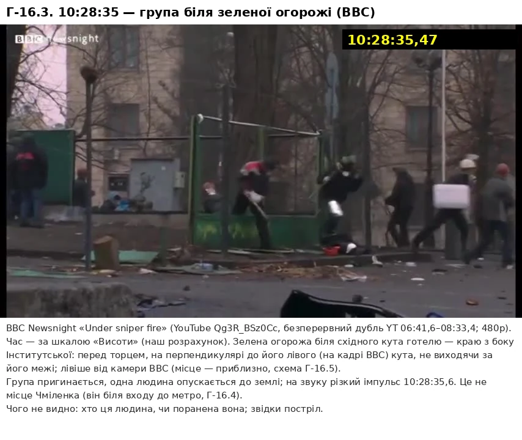

Хто вбивав людей на Майдані 20 лютого 2014 року: досьє щодо кожної з 48 смертей — аналіз Claude
Вирок Святошинського суду від 18.10.2023 і книжка Івана Качановського дають протилежні відповіді. Тут їх звірено між собою та з іншими даними — рішеннями реєстру, розшифровками засідань, справами ДБР і «Омеги», реконструкцією SITU — щодо кожного з 48 епізодів.
Підготовлено за допомогою Claude — моделі ШІ від Anthropic. Anthropic не повʼязана з цим проєктом, не перевіряла й не схвалювала його.
Підсудних, підозрюваних і рядових співробітників силових структур названо лише за роллю, незалежно від вироку; колишніх високопосадовців — за посадою. Живих свідків і поранених на імʼя не названо. Ніщо на сайті не є встановленням чиєїсь вини: це може зробити лише суд. BBC, CNN, Reuters, VRT, SITU Research та інших цитовано як джерела; ніхто з них сайт не перевіряв і не схвалював. Цитати з книжки І. Качановського «The Maidan Massacre in Ukraine» (Palgrave Macmillan, 2024) наведено за ліцензією CC BY 4.0.
Підсумок у цифрах
Дві відповіді на питання, хто стріляв у 48 загиблих: скільки смертей очікується на кожну сторону і яка версія найправдоподібніша для кожної людини. Обидві — оцінки Claude.
Очікувана кількість смертей із 48 за моделлю з розкидом (оцінка Claude). М1 — випадково, М2 — через помилку в розпізнанні, М3 — саме в протестувальника.
Чому ≈9, а не 4
4 — це люди, у яких сторона Майдану набирає 56% і більше: Жеребний, Ушневич, Костенко, Коцюба. ≈9 — відповідь на інше питання: сума імовірностей за всіма 48 епізодами. Шість епізодів, де в Майдану 50% і більше, дають 3,9 смерті; у двох із них — у Пехенька і Братушки, по 51% — жодна сторона не набирає 56%, це «важко сказати». Ще близько 5 смертей набирають епізоди, де в Майдану менше половини: 1,3 + 0,9 + 3,1. До 1,3 входять два інші «важко сказати» — Вайда і Балюк (у Майдану 48 і 47%), а 3,1 — це 34 епізоди, де в Майдану менше 15%. Обидва числа — оцінки Claude, і вони не суперечать одне одному (табл. 2.2 у частині 2).
табл. 2.2, оцінка Claude
- майже напевно (85% і більше) — 36 = 32 + 4
- імовірно (65–84%) — 4 = 2 + 2
- радше (56–64%) — 0
- Богдан Вайда — силовики 52 / Майдан 48
- Олександр Балюк — 53 / 47
- Ігор Пехенько — 49 / 51
- Олексій Братушка — 49 / 51
- майже напевно — Володимир Жеребний (85%), М3
- імовірно — Олег Ушневич (72%), М3; Ігор Костенко (70%), М1
- радше — Віталій Коцюба (61%), М1
Поріг: жодна сторона не набирає 56% — «важко сказати»; це самостійна категорія, відсотки заради неї не зсуваються. Усередині силовиків епізод іде до тієї частини, яка має більше пунктів (рівно порівну немає ніде); усередині сторони Майдану — до градації з найбільшою часткою. У Жеребного і Ушневича М3 випереджає М2 ненабагато (46 проти 34 і 35 проти 31 пункту), тому в кейсовому підрахунку М2 жодного разу не стає головною. Головна версія за епізодом (без порогу): спецрота — 34, інші силовики — 8, сторона Майдану — 6, нічиїх немає.
Межі цієї оцінки
- Куль, гільз, зброї і тіл автор дослідження і ШІ не бачили; вихідних відео в повній якості в них немає. →
- Усі виконавці й перевіряльники — одна й та сама модель, Claude; сліпі перевірки не завжди були повністю сліпими. →
- Частку «саме в протестувальника» (М3), можливо, занижено: у сліпих оцінках М3 становила близько 51% усередині частки Майдану, у Claude — 39%. →
- Полюси 8,2 (усі висновки суду й експертизи правильні) і 21,2 (неправильна вся доказова база суду одразу) — крайні випадки, а не сценарії: суми часток Claude за епізодами, діють лише всередині моделі. →
- Вирок не набрав законної сили: апеляцію не завершено, рішення станом на 06.10.2026 немає. Якщо апеляційний суд інакше оцінить докази, стартові частки епізодів доведеться перерахувати. →
1Частина 1Коротко: що встановлено
Канонічний текст висновків: рамка суперечки, головні висновки і 12 спірних епізодів. Якщо читати лише одну частину — цю; решта частин показують, на чому це тримається, і дають змогу перевірити.
Звідки суперечка, що випливає з цифр вище, наскільки це надійно, чим відрізняється від суду і від Качановського і що лишилося спірним.
1.1Рамка: вирок проти книжки
18 жовтня 2023 р. Святошинський районний суд Києва у складі суду присяжних ухвалив вирок у головній справі про розстріл на Інститутській 20 лютого 2014 р. (справа № 759/3498/15-к). Обвинувачених було пʼятеро, усі — колишні співробітники київського «Беркуту». Одного суд засудив до довічного позбавлення волі, двох — до 15 років за вбивства під час виконання явно злочинного наказу, одного — до 5 років лише за перевищення влади та службових повноважень, одного виправдав повністю. Обвинувачення в тероризмі та в перешкоджанні мирним зібранням відпали в усіх пʼятьох вирок 2023, резолютивна частина.
Причетність засуджених суд встановив до 35 із 48 смертей: до 31 — усіх трьох, ще до чотирьох — лише одного з них; загибель ще однієї людини він урахував як поранення, не знайшовши причинного звʼязку з діями обвинувачених вирок 2023, п. 1. У двох епізодах суд прямо вказав сектор готелю «Україна».
У залі засуджених за вбивства не було: у грудні 2019 р. всіх обвинувачених передали на непідконтрольну Україні територію під час обміну утримуваними особами вирок 2023, п. 13.1; двоє з березня 2020 р. повернулися в процес вирок 2023, п. 13.1, а троє засуджених за вбивства, за даними LB.ua на день вироку, перебували в Росії. Це вирок першої інстанції, його оскаржено. Апеляцію розглядає Київський апеляційний суд; він призначав засідання на 10.07.2026 і 25.09.2026, рішення на дату зрізу даних немає.
На вирок книжкою відповів Іван Качановський, політолог з Оттавського університету: «The Maidan Massacre in Ukraine: The Mass Killing that Changed the World» (Palgrave Macmillan, 2024, відкритий доступ). Він читає той самий вирок як підтвердження своєї версії: розстріл, за його висновком, був операцією під фальшивим прапором, до якої причетні повʼязана з ультраправими група стрільців Майдану і лідери «Свободи» та «Батьківщини» Качановський, розд. 3, с. 91; постріли «Беркуту» на синхронізованих відео, за його словами, не збігаються за часом і напрямком із загибеллю щонайменше 39 із 49 протестувальників Качановський, розд. 3, с. 64. Українські та більшість західних ЗМІ, пише він, подали вирок як доказ того, що «Беркут» убив усіх, і оминули його частини про стрільців у готелі «Україна» Качановський, розд. 2, с. 30.
Брошура не обирає між судом і книжкою заздалегідь: обидва читають ті самі події по-різному, тому вирішують інші дані — ті, що не належать жодній стороні суперечки. Це близько вісімдесяти рішень із державного реєстру судових рішень (зокрема вироки Голосіївського суду 2023–2026 рр. і рішення у справі офіцера «Омеги»), записи засідань самого процесу, синхронізація відео і тривимірна реконструкція SITU, описана в науковій статті 2018 р. Кожен висновок привʼязано до пунктів вироку і сторінок книжки (посилання на кшталт «вирок 2023, п. 5.4.20», «Качановський, розд. 3, с. 64»), а там, де Качановський має рацію, це сказано прямо (частина 9).
Результат справи — резолютивна частина вироку 2023; місцеперебування засуджених — LB.ua, 18.10.2023; статус — ухвала Касаційного кримінального суду у складі Верховного Суду від 28.08.2025 (справа 754/1519/22) і оголошення Київського апеляційного суду про засідання 25.09.2026 (сайт суду).
1.2Головні висновки
Відповіді досьє на головні питання — по одному абзацу. Подробиці й посилання на рядки вироку — у зазначених частинах. Частки, імовірності й середні — оцінки Claude, а не встановлені факти; дані про загиблих і про втрати силовиків — із вироку.
Коротко.
Більшість із 48 загиблих, за оцінкою Claude, убито вогнем силовиків, переважно спецроти «Беркуту». Вогонь з боку Майдану, імовірно, теж забрав життя протестувальників: за медіаною моделі близько 8 смертей, у середньому близько 9, у межах приблизно від 5 до 16 залежно від того, наскільки надійна доказова база суду. Якщо розглядати кожну людину окремо, 40 смертей Claude відносить до силовиків (34 — до спецроти), 4 — до сторони Майдану, а за чотирма жодна сторона не набирає й 56%. Хто саме стріляв з боку Майдану і чи надійшов наказ стріляти по людях вище рівня полку й роти, не встановлено.
Силовики.
На силовиків припадає в середньому близько 39 смертей: близько 28 — на спецроту «Беркуту», близько 11 — на інших силовиків. За окремими людьми Claude відносить до силовиків 40 осіб, із них 36 — «майже напевно». Опора — кулі з автоматів спецроти (у 12 із 48 смертей), відео, на яких спецрота стріляє бойовими по людях у тих самих місцях і в той самий час, і зведені за часом записи «Висоти» та камер Нацбанку (частини 4–6).
Сторона Майдану.
На позиції Майдану припадає в середньому близько 9 смертей; у 90% розіграшів моделі — від 5 до 16. Прямою ознакою підкріплено близько 5,4 з них; решта — малі частки в багатьох епізодах, зокрема залишок на можливу помилку експертиз. За окремими людьми: Володимир Жеребний — «майже напевно» (85%, біля самого порогу), Олег Ушневич і Ігор Костенко — «імовірно», Віталій Коцюба — «радше»; ще четверо — «важко сказати».
Суд прямо вказав сектор готелю «Україна» у двох смертельних епізодах — Володимир Жеребний і Олег Ушневич (в Ушневича — готель або місцевість перед ним), але підстави в цих висновків різні. Щодо Жеребного позу в момент влучання встановлено за двома відео, а вхід рани зліва за такої пози виключає всі позиції силовиків: вони були праворуч і спереду-праворуч від нього. Кулі й калібру немає, а розмір вхідної рани залишає невелику імовірність, що вхід і вихід переплутано, — тоді стрілець опинився б на барикаді. Це найнадійніший з епізодів, де стріляли з боку Майдану; Claude оцінює його у 85% — біля самого порогу «майже напевно».
Щодо Ушневича висновок тримається на позі зі слів одного очевидця, а в справі дві різні кулі. Суд узяв за основу кулю з 4 нарізами («ймовірно з пістолету Макарова»), яка до «Форта-14ТП» офіцера «Омеги» не підходить; із «Фортом» за експертизами 2019–2020 рр. (призначені ГПУ, покладені ДБР в основу підозри) категорично повʼязана інша, шестинарізна, яку суд відкинув. Куля того самого «Форта» (за тими самими експертизами) влучила в щит протестувальника за тим самим парапетом, і одного із сусідів біля парапету в ті самі секунди поранило з території силовиків. Але обидва смертельні постріли — з пістолета, другий очевидець вказує на бік Жовтневого палацу, «не з верху Інститутської», а іншого сусіда тієї самої хвилини поранило в спину з боку готелю. Тут Claude дає Майдану 72%, силовикам разом 28% — помітно менш надійно, ніж щодо Жеребного.
Ще в одному епізоді (Ігор Пехенько) суд допускає готель. У восьми епізодах прямих даних про стрільця в суду немає (у двох із них — Войтович і Опанасюк — він усе ж відніс загибель до силовиків, спираючись на сусідні епізоди).
Суд також визнав, що вранці в готелі були люди зі зброєю, з якої стріляли, застерігши, що це не спростовує вогню спецроти та інших силовиків по активістах. Вогонь з боку Майдану по силовиках суд теж визнав доведеним: приблизно з 05:30 трьох силовиків убито, 39 поранено, близько 09:16 біля Жовтневого палацу вбито ще одного бійця спецроти. Стрільців з боку Майдану суд описує лише як групи й ролі; жодного на імʼя він не встановив (частина 7).
Навмисно чи ні.
Намір стрільця не встановлено в жодному епізоді. За оцінкою Claude, із приблизно девʼяти смертей з боку Майдану близько 3,5 — випадкові влучання (промах, рикошет, перехресний вогонь), близько 1,9 — помилка в розпізнанні, близько 3,6 — постріл саме в протестувальника. У жодному епізоді остання градація не набирає 56% (у Жеребного — 46%). Імовірність, що було хоча б одне таке вбивство, — від ≈46% до ≈91%; модель з розкидом дає ≈97%, але для цього питання вона ближча до підрахунку за незалежних епізодів і тому завищує (частина 7).
Хто стріляв, якщо навмисно.
Найімовірніша картина — мала самостійна група або одинаки (≈60% навмисної частки). Спланована провокація з відома частини керівництва або польових командирів Майдану — ≈20%, провокація силовиків зсередини — ≈10%, російський слід — ≈3%. Жодна версія не спирається на встановленого стрільця (частина 7).
Наказ.
Суд визнав доведеним, що 18 лютого міністр внутрішніх справ, голова СБУ та інші посадові особи вирішили використати повноваження силовиків, зокрема на застосування зброї, і що того ж дня спецрота отримала зброю за вказівкою командира полку. Хто наказав стріляти 20 лютого, суд встановив на рівні полку й роти: близько 09:05 заступник командира полку наказав стріляти невибірково, щоб вивести силовиків із палацу, а приблизно з 09:17 він разом із командиром спецроти наказав стріляти на ураження, щоб зупинити людей. Що наказ на вогонь надійшов згори, суд не встановив. Заочні вироки командирам полку і спецроти ухвалено без змагання сторін, і вони стоять на слабшому рівні встановленості (частина 8).
Книжка Качановського.
Він має рацію в тому, що вогонь з боку Майдану був і що суд сам вказав на готель; у шести епізодах сторона Майдану, за оцінкою Claude, не менш імовірна, ніж силовики. Слушні й його закиди слідству: балістики напрямків майже немає, частину речових доказів утрачено або виключено, автомати розпиляно. Але його теза значно ширша: більшість або майже всіх загиблих убили організовані стрільці Майдану в операції під фальшивим прапором, яку провела частина керівництва Майдану. Така теза, за оцінкою Claude, має імовірність менше приблизно 3%: навіть якщо неправильна вся доказова база суду, на сторону Майдану припадає близько 21 смерті з 48 (частини 7 і 9).
Його головний аргумент — відсутність на синхронізованих відео пострілу «Беркуту» в момент конкретної загибелі (для 39 із 49; щодо 10 відео немає) Качановський, розд. 3, с. 64 — це довід «від відсутності». Синхронізація при цьому існує: суд спирався на зведені за астрономічним часом записи «Висоти» і камер Нацбанку і за ними, наприклад, встановив, що в секунду пострілу в Мельничука (16:50:16 за «Висотою») боєць спецроти за бетонною барикадою стріляє з АКМС — це видно на камері Нацбанку вирок 2023, п. 5.4.125.
Де-факто це визнає і сам Качановський: у тому самому абзаці він пише, що в кількох випадках час загибелі й пострілів «Беркуту» збігається, пояснює це іншим звуком пострілів і тим, що бійці цілилися не в цих людей, і допускає випадкові влучання рикошетом Качановський, розд. 3, с. 64; загибель Сольчаника о 09:08, за його ж словами, збігається з пострілом бійця «Беркуту» в землю за кілька метрів перед ним Качановський, розд. 3, с. 56.
Тому довід «від відсутності» не переважує ні того, що суд бачив на записах, ні прямої балістики (у 12 смертях куля з автомата спецроти). Першого загиблого протестувальника, Георгія Арутюняна (8:59:34), суд за відео повʼязав із бійцями «Беркуту» в синьому камуфляжі, які стріляли мисливською картеччю. Храпаченка (11:28) суд повʼязав із позиціями силовиків, а не з готелем; Мельничука (16:50) — теж, хоча водночас визнав, що прицільний постріл був можливий із готелю, а з барикади — ні.
Наскільки все це надійно.
Вирок не набрав законної сили: апеляцію не завершено, рішення станом на 6 жовтня 2026 р. немає. Більшість смертей інкриміновано обвинуваченим через групові висновки, без кулі щодо конкретного тіла, а ланцюг зберігання низки куль сумнівний; тому навіть епізоди з прямою балістикою Claude оцінює для спецроти не вище 92%. Розкид підсумків переважно задають два спільні ризики: що неправильна одразу вся балістична база і що неправильні одразу всі групові висновки суду. Власні значення цих ризиків можна підставити в калькулятор у розділі 6.1 «Імовірнісний результат».
Зібрано з підсумків частин 1, 3, 4, 6, 7 і 9; числа — оцінки Claude за епізодами і модель частини 6. Висновки — розбір Claude за епізодами, що пройшов сліпі й повторні перевірки (див. додаток Г, «Навіщо тут ШІ і його межі»). Посилання на вирок щодо кожного епізоду — у картках (частина 5); як отримано цифри — частина 2 і частина 6.
1.3Що лишилося спірним
У 36 епізодах силовики набирають 85% і більше. В інших дванадцяти висновок менш надійний або стоїть на порозі (у Жеребного — рівно 85% за сторону Майдану):
Таблиця 1.1
| Загиблий | Час | Силовики / Майдан, % | Чому спірно |
|---|---|---|---|
| Богдан Вайда | 09:00:37 | 52 / 48 | Рикошет картечі від водомета (тоді майже напевно випадкове влучання у свого, М1) або постріл силовиків, що відходили: поруч за хвилину до цього стріляли з помпових рушниць. |
| Олександр Балюк | до 09:02 | 53 / 47 | Момент не знято, експертизи суд виключив, стрільця не встановлено. Із силовиків у це вікно стріляла група «Беркуту» із зеленими позначками, не спецрота. |
| Олексій Братушка | ранок | 49 / 51 | Суд не встановив ні місця, ні часу (≈09:10 — за даними рідних): відомо лише, що вранці він дістав наскрізне поранення шиї, коли був повернутий до стрільця лівою задньо-боковою стороною. |
| Віталій Коцюба | 09:10:11 | 39 / 61 | Рана в лоб, коли голову повернуто впоперек вулиці до Консерваторії; позиції спецроти значно лівіше; рикошет від стовпа не виключено. |
| Ігор Пехенько | 09:16:50–09:18 | 49 / 51 | Суд допускає постріл із готелю, але час і поза — зі слів одного свідка, а поруч, у межах тієї самої хвилини, стріляла спецрота. |
| Андрій Мовчан | 09:21:30–09:30:03 | 65 / 35 | Ні місця, ні пози, ні кулі; оцінка тримається на вікні щільного вогню зі снігової барикади, де тоді стояла спецрота. |
| Назарій Войтович | 09:23:00–09:26:45 | 79 / 21 | Суд відніс загибель до спецроти і тих, хто з нею взаємодіяв, за сусідніми епізодами і груповим висновком; щодо самого епізоду даних немає. Між спецротою та іншими силовиками — майже порівну. |
| Іван Бльок | 09:24:20–09:29:36 | 82 / 18 | Спецроту суд виключив балістикою, постріл відніс до верху вулиці, під виключний контроль силовиків; рикошет не спростовано. |
| Ігор Костенко | 09:29:29–38 | 30 / 70 | Поза за відео, встановлена судом, за розрахунком Claude вказує на нижню частину вулиці, яку тоді контролювали протестувальники; але поза — за секунди до поранення, а експертизи щодо напрямку розходяться. |
| Олег Ушневич | 09:43:14–17 | 28 / 72 | Дві різні кулі, поза зі слів одного очевидця, процес за лінією «Форта-14ТП» офіцера «Омеги» не доведено до кінця. |
| Володимир Жеребний | 09:44:44 | 15 / 85 | Найнадійніший епізод сторони Майдану, але на порозі: кулі немає, а розмір вхідної рани залишає невелику імовірність, що вхід і вихід переплутано. |
| Володимир Мельничук | 16:50:16 | 81 / 19 | Єдиний чутний постріл, за синхронізацією «Висоти», збігається до секунди з пострілом бійця спецроти, але суд визнав, що прицільно стріляти з барикади було неможливо, а з готелю — можливо. |
Чого аналіз не стверджує. Усі відсотки — оцінки Claude, а не встановлені факти (частина 2, «Що тут субʼєктивно»). Категорія «важко сказати» — не нічия і не висновок, що сторони винні порівну. Вона означає, що матеріалів не вистачає, щоб будь-яка сторона набрала 56%. Що вирішило б такі епізоди — у частині 10. Якщо в жодному епізоді частка «саме в протестувальника» не набирає 56% (частина 7), це ще не означає, що таких пострілів не було: це означає, що наявні матеріали цього не показують.
Крім окремих епізодів, відкритими лишаються загальні питання:
- хто і на якому рівні віддав спецроті наказ застосувати зброю (частина 8);
- коли спецрота отримала свою снайперську гвинтівку СГД: за версією обвинувачення — 18 лютого вирок 2023, п. 2, один з обвинувачених, боєць спецроти, показав, що отримав свою СГД лише 21 лютого після обіду вирок 2023, п. 5.1; суд це питання не вирішив;
- хто саме з групи «Беркуту» в синьому камуфляжі із зеленими позначками стріляв картеччю з-за парапету о 08:59 і за чиїм наказом; саму групу суд за відео і фото визнав кримським «Беркутом», а не київським полком вирок 2023, п. 5.3.2;
- наскільки надійні групові висновки суду і ланцюг зберігання куль — від цього залежить розкид усіх цифр (частина 4);
- скільки було стрільців на боці Майдану, де вони стояли і по кому стріляли після 09:20 (частина 7).
Які дані могли б вирішити кожне з цих питань (балістика куль із тіл проти зброї активістів, допити людей, що були в готелі й Консерваторії, матеріали про загибель силовиків), — у частині 10; детально щодо кожного епізоду — у частині 5.
Частки — оцінки Claude за епізодами (модель частини 6); описи — за картками епізодів (частина 5) і журналом рішень Claude щодо оцінок.
2Частина 2Як побудовано розбір
Три рівні висновків суду і як із них та доводів сторін виходять відсотки за епізодами, суми за сторонами та їхній розкид. Потрібна, щоб самому перевірити будь-який відсоток у картках; повні правила розбору — у додатку А.
Метод, правила, словник і посилання — усе, що потрібно, щоб самому перевірити будь-який висновок.
2.1Як отримано цифри
Підсумок складається з чотирьох кроків. На кожному є судження Claude, а не вимірювання, тому всі припущення виписано явно; у частині 6 їх можна замінити своїми і відразу побачити, як змінюється результат.
Що вирішував суд.
Суд присяжних відповідав на питання про вину пʼятьох конкретних обвинувачених, а не на питання «хто стріляв узагалі». Тому у вироку три рівні формулювань, і їх не можна змішувати:
- «Доведено поза розумним сумнівом» — причетність конкретного бійця спецроти (куля із закріпленого автомата і/або видимий постріл у момент поранення) вирок 2023, п. 5.4.99. Це найсильніший рівень: його перевіряли обидві сторони процесу.
- «Безспірно встановлено» — постріл із території виключного контролю силовиків, без конкретного стрільця вирок 2023, п. 5.4.105. Ці встановлення не стосуються вини обвинувачених (їхню причетність щодо цих епізодів не доведено), і сторони оскаржували їх менше; за оцінкою Claude, у частині епізодів слово «безспірно» сильніше, ніж його обґрунтування.
- Не встановлено / «не виключається» — джерело не встановлено; причетність силовиків не доведено, а інших осіб не виключено вирок 2023, п. 5.7.
Готель як джерело пострілу — окрема категорія. У Жеребного і Ушневича це встановлення суду вирок 2023, пп. 5.4.74, 5.4.83, у пораненого поруч протестувальника — теж вирок 2023, п. 5.4.75, у Пехенька — лише «не виключається» вирок 2023, п. 5.4.27. Де суд встановив, де лише не виключив, а де виправдав через сумнів — у досьє скрізь пишеться окремо; картки епізодів позначено рівнем формулювання суду.
1. Кожному епізоду — три імовірності.
Для кожної смерті 100% розподіляються між трьома версіями: спецрота «Беркуту», інші силовики, стрільці з позицій на боці Майдану. Спочатку береться стартова вага за тим, що встановив суд:
Таблиця 2.1
| Що встановив суд | Старт: спецрота / інші силовики / Майдан | Епізодів | Імовірність, що висновок суду щодо епізоду неправильний |
|---|---|---|---|
| Куля з тіла або одягу за експертизою випущена з автомата, закріпленого за бійцем спецроти | 88–92 / 3–6 / 5–7 | 12 | 4,5–18% за епізодом |
| Суд встановив вогонь спецроти за відео і напрямком або за сукупністю сусідніх епізодів, без кулі | 77 / 7 / 16 | 10 | ≈8% |
| Суд встановив лише «територію під контролем силовиків» | 59 / 28 / 13 | 12 | ≈8% |
| Суд відніс до силовиків, але не до спецроти (калібр, напрямок, відео) | 10 / 65 / 25 | 3 | — |
| Суд встановив постріл із сектора готелю «Україна» | 10 / 8 / 82 | 2 | — |
| Стрільця не встановлено, зокрема коли суд лише не виключив готель; сюди ж Claude відносить Войтовича і Опанасюка, де висновок суду тримається лише на груповій рамці «28 епізодів» (контрольний прогін — 30 / 30 / 40) | 25 / 25 / 50 | 9 | — |
Старт уже враховує ризик, що висновок суду неправильний. Для балістики це імовірність хибної привʼязки кулі до автомата — від 4,5 до 18% за епізодом; для висновків за відео, групою і територією — близько 8% на всю доказову базу. Якщо висновок неправильний, епізод оцінюється так, ніби цього висновку немає. Звідси залишок на Майдан у 5–7% навіть за прямої балістики і 13–16% за висновків за відео й територією.
Потім вага зсувається за деталями конкретного епізоду. Кожен зсув записано в картці епізоду («Чому такі відсотки»): скільки відсотків, звідки куди і на якому факті, тож арифметику можна перевірити. Сила зсуву — відношення шансів: за іншого старту той самий факт змінює частку в тій самій пропорції, а не на те саме число пунктів. Головні види зсувів:
- Час. За вироком, спецрота вийшла і відкрила вогонь з автоматів близько 9:05 (з 9:03:05 — постріли спецзасобами з «Форт-500»). Смерті раніше цього майже виключають спецроту.
- Калібр і набій. Кулі не калібру 7,62×39 (мисливська .308; фрагмент, що, за експертами, «приблизно» відповідає .30-06, — калібр суд не визнав встановленим; снайперський 7,62×54R) відводять спецроту й розподіляють вагу між іншими силовиками і Майданом.
- Рикошет. Якщо суд допускає рикошет, напрямок рани мало що каже про стрільця, і невизначеність лишається більшою.
- Свідки й контрдоводи. Показання тих, хто стояв поруч, доводи Качановського (круті кути ран, моменти, коли «Беркут» на відео не стріляє), слідчі експерименти.
Приклад: Віталій Коцюба, 9:10.
Суд стрільця не встановив — старт 25/25/50. Час усередині вікна вогню спецроти біля палацу, поруч у ті самі хвилини Ільківа вбито з автомата спецроти, ще одного протестувальника поранено з території спецроти та інших силовиків: +20 спецроті, −10 іншим силовикам, −10 Майдану (45/15/40).
Канал спереду назад і згори вниз, вхід у правій частині лоба, коли голову обернено майже впоперек вулиці: прямо — Консерваторія, лівіше — готель, позиції спецроти значно лівіше; ознака середня, бо в сам момент голови не видно: −22 спецроті, −3 іншим силовикам, +25 Майдану (23/12/65). На балконах Консерваторії невстановлені люди (суд відносить кадр до 09:10:22, через 11 с після поранення, але в мозаїці «Висоти» це фотовставки без часу зйомки): −1 спецроті, −1 іншим силовикам, +2 Майдану. Спалах на стовпі перед ним у момент поранення — можливий рикошет, який послаблює довід про напрямок, хоча куля однаково йшла спереду: +6 спецроті, +2 іншим силовикам, −8 Майдану.
На єдиному відео, де видно і місце, і бійців спецроти, ні обвинувачення, ні захист не вказали, хто стріляв у момент падіння: −2 спецроті, +2 Майдану. Заступник командира ПМОП стріляв з автомата поруч зі спецротою; геометрія виключає його кут майданчика так само, як позиції спецроти, тому він враховується лише в частці рикошету: −1 спецроті, +1 іншим силовикам. Підсумок: 25/14/61.
2. Середнє — це сума імовірностей.
Очікувана кількість смертей із кожного боку — сума відповідних відсотків за всіма 48 епізодами. Епізод із 90% на Майдан додає 0,9 смерті, епізод із 12% — 0,12. Проста сума дає 27,9 / 10,9 / 9,1; модель зі спільними чинниками (крок 4) — ≈28,0 / 11,0 / 9,0.
3. Чому це не те саме, що підрахунок «за людьми».
Кейсовий результат (Огляд; розділ 6.2) відповідає на інше питання — яка версія найправдоподібніша для кожної людини. Епізоди, де Майдан імовірніший, дають у сумі менше, ніж їхня кількість, а залишок набирається дрібними частками в багатьох епізодах:
Таблиця 2.2
| Частка Майдану в епізоді | Епізодів | Внесок у «з боку Майдану», смертей |
|---|---|---|
| 50% і більше (Жеребний 85, Ушневич 72, Костенко 70, Коцюба 61, Пехенько 51, Братушка 51) | 6 | 3,9 |
| 30–49% (Вайда 48, Балюк 47, Мовчан 35) | 3 | 1,3 |
| 15–29% | 5 | 0,9 |
| менше 15% | 34 | 3,1 |
Тому два результати не суперечать один одному: четверо людей, яких кейсовий підрахунок відносить до сторони Майдану, і близько девʼяти очікуваних смертей із цього боку — чесні відповіді на різні питання.
4. Розкид: спільні чинники.
Сумніви щодо різних епізодів не є незалежними. Якщо неправильна сама доказова база суду — еталонні відстріли автоматів, тлумачення відео чи судово-медичних експертиз, — це стосується одразу багатьох епізодів. Тому розкид обчислюють з урахуванням спільних чинників:
Ризик помилки за епізодом.
Для 12 епізодів із балістикою — імовірність, що привʼязка кулі до автомата спецроти хибна: від 4,5 до 18% за епізодом; із неї близько 4% — спільна для всіх, решта — власна для епізоду. Для 22 епізодів із груповими, відео- чи «територіальними» висновками суду ризик близько 8%, і він цілком спільний. Якщо висновок неправильний, епізод оцінюється так, ніби суд стрільця не встановив, але з тими самими власними доводами епізоду. В інших 14 епізодах цієї гілки немає: їхня невизначеність уже в самих відсотках.Спільні чинники.
Помилка всіх еталонів одразу (близько 4%) робить неправильними одразу всі балістичні і всі групові висновки; помилка тлумачення відео й експертиз (близько 4%) — одразу всі 22 групові висновки. Разом вони й дають близько 8% для групових епізодів.Вогонь сторони Майдану після 09:20.
До 09:31 суд фіксує озброєну групу з боку готелю, постріли й перестрілку; після 09:31 — загальну формулу про «скритий обстріл», поодинокий постріл, після якого активісти кричать у бік готелю (до 09:43), і озброєних людей у готелі о 10:12–10:31; вогнепальних поранень силовиків після 09:20 суд не встановлює. Вогонь вважається «помітним» з імовірністю 85% до 09:31 і 50% після; якщо він був «поодиноким», то в епізодах вікна 09:20–10:31, де частка Майдану фонова або тримається лише на слабкій ознаці, випадкові влучання (М1) скорочуються до 30% від своєї величини, а знята частка переходить до силовиків пропорційно до їхніх часток.Повʼязані епізоди.
Епізоди однієї групи (біля «Аркади», пізні 10:21–10:31, місток і майданчик палацу та інші) розігруються узгоджено, за спільною для групи випадковою величиною (кореляція 0,5). Для куль з одного автомата помилка привʼязки частково спільна: кожна така куля з імовірністю ½ бере спільний для автомата жереб.
Потім компʼютер 40 000 разів «розігрує» історію: спочатку спільні чинники, потім за імовірностями кожного епізоду — стрільця. З цих розіграшів беруть середнє, медіана та інтервал, у який потрапляють 90% результатів. Два полюси для орієнтиру: якщо всі висновки суду й експертизи правильні, на Майдан припадає близько 8; якщо неправильна вся доказова база одразу — близько 21. Але й у другому випадку не всі смерті припадають на Майдан: навіть якщо експертизи помилкові, відео показують, що спецрота стріляла бойовими по людях у тих самих місцях і в той самий час; епізод тоді оцінюється як «стрільця не встановлено» з власними доводами.
Що тут субʼєктивно.
Усі відсотки за епізодами — це оцінки Claude, а не результат вимірювання; їх подано так, щоб міркування можна було перевірити й оскаржити. Суд працював у політично навантаженій обстановці і спирався на групову відповідальність. Качановський обстоює версію, яку висунув ще 2014 р. Качановський, розд. 2, с. 43, і читає вирок вибірково (приклади — у частині 9). Криміналістичну базу пошкоджено: тіла переносили, частину куль, касок і щитів утрачено.
У підсумку стійким є ось що: за оцінкою Claude, на вогонь з боку Майдану в середньому припадає близько девʼяти смертей, але на рівні «імовірно» або певніше це так лише для трьох людей, і жодну смерть не доведено твердо — навіть два епізоди, де суд вказав готель. Верхній хвіст (близько 21) тримається лише на припущенні, що доказова база суду неправильна повністю.
Кількість епізодів за стартами, внесок груп, полюси 8,2 і 21,2 — за оцінками Claude за епізодами (модель частини 6). Калькулятор припущень — у частині 6.
Повні правила розбору — у додатку А.
3Частина 320 лютого: хто де стояв і що відбувалося
Хронологія від убивств до 20 лютого до ранку 20-го, розстановка підрозділів і груп, хто першим почав стріляти. Це сцена, на якій відбуваються всі 48 епізодів: без неї картки важко читати.
Чотири хронології та окремі сюжети навколо них: хто відкрив вогонь першим, хто дав наказ силовикам стріляти на ураження, чому вогонь ущух, втрати силовиків, доля зброї і процесів.
3.1Убивства до 20 лютого
Загибель 48 людей на Інститутській 20 лютого стала третьою хвилею вбивств за місяць. У січні загинули перші протестувальники, троє з них — на Грушевського. 18–19 лютого в центрі Києва загинули десятки людей з обох боків. Це важливо для розуміння ранку 20-го: на той момент обидві сторони вже знали, що супротивник стріляє бойовими набоями. Нижче коротко сказано, хто загинув, кого підозрюють і як далеко просунулася кожна справа. Докладну хронологію 18–19 лютого наведено в наступному розділі.
Ступінь надійності скрізь позначено окремо. Встановлено судом — висновок суду за підсумками змагального процесу. Обвинувачення / підозра — версія слідства, яку суд по суті ще не перевірив. За повідомленнями ЗМІ і Качановський пише — дані, не перевірені в судових рішеннях. Прізвища людей, яких підозрюють або обвинувачують у вбивствах, але не засудили, тут не наводяться: цих людей названо за посадою або роллю.
Січень 2014 року: Грушевського.
За офіційними даними, на які посилається вирок Святошинського суду, з 19 по 26 січня постраждали 316 протестувальників і 191 особа з числа силовиків. Четверо протестувальників загинули, троє з них — від вогнепальних поранень вирок 2023, п. 1. Суд називає появу вогнепальної зброї в ці дні «точковою», але зазначає, що вона сильно вплинула на перебіг протесту вирок 2023, п. 5.6. Суд перелічує загиблих знеособлено вирок 2023, п. 5.6. Нижче — четверо загиблих цих днів за публікаціями ЗМІ.
Таблиця 3.1
| Загиблий | Коли і як | Що відомо про стрільця або винних | Статус |
|---|---|---|---|
| Сергій Нігоян | 22.01, близько 06:00, Грушевського біля стадіону «Динамо»; вогнепальне поранення | Обвинувачення / підозра: у 2021 р. ДБР заявило, що «окреслили для себе коло осіб», а версію про стрілянину протестувальників у своїх «слідчим шляхом виключили». У 2024 р. слідство повідомило, що стріляли з рушниці «Форт-500», і назвало коло підозрюваних: бійців спецпідрозділів МВС (ВВ і «Беркуту»), яким видавали такі рушниці. Про підозру повідомлено організаторам: колишньому президентові, міністрові внутрішніх справ, його заступникам і керівництву ГУМВС Києва. Безпосереднім стрільцям — ні (за повідомленнями ЗМІ). Качановський пише: київський прокурор у 2019 р. посилався на судмедексперта — постріл ззаду з 3–5 м, знайдено пижі; за ухвалами Печерського суду 2015 р. перевірялася причетність членів УНА-УНСО Качановський, розд. 7, с. 204. За даними обвинувачення 2018 р. (у Качановського), повторні експертизи дали відстань 7–21 м Качановський, розд. 7, с. 205 | Стрільця не встановлено; вироку немає |
| Михайло Жизневський | 22.01, близько 09:00, там само; вогнепальне поранення в серце | Те саме розслідування. Качановський пише: на відео, опублікованому 2019 р., Жизневський у момент поранення перебуває за барикадою зі згорілих автобусів, яка закривала його від «Беркуту» Качановський, розд. 7, с. 205 | Стрільця не встановлено; вироку немає |
| Роман Сеник | Поранений 22.01 там само, помер 25.01 | Те саме розслідування | Стрільця не встановлено; вироку немає |
| Юрій Вербицький | 21.01 викрадений з лікарні разом з Ігорем Луценком; тіло з ознаками катувань знайшли 22.01 у лісі під Києвом. Вогнепального поранення не було | Убивство приписують групі «тітушок». У справі про викрадення ухвалено кілька вироків виконавцям. Щонайменше у двох із них (2023 і 2026 рр.) суд не визнав, що викрадення спричинило смерть Вербицького. Справи інших учасників тривають, частина з них у розшуку (за повідомленнями ЗМІ) | Засуджені за викрадення і катування; вироку за саму смерть за знайденими даними немає |
Качановський вважає, що січневі вбивства були вчинені з боку Майдану як операція під чужим прапором Качановський, розд. 7, с. 204–205. Слідство, за останніми публікаціями, дотримується протилежної версії і підозрює силовиків. Суд жодної з цих версій не перевіряв, і нікого зі стрільців не встановлено.
18–19 лютого: загальні цифри.
Суд наводить офіційні дані. 18 лютого постраждали 771 протестувальник і 398 силовиків. Загинули 19 протестувальників, з них 12 від вогнепальних поранень, і 8 силовиків, усі від вогнепальних поранень. Вогнепальні поранення отримали 120 протестувальників і 133 силовики. У ніч і вранці 19 лютого постраждали ще 156 протестувальників і 105 силовиків. Загинули 6 протестувальників, з них 3 від вогнепальних поранень, і 1 силовик вирок 2023, пп. 1, 5.6.
Насильство, за формулюванням суду, застосовувалося «з обох боків, в тому числі з прихованим використанням вогнепальної зброї» вирок 2023, п. 1. За оцінкою суду, 18 лютого вогнепальних поранень більше отримали силовики, а загиблих серед них менше завдяки спорядженню. З 19 лютого вогнепальних поранень більше в протестувальників вирок 2023, п. 5.6. Дані про протестувальників зібрано лише за зверненнями по медичну допомогу, тому вони, імовірно, неповні вирок 2023, п. 5.6.
Таблиця 3.2. Кого підозрюють у вбивствах 18–19 лютого.
| Група випадків | Підозрювані або обвинувачені | Статус |
|---|---|---|
| Розгін ходи вдень 18.02: Інститутська, Кріпосний провулок, Шовковична. Вогонь картеччю; у справі командира батальйону харківського «Беркуту» — загибель Володимира Кищука, Сергія Шаповала, Ігоря Сердюка (за повідомленнями ЗМІ) | Обвинувачення: троє бійців харківського «Беркуту» з 12:00 до 14:30 стріляли з помпових рушниць свинцевою картеччю по людях біля будинку № 24/7; загинули 3 людини. Їхні справи розслідують окремо. За версією обвинувачення, картеч привезли й видали харківському «Беркуту» 17.02. Командир роти харківського «Беркуту» 2016 р. показав у суді, що, за розмовами бійців, їм видавали набої зі свинцевою картеччю (Texty.org.ua, 03.10.2016); 2019 р. апеляційний суд звільнив його з-під варти, повідомлень про вирок йому по суті не знайдено (Mind, 04.12.2020). 2026 р. ДБР передало до суду справу командирів батальйонів харківського і львівського «Беркуту»: організація умисних убивств, 12 загиблих 18–19.02, понад 130 поранених (за повідомленнями ЗМІ) | Вироку за самі вбивства немає; справа командирів у суді |
| Іван Наконечний і Анатолій Нечипоренко забиті на Інститутській близько 15:47–15:49 | Не встановлені | Станом на 2021 р. обвинувачень немає (за повідомленнями ЗМІ) |
| Сергій Дідич: побитий, потім збитий вантажівкою, за кермом якої був протестувальник | Боєць харківського «Беркуту» засуджений Подільським судом у липні 2016 р.: 5 років позбавлення волі зі звільненням від відбування з іспитовим строком 3 роки, за перевищення влади та службових повноважень із застосуванням насильства під час виконання явно злочинного наказу. Водія вантажівки було звільнено за амністією; апеляційний суд це рішення скасував, водій переховується (за повідомленнями ЗМІ) | Частково засуджені |
| Володимир Захаров, співробітник офісу Партії регіонів на Липській, загинув під час захоплення й підпалу офісу протестувальниками | 2020 р. ДБР повідомило про підозру одній з учасниць штурму (за повідомленнями ЗМІ) | Вироку немає за знайденими даними |
| Нічний штурм Майдану і пожежа Будинку профспілок | Обвинувачення: начальникові ГУ СБУ в Києві та області інкримінують відповідальність за 10 загиблих і 124 поранених під час «АТО» (за повідомленнями ЗМІ). Хто безпосередньо стріляв у 12 протестувальників, що загинули ввечері й близько опівночі, не встановлено. Качановський, посилаючись на ГПУ і парламентську комісію, пише, що близько половини з них убито картеччю або мисливськими кулями Качановський, розд. 7, с. 199. Хто підпалив Будинок профспілок, суд не встановив: свідок з «Альфи» показав, що вогонь спалахнув від коктейлів Молотова, які кидали з будівлі вирок 2023, п. 5.5.1 | Процес з 2018 р.; вироку немає |
| Журналіст Вʼячеслав Веремій і Віталій Васильцов: ніч на 19.02, ріг Володимирської та Великої Житомирської, напад «тітушок» | У справі Веремія засуджено організатора групи «тітушок» (апеляція 2018 р. — 5 років позбавлення волі) і одного з учасників (угода про визнання винуватості, 2018). Убивство Васильцова не розкрито (за повідомленнями ЗМІ) | Щодо Веремія є вироки; щодо Васильцова немає |
| Силовики: 8 загиблих 18.02 і 1 у ніч на 19.02 | Стрільців не встановлено, про це докладніше нижче | Досудове розслідування |
| Хмельницький, 19.02, близько 12:36: біля будівлі УСБУ чергою поранено трьох людей і смертельно поранено жінку | Начальника УСБУ і співробітника ЦСО «А» обвинувачували в перевищенні повноважень і вбивстві з необережності. Суд їх виправдав, апеляція 2025 р. виправдання залишила. Суд зазначив, що слідство було однобічним: версію про стрілянину з боку мітингувальників не перевіряли. Балістична експертиза 2016 р. дійшла висновку, що постріли робили зсередини прибудови назовні; акустична експертиза того самого року віднесла першу чергу до холу другого поверху будівлі УСБУ, другу — до прибудови | Виправдані; стрільця не встановлено |
Загибель силовиків.
Зведені дані, які досліджував суд, указують час і місце загибелі всіх восьми загиблих 18 лютого. Двоє військовослужбовців ВВ загинули о 16:40 біля Будинку профспілок, ще двоє — між 16:00 і 17:00 біля Жовтневого палацу. Боєць «Беркуту» ГУМВС в АР Крим загинув о 21:00 біля квіткового годинника, співробітник київського полку (ПМОП) — о 21:00–22:00 біля ТРЦ «Глобус».
Ще один військовослужбовець ВВ загинув о 22:30 біля палацу, ще один — о 23:00 на сходах біля Стели вирок 2023, п. 5.6. Суд, заперечуючи свідкові, відніс загибель військовослужбовців ВВ не до сутичок в урядовому кварталі, а до часу боїв за Майдан вирок 2023, п. 5.5.2. Хто стріляв, не встановлено в жодному з цих випадків. У справі про поранення й загибель силовиків за весь період протестів (13 загиблих, усі — 18–20 лютого) станом на грудень 2018 р. про підозру було повідомлено двом людям вирок 2023, п. 5.6. Захист у процесі вказував на явний перекіс уваги слідства; суд визнав ці доводи «не безпідставними» вирок 2023, п. 5.6.
Окремі зачіпки такі. 2015 р. слідство знайшло автора інтернет-статті, який під псевдонімом зізнався у вбивстві бійців «Беркуту» 18 лютого. Він брав участь у протестах, 18 лютого був поранений у стегно, за його словами — з пістолета Макарова. Слідчий домагався доступу до його медичної картки, щоб перевірити ці слова (ухвала Печерського суду 757/26409/15-к). Чим закінчилася перевірка, невідомо. Командир «Омеги» показав у суді, що 18 лютого бачив, як людина в балаклаві поранила з пістолета офіцера «Омеги» на перехресті Шовковичної та Інститутської вирок 2023, п. 5.5.1.
Качановський пише ще про кілька публічних зізнань у вбивстві силовиків 18 лютого. Він також наводить ухвали київських судів: зброя, з якої 18 лютого вбито двох військовослужбовців ВВ, нібито збіглася зі зброєю учасників нападу на блокпост під Словʼянськом у квітні 2014 р. Качановський, розд. 4, с. 124; розд. 7, с. 200. Ці ухвали не знайдено, дані не перевірено.
Хронологію 18 лютого відновлювала лабораторія Jus Talionis. За її даними, до 16:00 убито або смертельно поранено 11 людей (разом із січневими — 15) і жодного силовика. Перших двох силовиків смертельно поранено близько 16:20–16:25 на Хрещатику. Водночас автори реконструкції зазначають, що підтверджень того, що вогонь по силовиках відкрили саме мітингувальники, немає. За зведенням, яке наводить суд, двоє військовослужбовців ВВ отримали смертельні поранення о 16:40 біля Будинку профспілок, тобто теж на Хрещатику, і ще двоє — між 16:00 і 17:00 біля Жовтневого палацу. Час розходиться на 15–20 хвилин, місце близьке. Що на цей момент загинули вже понад десять протестувальників, відомо лише з реконструкції Jus Talionis; суд часу загибелі протестувальників не наводить.
Підсумок.
Вироку, в якому суд встановив би стрільця в конкретному вбивстві в січні або 18–19 лютого, у знайдених джерелах немає. Є вироки за викрадення Вербицького, за напад «тітушок», під час якого загинув Веремій, і за перевищення повноважень бійцями харківського «Беркуту». Обвинувачення у вбивствах протестувальників 18 лютого висунуто конкретним підрозділам «Беркуту» та їхнім командирам. Щодо вбивств силовиків 18–19 лютого публічних обвинувачень немає: станом на 2018 р. було лише дві підозри у справі, що охоплює всіх 13 загиблих силовиків.
Качановський вважає відсутність вироків ознакою приховування Качановський, розд. 7, с. 200, 203. Захист у Святошинському процесі говорив про вибіркове правосуддя вирок 2023, п. 5.6. За оцінкою Claude, асиметрія в розслідуваннях справді є: щодо загиблих протестувальників названо підрозділи й командирів, щодо загиблих силовиків — лише окремі зачіпки. Але вона сама по собі не показує, хто стріляв у тих чи інших.
Джерела розділу: вирок Святошинського суду від 18.10.2023; книжка Качановського; ухвали Печерського суду 757/26409/15-к (зізнання учасника Майдану) і Хмельницького апеляційного суду 686/17015/19 від 11.12.2025; обвинувальні формулювання в ухвалах Київського апеляційного суду 757/24764/16-к і 757/29699/26-к. ЗМІ: Укрінформ (18.02.2021; 05.08.2024; 20.02.2026), LB.ua (18.02.2021), Громадське (22.01.2021; 2026), Радіо Свобода (03.04.2023), «Детектор медіа» (02.06.2026), НВ (2020), Texty.org.ua / Jus Talionis (05.02.2018); про командира роти і вирок 2016 р. — Texty.org.ua (03.10.2016; стаття про компенсацію МВС родині Дідича), LB.ua (18.02.2021), Mind (04.12.2020). Качановський — також розд. 7, с. 205. Не перевірено: ухвали 2015–2016 рр., на які посилається Качановський (УНА-УНСО; Словʼянськ); підсумок перевірки зізнання 2015 р.; доля справи про загибель Захарова після 2020 р.; статус справи начальника ГУ СБУ в Києві після 2021 р.
Вирок, рішення реєстру, книжка, ЗМІ (позначено в тексті).
3.218–19 лютого
18 лютого протест уперше перетворився на перестрілку. Удень силовики розігнали ходу до Ради. Увечері почався штурм Майдану. За офіційними даними, за добу загинули 19 протестувальників і 8 силовиків, вогнепальні поранення отримали 120 і 133 особи вирок 2023, п. 1. Суд визнав «абсолютно сумнівним» оцінювання такого протесту на той момент як мирної акції, а насильство застосовували обидві сторони, зокрема приховано використовували вогнепальну зброю вирок 2023, пп. 1, 5.6. Того ж дня спецрота київського полку «Беркут» (ПМОП) отримала бойову зброю, з якою через півтори доби вийшла на Інститутську.
Хто стріляв у конкретних загиблих 18–19 лютого, суди здебільшого не встановили. Предмет Святошинського процесу — 20 лютого, а про 18–19 лютого у вироку є лише контекст. Нижче для кожної події зазначено, звідки вона відома: вирок (висновок суду, зведені дані або показання свідка в суді), версія обвинувачення в інших справах, ЗМІ або Качановський. Колір точки показує, хто стріляв за даними джерела; це не означає, що факт встановлено.
Що з цього випливає для 20 лютого. Спецрота вийшла до Жовтневого палацу вже озброєною: зброю вона отримала 18 лютого за наказом командира полку, а рішення про застосування зброї ухвалювали на рівні міністра. Суд не визнав це озброєння доказом умислу на невибірковий вогонь. Обидві сторони з 18 лютого знали, що супротивник застосовує вогнепальну зброю: серед загиблих були і протестувальники, і силовики. Хто стріляв у силовиків 18–19 лютого, не встановлено; у вбивствах протестувальників картеччю обвинувачують конкретні підрозділи «Беркуту». Хронологію з вечора 19 лютого до 09:00 20 лютого наведено в наступному розділі.
Джерела розділу: вирок Святошинського суду від 18.10.2023 — вирок 2023, п. 1 (рішення і видача зброї, спецрота в резерві, бетонна барикада, цифри постраждалих 18–19 лютого), п. 5.5.1 (координатор спецзагонів ВВ: наказ озброїтися, «АТО» з 19:00; «Омега» 18.02, БТР-80; свідки з «Альфи»; потерпілий), п. 5.5.2 і п. 5.6 (загибель силовиків за часом і місцями), п. 5.5.3 (АТО), п. 5.6 (цифри й оцінки суду), п. 7 (озброєння спецроти), п. 5.3.1 (камери НБУ). Версії обвинувачення — з ухвал Київського апеляційного суду 757/24764/16-к і 757/29699/26-к; Хмельницький — 686/17015/19. Качановський — Качановський, розд. 4, с. 101, 103; розд. 7, с. 200, 201. ЗМІ: Texty.org.ua / Jus Talionis (05.02.2018), Громадське / Jus Talionis (19.02.2018), LB.ua (18.02.2021), ЛІГА.Закон (19.02.2014, 16:44), Kyiv Post (стрічка 19.02.2014, 16:45), Daily Lviv (19.02.2014, 15:00), «Подробиці» (хроніка дня 19.02.2014: 16:10, 19:24; 20.02.2014, 09:23), LB.ua (19.02.2014, 12:29), Радіо Свобода (2014), Zaxid.net (15.09.2017), НВ (2020). Не перевірено за першоджерелами (сайт СБУ 2014 р., текст указу на сайті президента): час підписання указу про жалобу, час публікації заяви та уточнення на сайті СБУ.
Розбір Claude, звірений за першоджерелами (перелічено вище).
3.3Вечір 19-го — 9:00 20-го, по годинах
Час київський. Для кожної події позначено тип джерела: рішення або висновок суду, камера, відео або радіоперехоплення, повідомлення ЗМІ в той момент (час публікації часто на 20–40 хвилин пізніший за подію), пізня реконструкція, показання або заяви однієї зі сторін. Колір точки — чия це дія: ● сторона Майдану, ● силовики, ● спецрота, сіра — політика й нейтральні події. Колір точки не означає, що факт встановлено.
Таблиця 3.3. Коли почали стріляти: версії.
| Час | Хто стріляв, за версією | Джерело | Вага |
|---|---|---|---|
| 22:00–02:00 | Людина з гвинтівкою на 3-му поверсі Консерваторії | Показання одного протестувальника (у Качановського) | низька: поодиноке, суперечить «тихій ночі» за камерами |
| 04:42 / 05:21 | Силовики праворуч від Стели, біля Консерваторії | Сторінка «Євромайдан» | низька: заява сторони, поранень не зафіксовано |
| ≈05:00–05:30 | З Консерваторії по «Беркуту» біля Стели; перше поранення — з мисливської рушниці (за слідчим) | Суд (доведена частина обвинувачення), слідчий, поранений боєць «Беркуту» | висока щодо факту стрілянини й поранень; точну хвилину першого пострілу не встановлено |
| ≈06:00 | З Консерваторії; активісти біля містка | Співробітник ГУМВС, самовизнання стрільця («Вести») | середня |
| 06:48 | Силовики «почали стріляти й кидати гранати» | Сторінка «Євромайдан» | низька–середня: «стріляти» може означати травматичну зброю |
| ≈07:00 | 11 поранених бійців «Беркуту» стрільцями з Консерваторії | Командир «Беркуту» телефоном депутатові | середня: одна сторона, але узгоджується зі швидкими на камері НБУ після 7:55 |
| ≈08:00–08:20 | Убито двох силовиків, кулі 7,62 мм, напрямок — Консерваторія або барикада | ГПУ (у переказі Качановського) | висока |
Що з цього випливає.
За камерами і висновком суду, ніч після перемирʼя минула відносно тихо: силовики позицій не змінювали, сторони обмінювалися гранатами, феєрверками й коктейлями Молотова, але бойових дій не було. Вогнепальні поранення силовиків починаються близько 5:00–5:30 і наростають до 8:00; до 7:30 пробито кабіни водометів, після 7:55 ідуть швидкі, з 8:00 гинуть перші силовики. Джерело вогню за всіма незалежними лініями — Консерваторія і барикади Майдану.
Зустрічні заяви про те, що першими стріляли силовики, — це публікації сторінки «Євромайдан» о 5:21 і 6:48 без підтверджених поранень; вогнепальних поранень протестувальників до 8:57 у справі немає, хоча до справи про спецроту такі епізоди й не потрапили б. Силовики в ці години не сиділи без діла: гранати, подразнювальні речовини, травматична зброя, коктейлі Молотова, зокрема в бік Консерваторії. Вирішальний перелом — 8:28–8:50: після втрат силовики починають стихійно відходити, а з 8:55 протестувальники йдуть слідом, і через 4 хвилини гине перший протестувальник.
Розбір Claude за вироком 2023 і книжкою Качановського (джерело зазначено при кожній події); текст пройшов повторні перевірки фактів і посилань. Обвинувачених і підозрюваних названо за ролями.
3.420 лютого
Головний висновок хронології: за вироком, з 5:30 невстановлені особи вели вогонь на ураження по силовиках; одним із джерел суд визнав Консерваторію, а версію про застосування силовиками водометів і картечі до цього вважав недоведеною. Звідси висновок Claude: першими 20 лютого вогонь на ураження відкрили люди з боку Майдану. На момент першої смерті протестувальника силовики три з половиною години перебували під обстрілом. Це пояснює, чому спецрота, озброєна з 18 лютого, яка стояла біля палацу, вийшла з бойовою зброєю, але не те, як вона стріляла далі: суд кваліфікував її вогонь як невибірковий, і більшість загиблих у момент поранення загрози не становили.
Розбір Claude за вироком 2023 і книжкою Качановського (джерело зазначено при кожній події); текст пройшов повторні перевірки фактів і посилань. Обвинувачених і підозрюваних названо за ролями. Ранок до 09:00 — у попередньому розділі; група із зеленими позначками — вирок 2023, п. 5.3.2 і обвинувачення ДБР; пауза ≈09:12 — вирок 2023, пп. 5.4.18, 11.
3.5Хто де був
Крім спецроти (РСП) київського полку «Беркут», на Інститутській 20 лютого були й інші силові підрозділи, а на боці Майдану — озброєні групи. Нижче — хто де був, чим був озброєний і що відомо про його вогонь. Для кожної сторони зазначено, на чому ґрунтуються ці відомості: відео й огляди, досліджені судом; показання (зокрема самих бійців про себе); інші судові рішення та позиція обвинувачення; вторинні дані (ЗМІ, не звірені з документом). Суворість до обох сторін однакова: показання бійця «не стріляв» і показання активіста «зброї не бачив» важать однаково мало, якщо їх не підтверджує відео чи слід.
Спецрота.
Чорна форма, з 19 лютого — жовті повʼязки зі скотчу, «щоб відрізнятися від інших правоохоронців у схожій чорній формі» (показання обвинуваченого, вирок 2023, п. 5.1); зброя — АКМС 7,62×39, «Форт-500», пістолети. Її шлях за описом суду:
Інші силовики: зведена таблиця.
Таблиця 3.4. Інші силовики: зведена таблиця. Час — за описами суду та показаннями; відео «Висоти» починається о 08:53–08:55, усе, що раніше, — за іншими записами.
| Підрозділ | Час | Місце | Зброя | Що встановлено про вогонь | Сила джерела | Доля справ |
|---|---|---|---|---|---|---|
| «Беркут» у синьому міському камуфляжі із зеленими позначками (суд: «ГУМВС в АР Крим»; відео й обвинувачення: рота УМВС у м. Севастополі) | 08:55–≈09:12 | за парапетом праворуч вище містка; кут готелю; потім на Банкову | «Форт-500», у двох пістолети | Суд вважав встановленим: Арутюняна (08:59:34) поранено картеччю з «Форт-500» цієї групи вирок 2023, п. 5.4.4. Щодо Вайди прямий постріл силовиків, що відходили, визнано неможливим вирок 2023, п. 5.4.8; щодо Балюка спільні дії з РСП — «недоведеним припущенням» вирок 2023, п. 5.4.10 | відео (17 бійців стріляють з-за парапету, вирок 2023, п. 5.4.4), експертиза картечі (непридатна для ідентифікації) | У процесі 2023 р. бійців не допитано і не обвинувачено. Обвинувальний акт проти командира роти і двох бійців — у суді з 15.10.2024 (вторинні дані, обвинувачення, не вирок) |
| Заступник командира ПМОП, синій камуфляж, без шолома | 08:53–11:00 | водомети, алейка, майданчик палацу, снігова й бетонна барикади | АКМС, отриманий від бійців РСП вирок 2023, п. 5.3.2 | Черги з АКМС «від живота» вниз по вулиці о 09:05 вирок 2023, п. 5.3.2; наказ РСП на невибірковий вогонь вирок 2023, п. 7; з конкретною смертю його постріли суд не повʼязав | відео «Камуфляж», портретна експертиза (захист її оскаржив), показання товаришів по службі | Засуджений заочно, довічне (див. нижче) |
| «Омега-4»: снайперська пара, сапер, кулеметник (придані загону ВВ «Західний») | з ≈09:16 з РСП; з ≈09:30 на бетонній; до вечора | алейка, снігова (за відео), бетонна барикада | СГД, C.TSM .308, ПКМ, «Форт-14ТП», «Форт-500», АК-74 | Самі: не стріляли, за сніговою снайпер «позицій не займав» вирок 2023, п. 5.5.1. Відео: серед тих, хто приєднався без повʼязок, стріляли «окремими з них» вирок 2023, п. 5.3.2; біля бетонної знайдено гільзу 7,62×54R вирок 2023, п. 5.3.3 | показання самих бійців; відео без впізнання; гільзи з їхніми стволами не порівнювали | Кулеметник — підозрюваний за версією ДБР (епізоди ≈09:25 і ≈09:43; ухвала Печерського суду 12.06.2020); рішень по суті в корпусі немає |
| Спецзагін ВВ «Західний» (Івано-Франківськ) | з ≈09:16 з РСП | алейка, барикади | АК-74 5,45; снайперських гвинтівок не було вирок 2023, п. 5.5.1 | Гільзи 5,45 біля бетонної барикади вирок 2023, п. 5.3.3; стрільців не встановлено | показання; огляд гільз | справ у корпусі немає |
| Основний загін «Омеги» (близько 50 військовослужбовців, за показанням командира в суді 25.04.2019; у вироку число знеособлено) | наказ ≈09:30; ≈11:00 на Банковій (командир); журналіст бачив «кілька десятків» у чорному на розі вже о 10:10 | ріг Банкової, клуб Кабміну (№ 7) | СГД, Sako TRG-22, C.TSM .308, АК-74, ПКМ | Письмовий дозвіл застосовувати зброю проти озброєних — документ досліджено вирок 2023, п. 5.5.1; в оголошеному тексті час підписання не названо, графа «Узгоджено» порожня (розшифровка засідання 25.04.2019). Храпаченко (≈11:28): «безспірно встановлено» — постріл «з боку будівель урядового кварталу», звʼязок стрільця з РСП не доведено вирок 2023, п. 5.4.121 | показання командира і журналіста вирок 2023, п. 5.5.1; розшифровка засідання 25.04.2019; балістика | За версією ДБР (експертизи 2018 р.), куля з C.TSM .308 інструктора-снайпера «Омеги»; підозра 31.10.2018; станом на 04.08.2026 розслідування зупинено (з 05.06.2024, міжнародна правова допомога), підозра чинна, рішень по суті немає ухвала Печерського суду від 04.08.2026 (інструктор-снайпер «Омеги») |
| «Альфа» СБУ: снайперський відділ (Київ) і група із Сімферополя | ≈09:40 біля АП; 10:00 двір КМУ; ≈10:30 дах КМУ | Кабмін | гвинтівки .308, «Форт-14», АК 5,45 | Самі: не стріляли; дорогою о 10:00 потрапили під обстріл «з напрямку станції метро» вирок 2023, п. 5.5.1. Участь 18–22.02 підтверджено обліком вирок 2023, п. 5.5.1 | показання; документ обліку | справ у корпусі немає |
| УДО (охорона АП і КМУ) | з ≈09:00 дах АП; після 10:00 КМУ; двоє — у будинку № 8 | АП, КМУ, будинок № 8 | .308, «Форт-14», ПМ | Самі: не стріляли вирок 2023, п. 5.5.1; з боку будинку № 8 — «поодинокі» сліди вогню, час не встановлено вирок 2023, п. 5.3.3 | показання; огляд слідів | справ у корпусі немає |
| Внутрішні війська (строковики в палаці, командування) | до ≈09:00 біля Стели; у палаці до 09:20–09:30; два БТР за бетонною барикадою з ≈09:30 | Стела, палац, тил барикади | «Форт-500» (за словами командувача — травматичний) | Командувач ВВ (сам підозрюваний, про себе): відвів ВВ близько 09:00 через вогонь з Консерваторії вирок 2023, п. 5.5.2; координатор спецзагонів: з 18.02 — «пряма вказівка на застосовування зброї відповідно до Закону України «Про міліцію»» вирок 2023, п. 5.5.1 | показання | керівництво — заочний процес, підготовча стадія (вторинні дані) |
| Регіональні «Беркути» і «Сокіл» | ранок | дніпропетровський — біля «Глобуса»; «із західного регіону» — охорона КМУ; «Сокіл» — двір КМУ | «Форт-500», пістолети | Дніпропетровський «Беркут» прийняв «перші поранення» і відійшов без команди вирок 2023, п. 5.5.1; вогонь не описано. Харківський і львівський на Інститутській 20.02 у корпусі не встановлені | показання | щодо 18.02 — справи ДБР (ухвали 2023 р., реєстр проєкту) |
| Невстановлені в чорному без повʼязок | 09:16–11:00 | алейка, снігова й бетонна барикади, ріг Банкової | АК-74, снайперські гвинтівки, кулемет | стріляли «окремими з них» вирок 2023, п. 5.3.2; снайпер з оптикою на лівій частині бетонної о 10:22:10 вирок 2023, п. 5.3.2 | відео; належність за кадрами не встановлюється | — |
Група із зеленими позначками.
Із силовиків лише щодо неї вирок описує стрілянину в зоні загибелі до 09:03:05: о 08:55–08:59 вона прикриває відхід ВВ від Стели пострілами з «Форт-500» вирок 2023, п. 5.3.2, о 08:57–09:00:20 17 її бійців стріляють з-за парапету, двоє — з пістолетів вирок 2023, п. 5.4.4.
Суд вважав встановленим («встановлено»), що група вела «прицільний вогонь з гладкоствольної вогнепальної зброї» і що Арутюняна поранено «шляхом відстрілу з неї мисливського патрону, спорядженого свинцевою картеччю, у натовп» вирок 2023, п. 5.4.4. Потім група на хвилину повертається до кута готелю й іде вгору, повз НБУ на Банкову вирок 2023, п. 5.3.2; в епізодах після 09:12 її немає. Бійців групи в процесі 2023 р. не допитували й не обвинувачували.
Кримський чи севастопольський.
Суд пише, що ідентифікує бійців «як спецпідрозділу «Беркут» ГУМВС в АР Крим», а належність до київського ПМОП «беззаперечно спростована» вирок 2023, п. 5.3.2. Підстава — відео «Эксклюзивно. Киевский майдан глазами севастопольського „Беркута“», зняте серед цих бійців вирок 2023, п. 5.3.2. Свідок із ГУМВС показав, що «нетипова форма була у спецпідрозділу «Беркут» АР Крим», а синій камуфляж — звичайна форма «Беркуту» вирок 2023, п. 5.5.1.
За обвинуваченням ОГП/ДБР (у суді з 15.10.2024; вторинні дані), це рота «Беркуту» УМВС у м. Севастополі: близько 09:00, «Форт-500», свинцева картеч, 3 загиблі і 3 поранені — за даними ЗМІ, Арутюнян, Вайда, Балюк. Це позиція обвинувачення, не вирок. Формулювання суду «АР Крим» не підтверджують ні відео, ні обвинувачення; за оцінкою Claude, належність у вироку не встановлено. Для оцінок за епізодами різниці немає: в обох випадках це приїжджий «Беркут», не РСП і не ПМОП.
Хто ними командував.
Довід про те, що ГУМВС Києва не могло наказувати кримським підрозділам, документами не підтверджується. У листопаді–грудні 2013 р. регіональні «Беркути» придавалися ГУМВС Києва телеграмами заступника міністра, і ініціатором щоразу було саме ГУМВС вирок 2023, п. 5.6; за показанням свідка, діями приданих підрозділів на місці керував полковник від імені начальника ГУМВС вирок 2023, п. 5.5.1.
Окремий заочний вирок 04.09.2026 (Шевченківський суд; засуджено співробітників роти УМВС Севастополя, яку обвинувачення ототожнює з групою із зеленими позначками) встановив, що ввечері 20.02, приблизно з 19:00 до 05:00 21.02, роті видали 40 АКС-74У і 12 000 набоїв, які потім вивезли до Криму заочний вирок Шевченківського суду (2026); дату — 22.02 — називає командир роти у відеовиступі, дослідженому судом заочний вирок Шевченківського суду (2026). До ранкових епізодів ці автомати стосунку не мають — ні за, ні проти.
Заступник командира ПМОП.
Єдиний озброєний у синьому камуфляжі серед РСП — «єдиний озброєний у такому одязі» вирок 2023, п. 5.5.1. АКМС він, за висновком суду, отримав від бійців РСП — «від бійців якого відразу отримала АКМС» вирок 2023, п. 5.3.2. О 09:05 він віддав бійцям РСП наказ стріляти; суд назвав його «явно злочинним через вимогу її невибіркового застосування», але спрямованим на евакуацію палацу, а не на теракт; те, що сам він отримав такий наказ згори, — «недоведений» вирок 2023, п. 7.
Суд простежує його на відео з 09:03 до 09:27:40 біля палацу й барикад, потім за бетонною барикадою вирок 2023, п. 5.3.2. У «Висоті» о 09:17:05 видно, як людина в синьому камуфляжі стріляє з АКМС поруч із групою РСП (опис і ототожнення — Claude); з описом суду це узгоджується, нового встановлення не дає.
Вирок призначив довічне позбавлення волі обвинуваченому — підполковнику, заступнику командира полку з кадрової роботи (у заголовку вироку і в резолютивній частині — та сама знеособлена мітка) вирок 2023, вступна частина, п. 1: його засуджено за ч. 2 ст. 365 і п. 1, 5, 12 ч. 2 ст. 115 КК без посилання на виконання наказу (ч. 4 ст. 41) і позбавлено звання «підполковник міліції» вирок 2023, резолютивна частина. В обґрунтуванні покарання суд називає його роль «як начальника, який очолив протиправні» дії підлеглих і зазначає, що він «ухилився від суду» вирок 2023, п. 15. Імена у вироку знеособлено.
«Омега-4», «Західний» і люди без повʼязок.
Командир «Омеги» передав «Західному» снайперську пару, сапера і кулеметника, бо снайпери загону «були без снайперської зброї, мали лише АК 5.45мм» вирок 2023, п. 5.5.1.
Суд за відео описує, як о 09:16–09:20 до РСП приєднуються «бійців в чорній формі без жовтих пов`язок», озброєні снайперськими гвинтівками вирок 2023, п. 5.3.2, біля снігової барикади — «із застосуванням окремими з них вогнепальної зброї в бік активістів» вирок 2023, п. 5.3.2, з 09:30 біля бетонної — люди без повʼязок з АК-74, снайперськими гвинтівками і кулеметом вирок 2023, п. 5.3.2. Снайперських гвинтівок у «Західного» не було, тому, за оцінкою Claude, люди без повʼязок зі снайперськими гвинтівками о 09:16–09:30 — радше «Омега-4».
Снайпер «Омеги-4» каже, що за сніговою барикадою «позицій не займав» вирок 2023, п. 5.5.1; це розходиться з відео. Інший із тієї самої четвірки, командир групи спецзасобів «Омеги», водночас показав, що на барикадах снайпери «Омеги» займали різні позиції й доповідали обстановку по рації; які саме, він не уточнив вирок 2023, п. 5.5.1. Незадовго до 09:50 серед бійців РСП «тривалий час» помітна «особа в чорній формі без жовтих пов`язок на руках, яка була озброєна СГД калібру 7,62х54 мм» вирок 2023, п. 5.4.91. За версією ДБР, кулеметник «Омеги-4» стріляв близько 09:25 і близько 09:43; це підозра, не встановлення суду.
Повʼязка чи квадрат.
У ВВ і «Омеги» теж були позначки — жовті або сірі квадрати на руці чи плечі (показання: «із жовтими квадратами на формі» вирок 2023, п. 5.5.1, «із жовтим квадратом на плечі» вирок 2023, п. 5.5.1; обвинувачений: «жовті квадрати для ВВ» вирок 2023, п. 5.1). На поганому кадрі такий квадрат можна сприйняти за жовту повʼязку РСП.
Еталони на кадрах (опис кадрів — Claude): широка жовта повʼязка РСП на лівому рукаві — 09:08:16 і 09:20:11; зелена позначка групи із зеленими позначками — 08:51:30 і 08:59:54; жовтий квадрат на плечі бійця з написом «МІЛІЦІЯ» біля бетонних блоків — 10:10:07. На кадрах «Висоти» (опис кадрів — Claude) видно снайперів у чорному без видимої повʼязки: 09:19:18 (лежачи на алеї, гвинтівка з оптикою на сошках), 09:20:06 (на коліні біля парапету; лівий рукав не видно), близько 09:26 (за барикадою, імовірно сніговою).
О 09:55:48 на кадрі (опис — Claude) біля цегляної стіни на Банковій — група в чорному, повʼязок не видно, у першого пістолет; суд описує в ці хвилини прибуття загону «без жовтих пов`язок» з пістолетами, АК-74 і снайперськими гвинтівками вирок 2023, п. 5.3.2. О 10:11:14 на кадрі (опис — Claude) біля бетонної барикади видно БТР і кабіну КамАЗа; командир «Омеги» описує 2–3 бійців «Беркуту» на блоках за кузовом КамАЗа вирок 2023, п. 5.5.1, але сам прибув близько 11:00. Належність людей без повʼязок за цими кадрами не встановлюється.
Основна «Омега», «Альфа», УДО.
Основний загін «Омеги», за показанням командира, прибув на Банкову близько 11:00 вирок 2023, п. 5.5.1; журналіст бачив на розі Банкової «кілька десятків» людей у чорному вже о 10:10, чиї вони — не встановлено вирок 2023, п. 5.5.1. На позиції в клубі загін вийшов уже після початку затишшя о 10:31:50.
Командир каже, що снайперів на 3-му поверсі клубу обстріляли «з 5-7 поверхів» готелю і з горища палацу, кулі не вилучалися вирок 2023, п. 5.5.1. З ним повʼязана єдина справа про снайпера силовиків — щодо загибелі Храпаченка (див. таблицю). «Альфа» і УДО — на дахах АП і КМУ; в оцінках епізодів на їхній присутності майже нічого не тримається, крім вікна 10:21–10:31 (див. нижче).
Озброєні групи сторони Майдану: зведена таблиця.
Таблиця 3.5. Озброєні групи сторони Майдану: та сама таблиця.
| Група | Час | Місце | Зброя | Що встановлено про вогонь | Сила джерела | Доля справ |
|---|---|---|---|---|---|---|
| Озброєні в Консерваторії (на 3-му поверсі — сотник «зі своєю сотнею», показання потерпілого вирок 2023, п. 5.4.2) | ≈05:00–09:00 | колонада, вікна, балкон | предмети на кшталт мисливських рушниць і автомата Калашникова вирок 2023, п. 5.3.1 | Відео: постріли «із-за колон Консерваторії в бік правоохоронців» — це визнав на перегляді керівник Самооборони вирок 2023, п. 5.5.2. Суд визнав ранковий обстріл силовиків підтвердженим іншими доказами вирок 2023, п. 5.5.3 | відео; показання обох сторін; командувач ВВ (підозрюваний, про себе) вирок 2023, п. 5.5.2 | Загибель і поранення силовиків уранці в цьому процесі «залишилися взагалі не розслідуваними» вирок 2023, п. 5.7. За вторинними даними, є окреме провадження з підозрюваними, зокрема активістом, який пізніше публічно визнав стрілянину з Консерваторії; не перевірено за документами |
| Стрільці на барикадах Майдану і біля Стели | ранок, до ≈09:00 | Стела, барикади | мисливські рушниці, предмет на кшталт АК | Відео: обстріл силовиків картеччю біля Стели вирок 2023, п. 5.3.1; о 08:37 майбутній стрілець 4 (мітка проєкту) заряджає мисливську зброю вирок 2023, п. 5.3.1. Суд: за ранок 3 силовиків убили, 39 поранили з вогнепальної зброї «невстановлені особи» вирок 2023, п. 1 | відео; показання потерпілих, які суд назвав «переконливим свідченням щирості показань» вирок 2023, п. 5.4.130 | стрільців не встановлено |
| Активіст із пістолетом біля кута готелю | 09:05–09:12 | кут готелю | предмет на кшталт пістолета | Застосований проти групи із зеленими позначками, яка повернулася до кута вирок 2023, п. 5.3.2 | відео | не встановлений |
| Стрільці 1–4 | 09:06–09:16 | виїзд із готелю, місток, сходинки | мисливські рушниці, пістолет | Два постріли стрільця 4 за часом збігаються з пораненнями бійців РСП близько 09:16 вирок 2023, п. 5.3.1; бійця РСП убито — суд в одному місці пише про постріли, зроблені «невстановленими особами», в іншому — про постріл «з мисливської рушниці» вирок 2023, пп. 1, 5.4.29 | відео і звук; балістики немає | не встановлені; епізод не розслідуваний вирок 2023, п. 5.7 |
| Озброєні в групах, що просуваються | 09:16–09:30 | алейка, правий тротуар біля готелю, зелений паркан | рушниці, пістолет | Щонайменше троє озброєних ідуть угору вирок 2023, п. 5.3.2; мала група праворуч — «ознаки локального свідомого групового збройного нападу», «пил від влучання куль в мішки» снігової барикади вирок 2023, п. 5.3.2; о 09:24 людина «стріляє з мисливської рушниці в бік правоохоронців через спини активістів» вирок 2023, п. 5.4.84 | відео | не встановлені |
| Озброєні в готелі «Україна» | після 09:12, особливо 10:12:52–10:31:50 | номери й поверхи готелю | предмети на кшталт рушниць і АК вирок 2023, п. 5.3.2 | Колишній народний депутат проводить людей з предметами на кшталт АК і рушниці (у вироку без часу) вирок 2023, п. 5.3.1; стрілянина з номера через вікно (відео RT, час і ціль невідомі); вихідний отвір у номері 1116 у бік барикад, час невідомий вирок 2023, п. 5.3.3. Напрямок готелю суд назвав для Ушневича вирок 2023, п. 5.4.74 і Жеребного вирок 2023, п. 5.4.83 | відео, огляд; стрільця в жодному епізоді на відео не показано | не встановлені; справ у корпусі немає |
| Вогонь по снайперах «Омеги» | після ≈11:00 | 5–7 поверхи готелю, горище палацу (за доповіддю) | не встановлено | Лише показання командира «Омеги»; кулі не вилучалися вирок 2023, п. 5.5.1 | показання протилежної сторони | — |
Загальний висновок суду щодо керівництва: зі сцени «Майдану» постріли по силовиках «взагалі ніяк не коментувалися», над озброєними передовими групами контролю не було вирок 2023, п. 5.3.2. Хто командував озброєними групами, суд не встановив.
Тактика й укриття після 09:16.
До 09:16 силовики біля палацу стояли відкрито, за 5–50 м від стрільців із рушницями; так загинув боєць РСП. З 09:20:40 вони за сніговою барикадою — купою сміття й мішків навпроти метро, — а з 09:30 за бетонною: її збудували ще 19 лютого, з 14:12 до 19:37 за камерою НБУ вирок 2023, п. 5.3.1. Це блоки заввишки до 3 м вирок 2023, п. 5.4.70 за трьома вантажівками, у проході БТР, ще два БТР у тилу вирок 2023, пп. 1, 5.3.1, 5.3.2.
Вогонь з-за неї суд описує так: «висунення голови стрілка лише в необхідних межах» вирок 2023, п. 5.4.72. За розрахунком Claude, до протестувальників звідти 60–165 м, барикада на 5–7 м вища за «Аркаду».
Тому відсутність поранених силовиків після 09:20 — слабкий довід проти вогню сторони Майдану: відношення правдоподібності, за оцінкою Claude, близько 1,2–2,4, а без укриттів довід був би майже вирішальним. Позитивні сліди вогню по силовиках є для 09:20–09:30 вирок 2023, пп. 5.3.2, 5.4.84; після 09:31 їх майже немає — є загальний висновок суду про те, що «скритий характер обстрілу» зберігався, без названого джерела вирок 2023, п. 5.3.2, і показання «Альфи» про обстріл близько 10:00.
Географія і сліди — коротко.
Готель, за висновком суду, був «об`єктом масованого обстрілу»: абсолютна більшість влучань 7,62×39 — з верхньої частини вулиці та від метро, де стояли силовики, але номер 825 уражено з боку Консерваторії, 925 — з боку Головпоштамту, а з номера 1116 стріляли в бік барикад вирок 2023, п. 5.3.3. На підвіконнях 2-го поверху клубу Кабміну (№ 7) — сліди упорів снайперських гвинтівок і два отвори по 5 мм, на даху — пʼять металевих кульок (саморобний дріб), час не встановлено вирок 2023, п. 5.3.3. З боку будинку № 8 — «поодинокі» сліди вогню вирок 2023, п. 5.3.3. Докладніше — частина 4.
Хто стоїть за часткою «інших силовиків» за епізодами.
У 18 епізодах із 48 частка «інших силовиків» (ІС) — 25% і більше. Нижче частки «спецрота / інші силовики / сторона Майдану» у відсотках і хто, за оцінкою Claude, стоїть за часткою ІС (за обґрунтуваннями епізодів). Сума часток ІС за всіма 48 епізодами — близько 11 загиблих; на ці 18 епізодів припадає близько 8.
Таблиця 3.6
| Епізод | Час | РСП / ІС / Майдан, % | Хто за часткою ІС | На чому тримається |
|---|---|---|---|---|
| Арутюнян | 08:59:34 | 1 / 89 / 10 | група із зеленими позначками | встановлення суду; постріл групи на тому самому записі в ту саму секунду — за звуком |
| Вайда | 09:00:37 | 3 / 49 / 48 | група із зеленими позначками | вікно її вогню; рикошет не виключений; стрільця суд не встановив |
| Балюк | до 09:02 | 1 / 52 / 47 | група із зеленими позначками | лише вікно вогню і місце |
| Аксенин | 09:17:25–50 | 62 / 28 / 10 | люди без повʼязок зі снайперськими гвинтівками; заступник командира ПМОП | у групі, що відходила, були бійці без повʼязок вирок 2023, п. 5.4.28; калібру немає |
| Мовчан | 09:21:30–09:30:03 | 37 / 28 / 35 | усі біля снігової барикади; напрямок на будинки № 7–8 | місце і час орієнтовні; кулі немає |
| Дигдалович | 09:22:51 | 54 / 38 / 8 | снайпери без повʼязок біля снігової («Омега-4» імовірніше); заступник командира ПМОП | крутий спуск каналу — піднесена позиція; калібру немає |
| Войтович | 09:23:00–09:26:45 | 39 / 40 / 21 | люди без повʼязок біля снігової; заступник командира ПМОП | сусідів у ті самі хвилини поранили не з АКМС; поза — зі слів сусіда |
| Бльок | 09:24:20–09:29:36 | 11 / 71 / 18 | снайпери «Омеги-4» (СГД, C.TSM .308) | РСП виключено балістикою (куля не від АКМС 7,62×39); джерело попереду і вище |
| Опанасюк | 09:28:40–48 | 57 / 28 / 15 | люди без повʼязок біля снігової | вогонь по групі зі снігової в ті самі секунди; серед силовиків — до РСП |
| Бондарчук | 09:29:27–35 | 63 / 25 / 12 | озброєні без повʼязок біля снігової вирок 2023, п. 5.4.68 | видимий постріл РСП у ту саму секунду, але стріляли й інші |
| Щербанюк | 09:29:37 | 59 / 28 / 13 | права частина барикади і будинок № 8 | канал справа наліво; слід з боку № 8 вирок 2023, п. 5.3.3 |
| Голоднюк | 09:54:36 | 60 / 33 / 7 | людина без повʼязки з гвинтівкою 7,62×54 («Омега-4» імовірніше); заступник командира ПМОП | кулі немає; каска допускає будь-який калібр від 7,6 мм |
| Пантелєєв | 09:54:53 | 20 / 70 / 10 | людина без повʼязки з гвинтівкою 7,62×54 («Омега-4» імовірніше) | куля 7,62×54R у смертельному пораненні грудей, не АКМС (калібр другого смертельного поранення не встановлено) вирок 2023, п. 5.4.95; у РСП своя СГД — малий шанс |
| Царьок | 10:21:00–57 | 63 / 26 / 11 | люди без повʼязок біля бетонної; клуб № 7 | калібру немає; упори в клубі не датовані |
| Чаплінський | 10:26:48 | 58 / 34 / 8 | люди без повʼязок з АК-74 і снайперськими гвинтівками біля бетонної | напрямок встановлено, калібру немає |
| Чміленко | 10:28:37 | 40 / 50 / 10 | стрілець із гвинтівкою (снайпер без повʼязки з 10:22:10; «Омега-4» або передова частина «Омеги»; «Альфа» на даху КМУ — за її показаннями) | суд залишив відкритою участь інших силовиків з іншим калібром вирок 2023, п. 5.4.116; постріл звучав інакше вирок 2023, п. 5.4.116 |
| Шилінг | 10:28:43 | 56 / 33 / 11 | те саме, що в Чміленка | калібр не встановлено вирок 2023, п. 5.4.117; через 6 с після Чміленка і за 30 м від нього |
| Храпаченко | ≈11:28 | 4 / 85 / 11 | основна «Омега» (снайпер біля клубу) | .308, не АКМС вирок 2023, п. 5.4.121; суд — урядовий квартал вирок 2023, п. 5.4.121; експертиза ДБР 2018 р. — конкретна гвинтівка «Омеги» |
Якщо звести за підрозділами (за оцінкою Claude):
- на групу із зеленими позначками припадає близько 1,9 очікуваного загиблого (3 епізоди);
- на силовиків у зоні алейки, снігової барикади й сусідніх будівель (№ 7–8) о 09:17–09:30 — передусім «Омегу-4», «Західний» і заступника командира ПМОП — близько 2,9 (8 епізодів);
- на людину з гвинтівкою 7,62×54 біля бетонної барикади близько 09:54 — близько 1,0 (2 епізоди);
- на силовиків біля бетонної барикади й у сусідніх будівлях (клуб № 7, дах КМУ) о 10:21–10:28 — близько 1,4 (4 епізоди);
- на основну «Омегу» — близько 0,85 (Храпаченко).
Решта, близько 2,9, розпорошена малими частками по 30 епізодах, де спецрота або сторона Майдану помітно імовірніша.
Джерела розділу: вирок 2023; частки за епізодами — оцінки Claude (модель частини 6); розбір Claude: інші сили і позиції; досьє епізодів і покадрова реконструкція за відео «Висоти» (оцінка Claude); ухвали Печерського суду 2023 р. про доступ до даних звʼязку (рота УМВС Севастополя) і заочний вирок Шевченківського суду 04.09.2026, 761/23741/24; ухвали Печерського суду у справах снайпера й кулеметника «Омеги» (757/24278/20 від 12.06.2020, 757/9422/21 від 23.02.2021, 757/57369/21 від 29.10.2021, 757/7609/22 від 15.02.2022, 757/788/21 від 31.10.2022, 757/15731/26 від 04.08.2026); ухвали Подільського суду у справі кулеметника «Омеги» (758/14218/21 від 12.12.2022, 22.09.2025 і 01.05.2026; 757/49836/23-к від 10.04.2026), автоматичні розшифровки відеозаписів засідань Святошинського суду 25.04.2019 (допит командира «Омеги») і 21.05.2019 (допит трьох військовослужбовців «Омеги-4»); кадри — додаток Е (опис кадрів — Claude). Не перевірено за першоджерелом: обвинувальний акт проти роти УМВС Севастополя (15.10.2024) і список загиблих у ньому — лише ЗМІ; окреме провадження щодо загибелі силовиків уранці 20.02 — лише вторинні дані. Відстані й відношення правдоподібності — розрахунок Claude.
Розбір Claude за вироком 2023, рішеннями реєстру і кадрами «Висоти» (джерела перелічено вище); частки — оцінки Claude за епізодами (модель частини 6).
3.6Хто першим почав стріляти
Тут три різні питання. Хто першим відкрив вогонь 20 лютого взагалі, хто першим почав навмисно стріляти на ураження по протестувальниках і чий постріл першим влучив у протестувальника, зокрема випадково. Відповіді на них різні за надійністю. «Першим» тут означає вранці 20 лютого: 18–19 лютого вогнепальну зброю вже застосовували обидві сторони. Усі відсотки — оцінки Claude.
Схема до табл. 3.7 · зум осі 48 смертей
Перші шість хвилин: рани й смерті до вогню спецроти оцінка Claude
Сіра смуга — спецрота ще в автобусі: за відео вона до 9:03 перебуває в автобусі на Інститутській; пунктирна вертикаль — перші постріли спецроти (з «Форт-500» — з 09:03:05).
Що показано. Шість епізодів табл. 3.7 і поранення 5.4.9 із примітки до неї. Зафарбований кружок — смерть із моделі 48, порожній — поранення (до моделі не входить), пунктир — початок не встановлено; вус — час інтервалом. Відсотки — частка всіх силовиків (спецрота й інші разом) за оцінкою Claude; смуга нейтрального кольору, не колір сторони. Пунктирна рамка — «важко сказати»: тут частки сторін майже рівні.
Чого не показано. Хто саме стріляв; вогонь по силовиках до 08:57; поранення, яких немає у справі.
Звідки кожна позначка — таблиця ▾
| Позначка | Розділ | Дослівно в тексті |
|---|---|---|
| О 9:01–9:02 є ще поранення картеччю (5.4.9) з території силовиків, рикошет не спростовано | 3.6 | О 9:01–9:02 є ще поранення картеччю (5.4.9) з території силовиків, рикошет не спростовано |
| за відео вона до 9:03 перебуває в автобусі на Інститутській | 3.6 | за відео вона до 9:03 перебуває в автобусі на Інститутській |
| (з «Форт-500» — з 09:03:05) | 3.4 | (з «Форт-500» — з 09:03:05) |
| Поранення картеччю крізь щит біля Стели, 8:57–9:00, 65% | табл. 3.7 | Поранення картеччю крізь щит біля Стели, спереду; за вироком — з території силовиків |
| Поранення ліктя перед містком навпроти «Квіткового годинника», 8:58:30–8:59:00, 60% | табл. 3.7 | Поранення ліктя перед містком навпроти «Квіткового годинника», постріл спереду й справа, з боку силовиків |
| Наскрізне поранення передпліччя перед містком, 8:58:35–9:00:11, 60% | табл. 3.7 | Наскрізне поранення передпліччя перед містком, спереду, з боку силовиків |
| Георгій Арутюнян, 08:59:34, 90% | табл. 3.7 | 08:59:34 | 5.4.4 | 90% |
| Богдан Вайда, 09:00:37, 52% | табл. 3.7 | 09:00:37 | 5.4.8 | 52% |
| силовики 52 / Майдан 48 | картка: Вайда | силовики 52 / Майдан 48 |
| Олександр Балюк, до 09:02, 53% | табл. 3.7 | до 09:02 | 5.4.10 | 53% |
| силовики 53 / Майдан 47 | картка: Балюк | силовики 53 / Майдан 47 |
| поранення картеччю (5.4.9) з території силовиків, 9:01–9:02, — | 3.6 | поранення картеччю (5.4.9) з території силовиків, рикошет не спростовано |
Таблиця 3.7. Перші вогнепальні поранення і смерті протестувальників у справі (8:57–9:02)
| Час, пункт вироку | Що сталося | Силовики, за оцінкою Claude |
|---|---|---|
| 8:57–9:00 5.4.1 | Поранення картеччю крізь щит біля Стели, спереду; за вироком — з території силовиків | 65% |
| 8:58:30–8:59:00 5.4.2 | Поранення ліктя перед містком навпроти «Квіткового годинника», постріл спереду й справа, з боку силовиків | 60% |
| 8:58:35–9:00:11 5.4.3 | Наскрізне поранення передпліччя перед містком, спереду, з боку силовиків | 60% |
| 08:59:34 5.4.4 | Георгія Арутюняна убито. Картеч одним пострілом: дві вхідні рани (шия спереду праворуч, права надключична), канали спереду назад, згори вниз, справа наліво | 90% |
| 09:00:37 5.4.8 | Богдана Вайду убито. Картеч у ліву скроню (165 см), канал 3,5 см ззаду наперед, зліва направо, трохи згори вниз | 52% |
| до 09:02 5.4.10 | Олександра Балюка убито. Смертельне поранення грудей | 53% |
Спецроту виключено в усіх шести епізодах: за відео вона до 9:03 перебуває в автобусі на Інститутській. О 9:01–9:02 є ще поранення картеччю (5.4.9) з території силовиків, рикошет не спростовано. Раніше 8:57 вогнепальних поранень протестувальників у справі немає. Загалом на ці три смерті припадає близько 2 на силовиків і 1 на Майдан. Частки за трьома пораненнями (5.4.1–5.4.3) — окремі оцінки Claude, до моделі 48 смертей вони не входять.
1. Хто першим відкрив вогонь 20 лютого
Таблиця 3.8.
| Версія | Імовірність | На чому тримається |
|---|---|---|
| Озброєні люди з території Майдану, по силовиках біля Стели, з 5:30 | 80–90% | Вирок: з 5:30 до 9:00 убито 3 і поранено 39 силовиків; публічне визнання активіста у стрілянині з Консерваторії; відео 8:37–8:39, де людина з мисливською рушницею стріляє з барикади Майдану. Вогнепальних поранень протестувальників до 8:57 у справі немає |
| Силовики, картеччю з «Форт-500» біля Стели, раніше або одночасно з першими пострілами по них | 5–10% | Обвинувачення стверджувало, що спецзасоби силовиків для гумових куль «також були споряджені патронами із зарядом свинцевої картечі», але суд виключив це як недоведене: за великим масивом відео ні таких фактів, ні постраждалих немає. Лишається тільки те, що ранні години майже не розслідувані |
| Не встановити | 5–10% | Ранні години, до 8:30, майже не розібрані ні слідством, ні судом |
2. Хто першим почав навмисно стріляти на ураження по протестувальниках
Таблиця 3.9.
| Версія | Імовірність | На чому тримається |
|---|---|---|
| Силовики не зі спецроти біля містка о 8:57–9:00: група «Беркуту» із зеленими позначками та інші | 55–70% | Суд: поранення 5.4.1–5.4.3 спереду, з території силовиків. Загибель Арутюняна о 8:59:34 під час стрілянини групи з помпових рушниць «у натовп», стрільці в кадрі. Стріляли по тих, хто переслідував техніку, що відходила, у момент атаки на водомет коктейлем Молотова. За вироком, дії передової групи могли розцінюватися як реальна загроза силовикам, але вогонь картеччю в натовп незаконний |
| Силовики ще раніше, о 5:30–8:50, біля Стели, картеччю | 5–10% | Ранні години майже не розслідувані, тому відсутність таких епізодів у справі мало що доводить. Але твердження обвинувачення про картеч у спецзасобах суд перевіряв за відео і не підтвердив; за самим обвинуваченням, о 5:30–9:00 картеч уже не фіксується |
| Озброєні люди з боку Майдану, навмисно по своїх, до 8:57 (провокація) | 5–15% | Твердження Качановського про 10 поранених до 9:00 з «інших секторів» — з посиланням на слідство, без зазначення документа, у вироку його немає; вікно «до 9:00» охоплює і 8:57–9:00. Повідомлення польського ТБ о 9:01 про снайпера з боку Консерваторії, який стріляв в обидва боки. Попередження зі сцени о 9:01:58–9:02:04 (у Качановського — 9:04) не стріляти своїм у спини. Усе це або пізніше 8:57, або не перевірене |
| Не встановити | 10–20% | Ранні поранення до 8:57 ніхто не розслідував |
3. Чий постріл першим влучив у протестувальника, включно з випадковими влучаннями
Тут намір не важливий. Три з половиною години по силовиках стріляли крізь натовп, який стояв просто перед ними. Якщо когось із протестувальників поранили до 8:57, це цілком міг бути вогонь з їхнього власного боку. Тому Claude обчислює це через розвилку: чи були поранення до 8:57, і якщо так, то чиї. Якщо не було, першим влучанням буде один з епізодів 8:57–9:00 з таблиці вище.
- Чи були вогнепальні поранення протестувальників до 8:57. У вироку таких епізодів немає. Качановський з посиланням на слідство, без зазначення документа, пише про 10 поранених до 9:00 — це вікно охоплює і 8:57–9:00. Три з половиною години перестрілки біля Стели роблять ранні поранення правдоподібними. Припущення Claude — 50%.
- Якщо були — частка вогню з боку Майдану. За Майдан — випадкові влучання під час стрілянини по силовиках крізь натовп і твердження про «інші сектори». За силовиків — твердження обвинувачення про картеч у спецзасобах, якого суд, однак, не підтвердив. Припущення — 55%.
- Якщо перші — це 8:57–9:00 — частка силовиків. За окремими епізодами Claude дає силовикам 60–90%, але епізоди повʼязані між собою: ті самі хвилини, те саме місце, та сама група стрільців у кадрі. Припущення — 80%.
Силовики = e × (1 − m) + (1 − e) × c = 0,5 × 0,45 + 0,5 × 0,8 ≈ 63%, сторона Майдану ≈ 37%. Спецрота в обох гілках близько нуля.
Підсумок.
Першими 20 лютого стріляли люди з території Майдану, по силовиках (близько 85%). Першими почали навмисно стріляти на ураження по протестувальниках, імовірно, силовики, але не спецрота (близько 70% разом): за 4–8 хвилин до вогню спецроти. Чий постріл першим влучив у протестувальника, — найвідкритіше питання (близько 63 на 37), бо можливі поранення до 8:57 ніхто не розслідував.
Що це означає для версії «фальшивого прапора»: перше добре зафіксоване вбивство протестувальника, Арутюняна, вчинено з-за парапету, за яким стояли силовики, а не з будівлі Майдану. Перші жертви серед протестувальників, спричинені стрільцями Майдану заради провокації, документами не підтверджуються. Перша смерть, Арутюнян, майже напевно від картечі силовиків не зі спецроти, які стріляли по передовій групі, що переслідувала водомети. Дві наступні смерті лишаються відкритими: щодо Балюка силовики й Майдан приблизно порівну, щодо Вайди теж: близько 48% за оцінкою Claude — рикошет від водомета після пострілу з мисливської рушниці (версія захисту у викладі суду — постріл «з боку протестувальників»; у підсумковому висновку — «третіх осіб»; судом не спростована) — випадкове влучання у свого, а не провокація.
Розбір Claude за вироком 2023 і книжкою Качановського (джерело зазначено при кожній події); текст пройшов повторні перевірки фактів і посилань. Обвинувачених і підозрюваних названо за ролями. Розрахунок — припущення Claude (50 / 55 / 80%).
Схема до частини 3
Сорок вісім смертей на одній осі: час і частки сторін оцінка Claude
Усі 48 видно одразу. Кнопка вікна підсвічує його й показує під схемою рядки хронології за цей час (ті самі, що в розділі 3.4); повторне натискання знімає вибір.
спецротаінші силовикисторона Майдану (М1+М2+М3)«важко сказати»час інтерваломвікно ≥ 2 хв
Позначки (на осі — під стовпчиком, у списку — в рядку) для обох сторін одним знаком і кольором:куля повʼязана з автоматом спецроти (12)рівень висновку суду «готель встановлено» (2)суд: готель не виключений («не виключається») (1)
Інших видів доказів (відео, позиції, показання, рани) на осі немає для жодної сторони — вони в картках.
до 09:05
09:05–09:20
09:20–09:31 (снігова барикада)
09:31–10:31:50 (бетонна барикада)
після 10:31:50
розрив шкали
Виберіть вікно, щоб побачити рядки хронології.
до 09:05 — рядки хронології 3.4
09:05–09:20 — рядки хронології 3.4
09:20–09:31 (снігова барикада) — рядки хронології 3.4
09:31–10:31:50 (бетонна барикада) — рядки хронології 3.4
після 10:31:50 — рядки хронології 3.4
Що показано. Кожен стовпчик — один загиблий; частини стовпчика — частки спецроти, інших силовиків і сторони Майдану за оцінкою Claude з картки епізоду. Початок — час картки; якщо час подано інтервалом, вус тягнеться до його кінця, пунктирний вус — «до…», початок не встановлено. У щільні хвилини стовпчики розсунуто, точний початок — засічка на осі. Вікна — за табл. 7.2.
Чого не показано. Хто стріляв у конкретну секунду; поранення, що не стали смертельними; загибель силовиків; вогонь, не повʼязаний з епізодами. Шкалу розірвано перед 11:28 і перед 16:50. Позначками під стовпчиками показано лише один вид доказів з кожного боку (балістика — до спецроти, висновок суду про напрямок з готелю — до сторони Майдану); решта видів — у картках.
Звідки кожна позначка — таблиця ▾
| Позначка | Розділ | Дослівно в тексті |
|---|---|---|
| до 09:05 | 7.2 | до 09:05 |
| 09:05–09:20 | 7.2 | 09:05–09:20 |
| 09:20–09:31 (снігова барикада) | 7.2 | 09:20–09:31 (снігова барикада) |
| 09:31–10:31:50 (бетонна барикада) | 7.2 | 09:31–10:31:50 (бетонна барикада) |
| після 10:31:50 | 7.2 | після 10:31:50 |
| З 10:31:50 суд фіксує на Інститутській затишшя | 8.2 | З 10:31:50 суд фіксує на Інститутській затишшя |
| готель встановлено | картка: Ушневич | готель встановлено |
| готель встановлено | картка: Жеребний | готель встановлено |
| готель не виключено | картка: Пехенько | готель не виключено |
| не виключається | картка: Пехенько | не виключається |
| Георгій Арутюнян — 08:59:34; частки 1/89/10 | картка: Арутюнян | Георгій Арутюнян, 08:59:34: майже напевно силовики, 90%, оцінка Claude |
| силовики 52 / Майдан 48 | картка: Вайда | силовики 52 / Майдан 48 |
| Богдан Вайда — 09:00:37; частки 3/49/48 | картка: Вайда | Богдан Вайда, 09:00:37: важко сказати, силовики 52 / Майдан 48, оцінка Claude |
| силовики 53 / Майдан 47 | картка: Балюк | силовики 53 / Майдан 47 |
| Олександр Балюк — до 09:02; частки 1/52/47 | картка: Балюк | Олександр Балюк, до 09:02: важко сказати, силовики 53 / Майдан 47, оцінка Claude |
| Максим Шимко — 09:07:16–46; частки 79/9/12 | картка: Шимко | Максим Шимко, 09:07:16–46: майже напевно силовики, 88%, оцінка Claude |
| Богдан Сольчаник — 09:08:15; частки 84/5/11 | картка: Сольчаник | Богдан Сольчаник, 09:08:15: майже напевно силовики, 89%, оцінка Claude |
| Андрій Саєнко — 09:08:34; частки 85/5/10 | картка: Саєнко | Андрій Саєнко, 09:08:34: майже напевно силовики, 90%, оцінка Claude |
| силовики 49 / Майдан 51 | картка: Братушка | силовики 49 / Майдан 51 |
| Олексій Братушка — ≈09:10; частки 29/20/51 | картка: Братушка | Олексій Братушка, ≈09:10: важко сказати, силовики 49 / Майдан 51, оцінка Claude |
| Віталій Коцюба — 09:10:11; частки 25/14/61 | картка: Коцюба | Віталій Коцюба, 09:10:11: радше з боку Майдану, 61%, оцінка Claude |
| Богдан Ільків — 09:11:55; частки 92/3/5 | картка: Ільків | Богдан Ільків, 09:11:55: майже напевно силовики, 95%, оцінка Claude |
| силовики 49 / Майдан 51 | картка: Пехенько | силовики 49 / Майдан 51 |
| Ігор Пехенько — 09:16:50–09:18; частки 33/16/51 | картка: Пехенько | Ігор Пехенько, 09:16:50–09:18: важко сказати, силовики 49 / Майдан 51, оцінка Claude |
| Василь Аксенин — 09:17:25–50; частки 62/28/10 | картка: Аксенин | Василь Аксенин, 09:17:25–50: майже напевно силовики, 90%, оцінка Claude |
| Василь Мойсей — 09:17:40–57; частки 64/24/12 | картка: Мойсей | Василь Мойсей, 09:17:40–57: майже напевно силовики, 88%, оцінка Claude |
| Іван Тарасюк — 09:18:08–09:19:02; частки 75/10/15 | картка: Тарасюк | Іван Тарасюк, 09:18:08–09:19:02: майже напевно силовики, 85%, оцінка Claude |
| Андрій Мовчан — 09:21:30–09:30:03; частки 37/28/35 | картка: Мовчан | Андрій Мовчан, 09:21:30–09:30:03: імовірно силовики, 65%, оцінка Claude |
| Ігор Дмитрів — 09:21:59; частки 89/5/6 | картка: Дмитрів | Ігор Дмитрів, 09:21:59: майже напевно силовики, 94%, оцінка Claude |
| Андрій Дигдалович — 09:22:51; частки 54/38/8 | картка: Дигдалович | Андрій Дигдалович, 09:22:51: майже напевно силовики, 92%, оцінка Claude |
| Назарій Войтович — 09:23:00–09:26:45; частки 39/40/21 | картка: Войтович | Назарій Войтович, 09:23:00–09:26:45: імовірно силовики, 79%, оцінка Claude |
| Іван Бльок — 09:24:20–09:29:36; частки 11/71/18 | картка: Бльок | Іван Бльок, 09:24:20–09:29:36: імовірно силовики, 82%, оцінка Claude |
| Сергій Байдовський — 09:24:48; частки 89/5/6 | картка: Байдовський | Сергій Байдовський, 09:24:48: майже напевно силовики, 94%, оцінка Claude |
| Сергій Кемський — 09:28:32–50; частки 88/6/6 | картка: Кемський | Сергій Кемський, 09:28:32–50: майже напевно силовики, 94%, оцінка Claude |
| Микола Дзявульський — 09:28:38; частки 91/4/5 | картка: Дзявульський | Микола Дзявульський, 09:28:38: майже напевно силовики, 95%, оцінка Claude |
| Валерій Опанасюк — 09:28:40–48; частки 57/28/15 | картка: Опанасюк | Валерій Опанасюк, 09:28:40–48: майже напевно силовики, 85%, оцінка Claude |
| Анатолій Корнєєв — 09:29:21; частки 92/3/5 | картка: Корнєєв | Анатолій Корнєєв, 09:29:21: майже напевно силовики, 95%, оцінка Claude |
| Сергій Бондарчук — 09:29:27–35; частки 63/25/12 | картка: Бондарчук | Сергій Бондарчук, 09:29:27–35: майже напевно силовики, 88%, оцінка Claude |
| Ігор Костенко — 09:29:29–38; частки 15/15/70 | картка: Костенко | Ігор Костенко, 09:29:29–38: імовірно з боку Майдану, 70%, оцінка Claude |
| Олександр Щербанюк — 09:29:37; частки 59/28/13 | картка: Щербанюк | Олександр Щербанюк, 09:29:37: майже напевно силовики, 87%, оцінка Claude |
| Едуард Гриневич — 09:41:41; частки 82/8/10 | картка: Гриневич | Едуард Гриневич, 09:41:41: майже напевно силовики, 90%, оцінка Claude |
| Олег Ушневич — 09:43:14–17; частки 7/21/72 | картка: Ушневич | Олег Ушневич, 09:43:14–17: імовірно з боку Майдану, 72%, оцінка Claude |
| Анатолій Жаловага — 09:43:44; частки 87/8/5 | картка: Жаловага | Анатолій Жаловага, 09:43:44: майже напевно силовики, 95%, оцінка Claude |
| Володимир Жеребний — 09:44:44; частки 8/7/85 | картка: Жеребний | Володимир Жеребний, 09:44:44: майже напевно з боку Майдану, 85%, оцінка Claude |
| Роман Варениця — 09:46:22; частки 92/3/5 | картка: Варениця | Роман Варениця, 09:46:22: майже напевно силовики, 95%, оцінка Claude |
| Роман Точин — 09:47:11; частки 82/9/9 | картка: Точин | Роман Точин, 09:47:11: майже напевно силовики, 91%, оцінка Claude |
| Юрій Паращук — 09:48:58; частки 77/10/13 | картка: Паращук | Юрій Паращук, 09:48:58: майже напевно силовики, 87%, оцінка Claude |
| Ігор Ткачук — 09:49:08; частки 82/6/12 | картка: Ткачук | Ігор Ткачук, 09:49:08: майже напевно силовики, 88%, оцінка Claude |
| Владислав Зубенко — 09:49:17; частки 79/11/10 | картка: Зубенко | Владислав Зубенко, 09:49:17: майже напевно силовики, 90%, оцінка Claude |
| Устим Голоднюк — 09:54:36; частки 60/33/7 | картка: Голоднюк | Устим Голоднюк, 09:54:36: майже напевно силовики, 93%, оцінка Claude |
| Іван Пантелєєв — 09:54:53; частки 20/70/10 | картка: Пантелєєв | Іван Пантелєєв, 09:54:53: майже напевно силовики, 90%, оцінка Claude |
| Роман Гурик — 09:56:28; частки 79/10/11 | картка: Гурик | Роман Гурик, 09:56:28: майже напевно силовики, 89%, оцінка Claude |
| Євген Котляр — 09:56:30 і 09:56:36; частки 80/9/11 | картка: Котляр | Євген Котляр, 09:56:30 і 09:56:36: майже напевно силовики, 89%, оцінка Claude |
| Микола-Олег Паньків — 10:07:24; частки 92/4/4 | картка: Паньків | Микола-Олег Паньків, 10:07:24: майже напевно силовики, 96%, оцінка Claude |
| Леонід Полянський — 10:20–10:31 за вироком; за дзвінком сестрі о 10:22:53 — схоже, ≈10:23–10:31; частки 86/7/7 | картка: Полянський | Леонід Полянський, 10:20–10:31 за вироком; за дзвінком сестрі о 10:22:53 — схоже, ≈10:23–10:31: майже напевно силовики, 93%, оцінка Claude |
| Олександр Царьок — 10:21:00–10:21:57; частки 63/26/11 | картка: Царьок | Олександр Царьок, 10:21:00–10:21:57: майже напевно силовики, 89%, оцінка Claude |
| Володимир Чаплінський — 10:26:48; частки 58/34/8 | картка: Чаплінський | Володимир Чаплінський, 10:26:48: майже напевно силовики, 92%, оцінка Claude |
| Віктор Чміленко — 10:28:37; частки 40/50/10 | картка: Чміленко | Віктор Чміленко, 10:28:37: майже напевно силовики, 90%, оцінка Claude |
| Йосип Шилінг — 10:28:43; частки 56/33/11 | картка: Шилінг | Йосип Шилінг, 10:28:43: майже напевно силовики, 89%, оцінка Claude |
| Олександр Храпаченко — ≈11:28; частки 4/85/11 | картка: Храпаченко | Олександр Храпаченко, ≈11:28: майже напевно силовики, 89%, оцінка Claude |
| Віталій Смоленський — 11:42:42–11:43:28; частки 85/6/9 | картка: Смоленський | Віталій Смоленський, 11:42:42–11:43:28: майже напевно силовики, 91%, оцінка Claude |
| Володимир Мельничук — 16:50:16; частки 58/23/19 | картка: Мельничук | Володимир Мельничук, 16:50:16: імовірно силовики, 81%, оцінка Claude |
| силовики 52 / Майдан 48 | картка: Вайда | силовики 52 / Майдан 48 |
| силовики 53 / Майдан 47 | картка: Балюк | силовики 53 / Майдан 47 |
| силовики 49 / Майдан 51 | картка: Братушка | силовики 49 / Майдан 51 |
| силовики 49 / Майдан 51 | картка: Пехенько | силовики 49 / Майдан 51 |
| вікно «до 09:05»: рядків хронології 3.4 — 9 | 3.4 | рядки копіюються повністю |
| вікно «09:05–09:20»: рядків хронології 3.4 — 4 | 3.4 | рядки копіюються повністю |
| вікно «09:20–09:31 (снігова барикада)»: рядків хронології 3.4 — 1 | 3.4 | рядки копіюються повністю |
| вікно «09:31–10:31:50 (бетонна барикада)»: рядків хронології 3.4 — 4 | 3.4 | рядки копіюються повністю |
| вікно «після 10:31:50»: рядків хронології 3.4 — 3 | 3.4 | рядки копіюються повністю |
| У 12 з 48 смертей | 4.2 | У 12 з 48 смертей |
4Частина 4На чому тримаються висновки
Як читати вирок, балістика, місця й сліди, синхронізація відео і «чи видно постріл», де суд міг помилитися. Тут перевіряється міцність самих доказів — і на користь обвинувачення, і на користь захисту.
На чому тримаються висновки: експертизи і наскільки їм можна вірити, карта позицій і сліди, відео і синхронізація, надійність самого суду.
4.1Як читати вирок
Правило про «секторальні» експертизи (п. 5.4.129).
Висновки комісій судових медиків про обставини пострілу (сектор, взаємне положення) зроблено без експерта-баліста, щодо 121 епізоду, і суд визнав їх у цій частині недопустимими вирок 2023, п. 5.4.129; дані про час і місце недопустимими не визнав, вважаючи їх не висновками експертів, а переказом матеріалів слідства вирок 2023, п. 5.4.129.
Суд перелічив помилки цих експертиз вирок 2023, п. 5.4.129; більша їх частина зміщує сектор уперед — у бік позицій силовиків. Правило застосовано в обидва боки: наприклад, щодо Ушневича прийнято комплексну експертизу з балістом (сектор — готель), а пізню медичну з іншим сектором відхилено вирок 2023, п. 5.4.74. Водночас ситуаційні висновки суд робить сам — і в бік готелю, і в бік силовиків.
Балістика 2015 проти 2019/2021.
Ранні експертизи, зокрема автоматизована система «ТАІС» (січень 2015 р.), куль з автоматами «Беркуту» не повʼязали; харківські експертизи 2019 і 2021 рр. повʼязали. Суд визнав харківські достовірними, а ранні в цій частині — помилковими через обладнання: мікроскопи зі збільшенням до 60–64× проти електронного порівняльного мікроскопа до 150× вирок 2023, п. 5.3.3; експерти пояснювали розбіжності зношеністю стволів і обмеженнями системи вирок 2023, п. 5.3.3. Це технічне обґрунтування, а не фальсифікація; але потрібні автомати знищено — розділено на частини, контрольний відстріл неможливий вирок 2023, пп. 5.2.2, 5.3.3, і незалежно перевірити експертизу повторно тепер не можна. В оцінках це враховано як спільний ризик помилки еталонів.
Виключене судом — в обох сторін.
29 куль і фрагментів (і ще один фрагмент, що лишився в лабораторії), вилучених під час огляду готелю «Україна», недопустимі: немає документа, звідки і як їх вилучено вирок 2023, п. 5.3.3 — це втрата для всіх, вони могли показати і вогонь по готелю, і вогонь із нього. Шестинарізну кулю щодо Ушневича відхилено — належність до епізоду не підтверджено вирок 2023, п. 5.4.74. Час радіоперемовин, накладених у «Висоті», не прийнято вирок 2023, пп. 5.3.1, 5.5.1. Відеореконструкцію щодо трьох загиблих (за звіркою Claude — SITU) суд не досліджував: сторона потерпілих не заявила клопотання вирок 2023, п. 13.10.
Групові абзаци.
Частину висновків суд робить одразу для групи епізодів:
- вісім епізодів 09:02–09:09 обʼєднано в одну групу; причетність до всієї групи «РСП та інших силовиків з АКМС» виведено із сукупності: одна ідентифікована куля (у Саєнка), калібр 7,62×39 у трьох інших, видимий вогонь і загальний напрямок вирок 2023, п. 5.4.20;
- епізод Бльока входить до групи «28 епізодів» вирок 2023, п. 5.4.50, хоча щодо нього самого причетність спецроти балістикою виключено вирок 2023, п. 5.4.50; груповий висновок про «РСП та інших силовиків» вирок 2023, п. 5.4.70 поширився і на нього;
- абзац про обстановку біля парапету «Аркади» майже дослівно повторюється в 13 розділах (з варіантами — ще приблизно у двох десятках) вирок 2023, пп. 5.4.75, 5.4.76, 5.4.92;
- пʼять поранень біля «Аркади» за неповні дві хвилини (≈10:07–10:09) вирішено однією загальною формулою вирок 2023, п. 5.4.105.
Тому груповий висновок в оцінках на окремий епізод не переноситься в жоден бік (розділ «Правила розбору»).
Переказ суду і саме показання.
Іноді переказ або висновок суду твердіший, ніж те, на що він спирається. Свідок каже, що Мойсей «скоріш за все присів, але дивився… в напрямку алейки» вирок 2023, п. 5.4.32, а суд — що він був «передньою частиною тіла» повернутий до алейки вирок 2023, п. 5.4.32. Щодо Царька представник потерпілих визнає, що положення тіла «залишається не з'ясованим» вирок 2023, п. 5.4.109, а суд пише «безспірно встановлено» вирок 2023, п. 5.4.109.
Щодо Аксенина і Байдовського суд спершу застерігає, що напрямок каналу чітко не визначено або рикошет не виключено, а поруч чи через кілька абзаців робить категоричний висновок про напрямок вирок 2023, пп. 5.4.28, 5.4.55. Буває й навпаки: командир загону «Омега» (за відеозаписом його допиту в суді 25.04.2019) у розшифровці допиту говорить про поодинокий постріл у сутінках, близько 16–17 год, категоричніше («На моє враження, так, однозначно постріл був проведений з нашого боку…»), ніж у переказі суду вирок 2023, п. 5.5.1; розшифровка автоматична. Тому там, де це можливо, оцінки спираються на самі показання, а не на переказ.
Описки й шаблони.
Вирок — текст майже на мільйон слів, і в ньому є механічні помилки:
- номери експертиз з чужих епізодів у шаблонній фразі (наприклад, в епізодах Опанасюка і Корнєєва вирок 2023, пп. 5.4.63, 5.4.66);
- час «09:07:59» з підпису автора відео (02:06 запису), відтворений без застереження, хоча на 9 секунд запису раніше (01:57) підпис того самого автора дає 08:59:34: за підписами минуло 8 хв 25 с, за записом — 9 с вирок 2023, п. 5.4.4;
- «19 лютого 2020 року» замість 2014-го вирок 2023, п. 5.4.19;
- «семи» замість «восьми» епізодів у групі вирок 2023, п. 5.4.19;
- та сама людина під різними знеособленими номерами в одному розділі;
- подекуди крізь знеособлення проступають справжні прізвища.
Знеособлені номери (ОСОБА_N) у досьє з іменами не зіставляються, крім загиблих і поранених, чиї епізоди суд розбирає окремо.
Застереження про поранених.
Суд визнав обґрунтованим застереження прокурора і представника потерпілих: дані про поранення активістів неповні: вони враховують лише офіційні звернення по допомогу, а багато поранених не наважувалися звертатися; тяжкі поранення, однак, приховати складніше вирок 2023, п. 5.6.
Розбір Claude: надійність вироку; кожне посилання перевірено повторно за текстом вироку 04.10.2026 (групові абзаци, переказ і показання, описки).
4.2Балістика і довіра до експертиз
Балістика: що повʼязали експертизи 2019/2021, чого не повʼязали у 2015 і чому це не можна перевірити повторно
оцінка Claude · суд: харківські експертизи 2019/2021 «остаточно достовірні», ранні кульові відкинуто (вирок 2023, п. 5.3.3)
Показує
У 12 з 48 смертей кулю або її оболонку з тіла (або з одягу на тілі) експертизи повʼязали з конкретним автоматом спецроти (харківські експертизи 2019 і 2021 рр.). Привʼязки узгоджуються за місцем і часом: у більшості стволів кулі одного ствола не розкидані по вулиці й по годинах (стволи А–Г). Харківська експертиза виправляла попередні висновки і на користь захисту: щодо фрагментів Бльока суд спецроту виключив. За оцінкою Claude, висновку «куля з автомата спецроти» можна довіряти з ризиком помилки від 4,5 до 18% на епізод; частина цього ризику спільна для всіх епізодів.
Слабке місце
Ранні експертизи 2014–2015 рр., зокрема система «ТАІС» (січень 2015 р.), куль з автоматами «Беркуту» не повʼязали; повʼязали лише харківські 2019/2021 рр. Суд визнав ранні помилковими через обладнання, але близько 20 потрібних автоматів знищено, їхні частини знайдено розпиляними: контрольний відстріл неможливий, еталони для них перевірити нічим, і незалежно перевірити експертизу повторно тепер не можна. Попередні висновки були у справі, і чи працювала харківська комісія наосліп, у вироку не сказано; самих куль суд не оглядав, лише фототаблиці. Привʼязці автомата до конкретного бійця довіряти не можна.
Вирішило б
Повторне порівняння куль з відстрілами із самих автоматів — для знищених автоматів неможливе: зброю розпиляно. Вирішила б і незалежна перевірка еталонів 2012 р. для зниклих стволів: для 381 повторно перевіреного автомата відстріли розбіжностей не виявили, для зниклих такої перевірки немає. Вагу експертизи прояснили б відповідь на питання, чи працювала харківська комісія наосліп, і огляд самих куль, а не фототаблиць.
за картками 5.4.107 і 5.4.23 і прогалинами, названими нижче
Коротко про те, як суд обирав між балістикою 2015 р. і харківськими експертизами 2019/2021 рр., сказано в розділі 4.1 («Як читати вирок»). Тут — докладніше: які групи експертиз були, що кожна встановила, як із ними вчинив суд і наскільки їм можна вірити. Окремо розібрано два різні питання: чи помилкова експертиза або ненадійна і чи є фальсифікація, тобто умисна підміна обʼєкта або підганяння висновку. Це різні твердження, і імовірності в них різні.
Про позначення. Номери на кшталт «НОМЕР_264» або «ОСОБА_N» у тексті вироку — мітки знеособлення, а не заводські номери зброї і не імена. Мітки нестабільні: той самий автомат у різних частинах вироку може стояти під різними мітками (наприклад, автомат, закріплений за тим самим бійцем, названо «НОМЕР_250» у вирок 2023, п. 5.2.2 і «НОМЕР_220» у вирок 2023, п. 11). Тому нижче автомати позначено літерами: «ствол А», «ствол Б» тощо.
Схема до розділу 4.2
Балістика: що повʼязали експертизи 2019/2021, чого не повʼязали раніше і чому це не можна перевірити повторно оцінка Claude
Три кроки: які експертизи були і яку обрав суд; з яких ланок складається висновок «стріляв боєць спецроти» і де кожна слабка; чи узгоджуються привʼязки за місцем і часом.
1. Хвилі експертиз щодо тих самих куль: від 2014 р. до 2019/2021 р. · товста рамка — рішення суду щодо хвилі (прийнята або визнана помилковою), пунктир — поза вироком; імовірність помилки — оцінка Claude
А. Класифікаційні балістичні, 2014 р.
Встановили: Калібр, тип кулі, придатність для ідентифікації
Суд: Здебільшого прийнято; окремі висновки відкинуто (фрагменти Бльока помилково визнано частинами «єдиної оболонки» і придатними, вирок 2023, п. 5.3.3)
помилкова або ненадійна: 5–10% на обʼєкт
Б. Порівняння куль між собою, весна 2014 р.
Встановили: Кулі з тіл 10–11 загиблих випущено «з однієї й тієї ж зброї» з малою зношеністю ствола (вирок 2023, п. 5.3.3)
Суд: Відкинуто (вирок 2023, п. 5.3.3)
помилкова або ненадійна: 85–90%
суд: визнано помилковою
В. Автоматизована система АБІС «ТАІС», січень 2015 р.
Встановили: Кулі з тіл не випущено з жодного з 578 АКМС полку
Суд: Визнано помилковою (вирок 2023, п. 5.3.3)
помилкова або ненадійна: 80–85%
Г. Ручні порівняння з еталонами, грудень 2015 — 2016 р.
Встановили: Кулі з тіл — з конкретних автоматів спецроти
Суд: Здебільшого прийнято; частину привʼязок відкинуто або виправлено (вирок 2023, п. 5.3.3)
помилкова або ненадійна: 15–20% на привʼязку, якщо брати її окремо
вибір суду
Д. Харківські експертизи, 2019 р. (кулі) і 2021 р. (гільзи)
Встановили: Кулі з тіл — з конкретних автоматів спецроти; фрагменти Бльока — не зі зброї системи Калашникова
Суд: Визнано «остаточно достовірними» (вирок 2023, п. 5.3.3)
помилкова або ненадійна: Цільна куля: 5–7%; оболонка або фрагмент: 10–15%; спільна для всіх помилка еталонів: 3–5%
Е і Ж. Справи офіцера «Омеги» (пістолет «Форт-14ТП», 2018–2020) і снайпера «Омеги» (гвинтівка .308, 2018)
Встановили: Шестинарізна куля Ушневича і кулі поранених — з пістолета офіцера; фрагмент з тіла Храпаченка — з гвинтівки інструктора-снайпера
Суд: У вироку не досліджувалися: експертиз 2018 р. щодо Храпаченка в тексті немає; шестинарізну кулю суд відкинув як обʼєкт невстановленого походження (вирок 2023, пп. 5.3.3, 5.4.74)
помилкова або ненадійна: Куля Ушневича: ланцюг зберігання порушено — понад 90%, не з тіла — ≈70%; гвинтівка щодо Храпаченка — ≈20%
суд не досліджував2. Ланцюг висновку: кожна ланка — окреме питання
Куля → ствол оцінка Claude
- Тримається
- Цільна куля: 5–7%; оболонка або фрагмент: 10–15%; спільна для всіх помилка еталонів: 3–5%. Експерти заново відстріляли 381 автомат полку і жодної розбіжності з еталонами 2012 р. не виявили.
- Ранні експертизи не повʼязали
- ТАІС, січень 2015 р.: Кулі з тіл не випущено з жодного з 578 АКМС полку. Суд: визнано помилковою.
- Довід проти ранніх експертиз
- Порівняння куль одна з одною навесні 2014 р. дало масовий хибний збіг: одинадцять обʼєктів визнано випущеними з одного ствола, а пізні експертизи рознесли їх по семи стволах.
- Ланцюг зберігання
- добрий ланцюг — 2–4%, помірний — 8–15%, розірваний — 70–90%.
- Слабке місце
- Близько 20 потрібних автоматів на експертизу не надано: їх знищено, їхні частини знайдено розпиляними, і контрольний відстріл з них неможливий. Самих куль суд не оглядав, лише фототаблиці. Чи працювала харківська комісія наосліп, у вироку не сказано.
Ствол → спецрота оцінка Claude
- Тримається
- Привʼязка від ствола до спецроти — набагато надійніша: усі стволи-кандидати закріплено за підрозділом, а серед зниклих автоматів більшість — автомати бійців спецроти (19 з 24).
- Слабке місце
- Де автомат був у чужих руках, додано ≈5% на те, що стріляв не боєць спецроти.
Спецрота → боєць: пунктир
- Чому
- Суд сам у кількох епізодах встановив, що власник автомата в момент пострілу стріляти не міг. Книгу видачі зброї і картки-замісники знищено за наказом командира полку 23 лютого.
- Ще
- Персональна привʼязка від ствола до конкретного бійця ненадійна в принципі.
Ризик хибної привʼязки кулі до автомата за 12 епізодами · оцінка Claude, картки епізодів; порожній кружок — без урахування суперечності напрямку рани
до цієї величини входить спільна для всіх помилка еталонів ≈4%. Ці помилки не незалежні: помилка еталонів перекинула б одразу кілька епізодів.
3. Купчастість: кулі одного ствола — в одному місці й в один час · схема не в масштабі, місце — за групою місць картки
Якби збіги були випадковими помилками, кулі одного ствола було б розкидано по вулиці й по годинах. Виняток усередині ствола А — Саєнко. Від однієї помилки він не захищає: якби неправильно були підписані самі еталони, купчастість збереглася б, але змінилося б, за ким закріплено ствол. Порожній кружок — влучання цим стволом не в того, чия смерть розбирається.
Що показано. Групи експертиз А–Ж з розділу 4.2 з рішенням суду, ланки висновку від кулі до бійця з ризиком кожної, ризик хибної привʼязки для кожного з 12 епізодів з кулею і чотири стволи, названі в розділі, за групами місць.
Чого не показано. Самі сліди на кулях (Claude їх не порівнював); стволи, крім чотирьох названих; епізоди без кулі. Ланка «боєць» не підтверджується жодною експертизою і тому намальована пунктиром.
Звідки кожна позначка — таблиця ▾
| Позначка | Розділ | Дослівно в тексті |
|---|---|---|
| А. Класифікаційні балістичні, 2014 р. | 4.2 | А. Класифікаційні балістичні, 2014 р. |
| помилкова або ненадійна 5–10% на обʼєкт | 4.2 | помилкова або ненадійна 5–10% на обʼєкт |
| Калібр, тип кулі, придатність для ідентифікації | 4.2 | Калібр, тип кулі, придатність для ідентифікації |
| Здебільшого прийнято; окремі висновки відкинуто (фрагменти Бльока помилково визнано частинами «єдиної оболонки» і придатними, вирок 2023, п. 5.3.3) | 4.2 | Здебільшого прийнято; окремі висновки відкинуто (фрагменти Бльока помилково визнано частинами «єдиної оболонки» і придатними, вирок 2023, п. 5.3.3) |
| Б. Порівняння куль між собою, весна 2014 р. | 4.2 | Б. Порівняння куль між собою, весна 2014 р. |
| помилкова або ненадійна 85–90% | 4.2 | помилкова або ненадійна 85–90% |
| Кулі з тіл 10–11 загиблих випущено «з однієї й тієї ж зброї» з малою зношеністю ствола (вирок 2023, п. 5.3.3) | 4.2 | Кулі з тіл 10–11 загиблих випущено «з однієї й тієї ж зброї» з малою зношеністю ствола (вирок 2023, п. 5.3.3) |
| Відкинуто (вирок 2023, п. 5.3.3) | 4.2 | Відкинуто (вирок 2023, п. 5.3.3) |
| В. Автоматизована система АБІС «ТАІС», січень 2015 р. | 4.2 | В. Автоматизована система АБІС «ТАІС», січень 2015 р. |
| помилкова або ненадійна 80–85% | 4.2 | помилкова або ненадійна 80–85% |
| Кулі з тіл не випущено з жодного з 578 АКМС полку | 4.2 | Кулі з тіл не випущено з жодного з 578 АКМС полку |
| Визнано помилковою (вирок 2023, п. 5.3.3) | 4.2 | Визнано помилковою (вирок 2023, п. 5.3.3) |
| Визнано помилковою | 4.2 | Визнано помилковою |
| Г. Ручні порівняння з еталонами, грудень 2015 — 2016 р. | 4.2 | Г. Ручні порівняння з еталонами, грудень 2015 — 2016 р. |
| помилкова або ненадійна 15–20% на привʼязку, якщо брати її окремо | 4.2 | помилкова або ненадійна 15–20% на привʼязку, якщо брати її окремо |
| Кулі з тіл — з конкретних автоматів спецроти | 4.2 | Кулі з тіл — з конкретних автоматів спецроти |
| Здебільшого прийнято; частину привʼязок відкинуто або виправлено (вирок 2023, п. 5.3.3) | 4.2 | Здебільшого прийнято; частину привʼязок відкинуто або виправлено (вирок 2023, п. 5.3.3) |
| Д. Харківські експертизи, 2019 р. (кулі) і 2021 р. (гільзи) | 4.2 | Д. Харківські експертизи, 2019 р. (кулі) і 2021 р. (гільзи) |
| помилкова або ненадійна Цільна куля: 5–7%; оболонка або фрагмент: 10–15%; спільна для всіх помилка еталонів: 3–5% | 4.2 | помилкова або ненадійна Цільна куля: 5–7%; оболонка або фрагмент: 10–15%; спільна для всіх помилка еталонів: 3–5% |
| Кулі з тіл — з конкретних автоматів спецроти; фрагменти Бльока — не зі зброї системи Калашникова | 4.2 | Кулі з тіл — з конкретних автоматів спецроти; фрагменти Бльока — не зі зброї системи Калашникова |
| Визнано «остаточно достовірними» (вирок 2023, п. 5.3.3) | 4.2 | Визнано «остаточно достовірними» (вирок 2023, п. 5.3.3) |
| Е і Ж. Справи офіцера «Омеги» (пістолет «Форт-14ТП», 2018–2020) і снайпера «Омеги» (гвинтівка .308, 2018) | 4.2 | Е і Ж. Справи офіцера «Омеги» (пістолет «Форт-14ТП», 2018–2020) і снайпера «Омеги» (гвинтівка .308, 2018) |
| помилкова або ненадійна Куля Ушневича: ланцюг зберігання порушено — понад 90%, не з тіла — ≈70%; гвинтівка щодо Храпаченка — ≈20% | 4.2 | помилкова або ненадійна Куля Ушневича: ланцюг зберігання порушено — понад 90%, не з тіла — ≈70%; гвинтівка щодо Храпаченка — ≈20% |
| Шестинарізна куля Ушневича і кулі поранених — з пістолета офіцера; фрагмент з тіла Храпаченка — з гвинтівки інструктора-снайпера | 4.2 | Шестинарізна куля Ушневича і кулі поранених — з пістолета офіцера; фрагмент з тіла Храпаченка — з гвинтівки інструктора-снайпера |
| У вироку не досліджувалися: експертиз 2018 р. щодо Храпаченка в тексті немає; шестинарізну кулю суд відкинув як обʼєкт невстановленого походження (вирок 2023, пп. 5.3.3, 5.4.74) | 4.2 | У вироку не досліджувалися: експертиз 2018 р. щодо Храпаченка в тексті немає; шестинарізну кулю суд відкинув як обʼєкт невстановленого походження (вирок 2023, пп. 5.3.3, 5.4.74) |
| У 12 з 48 смертей куля або її оболонка з тіла (або з одягу на тілі) | 4.2 | У 12 з 48 смертей | куля або її оболонка з тіла (або з одягу на тілі) |
| Харківські експертизи, 2019 р. (кулі) і 2021 р. (гільзи) | 4.2 | Харківські експертизи, 2019 р. (кулі) і 2021 р. (гільзи) |
| усі стволи-кандидати закріплено за підрозділом | 4.2 | усі стволи-кандидати закріплено за підрозділом |
| Привʼязці автомата до конкретного бійця довіряти не можна | 4.2 | Привʼязці автомата до конкретного бійця довіряти не можна |
| Цільна куля: 5–7%; оболонка або фрагмент: 10–15%; спільна для всіх помилка еталонів: 3–5% | 4.2 | Цільна куля: 5–7%; оболонка або фрагмент: 10–15%; спільна для всіх помилка еталонів: 3–5% |
| експерти заново відстріляли 381 автомат полку і жодної розбіжності з еталонами 2012 р. не виявили | 4.2 | експерти заново відстріляли 381 автомат полку і жодної розбіжності з еталонами 2012 р. не виявили |
| січень 2015 р. | 4.2 | січень 2015 р. |
| Кулі з тіл не випущено з жодного з 578 АКМС полку | 4.2 | Кулі з тіл не випущено з жодного з 578 АКМС полку |
| Визнано помилковою | 4.2 | Визнано помилковою |
| Порівняння куль одна з одною навесні 2014 р. дало масовий хибний збіг: одинадцять обʼєктів визнано випущеними з одного ствола, а пізні експертизи рознесли їх по семи стволах | 4.2 | Порівняння куль одна з одною навесні 2014 р. дало масовий хибний збіг: одинадцять обʼєктів визнано випущеними з одного ствола, а пізні експертизи рознесли їх по семи стволах |
| добрий ланцюг — 2–4%, помірний — 8–15%, розірваний — 70–90% | 4.2 | добрий ланцюг — 2–4%, помірний — 8–15%, розірваний — 70–90% |
| Близько 20 потрібних автоматів на експертизу не надано: їх знищено, їхні частини знайдено розпиляними, і контрольний відстріл з них неможливий | 4.2 | Близько 20 потрібних автоматів на експертизу не надано: їх знищено, їхні частини знайдено розпиляними, і контрольний відстріл з них неможливий |
| Самих куль суд не оглядав, лише фототаблиці | 4.2 | Самих куль суд не оглядав, лише фототаблиці |
| Чи працювала харківська комісія наосліп, у вироку не сказано | 4.2 | Чи працювала харківська комісія наосліп, у вироку не сказано |
| привʼязка від ствола до спецроти — набагато надійніша: усі стволи-кандидати закріплено за підрозділом, а серед зниклих автоматів більшість — автомати бійців спецроти (19 з 24 | 4.2 | привʼязка від ствола до спецроти — набагато надійніша: усі стволи-кандидати закріплено за підрозділом, а серед зниклих автоматів більшість — автомати бійців спецроти (19 з 24 |
| де автомат був у чужих руках, додано ≈5% на те, що стріляв не боєць спецроти | 4.2 | де автомат був у чужих руках, додано ≈5% на те, що стріляв не боєць спецроти |
| Суд сам у кількох епізодах встановив, що власник автомата в момент пострілу стріляти не міг | 4.2 | Суд сам у кількох епізодах встановив, що власник автомата в момент пострілу стріляти не міг |
| Книгу видачі зброї і картки-замісники знищено за наказом командира полку 23 лютого | 4.2 | Книгу видачі зброї і картки-замісники знищено за наказом командира полку 23 лютого |
| персональна привʼязка від ствола до конкретного бійця ненадійна в принципі | 4.2 | персональна привʼязка від ствола до конкретного бійця ненадійна в принципі |
| з урахуванням суперечності напрямку … — ≈18% | картка: Саєнко | з урахуванням суперечності напрямку | — ≈18% |
| Андрій Саєнко: ≈8% | картка: Саєнко | хибної привʼязки ≈8% |
| Андрій Саєнко: ≈18% | картка: Саєнко | хибної привʼязки ≈18% |
| Богдан Ільків: ≈10% | картка: Ільків | хибної привʼязки ≈10% |
| Ігор Дмитрів: ≈18% | картка: Дмитрів | хибної привʼязки ≈18% |
| Сергій Байдовський: ≈10% | картка: Байдовський | хибної привʼязки ≈10% |
| Сергій Кемський: ≈12% | картка: Кемський | хибної привʼязки ≈12% |
| Микола Дзявульський: ≈4,5% | картка: Дзявульський | хибної привʼязки ≈4,5% |
| Анатолій Корнєєв: ≈10% | картка: Корнєєв | хибної привʼязки ≈10% |
| Анатолій Жаловага: ≈15% | картка: Жаловага | хибної привʼязки ≈15% |
| Роман Варениця: ≈12% | картка: Варениця | хибної привʼязки ≈12% |
| Микола-Олег Паньків: ≈8% | картка: Паньків | хибної привʼязки ≈8% |
| Леонід Полянський: ≈15% | картка: Полянський | хибної привʼязки ≈15% |
| Віталій Смоленський: ≈9% | картка: Смоленський | хибної привʼязки ≈9% |
| до цієї величини входить спільна для всіх помилка еталонів ≈4% | 4.2 | до цієї величини входить спільна для всіх помилка еталонів ≈4% |
| Ці помилки не незалежні: помилка еталонів перекинула б одразу кілька епізодів | 4.2 | Ці помилки не незалежні: помилка еталонів перекинула б одразу кілька епізодів |
| ствол А — місток і алейка біля палацу, 09:08–09:25 (Саєнко, Ільків, Байдовський); ствол Б — алейка біля кінця зеленого паркану, 09:28 (Кемський, Дзявульський); ствол В — біля парапету «Аркади», 09:44–09:46 (поранення стегна Ушневича, Варениця); ствол Г — біля входу до метро, 10:07 (Паньків і поранені поруч) | 4.2 | ствол А — місток і алейка біля палацу, 09:08–09:25 (Саєнко, Ільків, Байдовський); ствол Б — алейка біля кінця зеленого паркану, 09:28 (Кемський, Дзявульський); ствол В — біля парапету «Аркади», 09:44–09:46 (поранення стегна Ушневича, Варениця); ствол Г — біля входу до метро, 10:07 (Паньків і поранені поруч) |
| місток, 08:59–09:12 | група місць у картках | місток, 08:59–09:12 |
| майданчик палацу, 09:16–09:25 | група місць у картках | майданчик палацу, 09:16–09:25 |
| алея і снігова барикада, 09:21–09:30 | група місць у картках | алея і снігова барикада, 09:21–09:30 |
| біля «Аркади», 09:41–09:50 | група місць у картках | біля «Аркади», 09:41–09:50 |
| біля метро, 09:54–10:07 | група місць у картках | біля метро, 09:54–10:07 |
| після 10:20 | група місць у картках | після 10:20 |
| Якби збіги були випадковими помилками, кулі одного ствола було б розкидано по вулиці й по годинах | 4.2 | Якби збіги були випадковими помилками, кулі одного ствола було б розкидано по вулиці й по годинах |
| Виняток усередині ствола А — Саєнко | 4.2 | Виняток усередині ствола А — Саєнко |
| Від однієї помилки він не захищає: якби неправильно були підписані самі еталони, купчастість збереглася б, але змінилося б, за ким закріплено ствол | 4.2 | Від однієї помилки він не захищає: якби неправильно були підписані самі еталони, купчастість збереглася б, але змінилося б, за ким закріплено ствол |
Групи експертиз.
З 2014 по 2021 р. щодо тих самих куль пройшло кілька хвиль експертиз. Вони розходилися між собою, і суд сам це фіксує: «прямі невідповідності щодо результатів ідентифікації зброї» (вирок 2023, п. 5.3.3). Зведення за групами — у картках нижче: у кожної групи дві оцінки — наскільки імовірно, що вона помилкова або ненадійна, і що це підробка. Імовірності помилки за балістичними групами — з розбору балістики (оцінка Claude за внутрішньою узгодженістю експертиз, порівняння слідів Claude не проводив). Імовірності підробки та оцінки щодо медичних експертиз — нові оцінки Claude; підстави — у рядку «Чому такі оцінки» кожної картки і в абзацах після них.
- Що встановили
- Сектор, звідки стріляв стрілець, і взаємне положення стрільця й жертви; найчастіше — позиції силовиків
- Що вирішив суд
- У цій частині недопустимі: за словами суду, вони «є умовними», зроблені не на спеціальних, а на загальних знаннях і поза компетенцією медиків (вирок 2023, п. 5.4.129). Помилки цих висновків суд перелічив (вирок 2023, п. 5.4.129)
- Чому такі оцінки
- Ненадійність визнав сам суд; більша частина перелічених помилок зміщує сектор уперед, до силовиків. Умисел малоймовірний: ті самі медики в первинних висновках самі писали, що такі питання потребують комплексної експертизи з балістом (вирок 2023, п. 5.4.129). Однобічний зсув пояснюється опорою на версію слідства і на відео, де момент поранення не знято
- Що встановили
- Де вхідна і вихідна рани, напрямок ранового каналу, характер поранення
- Що вирішив суд
- Прийнято. Приклад: у Паращука вхід і вихід — у тімʼяній ділянці зліва, канал «спереду назад та дещо зверху донизу» (вирок 2023, п. 5.4.87)
- Чому такі оцінки
- Описи ран — це те, що медики бачили під час розтинів і в лабораторних дослідженнях, а не висновки про обстановку; суд допитував експертів-медиків (вирок 2023, п. 5.4.129) і цю частину прийняв, виключивши лише ситуаційну (приклад розмежування — вирок 2023, п. 5.4.87). Помилки окремих описів можливі (щодо Жеребного за розміром вхідної рани лишається невеликий шанс, що вхід і вихід переплутано), але системного зсуву в один бік не видно
- Що встановили
- Калібр, тип кулі, придатність для ідентифікації
- Що вирішив суд
- Здебільшого прийнято; окремі висновки відкинуто (фрагменти Бльока помилково визнано частинами «єдиної оболонки» і придатними, вирок 2023, п. 5.3.3)
- Чому такі оцінки
- Відомі помилки класу є щодо Бльока, Чміленка, щодо кулі Ушневича; усі їх виявили наступні експертизи
- Що встановили
- Кулі з тіл 10–11 загиблих випущено «з однієї й тієї ж зброї» з малою зношеністю ствола (вирок 2023, п. 5.3.3)
- Що вирішив суд
- Відкинуто (вирок 2023, п. 5.3.3)
- Чому такі оцінки
- Спростовано всіма наступними експертизами, зокрема харківською, виконаною іншими експертами. Експерти 2016 р. показали, що в усіх автоматів був «великий настріл» (вирок 2023, п. 5.3.3), — це суперечить малій зношеності 2014 р.
- Що встановили
- Кулі з тіл не випущено з жодного з 578 АКМС полку
- Що вирішив суд
- Визнано помилковою (вирок 2023, п. 5.3.3)
- Чому такі оцінки
- Це був відбір кандидатів: система видавала до 20 схожих зразків, експерти перевіряли їх вручну і збігів не знайшли (вирок 2023, п. 5.3.3). Система порівнювала плоскі розгортки і не враховувала зношеності стволів (вирок 2023, п. 5.3.3). Експерт, який підписав висновок, у суді від нього відмовився (вирок 2023, п. 5.3.3)
- Що встановили
- Кулі з тіл — з конкретних автоматів спецроти
- Що вирішив суд
- Здебільшого прийнято; частину привʼязок відкинуто або виправлено (вирок 2023, п. 5.3.3)
- Чому такі оцінки
- Усередині цієї ж лінії змінювалися привʼязки (чотири кулі перенесено з одного автомата на інший, вирок 2023, п. 5.3.3); частина експертів та сама, що в групі Б. Але більшість привʼязок потім незалежно підтвердив Харків, тому окремої ваги ця група не додає
- Що встановили
- Кулі з тіл — з конкретних автоматів спецроти; фрагменти Бльока — не зі зброї системи Калашникова
- Що вирішив суд
- Визнано «остаточно достовірними» (вирок 2023, п. 5.3.3)
- Чому такі оцінки
- Докладно — нижче. Ризик підміни або плутанини обʼєкта (умисел і випадковість тут не розрізнити): добрий ланцюг — 2–4%, помірний — 8–15%, розірваний — 70–90%
- Що встановили
- Шестинарізна куля Ушневича і кулі поранених — з пістолета офіцера; фрагмент з тіла Храпаченка — з гвинтівки інструктора-снайпера
- Що вирішив суд
- У вироку не досліджувалися: експертиз 2018 р. щодо Храпаченка у тексті немає; шестинарізну кулю суд відкинув як обʼєкт невстановленого походження (вирок 2023, пп. 5.3.3, 5.4.74)
- Чому такі оцінки
- Зброя в цих справах є, відстріли з неї зроблено — за методом це сильніше за харківську лінію. Слабкість — в обʼєктах: у кулі Ушневича три несумісні описи, у фрагмента Храпаченка суперечливо описано придатність. Суд ці експертизи не перевіряв. Підробка щодо кулі Ушневича — підстави в частині 9, «Загальні доводи»
Звідки оцінки фальсифікації (за оцінкою Claude).
Для груп Б і В (менше 2%): їхні помилки не допомагали обвинуваченню, а розбіжності експерти пояснювали в суді, зокрема визнаючи власні помилки (вирок 2023, п. 5.3.3). Для групи Г (≈3%) — на рівні верхньої межі харківської оцінки: ті самі експерти, привʼязки змінювалися всередині однієї лінії. Для харківської експертизи (1–3%): інша провідна установа, попередніх експертів виключено, виправлення йшли не в один бік (нижче). Підміни обʼєкта до експертизи ці доводи не покривають — її оцінено окремо, за ланцюгом зберігання.
Чому експертизи 2014 р. і ТАІС не переважують пізніх.
Порівняння куль одна з одною навесні 2014 р. дало масовий хибний збіг: одинадцять обʼєктів визнано випущеними з одного ствола, а пізні експертизи рознесли їх по семи стволах. З десяти загиблих, яких Качановський відносить до однієї зброї (Качановський, розд. 6, с. 185), девʼятьох за підсумковими експертизами вбито з шести різних автоматів спецроти, а оболонку зі справи Шимка суд із тілом не повʼязав (дані епізодів; вирок 2023, п. 5.3.3). Негативний результат ТАІС — невдача пошуку, а не доведене виключення.
Суперечності ранніх експертиз суд пояснив недосконалістю обладнання і великим обсягом обʼєктів: мікроскопи до 60–64× проти порівняльного мікроскопа до 150× (вирок 2023, п. 5.3.3), — а самі висновки відкинув як не підтверджені матеріалами справи і такі, що суперечать харківським (вирок 2023, п. 5.3.3). Експерти в суді пояснювали й інше: коли зʼявився порівняльний матеріал — відстріли 2012 р., — стало можливим відрізнити стійкі сліди ствола від слідів зношення; так експерт пояснив «34 випадки зміни груп» (вирок 2023, п. 5.3.3).
Сильні сторони харківської експертизи.
- Її призначив сам суд присяжних 22.11.2016 за спільним клопотанням сторін, зокрема захисту, і поіменно виключив зі складу комісії експертів, які вже брали участь в експертизах у справі (вирок 2023, п. 5.3.3).
- Провідна установа — інша: Харківський інститут ім. Бокаріуса. Обладнання — порівняльний мікроскоп до 150× (вирок 2023, п. 5.3.3).
- Робота тривала довго: від призначення до другого висновку (щодо гільз, 01.03.2021) — понад чотири роки (вирок 2023, п. 5.3.3).
- Результат не повторює попередні механічно. Частина виправлень — на користь захисту: фрагменти Бльока визнано випущеними не зі зброї системи Калашникова, і спецроту в цьому епізоді суд виключив (вирок 2023, пп. 5.3.3, 5.4.50). Чотири кулі, які експертиза 16.12.2015 віднесла до одного автомата, ще експертиза 14.06.2016 перевіднесла до іншого, і Харків підтвердив виправлену привʼязку, а не початкову (вирок 2023, п. 5.3.3).
- Привʼязки узгоджуються за місцем і часом. Якби збіги були випадковими помилками, кулі одного ствола було б розкидано по вулиці й по годинах. Цього немає в більшості стволів: ствол А — місток і алейка біля палацу, 09:08–09:25 (Саєнко, Ільків, Байдовський); ствол Б — алейка біля кінця зеленого паркану, 09:28 (Кемський, Дзявульський); ствол В — біля парапету «Аркади», 09:44–09:46 (поранення стегна Ушневича, Варениця); ствол Г — біля входу до метро, 10:07 (Паньків і поранені поруч). Це незалежний довід на користь привʼязок. Виняток усередині ствола А — Саєнко: решта влучань із цього ствола прийшли з боку палацу, зліва, а Саєнка поранено справа (вирок 2023, п. 5.4.20), тому його привʼязку оцінено як менш надійну (≈18%, картка епізоду). Від однієї помилки він не захищає: якби неправильно були підписані самі еталони, купчастість збереглася б, але змінилося б, за ким закріплено ствол. Для питання, чи це автомат спецроти, це не важливо: усі кандидати — зброя полку.
- Еталони перевірено вибірково: експерти заново відстріляли 381 автомат полку і жодної розбіжності з еталонами 2012 р. не виявили (вирок 2023, п. 5.2.2). За розрахунком Claude, це обмежує частку неправильно підписаних еталонів приблизно 0,8% (за 95% довіри).
Слабкі сторони харківської експертизи.
- Порівнювали лише з еталонами 2012 р. Близько 20 потрібних автоматів на експертизу не надано: їх знищено, їхні частини знайдено розпиляними, і контрольний відстріл з них неможливий (вирок 2023, пп. 5.2.2, 5.3.3; доля зброї — частина 8, «Доля зброї 21–24 лютого»). Для цих стволів еталони перевірити нічим. Це головний залишковий ризик, спільний для всіх епізодів з кулею (≈4%, оцінка Claude).
- Захист заперечував: пакети з еталонами не опечатано, написи пошкоджено або виправлено (вирок 2023, пп. 4, 5.2.2). Для 381 повторно перевіреного автомата це спростовано відстрілами, для зниклих — ні.
- Зношеність: за словами експерта, після приблизно 200 пострілів дрібні сліди каналу ствола змінюються, а після 1000 ідентифікація ускладнена (вирок 2023, п. 5.3.3). Порівняння зношених стволів з еталонами дворічної давнини — це вибір найкращого збігу серед небагатьох кандидатів, і ризик хибного збігу тут вищий, ніж у стандартних перевірках.
- Попередні висновки були у справі. У 2015–2016 рр. слідчий додавав їх до постанов про нові експертизи (вирок 2023, п. 5.3.3), а суд, оцінюючи харківську експертизу, сам пише, що вона підтвердила більшість попередніх висновків (вирок 2023, п. 5.3.3). Чи працювала харківська комісія наосліп, у вироку не сказано.
- Самих куль суд не оглядав, лише фототаблиці: обвинувачення речових доказів для дослідження не надало (вирок 2023, п. 5.3.3).
- Формулювання суду, що нове обладнання «фактично усуває можливість людської помилки» (вирок 2023, п. 5.3.3), сильніше, ніж дозволяє будь-яке обладнання. На оцінки воно не впливає: у них закладено ризик помилки, а не нуль.
Ствол і боєць — різні питання.
Експертиза може встановити, з якого автомата випущено кулю. Хто тримав цей автомат 20 лютого — інше питання, і відповідь на нього слабша:
- Захист прямо заперечував, що кожен боєць був зі своїм закріпленим автоматом (вирок 2023, п. 4).
- Суд сам у кількох епізодах встановив, що власник автомата в момент пострілу стріляти не міг — був поранений або лежав у шпиталі, — і відніс постріл до невстановленого бійця спецроти («невстановленого співробітника РСП»), який заволодів цим автоматом (вирок 2023, пп. 5.4.38, 5.4.78, 5.4.122).
- За позицією прокурора, заступник командира полку незаконно отримав автомат, закріплений за іншим бійцем спецроти (вирок 2023, п. 2).
- Книгу видачі зброї і картки-замісники знищено за наказом командира полку 23 лютого (вирок 2023, п. 11). У матеріалах службового розслідування 2014 р., які наводить заочний вирок командирові спецроти, за документами за бійцями полку було закріплено 372 автомати Калашникова (заочний вирок командирові спецроти (2026)) — тоді як за обліком полк мав 578 автоматів (вирок 2023, п. 5.2.2), а кілька бійців пояснювали, що в поспіху черговий «міг переплутати та видати незакріплену за ними зброю» (заочний вирок командирові спецроти (2026); це пояснення самих бійців, заочний вирок).
- Снайпер у штаті спецроти — посада, а не обовʼязково гвинтівка. Двоє обвинувачених — за посадою снайпери штурмових взводів (вирок 2023, пп. 5.1, 5.2.1). Один показав, що отримав закріплений за ним АКМС (вирок 2023, п. 5.1), інший — що до 21 лютого був з АКМС і пістолетом, а свою гвинтівку СГД отримав лише 21 лютого (вирок 2023, п. 5.1). За обвинуваченням, СГД разом з АКМС було отримано 18 лютого (вирок 2023, п. 2); суд цієї суперечки не вирішував.
Тому персональна привʼязка від ствола до конкретного бійця ненадійна в принципі, а привʼязка від ствола до спецроти — набагато надійніша: усі стволи-кандидати закріплено за підрозділом, а серед зниклих автоматів більшість — автомати бійців спецроти (19 з 24, частина 8). В оцінках за епізодами це враховано окремо: де автомат був у чужих руках, додано ≈5% на те, що стріляв не боєць спецроти (оцінка Claude).
Що це дає за епізодами.
У 12 з 48 смертей кулю або її оболонку з тіла (або з одягу на тілі) експертизи повʼязали з конкретним автоматом спецроти. За розбором балістики, який виконав Claude, і картками епізодів імовірність того, що така привʼязка хибна, — від ≈4,5% (Дзявульський: дві кулі з двох різних автоматів, хибними мають виявитися обидві) і ≈8% (цільна куля з добрим ланцюгом: Паньків) до ≈18% (куля зі складок одягу, автомат пораненого власника: Дмитрів; у Саєнка — через суперечність напрямку рани, див. вище); до цієї величини входить спільна для всіх помилка еталонів ≈4%. Ці помилки не незалежні: помилка еталонів перекинула б одразу кілька епізодів. Тому навіть в епізодах з кулею спецроті поставлено не більше 92% (додаток А, «Правила розбору»).
Експертизи рушниць «Форт-500» 2014 р..
Суд відхилив не лише ранню балістику куль, а й одну ранню експертизу, що свідчила проти силовиків. Експертиза 04.06.2014 виявила в стволах частини службових рушниць ІЖ-81 свинець — ознаку стрільби картеччю, дробом або кулею (вирок 2023, п. 5.3.3); експертиза 25.11.2014 дійшла висновку, що сліди свинцю в рушницях ІЖ-81 і «Форт-500» не могли виникнути від штатних набоїв 12 калібру (вирок 2023, п. 5.3.3). Суд відхилив обидві, бо їхній стосунок до справи не доведено:
- рушниці ІЖ-81 в обвинуваченні не фігурують, і їхній звʼязок із бійцями спецроти не встановлено (вирок 2023, п. 5.3.3);
- частина рушниць «Форт-500» надійшла до Києва з інших областей у січні 2014 р., а час утворення слідів невідомий — вони могли зʼявитися й у січні (вирок 2023, п. 5.3.3);
- одна рушниця зі списку значилася зниклою після 20 лютого, і незрозуміло, як вона потрапила на експертизу;
- первинного висновку щодо «Форт-500» суду не надали (вирок 2023, п. 5.3.3).
Суд «безспірно» встановив, що частина бійців спецроти була озброєна «Форт-500», але застеріг, що це саме собою не означає, що рушниці були заряджені картеччю; застосування з них гумових куль «Терен» доведено (вирок 2023, п. 5.3.3). Картеч у Арутюняна суд повʼязав з іншою групою силовиків (частина 3, «Хто де був»).
Твердження Качановського про експертизи — коротко.
У частині 9 його твердження про експертизи зведено в таблицю за сімома групами, і для кожної окремо оцінено, наскільки імовірно, що експертиза помилкова або ненадійна і що її підроблено (усі імовірності — за оцінкою Claude). Загальний підсумок: де він говорить про ненадійність, він найчастіше правий, і суд із ним у цьому згоден; де говорить про фальсифікацію, прямих ознак фальсифікації в джерелах немає. Докладно — частина 9, «Загальні доводи».
Правий, і суд згоден.
Сектори стрільби в комісійних СМЕ 2015 р. ненадійні (понад 90%): суд визнав їх недопустимими (вирок 2023, п. 5.4.129). Щодо кулі Ушневича ланцюг зберігання порушено (понад 90%): суд сам встановив, що досліджувалися явно різні кулі (вирок 2023, п. 5.3.3), але спецроти цей дефект не стосується — її причетність до смертельних поранень Ушневича суд виключив (вирок 2023, п. 5.4.74). Кульові отвори в касках і щитах балістично не досліджено — прогалина підтверджується (вирок 2023, п. 5.4.93). Суперечності між хвилями експертиз теж реальні (вирок 2023, п. 5.3.3).Фальсифікація не підтверджується.
Харківські експертизи 2019 і 2021 рр. він називає сфабрикованими (Качановський, розд. 8, с. 220): фальсифікація — 1–3%, помилка щодо окремої кулі — 4,5–18%. Перегляд близько 40 попередніх висновків (Качановський, розд. 8, с. 229) не був непоясненим: експерти пояснювали розбіжності в суді (вирок 2023, п. 5.3.3), а харківські експертизи, за оцінкою суду, здебільшого підтвердили висновки попередніх експертиз (вирок 2023, п. 5.3.3). Модель SITU: фальсифікація менше 3%, рани на моделях розташовано як у текстах СМЕ. Медична частина СМЕ: фальсифікація менше 2%, помилка 5–10%, а його переказ ран подекуди з нею розходиться (щодо Паращука: Качановський, розд. 3, с. 67; вирок 2023, п. 5.4.87). Для секторів у СМЕ (5–15%) і кулі Ушневича (5–20%) умисел виключити не можна, але ці матеріали суд відкинув і на них не спирався. Ранній балістиці 2014 — початку 2015 р. він, навпаки, довіряє (Качановський, розд. 6, с. 185), хоча вона помилкова з імовірністю 80–90% і суд її відкинув (вирок 2023, п. 5.3.3).Що це означає для довіри до балістики.
Його критика знімає сектори в СМЕ та окремі обʼєкти з розірваним ланцюгом зберігання — суд їх уже виключив, — але не харківські привʼязки куль до автоматів спецроти: їхній ризик лишається ризиком помилки (4,5–18% на епізод), а не підробки. І помилкова привʼязка кулі не переносить постріл на бік Майдану автоматично.
Підсумок.
За оцінкою Claude, балістиці можна довіряти на рівні висновку, що кулю випущено з автомата спецроти, — з ризиком помилки від 4,5 до 18% на епізод, причому частина цього ризику спільна для всіх епізодів. Привʼязці автомата до конкретного бійця довіряти не можна. Експертизам 2014 р. про одну зброю та негативному результату ТАІС довіряти не можна: суд відкинув їх по суті, а не лише з процедурних підстав. Секторальні висновки медиків ненадійні, але описам ран довіряти можна. Ознак підробки в харківській експертизі немає; підміну або плутанину окремих обʼєктів із розірваним ланцюгом зберігання суд сам виявив і ці обʼєкти виключив.
Джерела розділу: вирок 2023 (усі посилання перевірено повторно за текстом); оцінка Claude (імовірності за групами та епізодами, купчастість стволів); оцінки Claude за епізодами (привʼязка 12 епізодів, час і місце); розбір Claude: надійність суду, поепізодна звірка доводів Качановського та розбір медичної частини проти моделі SITU (оцінка Claude); заочний вирок командирові спецроти, Голосіївський суд, 752/8718/24, 06.04.2026 — лише матеріали службового розслідування 2014 р.; книжка Качановського (англійський оригінал). Імовірності підробки та оцінки щодо медичних експертиз — нові оцінки Claude, у розборі балістики їх немає. Самих слідів на кулях Claude не порівнював.
Розбір Claude: балістика; першоджерела перелічено вище.
4.3Карта позицій, сліди й будівлі
Цей розділ — про місце подій: як влаштована вулиця, звідки що видно, які сліди пострілів знайшло слідство і що оглянуто в будівлях. Де щохвилини стояли підрозділи силовиків і озброєні групи сторони Майдану, сказано в частині 3 («Хто де був»). Тут ці позиції не повторюються, а зіставляються з геометрією вулиці та зі слідами. Для обох сторін діє одне правило: слід без часу показує, що з цього напрямку колись стріляли, але не показує, що саме цей постріл убив конкретну людину.
Порядок обʼєктів.
Суд визнав достовірним такий порядок знизу вгору, від Майдану: праворуч готель «Україна»; ліворуч Жовтневий палац і за ним Кінопалац; ліворуч алейка із зеленим парканом, яка веде від палацу до проїжджої частини в бік НБУ; упоперек вулиці снігова барикада і бетонна барикада, «перед і за перехрестям з вул. Ольгинська»; праворуч будівля з куполом — вхід до метро «Хрещатик»; через Ольгинську праворуч — будинок № 8; ліворуч будинок № 7 — клуб Кабміну, за ним НБУ вирок 2023, п. 5.3.2. Той самий порядок підтвердили двоє обвинувачених вирок 2023, п. 5.1. Готель — 15-поверхова будівля вирок 2023, п. 5.3.3, будинок № 8 — двоповерховий вирок 2023, п. 5.3.3. Нижче «ліворуч» і «праворуч» — для погляду знизу, від Майдану.
Профіль вулиці.
Висоти над рівнем моря суд узяв із загальнодоступної програми Google Earth, якою користувалися і сторони вирок 2023, пп. 5.4.98, 5.4.107, 5.4.125. Висоти самої барикади (блоків і вантажівок) суд у розрахунок не брав вирок 2023, пп. 5.4.98, 5.4.107.
Таблиця 4.1
| Точка (знизу вгору) | Висота, м | Для якого епізоду її навів суд | Джерело |
|---|---|---|---|
| оглядовий майданчик ТРЦ «Глобус» біля містка | 169 | Полянський (5.4.107) | вирок 2023, п. 5.4.107 |
| місце загибелі Мельничука (5.4.125) — за даними захисту, отриманими іншою програмою | 174 | Мельничук | вирок 2023, п. 5.4.125 |
| майданчик перед центральним входом до палацу | 177 | Мельничук | вирок 2023, п. 5.4.125 |
| тротуар біля першого дерева від клумби біля парапету «Аркади» | 182 | поранення біля цього дерева о 09:56:43 | вирок 2023, п. 5.4.98 |
| ліва частина бетонної барикади за Ольгинською | 187 (захист: 189) | усі три | вирок 2023, пп. 5.4.98, 5.4.107, 5.4.125 |
Вулиця піднімається від Майдану до урядового кварталу: від «Глобуса» до бетонної барикади — близько 18 м, від тротуару біля «Аркади» до барикади — близько 5 м. Висот готелю, клубу Кабміну, будинку № 8 і палацу за поверхами у вироку не наведено. Суд застосовував перепад висот до обох сторін. Щодо Полянського він визнав, що дані про перепад «об`єктивно корелюють» із напрямком ранового каналу за висотою вирок 2023, п. 5.4.107. Щодо Мельничука суд визнав обґрунтованим довід захисту: прицільно вистрілити можна було з готелю, а з бетонної барикади — ні, через елементи барикад, дерева й людей вирок 2023, п. 5.4.125. Той самий перепад суд потім назвав таким, що узгоджується з каналом рани вирок 2023, п. 5.4.125.
Відстані.
Судові заміри під час слідчих експериментів:
- місце поранення Ушневича біля парапету «Аркади» — 87,83 м від південно-східного кута готелю вирок 2023, п. 5.4.74;
- бетонні блоки (під час експерименту їх зображала вантажівка МАЗ) — 6,55 м до паркану клубу Кабміну і 166,01 м до найближчого кута готелю вирок 2023, пп. 5.4.83, 5.4.93.
Розрахунок за координатами суду (оцінка Claude; точність координат ±1″, тобто близько ±30 м за широтою і ±20 м за довготою):
- від тротуару біля «Аркади» до лівої частини бетонної барикади — близько 100 м угору вулицею, на південний схід;
- від «Аркади» до майданчика палацу — близько 170 м униз і через вулицю, майданчик на 5 м нижче;
- від барикади до майданчика палацу — близько 270 м, спуск 10 м; до «Глобуса» — близько 285 м, спуск 18 м.
Кут спуску з барикади до людини, що сидить біля «Аркади», — близько 3°, без урахування висоти блоків і вантажівок. З верхніх поверхів готелю він набагато крутіший, але поверху й точки пострілу в жодному епізоді не встановили.
Що звідки видно.
- На відео 21 лютого з бетонної барикади майданчик біля парапету «Аркади» проглядається безперешкодно, «навіть, стоячи на дорозі» вирок 2023, п. 5.3.3.
- У зворотний бік, від клумб біля «Аркади», над сніговою барикадою видно верхню частину бетонної — кузови вантажівок вирок 2023, п. 5.3.3.
- Кулеметник «Омеги-4», допитаний як свідок, визнав, що з його місця біля блоків «з землі» майданчик біля парапету проглядався безперешкодно вирок 2023, п. 5.5.1; на уточнювальні запитання — що бачив радше верхню частину парапету, а низу не памʼятає (засідання 21.05.2019, ≈05:43–05:44). Його самого камера НБУ зняла біля проходу між блоками о 09:33:55 вирок 2023, п. 5.5.1.
- Парапет «Аркади» явно вищий за 110 см. Тому суд визнав обґрунтованими сумніви захисту і вважав поранення Ушневича в живіт над парапетом обʼєктивно неможливим вирок 2023, п. 5.4.74. Той, хто сидить впритул за таким парапетом, згори вулиці прикритий нижче приблизно метра. Це має значення лише за встановленої пози, а в Ушневича її встановили за одним очевидцем (див. картку 5.4.74).
Хто фізично міг влучити: місце і вікно часу.
«Міг» означає, що одночасно виконано три умови: присутність у цю хвилину, пряма видимість і калібр, що не суперечить відомим даним. ✔ — присутність і видимість підтверджено відео, оглядом або кількома показаннями; ◐ — видимість є, а присутність у цю хвилину спірна або лише заявлена; ✖ — немає видимості або немає присутності. Самі позиції та їхні джерела наведено в частині 3. Таблиця — зведення Claude за розбором позицій, а не висновок суду.
Таблиця 4.2
| Місце і вікно | Загиблі | Силовики | Сторона Майдану | Зауваження |
|---|---|---|---|---|
| Місток і низ вулиці, 08:58–09:03 | Арутюнян, Вайда, Балюк | ✔ група із зеленими позначками за парапетом праворуч і біля кута готелю; ◐ ВВ і спецзагони всередині палацу (їхній вогонь не зафіксовано); ✖ спецрота (перші її дії — 09:03:05, вирок 2023, п. 5.4.10) | ✔ озброєні біля Стели й барикад, вогонь із землі; ◐ Консерваторія; ◐ готель (перехідна зона) | У Арутюняна суд встановив картеч із «Форт-500» групи із зеленими позначками (частина 3) |
| Майданчик, сходи й вулиця біля палацу, 09:05–09:20 | Шимко, Сольчаник, Саєнко, Коцюба, Ільків, Пехенько, Аксенин, Мойсей, Тарасюк | ✔ спецрота і заступник командира ПМОП впритул; ◐ спецзагони ВВ у палаці до відходу; ✖ бетонна барикада (ще не зайнята) | ✔ озброєні на сходах і біля містка вирок 2023, п. 5.3.2; ✔ Консерваторія: з колонади видно майданчик перед лівим крилом палацу вирок 2023, п. 5.3.1, на балконах о 09:10:22 — невстановлені люди вирок 2023, п. 5.4.22; ◐ готель через вулицю | Щодо Коцюби версію пострілу з Консерваторії суд визнав «не спростованою» вирок 2023, п. 5.4.22 |
| Алейка і майданчик палацу, 09:21–09:30 | Мовчан, Войтович, Бльок, Байдовський, Кемський, Дзявульський, Опанасюк, Корнєєв, Бондарчук, Костенко, Щербанюк | ✔ спецрота на сніговій барикаді та люди в чорному без повʼязок зі снайперськими гвинтівками вирок 2023, п. 5.3.2 | ✔ мала озброєна група праворуч біля готелю вирок 2023, п. 5.3.2; ◐ палац після його зайняття — ззаду; ◐ готель через вулицю | Для епізодів без балістики спецроти, за оцінкою Claude, частина можливостей припадає на людей без повʼязок, які стояли поруч із нею |
| Правий тротуар біля готелю, 09:21–09:23 | Дмитрів, Дигдалович | ✔ снігова барикада прямо вгору тротуаром; ◐ поверхи клубу Кабміну | ✔ озброєна група поруч; ◐ готель над головою; ◐ Городецького | У Дигдаловича суд визначив сектор: верх вулиці до НБУ і ділянка ліворуч від неї вирок 2023, п. 5.4.39 |
| Снігова барикада і проїжджа частина біля метро, 09:41–09:44; 10:28; 11:28 | Гриневич, Жаловага; Шилінг; Храпаченко | ✔ бетонна барикада: спецрота, люди без повʼязок з АК-74, снайперськими гвинтівками і кулеметом вирок 2023, п. 5.3.2; ◐ будинок № 8 (за хронометражем суду — після 10:31:50); ◐ клуб Кабміну (сліди є, час невідомий); з 10:22:10 ✔ снайпер без повʼязки на лівій частині барикади вирок 2023, п. 5.3.2; до 11:28 ✔ основний загін «Омеги» на даху клубу і в парку вирок 2023, п. 5.5.1 | ✔ готель: з номера 1116 стріляли в сектор, який охоплює обидві барикади вирок 2023, п. 5.3.3, час невідомий; ◐ горище палацу (доповіді силовиків); ◐ «Аркада» і купол метро (лише заяви) | Сектор номера 1116 доведено, час пострілу — ні |
| Парапет, клумба й дерева «Аркади», 09:43–10:12 | Ушневич, Жеребний, Варениця, Точин, Паращук, Ткачук, Зубенко, Голоднюк, Пантелєєв, Гурик, Котляр, Паньків | ✔ бетонна барикада, близько 100 м, видимість доведено; ✔ кулеметник «Омеги-4» біля блоків з 09:33:55; ◐ клуб Кабміну, 2–3 поверх (сліди на дереві й упори на підвіконнях, але хто займав клуб до прибуття «Омеги», не встановлено); ◐ НБУ (за оцінкою Claude, на 100 м його напрямок майже збігається з барикадою); ✖ основний загін «Омеги» і «Альфа» (ще не прибули) | ✔ готель (видимість; вогонь із нього в невстановлений час); ◐ парк і рівень вулиці (наскрізні сліди з ≤17 і ≤50 м, час невідомий); ◐ палац, близько 170 м; ◐ Городецького (огляд будинку № 9 порожній); ◐ дах «Аркади» і купол (не оглядалися, лише заяви) | Тому, хто сидить впритул за парапетом, видно лише готель, парк і Городецького (оцінка Claude). Це має значення, лише якщо таку позу встановлено: у Жеребного — за відео, в Ушневича — ні. Експеримент щодо Голоднюка (5.4.93) дав три можливі напрямки: слухове вікно горища палацу, слухове вікно будинку в Музейному провулку, з-за бетонних блоків вирок 2023, п. 5.4.93 |
| Те саме місце, 10:12–10:31 | Царьок, Чаплінський, Чміленко | усе, що вище; ✔ снайпер без повʼязки з 10:22:10; ◐ «Альфа» і УДО на Кабміні після ≈10:00 (огляд — «Аркада» і верхній вхід до метро, вирок 2023, п. 5.5.1) | ✔ у готелі активісти з предметами на кшталт рушниць і АК вирок 2023, п. 5.3.2 | — |
| Край містка біля «Глобуса», 10:20–10:31 | Полянський | ✔ бетонна барикада: суд визнав перепад 18 м таким, що узгоджується з каналом | ◐ готель; ◐ Консерваторія | Карта оцінки не змінює |
| Лядські ворота, ≈11:42 | Смоленський | ◐ бетонна барикада (понад 400 м, видимість на Майдан не перевірялася); ✔ на цей час на місці основний загін «Омеги» і «Альфа» | ◐ готель; ◐ готель «Козацький» | Карту докладно не аналізували |
| Майданчик палацу, 16:50 | Мельничук | ◐ бетонна барикада (за вироком — територія силовиків, але обґрунтованим визнано й довід про перешкоди) | ◐ готель (суд: звідти прицільний постріл можливий) | Суд «безспірно» відніс постріл до території силовиків вирок 2023, п. 5.4.125 і водночас прийняв довід захисту про перешкоди вирок 2023, п. 5.4.125 — внутрішня суперечність вироку |
Час загибелі Олексія Братушки (≈09:10) і місце суд не встановив, до таблиці його не включено. Таблиця показує, хто мав можливість влучити, а не хто влучив. Вага кожної можливості в оцінках залежить від рани, пози й балістики конкретного епізоду (частина 5).
Сліди пострілів на вулиці.
Більшість оглядів проведено 24–26 лютого 2014 року, частину — у березні, червні, серпні та жовтні 2014–2015 рр. Напрямок у протоколах встановлено «візуванням» лазерною указкою і записано як «міг бути утворений» — тобто як можливий, а не єдиний. Жоден слід нижче, крім сітілайта і щита на фото, не має часу.
Таблиця 4.3
| Слід (де) | Напрямок | Час відомий? | Що доводить | Чого не доводить |
|---|---|---|---|---|
| Перше дерево за 2,6 м нижче клумби біля «Аркади», огляд 26.02.2014 вирок 2023, п. 5.4.75 | 15 слідів: 4 — з боку входу до метро; 7 — з боку будинку № 7, «2-й та 3-й поверхи»; 1 — від бетонних барикад; 3 — паралельно тротуару. З боку готелю — жодного | ні | По місцю, де ховалися люди біля «Аркади», стріляли з верху вулиці, зокрема, імовірно, з поверхів клубу Кабміну | Коли стріляли і хто був у клубі; «паралельно тротуару» не вказує, згори чи знизу |
| Дерево біля парапету «Аркади», огляд 26.02.2014 вирок 2023, п. 5.3.3 | 4 кульові пошкодження з боку метро на висоті 1,17–1,37 м; візування — на нижні поверхи НБУ | ні | Вогонь з верху вулиці на рівні людини, що сидить або присіла | Відрізнити НБУ від барикади на цій лінії не можна (за оцінкою Claude). Можливо, це те саме перше дерево — у вироку не зіставлено |
| Бетонна клумба заввишки 0,79 м вирок 2023, п. 5.3.3 | 5 наскрізних отворів на висоті 0,26–0,66 м з умовного напрямку НБУ; у ґрунті — куля 7,62×39 ПС | ні | Низький вогонь з верху вулиці по укриттю за клумбою | Чия куля: вона придатна лише для групової ідентифікації і не збіглася з кулями й оболонками з тіл 17 постраждалих, з якими її порівнювали |
| Рекламний щит біля сходів «Аркади» вирок 2023, п. 5.3.3 | Отвір на висоті 0,48 м: постріл паралельно поверхні вулиці з середини проїжджої частини за перехрестям з Ольгинською, з висоти 0,5 м | ні | Стрілець біля бетонної барикади стріляв низько, лежачи або з-за низького укриття | Часу і стрільця |
| Щит на фото свідка-фотографа вирок 2023, п. 5.3.3 | Метал розірваний назовні з боку Майдану, отже, постріл ішов з урядового кварталу | так: знято 20.02 о 10:16:00–02 (метадані перевірено в суді) | До 10:16 у цей щит стріляли з верху вулиці | Чи це той самий щит, що в протоколі вище, у вироку не зіставлено |
| Сітілайт біля групи Дигдаловича вирок 2023, п. 5.4.39 | Уламки летять униз вулицею, до Майдану, отже, стріляли з урядового кварталу | так: 09:24:17 за відео | Напрямок вогню по цій групі в цю хвилину | Що стріляли саме зі снігової барикади: суд прямо пише, що цей напрямок «охоплює не тільки сніжну барикаду» |
| Опори освітлення 11/00, 10/00, 09/00, 07/00 на правому тротуарі вирок 2023, п. 5.3.3 | Майже всі — з боку НБУ. Але отвір в опорі 11/00 на висоті 0,52 м із краями, вивернутими до НБУ, у протоколах 26.02.2014 і 24.03.2015 описано як постріл «з напрямку низу вулиці» вирок 2023, п. 5.3.3; у повторному огляді 06.10.2015 — як постріл з боку НБУ вирок 2023, п. 5.3.3. Суд віддав перевагу повторному огляду вирок 2023, п. 5.3.3. Один отвір в опорі 10/00 — з дахів за знеособленою адресою вирок 2023, п. 5.3.3 | ні | Вогонь з верху вулиці переважає | Однозначності: в цю опору могли влучити знизу. Експерт за зліпками з парапету й опор знайшов сліди «як зверху вниз, так і знизу вверх, зліва та справа» вирок 2023, п. 5.3.3 |
| Парапет «Аркади» вирок 2023, пп. 5.3.3, 5.4.74 | Вирва з боку входу до метро, тобто з верху вулиці. Відкол з боку готелю показав поранений (потерпілий) під час експерименту 03.10.2014; довід прокурора, що сколів немає, суд відкинув | ні | У парапет влучали і згори, і, можливо, з боку готелю | Коли зʼявився відкол і чи це куля |
| Два дерева в парку між парапетом і готелем, за 6 і 21 м від опори 10/00 вирок 2023, п. 5.3.3 | По одному наскрізному отвору на висоті 1,66 і 1,36 м — з проїжджої частини з відстані не більше 17 і не більше 50 м | ні | Поруч із парком стріляли з рівня вулиці | Хто: у різний час поруч були і озброєна група активістів (09:20–09:30), і спецрота на сніговій барикаді (09:20–09:30). За оцінкою Claude, до однієї сторони слід не привʼязується |
| Дерево за 50 м від входу до метро вирок 2023, п. 5.3.3 | 4 кулі 7,62×39 ПС, кожна зі свого ствола | ні | По тротуару стріляли щонайменше з чотирьох стволів калібру АК | Звʼязку із загиблими: з кулями з тіл вони не збіглися |
| Тротуар біля дерева поруч із парапетом вирок 2023, п. 5.3.3 | 7 картечин і ще одна від набою несмертельної дії «Терен-К» 12 калібру; гумова куля | ні | Тут застосовували травматичні боєприпаси | Хто їх застосовував |
| Опора для реклами біля виїзду з алейки і стійка щита навпроти вирок 2023, п. 5.3.3 | Вхідний отвір на висоті 1,4 м — візування на дах двоповерхового будинку № 8; на стійці навпроти — 1,33 м з боку будинку № 8; вище на тій самій опорі — 3 отвори з боку бетонної барикади, вмʼятина з боку Майдану | ні | Суд: з боку будинку № 8 постріли були «поодинокі» | Часу і стрільця |
| Кут готелю й опора поруч, огляд 02.03.2014 вирок 2023, п. 5.3.3 | 8 і 12 слідів від куль з боку верху вулиці | ні | Готель обстрілювали з верху вулиці | Час |
| Дерево на правому тротуарі (бік готелю) між метро і готелем; у протоколі — «лівий бік» за погляду від метро вниз вирок 2023, п. 5.3.3 | 2 отвори з боку проїжджої частини й палацу, 6 дрібних пошкоджень кори з боку палацу | ні | Стріляли з боку палацу | Коли: до ≈09:20 там були силовики, після — сторона Майдану |
| Палац: водостік, нижнє вікно, дерево біля кута, стовпи на майданчику вирок 2023, п. 5.3.3 | Майже все — «зі сторони провулку», тобто з боку алейки, якою відходили силовики; біля дерева біля кута палацу — або з алейки, або з верхніх поверхів клубу Кабміну | ні | Вогонь по майданчику палацу йшов з боку алейки | Час |
Своє зведення щодо слідів суд сформулював так: вулиця від готелю до Ольгинської була «об`єктом масованого обстрілу з різних напрямків». У бік готелю й Майдану стріляли «найбільш масово» з верху вулиці, з боку бетонної барикади, «що умовно охоплюється напрямком з боку будівлі НБУ та клубу КМУ»; «часто» — з алейки; «поодинокі» — з даху НБУ, з боку будинку № 8 і з дахів за знеособленою адресою вирок 2023, п. 5.3.3. У зворотний бік, до урядового кварталу, стріляли з боку палацу і з боку Майдану вирок 2023, п. 5.3.3. Це зведення за весь день. Щодо окремого епізоду воно не каже, хто стріляв у ту хвилину.
Слід на дереві близько 09:41.
На синхронізованому відео (екран 3/2, 48:38) суд фіксує «візуалізацію на дереві слідів пострілу з боку готелю «Україна» в напрямку їх групи зі спини». Після цього група обертається до вікон готелю; кадри тривають до 09:41:44 вирок 2023, п. 5.4.75. На цьому суд будує висновок про поранення в спину пораненого з тієї самої групи, поряд із загальною реакцією людей вирок 2023, п. 5.4.75.
Яке це дерево, суд не вказує. На першому дереві нижче клумби під час огляду 26.02.2014 слідів з боку готелю немає вирок 2023, п. 5.4.75. Суперечності немає, якщо слід був на іншому дереві, але й оглядом його не підтверджено. Тому, за оцінкою Claude, це не окремий фізичний слід, а частина спостереження за реакцією групи.
Збирання гільз і огляд будівель.
Таблиця 4.4. Гільзи. Гільзи показують, звідки стріляли, але не в що.
| Де і хто зібрав | Що знайдено | Що доводить | Застереження |
|---|---|---|---|
| Бетонна барикада, 21.02.2014, 11:20; зібрали троє офіцерів міліції у відставці, збір знято на фото й відео вирок 2023, п. 5.3.3 | 98 гільз: 92 — 7,62×39 з 8 стволів; 2 — 5,45 з одного ствола; 3 — 9 мм (дві, імовірно, з одного пістолета, третя 9×19 — з іншого); 1 — 7,62×54 із самозарядної зброї (карабін «Тигр», СГД тощо) вирок 2023, п. 5.3.3 | За барикадою стріляли з автоматів калібру АКМ, автомата калібру АК-74, самозарядної гвинтівки 7,62×54 і пістолетів. Суд: сліди «масованого застосування» нарізної зброї зосереджені біля бетонної барикади вирок 2023, п. 5.3.3 | Дати пострілів немає: зібрано через добу. Суд визнав гільзи допустимими, бо збір задокументовано вирок 2023, п. 5.3.3. У вироку 9-мм гільзи описано непослідовно: «9х18 … Макарова» і «9 мм пістолета Форт» вирок 2023, п. 5.3.3 |
| Бруківка біля клубу Кабміну (№ 7), огляд 24.02.2014 вирок 2023, п. 5.3.3 | Гільза 9×18 з пістолета модельного ряду «Форт-14–17»; 2 гільзи 7,62×39 з АКМ або АКМС; придатні для ідентифікації | Суд: стріляли «у безпосередній близькості до заїзду до клубу КМУ» вирок 2023, п. 5.3.3 | Порівняння з конкретним пістолетом у вироку немає. «Форт-14», за показаннями, були в кількох підрозділах силовиків, наприклад у контрснайперів УДО вирок 2023, п. 5.5.1 |
| Снігова барикада навпроти метро, огляди 09.06 і 10.08.2014 вирок 2023, п. 5.3.3 | 11 гільз 7,62×39 з 5 стволів вирок 2023, п. 5.3.3; ще 9 гільз 7,62×39 вирок 2023, п. 5.3.3; гільза 5,45 від АК-74 вирок 2023, п. 5.3.3; три гільзи з написом «12» і основа гільзи вирок 2023, п. 5.3.3; трубки салютних установок вирок 2023, п. 5.3.3 | Один ствол стріляв і тут, і з бетонної барикади (46 гільз), другий — тут, на бетонній (14 гільз) і біля клубу Кабміну вирок 2023, п. 5.3.3. Це збігається зі шляхом спецроти: снігова → бетонна барикада | Огляд через 4–6 місяців. За показаннями пораненого, снігова барикада раніше належала активістам вирок 2023, п. 5.4.67; о 09:20–09:30 її тримали силовики, після 09:30 туди знову вийшли протестувальники. Гільзи 12 калібру й салюти можуть належати будь-якій стороні |
| Металошукач, 25.03 і 01.04.2014: снігова і колишня бетонна барикади, територія біля палацу, обидва тротуари від метро до палацу вирок 2023, п. 5.3.3 | Нічого | — | Відсутність гільз через місяць нічого не означає: біля бетонної барикади їх зібрали ще 21.02. Той самий довід стосується порожніх оглядів дахів (нижче) |
Таблиця 4.5. Будівлі: що оглянуто і що знайдено — з обох боків.
| Будівля | Чия територія | Огляд і знахідки | Що ще відомо | Чого немає |
|---|---|---|---|---|
| Готель «Україна» | Центральний вихід активісти взяли о 09:05–09:12 вирок 2023, п. 5.3.2; далі — сторона Майдану | Огляди 25–26.02.2014. Суд: готель був «об`єктом масованого обстрілу» з нарізної зброї, «абсолютна більшість» — 7,62×39. З верху вулиці й від метро уражено номери 209–213, 312, 313, 520, 544, кімнату на 6-му поверсі, 926, 1126 і сходові майданчики; з боку Кінопалацу — 308 і 1136; з Консерваторії — 825; з Головпоштамту — 925 вирок 2023, п. 5.3.3. У номері 926 — оболонка експансивної мисливської кулі 7,62×51 (.308) «з напрямку вулиці Інститутська, що прилягає до будинку № 7» вирок 2023, п. 5.3.3. Вогонь із готелю: вихідний отвір у балконних дверях номера 1116 (11-й поверх) у сектор обох барикад вирок 2023, п. 5.3.3; автомобіль IVECO на стоянці — постріл згори, «з вікон готелю», 7,62×39 вирок 2023, п. 5.3.3. Змиви в номері 1209 не досліджено вирок 2023, п. 5.3.3 | Відео RT, досліджене за клопотанням захисту: у номері активісти з предметами на кшталт мисливських рушниць і пістолета стріляють «з глибини кімнати через відкрите вікно» вирок 2023, п. 5.3.1; суд оцінив це як «прицільне застосування» зброї з контрольованої активістами будівлі вирок 2023, п. 5.3.1. Відео BBC: поодинокий постріл «з боку будівлі готелю» по знімальній групі вирок 2023, п. 5.3.1. Командир «Омеги»: після ≈11:00 позиції його снайперів у клубі обстріляли «орієнтовно з 5-7 поверхів» готелю і з горища палацу, кулі не вилучалися вирок 2023, п. 5.5.1. Контрснайпер УДО з 10–11 поверху Кабміну: ознак стрілянини з готелю (звуків, спалахів) не бачив, хоча відчинених вікон було багато; водночас, за його ж словами, спостереження група так і не почала і сиділа в кімнаті із зачиненими тонованими вікнами вирок 2023, п. 5.5.1 | У жодному епізоді загибелі стрільця з готелю на відео не показано. Час пострілу з номера 1116 і ціль пострілів на відео RT не встановлено. Про 30 обʼєктів із готелю, виключених судом, — розділ 4.1 |
| Консерваторія (Музична академія) | Сторона Майдану | Протоколу огляду самої будівлі у вироку немає. Номер 825 готелю уражено «з даху» Консерваторії вирок 2023, п. 5.3.3 | Відео BBC: усередині активісти з предметами на кшталт мисливських рушниць і АК, з колонади видно Стелу, квітковий годинник, майданчик біля лівого крила палацу вирок 2023, п. 5.3.1; щодо Коцюби версія пострілу звідси «не спростована» вирок 2023, п. 5.4.22 | Часу пострілу по номеру 825 |
| «Аркада» і купол входу до метро | Не встановлено: о 09:20–09:30 поруч снігова барикада силовиків, після 09:30 біля парапету — протестувальники | Дах і приміщення «Аркади» не оглядалися (протоколу у вироку немає). Сліди на парапеті — вище | Щодо одного пораненого близько 09:29 (на алейці) суд визнав підтвердженими його показання про імовірний сектор «з боку верхньої частини будівлі банку «Аркада»» вирок 2023, п. 5.4.65 і відніс постріл до території, де тоді були спецрота та інші силовики вирок 2023, п. 5.4.65. Контрснайпер УДО бачив вікна й дах «Аркади» і нікого там не помітив, але спостерігав уже вдень, з «будинку з химерами» вирок 2023, п. 5.5.1. Командир «Омеги» в сутінках, близько 16–17 год, чув окремий постріл — за його словами, або з боку силовиків, або з будівлі комітетів Ради, або з «Аркади» вирок 2023, п. 5.5.1. Качановський: кілька поранених показали, що в них стріляли з «Аркади», медикиня вказувала на її дах (Качановський, розд. 3, с. 68; розд. 5, с. 155) | Огляду; будь-яких даних про те, хто був у будівлі о 09:43–10:12 |
| Городецького, 9; дахи Музейного пров., 8 і 10; готель «Інтернаціональ»; горища двох будинків (адреси знеособлено) | Сторона Майдану або нейтральна | Музейний, 10 і 8 (27 і 29.03.2014), «Інтернаціональ» (27.03.2014): куль, гільз і слідів упорів для снайперських гвинтівок немає вирок 2023, п. 5.3.3. Городецького, 9 (25.06.2014): на даху і в приміщеннях куль і гільз немає вирок 2023, п. 5.3.3. Горища двох будинків (09.08.2014, щодо епізоду Голоднюка): ознак стрілянини немає, доступ вільний — замки й двері зламано вирок 2023, п. 5.4.93 | Качановський перелічує близько 20 будівель, де очевидці в ЗМІ бачили «снайперів», зокрема Городецького і Музейний (Качановський, розд. 4, с. 100); суд цих заяв не перевіряв | Оглядів у перші дні. Через 1–6 місяців відсутність гільз мало що означає — так само, як біля барикад |
| Жовтневий палац | Силовики до 09:20–09:30, потім сторона Майдану | Оглянуто стіни, вікна і стовпи ззовні; сліди — з боку алейки. Огляду горища у вироку немає | Доповіді снайперів «Омеги» про вогонь «з горища палацу» після його зайняття активістами — показання командира вирок 2023, п. 5.5.1. Щодо Голоднюка (5.4.93) експеримент називає слухове вікно горища одним із трьох можливих напрямків вирок 2023, п. 5.4.93 | Огляду горища |
| Клуб Кабміну (№ 7) | Силовики весь день | Вікна 2-го поверху на готель і палац: 2 отвори по 5 мм; на підвіконнях «подряпини та траси, характерні для встановлення опір снайперських гвинтівок»; на даху з того самого боку — 5 сталевих кульок діаметром 5 мм, саморобний снаряд для гладкоствольної зброї, без слідів ствола вирок 2023, п. 5.3.3 | Основний загін «Омеги» поставив снайперів на дах клубу, людей — у парк вирок 2023, п. 5.5.1, близько 11:00 (частина 3). Командир: після відчинення вікон на 3-му поверсі його снайперів обстріляли вирок 2023, п. 5.5.1 | Часу. Тлумачення двояке: упори свідчать, що з вікон клубу вели прицільний вогонь; кульки й отвори по 5 мм — що й сам клуб обстрілювали саморобним дробом. Хто був у клубі до ≈11:00, не встановлено |
| Будинок № 8 (двоповерховий) | Силовики весь день вирок 2023, п. 5.3.3 | Сліди вогню з його боку — «поодинокі» (див. таблицю слідів) вирок 2023, п. 5.3.3. Замкнене горище цього будинку оглядали 26.02.2014 без дозволу власника і без ухвали слідчого судді. Знайдене, зокрема недосліджені змиви слідів пострілу, суд за клопотанням захисту визнав недопустимим доказом і не використав вирок 2023, п. 5.3.3. Що адреса горища — будинок № 8, випливає з однакової знеособленої мітки адреси у вироку вирок 2023, пп. 5.1, 5.3.3 (зіставлення Claude) | Обвинувачений показав, що від правої частини бетонної барикади зайшов туди зі старшим своєї групи, там несли службу двоє співробітників УДО; до 21.02 вони через вікно на міжповерховому майданчику стежили, щоб їх не обійшли з Ольгинської вирок 2023, п. 5.1. Часу входу він не назвав. У хронометражі суду двоє бійців спецроти в цьому будинку зʼявляються лише у вікні 10:31:50–11:00:02 вирок 2023, п. 5.3.2. Суд допустив, що боєць спецроти «теоретично міг» стріляти і з-за барикади, «та з вікон вказаної будівлі» вирок 2023, п. 5.7 | Часу, коли вони увійшли. Вмісту горища |
| НБУ | Силовики | Огляду у вироку немає. Сліди «умовно з даху будівлі НБУ» — «поодинокі» вирок 2023, п. 5.3.3; кілька візувань — на нижні або верхні поверхи НБУ вирок 2023, п. 5.3.3 | Качановський посилається на слідство: снайперів силовиків у НБУ не було (Качановський, розд. 5, с. 160) | За оцінкою Claude, з «Аркади» на 100–200 м напрямки на НБУ і на барикаду майже збігаються, і візування їх не розрізняє |
Що з цього випливає (за оцінкою Claude).
- Верх вулиці. Фізично доведено багато вогню з верху вулиці по місцю, де гинули люди біля «Аркади»: дерево, клумба, щити, опори, сітілайт, гільзи біля барикад. Видимість з барикади на «Аркаду» доведено відео. Не доведено час більшості слідів і звʼязок конкретних слідів із конкретними смертями.
- Клуб Кабміну. Сім слідів з боку його 2–3 поверхів на дереві біля «Аркади» та упори на підвіконнях — фізична ознака вогню з клубу. Хто був у клубі до прибуття основного загону «Омеги», не встановлено. Тому для вікна 09:43–10:12 це можливість, а не доведена позиція.
- Готель. Вогонь із готелю фізично підтверджено двома слідами: номер 1116 і автомобіль на стоянці. До них додаються відео RT і BBC. Але жоден слід і жоден запис не мають часу й цілі, які повʼязували б їх із конкретною смертю. Вогонь по готелю з верху вулиці був набагато масованіший.
- Інші будівлі сторони Майдану. Городецького, Музейний провулок, «Інтернаціональ» оглянуто пізно і нічого не знайдено. Дах «Аркади», Консерваторію і горище палацу не оглядали взагалі. Порожній пізній огляд і відсутність огляду — різні речі, але ні те, ні інше не підтверджує і не спростовує заяв про стрільців.
- Будинок № 8. Єдиний огляд усередині будівлі на боці силовиків, під час якого щось вилучили, — огляд горища — суд виключив із процесуальних підстав, і що там знайшли, невідомо. Час входу бійців спецроти до будинку не встановлено. Це прогалина того самого роду, що й пізні або непроведені огляди будівель сторони Майдану: вона не доводить ні за, ні проти.
Що могло б це вирішити.
- Яке дерево на екрані 3/2 «Висоти» (48:38) має слід «з боку готелю» близько 09:41, і протоколи огляду інших дерев правого тротуару. Тоді стало б зрозуміло, чи є фізичний слід вогню з боку готелю по групі біля «Аркади», чи лише реакція людей.
- Датування відколу на парапеті «Аркади» з боку готелю.
- Порівняння гільзи «Форт-14–17» біля клубу, гільзи 9×19 і гільзи 7,62×54 з бетонної барикади зі зброєю «Омеги», «Альфи», УДО і спецзагонів ВВ.
- Що було знайдено на горищі будинку № 8 і що показали б змиви.
- Хто займав 2–3 поверхи клубу Кабміну до ≈11:00.
- Час пострілу з номера 1116 і цілі пострілів на відео RT.
- Висоти точок пострілу (поверх готелю, поверх клубу, дах «Аркади») — тоді можна було б порівняти кути спуску з каналами ран.
Джерела розділу: вирок 2023 — усі посилання перечитано за текстом; розбір Claude: позиції (таблицю «місце × вікно» перероблено); журнал рішень щодо оцінок (оцінка Claude) і розділ 10.2 «Спірні епізоди»; правило лінії — розбір Claude: втрати силовиків; імена і час епізодів — оцінки Claude за епізодами; книжка Качановського. Не підтвердилося і не ввійшло: «обвинувачений біля вікна з ≈09:30» (час входу до будинку № 8 у вироку не названо); твердження, що вогонь із готелю підтверджено «лише» номером 1116 і відео RT (є ще автомобіль на стоянці). Висот будівель за поверхами і висоти землі біля готелю в матеріалах немає.
Розбір Claude: позиції та вікна вогню; першоджерела перелічено вище.
4.4«Висота», синхронізація, SITU і «чи видно постріл»
Майже все, що у вироку і в цьому досьє сказано про секунди — коли впала людина, хто стріляв у цю секунду, — спирається на одну відеокомпіляцію, «Висоту», і на те, як суд перевірив її годинник. Окремо стоїть зовнішня реконструкція трьох загибелей, зроблена SITU Research, якої суд не досліджував. Нижче — що це за матеріали, наскільки точний їхній годинник, чим вони не є і де Качановський щодо них має рацію, а де ні. Що сам вирок SITU не досліджував, сказано в розділі 4.1 («Як читати вирок»); що видно і не видно в секунду поранення за епізодами — нижче, у підрозділі «Чи видно постріл».
«Висота» і синхронізація
Що таке «Висота».
Це багатоекранна синхронізація аматорських, журналістських і службових записів. Опорою слугує безперервний звук зі сцени Майдану, записаний камерою Espreso.tv: голос промовців чути і на багатьох інших записах, за ним їх суміщають. У лівому верхньому куті автор вивів час, який суд називає астрономічним, у форматі години:хвилини:секунди вирок 2023, п. 5.3.1. Суд дослідив дві версії.
Таблиця 4.6
| Версія | Охоплення | Обсяг | Як потрапила до суду |
|---|---|---|---|
| «Висота Жовтневий — Остання висота», 2 год 44 хв 36 с | 08:55:18–11:37:45 | до 9 екранів; 455 відеозаписів із 58 джерел, а також фото постраждалих | подав потерпілий; огляд 29.09.2015 вирок 2023, п. 5.3.1 |
| «Висота „Жовтневий“ (2-е видання). Частина 2» | 08:53:00–11:00:02 | до 16 екранів; більше записів і джерел, додано фото, рухомий рядок стенограми сцени й радіоперемовин | подала представниця потерпілих; переглянуто повністю в засіданнях 5, 12 і 19 грудня 2017 р. вирок 2023, п. 5.3.1 |
| Частина 3 | з 10:57:50 | та сама побудова | синхронізоване продовження частини 2 вирок 2023, п. 5.3.1 |
Карта годинника «Висоти»: які хвилини зведено до одного годинника
По горизонталі — хвилини 20 лютого за годинником «Висоти». Темна заливка — запис має власний годинник або таймер, і суд звірив їх із «Висотою»; штрихування — місце запису на шкалі задав укладач (допуск 1–2 с); ромб — окремий момент. Угорі — 48 загибелей: точка — суд називає секунду, відрізок — вікно, кружечок — час приблизний. Рожева смуга — стик 09:09:29–09:10:56, де немає ні камери МВС, ні камери НБУ.
Що показано. Записи й реконструкції, для яких у джерелах названо межі або моменти на цій шкалі, і те, наскільки надійно встановлено їхній час. Камери МВС відстають від «Висоти» на 7 с, камера НБУ № 13 поспішає на 2 с; хід таймера «Kiev-20-02-14» перевірено на відрізку 09:41:47–10:29:51 (нуль таймера до годинника не привʼязаний). Чого не показано. Чи видно загиблого або стрільця в кадрі: «покрито» означає лише, що запис у цю секунду йде і привʼязаний до годинника. Напрямок і чий постріл. Повне охоплення першої версії «Висоти» (усередині її меж багато пропусків). Охоплення між 11:43 і 16:50 — у джерелах його не описано. Записи, яких немає в компіляції: камери палацу, готелю та «Аркади». Якщо відрізок не має кінця в джерелах, його залишено відкритим («→ ?»).
Звідки кожна смуга — таблиця ▾
| Запис | Відрізок | Час | Джерело |
|---|---|---|---|
| Камера МВС «кам. 15» (Інститутська) | 08:53:00–09:05:19 | власний годинник | досьє, розділ 4.4 (табл. 4.7); вирок 2023, п. 5.3.1 |
| Камера МВС «кам. 15» (Інститутська) | 09:05:19–09:09:29 | власний годинник | вирок 2023, п. 5.3.1 |
| Камера МВС «кам. 15» (Інститутська) | 09:30:40–09:42:43 | власний годинник | вирок 2023, п. 5.3.1 |
| Камера МВС «кам. 15» (Інститутська) | 09:43:09–10:59:06 | власний годинник | вирок 2023, п. 5.3.1 |
| Камера МВС «кам. 14» (Майдан, Поштамт) | 08:53:00–09:09:29 | власний годинник | вирок 2023, п. 5.3.1 |
| Камера НБУ № 13 (екран 4/4) | 09:10:56–11:00:02 | власний годинник | вирок 2023, п. 5.3.1 |
| Камера НБУ № 13 (екран 4/4) | 10:57:50–? | власний годинник | вирок 2023, п. 5.3.1 |
| Камера НБУ № 13 (екран 4/4) | 16:50:16–16:50:16 | власний годинник | вирок 2023, п. 5.4.125 |
| TVP.info (онлайн-годинник трансляції) | 09:05:18–09:09:29 | власний годинник | вирок 2023, п. 5.3.1; досьє, розділ 4.4 (табл. 4.7) |
| TVP.info (онлайн-годинник трансляції) | 09:16:00–09:18:00 | власний годинник | досьє, розділ 4.4 |
| «Kiev-20-02-14» (з готелю, екран 3/3) | 09:41:47–10:29:51 | власний годинник | досьє, розділ 4.4 (табл. 4.7); досьє, розділ 4.4 |
| «Висота», 1-ша версія (до 9 екранів) | 08:55:18–11:37:45 | укладач | досьє, розділ 4.4 (табл. 4.6); досьє, розділ 4.4 (перерви) |
| «Висота» 2-ге вид., ч. 2 (до 16 екранів) | 08:53:00–11:00:02 | укладач | досьє, розділ 4.4 (табл. 4.6); досьє, розділ 4.4; робоча звірка «Висоти»; вирок 2023, п. 5.3.2 |
| «Висота» 2-ге вид., ч. 3 | 10:57:50–? | укладач | досьє, розділ 4.4 (табл. 4.6); вирок 2023, п. 5.3.1 |
| «Висота» 2-ге вид., ч. 3 | 11:42:42–11:43:28 | укладач | вирок 2023, п. 5.4.122; дані карток |
| «Висота» 2-ге вид., ч. 3 | 16:50:16–16:50:16 | укладач | вирок 2023, п. 5.4.125; досьє, частина 5; робоча звірка «Висоти» |
| Запис «00582» (з готелю, екран 2/4) | 09:05:23–09:21:46 | укладач | вирок 2023, п. 5.3.1; досьє, розділ 4.4 (табл. 4.7); дані карток |
| Безперервні записи на стику МВС → НБУ | 09:09:29–09:10:56 | укладач | вирок 2023, п. 5.3.1 |
| Компіляція «47» | 09:10:37–09:10:37 | укладач | дані карток; вирок 2023, п. 5.4.127 |
| Компіляція «47» | 10:31:37–10:31:37 | укладач | дані карток |
| Компіляція «47» | 11:28:54–11:28:54 | укладач | дані карток |
| Компіляція «47» | 16:50:16–16:50:16 | укладач | вирок 2023, п. 5.4.125; досьє, частина 5 |
| Відео «Картеч…» | 08:59:34–08:59:34 | укладач | робоча звірка «Висоти»; досьє, розділ 4.4 (табл. 4.8); дані карток |
| Відео «Картеч…» | 09:01:40–09:01:40 | укладач | дані карток |
| «Інститутська 20 лютого. Вбивство майданівців» | 09:41:41–09:41:41 | укладач | досьє, розділ 4.4 (табл. 4.10) |
| VRT («бельгійське відео», екран 3/2) | 09:44:44–09:44:44 | укладач | дані карток |
| «ВидеоПоСекундам» | 09:11:50–? | укладач | дані карток; досьє, частина 5 |
| «ВидеоПоСекундам» | 10:26:48–10:26:48 | укладач | дані карток |
| BBC (Newsnight; BBC Україна) | 09:19:40–09:19:40 | укладач | робоча звірка «Висоти» |
| BBC (Newsnight; BBC Україна) | 10:27:07–? | укладач | досьє, додаток Е; дані карток |
| SITU (реконструкція, у суді не досліджена) | 09:21:59–09:21:59 | укладач | досьє, розділ 4.4 (табл. 4.9) |
| SITU (реконструкція, у суді не досліджена) | 09:22:51–09:22:51 | укладач | досьє, розділ 4.4 |
| SITU (реконструкція, у суді не досліджена) | 09:48:58–09:48:58 | укладач | досьє, розділ 4.4 |
| Ролик каналу «Висоти» про бійця РСП | 09:08:15–09:08:16 | укладач | робоча звірка «Висоти» |
| Ролик каналу «Висоти» про бійця РСП | 09:11:45–09:11:55 | укладач | робоча звірка «Висоти» |
| Ролик каналу «Висоти» про бійця РСП | 09:16:45–09:16:58 | укладач | робоча звірка «Висоти»; робоча звірка «Висоти» (кадр годинника) |
| Ролик каналу «Висоти» про бійця РСП | 09:17:05–09:17:08 | укладач | робоча звірка «Висоти» |
| Ролик каналу «Висоти» про бійця РСП | 09:18:11–09:18:22 | укладач | робоча звірка «Висоти» |
| Ролик каналу «Висоти» про бійця РСП | 09:18:41–09:18:41 | укладач | робоча звірка «Висоти» |
| Ролик каналу «Висоти» про бійця РСП | 09:18:52–09:18:54 | укладач | робоча звірка «Висоти»; робоча звірка «Висоти» (кадр годинника) |
| Ролик каналу «Висоти» про бійця РСП | 09:19:03–09:19:03 | укладач | робоча звірка «Висоти» |
| Ролик каналу «Висоти» про бійця РСП | 09:23:29–09:23:29 | укладач | робоча звірка «Висоти» |
| Ролик каналу «Висоти» «Арутюнян — Балюк — Вайда» | 08:51:26–08:51:30 | укладач | робоча звірка «Висоти» |
| Ролик каналу «Висоти» «Арутюнян — Балюк — Вайда» | 08:57:07–08:57:08 | укладач | робоча звірка «Висоти» |
| Ролик каналу «Висоти» «Арутюнян — Балюк — Вайда» | 08:59:29–08:59:34 | укладач | робоча звірка «Висоти» |
| Ролик каналу «Висоти» «Арутюнян — Балюк — Вайда» | 08:59:54–08:59:54 | укладач | робоча звірка «Висоти» |
| Ролик каналу «Висоти» «Арутюнян — Балюк — Вайда» | 09:00:21–09:00:24 | укладач | робоча звірка «Висоти» |
| Ролик каналу «Висоти» «Арутюнян — Балюк — Вайда» | 09:00:32–09:00:37 | укладач | робоча звірка «Висоти»; досьє, розділ 4.4 |
| Ролик каналу «Висоти» «Арутюнян — Балюк — Вайда» | 09:01:23–09:01:35 | укладач | робоча звірка «Висоти» |
| Експертиза № 77/2 (перевірка послідовності) | 08:59:51–09:04:32 | лише порядок | досьє, розділ 4.4 (табл. 4.7) |
Раніше 08:53 «Висота» не починається, тому час ранньої фази — загибелі силовиків біля Консерваторії до 09:00 і перших хвилин біля Жовтневого палацу — у досьє взято з інших джерел (частина 3).
Хто її зробив.
У вироку автори не названі й у суді не допитані; суд прямо пише, що допиту автора (авторів) забезпечено не було вирок 2023, п. 5.3.1. У досудовому огляді першої версії 29.09.2015 брав участь спеціаліст, «причетний до його створення», — теж без імені вирок 2023, п. 5.3.1. Обвинувачення подало вихідні матеріали до першої версії — 277 записів із 38 джерел, розкладені по окремих папках: 26 папок лежать у «Відео […]-1», 12 — у «Відео […]-2» вирок 2023, п. 5.3.1. Заявлено було 455 записів із 58 джерел; суд пише, що першоджерела встановлено «в більшості своїй» вирок 2023, п. 5.3.1, а різниці не пояснює.
Сам суд помітив, що годинник другої «Висоти» збігається з годинником першої версії та компіляції «47», і вважав це ознакою можливого спільного авторства, а не доводом на користь точності вирок 2023, п. 5.3.1. Зовнішні джерела описують те саме середовище. За статтею Аронсона і співавторів (Journal of Human Rights Practice, 2018), адвокати сімей загиблих спершу доручили синхронізацію аналітикові, який вісім місяців вручну зводив записи за зображенням і звуком у девʼятиканальне відео (сітка 3×3) тривалістю 4 год 37 хв із великими пропусками; у подяках статті цього аналітика названо на імʼя Aronson et al. 2018 (JHRP), с. 166, 175.
За зіставленням Claude (імʼя в подяках збігається з назвою папок вихідних матеріалів, девʼять екранів першої версії), це, імовірно, і є перша «Висота», але прямого підтвердження немає. YouTube-канал, де викладено «Висоту» й окремі відео, називається Jus Talionis Reconstruction Lab; Качановський пише, що компіляцію зробила анонімна група на гроші Генпрокуратури Качановський, розд. 1, с. 8; розд. 8, с. 239. Джерело про фінансування він наводить своє; за першоджерелом Claude цього не перевіряв. Підсумок: «Висота» — продукт сторони потерпілих, і суд поводився з нею як із компіляцією, а не як із самостійним доказом.
Як суд до неї поставився.
Обидві версії та компіляцію «47» суд назвав «штучно створеним інформаційним продуктом» з очевидними ознаками монтажу. Використовувати їх як самодостатні докази без перевірки першоджерел і правильності проставленого часу суд, за його словами, вважає «неможливим» вирок 2023, п. 5.3.1. Захист вимагав визнати недопустимою компіляцію «47»; суд вирішував це через «Висоту» та окремі докази щодо кожного епізоду вирок 2023, пп. 4, 5.3.1. Перерви зйомки, за оцінкою суду, не впливають на зміст окремих сюжетів, але зменшують повноту картини, тому висновки він будував не на нарізці з одного джерела вирок 2023, п. 5.3.1.
Чим суд перевіряв годинник.
Суд визнав, що «чистого» абсолютного часу за цими матеріалами не встановити, і обрав один наскрізний хронометраж — годинник «Висоти» — за умови, що його підтвердять інші джерела вирок 2023, п. 5.3.1. Перевірки такі:
Таблиця 4.7
| Перевірка | Результат | Застереження |
|---|---|---|
| Камери спостереження Нацбанку (НБУ) | «Висота» відстає на 2 с, зсув сталий з 09:10:56 вирок 2023, п. 5.3.1 | годинник камер НБУ звірено з вуличним годинником на будівлі лише до хвилини вирок 2023, п. 5.3.1 |
| Камери МВС | «Висота» випереджає на 7 с, зсув сталий на всьому відрізку 08:53:00–09:09:29, де використано ці записи вирок 2023, п. 5.3.1 | суд визнав це допустимою похибкою і врахував |
| Онлайн-годинник трансляцій (TVP.info та ін.) | зміна хвилини на трансляції та у «Висоті» збігається з точністю до частки секунди вирок 2023, п. 5.3.1 | — |
| Метадані фотографій | сталі зсуви 1 хв 42 с і 20 с на довгих серіях вирок 2023, п. 5.3.1 | сталий зсув свідчить про правильний хід годинника, а не про його нуль |
| Внутрішній таймер запису «Kiev-20-02-14» (зйомка з готелю, екран 3/3) | на пʼяти контрольних точках 09:41:47–10:29:51 проміжки за таймером і за годинником «Висоти» рівні до секунди вирок 2023, п. 5.3.1 | таймер не привʼязаний до астрономічного часу, перевірено лише хід |
| Аналіз самого захисту | один із записів захист привʼязав до часу серверів НБУ, «можливо з різницею в декілька секунд» вирок 2023, п. 4; для запису «00582» констатував повну відповідність подій часу «Висоти» вирок 2023, п. 5.3.1 | — |
| Експертиза № 77/2 від 21.08.2015 | підтвердила послідовність подій лише для 08:59:51–09:04:32 вирок 2023, п. 5.3.1; на другому відрізку суд визнав помилковою синхронізацію самих експертів, а «Висоту» — ні вирок 2023, п. 5.3.1 | експертно підтверджено менше 5 хвилин із двох годин |
| Експертизи за клопотанням захисту (щодо відео «47» і вихідних записів «Kiev-20-02-14» та «ruw_Jan_in_oorlog…») | без оригіналів і пристроїв запису встановити, чи первинний час, не можна вирок 2023, п. 5.3.1 | суд назвав висновок формальним: експерти не відмовили в принципі, а послалися на методику вирок 2023, п. 5.3.1 |
Підсумок суду: годинник «Висоти» достовірний і береться за основу під час визначення часу подій, а саму «Висоту» визнано належним, допустимим і достовірним доказом і за змістом, і за синхронізацією вирок 2023, п. 5.3.1. Одну частину не прийнято: час накладених у «Висоті» радіопереговорів силовиків не підтвердився і спростований показаннями учасників звʼязку вирок 2023, пп. 5.3.1, 5.5.1. Звук і зображення у «Висоті» розходяться на частки секунди через її побудову; суд це визнав і врахував вирок 2023, п. 5.3.1.
Хронометраж приймають обидві сторони.
Суперечка у справі точиться не про те, коли, а про те, звідки і хто. Захист сам привʼязував записи до часу серверів НБУ і для запису «00582» констатував повну відповідність часу «Висоти» вирок 2023, пп. 4, 5.3.1. Качановський пише, що час у його відеододатках за невеликими винятками узгоджується з компіляціями SITU і Jus Talionis Качановський, розд. 1, с. 7–8, називає синхронізацію на сайті SITU точною Качановський, розд. 3, с. 68 і посилається на «Висоту» та SITU як на джерела своєї зведеної таблиці Качановський, розд. 3, с. 87, 90. Тому час подій у досьє — спільний для всіх сторін. Спірними лишаються напрямки, пози й питання, чий постріл збігся з пораненням.
Наскільки точно поєднано записи.
Точність залежить від того, чи видно постріл і поранення на одному записі.
- Усередині одного запису — до кадру. Приклад: у Юрія Паращука на записі «Kiev-20-02-14» дим пострілу видно на позначці таймера 01:10:39:05, а пил рикошету й здригання — на 01:10:39:08, тобто на три кадри пізніше вирок 2023, п. 5.4.87. Тут «за N кадрів до поранення» — реальна величина.
- Між різними записами (різні екрани «Висоти», камери НБУ, фото) — близько 1–2 с. Зсуви НБУ та МВС суд виявив і врахував, але годинник НБУ звірено лише до хвилини; укладач вручну ставив кожен запис на потрібне місце; звук і зображення розходяться на частки секунди вирок 2023, п. 5.3.1. Навіть у самому вироку для одного й того самого запису «Висоти» (час від його початку) трапляються дві відповідності «час запису → годинник», що різняться на 2 с: 17:40 запису = 09:10:11 вирок 2023, п. 5.4.22 і 17:49 запису = 09:10:22 вирок 2023, п. 5.4.22. Коли стріляють раз на одну-дві секунди, збіг «у ту саму секунду» на різних записах — ознака середньої сили, а не сильна.
- Вікно (вогонь протягом секунд або хвилин без привʼязки до конкретного пострілу) — середня або слабка ознака, залежно від того, хто ще стріляв у це вікно.
Таймер «Kiev-20-02-14».
На цьому записі суд бачив порохові гази в більшості епізодів 09:41–10:07, тому його таймер перевірено окремо. За розрахунком Claude, в усіх перевірених відліках суду (Варениця, Точин, Паращук, Ткачук, Зубенко, Голоднюк, Гурик, Котляр, Паньків та ін.) годинник «Висоти» дорівнює таймеру плюс 8 год 38 хв 19 с із розбіжністю менше секунди; суд називає лише цілі секунди вирок 2023, пп. 5.4.85, 5.4.86, 5.4.89, 5.4.93, 5.4.96, 5.4.97, 5.4.101.
Той самий зсув дають усі пʼять контрольних точок суду вирок 2023, п. 5.3.1. Він діє в неперервному відрізку запису 01:03:28–01:51:32 таймера (09:41:47–10:29:51) вирок 2023, п. 5.3.1; запис загалом склеєно з кількох відрізків, і під час перерви таймер зупиняється, тому за межами цього відрізка зсув треба перевіряти заново вирок 2023, п. 5.3.1. Останнє поле таймера в копії всередині «Висоти» — номер кадру від 00 до 24, тобто 25 кадрів на секунду (перевірено покадрово за фрагментом 1080p, відліки йдуть …52:20 → 52:23 → 53:00).
Тому номери кадрів понад 24, як у Зубенка («01:10:58:28» і «01:10:58:35» вирок 2023, п. 5.4.90), у цій шкалі неможливі (ще тричі вирок дає «:25» вирок 2023, пп. 5.4.102, 5.4.104, 5.4.105). Суд відносить постріли й здригання Зубенка до одного запису, але через ці позначки Claude вважає збіг у нього надійним лише до секунди, а не до кадру.
Таблиця 4.8. Які доводи в оцінках тримаються на збігу часу. Claude перевірив усі кроки оцінок, де вага тримається на часі, і розмітив їх за типом синхронізації.
| Тип | Епізоди | Як враховано |
|---|---|---|
| Постріл і поранення на одному записі | Арутюнян (за звуком), Гриневич, Паращук, Ткачук, Гурик, Котляр, Чаплінський (слід рикошету й розрахунок за двома точками), Зубенко (за судом; позначки таймера не сходяться — здригання раніше за постріли) | сильна ознака; у Зубенка — середня (вагу знижено після перевірки) |
| Між записами, 1–2 с | Сольчаник, Мойсей, Щербанюк, Жеребний, Варениця, Точин, Мельничук; сусідні влучання — у Голоднюка і Пантелєєва | середня; у Сольчаника і Точина вагу знижено після перевірки |
| Вікно вогню | Аксенин, Тарасюк, Мовчан, Бондарчук, Голоднюк, Пантелєєв; Смоленський — з оберненим знаком (пострілу за барикадою у вікні немає) | середня або слабка |
Явного завищення ваги через міжджерельну синхронізацію не знайдено: сильні кроки спираються на збіг усередині одного запису, міжджерельні позначено як середні.
Як читати «Висоту».
Опублікована 16-екранна версія — монтаж, і це видно під час покадрового перегляду фрагментів у 1080p.
- У комірках, крім відео, стоять нерухомі фотографії, вставлені укладачем приблизно на секунду, і заставки «CELL». Час на екрані для такої фотографії — час монтажу, а не зйомки. Так показано, наприклад, балкони Консерваторії о 09:10:22–26: суд згадує людей на балконах у цей час вирок 2023, п. 5.4.22, але в мозаїці це дві фотовставки, і часу їхньої зйомки мозаїка не підтверджує.
- Одна зйомка може стояти на кількох екранах одночасно: о 09:16–09:18 запис польського TVP іде на чотирьох екранах (3/2, 2/2, 4/2, 1/3), зйомка ABC збігається з TVP. Під час підрахунку «незалежних ракурсів» це один ракурс.
- Роздільна здатність мозаїки мала. На екрані 3/3 бетонна барикада займає близько 100×30 пікселів, люди за блоками — 2–4 пікселі. Газів пострілів, які суд бачив на оригіналі запису, у мозаїці не розрізнити ні оком, ні пошуком коротких спалахів.
- На екрані 2/3 з 09:29:20 до 09:29:38 над мішками снігової барикади стоїть розмита сіра пляма майже без руху всередині. Вона закриває місце, де, за описом суду, о 09:29:19–37 стоїть і стріляє боєць із жовтою повʼязкою вирок 2023, п. 5.4.70. Дим це чи маска у вихідному записі, за мозаїкою не встановити.
- Відповідність «час запису → годинник на екрані» для частини 2 за замірами Claude — плюс 8 год 52 хв 33 с; у вироку трапляється і 8 год 52 хв 31 с вирок 2023, п. 5.3.1, так само рахує і вирок Голосіївського суду 2026 р. Різниця 2 с — у межах допуску.
Звідси правило: відсутність газів чи пострілу в опублікованій мозаїці не спростовує того, що суд бачив на вихідному записі.
Окремі відео каналу «Висоти» — не те, що досліджував суд.
На тому самому YouTube-каналі є короткі ролики: «Арутюнян — Балюк — Вайда», ролик про рух одного бійця спецроти та його групи о 09:08–09:24 (у назві — прізвище одного з обвинувачених), реконструкції окремих загибелей. Це не багатоекранна «Висота» зі справи, а авторський монтаж:
- склейки й пропуски: у ролику про бійця спецроти 84 с екранного часу (09:16:58 → 09:18:22) вкладено в 21 с запису, тому час запису на годинник не перераховується;
- годинник автора: у ролику «Арутюнян — Балюк — Вайда» після склейки поправка змінюється (08:57:32 в одному шматку, 08:56:17 в іншому) — усередині шматка час єдиний, між шматками його треба перевіряти заново;
- рамки й підписи автора: наприклад, момент поранення Богдана Вайди позначено лише зміною кольору рамки, падіння в кадрі не видно; підпис «„Беркут“ із зеленими ознаками» — твердження автора, а не впізнання.
Тому з таких роликів досьє бере кадри й час за годинником у кадрі, а підписи й рамки вважає позицією сторони потерпілих. На початку ролика про бійця спецроти звучить, судячи з усього, запис із зали суду: «фактично дивимось художній фільм», хто і навіщо його склав, невідомо (за автоматичними субтитрами). За словами автора дослідження, це голос адвоката; чия це репліка і з якого засідання, Claude не перевіряв, у вироку такої фрази немає. Це та сама лінія, що й у письмових запереченнях захисту проти компіляції «47» вирок 2023, п. 4, і суд із нею частково погодився, назвавши компіляції «штучно створеним інформаційним продуктом» вирок 2023, п. 5.3.1.
SITU
SITU: хто, навіщо і за які гроші.
SITU Research (Нью-Йорк) і Центр науки про права людини Університету Карнегі — Меллона створили платформу «Euromaidan Event Reconstruction» на замовлення адвокатів сімей загиблих Павла Диканя та Олександри Яценко. За статтею самих авторів, ці адвокати діяли разом із Генеральною прокуратурою України і в партнерстві з нею. Мандат задала сторона потерпілих: встановити, чи становили загиблі пряму загрозу силовикам, де і звідки в них стріляли. Фінансування — гранти фондів MacArthur, Oak і Humanity United Aronson et al. 2018 (JHRP), с. 164–165, 175.
Качановський називає суму близько 100 тис. доларів і повʼязує оплату з фондами Сороса Качановський, розд. 8, с. 217; у статті цього немає, і Claude цього не перевіряв. Усі відомості про платформу SITU нижче в суді не досліджувалися.
Доля в суді.
26.04.2018 за клопотанням представника потерпілих суд розпочав тривалу процедуру розкриття матеріалів відеореконструкції обставин поранення трьох загиблих. Процедура тривала в присутності обвинувачених і захисників у засіданнях 31 травня, 12 і 14 червня, 17 липня 2018 р.; після цього ініціатор клопотання про дослідження матеріалів не заявив вирок 2023, п. 13.10. Назва SITU у вироку не трапляється; що йдеться про її реконструкцію, випливає зі збігу трьох епізодів — Дмитрів, Дигдалович, Паращук (зіставлення Claude). Стаття 2018 р. обіцяла відкрити платформу після того, як її долучать до справи Aronson et al. 2018 (JHRP), с. 170, виноска 8, — долучення не було.
Що автори самі застерігають.
Синхронізовано близько 6 год 52 хв із 52 год 24 хв унікальних фрагментів (≈13%), із привʼязкою до місця — близько 12% відео Aronson et al. 2018 (JHRP), с. 168–169. Автентичність кожного відео не перевірялася; автори пишуть, що перевірили б її в разі незалежного розслідування Aronson et al. 2018 (JHRP), с. 166, виноска 5. Відео дає неповний погляд і хибне відчуття всевідання; напрямок пострілу за тим, як падає людина, без балістика не встановити; висновки обмежені тим, що вдалося синхронізувати й привʼязати до місця Aronson et al. 2018 (JHRP), с. 160, 166.
У вступній частині стаття частково повторює позицію сторони потерпілих: 47 людей загинули від вогню «Беркуту» та інших сил МВС — з посиланням на звіт Open Dialog Foundation, а не на власний аналіз. Позицію силовиків викладено одним абзацом. Та сама стаття фіксує, що з 5 до 9 ранку біля Консерваторії вбито трьох і поранено двадцять військовослужбовців ВВ, а близько 9:00 убито бійця «Беркуту», і напрямок пострілів указує на бік протестувальників Aronson et al. 2018 (JHRP), с. 164. На ілюстрації розділу аналізу — умовні жертви 1–3 і позначка загибелі жертви 1 о 09:11:59; кого вона позначає, стаття не каже Aronson et al. 2018 (JHRP), с. 173.
Три випадки SITU.
На платформі розібрано загибель Ігоря Дмитріва, Андрія Дигдаловича і Юрія Паращука: 3D-моделі поз і ран за судово-медичними експертизами (СМЕ) та акустичний аналіз, який SITU замовила в реконструктора місця події Майкла Нокса (звіт від 01.11.2017).
Таблиця 4.9
| Загиблий | 3D-модель SITU проти СМЕ | Акустика Нокса: відстань від камери до стрільця | Суд |
|---|---|---|---|
| Ігор Дмитрів, 09:21:59 | рани на правому плечі й правому боці, канал справа наліво і згори вниз за рахунок пози — як у СМЕ; руки спрощено, щита в моделі немає | 80–219 м; два постріли, щит смикається при обох; на другому відео дві окремі хмаринки диму біля барикади 1 одночасно з пострілами. Сам Нокс застерігає: неясно, чи чути ударну хвилю кулі, чи удар у металевий щит | доведено «поза розумним сумнівом» причетність невстановленого бійця РСП з автоматом пораненого товариша по службі: прицільний постріл по групі, де була людина з предметом, схожим на рушницю вирок 2023, п. 5.4.38; через ознаки перевищення меж необхідної оборони загибель виключено з обвинувачення, висунутого обвинуваченим вирок 2023, п. 7. На тому самому записі люди в чорному стріляють з-за снігової барикади вирок 2023, п. 5.4.38 |
| Андрій Дигдалович, 09:22:51 | стоїть, вхід спереду справа біля груднини, вихід справа на спині — як у СМЕ | 65–128 м; камера за ≈48 м позаду нього | «безспірно» — прицільний постріл з території виключного контролю силовиків; взаємодію з РСП не доведено вирок 2023, п. 5.4.39 |
| Юрій Паращук, 09:48:58 | наскрізна рана: вхід і вихід у лівій тімʼяній ділянці, канал спереду назад і трохи згори вниз — як у СМЕ; прямий постріл з барикади | 72–245 м за серією пострілів, 113–253 м за найближчим пострілом на іншому відео; смертельного пострілу не виокремлено | доведено «поза розумним сумнівом» причетність невстановленого бійця РСП; поранення — рикошетом від бетонної клумби вирок 2023, п. 5.4.87: сектор той самий, механізм інший |
Як читати акустику Нокса.
Метод визнаний: надзвукова куля дає клацання ударної хвилі раніше за звук пострілу, і за різницею часу на одному записі оцінюють відстань до стрільця. Але система рівнянь недовизначена, і в розрахунок заздалегідь закладено кут між напрямками «стрілець — камера» і «стрілець — жертва» (у Дмитріва 10–20°, у Дигдаловича 0–10°, у Паращука 5–15°). Інакше кажучи, стрільця від початку припускають приблизно на лінії «камера — жертва — далі», у секторі за ранами.
Тому результат перевіряє, чи узгоджується відстань із барикадою на цьому напрямку, а не виключає всі інші точки — наприклад, стрільця збоку. Розрахунок Claude відтворює числа Нокса (121, 87 і 130 м у середньому). За швидкості звуку 331 м/с замість прийнятих 340 (ранок, близько нуля градусів) відстані коротші на 6%. З урахуванням гальмування кулі вони довші приблизно на чверть: у Дмитріва 121 → 152 м. Висновок про стрільця в районі барикади 1 від цього не змінюється, але діапазони ширші за опубліковані. У висновку щодо Паращука у звіті помилка — стоїть прізвище Дигдаловича. Підсумкове формулювання Нокса щодо всіх трьох: «імовірно, застрелений урядовим персоналом» (likely shot by government personnel). Це думка фахівця, найнятого стороною потерпілих через SITU, і в суді її не досліджували.
Загальна оцінка SITU (оцінка Claude).
Хронометраж надійний. 3D-моделі в усіх трьох випадках передають рани так, як їх описано в СМЕ. Акустика — допоміжна й умовна. Із судом SITU розходиться в механізмі загибелі Паращука (прямий постріл проти рикошету), але не в секторі. Обмеження: замовлення однієї сторони, мала частка синхронізованого, неперевірена автентичність, три відібрані випадки, рання фаза із загибеллю силовиків не охоплена. Самостійним доказом вини силовиків SITU не є; в оцінках щодо трьох епізодів вона дає лише невеликі поправки.
Качановський про SITU і «Висоту»: де він має рацію.
- SITU працювала на замовлення адвокатів потерпілих Качановський, розд. 3, с. 67; розд. 6, с. 186; «Висота» вийшла з того самого середовища, її автори анонімні Качановський, розд. 1, с. 8; розд. 8, с. 239 — суд теж пише, що їх не допитано вирок 2023, п. 5.3.1.
- SITU розібрала лише три загибелі; поширення висновку на всіх загиблих її аналізом не підкріплене.
- І SITU, і «Висота» не охоплюють початку ранку — загибелі й поранень силовиків Качановський, розд. 1, с. 8. Це обмеження охоплення, а не помилка часу.
- Автентичність відео SITU не перевірялася (за визнанням авторів), «Висота» — монтаж (це визнає і суд, вирок 2023, п. 5.3.1).
- На 16 малих екранах важко розрізнити важливі деталі Качановський, розд. 8, с. 239 — це підтверджує і покадровий розбір Claude. Записів камер палацу, готелю та «Аркади» в компіляції немає Качановський, розд. 8, с. 239.
- Суд SITU не використав.
Де він не має рації або що не підтверджується.
- У Паращука, за його словами, рана в потилиці, згори вниз Качановський, розд. 3, с. 67; розд. 8, с. 222. За СМЕ та вироком, вхід і вихід — обидва в лівій тімʼяній ділянці, канал спереду назад і лише трохи згори вниз; кадр SITU наводить ту саму експертизу. Нахил згори вниз він указує правильно, місце рани (потилиця замість лівого тімені) — ні.
- За його словами, SITU перенесла рани з боків і спини наперед і зробила круті канали майже горизонтальними Качановський, розд. 2, с. 39; розд. 3, с. 67; розд. 8, с. 229. У жодному з трьох випадків це не підтверджується. У Дмитріва канал майже горизонтальний у просторі, але в тілі йде згори вниз за рахунок пози: за секунду до пострілу він сидить навпочіпки за щитами.
- Для твердження, що результати SITU сфабриковано Качановський, розд. 3, с. 67–68, він наводить лише довід про перенесені рани (вище — не підтверджується) і посилання на власне відео.
- Про суд він пише по-різному: що суд відмовився прийняти модель Качановський, розд. 2, с. 39 і що адвокати її не подали Качановський, розд. 8, с. 217, 229. Вирок підтверджує друге вирок 2023, п. 13.10.
- Загальна теза про те, що синхронізовані відео не показують збігу пострілів «Беркуту» із загибелями Качановський, розд. 3, с. 68; розд. 8, с. 239, розходиться з вироком, де такі збіги описано в низці епізодів, зокрема на одному записі; при цьому саму синхронізацію він приймає Качановський, розд. 1, с. 7–8; розд. 3, с. 68. Докладно — у розділі «Чи видно постріл».
Чи видно постріл
Головний довід Качановського — «від відсутності»: на синхронізованих відео в момент загибелі протестувальників не видно пострілу «Беркуту» (коротко — у частині 1, «Головні висновки»). Тут — що насправді видно. У яких епізодах суд описує постріл силовика в секунду поранення, на якому записі, де суд сам відмовився повʼязати видимий постріл із пораненням і чи є такий самий синхронний постріл з боку Майдану. Про точність годинника і про те, чим «один запис» відрізняється від «сусідніх екранів», — у попередньому розділі.
Як читати таблицю.
«Один запис» — постріл і поранення видно на тому самому відео, за одним таймером: збіг надійний до кадру, це сильна ознака. «Поранення видно» тут означає: на записі видно, як людина здригається або падає в момент пострілу (у Паращука і Зубенка — ще й слід кулі поруч); саму рану записи не показують. І постріл, і поранення на одному записі — це прочитання суду за вихідними файлами, які він дослідив окремо й повністю (у Гриневича — запис «Інститутська 20 лютого.
Вбивство майданівців», в інших — «Kiev-20-02-14»). Винятки: у Ткачука поранення суд описує за екранами «Висоти» 3/2, 3/3 і 1/3, де екран 3/3 і є «Kiev-20-02-14», а постріл — за вихідним записом, і сам називає це «різних проте узгоджених між собою відео записах» вирок 2023, п. 5.4.89; у Зубенка здригання описано за екранами 1/3, 3/2 і 3/3 з позначкою таймера «Kiev-20-02-14» вирок 2023, п. 5.4.90.
В опублікованій мозаїці «Висоти» газів цих пострілів не розрізнити (застереження нижче), тому перевірити прочитання суду можна лише за вихідними записами. «Сусідні екрани» — постріл видно на одному записі, поранення на іншому, а звів їх укладач «Висоти»: допуск 1–2 с, ознака середня. Рівень висновку суду — за формулюванням вироку (частина 2, «Що вирішував суд»). Частки в останньому стовпці — підсумкова оцінка Claude щодо епізоду (спецрота / інші силовики / сторона Майдану, %), до якої видимий постріл входить як один із доводів.
Таблиця 4.10
| Епізод | Що видно | Запис | Висновок суду | Вага (Claude) |
|---|---|---|---|---|
| Постріл силовика й поранення на одному записі | ||||
| Едуард Гриневич, 09:41:41 | перед правим із двох бійців у чорному за вантажівками — спалах диму, характерний для пострілу, майже одночасно звук пострілу, і в цей самий момент він падає вирок 2023, п. 5.4.72 | один запис | доведено «поза розумним сумнівом» причетність конкретного невстановленого бійця РСП вирок 2023, п. 5.4.72 | сильна; 82 / 8 / 10 |
| Юрій Паращук, 09:48:58 | на записі «Kiev-20-02-14» дим пострілу другого зліва за синім МАЗом на позначці 01:10:39:05; на 01:10:39:08 — пил рикошету від бетонної клумби, він здригається і падає вирок 2023, п. 5.4.87 | один запис (3 кадри) | доведено «поза розумним сумнівом» причетність конкретного невстановленого бійця РСП; механізм — рикошет вирок 2023, п. 5.4.87 | сильна, із застереженням щодо рикошету; 77 / 10 / 13 |
| Ігор Ткачук, 09:49:08 | поранення видно одночасно на трьох екранах, зокрема на «Kiev-20-02-14»; на цьому ж записі гази четвертого зліва на 01:10:49:10; чотири одиночні постріли зіставлено за звуком і за газами вирок 2023, п. 5.4.89 | один запис (плюс ще два ракурси) | «безспірно» — з території виключного контролю РСП та інших силовиків вирок 2023, п. 5.4.89 | сильна; 82 / 6 / 12 |
| Роман Гурик, 09:56:24 і :28 | на «Kiev-20-02-14» гази двох пострілів крайнього лівого за вантажівкою із синім кузовом: перший — рикошет об клумбу, другий за тією самою траєкторією збігається з пораненням; інших стрільців у ці секунди немає вирок 2023, п. 5.4.96 | один запис | доведено «поза розумним сумнівом» причетність конкретного невстановленого бійця РСП вирок 2023, п. 5.4.96 | сильна; 79 / 10 / 11 |
| Євген Котляр, 09:56:30 і :36 | на тому самому записі гази двох пострілів крайнього справа, обидва збігаються з обома пораненнями вирок 2023, п. 5.4.97; на іншому записі в цей момент силовик за блоками стріляє з автомата Калашникова вирок 2023, п. 5.4.97 | один запис | доведено «поза розумним сумнівом» причетність конкретного невстановленого бійця РСП вирок 2023, п. 5.4.97 | сильна; 80 / 9 / 11 |
| Владислав Зубенко, 09:49:17 | гази третього й четвертого зліва на «Kiev-20-02-14» на позначках таймера «01:10:58:28» і «:35» вирок 2023, п. 5.4.90; здригання і слід удару залишку кулі об тротуар — на екранах 1/3 і 3/2 і на тому самому «Kiev-20-02-14» (екран 3/3; на 1/3 чіткіше) вирок 2023, п. 5.4.90. Суд вважає все це зафіксованим «в один і той же час» вирок 2023, п. 5.4.90, але позначку здригання на цьому таймері дає «01:10:58:21» вирок 2023, п. 5.4.90, тобто за таймером постріли йдуть пізніше; за покадровою перевіркою Claude копії цього запису всередині «Висоти» останнє поле таймера — номер кадру від 00 до 24 (попередній розділ, «Таймер „Kiev-20-02-14“»), тож «:28» і «:35» у цій шкалі неможливі і не виключена описка (оцінка Claude); за 24 останнє поле у вироку виходить ще тричі, щоразу «:25» вирок 2023, пп. 5.4.102, 5.4.104, 5.4.105 | один запис за судом, позначки таймера не сходяться | «безспірно» — територія РСП та інших силовиків вирок 2023, п. 5.4.90 | середня; 79 / 11 / 10 |
| Постріл і поранення на сусідніх екранах (допуск 1–2 с) | ||||
| Богдан Сольчаник, 09:08:15 | на екрані 4/2 боєць РСП із жовтою повʼязкою робить два одиночні прицільні постріли о 09:08:14 і :15 (звук і гази) вирок 2023, п. 5.4.19; слід першої кулі на клумбі — на екрані 4/1 вирок 2023, п. 5.4.19; поранення — на екрані 2/4 вирок 2023, п. 5.4.19 | сусідні екрани, третій ракурс зі слідом | доведено «поза розумним сумнівом» постріл конкретного бійця РСП, поранення рикошетом вирок 2023, п. 5.4.19 | середня–сильна; 84 / 5 / 11 |
| Роман Варениця, 09:46:22 | поранення на екрані 2/4; на «Kiev-20-02-14» — порохові гази пострілу бійця РСП, другого зліва за бетонною барикадою, на позначці таймера 01-08-03-04 за позначки поранення 01-08-03-05 вирок 2023, п. 5.4.85 | сусідні екрани | доведено «поза розумним сумнівом» причетність бійця РСП вирок 2023, п. 5.4.85; висновок тримає й куля з автомата РСП | середня (вагу тримає куля); 92 / 3 / 5 |
| Роман Точин, 09:47:11 | поранення на екрані 3/2; гази першого зліва на «Kiev-20-02-14» на 01-08-52-12 за позначки 52-14 вирок 2023, п. 5.4.86. За покадровим розбором фрагмента 1080p перший рух — 09:47:11 і 22–24 кадри, осідання — з 09:47:12: розбіжність із позначкою суду 0,1–0,2 с | сусідні екрани (підтверджено покадрово) | доведено «поза розумним сумнівом» причетність бійця РСП вирок 2023, п. 5.4.86 | середня–сильна; 82 / 9 / 9 |
| Володимир Мельничук, 16:50:16 | камера НБУ: у бійця РСП за бетонною барикадою автомат здригається, плечі смикаються від віддачі вирок 2023, п. 5.4.125; 16:50:18 за НБУ = 16:50:16 за «Висотою» вирок 2023, п. 5.4.125; поранення — на записі «47» вирок 2023, п. 5.4.125 | сусідні записи | «безспірно» — територія силовиків вирок 2023, п. 5.4.125; довід захисту про можливість пострілу з готелю суд при цьому визнав обґрунтованим вирок 2023, п. 5.4.125 | середня, напрямок не доведено; 58 / 23 / 19 |
| Суд не повʼязав видимий постріл із пораненням або пострілу не видно | ||||
| Олександр Щербанюк, 09:29:37 | боєць РСП за сніговою барикадою стріляє, гази видно вирок 2023, п. 5.4.70 | сусідні екрани | суд: постріли такі часті, що за звуком видимий постріл із пораненням не повʼязати; прямий постріл з його місця справа наліво сумнівний вирок 2023, п. 5.4.70; висновок — «безспірно» територія силовиків вирок 2023, п. 5.4.70 | видимий постріл без ваги; 59 / 28 / 13 |
| Володимир Жеребний, 09:44:44 | гази першого зліва на «Kiev-20-02-14» на 01-06-25-04, поранення — на 25-12 вирок 2023, п. 5.4.83 | сусідні екрани | постріл зроблено під значним кутом до каналу рани; версія пострілу з барикади «спростована», постріл — із сектора готелю вирок 2023, п. 5.4.83 | видимий постріл відкинуто; 8 / 7 / 85 |
| Сергій Байдовський, 09:24:48 | у секунду звуку пострілу бійці РСП за сніговою барикадою, але їхнього пострілу на відео не зафіксовано вирок 2023, п. 5.4.55 | — | доведено «поза розумним сумнівом» причетність бійця РСП — за лінією через дві точки, а не за видимим пострілом вирок 2023, п. 5.4.55 | висновок тримають лінія і куля; 89 / 5 / 6 |
Ще низка епізодів із пострілами у вікні, але без збігу до секунди: Аксенин (вогонь групи РСП, що відходила, по майданчику у вікні 09:17:25–50 вирок 2023, п. 5.4.28), Мойсей (постріли бійців РСП з АКМС біля дальнього кута палацу о 09:17:41, момент поранення — на іншому записі вирок 2023, п. 5.4.32), Тарасюк (сліди пострілів з 09:18:17 вирок 2023, п. 5.4.34), Бондарчук, Голоднюк, Дмитрів. У Дмитріва на тому самому записі, поки він уже лежить поранений, видно, як люди в чорній формі стріляють з-за снігової барикади вирок 2023, п. 5.4.38, а акустичний звіт для SITU описує на іншому відео дві хмаринки диму біля барикади одночасно з двома пострілами (у суді не досліджувався). Вікно — ознака середня або слабка: показує, що силовики стріляли, але не щоразу — в кого.
Застереження щодо мозаїки.
В опублікованій 16-екранній «Висоті» газів цих пострілів не розрізнити. На екрані 3/3 люди за бетонними блоками займають 2–4 пікселі, і покадровий перегляд фрагментів 1080p (09:47, 09:56) газів не знаходить ні оком, ні пошуком коротких спалахів. Суд же дослідив вихідний запис «Kiev-20-02-14» окремо й повністю. Тому те, що пострілу не видно на мозаїці, суду не спростовує; підтвердити або спростувати його прочитання можна лише за вихідним записом.
Синхронний постріл з боку Майдану.
Ні у вироку, ні на платформі SITU, ні в книжці Качановського немає випадку, коли під час загибелі протестувальника в ту саму секунду й за збіжним напрямком видно постріл з боку Майдану. Висновки про сектор готелю в Жеребного та Ушневича тримаються на позі й каналі рани, а не на видимому пострілі (частина 1). Постріл із готелю в дерево о 09:41:11 суд бачить вирок 2023, п. 5.4.76, але в цю секунду ніхто не загинув.
Єдиний синхронний постріл з боку Майдану під час поранення будь-кого — біля сходів перед палацом близько 09:16, і поранені в той момент були силовики. На записі чути два гучні постріли, людина в зеленій армійській касці з предметом, схожим на мисливську рушницю, відбігає від дерева до протестувальників.
Суд, за його словами, «корелює» ці постріли з пораненнями двох бійців РСП вирок 2023, п. 5.3.1, а в іншому місці — що одним із пострілів протестувальників із мисливської рушниці було вбито бійця РСП вирок 2023, п. 5.4.29; що вбив саме один із цих двох пострілів, суд прямо не пише; час і місце його загибелі — близько 09:16 біля палацу вирок 2023, п. 5.3.2. Качановський наводить той самий випадок Качановський, розд. 3, с. 59. Ознака середня: збіг за звуком і дією на одному записі, газів не описано, саму рану видно пізніше.
Звук.
Звук пострілу суд використовував двома способами.
- Перший — подібність до пострілів, які видно в кадрі того самого запису вирок 2023, п. 5.3.1.
- Другий — зіставлення ритму одиночних пострілів між записами вирок 2023, п. 5.4.89. Методики встановлення пострілу за звуком в експертів немає, що суд і зазначив вирок 2023, п. 5.3.1. Звук підтверджує, що в секунду події був постріл, і на тому самому записі показує його клас: картеч, пістолет або надзвукова куля з клацанням ударної хвилі. Сторони й стрільця звук не показує: картеч «Беркуту» і картеч мисливської рушниці протестувальника звучать однаково, а напрямок за одним стиснутим записом не визначається. Тому акустика — уточнення вже врахованої ознаки, а не новий довід. Приклад — перевірка ролика «Арутюнян — Балюк — Вайда» за вихідним записом 1080p. У секунду загибелі Георгія Арутюняна (08:59:34) на неперервному записі є постріл того самого типу й рівня, що й серія групи силовиків, знята цією самою камерою секундами раніше; групи в кадрі в цей момент немає. У Богдана Вайди найгучніший імпульс вікна припадає на 09:00:37,6, через 0,2 с після того, як рамка автора стає червоною; гучність свідчить про близькість стрільця до камери, а не до Вайди. Обидві перевірки підтверджують постріли в потрібні секунди, але не сторону. Довід про інший звук смертельного пострілу має реальну опору в окремих епізодах: у Чміленка захист обґрунтовано вказав на інший звук вирок 2023, п. 5.4.116, у Дигдаловича смертельний постріл потужніший за попередні вирок 2023, п. 5.4.39, а в затишшя суд чує негучні далекі постріли, явно відмінні від пострілів з АКМС вирок 2023, п. 5.3.1.
Що це означає для доводу «від відсутності».
Як загальна теза (збігу немає щонайменше в 39 із 49 загиблих, Качановський, розд. 3, с. 64) він з вироком не узгоджується. У шести епізодах суд описує видимий постріл силовика і здригання або падіння загиблого на одному записі (у Ткачука — через екран «Висоти», який і є цим записом, хоча сам суд називає записи різними; у Зубенка — з позначками таймера, що не сходяться), ще в чотирьох — на сусідніх екранах у межах 1–2 с. Ще в Арутюняна збіг на одному записі є за звуком, без видимого спалаху (група із зеленими позначками; див. «Звук»). Качановський цих 39 випадків не перелічує і кадрів суду з таймером «Kiev-20-02-14» не розбирає. Щодо окремих епізодів:
- Гурик: силовики, за його словами, в цей момент ховалися від вогню Качановський, розд. 3, с. 68, а суд описує гази двох пострілів на тому самому записі, де поранення вирок 2023, п. 5.4.96, — пряма суперечність.
- Паращук: за його словами, постріл з автомата пролунав через 3 с після загибелі Качановський, розд. 8, с. 222, а суд описує гази на 3 кадри раніше за поранення на одному записі вирок 2023, п. 5.4.87.
- Дмитрів: за його словами, в момент загибелі за барикадою не видно ні силовиків, ні зброї Качановський, розд. 3, с. 60; це розходиться і з судом вирок 2023, п. 5.4.38, і зі звітом для SITU.
- Сольчаник: збіг із пострілом бійця «Беркуту» він визнає сам, додаючи, що чути й другий, тихіший постріл Качановський, розд. 3, с. 56; у Точина припускає постріл з барикади Качановський, розд. 3, с. 67.
Де Качановський має рацію: видимий постріл є далеко не скрізь. У багатьох епізодах суд спирається на вікно вогню, кулю або територію, а в трьох випадках сам відмовився вважати видимий постріл причиною або зазначив, що пострілу не видно. За оцінкою Claude, вимогу показати димлячий ствол Качановський, розд. 3, с. 70, застосовану симетрично, його власна версія не виконує жодного разу: синхронного пострілу з боку Майдану під час загибелі будь-кого з 48 протестувальників не показує ніхто.
Джерела розділу: вирок 2023 (усі посилання звірено); книжка Качановського (англійський оригінал); частки за епізодами — оцінки Claude (модель частини 6); перелік Claude: синхронізації та їхні типи (перевірено за вироком); правила розбору (додаток А); покадровий розбір Claude: «Висота» в 1080p (09:47 і 09:56); розрахунок Claude: акустика, зокрема за роликом каналу «Висоти» «Арутюнян — Балюк — Вайда»; Knox 2017 (звіт для SITU; Дмитрів, у суді не досліджувався) і розбір Claude: SITU. Вага «сильна / середня / слабка» — за шкалою ознак (додаток А, «Правила розбору»).
Розбір Claude: синхронізації та акустика.
Джерела розділу: вирок 2023 (усі посилання звірено); книжка Качановського (англійський оригінал; усі номери перевірено за текстом); Aronson, Cole, Hauptmann, Miller, Samuels. Reconstructing Human Rights Violations Using Large Eyewitness Video Collections: The Case of Euromaidan Protester Deaths // Journal of Human Rights Practice 10 (2018): 159–178 (повні дані — додаток Д); платформа SITU «Euromaidan Event Reconstruction», звіт 23 (у суді не досліджувалася): звіт M. A. Knox (01.11.2017) та англійські переклади СМЕ 186-, 188-, 278-2015/о; розбір Claude: SITU, «Висота» і правила допуску синхронізації (додаток А, «Правила розбору»); покадровий розбір Claude: кадри «Висоти» в 1080p і окремих відео каналу, зокрема ролика «Арутюнян — Балюк — Вайда» (YouTube; оцінка Claude); перерахунок Claude: акустика Нокса; заочний вирок Голосіївського суду 06.04.2026, 752/8718/24 (заочний вирок командирові спецроти (2026)). Не перевірено: фінансування «Висоти» Генпрокуратурою (лише Качановський); чия репліка на початку ролика про бійця спецроти; те, що першу «Висоту» склав саме цей аналітик (зіставлення).
Розбір Claude: SITU і «Висота»; правила розбору (додаток А); Aronson et al. 2018 (JHRP), платформа SITU, Knox 2017.
4.5Де суд міг помилитися — в обидва боки
Як побудовано висновки вироку: три рівні формулювань — у частині 2; правило про секторальні експертизи, групові абзаци й описки — у розділі 4.1 («Як читати вирок»). Що у вироку йде всупереч очікуваному тиску, а що можна прочитати як слід середовища, — у додатку В («Контекст війни»). Тут — третє питання: на чию користь суд помилявся або міг помилятися і як це враховано в оцінках. Мірило для обох сторін одне: чи спирається висновок на дані, які можна перевірити.
Ранні експертизи: кому вони допомагали.
Можна натрапити на твердження, що ранні експертизи 2014–2015 рр. свідчили проти спецроти, а суд їх відкинув. Щодо куль це не так. Експертизи 2014 р. відносили кулі з тіл до однієї зброї, а система ТАІС у січні 2015 р. дала висновок, що кулі не з 578 автоматів полку. Ні та, ні інша експертиза не повʼязала кулі з конкретними автоматами спецроти: висновок ТАІС прямо свідчив на користь захисту, а висновок про одну зброю не допомагав обвинуваченню, за яким стріляли багато бійців.
Суд визнав їх помилковими: суперечності ранніх експертиз він пояснив недосконалістю обладнання і великим обсягом обʼєктів, а самі висновки відкинув як не підтверджені й такі, що суперечать харківським (вирок 2023, п. 5.3.3), а привʼязки до автоматів спецроти зʼявилися вже в грудні 2015 р. і були підтверджені харківськими експертизами (докладно — розділ «Балістика і довіра до експертиз»).
Проти силовиків із ранніх експертиз свідчили інші — експертизи 2014 р. про сліди свинцю в службових рушницях. Їх суд теж відхилив, але з іншої причини: не доведено, що ці рушниці й ці сліди стосуються 20 лютого (вирок 2023, п. 5.3.3). Підсумок: ранні експертизи суд відхиляв в обидва боки — кульові, що не допомагали обвинуваченню, як спростовані експертизами на кращому обладнанні, а експертизи слідів свинцю, вигідні обвинуваченню, — з огляду на процедуру й належність.
Приклади за сторонами.
Нижче — рішення суду, які можна оскаржити, і рішення, які суд ухвалив усупереч очікуванням сторони, за одним мірилом. Пункти, уже розібрані в розділі 4.1 і додатку В, тут не повторюються: правило про секторальні експертизи, виключення близько 30 обʼєктів із готелю, виправдання всіх за ст. 340 і 258, визнання ранкового вогню по силовиках, слово «безспірно» щодо Чміленка, формулювання про харківську балістику, право на повстання.
Таблиця 4.11
| Рішення на користь обвинувачення і потерпілих | Рішення на користь захисту й обвинувачених |
|---|---|
| Харківські експертизи суд визнав «остаточно достовірними», ранні кульові відкинув (вирок 2023, п. 5.3.3); речові докази суд бачив лише на фототаблицях (вирок 2023, п. 5.3.3), а відстріляти самі автомати вже не можна (вирок 2023, п. 5.3.3) | Секторальні висновки медиків щодо 121 епізоду виключено — масив висновків обвинувачення про напрямки відкинуто (вирок 2023, п. 5.4.129; розділ 4.1) |
| Причетність спецроти без кулі й без видимого пострілу — за сусідніми епізодами: щодо Тарасюка і Войтовича суд виводить її «у сукупності з достатньою переконливістю» з поранень сусідів, до яких причетні бійці спецроти, щодо Войтовича — «з того ж напрямку» (вирок 2023, пп. 5.4.34, 5.4.46). В оцінках такий груповий висновок на епізод не переноситься (додаток А, «Правила розбору») | Вайда: версія захисту про рикошет від водомета після пострілу «третіх осіб» з мисливської рушниці «не спростована» (вирок 2023, п. 5.4.8) |
| Де власник автомата був поранений або лежав у шпиталі, постріл віднесено до невстановленого бійця спецроти («невстановленого співробітника РСП»), який заволодів цим автоматом (вирок 2023, пп. 5.4.38, 5.4.78, 5.4.122). Те, що автомат залишався в руках спецроти, припускається, а не доведено (за оцінкою Claude, ≈5% на те, що стріляв не боєць спецроти) | Бльок: спецроту виключено балістикою (вирок 2023, п. 5.4.50). Пантелєєв: причетність обвинувачених не доведено — не виключено інших силовиків зі зброєю 7,62×54 (вирок 2023, п. 5.4.95) |
| Обʼєкти, не повʼязані з тілом, усе ж використано як слід пострілу: оболонку щодо Шимка суд визнав неналежною до епізоду, але «бере до уваги», що вона існує і знайдена серед обʼєктів із тіл загиблих 20 лютого (вирок 2023, п. 5.3.3); кулю, знайдену біля місця загибелі Дигдаловича, суд із пораненням не повʼязав, але визнав доведеним, що поруч був постріл із конкретного автомата (вирок 2023, п. 5.3.3) | Костенко: доказів замало для єдиної версії обвинувачення, «сумніви сторони захисту… виявилися обґрунтованими» (вирок 2023, п. 5.4.69) |
| Правовий висновок проти влади: режим антитерористичної операції в Києві 18–20 лютого належно не запроваджено (вирок 2023, п. 5.5.3) | Чміленко: прийнято довід захисту, що звук смертельного пострілу «зовсім інший», ніж у пострілів поруч (вирок 2023, п. 5.4.116) |
| Показання бійців спецпідрозділів СБУ, УДО й «Омеги» про те, що вони зброї не застосовували, суд переказує (наприклад, вирок 2023, п. 5.5.1), але балістикою їх не перевірено. Окреме питання, не повʼязане з цими свідками: експертиз 2018 р., які повʼязали фрагмент із тіла Храпаченка з гвинтівкою інструктора-снайпера «Омеги», у вироку немає (розділ «Балістика і довіра до експертиз») | Експертизи 2014 р. про сліди свинцю в службових рушницях відхилено як неналежні до 20 лютого (вирок 2023, п. 5.3.3) |
Кількість рядків у колонках нічого не каже про вагу: рішення на користь обвинувачення зазвичай більші (визнання харківської балістики стосується 12 смертей одразу), а рішення на користь захисту частіше точкові, щодо одного епізоду.
Прогалини слідства — не суду.
Частина того, що виглядає як слабкість вироку, — дефекти досудового слідства. Деякі з них суд фіксує сам (вирок 2023, пп. 5.3.2, 5.7), решту видно при зіставленні вироку з іншими матеріалами. Прогалини є з обох боків.
Таблиця 4.12
| Що не зроблено | Кому заважає | Джерело |
|---|---|---|
| Ранкові загибель і поранення силовиків, а також загибель і поранення бійців спецроти близько 09:16 «залишилися взагалі не розслідуваними», винних не встановлено | Перевірці версії про вогонь з боку Майдану | вирок 2023, п. 5.7 |
| Постріл із мисливської рушниці, яким, за словами суду, убито бійця спецроти, — балістичної експертизи щодо нього у вироку немає | Те саме | вирок 2023, п. 5.4.29; розбір Claude: втрати силовиків |
| Командир «сотні», що ночувала на третьому поверсі Консерваторії, згадується в показаннях (вирок 2023, п. 5.4.2), але серед допитаних його немає (пошук за текстом вироку) | Те саме | вирок 2023, п. 5.4.2 |
| Наскрізний отвір у скляних дверях балкона номера 1116 готелю «Україна» — постріл зсередини назовні, у бік Інститутської; коли його зроблено, не встановлено, обʼєктів не вилучено | Обом версіям: це слід вогню з готелю, але без дати | вирок 2023, п. 5.3.3 |
| Близько 30 куль і фрагментів із готелю вилучено без процесуального документа й виключено | Обом версіям (розділ 4.1) | вирок 2023, п. 5.3.3 |
| Десятьох бійців спецроти не допитано: вони живуть у Росії й прийняли її громадянство; клопотань сторін про допит не було | Версіям обвинувачення і захисту щодо конкретних пострілів | вирок 2023, п. 5.3.2 |
| Експертизи 2018 р. щодо Храпаченка (гвинтівка «Омеги») до справи не ввійшли; станом на 04.08.2026 справа снайпера залишалася на досудовій стадії і була зупинена | Перевірці участі інших силовиків | рішення Печерського суду у справі інструктора-снайпера «Омеги»; пошук за текстом вироку |
| Чотиринарізна куля з тіла Ушневича — єдина, яку суд визнав, — у вироку не порівнювалася з жодним пістолетом силовиків | Обом версіям щодо цього епізоду | вирок 2023, пп. 5.3.3, 5.4.74 |
| Автомати спецроти знищено, контрольний відстріл неможливий | Обом сторонам: перевірити балістику повторно не можна ні на користь обвинувачення, ні на користь захисту | вирок 2023, п. 5.3.3; частина 8, «Доля зброї» |
Загальна оцінка (за оцінкою Claude).
- Суд не однобічний. Він багато разів приймав процесуальні доводи захисту, виправдовував там, де немає балістики чи відео пострілу, виключав докази без джерела — зокрема вигідні обвинуваченню — і прямо встановив постріл з боку готелю у двох смертельних епізодах.
- Реальні слабкі місця. (1) Харківська балістика, яку вже не можна перевірити повторно, і завищене формулювання про її безпомилковість. (2) «Безспірно» у встановленнях щодо території силовиків — у частині епізодів сильніше, ніж обґрунтування; ці встановлення не входять до обвинувачення, висунутого обвинуваченим, і менше випробувані сторонами. (3) Ситуаційні висновки суд робить сам, хоча медикам у них відмовив, — і в бік готелю, і в бік силовиків. (4) Перенесення висновку із сусідніх епізодів і з автомата на невстановленого бійця спецроти, який ним заволодів.
- Ланцюг зберігання низки куль сумнівний, і суд це частково визнав: оболонку щодо Шимка і шестинарізну кулю щодо Ушневича виключено, переплутані кулі двох поранених переатрибутовано за фото (вирок 2023, п. 5.3.3). Обʼєктів із надійним ланцюгом зберігання це не зачіпає.
- Політико-правовий розділ про право на повстання — не довід щодо фактів, але читач, який сумнівається в неупередженості, має право його відзначити (додаток В).
Як це враховано в цифрах.
Надійність суду входить в оцінки через стартові ваги і не змінюється від того, чи подобається висновок суду одній зі сторін (додаток А, «Правила розбору»):
- Висновок про те, що кулю випущено з автомата спецроти, — сильний, але не абсолютний: імовірність, що привʼязка хибна, — від ≈4,5% до ≈18% за епізодом, включно зі спільним для всіх ризиком помилки еталонів ≈4%. Тому навіть в епізодах із прямою балістичною привʼязкою спецроті поставлено не більше 92%.
- Вогонь спецроти за відео або груповий висновок про спецроту і постріл з території силовиків — середньої сили: імовірність, що такий висновок суду щодо епізоду неправильний, прийнято ≈8%.
- Постріл з боку готелю, встановлений судом, — теж середньої сили, якщо опора — допустима комплексна експертиза і відео пози; «не виключається» — слабкий довід.
- Групові висновки суду (наприклад, про групу з 28 епізодів) і висновки щодо сусідніх епізодів на окремий епізод не переносяться в жоден бік.
- Виключені з процедурних причин докази не відкидаються, а враховуються як слабкі, з позначкою.
Підсумок: більшість смертей, за які засуджено обвинувачених, віднесено до них через групові висновки, без балістики щодо конкретного тіла (куля з автомата спецроти є в 12 із 48 смертей). Це головна причина, чому оцінки в епізодах без кулі нижчі, ніж формулювання суду.
Джерела розділу: вирок 2023 (усі посилання перевірено за текстом); розбір Claude: надійність суду; «Головні висновки» (частина 1), «Наскільки все це надійно»; оцінки Claude за епізодами (Тарасюк, Войтович; максимум спецроти 92%); правила розбору (додаток А: стартові ваги, імовірність помилки висновку суду); оцінка Claude, розд. 4.2. Зі звірки Claude не взято пунктів, які не вдалося підтвердити рядком вироку або які вже є в частині 4 і додатку В.
Розбір Claude: надійність суду.
Контекст війни — додаток В, «Контекст війни».
5Частина 548 загиблих ядро роботиУсі 48 смертей окремо: що встановив суд, що пише Качановський, інші дані, відсотки і як їх отримано
Два види: за місцями й вікнами часу — і всі 48 карток поспіль. Людину можна знайти пошуком або фільтром; кожна картка читається окремо.
Заради цієї частини зроблено все інше: розбір кожної з 48 смертей — що встановив суд, що пише Качановський, які є інші дані і як із цього виходять відсотки. Епізоди подано двома способами: за місцями й вікнами часу — з розбором одного-двох прикладів у кожному, і всі 48 карток поспіль.
5.1За місцями
Шість місць і вікон часу — ті самі групи, що й у даних оцінки. У кожному: що це за місце і хто де був, таблиця його епізодів із посиланнями на картки, що в них спільного, і розбір одного-двох епізодів як приклад методу.
Місток, 08:59–09:12
Місце і час. Пішохідний місток між «Глобусом» і Жовтневим палацом перетинає Інститутську одразу над Майданом. Під ним — барикада Майдану, нижче — Стела і квітковий годинник. Якщо дивитися знизу, вище містка праворуч розташовані вʼїзд на стоянку і ріг готелю «Україна», ліворуч — схил, парапет і майданчик перед колонадою палацу; від дальнього рогу палацу до метро веде алейка вирок 2023, п. 5.4.20.
До 09:03 силовики відходять угору, протестувальники зі щитами атакують водомети. З-за парапету праворуч по них стріляє з рушниць, схожих на помпові, група «Беркуту» із зеленими позначками. За вироком, до полку, до якого входила спецрота, ця група стосунку не має вирок 2023, пп. 5.3.2, 5.4.10. Спецрота «Беркуту» стоїть біля дальнього рогу палацу, потім сидить у сірому автобусі; її перші постріли — о 09:03:05 вирок 2023, пп. 5.3.2, 5.4.8. Зі сцени Майдану в цей час лунає «не стріляти нашим в спину» вирок 2023, п. 5.3.2.
З 09:05 з автомата стріляє заступник командира ПМОП, понад десять бійців спецроти розходяться вздовж фасаду палацу, і наступ зупиняється вирок 2023, п. 5.3.2. Близько 09:06 активіст із предметом, схожим на гвинтівку, двічі стріляє «через їх спини» тих, хто наступає, у бік силовиків. Потім троє озброєних стають між деревами праворуч вирок 2023, п. 5.4.20. З 09:11:01 бійці спецроти виходять на майданчик перед центральним входом, постріли видно з 09:11:27 вирок 2023, п. 5.4.23.
Таблиця 5.1
| Час | Загиблий | Висновок суду | Спецрота / ін. силовики / Майдан, % | Оцінка за епізодом |
|---|---|---|---|---|
| 08:59:34 | Георгій Арутюнян 5.4.4 | Силовики (не спецрота) | 1 / 89 / 10 | майже напевно силовики · майже напевно інші силовики |
| 09:00:37 | Богдан Вайда 5.4.8 | Не встановлено | 3 / 49 / 48 | важко сказати |
| до 09:02 | Олександр Балюк 5.4.10 | Не встановлено | 1 / 52 / 47 | важко сказати |
| 09:07:16–46 | Максим Шимко 5.4.18 | Спецрота (група) | 79 / 9 / 12 | майже напевно силовики · імовірно спецрота |
| 09:08:15 | Богдан Сольчаник 5.4.19 | Спецрота (група) | 84 / 5 / 11 | майже напевно силовики · імовірно спецрота |
| 09:08:34 | Андрій Саєнко 5.4.20 | Спецрота (балістика) | 85 / 5 / 10 | майже напевно силовики · майже напевно спецрота |
| 09:10:11 | Віталій Коцюба 5.4.22 | Не встановлено | 25 / 14 / 61 | радше з боку Майдану · випадково |
| 09:11:55 | Богдан Ільків 5.4.23 | Спецрота (балістика) | 92 / 3 / 5 | майже напевно силовики · майже напевно спецрота |
| ≈09:10 | Олексій Братушка 5.4.127 | Не встановлено | 29 / 20 / 51 | важко сказати |
Таблиця — з даних оцінки (за оцінкою Claude); імʼя веде до картки епізоду в групі «Усі 48».
Що спільного в епізодів цього місця.
Для трьох ранніх епізодів спецроту виключає відео, і вибір іде між групою із зеленими позначками і стороною Майдану. Арутюняна суд прямо повʼязав із пострілом цієї групи з «Форт-500» мисливським набоєм із картеччю вирок 2023, п. 5.4.4. Щодо Вайди і Балюка стрільця не встановлено вирок 2023, пп. 5.4.8, 5.4.10.
З 09:05 у суду є відео й балістика: постріл бійця спецроти в бруківку перед Сольчаником знято в ту саму секунду вирок 2023, п. 5.4.19, кулі Саєнка і Ільківа випущено з одного автомата бійця спецроти вирок 2023, пп. 5.4.20, 5.4.23. Проти оцінки «спецрота» працює геометрія. Поранених о 09:05–09:09 уражено зліва або спереду, з боку дальнього рогу палацу, і лише Саєнка — справа вирок 2023, п. 5.4.20. Щодо Коцюби прямий постріл із майданчика суд визнав неможливим, а версію про Консерваторію не спростував вирок 2023, п. 5.4.22.
Качановський пише, що троє перших загинули до виходу спецроти і, отже, їх убили стрільці з боку Майдану з мисливської зброї Качановський, розд. 3, с. 55; розд. 6, с. 182; розд. 8, с. 215. Перша частина правильна: суд встановив це за відео вирок 2023, пп. 5.4.4, 5.4.10. Другого висновку суд не робить, а щодо Арутюняна називає тих, хто стріляв, — іншу групу «Беркуту» вирок 2023, п. 5.4.4.
Довід про круті канали і стрільців у будівлях Качановський, розд. 3, с. 57, 58 не пасує до Сольчаника: у нього канал іде «знизу вверх» вирок 2023, п. 5.4.19. Але у двох епізодах він частково збігається із судом. Щодо Саєнка суд сам виключив постріл із лівого боку вулиці, де палац вирок 2023, п. 5.4.20, — Качановський теж указує на правий бік, на готель Качановський, розд. 3, с. 57, 58; при цьому кулю суд повʼязав з автоматом спецроти. Щодо Коцюби суд залишив відкритою Консерваторію вирок 2023, п. 5.4.22, яку називає і Качановський Качановський, розд. 3, с. 58.
Приклад: Богдан Ільків (5.4.23), 09:11:55. картка
Що відомо.
На відео «47» біля поручнів лівого краю містка чоловік у жовтій будівельній касці повертається спиною до палацу і падає вирок 2023, п. 5.4.23. Сестра впізнала брата лише за одягом: «безспірно ідентифікувати» його вона не змогла вирок 2023, п. 5.4.23. Куля ввійшла в праву сідницю і пройшла ззаду наперед, «дещо справа на ліво та зверху вниз». До стрільця він був звернений задньою поверхнею тіла вирок 2023, п. 5.4.23. Кулю ПС 7,62×39 вилучено під час розтину, вона придатна для ідентифікації вирок 2023, п. 5.4.23.
Що встановив суд і наскільки надійно.
Кулю випущено з автомата, закріпленого за бійцем спецроти вирок 2023, п. 5.4.23. Це найвищий ступінь: «доведеною поза розумним сумнівом» визнано причетність «конкретного співробітника РСП» вирок 2023, п. 5.4.23. За відео силовики в чорній формі біля палацу і за ним обстрілювали місце поранення вирок 2023, п. 5.4.23. З того самого автомата вбито Саєнка і поранено людину на тому самому схилі вирок 2023, пп. 5.3.3, 5.4.20, 5.4.24.
Що пише Качановський.
За його словами, ранні експертизи показали крутий напрямок і ту саму зброю, що й у Саєнка та ще щонайменше девʼяти загиблих. Поза й рани, вважає він, узгоджуються з пострілом із готелю, а вогонь «Беркуту» із загибеллю за часом і напрямком не збігається Качановський, розд. 3, с. 58; розд. 6, с. 185. Збіг із Саєнком правильний, але це автомат бійця спецроти вирок 2023, пп. 5.4.20, 5.4.23.
Висновок експертизи 2014 р. про одну зброю для групи загиблих (у вироку перелічено девʼять тіл, серед них Саєнка) суд відкинув вирок 2023, п. 5.3.3. Крутизни прийнятий висновок не називає вирок 2023, п. 5.4.23. Готель із раною не сходиться: стоячи спиною до палацу, він був повернутий до готелю обличчям, а куля ввійшла ззаду (оцінка Claude). Кадру, де постріл збігається з падінням, справді немає — тут він має рацію, хоча вогонь силовиків по цьому місцю суд встановив вирок 2023, п. 5.4.23.
Як отримано відсотки.
Категорія висновку суду — «куля збіглася з автоматом бійця спецроти». За правильної привʼязки кулі Claude оцінює епізод як 95/2/3. Імовірність хибної привʼязки — близько 10%, і помилка буває двох видів. Близько 4% — спільний ризик еталонів: якщо помилкові еталонні зразки, з якими порівнювали кулі, неправильні одразу всі привʼязки до автоматів, зокрема кулі Саєнка і пораненого на схилі з цього ж автомата та куля Байдовського з автомата, закріпленого за тим самим бійцем. Тоді епізод оцінюється як «стрільця не встановлено» — 25/25/50.
Близько 6% — помилка лише цієї кулі; тоді лишається вогонь спецроти у вікні без кулі — 77/7/16. Суміш 0,90 × 95/2/3 + 0,04 × 25/25/50 + 0,06 × 77/7/16 дає старт 91/3/6. Близько половини стартової частки Майдану — ціна можливої хибної привʼязки кулі. У Саєнка куля з того самого автомата, але рана справа, тобто не з того боку, де стояла спецрота. Тому там імовірність помилки піднято приблизно до 18%, а старт нижчий — 90/4/6. Далі йдуть факти епізоду:
- +2 спецроті / −1 іншим силовикам / −1 Майдану. Рана ззаду при положенні спиною до палацу вказує туди, де з 09:11:27 стріляють бійці спецроти. Тим самим автоматом через кілька хвилин поранено людину на тому самому схилі вирок 2023, пп. 5.4.23, 5.4.24.
- 0 / 0 / 0. Час і поза тримаються на впізнанні за одягом. Якщо на відео інша людина, перший крок утрачає опору вирок 2023, п. 5.4.23. Оцінки це не зсуває, але це слабке місце.
- −1 / +1 / 0. У цьому вікні з автомата стріляв і заступник командира ПМОП вирок 2023, п. 5.3.2. За версією обвинувачення, автомат він отримав від бійця спецроти вирок 2023, п. 1, тому за кулею його постріл не відрізнити.
Підсумок — 92/3/5.
Що вирішило б питання.
Незалежна перевірка еталонів автомата — одразу для всіх привʼязаних до нього куль. Краща копія «47» і «ВидеоПоСекундам» з 09:11:50 — для впізнання і пози.
Приклад: Богдан Вайда (5.4.8), 09:00:37. картка
Що відомо.
Правий тротуар за 19,5 м від містка, перед вʼїздом на стоянку готелю вирок 2023, п. 5.4.8. Вайда — у групі, яка намагається підійти до кабіни синього водомета, а той відʼїжджає заднім ходом угору вирок 2023, п. 5.4.8. Стоїть спиною до палацу, лівим боком до водомета вирок 2023, п. 5.4.8. Картеч влучила в ліву скроню, канал 3,5 см іде ззаду наперед, зліва направо, трохи згори вниз вирок 2023, п. 5.4.8. Фрагменти картечі «значно деформовані внаслідок взаємодії з поверхнею, яка є більш твердою», для ідентифікації непридатні вирок 2023, п. 5.4.8.
Що встановив суд і наскільки надійно.
Стрільця не встановлено. Прямий постріл силовиків, що відходили, «об`єктивно був не можливий» через деформацію і короткий канал вирок 2023, п. 5.4.8. Група із зеленими позначками стріляла з того самого боку вулиці о 08:59:21–33, але на момент пострілу вже пішла вирок 2023, п. 5.4.8. Версія захисту — рикошет від кабіни водомета після пострілу з мисливської рушниці — «не є абсолютно доведеною», але не спростована. На лівому розі кабіни є щільна група з девʼяти слідів, постріл зроблено ліворуч від машини вирок 2023, п. 5.4.8. Підсумок: причетність силовиків «поза розумним сумнівом не здобуто», причетність інших осіб «не виходить за межі припущень» вирок 2023, п. 5.4.8.
Що пише Качановський.
За його словами, і адвокати «Беркуту», і вирок допустили постріл із території Майдану через рикошет від водомета Качановський, розд. 3, с. 55, 56. Здебільшого це правильно: суд залишив версію відкритою і навів дані на її користь. Але в іншому місці книжки сказано, що вирок прямо назвав стрільця з боку Майдану хоча б для одного з перших трьох загиблих Качановський, розд. 8, с. 215. Такого висновку немає вирок 2023, п. 5.4.8. Вогню групи із зеленими позначками по цій самій групі, що атакувала, Качановський не згадує.
Як отримано відсотки.
Суд стрільця не встановив, тому старт вихідний, як за повної невідомості: 25/25/50.
- −22 спецроті / +8 іншим силовикам / +14 Майдану. Спецрота в автобусі, її перший вогонь — о 09:03:05 вирок 2023, п. 5.4.8.
- 0 / +19 / −19. Це вікно вогню. Група із зеленими позначками стріляла по цих людях за хвилину до пострілу, а за іншим записом — до 09:01:40 вирок 2023, пп. 5.4.8, 5.4.10. Поранений протестувальник показав, що силовики за водометом «відстрілювалися з помпових рушниць» вирок 2023, п. 5.4.47.
- 0 / +5 / −5. Канал ззаду-зліва вказує на водомет і верх вулиці, куди відходили силовики. Ознака слабка: рикошет не виключено.
- 0 / −8 / +8. Версія рикошету. Довід суду про деформацію, за оцінкою Claude, версій не розрізняє: картеч пройшла скроневу кістку вирок 2023, п. 5.4.8. Вага тримається на слідах на кабіні та на атаці на кабіну за секунди до пострілу вирок 2023, п. 5.4.8. Час появи слідів невідомий.
Підсумок — 3/49/48: рикошет важить майже стільки ж, скільки силовики, що стріляли поруч із помпових рушниць.
Якщо стріляли з боку Майдану.
Частка Майдану майже вся припадає на М1: М1 46, М2 1, М3 1. Сама версія — постріл протестувальника картеччю по кабіні водомета з рикошетом у свого.
Що вирішило б питання.
Зіставити висоту слідів на кабіні з положенням водомета о 09:00:37. Знайти постріл нападників на записах 09:00:35–37. Дослідити фрагменти картечі на фарбу і сталь корпусу.
Джерела підрозділу: вирок Святошинського районного суду м. Києва від 18.10.2023 — опис відео «Висота „Жовтневий“», «47», «Картеч…», «09-05-23 - 09-21-46 (00582)», «ВидеоПоСекундам», судово-медичні висновки № 625 і 187-2015/о, балістичні експертизи, огляд водометів; книжка І. Качановського «The Maidan Massacre in Ukraine» (2024); оцінки — Claude.
Майданчик палацу, 09:16–09:25
Місце і час. Майданчик перед колонадою Жовтневого палацу, сходи від його лівого рогу і дальній ріг, звідки до метро йде алейка; через вулицю — готель «Україна», вище — снігова барикада. Близько 09:16 біля палацу смертельно поранено бійця спецроти «Беркуту», ще одного поранено вирок 2023, п. 5.3.2. Бійці спецроти, заступник командира ПМОП і бійці в чорній формі без жовтих повʼязок зі снайперськими гвинтівками, які до них приєдналися, відходять від палацу алейкою «у поєднанні із інтенсивним веденням вогню з АКМС в бік активістів» вирок 2023, п. 5.3.2.
За відео о 09:16:50 біля колон ще стоять силовики, о 09:17:41, коли активісти піднімаються крайніми лівими сходами, спецрота стріляє з автоматів із дальнього рогу, о 09:17:50 біля колонади вже активісти вирок 2023, пп. 5.4.27, 5.4.32. Серед тих, хто наступає, щонайменше троє людей із предметами, схожими на рушниці й пістолет вирок 2023, п. 5.3.2.
З 09:20:40 силовики тримають снігову барикаду: бійці спецроти з обох її боків і бійці зі снайперськими гвинтівками, що приєдналися, — «окремими з них» зброю застосовано в бік активістів вирок 2023, п. 5.3.2. У маленької групи з озброєними людьми на правому тротуарі суд бачить «ознаки локального свідомого групового збройного нападу» і говорить про «скритий характер обстрілу правоохоронців за сніжною барикадою», тобто про вогонь по самих силовиках вирок 2023, п. 5.3.2. Тут о 09:21:59 і 09:22:51 загинули Дмитрів і Дигдалович вирок 2023, п. 5.4.39, а о 09:24:48 на алейці біля зеленого паркану — Байдовський вирок 2023, п. 5.4.55.
Таблиця 5.2
| Час | Загиблий | Висновок суду | Спецрота / ін. силовики / Майдан, % | Оцінка за епізодом |
|---|---|---|---|---|
| 09:16:50–09:18 | Ігор Пехенько 5.4.27 | Можливо, готель | 33 / 16 / 51 | важко сказати |
| 09:17:25–50 | Василь Аксенин 5.4.28 | Силовики (територія) | 62 / 28 / 10 | майже напевно силовики · радше спецрота |
| 09:17:40–57 | Василь Мойсей 5.4.32 | Силовики (територія) | 64 / 24 / 12 | майже напевно силовики · радше спецрота |
| 09:18:08–09:19:02 | Іван Тарасюк 5.4.34 | Спецрота (за аналогією) | 75 / 10 / 15 | майже напевно силовики · імовірно спецрота |
| 09:21:59 | Ігор Дмитрів SITU 5.4.38 | Спецрота (балістика) | 89 / 5 / 6 | майже напевно силовики · майже напевно спецрота |
| 09:22:51 | Андрій Дигдалович SITU 5.4.39 | Силовики (територія) | 54 / 38 / 8 | майже напевно силовики · хто саме — важко сказати |
| 09:24:48 | Сергій Байдовський 5.4.55 | Спецрота (балістика) | 89 / 5 / 6 | майже напевно силовики · майже напевно спецрота |
Таблиця — з даних оцінки (за оцінкою Claude); імʼя веде до картки епізоду в групі «Усі 48».
Що спільного в епізодів цього місця.
Докази різні: дві смерті привʼязано балістикою до автоматів спецроти, три — лише до «території силовиків», одну — за аналогією із сусідами, щодо однієї суд не виключив готель. Від містка це місце відрізняється складом групи, що стріляє. Суд бачить на записах вогонь спецроти з автоматів вирок 2023, п. 5.3.2, але поруч відходять бійці зі снайперськими гвинтівками і заступник командира ПМОП вирок 2023, п. 5.3.2. Де кулі немає, помітна частка відходить іншим силовикам. До Майдану оцінки тягнуть готель через вулицю, озброєні серед тих, хто наступав, і рани справа наліво. Є й ознака вогню з протилежного боку: поранений біля правого рогу палацу о 09:18–09:20 сидів спиною до готелю, і куля прийшла ззаду вирок 2023, п. 5.4.33.
Качановський пише, що загиблих біля палацу вразили круті постріли зі значної висоти, а «Беркут» стояв з ними на одному рівні й у моменти загибелі не стріляв Качановський, розд. 3, с. 59, 60. Він має рацію, що силовики біля палацу були на рівні майданчика вирок 2023, пп. 5.4.27, 5.4.32 і що кадру, де постріл збігається з падінням, немає ні щодо Пехенька, ні щодо Дигдаловича. Але висоти стрільця медичні висновки не визначають, перепад каналу суд щодо Дмитріва пояснив нахилом тіла вирок 2023, п. 5.4.38, а стрілянину спецроти в ці хвилини встановив за відео вирок 2023, пп. 5.4.28, 5.4.32.
Приклад: Ігор Пехенько (5.4.27), 09:16:50–09:18. картка
Що відомо.
Записів моменту поранення суду не надано вирок 2023, п. 5.4.27. Позу й місце повідомив один свідок, який сидів із ним пліч-о-пліч за щитом на початку майданчика, «передом прямо вверх вул. Інститутська». Палац був ліворуч попереду вирок 2023, п. 5.4.27. З його показань і хронології відео суд вивів і вікно 09:16:50–09:18 вирок 2023, п. 5.4.27.
Куля пройшла праву руку «майже горизонтально» і ввійшла спереду справа в груди. Далі канал іде спереду назад, справа наліво і «значно зверху донизу», з перепадом 19 см вирок 2023, п. 5.4.27. Вхідний отвір на руці три документи описують по-різному вирок 2023, п. 5.4.27. Кулі немає; зброя нарізна, калібр не встановлено вирок 2023, п. 5.4.27.
Що встановив суд і наскільки надійно.
Даних про причетність спецроти не отримано. Постріл «з будівлі готелю «України» за таких вхідних даних не виключається». Дані про причетність третіх осіб «не виходять за межі припущень» вирок 2023, п. 5.4.27. Готель не встановлено, а лише не виключено.
Що пише Качановський.
За його словами, вирок теж припустив постріл у Пехенька з верхньої частини готелю, а на колонах палацу тоді ж зʼявилися пробоїни з боку готелю Качановський, розд. 3, с. 60. Перше — перебільшення. Суд пише лише «не виключається» і нічого не каже про верхні поверхи вирок 2023, п. 5.4.27. Щодо другого: огляд 6 березня 2014 р. справді виявив на будівлі й колонах арок палацу «пошкодження у вигляді отворів різного розміру» вирок 2023, п. 5.3.3. Але час і напрямок не встановлено, тож бік готелю — твердження однієї сторони.
Як отримано відсотки.
Стрільця не встановлено, готель лише не виключено, тому старт — 25/25/50, як за повної невідомості.
- +16 спецроті / −6 іншим силовикам / −10 Майдану. У ті самі 70 секунд поруч із ним, на тому самому майданчику, спецрота, що відходить, за відео веде вогонь: по майданчику біля центрального входу, де поранено Аксенина, і о 09:17:41 — із дальнього рогу, коли активісти піднімаються лівими сходами вирок 2023, пп. 5.4.28, 5.4.32. Свідок бачив озброєних людей із жовтими повʼязками вирок 2023, п. 5.4.27.
- −7 / −2 / +9. Геометрія. Вхід спереду справа і канал справа наліво в людини, яка сидить обличчям угору вулицею, виводять джерело правіше від силовиків, у сектор готелю вирок 2023, п. 5.4.27. Частину спуску пояснює нахил за щитом. Вага середня-слабка: поза — зі слів однієї людини, а вхід на руці описано суперечливо.
- +2 / 0 / −2. На записах цієї хвилини пострілу з боку готелю не видно. Відсутність — слабша ознака, ніж присутність.
- −1 / −3 / +4. Окремої позиції силовиків праворуч попереду джерела не називають. Бійці зі снайперськими гвинтівками відходили разом зі спецротою ліворуч, алейкою вирок 2023, п. 5.3.2.
- −2 / +2 / 0. Заступник командира ПМОП стріляв з автомата о 09:16:37–09:27:40 вирок 2023, п. 5.3.2. Без кулі його постріл не відрізнити.
Підсумок — 33/16/51: вогонь спецроти по майданчику проти рани, що виводить джерело до готелю; перевага Майдану мінімальна, позу відомо зі слів однієї людини.
Якщо стріляли з боку Майдану.
М1 18, М2 5, М3 28. Лінії вогню по силовиках проходили попереду нього, тож М1 потребує випадкового промаху. Основна версія — прицільний постріл згори по людині, що сиділа (М3). М2 слабша: він був у довгій куртці хакі вирок 2023, п. 5.4.27 за міліцейським щитом сусіда, там, де кілька хвилин тому стояли силовики.
Що вирішило б питання.
Покадровий пошук моменту падіння на записах 09:16:50–09:18. Реконструкція каналу з урахуванням нахилу за щитом. Звірка трьох описів входу на руці.
Приклад: Андрій Дигдалович (5.4.39), 09:22:51. картка
Що відомо.
На правому тротуарі біля готелю він випростується на повний зріст, щоб роздивитися снігову барикаду, за якою видно людей у шоломах зі зброєю, і дістає кулю в груди вирок 2023, п. 5.4.39. Канал іде спереду назад, згори вниз і «дещо зліва направо», вихід — на спині справа вирок 2023, п. 5.4.39. Звук цього пострілу потужніший за попередні й запізнюється вирок 2023, п. 5.4.39. Увечері свідок знайшов «приблизно на тому місці» кулю вирок 2023, п. 5.4.39. Крові на ній немає, і з пораненням суд її не повʼязав. Але суд визнав доведеним, що знайдена поруч куля — слід пострілу в бік протестувальників з автомата обвинуваченого бійця спецроти вирок 2023, п. 5.4.39.
Що встановив суд і наскільки надійно.
«Безспірно встановлено», що постріл «прицільно завдано з території, яка перебувала під виключним контролем співробітників правоохоронних органів». Сектор — верх вулиці до Нацбанку і ділянка з лівого боку. Взаємодію стрільця зі спецротою не доведено вирок 2023, п. 5.4.39, вогонь саме зі снігової барикади — теж вирок 2023, п. 5.4.39.
Що пише Качановський.
За його словами, на синхронізованих відео ні «Беркут», ні снайпер «Омеги» за барикадою в момент загибелі не стріляли. Крутий канал і отвір у щиті вказують на дах банку «Аркада», а очевидець бачив там снайпера Качановський, розд. 3, с. 60. Видимого пострілу в цю секунду суд не описує.
Постріл з автомата бійця спецроти в бік протестувальників біля цього місця доведено, але його час не встановлено вирок 2023, п. 5.4.39, тож ні вогню, ні його відсутності в момент загибелі джерела не підтверджують. Крутизна каналу — довід слушний, його враховано нижче. Але «Аркада» стоїть попереду праворуч, а канал іде трохи зліва направо; про отвір у щиті і про снайпера на даху «Аркади» у вироку щодо цього епізоду нічого немає.
Як отримано відсотки.
Категорія — «лише територія силовиків». Суд назвав бік, але не підрозділ, тому старт 59/28/13 ділить вагу силовиків між спецротою та іншими силовиками. У старт закладено й імовірність близько 8%, що висновок суду щодо епізоду неправильний; тоді епізод треба оцінювати як «стрільця не встановлено».
- +5 спецроті / −3 іншим силовикам / −2 Майдану. Постріл з автомата бійця спецроти біля цього місця доведено, хоча кулю з тілом не повʼязано, а час пострілу не встановлено вирок 2023, п. 5.4.39. За 52 секунди до цього на тому самому місці Дмитріва убито кулею з автомата спецроти вирок 2023, п. 5.4.38.
- 0 / +4 / −4. За відео він стоїть обличчям до барикади, рана спереду. Готель і палац позаду виключено вирок 2023, п. 5.4.39.
- −5 / +5 / 0. Біля барикади разом зі спецротою були бійці без повʼязок зі снайперськими гвинтівками вирок 2023, п. 5.3.2. Калібру за тілом суд не встановив вирок 2023, п. 5.4.39. Вікно клубу Кабміну за акустикою відпадає (див. останній крок).
- −1 / +1 / 0. Там само стріляв з автомата заступник командира ПМОП вирок 2023, п. 5.3.2.
- −4 / +3 / +1. Крутизна. За висотами входу й виходу у висновку 186-2015/о (у вироку їх не наведено) спуск каналу — близько 35–40°. Наземна позиція біля барикади пояснює його погано, навіть із нахилом. Радше це піднесена точка. До сектора суду входить лівий бік вулиці, де на підвіконнях другого поверху клубу Кабміну знайшли сліди упорів снайперських гвинтівок (час не встановлено) вирок 2023, п. 5.3.3. За напрямком і крутизною клуб підходить, але за акустикою відпадає: за розрахунком для SITU стрілець був за 65–128 м від камери, а клуб, за грубою оцінкою Claude, далі. Дах «Аркади» крутизну теж пояснює, але він праворуч, і хто його контролював, невідомо.
Підсумок — 54/38/8. Спецрота переважає: її автомат стріляв сюди (коли — не встановлено), сусіднього загиблого вбито її кулею; снайпери, заступник командира ПМОП і крутий канал залишають іншим силовикам понад третину.
Що вирішило б питання.
Біологічна експертиза слідів на жилеті, якої не проводили вирок 2023, п. 5.4.39. Акустичний розбір пострілу 09:22:51 — тип зброї та відстань. Перевірка за відео, чи стріляв у цю секунду снайпер біля барикади.
Джерела підрозділу: вирок Святошинського районного суду м. Києва від 18.10.2023 — опис відео «Висота „Жовтневий“», «47», «Інтер — оригінал», показання свідків і бійців «Омеги», судово-медичні висновки № 636 і 186-2015/о, експертизи бронежилета і кулі, огляд місця 6 березня 2014 р.; книжка І. Качановського «The Maidan Massacre in Ukraine» (2024); оцінки — Claude.
Алея і снігова барикада, 09:21–09:30
Місце і час. Алейка йде від Жовтневого палацу (ліворуч, якщо дивитися від Майдану) вздовж зеленого паркану з написом «Хмельничани вже тут» до проїжджої частини Інститутської навпроти входу до метро «Хрещатик» вирок 2023, пп. 5.4.46, 5.4.49; поперек вулиці навпроти метро — снігова барикада вирок 2023, п. 5.4.115. О 09:16–09:27 спецрота зі стріляниною відійшла від палацу алейкою за цю барикаду вирок 2023, п. 5.3.2. З 09:20:40 до 09:30:03 суд бачить її бійців з автоматами з обох боків снігової барикади, а поруч — людей у чорній формі без жовтих повʼязок, зі снайперськими гвинтівками та іншою зброєю; «окремими з них» велася стрільба в бік активістів вирок 2023, п. 5.3.2.
Протестувальники групами просувалися алейкою до метро; ознак нападу суд у цьому не побачив. Правим боком, від готелю «Україна», ішла невелика група з озброєними людьми — її дії суд визнав ознаками збройного нападу; група відійшла, а на алейці почалися масові поранення вирок 2023, п. 5.3.2. Біля готелю і біля зеленого паркану на відео є люди з рушницями й пістолетами вирок 2023, п. 5.3.3. Наприкінці епізоду силовиків за сніговою барикадою обстрілювали — видно пил від влучань у мішки вирок 2023, п. 5.3.2; о 09:28:59 вони поспіхом відходять, боєць із жовтою повʼязкою прикриває відхід стріляниною, поруч із ним видно сліди куль, а повз палац відходить активіст із рушницею вирок 2023, п. 5.4.70.
Таблиця 5.3
| Час | Загиблий | Висновок суду | Спецрота / ін. силовики / Майдан, % | Оцінка за епізодом |
|---|---|---|---|---|
| 09:21:30–09:30:03 | Андрій Мовчан 5.4.37 | Не встановлено | 37 / 28 / 35 | імовірно силовики · хто саме — важко сказати |
| 09:23:00–09:26:45 | Назарій Войтович 5.4.46 | Спецрота (за аналогією) | 39 / 40 / 21 | імовірно силовики · хто саме — важко сказати |
| 09:24:20–09:29:36 | Іван Бльок 5.4.50 | Силовики (не спецрота) | 11 / 71 / 18 | імовірно силовики · імовірно інші силовики |
| 09:28:32–50 | Сергій Кемський 5.4.60 | Спецрота (балістика) | 88 / 6 / 6 | майже напевно силовики · майже напевно спецрота |
| 09:28:38 | Микола Дзявульський 5.4.62 | Спецрота (балістика) | 91 / 4 / 5 | майже напевно силовики · майже напевно спецрота |
| 09:28:40–48 | Валерій Опанасюк 5.4.63 | Силовики (територія) | 57 / 28 / 15 | майже напевно силовики · радше спецрота |
| 09:29:21 | Анатолій Корнєєв 5.4.66 | Спецрота (балістика) | 92 / 3 / 5 | майже напевно силовики · майже напевно спецрота |
| 09:29:27–35 | Сергій Бондарчук 5.4.68 | Силовики (територія) | 63 / 25 / 12 | майже напевно силовики · радше спецрота |
| 09:29:29–38 | Ігор Костенко 5.4.69 | Не встановлено | 15 / 15 / 70 | імовірно з боку Майдану · випадково |
| 09:29:37 | Олександр Щербанюк 5.4.70 | Силовики (територія) | 59 / 28 / 13 | майже напевно силовики · радше спецрота |
Таблиця — з даних оцінки (за оцінкою Claude); імʼя веде до картки епізоду в групі «Усі 48».
Що спільного в епізодів цього місця.
Усі поранення на алейці о 09:22–09:30 суд розглянув як групу з 28 епізодів і, крім двох поранень, «поза розумним сумнівом» відніс їх до спецроти разом з іншими силовиками, що стріляли з різних позицій, зокрема «перехресних пострілів» вирок 2023, пп. 5.4.46, 5.4.70. Claude такий груповий висновок на окрему смерть автоматично не переносить: важливо, що відомо про сам епізод.
У Кемського, Дзявульського і Корнєєва кулі з тіл, за експертизами, випущено з автоматів, закріплених за бійцями спецроти вирок 2023, пп. 5.4.60, 5.4.62, 5.4.66, — звідси найвищі частки спецроти. Кулю Бльока випущено не зі зброї калібру 7,62×39 системи Калашникова вирок 2023, п. 5.4.50. В інших шести кулі немає.
До спецроти оцінку тягнуть вікно її вогню і рани спереду в людей, що йшли обличчям до барикади; до інших силовиків — сусідні поранення не з її автоматів (пістолетна куля 9 мм, калібр 5,45, куля завдовжки до 40 мм; вирок 2023, пп. 5.4.41, 5.4.48, 5.4.49) і люди без повʼязок зі снайперськими гвинтівками; до сторони Майдану — озброєні активісти нижче вулицею, вогонь по барикаді наприкінці епізоду і рани з каналом уздовж вулиці знизу, як у Костенка.
Качановський пише, що бійці «Беркуту» стояли на одному рівні з протестувальниками і фізично не могли їх застрелити, а самі були під вогнем Качановський, розд. 3, с. 63. Друга частина підтверджується вироком вирок 2023, пп. 5.3.2, 5.4.70, перша — ні: кулі з тіл трьох загиблих ідентифіковано з автоматами спецроти. Він посилається й на експертизи 2014 р., за якими Кемського, Корнєєва та інших убито з одного ствола 7,62×39, можливо мисливського Качановський, розд. 6, с. 185.
Такі експертизи у вироку є вирок 2023, п. 5.3.3, але суд розібрав суперечність: ті самі експерти в різних висновках формували різні «групи збігів»; після допиту експертів і нової експертизи суд визнав «остаточно достовірними» харківські експертизи 2019 і 2021 рр., а попередні висновки, що їм суперечать, відкинув вирок 2023, п. 5.3.3. За прийнятими ідентифікаціями кулі Кемського, Дзявульського і Корнєєва — з трьох автоматів спецроти (у Кемського й однієї з куль Дзявульського автомат спільний) вирок 2023, пп. 5.3.3, 5.4.60, 5.4.62, 5.4.66.
Приклад: Ігор Костенко (5.4.69), 09:29:29–38. картка
Що відомо.
За кілька секунд до поранення він стоїть у групі біля першого каштана перед палацом: спиною до палацу, обличчям до готелю «Україна», лівим плечем до верху вулиці; сам момент влучання не знято вирок 2023, п. 5.4.69. Поранення наскрізне, майже горизонтальне: за прийнятими судом експертизами вхід — на задній поверхні правого плечового суглоба, канал справа наліво; протилежний висновок першої експертизи суд відкинув вирок 2023, п. 5.4.69. Кулі немає; за слідами міді — куля з нарізної зброї, постріл з неблизької відстані вирок 2023, п. 5.4.69.
Що встановив суд і наскільки надійно.
Розвороту перед пострілом суд не знайшов вирок 2023, п. 5.4.69: Костенко «правим плечовим суглобом був звернутий до джерела пострілу» вирок 2023, п. 5.4.69. Верхні поверхи готелю суд виключив вирок 2023, п. 5.4.69, версії батька про постріл зі снігової барикади в ліве плече не підтвердив вирок 2023, п. 5.4.69. Підсумок — стрільця не встановлено: причетність і силовиків, і інших осіб «не виходить за межі припущень» вирок 2023, п. 5.4.69.
Що пише Качановський.
За позою і раною він виводить постріл із підконтрольної Майдану території Качановський, розд. 3, с. 62–63 — із встановленими судом позою і напрямком каналу це, за оцінкою Claude, узгоджується — тут він, імовірно, має рацію. Але вирок, усупереч його словам, не підтвердив, що Костенка убили не силовики Качановський, розд. 3, с. 63; розд. 8, с. 215: питання про стрільця суд залишив відкритим вирок 2023, п. 5.4.69. Має він рацію і в тому, що активістів, які стояли поруч і обговорювали на записі стрілянину з готелю, у суді не допитували Качановський, розд. 8, с. 224; їхні розмови суд визнав лише припущеннями вирок 2023, п. 5.4.69.
Як отримано відсотки.
Суд стрільця не встановив — старт 25/25/50: половина на бік Майдану, половина на силовиків, порівну між спецротою та іншими. Поза за відео й горизонтальний канал справа наліво вказують на джерело на рівні землі в нижній частині вулиці біля палацу, яку о 09:29 тримали протестувальники; ознака середня — позу знято не в момент влучання, експертизи щодо напрямку розходилися: −12 спецроті, −8 іншим силовикам, +20 Майдану.
Час усередині хвилі вогню спецроти зі снігової барикади о 09:29:19–37 вирок 2023, п. 5.4.70: +2 спецроті, −2 Майдану. Активіст із мисливською рушницею в тій самій точці незадовго до поранення і потужніші постріли серед звуків у момент поранення вирок 2023, п. 5.4.69: −2 іншим силовикам, +2 Майдану. Підсумок: 15/15/70.
Якщо стріляли з боку Майдану.
Із 70% — 42 на випадкове влучання під час стрілянини по силовиках, 7 на постріл у людину, яку сприйняли за силовика чи «снайпера», 21 на постріл саме в протестувальника. Куля йшла знизу вгору по вулиці, до силовиків, по яких у ці секунди стріляли вирок 2023, п. 5.4.70; але прямої ознаки випадковості немає: активіст поруч був із мисливською рушницею, а рана — від нарізної зброї вирок 2023, п. 5.4.69.
Що вирішило б питання.
Кадр моменту влучання (за різкого розвороту знову можлива снігова барикада), показання тих, хто стояв поруч, повторна експертиза напрямку каналу.
Приклад: Назарій Войтович (5.4.46), 09:23:00–09:26:45. картка
Що відомо.
На останньому прижиттєвому знімку він у чорному шоломі, зі щитом і палицею біля дерева навпроти кінця зеленого паркану вирок 2023, п. 5.4.46; потім із групою просувається ще щонайменше на пʼять метрів до снігової барикади вирок 2023, п. 5.4.46. Поранення голови наскрізне: вхід у правій щічно-виличній ділянці, канал спереду назад, трохи згори вниз, зліва направо; він був обернений обличчям до дульного зрізу, постріл з неблизької відстані вирок 2023, п. 5.4.46.
Кулі немає, зброю і позу не встановлено вирок 2023, п. 5.4.46, очевидців слідство не знайшло вирок 2023, п. 5.4.46. Поранений сусід по алейці на допиті в суді 6 червня 2017 р. (у вироку цього немає; за відеозаписом засідання, розшифровка автоматична) описав загибель людини в шоломі біля сусіднього дерева, яка сиділа за щитом головою до снігової барикади; що це Войтович, упевнено сказати не можна.
Що встановив суд і наскільки надійно.
За доказами самого епізоду причетність силовиків, зокрема спецроти, не доведено: снаряд, зброя і поза невідомі, секторів обстрілу кілька вирок 2023, п. 5.4.46; свої міркування щодо пози суд сам назвав припущеннями вирок 2023, п. 5.4.46. Але обстановка і сусідні поранення, до яких «з того ж напрямку» причетні бійці спецроти, «з достатньою переконливістю» вказують на них вирок 2023, п. 5.4.46; додано й груповий висновок щодо 28 епізодів вирок 2023, п. 5.4.46. Це висновок за аналогією, а не за даними про самого Войтовича, тому Claude відносить епізод до «стрільця не встановлено».
Що пише Качановський.
Очевидець в інтервʼю 2014 р. описав протестувальника, убитого в голову з готелю, і це, за Качановським, збігається із загибеллю Войтовича Качановський, розд. 4, с. 110. Це його зіставлення: у вироку такого показання немає, а готель був у Войтовича праворуч ззаду. В іншому він має рацію Качановський, розд. 8, с. 214: щодо одного із сусідів, на яких суд будує аналогію, — пораненого о 09:24 (5.4.49) — суд сам встановив, що пістолетна куля 9 мм у стегно прийшла праворуч, з боку готелю, і причетності спецроти до неї не довів вирок 2023, п. 5.4.49.
Як отримано відсотки.
Старт 25/25/50. Вхід спереду під час руху до барикади вказує на її сектор; ознака середня, ослаблена тим, що поза — припущення, а впізнання сусідом непевне: +16 спецроті, +12 іншим силовикам, −28 Майдану.
О 09:22–27 за сніговою барикадою видно бійців спецроти, які стріляють вирок 2023, п. 5.4.46, за кілька хвилин на тій самій алейці з їхніх автоматів убито трьох — вікно вогню й аналогія, слабка ознака: +8, −4, −4. Але сусідів у ті самі хвилини поранено й не з автоматів спецроти — пістолетна куля, калібр 5,45, куля не зі зброї 7,62×39 системи Калашникова, джерело «значно вище чи правіше сніжної барикади» вирок 2023, пп. 5.4.41, 5.4.49, 5.4.50, 5.4.70, — а біля барикади стояли люди без повʼязок зі снайперськими гвинтівками вирок 2023, п. 5.3.2: −7 спецроті, +5 іншим силовикам, +2 Майдану. Показання з інтервʼю в Качановського: −1 спецроті, +1 Майдану. Заступник командира полку міліції особливого призначення о 09:16–09:27 відходив через снігову барикаду, стріляючи з автомата вирок 2023, п. 5.3.2; кулі немає: −2 спецроті, +2 іншим силовикам. Підсумок: 39/40/21.
Якщо стріляли з боку Майдану.
Із 21% — 6 на випадкове влучання, 6 на помилку в розпізнанні, 9 на постріл саме в протестувальника. Стрільці Майдану стріляли вгору вулицею, тобто йому в спину, тож випадкове влучання в обличчя потребує розвороту; у шоломі, зі щитом і палицею його могли сприйняти за силовика.
Що вирішило б питання.
Кадр пози в момент пострілу; надійна привʼязка показання про постріл з готелю саме до Войтовича (вона помітно знизила б частку спецроти).
Джерела підрозділу: вирок Святошинського районного суду м. Києва від 18.10.2023; книжка І. Качановського «The Maidan Massacre in Ukraine» (2024); відео «Висота „Жовтневий“ (2-ге видання)» і «47_20.02.2014», експертизи — у викладі вироку; допит пораненого сусіда в суді 6 червня 2017 р. — за відеозаписом засідання з автоматичною розшифровкою, у вироку не викладений.
Біля «Аркади», 09:41–09:50
Місце і час. Правий (якщо від Майдану) тротуар Інститутської біля входу до метро «Хрещатик»: бетонний парапет із написом «АКБ «Аркада»», поруч бетонна квіткова клумба, а за 2,6 м від неї вниз по вулиці — перше дерево вирок 2023, пп. 5.4.75, 5.4.83, 5.4.86. Тут, біля парапету, клумби й найближчих дерев, загинули семеро з девʼяти; Гриневич і Жаловага — на самій сніговій барикаді вирок 2023, пп. 5.4.72, 5.4.78.
Навпроти метро — снігова барикада, вище по вулиці — бетонна, прикрита вантажівками вирок 2023, пп. 5.4.86, 5.4.89. З бетонної барикади майданчик біля парапету видно, навіть стоячи на дорозі вирок 2023, п. 5.3.3, а через прохід у сніговій барикаді прострілюється місце біля першого дерева вирок 2023, п. 5.4.86.
О 09:41–09:52 суд бачить бетонну барикаду з обох боків у руках бійців спецроти з автоматами; поруч із ними — люди в чорній формі без жовтих повʼязок з АК-74, снайперськими гвинтівками і кулеметом, «окремими з них» ведеться вогонь у бік активістів вирок 2023, п. 5.3.2. Група протестувальників на правому боці, без зброї і схожих на неї предметів, зупиняється; чути одиночний постріл, на дереві видно його слід, і люди з криками повертаються в бік готелю «Україна» вирок 2023, п. 5.3.2.
За описом суду, на відео «Висота» о 09:41:11 (час позначив автор відео) видно постріл у дерево з готелю вирок 2023, п. 5.4.76. З 09:43 вогонь розсіює групу біля парапету, поранених виносять, евакуаційні групи перебігають вулицю й теж потрапляють під вогонь вирок 2023, п. 5.3.2.
Таблиця 5.4
| Час | Загиблий | Висновок суду | Спецрота / ін. силовики / Майдан, % | Оцінка за епізодом |
|---|---|---|---|---|
| 09:41:41 | Едуард Гриневич 5.4.72 | Спецрота (група) | 82 / 8 / 10 | майже напевно силовики · імовірно спецрота |
| 09:43:14–17 | Олег Ушневич 5.4.74 | Територія Майдану | 7 / 21 / 72 | імовірно з боку Майдану · саме в протестувальника |
| 09:43:44 | Анатолій Жаловага 5.4.78 | Спецрота (балістика) | 87 / 8 / 5 | майже напевно силовики · майже напевно спецрота |
| 09:44:44 | Володимир Жеребний 5.4.83 | Територія Майдану | 8 / 7 / 85 | майже напевно з боку Майдану · саме в протестувальника |
| 09:46:22 | Роман Варениця 5.4.85 | Спецрота (балістика) | 92 / 3 / 5 | майже напевно силовики · майже напевно спецрота |
| 09:47:11 | Роман Точин 5.4.86 | Спецрота (група) | 82 / 9 / 9 | майже напевно силовики · імовірно спецрота |
| 09:48:58 | Юрій Паращук SITU 5.4.87 | Спецрота (група) | 77 / 10 / 13 | майже напевно силовики · імовірно спецрота |
| 09:49:08 | Ігор Ткачук 5.4.89 | Спецрота (група) | 82 / 6 / 12 | майже напевно силовики · імовірно спецрота |
| 09:49:17 | Владислав Зубенко 5.4.90 | Спецрота (група) | 79 / 11 / 10 | майже напевно силовики · імовірно спецрота |
Таблиця — з даних оцінки (за оцінкою Claude); імʼя веде до картки епізоду в групі «Усі 48».
Що спільного в епізодів цього місця.
Тут головний інструмент суду — час. Момент поранення береться з одного екрана відео «Висота „Жовтневий“ (2-ге видання)», а на записі «Kiev-20-02-14», знятому на бетонну барикаду, суд шукає постріл конкретного стрільця в ту саму секунду і звіряє його напрямок із каналом рани. Так повʼязано з пострілами з-за барикади загибель Варениці, Точина, Паращука, Ткачука і Зубенка вирок 2023, пп. 5.4.85, 5.4.86, 5.4.87, 5.4.89, 5.4.90. Зі смертельних поранень кулі з привʼязкою до автоматів спецроти є лише в Жаловаги і Варениці вирок 2023, пп. 5.4.78, 5.4.85.
Барикада стріляла часто, тому збіг у часі сам собою мало що означає; переконливим його роблять збіг напрямку і підрахунок пострілів за звуком. У двох епізодах — Ушневича і Жеребного — суд встановив постріл з боку готелю вирок 2023, пп. 5.4.74, 5.4.83; до них же суд відносить поранення в спину протестувальника, пораненого поруч о 09:43–09:44 (5.4.75), — з території, яка «не перебувала під виключним контролем» силовиків, з боку готелю вирок 2023, п. 5.4.75.
Качановський пише, що через кузов вантажівки бійці «Беркуту» фізично не могли стріляти по людях нижче перед нею Качановський, розд. 3, с. 64, 65. Суд за відео вирішив протилежне: з-за борту вантажівки по місцевості біля парапету вели прицільний вогонь вирок 2023, п. 5.4.89.
Його загальна теза — час пострілів «Беркуту» на синхронізованих відео не збігається із загибеллю більшості протестувальників Качановський, розд. 3, с. 64; для цього місця суд знаходить такі збіги в шести епізодах (у Гриневича постріл з бетонної барикади й падіння видно на одному записі вирок 2023, п. 5.4.72); з них Качановський окремо оспорює епізоди Гриневича (постріл з готелю), Варениці (постріл з готелю), Точина (стрільця, за його словами, не визначено; барикада «Беркуту» — серед можливих) і Паращука (постріл з «Аркади») Качановський, розд. 3, с. 64, 65, 67; розд. 8, с. 222, а Ткачука і Зубенка не згадує. В одному він має рацію: вогонь з боку готелю в ці хвилини був, і суд це встановив.
Приклад: Володимир Жеребний (5.4.83), 09:44:44. картка
Що відомо.
На записах «ruw_Jan_in_oorlog_MAIDAN…» і «Висота» він спершу сидить за першим деревом нижче клумби, прикриваючись щитом від барикад, спиною до готелю; потім повертається ліворуч і сідає обличчям до проїжджої частини, плечима паралельно до неї, лівим плечем до готелю, праворуч повністю закритий щитом (09:44:43), і в цій позі здригається о 09:44:44 вирок 2023, п. 5.4.83.
Поранення шиї наскрізне: вхід зліва завдовжки 4,2 см із зануренням країв, пояском осаднення і дефектом «мінус-тканина», канал зліва направо і згори вниз під гострим кутом близько 70°, вихід справа з вивернутими краями; відомостей про проходження кулі крізь перешкоду експерт не знайшов вирок 2023, п. 5.4.83. Кулі немає. На ньому був бронежилет того типу, що входив до штатного спорядження ВВ, міліції і «Беркуту» вирок 2023, п. 5.4.83.
Що встановив суд і наскільки надійно.
Суд «з очевидністю» визнав, що в момент поранення Жеребний був обернений лівим боком шиї до дульного зрізу і готелю вирок 2023, п. 5.4.83, і дійшов висновку, що поранення завдано «з напрямку готелю «Україна», тобто з території, яка на той час не контролювалася правоохоронними органами», прицільно по скупченню людей вирок 2023, п. 5.4.83. Що крутий канал без перешкоди «узгоджується» з можливістю пострілу з верхніх поверхів готелю, — оцінка суду, а не висновок експертизи вирок 2023, п. 5.4.83.
Постріл стрільця за бетонною барикадою («перший зліва»), видимий на «Kiev-20-02-14» за вісім поділок таймера до здригання, суд виключив: його зроблено «під значним кутом» до каналу рани вирок 2023, п. 5.4.83. Батько, який 25 років пропрацював у карному розшуку, наполягав на пострілі з барикади й вважав велику рану вихідною вирок 2023, п. 5.4.83; суд цю версію відхилив: вона «не тільки свого підтвердження не знайшла, а й навпаки спростована поданими доказами» вирок 2023, п. 5.4.83.
Що пише Качановський.
Що Жеребний був повернутий лівим боком до готелю і що вирок підтвердив цей напрямок, він передає правильно Качановський, розд. 3, с. 65; розд. 8, с. 214. Але експертизи, за вироком, встановили лише крутий канал; верхні поверхи готелю — оцінка суду, а не висновок експертиз, як пише він Качановський, розд. 3, с. 65. Відколи на фото його щита він вважає слідами пострілів ззаду Качановський, розд. 3, с. 65; однак відомостей про проходження смертельної кулі крізь перешкоду експерт не знайшов вирок 2023, п. 5.4.83, тож позначки на щиті, схоже, стосуються інших пострілів, час яких невідомий. Відкинутий судом постріл з барикади і версію батька він не згадує.
Як отримано відсотки.
Суд встановив постріл із сектора готелю, тому старт — 10/8/82: частка силовиків у старті відображає імовірність того, що висновок суду щодо епізоду неправильний. Поза за відео і класичні ознаки входу зліва ставлять джерело ліворуч від того, хто сидить; усі позиції силовиків о 09:44 праворуч або спереду праворуч, і для пострілу звідти голова мала бути повернута майже назад (розрахунок Claude): −5 спецроті, −4 іншим силовикам, +9 Майдану.
Зворотна можливість — вхід і вихід переплутано: вхідна рана 4,2 см з надривами завелика для гвинтівкової кулі без перешкоди, у протоколі огляду в морзі праву рану описано як щілиноподібну з осадненими краями вирок 2023, п. 5.4.83, батько це заперечував. Тоді джерело праворуч, і бетонна барикада, за розрахунком Claude, майже на лінії правого плеча, її постріл — за вісім поділок таймера до здригання, а о 09:44:43 одна куля з автомата спецроти поранила в стегно Ушневича і ще двох поруч вирок 2023, п. 5.4.74.
Вага обмежена: барикада стріляла кожні одну–дві секунди вирок 2023, п. 5.4.83. Стрілець «перший зліва» стояв, за зіставленням Claude, з того боку барикади, де, за власними показаннями, тримався кулеметник «Омеги» вирок 2023, п. 5.5.1, тому частина йде іншим силовикам: +4 спецроті, +3 іншим силовикам, −7 Майдану. Фото щита — слабка ознака на користь готелю: −1 спецроті, +1 Майдану. Підсумок: 8/7/85.
Якщо стріляли з боку Майдану.
Із 85% — 5 на випадкове влучання, 34 на помилку в розпізнанні, 46 на постріл саме в протестувальника. Лінія вогню зліва згори не веде до силовиків, тому випадкова куля майже виключена. Штатний бронежилет і камуфляж вирок 2023, п. 5.4.83 — підстава для версії, що його сприйняли за силовика. Але в ті самі хвилини з боку готелю, за вироком, поранено в спину протестувальника біля тих самих дерев (5.4.75) і смертельно поранено Ушневича вирок 2023, пп. 5.4.74, 5.4.75 — це схоже на серію пострілів по людях в укритті.
Що вирішило б питання.
Фотографії ран із судово-медичної експертизи і дослідження клаптів шкіри (вхід чи вихід), огляд обох боків щита, покадрова звірка повороту голови о 09:44:43–44.
Приклад: Роман Точин (5.4.86), 09:47:11. картка
Що відомо.
На відео він напівсидить за тим самим першим деревом і щитом, правим боком обличчя до метро; куля проходить крізь щит у праву частину голови, він падає обличчям донизу вирок 2023, п. 5.4.86. Вхід на правій скроні біля межі з лобом, вихід за лівим вухом близько 0,6 см з вивернутими краями; канал справа наліво, спереду назад, трохи згори вниз вирок 2023, п. 5.4.86. Кулі немає; слідчий експеримент 2014 р. суд відкинув: позу в ньому задано довільно вирок 2023, п. 5.4.86.
Що встановив суд і наскільки надійно.
Суд визнав «доведеною поза розумним сумнівом» причетність «конкретного невстановленого співробітника РСП» за бетонною барикадою вирок 2023, п. 5.4.86. Підстава: на «Kiev-20-02-14» у стрільця «перший зліва» за барикадою видно порохові гази на позначці таймера 01-08-52-12, тоді як момент поранення — 01-08-52-14, за траєкторією, що збігається з каналом; о 09:47:02–13 на «Висоті» лунають шість пострілів — рівно стільки, скільки видно на барикаді, що, за вироком, виключає інших стрільців у ці секунди вирок 2023, п. 5.4.86. Рикошет від стовпа, на якому наполягав захист, виключено за траєкторією вирок 2023, п. 5.4.86.
Що пише Качановський.
Позу — правим боком голови до барикади — він описує так само, як суд Качановський, розд. 3, с. 67. Його довід, що рана справа набагато більша за ліву, перевірити не можна: розмір входу у вироку не вказано вирок 2023, п. 5.4.86, а що вхідна рана буває більшою за вихідну, суд визнав у сусідньому епізоді Варениці вирок 2023, п. 5.4.85; у Точина куля до того ж пройшла крізь щит вирок 2023, п. 5.4.86.
Через суперечності він не виключає ні барикади, ні Музейного провулка, ні «Аркади», ні рикошету від готелю, а збіг за таймером і підрахунок пострілів не обговорює Качановський, розд. 3, с. 67. Що каску і щит, за якими можна було б знайти стрільця, не досліджено, — правильно: у розділі епізоду їх немає; даних про їхнє зникнення у вироку теж немає.
Як отримано відсотки.
Вогонь спецроти встановлено за відео і напрямком, без кулі, — старт 77/7/16: у ньому враховано імовірність близько 8%, що висновок суду щодо епізоду неправильний (помилилася доказова база за відео), і тоді епізод оцінюється як «стрільця не встановлено».
Постріл за дві поділки таймера до влучання, підрахунок шести пострілів за звуком, напрямок каналу до верху вулиці і виключений рикошет — сильна ознака: +9 спецроті, −1 іншим силовикам, −8 Майдану. Але жовтої повʼязки в цього стрільця у вироку не вказано, він стояв, за зіставленням Claude, з того боку барикади, де тримався кулеметник «Омеги» вирок 2023, п. 5.5.1, а поруч зі спецротою були озброєні люди без повʼязок вирок 2023, п. 5.3.2; щит і каску не досліджено: −4 спецроті, +3 іншим силовикам, +1 Майдану. Підсумок: 82/9/9.
Що вирішило б питання.
Кадри цього стрільця о 09:47:11 з камери НБУ (чи видно повʼязку), огляд щита, пошук кулі або її фрагментів у касці.
Джерела підрозділу: вирок Святошинського районного суду м. Києва від 18.10.2023; книжка І. Качановського «The Maidan Massacre in Ukraine» (2024); відео «Висота „Жовтневий“ (2-ге видання)», «Kiev-20-02-14», «ruw_Jan_in_oorlog_MAIDAN_20_februari_2014», експертизи — у викладі вироку.
Біля метро, 09:54–10:07
Місце і час. Правий (якщо дивитися знизу, від Майдану) бік Інститутської біля верхнього входу до метро «Хрещатик»: сходи і бетонний парапет банку «Аркада», біля сходів — бетонна квіткова клумба, уздовж тротуару до готелю «Україна» — ряд із чотирьох дерев, одне перед клумбою і три після неї. Навпроти метро впоперек вулиці — снігова барикада з розривом посередині, вище, за перехрестям з Ольгинською, — бетонна барикада силовиків вирок 2023, п. 5.4.96. Крізь розрив місце біля клумби з бетонної барикади проглядалося; довід захисту про закритий огляд суд відхилив вирок 2023, п. 5.4.93. Для людини біля клумби, оберненої обличчям угору по вулиці, готель — ліворуч ззаду, будівля «Аркади» з куполом метро — праворуч, за десятки метрів (за картою, оцінка Claude).
О 09:54:15 до парапету підійшла з ношами четверта евакуаційна група вирок 2023, п. 5.3.2; Голоднюк, Пантелєєв і поранений поруч із ними постраждали за 20 секунд, поки вона розосереджувалася вирок 2023, п. 5.4.94.
Суд за відео описує це вікно як обстріл майданчика біля «Аркади»: краї бетонної барикади тримають бійці спецроти з АКМС, поруч — силовики без жовтих повʼязок з АК‑74, снайперськими гвинтівками і кулеметом, «окремими з них» ведеться вогонь вирок 2023, п. 5.3.2. Далі — хвиля о 09:56:18–09:56:45 (Гурик, Котляр) і поодинокі постріли о 10:02–10:12 (Паньків) вирок 2023, п. 5.3.2. Суд визнає для 09:43–10:12 і «скритий» обстріл силовиків, але вогонь хвилями по евакуаційних групах називає позбавленим тактичного сенсу вирок 2023, п. 5.3.2.
Таблиця 5.5
| Час | Загиблий | Висновок суду | Спецрота / ін. силовики / Майдан, % | Оцінка за епізодом |
|---|---|---|---|---|
| 09:54:36 | Устим Голоднюк 5.4.93 | Силовики (територія) | 60 / 33 / 7 | майже напевно силовики · радше спецрота |
| 09:54:53 | Іван Пантелєєв 5.4.95 | Силовики (територія) | 20 / 70 / 10 | майже напевно силовики · імовірно інші силовики |
| 09:56:28 | Роман Гурик 5.4.96 | Спецрота (група) | 79 / 10 / 11 | майже напевно силовики · імовірно спецрота |
| 09:56:30 | Євген Котляр 5.4.97 | Спецрота (група) | 80 / 9 / 11 | майже напевно силовики · імовірно спецрота |
| 10:07:24 | Микола-Олег Паньків 5.4.101 | Спецрота (балістика) | 92 / 4 / 4 | майже напевно силовики · майже напевно спецрота |
Таблиця — з даних оцінки (за оцінкою Claude); імʼя веде до картки епізоду в групі «Усі 48».
Що спільного в епізодів цього місця.
Усі пʼятеро загинули на кількох метрах тротуару біля клумби і перших дерев вирок 2023, пп. 5.4.93, 5.4.95, 5.4.101, але докази різні. У Гурика і Котляра на тому самому записі, де знято поранення, видно гази пострілів конкретних бійців за барикадою в секунди влучань вирок 2023, пп. 5.4.96, 5.4.97; у Паньківа куля з тіла випущена з АКМС бійця спецроти вирок 2023, п. 5.4.101.
У Голоднюка і Пантелєєва такого звʼязку немає — суд встановлює лише територію силовиків вирок 2023, пп. 5.4.93, 5.4.95. До інших силовиків оцінку тягнуть люди без повʼязок зі снайперськими гвинтівками на барикаді саме в ці хвилини і людина без повʼязки з СГД серед бійців спецроти незадовго до 09:50 вирок 2023, пп. 5.3.2, 5.4.91.
До Майдану тягнути майже нічого: за вироком, усі смертельні поранення пʼятьох завдано з боку верху вулиці (у Пантелєєва сектор спереду праворуч захоплює і будівлю «Аркади»); влучання знизу вулиці тут одне — у пораненого о 10:05:36 вирок 2023, п. 5.4.100. Про людей на даху «Аркади» є показання пораненого без точної привʼязки до часу вирок 2023, п. 5.4.43 і заяви, на які посилається Качановський Качановський, розд. 3, с. 68; перевірки цієї позиції у вироку немає.
Качановський пише, що ні слідство, ні модель SITU не показали збігу часу й напрямку пострілів «Беркуту» із загибеллю конкретних протестувальників, і вважає, що таких збігів немає, а під час загибелі Голоднюка і Гурика «Беркут» ховався від вогню з боку Майдану Качановський, розд. 3, с. 68. Тут вирок показує протилежне: о 09:54:36 бійці спецроти стріляють, видно гази вирок 2023, п. 5.4.93, у Гурика і Котляра гази видно в секунди поранень. Має рацію він у тому, що каски балістично не досліджували Качановський, розд. 8, с. 234, і в тому, що куля зі смертельного поранення грудей Пантелєєва — не з автомата спецроти Качановський, розд. 6, с. 183; це визнав і суд вирок 2023, п. 5.4.95.
Приклад: Устим Голоднюк (5.4.93), 09:54:36. картка
Що відомо.
Був в евакуаційній групі в блакитній металевій касці й балаклаві вирок 2023, п. 5.4.93. На відео він, задкуючи, виходить з‑за першого дерева нижче клумби: спиною до проїжджої частини, лівим плечем угору по вулиці, правим — до готелю, голова, судячи з балаклави, повернута ще правіше вирок 2023, п. 5.4.93. Влучання — майже одразу після виходу з‑за укриття вирок 2023, п. 5.4.93. Вхід — ліва частина потилиці, вихід — права лобова ділянка, канал ззаду наперед, знизу вгору, зліва направо вирок 2023, п. 5.4.93. Кулі немає; за отвором у задній лівій частині каски — куля не менше 7,6 мм, нарізна зброя вирок 2023, п. 5.4.93.
Що встановив суд і наскільки надійно.
«Безспірно»: прицільний постріл з території під виключним контролем спецроти та інших силовиків за бетонною барикадою; даних про постріл обвинувачених немає вирок 2023, п. 5.4.93. Опора — комплексна експертиза з балістом: сектор уздовж Інститутської до бетонних блоків, ближче до їхньої лівої частини вирок 2023, п. 5.4.93. Слідчий експеримент допускав ще слухові вікна горища палацу і будинку в Музейному провулку вирок 2023, п. 5.4.93; слідів стрілянини на горищах не знайшли вирок 2023, п. 5.4.93.
Що пише Качановський.
Що куля ввійшла в праву задню частину каски, з боку Музейного провулка Качановський, розд. 3, с. 68. Протокол огляду каски й експертиза кажуть інше: отвір ззаду зліва, вхід у ліву частину потилиці вирок 2023, п. 5.4.93. Має рацію він у тому, що Музейний провулок був варіантом експерименту вирок 2023, п. 5.4.93 і що балістичної експертизи каски не було: експерт на балістичні питання не відповів вирок 2023, п. 5.4.93. Що батько загиблого спершу вказував на палац Качановський, розд. 4, с. 109, за вироком не перевірити; у суді батько показав на бетонну барикаду вирок 2023, п. 5.4.93.
Як отримано відсотки.
Старт 59 / 28 / 13 — спільний для епізодів, де суд встановив лише територію силовиків: на ній стояли і спецрота, й інші підрозділи, а близько 8% — імовірність того, що висновок суду щодо епізоду неправильний (помилилася доказова база); тоді епізод оцінюється як «стрільця не встановлено». Кроки (оцінка Claude):
- +7 спецроті / −3 іншим силовикам / −4 Майдану — у секунду поранення бійці спецроти стріляють вирок 2023, п. 5.4.93, а через 9 секунд по тій самій групі влучив боєць спецроти, і це доведено: видимий постріл і куля з його АКМС вирок 2023, п. 5.4.94. Це вікно вогню, а не лінія конкретного пострілу.
- +2 / +1 / −3 — поза і канал вказують на барикаду загалом; готель і палац дали б вхід праворуч ззаду.
- −6 / +6 / 0 — каска допускає і автоматну, і гвинтівкову кулю, а в цьому місці близько 09:50 і через 17 секунд після цього поранення інших людей поранено гвинтівковими кулями ЛПС 7,62×54R вирок 2023, пп. 5.4.91, 5.4.95. Власна СГД у спецроти була, але закріплений за нею снайпер, судячи з усього один з обвинувачених, показав, що отримав її лише 21 лютого вирок 2023, пп. 5.1, 5.2.2. Калібр від 7,6 мм при цьому виключає АК‑74 силовиків без повʼязок, тому зсув помірний.
- −1 / 0 / +1 — горище палацу і будинок у Музейному провулку лишаються варіантами експерименту.
- −1 / +1 / 0 — біля барикади в ті секунди стояв з АКМС і один з обвинувачених, заступник командира полку, не боєць спецроти вирок 2023, п. 5.3.2.
Підсумок: 60 / 33 / 7.
Що вирішило б питання.
Покадрове вимірювання повороту голови: без повороту ліва частина потилиці дивилася б упоперек вулиці, на будинок № 7 і Музейний провулок, і частка Майдану зросла б приблизно до 14–18%. Ще — кут входу за каскою.
Приклад: Іван Пантелєєв (5.4.95), 09:54:53. картка
Що відомо.
Присів за щитами ліворуч від клумби, передом до верху вулиці вирок 2023, п. 5.4.95. Три постріли, усі ранові канали справа наліво, стрілець — спереду праворуч вирок 2023, п. 5.4.95. Смертельні, за вироком, — плече і груди однією кулею (у каналі осердя ЛПС і оболонка кулі 7,62×54R) і наскрізне поранення лівого передпліччя (кулі немає); у стегні — осердя 7,62×39 вирок 2023, п. 5.4.95. Слідів нарізів, придатних для ідентифікації зброї, немає на жодному обʼєкті вирок 2023, п. 5.3.3.
Що встановив суд і наскільки надійно.
Куля 7,62×54R «не узгоджується» зі штатними АКМС спецроти вирок 2023, п. 5.4.95; причетність обвинувачених не доведено, «не виключається» участь інших силовиків зі зброєю калібру 7,62×54. «Безспірно» — усі поранення з одного напрямку, з верху Інститутської, з території під виключним контролем силовиків вирок 2023, п. 5.4.95.
Що пише Качановський.
Що ЛПС — куля для гвинтівки Мосіна, якої в силовиків не було; що таку гвинтівку, за словами заступника командира полку «Беркут», пізніше знайшли в готелі «Дніпро» Качановський, розд. 6, с. 183–184. Експертиза називає під цей набій і снайперські гвинтівки, і кулемети вирок 2023, п. 5.3.3; біля барикади знайшли гільзу 7,62×54 від самозарядної зброї (карабін «Тигр», СГД), час пострілу невідомий вирок 2023, п. 5.3.3. Про гвинтівку в готелі «Дніпро» у вироку нічого немає. У головному для спецроти він має рацію: постріл у груди — не з її автоматів; калібр другого смертельного поранення, у передпліччя, не встановлено.
Як отримано відсотки.
Старт той самий — 59 / 28 / 13. Кроки:
- −40 / +29 / +11 — куля 7,62×54R з поранення грудей для спецроти майже виключальний довід. Лишаються помилка експертизи щодо класу кулі і друге смертельне поранення — наскрізне передпліччя: це окремий постріл, кулі немає, калібр не встановлено, а в ті самі секунди в Пантелєєва влучив і стрілець із 7,62×39 (стегно) вирок 2023, п. 5.4.95. Медично вирішальним, за оцінкою Claude, лишається поранення грудей, тому зсув ослаблено лише трохи. Сторону калібр не вказує, тому зсув ділиться пропорційно.
- −1 / +15 / −14 — вогонь цим калібром з боку силовиків у ці хвилини задокументовано: СГД на барикаді вирок 2023, п. 5.4.91, гільза, а близько 09:50 на тому самому місці осердя ЛПС залишилося в рані іншої людини вирок 2023, п. 5.4.91.
- 0 / +2 / −2 — три рани з одного напрямку за чотири секунди, кулі двох калібрів; саме поєднання АКМС і самозарядної гвинтівки 7,62×54 відображено в гільзах біля барикади вирок 2023, п. 5.3.3. Версія Майдану потребує двох стрільців із різною зброєю в одному секторі.
- 0 / −2 / +2 — «спереду праворуч» охоплює і будівлю «Аркади»; кут повороту тіла не виміряно.
- +2 / −2 / 0 — невеликий шанс, що СГД на барикаді ротна: за версією обвинувачення, її отримали 18 лютого вирок 2023, п. 2, за показанням снайпера, за яким вона, судячи з усього, закріплена (одного з обвинувачених), — 21-го вирок 2023, пп. 5.1, 5.2.2; суд цієї суперечки не розвʼязав.
Підсумок: 20 / 70 / 10.
Якщо стріляли з боку Майдану.
Із 10%: М1 — 0, М2 — 4, М3 — 6. Стрілець, який стріляє по барикаді знизу, влучив би ззаду, тому випадкове влучання виключено. Пантелєєв прикривав поранених, і постріл у нього — постріл в учасника евакуації (М3); сприйняти його за силовика через каску з балаклавою і жилет могли, але це менш імовірно вирок 2023, п. 5.4.95.
Що вирішило б питання.
Позиція стрільця зі зброєю під 7,62×54R (СГД або кулемет), встановлена за відео: видимий постріл на екранах «Висоти» о 09:50:28–53, коли осердя ЛПС рикошетом влучило в іншого пораненого на тому самому місці вирок 2023, п. 5.4.91, і о 09:54:53; або знайдена гвинтівка з історією видачі. Порівняти самі кулі зі зброєю не можна — нарізів на них немає.
Джерела підрозділу: вирок 2023, пп. 2, 5.1, 5.2.2, 5.3.2, 5.3.3, 5.4.43, 5.4.91, 5.4.92, 5.4.93, 5.4.94, 5.4.95, 5.4.96, 5.4.97, 5.4.100, 5.4.101; Качановський, розд. 3, с. 68; розд. 4, с. 109; розд. 6, с. 183–184; розд. 8, с. 234; частки — оцінка Claude.
Після 10:20
Місце і час. Ці вісім епізодів обʼєднує лише час — усі після 10:20; місця в них різні. Пʼятеро загинули о 10:21–10:31 там само, де й раніше вранці: біля сходів «Аркади» і дерев нижче клумби (Царьок, Чаплінський, Чміленко), на проїжджій частині навпроти метро (Шилінг) і на краю містка над Інститутською біля ТРЦ «Глобус» (Полянський) вирок 2023, пп. 5.4.107, 5.4.109, 5.4.114, 5.4.116, 5.4.117.
Троє — уже після затишшя і, за вироком, після завершення активної фази протистояння: Храпаченко близько 11:28 біля лівого краю снігової барикади, Смоленський о 11:42–11:43 біля Лядських воріт на самому Майдані, Мельничук о 16:50 біля центрального входу до Жовтневого палацу вирок 2023, пп. 5.4.121, 5.4.122, 5.4.125.
Вікно 10:12:52–10:31:50 суд за відео називає «хаотичний обстріл»: шеренги протестувальників ліворуч наближаються до снігової барикади; на бетонній барикаді бійці спецроти з АКМС і силовики без жовтих повʼязок зі снайперськими гвинтівками, окремі з них стріляють; у готелі «Україна» — активісти з предметами, схожими на рушниці й автомат Калашникова вирок 2023, п. 5.3.2. О 10:22:10 на барикаді знято людину без повʼязки зі снайперською гвинтівкою з оптикою вирок 2023, п. 5.3.2.
З 10:31:50 до 11:00:02 суд виокремлює епізод «затишшя»: протестувальники не просуваються, триває евакуація, «відсутність нових поранень»; позиції посилюють люди, «які супроводжують снайперів»; звуків, схожих на попередні автоматні постріли, немає, але чути до двох десятків пострілів «з більш потужної зброї» вирок 2023, п. 5.3.2. Це межа епізоду в хронометражі відео, а не час відомого наказу (докладно — у частині 8). Вогонь не припинився зовсім: о 16:48–16:50 бійці спецроти біля барикади стоять у стійці для стрільби й міняють магазини вирок 2023, п. 5.4.125.
Таблиця 5.6
| Час | Загиблий | Висновок суду | Спецрота / ін. силовики / Майдан, % | Оцінка за епізодом |
|---|---|---|---|---|
| 10:20–10:31 | Леонід Полянський 5.4.107 | Спецрота (балістика) | 86 / 7 / 7 | майже напевно силовики · майже напевно спецрота |
| 10:21:00–10:21:57 | Олександр Царьок 5.4.109 | Силовики (територія) | 63 / 26 / 11 | майже напевно силовики · радше спецрота |
| 10:26:48 | Володимир Чаплінський 5.4.114 | Силовики (територія) | 58 / 34 / 8 | майже напевно силовики · радше спецрота |
| 10:28:37 | Віктор Чміленко 5.4.116 | Силовики (територія) | 40 / 50 / 10 | майже напевно силовики · хто саме — важко сказати |
| 10:28:43 | Йосип Шилінг 5.4.117 | Силовики (територія) | 56 / 33 / 11 | майже напевно силовики · радше спецрота |
| ≈11:28 | Олександр Храпаченко 5.4.121 | Силовики (не спецрота) | 4 / 85 / 11 | майже напевно силовики · майже напевно інші силовики |
| 11:42:42–11:43:28 | Віталій Смоленський 5.4.122 | Спецрота (балістика) | 85 / 6 / 9 | майже напевно силовики · майже напевно спецрота |
| 16:50:16 | Володимир Мельничук 5.4.125 | Силовики (територія) | 58 / 23 / 19 | імовірно силовики · радше спецрота |
Таблиця — з даних оцінки (за оцінкою Claude); імʼя веде до картки епізоду в групі «Усі 48».
Що спільного в епізодів. Куля, повʼязана з автоматом бійця спецроти, є в Полянського (АКМС командира спецроти) і Смоленського вирок 2023, пп. 5.4.107, 5.4.122; у Храпаченка — оболонка мисливської кулі 7,62×51, і суд повʼязав постріл з урядовим кварталом, але не зі спецротою вирок 2023, п. 5.4.121; у пʼятьох суд встановлює лише територію силовиків вирок 2023, пп. 5.4.109, 5.4.114, 5.4.116, 5.4.117, 5.4.125.
Загиблі о 10:21–10:31, за вироком, були обернені до джерела передом або боком у бік верху вулиці вирок 2023, пп. 5.4.107, 5.4.109, 5.4.114, 5.4.116, 5.4.117; усередині цього сектора спецроту від інших силовиків відрізняють лише кулі, тому снайпер без повʼязки о 10:22:10 і незвичний звук пострілу в епізоді Чміленка дають іншим силовикам помітну частку.
З боку Майдану біля «Аркади» з ранами, за оцінкою Claude, сумісні лише дах «Аркади» і купол метро — про них є тільки заяви. У пізніх епізодах вирішує лінія вогню: суд сам засумнівався, що місце поранення Смоленського прострілювалося з барикади вирок 2023, п. 5.4.122, і визнав, що по Мельничуку прицільний постріл з барикади був неможливий вирок 2023, п. 5.4.125.
Качановський повʼязує затишшя з прибуттям снайперів силовиків: до 10:37 було вбито всіх, крім трьох, а єдиний пізній виняток — Храпаченко Качановський, розд. 3, с. 78, 79. Підрахунок правильний, і група снайперів СБУ з підкріпленням із підрозділу «А», за показанням її начальника, зайняла дах Кабміну близько 10:30 вирок 2023, п. 5.5.1. Але затишшя почалося о 10:31:50, а основний загін «Омеги», за словами її командира, прибув близько 11:00 вирок 2023, п. 5.5.1 (хоча невелика група «Омеги» з кулеметом і снайперськими гвинтівками, за показаннями її бійців, після ранкового відходу з палацу вже виходила до бетонної барикади вирок 2023, п. 5.5.1); Мельничука убито на Інститутській о 16:50 — виняток не один.
Приклад: Віктор Чміленко (5.4.116), 10:28:37. картка
Що відомо.
З помаранчевими ношами шукав пораненого біля першого дерева нижче клумби вирок 2023, п. 5.4.116. На відео він сідає спиною до проїжджої частини, лівим боком до верху вулиці, правим — до готелю, корпус нахилений праворуч; у цей момент лунає постріл вирок 2023, п. 5.4.116. Вхід — зовнішня поверхня лівого плеча, вихід — права сторона шиї, канал зліва направо, знизу вгору, трохи ззаду наперед вирок 2023, п. 5.4.116. У тілі — носик гостроконечної оболонкової кулі 7,62 мм; набій і зброю не встановлено, окружність «приблизно» відповідає мисливському .30‑06 вирок 2023, п. 5.4.116. Захист, за оцінкою суду, обґрунтовано вказав на інший звук фатального пострілу вирок 2023, п. 5.4.116.
Що встановив суд і наскільки надійно.
«Безспірно» — постріл з території під виключним контролем силовиків, зокрема спецроти; Чміленко був обернений лівим боком до джерела і до верху вулиці; рикошет не виключено вирок 2023, п. 5.4.116. Спецроту не доведено: «не виключається» участь інших силовиків зі зброєю іншого калібру, ніж 7,62×39 вирок 2023, п. 5.4.116. Доводи обвинуваченого про те, що калібр .30‑06 встановлено, суд відхилив як «надумані»; припущення експертів тлумачить на користь обвинувачених вирок 2023, п. 5.4.116.
Що пише Качановський.
Що це експансивна мисливська куля .30‑06, якої не було ні в «Беркуту», ні в інших силовиків, а крутий канал і поза вказують на готель Качановський, розд. 6, с. 182–183. Про експансивну кулю в епізоді Чміленка у вироку нічого немає, клас .30‑06 суд не визнав встановленим. Гвинтівки того самого діаметра в силовиків були: в «Омеги» і снайперів СБУ — під .308 вирок 2023, п. 5.5.1; куля 7,62×51 влучила в номер 926 готелю з боку будинку № 7 вирок 2023, п. 5.3.3. Готель був у Чміленка праворуч, вхід — зліва. Має рацію він у тому, що постріл, імовірно, не з автомата спецроти: це допустив і суд.
Як отримано відсотки.
Старт 59 / 28 / 13 — спільний для епізодів, де суд встановив лише територію силовиків: на ній були і спецрота, й інші підрозділи, а близько 8% — імовірність того, що висновок суду щодо епізоду неправильний (помилилася доказова база); тоді епізод оцінюється як «стрільця не встановлено». Кроки (оцінка Claude):
- −21 спецроті / +21 іншим силовикам / 0 Майдану — проти АКМС два незалежні, хоч і не сильні доводи: клас фрагмента та інший звук. Ротну снайперську гвинтівку снайпер, за яким вона, судячи з усього, закріплена (один з обвинувачених), за його словами, отримав лише 21 лютого вирок 2023, пп. 5.1, 5.2.2. Кулі .30‑06 і .308 одного діаметра, тож на бік Майдану калібр не вказує.
- +2 / +1 / −3 — поза і вхід зліва ставлять джерело вгору по вулиці; готель праворуч виключається. Рикошет ослаблює довід.
Підсумок: 40 / 50 / 10. Це середина широкого діапазону: за іншої розумної сили першого кроку виходить приблизно 35–44 / 46–54 / 10–11 (наближено). Невизначеність майже вся всередині силовиків — автомат чи гвинтівка; частка Майдану стійка.
Якщо стріляли з боку Майдану.
Із 10%: М1 — 1, М2 — 2, М3 — 7. З раною з позицій сторони Майдану сумісний лише купол метро біля краю сектора баліста вирок 2023, п. 5.4.116; суд його не перевіряв. Людину з ношами важко сприйняти за силовика, тому основне — М3; випадкове влучання — лише як рикошет.
Що вирішило б питання.
Порівняння маси й форми фрагмента з еталонами 7,62×39, 7,62×54R і .308/.30‑06; вихідна звукова доріжка відео «Protesters under intense live fire…»: затримка звуку дає відстань до стрільця.
Приклад: Володимир Мельничук (5.4.125), 16:50:16. картка
Що відомо.
Говорив по телефону на майданчику навпроти колон палацу, обличчям угору по Інститутській, лівим боком до палацу; положення голови не встановлено, але до джерела він був обернений лівим боком обличчя. Вхід на лівій щоці, вихід ззаду на шиї, канал спереду назад, зліва направо, згори вниз; кулі немає, її діаметр близько 0,8–0,9 см вирок 2023, п. 5.4.125. Дружина стояла обличчям до нього, спиною до готелю; до пострілу стрілянини не було, за звуком їй здалося, що стріляли з готелю вирок 2023, п. 5.4.125. Її показання суд визнав достовірними (щодо джерела — «тільки у формі припущень»); вона бачила, що чоловік повернув голову праворуч, до неї вирок 2023, п. 5.4.125.
Що встановив суд і наскільки надійно.
«Безспірно» — постріл з території під виключним контролем силовиків, де за барикадою були бійці спецроти й інші силовики, які застосовували зброю «шляхом здійснення не вибіркових пострілів у напрямку натовпу активістів» вирок 2023, п. 5.4.125.
Звук пострілу на «Висоті» — 16:50:16 вирок 2023, п. 5.4.125; камера НБУ № 13 (її годинник на 2 секунди попереду) о 16:50:18 показує постріл бійця спецроти з АКМС у бік снігової барикади; поруч силовики з АК калібру 5,45 мм вирок 2023, п. 5.4.125. У тому самому розділі суд визнав «цілком обґрунтованими» доводи захисту, що прицільно вистрілити можна було з готелю, а з бетонної барикади не можна — заважали барикади, дерева, люди вирок 2023, п. 5.4.125.
Що пише Качановський.
Що протестувальники поруч, журналісти, медик і дружина говорили про постріл з готелю і судмедексперт дійшов того самого висновку Качановський, розд. 3, с. 78; розд. 4, с. 108. Свідчення є, і лінію з готелю суд допустив — тут він має рацію. Але висновок медика‑спеціаліста про 6–8 поверх готелю суд визнав недопустимим вирок 2023, п. 5.4.125, а про постріл бійця спецроти в ту саму секунду Качановський не пише.
Як отримано відсотки.
Старт той самий — 59 / 28 / 13. Кроки:
- +7 / −5 / −2 — єдиний чутний постріл збігається за секундою з пострілом бійця спецроти; АК 5,45 до отвору близько 8 мм не підходять. Але секунда тримається на тому, куди укладач «Висоти» поставив аматорський запис (автор відео «47» позначив 16:57:55, вирок 2023, п. 5.4.125), а боєць стріляв у бік снігової барикади.
- −8 / −1 / +9 — визнання суду про закриту лінію з барикади; поворот голови праворуч, до дружини, яка стояла спиною до готелю, за входу в ліву щоку розвертає джерело приблизно до східного крила готелю (розрахунок Claude).
- 0 / +1 / −1 — командир «Омеги» в сутінках, о 16–17 годині, чув окремий постріл «з їх (правоохоронців) боку або з будівлі комітетів ВРУ, або з банку «Аркада»» вирок 2023, п. 5.5.1; час приблизний.
Підсумок: 58 / 23 / 19.
Якщо стріляли з боку Майдану.
Із 19%: М1 — 1, М2 — 6, М3 — 12. Лінія «готель — барикада» через майданчик палацу не проходить, тому випадкове влучання майже виключене. Постріл з готелю був би прицільним (М3); але Мельничук увесь день фотографував, зокрема в розгромленому палаці вирок 2023, п. 5.4.125, — людину з фотоапаратом могли сприйняти за коригувальника (М2).
Що вирішило б питання.
Візування з позиції цього бійця за кадром НБУ на майданчик палацу; звуковий аналіз відео «Снайпер застрелив беззбройного киянина»: затримка між клацанням кулі й ляском пострілу дає відстань — близько 270 м до барикади проти 150–200 м до готелю (оцінка Claude за картою).
Джерела підрозділу: вирок 2023, пп. 5.1, 5.2.2, 5.3.2, 5.3.3, 5.4.107, 5.4.109, 5.4.114, 5.4.116, 5.4.117, 5.4.121, 5.4.122, 5.4.125, 5.5.1; Качановський, розд. 3, с. 78, 79; розд. 4, с. 108; розд. 6, с. 182–183; частки — оцінка Claude.
5.2Усі 48
Картка кожного епізоду: що встановив суд і наскільки надійно, що пише Качановський і що з цього приводу показують джерела, інші дані, як отримано відсотки. Натисніть на епізод, щоб розгорнути.
Шапка картки: 5.4.83 — пункт вироку; смуга і числа 8 / 7 / 5+34+46 — частки у %: спецрота / інші силовики / сторона Майдану за градаціями М1+М2+М3, оцінка Claude; М1 — випадково, М2 — через помилку в розпізнанні, М3 — саме в протестувальника.
Показано 48 із 48.
08:59:34Георгій Арутюнянмайже напевно силовикимайже напевно інші силовикисуд: Силовики (не спецрота)п. 5.4.4спецрота 1 · ін. силовики 89 · Майдан 10 оцінка Claude
Місце Проїжджа частина Інститутської біля містка; ішов серед перших (о 08:58 — сам у радіусі кількох метрів, зі світлим фанерним щитом), у момент поранення — у натовпі, ліворуч по проїжджій частині під місток
майже напевно силовики; майже напевно інші силовики оцінка Claude
Доводи та їхній статус
силовики 90% — майже напевно оцінка Claude
Шкала: 56–64% — «радше», 65–84% — «імовірно», 85% і вище — «майже напевно»; нижче 56% в обох сторін — «важко сказати».
рівень висновку: вважає доведеним · п. 5.4.4
→ оцінка Claude: майже напевно силовики (90%)
правий 1неправильно 1не згадує 1
кількість ≠ вага: жодне «неправильно» не змінює оцінки епізоду (див. «На оцінку»)
Слабке місце і що могло б це вирішити
Картеч непридатна для ідентифікації; слідчого експерименту немає; позу виведено з напрямку руху. Вирішило б: покадровий аналіз 01:53–01:57 «Картеч…» на спалахи за парапетом і реконструкція лінії від парапету до точки падіння.
Що сталося, за оцінкою Claude
Підсумок: спецрота 1 / інші силовики 89 / Майдан 10. Вирішують синхронний постріл групи із зеленими позначками і збіг напрямку рани з її позицією; РСП виключено відео.
Що вирішив суд
Доведено: поранений із Форт-500 мисливським набоєм із картеччю бійцем групи «Беркуту» в синьому камуфляжі із зеленими позначками (не ПМОП), яка стріляла з-за парапету праворуч «у натовп» у момент атаки активіста на водомет; прицільність пострілу саме в нього не встановлено. РСП виключено відео (автобус; перші постріли 09:03:05).
Рівень висновку: вважає доведеним — отримав вогнепальне поранення конкретно внаслідок застосування працівником міліції спеціального засобу - рушниці Форт-500
вирок 2023, п. 5.4.4. Формула суду — «вважає доведеним» (вирок 2023, п. 5.4.4); висновок стосується групи «Беркуту» в синьому камуфляжі із зеленими позначками, а причетність РСП і обвинувачених суд виключив (вирок 2023, п. 5.4.4); конкретного бійця не встановлено.
Чому такі відсотки
спецрота 1% / інші силовики 89% / Майдан 10% — Найкраще задокументований із ранніх епізодів: постріл групи із зеленими позначками на відео в ту саму секунду, канал спереду-справа-згори збігається з її позицією; позиції Майдану були позаду нього. Решта — картеч в обох сторін і відсутність реконструкції.
Як отримано: старт 10 / 65 / 25, кроків 2
- Старт10 / 65 / 25
Суд прямо повʼязав смерть із бійцем «Беркуту» не зі спецроти (група в синьому камуфляжі із зеленими позначками, Форт-500, картеч) — категорія «силовики, але не спецрота», старт 10/65/25.
- Крок 11 / 71 / 28
−9 спецроті / +6 ін. силовикам / +3 Майдану → 1 / 71 / 28
РСП у момент поранення в сірому автобусі (відео), її перші постріли — 09:03:05 (вирок 2023, п. 5.4.4). - Крок 21 / 89 / 10
+0 спецроті / +18 ін. силовикам / −18 Майдану → 1 / 89 / 10
постріл на відео в ту саму секунду: о 01:55–56 два потужні постріли, схожі на постріли групи з помпових рушниць, чиї спалахи видно секундами раніше; напрямок каналу (спереду-справа-згори) збігається з позицією групи за правим парапетом вище від нього, позиції Майдану були позаду (вирок 2023, п. 5.4.4). Не повна вага сильної ознаки: спалахів саме о 01:55–56 не описано, імпульс 08:59:34 на записі за акустикою того самого типу, що й серія пострілів групи.
Качановський
Епізоду не розбирає; загальна теза — трьох убитих до виходу РСП убили стрільці з боку Майдану.
3 твердженнярозгорнутизгорнути
- правий Трьох протестувальників убито до того, як бійці спецроти вийшли з автобуса й почали стріляти, тому обвинувачені бійці спецроти фізично не могли їх убити. Качановський, розд. 3, с. 55Джерела: Суд встановив те саме щодо Арутюняна: у момент поранення РСП була в сірому автобусі, її перші постріли — о 09:03:05 (вирок 2023, п. 5.4.4); причетність РСП і обвинувачених виключено (вирок 2023, п. 5.4.4). вирок 2023, п. 5.4.4На оцінку: Не змінює: уже враховано в кроці 1 (−9 спецроті).
- неправильно Суд нібито визнав, що «Беркут» не вбивав перших трьох, бо в «Беркуту» не було мисливських боєприпасів; це доводить, що їх убили стрільці з боку Майдану з мисливської зброї, і вирок це підтвердив. Качановський, розд. 6, с. 182; розд. 8, с. 215Джерела: Вирок каже протилежне: Арутюнян поранений «з території, яка була під виключним контролем» групи «Беркуту» із зеленими позначками, яка стріляла з «Форт-500», «в тому числі шляхом відстрілу мисливських патронів» (вирок 2023, п. 5.4.4); поранення — «конкретно» від пострілу працівника міліції з «Форт-500» мисливським набоєм зі свинцевою картеччю «у натовп» (вирок 2023, п. 5.4.4). Виключено лише РСП. Свідок показав, що мисливських набоїв на озброєнні ПМОП не було, але «Форт-500» ними стріляти може (вирок 2023, п. 5.5.1), — це не висновок суду про групу із зеленими позначками. Медичну частину комісії 250-2015/о (поза, неблизька дистанція, гладкоствольна зброя) суд прийняв, секторну виключив (вирок 2023, п. 5.4.4). вирок 2023, пп. 5.4.4, 5.5.1На оцінку: Не змінює: встановлення суду — основа старту і кроку 2.
- не згадує Епізоду не розбирає: ні відео «Картеч…», ні групи «Беркуту» із зеленими позначками, ні пострілів із «Форт-500» по тих, хто наступав о 08:59, не згадує; водночас на відео тієї самої севастопольської групи посилається як на джерело слів її бійця про обстріл з боку Майдану. Качановський, розд. 4, с. 102 (пошук без результату: Arutiun, Arutyun, Harutyun, Heorh, Georg, Fort, green, water cannon, pellet, Crimea, Sevastopol — увесь текст книжки)Джерела: Суд: на відео «Картеч…» 17 бійців із зеленими позначками стріляють з-за парапету з рушниць, схожих на помпові, у сектор, де перебував Арутюнян; у момент поранення чути два потужні постріли, схожі на постріли групи (вирок 2023, п. 5.4.4). Акустика того самого відео: імпульс 08:59:34 того самого типу, що й серія пострілів групи (оцінка Claude). Належність групи суд визначив за відео «…глазами севастопольського „Беркута“» (вирок 2023, п. 5.3.2). вирок 2023, пп. 5.3.2, 5.4.4; оцінка ClaudeНа оцінку: Не змінює: уже враховано в кроці 2.
Кадри й відео
умовноякщо стріляли з боку Майдану — як розподіляється частка Майдану в цьому епізоді; відсотки — від усього епізоду, оцінка Claude.
Якщо стріляли з боку Майдану
умовно Якщо стріляли з боку Майдану, то найправдоподібніше так: Постріл картеччю по «Беркуту» або водомету з перехідної зони праворуч чи рикошет заряду, випущеного по водомету, — той, хто йде першим зі щитом, опиняється на лінії.
Розбивка й обґрунтування (частка Майдану 10%)
М1 8% · М2 1% · М3 1% (від усього епізоду; фонова частка: прямих ознак стрілянини з боку Майдану немає; це залишок на можливу помилку експертиз і неповноту даних)
Поранення в сутичці в момент атаки на водомет; картеч була в обох сторін; прямий постріл з боку Майдану можливий лише з перехідної зони праворуч (стоянка, ріг готелю). Ознак, за якими його могли прийняти за силовика, у розділі немає — М2 зведено до залишку, неясну частину — до М1 (сутичка, картеч в обох сторін).
Докладно: поранення, балістика, інші дані
- Поранення
- Картеч одним пострілом: дві вхідні рани (шия спереду справа, права надключична), канали спереду назад, згори вниз, справа наліво; сліпі; неблизька дистанція, гладкоствольна зброя; правою передньобоковою поверхнею до дульного зрізу і до верху правої половини вулиці
- Балістика
- Три картечини (№ 635), імовірно 12 кал.; непридатні для ідентифікації; ланцюг добрий (група A)
- Інші дані
- Відео «Картеч…»: 17 бійців із зеленими позначками стріляють із помпових рушниць (двоє — з пістолетів) у його сектор; о 01:55–56 два потужні постріли в момент атаки на водомет, о 01:57 щит падає. Час збігається на трьох записах до секунди. Захист: слідчого експерименту не проведено. Документи спершу оформлено на інше імʼя, виправлено 11.04.2014.
- Хто за часткою інших силовиків
- Група «Беркуту» в синьому міському камуфляжі із зеленими позначками (17 бійців за правим парапетом): суд повʼязав смерть із пострілом із «Форт-500» цієї групи і відніс її до «Беркуту» АР Крим за одним відео (вирок 2023, пп. 5.3.2, 5.4.4); за обвинуваченням ДБР, яке в суді з 2024 р. і вироком не є, — рота «Беркуту» УМВС у м. Севастополі; конкретного стрільця не встановлено.
- Додатково
- Меморіальний текст розходиться із СМЕ: на меморіальному сайті Рівненщини написано, що «куля снайпера увійшла в ліву частину шиї і вийшла через праве плече». За СМЕ і вироком — одна сліпа дробова (картеч) рана: два входи на передній поверхні шиї справа і в правій надключичній ділянці, виходу немає, гладкоствольна зброя (вирок 2023, п. 5.4.4). Опис меморіалу за локалізацією ближчий до рани Сольчаника (вирок 2023, п. 5.4.19); документи Арутюняна спершу були оформлені на інше імʼя (див. розділ «Інші дані») — можлива плутанина; це припущення Claude.
Згадується: ч. 1, ч. 3, ч. 4, ч. 6, ч. 8, ч. 9, дод. Б, дод. Г, дод. Д, дод. Е
09:00:37Богдан Вайдаважко сказатисиловики 52 / Майдан 48суд: Не встановленоп. 5.4.8спецрота 3 · ін. силовики 49 · Майдан 48 оцінка Claude
Місце Правий тротуар за містком (19,5 м), перед вʼїздом на стоянку готелю «Україна»; за кілька метрів перед синім водометом, що відʼїжджав задом угору; у групі, яка атакувала кабіну водія
важко сказати; силовики 52 / Майдан 48 оцінка Claude
Доводи та їхній статус
силовики 52 / Майдан 48 — важко сказати оцінка Claude
Шкала: 56–64% — «радше», 65–84% — «імовірно», 85% і вище — «майже напевно»; нижче 56% в обох сторін — «важко сказати».
рівень висновку: не встановлено / не виключається · п. 5.4.8
→ оцінка Claude: важко сказати
частково правий 1неправильно 1не згадує 1
кількість ≠ вага: жодне «неправильно» не змінює оцінки епізоду (див. «На оцінку»)
Слабке місце і що могло б це вирішити
Не встановлено, який водомет був найближчим і коли на ньому зʼявилися сліди. Вирішило б: зіставлення висоти/кута слідів на кабіні з положенням водомета о 09:00:37, пошук на відео пострілу нападників о 09:00:35–37, аналіз фрагментів 625 на сліди фарби/сталі корпусу.
Що сталося, за оцінкою Claude
Підсумок: спецрота 3 / інші силовики 49 / Майдан 48. Суд визнав прямий постріл силовиків, які відходили, неможливим, але його довід про деформацію не розрізняє версій: картеч пройшла скроневу кістку. Версія, що найкраще узгоджується з висновками суду, — рикошет від кабіни водомета, по якій, за даними огляду, не виключено постріл картеччю ліворуч, з боку нападників, — тобто влучання у свого під час стрільби по техніці силовиків. Але час появи слідів на водометі невідомий, а силовики цієї хвилини стріляли поблизу з помпових рушниць, тож їхня частка майже дорівнює частці рикошету.
Що вирішив суд
Причетність силовиків не доведено. Версія пострілу з майданчика і рогів палацу сумнівна (напрямок зліва направо, перешкоди); прямий постріл силовиків, які відходили, визнано неможливим через деформацію і короткий канал; рикошет від синього водомета пострілу «третіх осіб» з мисливської рушниці не спростовано; сектор вирахувати неможливо.
Рівень висновку: не встановлено / не виключається — даних про причетність до такого поранення потерпілого працівників правоохоронних органів поза розумним сумнівом не здобуто
вирок 2023, п. 5.4.8. Версію захисту про рикошет від водомета пострілу з мисливської рушниці «з боку третіх осіб» не спростовано, але причетність будь-кого «не виходить за межі припущень» (вирок 2023, п. 5.4.8); прямий постріл силовиків, які відходили, на думку суду, «об`єктивно був не можливий» (вирок 2023, п. 5.4.8).
Чому такі відсотки
спецрота 3% / інші силовики 49% / Майдан 48% — Суд визнав прямий постріл неможливим через деформацію картечі і короткий канал, але картеч пройшла скроневу кістку, тож деформація версій не розрізняє; з висновками суду узгоджується рикошет від кабіни водомета, по якій, за даними огляду, не виключено постріл картеччю ліворуч (версія захисту; у викладі суду — постріл «з боку протестувальників»), — випадкове влучання у свого. Силовики стріляли поруч із помпових рушниць приблизно за хвилину до поранення (о 09:00:37 групи за парапетом уже немає), тому їхня частка майже дорівнює частці рикошету.
Як отримано: старт 25 / 25 / 50, кроків 4
- Старт25 / 25 / 50
Суд не встановив стрільця: прямий постріл силовиків визнав неможливим, рикошету від водомета пострілу «третіх осіб» не спростував, сектор не вирахувати — категорія «стрільця не встановлено», старт 25/25/50.
- Крок 13 / 33 / 64
−22 спецроті / +8 ін. силовикам / +14 Майдану → 3 / 33 / 64
бійці спецроти в момент поранення їдуть у сірому автобусі від центрального входу палацу, їхній перший вогонь на відео — лише о 09:03:05 (вирок 2023, п. 5.4.8). - Крок 23 / 52 / 45
+0 спецроті / +19 ін. силовикам / −19 Майдану → 3 / 52 / 45
вікно вогню: о 08:59:21–33 група «Беркуту» із зеленими позначками стріляє картеччю з-за парапету на тому самому боці вулиці по цій групі нападників; на відео «Картеч…» її вогонь триває до 09:01:40 (вирок 2023, п. 5.4.10), силовики відходять за водометом, стріляючи з помпових рушниць (вирок 2023, п. 5.4.8; дробом — за словами пораненого, вирок 2023, п. 5.4.47). Силовики стріляють і під час відходу (кадри 09:00:21 і 09:01:32), сусідні поранення — спереду (вирок 2023, пп. 5.4.1, 5.4.2, 5.4.3, 5.4.9). - Крок 33 / 57 / 40
0 спецроті / +5 ін. силовикам / −5 Майдану → 3 / 57 / 40
канал ззаду наперед, зліва направо, трохи згори вниз якщо він стояв лівим боком до джерела: джерело ліворуч-ззаду, з боку водомета і верху вулиці, де відходили силовики. Слабка ознака: рикошет не виключено. - Крок 43 / 49 / 48
0 спецроті / −8 ін. силовикам / +8 Майдану → 3 / 49 / 48
версія рикошету від водомета. Суд за деформацією фрагментів і коротким каналом визнав прямий постріл мисливським набоєм неможливим («об`єктивно був не можливий»), а постріл у бруківку не дав би каналу згори вниз (вирок 2023, п. 5.4.8). Але це висновок суду, а не експерта: балістик встановив лише деформацію «внаслідок взаємодії з поверхнею, яка є більш твердою» (вирок 2023, п. 5.4.8), а картеч пройшла скроневу кістку з дірчастим переломом (вирок 2023, п. 5.4.8) — кістка теж твердіша за свинець, тож деформація між рикошетом і прямим влучанням не розрізняє; короткий канал свідчить про малу енергію, що сумісно і з рикошетом, і з пострілом здалеку. На лівому боковому куті кабіни найближчого синього водомета — сліди поліснаряду (можливо, картечі мисливського набою, вирок 2023, п. 5.4.8) від пострілу ліворуч від машини, тобто з боку нападників (щільність групи вказує на невелику дистанцію — висновок Claude, суд її не називає); напад групи на водомет — в останні секунди перед пострілом (з 09:00:27, вирок 2023, п. 5.4.8); екіпаж сусіднього водомета показав, що по ньому стріляли; інших перешкод ліворуч від Вайди не було (вирок 2023, п. 5.4.8). Час появи слідів на водометі невідомий. Середня–слабка ознака: тримається на слідах і геометрії водомета, деформація ваги не додає.
Качановський
Убивство знято BFMTV о 9:00; адвокати «Беркуту» і вирок допускають постріл з території Майдану з рикошетом від водомета (деформована картеч, канал ззаду наперед, зліва направо).
3 твердженнярозгорнутизгорнути
- частково правий І адвокати «Беркуту», і вирок допустили, що Вайду вбито пострілом з території Майдану через рикошет від водомета — за деформованою картеччю і напрямком ззаду наперед, зліва направо, трохи згори вниз. Качановський, розд. 3, с. 55, 56Джерела: Суд перелічив три версії, зокрема «рикошету від лівого боку водомета міліції внаслідок пострілу з мисливської рушниці з боку протестувальників» (вирок 2023, п. 5.4.8); цю версію захисту він визнав не спростованою і навів дані на її користь: деформація картечі об твердішу поверхню, короткий канал, щільна група слідів поліснаряду на лівому куті кабіни синього водомета від пострілу ліворуч (вирок 2023, п. 5.4.8). Але висновку про стрільця немає: причетність і силовиків, і інших осіб «не виходить за межі припущень» (вирок 2023, п. 5.4.8). Медичну частину 251-2015/о суд прийняв, секторну виключив (вирок 2023, п. 5.4.8). вирок 2023, п. 5.4.8На оцінку: Не змінює: рикошет від водомета вже враховано в кроці 4 (+8 Майдану) і в М1.
- неправильно Вирок прямо вказав, що щонайменше одного з перших трьох убито з території Майдану одним зі стрільців Майдану з мисливської рушниці. Качановський, розд. 8, с. 215Джерела: Такого встановлення у вироку немає: версія рикошету лише «не спростована», «хоча також не є абсолютно доведеною» (вирок 2023, п. 5.4.8); причетність будь-кого суд залишив у межах припущень (вирок 2023, п. 5.4.8). вирок 2023, п. 5.4.8На оцінку: Не змінює.
- не згадує Вогню групи «Беркуту» із зеленими позначками по цій групі нападників за хвилину до поранення не згадує (пошук у тексті книжки: Vaida, pellet, water cannon, green, Fort). Качановський, розд. 3, с. 55–56Джерела: Суд: о 08:59:21–33 група із зеленими позначками стріляла з помпових рушниць з-за парапету на тому самому боці вулиці; у момент поранення (09:00:37) за парапетом її вже немає (вирок 2023, п. 5.4.8). Поранений 5.4.47: силовики перебували за водометом і відстрілювалися з помпових рушниць, зокрема дробом; водомет повільно їхав задом угору (вирок 2023, п. 5.4.47). вирок 2023, пп. 5.4.8, 5.4.47На оцінку: Не змінює: уже враховано в кроці 2 (вікно вогню, +19 ін. силовикам).
Кадри й відео
умовноякщо стріляли з боку Майдану — як розподіляється частка Майдану в цьому епізоді; відсотки — від усього епізоду, оцінка Claude.
Якщо стріляли з боку Майдану
умовно Якщо стріляли з боку Майдану, то найправдоподібніше так: Протестувальник із мисливською рушницею, який атакує водомет, стріляє картеччю в лівий кут кабіни з кількох метрів; частина заряду відскакує від корпусу і влучає в скроню Вайді, який стоїть лівим боком до машини.
М1 46% · М2 1% · М3 1% (від усього епізоду; частку Майдану підкріплено прямою ознакою)
Версія Майдану — постріл по техніці силовиків (кабіна водомета) з рикошетом у свого: прямо М1.
Якщо стріляли силовики
умовно Якщо стріляли силовики, то найправдоподібніше так: Силовик, який відходить за водометом, бʼє картеччю з помпової рушниці вниз по вулиці; заряд ззаду-зліва, трохи згори входить у скроню Вайді, який стоїть лівим боком до водомета.
Докладно: поранення, балістика, інші дані
- Поранення
- Картеч у ліву скроню (165 см), канал 3,5 см ззаду наперед, зліва направо, трохи згори вниз; спиною, радше правою задньою частиною спини, до палацу, лівим боком і лівою задньою частиною спини до водомета вище по вулиці (відео)
- Балістика
- Два фрагменти картечі (№ 625), непридатні, значно деформовані об твердішу поверхню; калібр не встановлено
- Інші дані
- О 08:59:21–33 група із зеленими позначками стріляла картеччю з-за парапету на тому самому боці по цій групі нападників; о 09:00:37 за парапетом її вже немає, але на «Картеч…» її вогонь триває до 09:01:40; силовики відходили за водометом, стріляючи дробом (показання пораненого, вирок 2023, п. 5.4.47); з 09:02:34 силовики з помповими рушницями відходять біля виїзду зі стоянки готелю. На синьому водометі — щільна група з 9 слідів 18×10 см біля лівого бокового кута кабіни на висоті 175 см, постріл ліворуч від машини (близька дистанція — висновок Claude зі щільності групи; суд її не називає); час слідів невідомий (обстріл з 05:30). Атака на кабіну з боку водія — 09:00:27–31.
- Хто за часткою інших силовиків
- Група «Беркуту» в синьому камуфляжі із зеленими позначками (за встановленням суду — «Беркут» ГУМВС в АР Крим, вирок 2023, п. 5.3.2) та інші силовики, які відходили за водометом із помповими рушницями (вирок 2023, пп. 5.4.8, 5.4.47): підстава — вікно вогню і канал ліворуч-ззаду, а не встановлений постріл; прямий постріл силовиків, які відходили, суд визнав неможливим (вирок 2023, п. 5.4.8), конкретного стрільця не визначено.
- Додатково
- Водомет у ці секунди поспіхом відʼїжджав заднім ходом угору по вулиці, нападники намагалися наблизитися до кабіни водія (вирок 2023, п. 5.4.8; поранений — вирок 2023, п. 5.4.47); отже, кабіна була повернута вниз, до нападників, а сліди поліснаряду на лівому боковому куті кабіни на висоті 175 см залишено пострілом ліворуч від машини (вирок 2023, п. 5.4.8) — орієнтацію кабіни Claude вивів з опису руху.
Згадується: Підсумок, ч. 1, ч. 2, ч. 3, ч. 4, ч. 6, ч. 7, ч. 9, ч. 10, дод. Г, дод. Д, дод. Е
до 09:02Олександр Балюкважко сказатисиловики 53 / Майдан 47суд: Не встановленоп. 5.4.10спецрота 1 · ін. силовики 52 · Майдан 47 оцінка Claude
Місце Проїжджа частина Інститутської біля тротуару, за кілька метрів нижче від містка (з боку Майдану); лежить головою до Хрещатика
важко сказати; силовики 53 / Майдан 47 оцінка Claude
Доводи та їхній статус
силовики 53 / Майдан 47 — важко сказати біля порога 56% оцінка Claude
Шкала: 56–64% — «радше», 65–84% — «імовірно», 85% і вище — «майже напевно»; нижче 56% в обох сторін — «важко сказати».
рівень висновку: не встановлено / не виключається · п. 5.4.10
→ оцінка Claude: важко сказати
правий 1неправильно 1частково правий 1
кількість ≠ вага: слушні доводи враховано в розрахунку (кроки 1, 3); понад це оцінку не змінюють (див. «На оцінку»)
Слабке місце і що могло б це вирішити
Немає напрямку каналу і допустимої СМЕ. Вирішило б: допустиме повторне дослідження описів ран № 3–4 розтину 643, інші ракурси відео 09:00–09:02 нижче від містка, порівняння картечин із 5.4.4/5.4.9.
Що сталося, за оцінкою Claude
Підсумок: спецрота 1 / інші силовики 52 / Майдан 47. Оцінка тримається лише на контексті місця і хвилини: у цьому вікні з боку силовиків стріляє група із зеленими позначками, сусідні поранення зі встановленим напрямком (5.4.1–5.4.4, 5.4.9) — спереду, у Вайди — ззаду-зліва, імовірно рикошет; частка Майдану спирається на постріли «в спину своїм», зафіксовані сценою.
Що вирішив суд
Даних про причетність будь-кого немає; момент поранення не знято; РСП виключено — у сірому автобусі, її перші постріли о 09:03:05; прокурорську версію про спільні дії РСП із групою в синьому камуфляжі із зеленими позначками відкинуто.
Рівень висновку: не встановлено / не виключається — Їх, а так само інших осіб ймовірна причетність до поранення потерпілого не виходить за межі припущень
вирок 2023, п. 5.4.10. Усі СМЕ і похідні експертизи процедурно недопустимі, напрямок поранення невідомий; РСП виключено автобусом (вирок 2023, п. 5.4.10).
Чому такі відсотки
спецрота 1% / інші силовики 52% / Майдан 47% — Напрямку немає; підсумок тримається на контексті: у цьому вікні з боку силовиків стріляє лише група із зеленими позначками, а ранніх сусідів поранено по-різному (Арутюнян — спереду-справа, Вайда — ззаду-зліва, імовірний рикошет); з іншого боку, лежав нижче від містка, а зі сцени цими хвилинами вимагають «не стріляти нашим в спину» (вирок 2023, п. 5.3.2).
Як отримано: старт 25 / 25 / 50, кроків 3
- Старт25 / 25 / 50
Усі експертизи виключено з процедурних підстав, момент поранення не знято, даних про причетність будь-кого немає — категорія «стрільця не встановлено», старт 25/25/50.
- Крок 11 / 33 / 66
−24 спецроті / +8 ін. силовикам / +16 Майдану → 1 / 33 / 66
на момент поранення РСП була в сірому автобусі (відео «Картеч…» і «Висота „Жовтневий“», вирок 2023, п. 5.4.10), її стрілянина фіксується лише з 09:03:05 (вирок 2023, п. 5.4.10); о 09:01:12 бійці РСП без видимої зброї йдуть від правого рогу палацу до автобуса, а боєць «Беркуту» в синьому камуфляжі стріляє звідти з рушниці типу «Форт-500» у бік містка (вирок 2023, п. 5.3.2); вогонь у це вікно вели він і група «Беркуту» із зеленими позначками (вирок 2023, п. 5.4.10), а не спецрота. Частка РСП розподіляється пропорційно між рештою. - Крок 21 / 55 / 44
0 спецроті / +22 ін. силовикам / −22 Майдану → 1 / 55 / 44
вікно вогню: о 08:57–09:01:40 група «Беркуту» із зеленими позначками стріляє з рушниць, схожих на помпові, потім двоє — з пістолетів у бік протестувальників (вирок 2023, п. 5.4.10); в усіх сусідів у тій самій зоні й у ті самі хвилини зі встановленим напрямком (5.4.1, 5.4.2, 5.4.3, 5.4.4, 5.4.9) поранення спереду, з боку силовиків (вирок 2023, пп. 5.4.1, 5.4.2, 5.4.3, 5.4.4, 5.4.9). - Крок 31 / 52 / 47
0 спецроті / −3 ін. силовикам / +3 Майдану → 1 / 52 / 47
лежав нижче від містка, ближче до Майдану; у цьому самому вікні зі сцени вимагають «не стріляти нашим в спину» (вирок 2023, п. 5.3.2); мисливська зброя в активістів (вирок 2023, п. 5.4.8); імовірна картеч (виключений обʼєкт) сумісна з обома сторонами.
Качановський
Один із трьох убитих до виходу РСП — за його версією, стрільцями з боку Майдану; польське ТБ о 9:01 повідомило про «снайпера», який стріляє і по поліції, і по протестувальниках з боку Консерваторії (лише заява однієї сторони).
3 твердженнярозгорнутизгорнути
- правий Убитий до виходу спецроти, тому обвинувачені бійці спецроти вбити його не могли (на прізвище не названий; теза про перших трьох). Качановський, розд. 3, с. 55 (пошук прізвища: Baliuk, Balyuk, Baluk, Oleksandr, Aleksandr — без результату)Джерела: Суд: РСП у момент поранення в сірому автобусі, її стрілянина фіксується лише з 09:03:05; версія прокурора про спільні дії РСП із групою із зеленими позначками — «недоведеним припущенням» (вирок 2023, п. 5.4.10). вирок 2023, п. 5.4.10На оцінку: Не змінює: уже враховано в кроці 1 (−24 спецроті).
- неправильно Перших трьох убили стрільці з боку Майдану з мисливської зброї, і вирок це підтвердив. Качановський, розд. 6, с. 182; розд. 8, с. 215Джерела: Щодо Балюка суд не встановив ні стрільця, ні напрямку: даних про причетність силовиків не здобуто, причетність інших осіб теж не виходить за межі припущень (вирок 2023, п. 5.4.10); експертизи тіла і предметів, «схожих на дріб», недопустимі (вирок 2023, п. 5.4.10). У вікні 08:57–09:01:40 по тих, хто наступав, стріляла група «Беркуту» із зеленими позначками (вирок 2023, п. 5.4.10). вирок 2023, п. 5.4.10На оцінку: Не змінює.
- частково правий Кореспондент польського TVP о 9:01 повідомив про снайпера, який стріляє і по міліції, і по протестувальниках, і вказав у бік Консерваторії; о 9:04 зі сцени попередили не стріляти своїм у спину — через кілька хвилин після загибелі трьох. Качановський, розд. 3, с. 56Джерела: Заклик «не стріляти нашим в спину» суд фіксує в епізоді 3 «Висоти», 08:58:50–09:02:00 (вирок 2023, п. 5.3.2), тобто у вікні загибелі, а не після нього; точної секунди суд не наводить. Слів кореспондента TVP суд не розбирає (запис TVP 09:00–09:10 є серед досліджених, вирок 2023, пп. 5.3.1, 5.4.19). Пострілів із Консерваторії о 09:00–09:02 суд не фіксує. вирок 2023, пп. 5.3.1, 5.3.2, 5.4.19На оцінку: Не змінює: заклик зі сцени враховано в кроці 3, повідомлення про снайпера, який стріляв в обидва боки, — підстава малої частки М3.
Кадри й відео
умовноякщо стріляли з боку Майдану — як розподіляється частка Майдану в цьому епізоді; відсотки — від усього епізоду, оцінка Claude.
Якщо стріляли з боку Майдану
умовно Якщо стріляли з боку Майдану, то найправдоподібніше так: Протестувальник із помповою/мисливською рушницею біля барикади під містком або нижче стріляє картеччю вгору по вулиці по «Беркуту» і водомету; заряд влучає в груди Балюкові, який іде попереду або обернувся.
М1 39% · М2 6% · М3 2% (від усього епізоду; частку Майдану підкріплено прямою ознакою)
Картеч у сутичці біля містка в момент атаки на водомет і відходу «Беркуту»; сцена в цей самий час вимагає не стріляти своїм у спину — підстава для М1. М3 — лише повідомлення про «снайпера в обидва боки» (лише заява однієї сторони). Підстава М2 — військова камуфльована куртка (вирок 2023, п. 5.4.10).
Якщо стріляли силовики
умовно Якщо стріляли силовики, то найправдоподібніше так: Боєць групи «Беркуту» із зеленими позначками стріляє картеччю з помпової рушниці в бік протестувальників; заряд влучає в груди Балюкові, який стоїть за кілька метрів нижче від містка.
Докладно: поранення, балістика, інші дані
- Поранення
- Смертельне поранення грудей; напрямок каналу не встановлено (СМЕ № 643 і похідні недопустимі)
- Балістика
- Два предмети, схожі на дріб (експертиза 2202/2203), — процедурно недопустимі; суд допускає, що це картечини, але не використовує їх; в оцінці Claude — слабка ознака картечі
- Інші дані
- О 08:57–09:01:40 група «Беркуту» із зеленими позначками (не київський ПМОП) стріляє з помпових рушниць і пістолетів у бік протестувальників. В усіх сусідів 5.4.1–5.4.4 і 5.4.9 у тій самій зоні й хвилинах поранення спереду, з боку силовиків. Зі сцени о 08:58:50–09:02 — «не стріляти нашим в спину». О 09:02:09 його несуть до Стели. У справі підшито документи іншого потерпілого (паспорт, КМКЛ № 17, швидка № 751).
- Хто за часткою інших силовиків
- Група «Беркуту» в синьому камуфляжі із зеленими позначками (за встановленням суду — «Беркут» ГУМВС в АР Крим, вирок 2023, п. 5.3.2), яка стріляла о 08:57–09:01:40 з рушниць і пістолетів у бік протестувальників (вирок 2023, п. 5.4.10), і боєць «Беркуту» в синьому камуфляжі, який стріляв близько 09:01:12 із «Форт-500» від правого рогу палацу вниз по вулиці «перед містком» (вирок 2023, п. 5.3.2; з якої він групи, суд не встановив); підстава — лише вікно вогню і сусідні поранення спереду, напрямок поранення Балюка невідомий.
Згадується: Підсумок, ч. 1, ч. 2, ч. 3, ч. 4, ч. 6, ч. 7, ч. 9, ч. 10, дод. Д, дод. Е
09:07:16–46Максим Шимкомайже напевно силовикиімовірно спецротасуд: Спецрота (група)п. 5.4.18спецрота 79 · ін. силовики 9 · Майдан 12 оцінка Claude
Місце Проїжджа частина Інститутської навпроти палацу; крайній ліворуч у передовій групі, присів за щитом із профнастилу; після поранення щит і палицю залишено на кілька метрів нижче
майже напевно силовики; імовірно спецрота оцінка Claude
Доводи та їхній статус
силовики 88% — майже напевно біля порога 85% оцінка Claude
Шкала: 56–64% — «радше», 65–84% — «імовірно», 85% і вище — «майже напевно»; нижче 56% в обох сторін — «важко сказати».
рівень висновку: груповий висновок · п. 5.4.18
→ оцінка Claude: майже напевно силовики (88%)
частково правий 3не підтверджується 2
кількість ≠ вага: жодне твердження не змінює оцінки епізоду (див. «На оцінку»)
Слабке місце і що могло б це вирішити
Куля з тіла непридатна, оболонка 2,91 г з тілом не повʼязана; кадру моменту немає. Вирішило б: дослідження щита з профнастилу, кадр 09:07:16–46 з іншого ракурсу.
Що сталося, за оцінкою Claude
Підсумок: спецрота 79 / інші силовики 9 / Майдан 12. Вирішує збіг напрямку (спереду-зліва, бік палацу) зі встановленим вогнем РСП у цьому вікні (калібр сумісний з АКМС, але не відрізняє РСП від озброєних протестувальників); частина силової частки — за заступником командира ПМОП, який стріляв з АКМС.
Що вирішив суд
Доведено групову причетність РСП та інших озброєних силовиків («не вибіркових пострілів» у скупчення людей); джерело вище й ліворуч — бік палацу; особисто обвинуваченим не доведено; рикошет не виключено.
Рівень висновку: груповий висновок — є доведеною поза розумним сумнівом причетність до смертельного поранення потерпілого [Шимка] співробітників РСП та інших озброєних правоохоронців
вирок 2023, п. 5.4.18. Формула «поза розумним сумнівом», але висновок груповий: територія під контролем РСП та інших силовиків і калібр 7,62×39 (вирок 2023, п. 5.4.18); постріл з автомата обвинуваченого не підтверджено (вирок 2023, п. 5.4.18), рикошет не виключено (вирок 2023, п. 5.4.18).
Чому такі відсотки
спецрота 79% / інші силовики 9% / Майдан 12% — Канал спереду-зліва-згори і пробита перед шиєю перешкода (імовірно, щит із профнастилу, за яким він сидів) вказують на бік палацу, де в ці секунди стріляли РСП і заступник командира ПМОП; без кулі й без кадру моменту.
Як отримано: старт 77 / 7 / 16, кроків 3
- Старт77 / 7 / 16
Суд визнав доведеною групову причетність РСП та інших силовиків (7,62×39 з міддю, вогонь по скупченню) без кулі, повʼязаної з автоматом, — категорія «вогонь спецроти групою, без кулі». Старт 77/7/16: рівень цього висновку суду з урахуванням імовірності ≈8%, що висновок суду щодо епізоду хибний (помилилася доказова база — балістика, відео, експертизи); тоді епізод оцінюється як «стрільця не встановлено» (25/25/50).
- Крок 182 / 6 / 12
+5 спецроті / −1 ін. силовикам / −4 Майдану → 82 / 6 / 12
канал і поза: джерело спереду-зліва-згори — палац і алейка, де в ці секунди стріляли РСП; перед шиєю куля пройшла тонку перешкоду, а він сидів за щитом із профнастилу, оберненим до силовиків (вирок 2023, п. 5.4.18). Слабша за середню: позу встановлено не з кадру. Перешкода перед шиєю — його щит; рикошет суд лише «не виключає» (вирок 2023, п. 5.4.18). - Крок 280 / 9 / 11
−2 спецроті / +3 ін. силовикам / −1 Майдану → 80 / 9 / 11
у цьому вікні ліворуч стріляв з АКМС також заступник командира ПМОП, а не боєць РСП (вирок 2023, п. 5.4.18); озброєні активісти о 09:06 були праворуч і позаду групи (вирок 2023, п. 5.4.20) — з каналом зліва направо не узгоджуються. Заступник командира ПМОП з АКМС у вікні, кулі зі ствола немає — за правилами розбору (додаток А) −2 РСП / +2 іншим силовикам (розд. 6.4). - Крок 379 / 9 / 12
−1 спецроті / +0 ін. силовикам / +1 Майдану → 79 / 9 / 12
калібр не розрізняє РСП і озброєних протестувальників: осердя — ПС або мисливської кулі HP (вирок 2023, п. 5.4.18), стріляти нею могли з АКМС, СКС, «Сайги», «Вепра» та ін. (вирок 2023, п. 5.4.18). Слабка ознака: напрямок від калібру не залежить.
Качановський
Убитий поруч із Сольчаником; за СМЕ, як він пише, — постріл під крутим кутом (Качановський, розд. 8, с. 232); протестувальники поруч говорили про снайпера з даху (переказ інтервʼю, Качановський, розд. 4, с. 110); оболонка 2,91 г — приклад підміни доказів (Качановський, розд. 8, с. 232); за експертизою 2014 р. — та сама зброя, що й у Саєнка та Ільківа (спростована група Б; Качановський, розд. 3, с. 58; розд. 6, с. 185).
5 твердженьрозгорнутизгорнути
- частково правий Приклад підміни доказів: в акті розтину — три сірі й один жовтий фрагмент, а на балістику надійшов новий жовтий фрагмент значно більшого розміру; його привʼязали до автомата бійця «Беркуту», і це єдиний доказ проти цього бійця. Качановський, розд. 8, с. 232Джерела: Суд сам визнав звʼязок оболонки 2,91 г із предметами з тіла недоведеним (вирок 2023, п. 5.4.18) і залишив її лише як загальний слід пострілу з цього автомата в бік активістів (вирок 2023, п. 5.4.18); вину обвинувачених у цьому епізоді не доведено (вирок 2023, п. 5.4.18). Про підміну суд не пише. Груповий висновок суд будує не на оболонці, а на каналі, калібрі й території (вирок 2023, п. 5.4.18). вирок 2023, п. 5.4.18На оцінку: Не змінює: в оцінці Claude оболонка 2,91 г не використовується (див. «Балістика»).
- не підтверджується За СМЕ постріл був під крутим кутом. Качановський, розд. 8, с. 232Джерела: У вироку канал «спереду назад, зліва направо та зверху вниз», висоти входу й виходу не наведено (вирок 2023, п. 5.4.18); джерело суд розмістив «вище і ліворуч» — бік палацу (вирок 2023, п. 5.4.18). Перед шиєю куля пройшла перешкоду (вирок 2023, п. 5.4.18). вирок 2023, п. 5.4.18На оцінку: Не змінює: канал згори-зліва враховано в кроці 1.
- не підтверджується Протестувальники, які були поруч із Шимком, казали, що його вбив снайпер із даху (переказ інтервʼю). Качановський, розд. 4, с. 110Джерела: Очевидців загибелі слідство й мати не знайшли (вирок 2023, п. 5.4.18). Канал зліва направо, коли тіло повернуте до джерела передньою лівою частиною, вказує на бік палацу, а не на готель праворуч (вирок 2023, п. 5.4.18). вирок 2023, п. 5.4.18На оцінку: Не змінює.
- частково правий За експертизами 2014 р. щонайменше 10 загиблих, зокрема Шимко (у Качановського Качановський, розд. 3, с. 58 названий Миколою, насправді Максим), убиті однією зброєю калібру 7,62×39 — імовірно, з готелю та «Аркади». Качановський, розд. 3, с. 58; розд. 6, с. 185Джерела: Такі висновки 2014 р. були: експертиза від 29.04.2014 обʼєднувала кулю з епізоду Шимка з кулями з інших тіл (вирок 2023, п. 5.3.3). Але суд визнав остаточно достовірними харківські експертизи 2019 і 2021 рр. і відкинув суперечні їм висновки 2014 р. (вирок 2023, п. 5.3.3); за прийнятими ідентифікаціями кулі цієї групи розподілилися щонайменше між шістьма автоматами, закріплених за різними бійцями спецроти (оцінка Claude, розд. 4.2). Про готель і «Аркаду» в експертизах нічого немає — це тлумачення Качановського. Щодо Шимка осердя й уривок оболонки для ідентифікації непридатні, а єдиний придатний обʼєкт — оболонка 2,91 г — привʼязаний до іншого автомата і з тілом не повʼязаний (вирок 2023, п. 5.4.18). вирок 2023, пп. 5.3.3, 5.4.18На оцінку: Не змінює.
- частково правий Час і напрямок стрільби «Беркуту» не збігаються із загибеллю протестувальників у цьому районі. Качановський, розд. 3, с. 58Джерела: Момент поранення не знято (вирок 2023, п. 5.4.18) — посекундного збігу немає ні з пострілом силовиків, ні з пострілом з боку Майдану. Щодо напрямку суд встановив протилежне: о 09:05–09:12 РСП і заступник командира ПМОП стріляли з АКМС у бік активістів від палацу й алейки, тобто зліва-спереду, звідки прийшов канал (вирок 2023, п. 5.4.18). вирок 2023, п. 5.4.18На оцінку: Не змінює: відсутність кадру моменту враховано в розділі «Слабке місце».
умовноякщо стріляли з боку Майдану — як розподіляється частка Майдану в цьому епізоді; відсотки — від усього епізоду, оцінка Claude.
Якщо стріляли з боку Майдану
умовно Якщо стріляли з боку Майдану, то найправдоподібніше так: Озброєний активіст із карабіном 7,62×39 стріляє вгору по вулиці по бійцях біля палацу; куля рикошетить або пробиває щит сусіда і, руйнуючись, входить у шию Шимкові, який присів за щитом.
Розбивка й обґрунтування (частка Майдану 12%)
М1 8% · М2 3% · М3 1% (від усього епізоду; фонова частка: прямих ознак стрілянини з боку Майдану немає; це залишок на можливу помилку експертиз і неповноту даних)
Якщо стріляла людина з боку Майдану, це постріл по силовиках із рикошетом або пробиттям перешкоди в сутичці; спереду-зліва о 09:05–09:07 була змішана зона біля лівого виходу палацу. Підстава М2 — військовий шолом, щит, палиця і плямиста куртка хакі (вирок 2023, п. 5.4.18).
Докладно: поранення, балістика, інші дані
- Поранення
- Наскрізне кульове поранення шиї: вхід на лівій боковій поверхні, канал спереду назад, зліва направо, згори вниз; дві сліпі рани від вторинних снарядів зруйнованої перешкоди; мідь по краю входу; передньою, трохи лівою частиною шиї до джерела (вихід — ліва надлопаткова ділянка в експерта, права в протоколі огляду)
- Балістика
- Осердя (ПС або мисливська HP 7,62), оболонка 0,32 г і дріт — непридатні; калібр 7,62×39 з міддю. Оболонка 2,91 г — з АКМС із міткою «ГУ НОМЕР_255» (мітка знеособлення вироку, не номер), закріпленого за одним з обвинувачених (РСП); з тілом не повʼязана (роздвоєний обʼєкт); суд вважає її доказом самого пострілу в бік протестувальників; в оцінці Claude цього епізоду не використовується
- Інші дані
- О 09:05–09:12 АКМС заступника командира ПМОП (інші силовики) з алейки з 09:05:14; >10 бійців РСП з АКМС біля алейки і будівлі, ліворуч від активістів. Озброєні активісти о 09:06 праворуч і позаду групи. Мати: група штовхала сміттєвий бак до готелю. Пакет № 640 містить чужі предмети (півмісяць, дублянка) і чужий псевдонім.
09:08:15Богдан Сольчаникмайже напевно силовикиімовірно спецротасуд: Спецрота (група)п. 5.4.19спецрота 84 · ін. силовики 5 · Майдан 11 оцінка Claude
Місце Права частина проїжджої частини Інститутської за містком навпроти палацу, за переходом; у момент поранення відходить назад у групі до Майдану, правим боком уперед, прикриваючись щитом ліворуч (вирок 2023, п. 5.4.19); до цього група просувалася до силовиків у бік метро (вирок 2023, п. 5.4.19)
майже напевно силовики; імовірно спецрота оцінка Claude
Доводи та їхній статус
силовики 89% — майже напевно оцінка Claude
Шкала: 56–64% — «радше», 65–84% — «імовірно», 85% і вище — «майже напевно»; нижче 56% в обох сторін — «важко сказати».
рівень висновку: доведено поза розумним сумнівом · п. 5.4.19
→ оцінка Claude: майже напевно силовики (89%)
частково правий 3неправильно 1не підтверджується 1
кількість ≠ вага: жодне «неправильно» не змінює оцінки епізоду (див. «На оцінку»)
Слабке місце і що могло б це вирішити
Рикошет робить напрямок менш надійним; дотичне влучання в куртку не привʼязане до часу. Вирішило б: синхронний аналіз звуку 09:08:14–16 на двох записах, трасологія щита.
Що сталося, за оцінкою Claude
Підсумок: спецрота 84 / інші силовики 5 / Майдан 11. Вирішують синхронна відеофіксація пострілу конкретного бійця РСП у бік групи зі слідом влучання та узгодженість геометрії; частка Майдану — здебільшого помилка атрибуції звуку і неясне друге влучання.
Що вирішив суд
Доведено: конкретний боєць РСП на дальніх сходах до палацу о 09:08:14 і 09:08:15 зробив два одиночні прицільні постріли з АКМС у бік групи; поранення — рикошетом від бруківки (єдине пояснення каналу знизу вгору).
Рівень висновку: доведено поза розумним сумнівом — вважає доведеною поза розумним сумнівом версію потерпілих та їх представника про причетність до здійснення пострілу
вирок 2023, п. 5.4.19. Конкретний, поіменно не встановлений боєць РСП на дальніх сходах: два прицільні одиночні постріли з АКМС о 09:08:14 і 09:08:15, поранення рикошетом від бруківки; обвинуваченим не доведено (вирок 2023, п. 5.4.19).
Чому такі відсотки
спецрота 84% / інші силовики 5% / Майдан 11% — Синхронний постріл конкретного бійця РСП із видимим слідом перед групою і геометрія (лівий бік до стрільця, канал зліва направо) узгоджуються; крутого кута згори в рані немає: канал знизу вгору на 2 см (вирок 2023, п. 5.4.19).
Як отримано: старт 77 / 7 / 16, кроків 3
- Старт77 / 7 / 16
Суд визнав доведеним постріл конкретного бійця РСП за відео (рикошет від бруківки), куля з автоматом не повʼязана — категорія «вогонь спецроти за відео, без кулі». Старт 77/7/16: рівень цього висновку суду з урахуванням імовірності ≈8%, що висновок суду щодо епізоду хибний (помилилася доказова база — балістика, відео, експертизи); тоді епізод оцінюється як «стрільця не встановлено» (25/25/50).
- Крок 184 / 5 / 11
+7 спецроті / −2 ін. силовикам / −5 Майдану → 84 / 5 / 11
постріл на відео в ту саму секунду конкретним бійцем РСП і напрямок збігається (спереду-зліва-вище, якщо він стояв лівим боком до дальнього рогу палацу), слід першої кулі перед групою, зруйнована куля без оболонки узгоджується з пострілом у бруківку (вирок 2023, п. 5.4.19). Синхронізація міжджерельна (постріл — екран 4/2, поранення — 2/4), а в тому самому вікні стріляв з АКМС також заступник командира ПМОП. Не повна вага сильної ознаки: у ту саму секунду чути канонаду, заявлено другий постріл (Качановський, розд. 3, с. 56). - Крок 285 / 5 / 10
+1 спецроті / +0 ін. силовикам / −1 Майдану → 85 / 5 / 10
калібр 7,62×39 з міддю сумісний з АКМС (вирок 2023, п. 5.4.19). - Крок 384 / 5 / 11
−1 спецроті / +0 ін. силовикам / +1 Майдану → 84 / 5 / 11
друге, дотичне влучання в низ спинки куртки: час і напрямок невідомі; якщо воно сталося в той самий момент, по ньому стріляв і хтось позаду (бік Майдану або правий бік) (вирок 2023, п. 5.4.19).
Качановський
За його словами, загибель збіглася і з пострілом бійця «Беркуту» в землю перед протестувальником (рикошет не виключено), і з іншим, тихішим пострілом (Качановський, розд. 3, с. 56); крутий, за його словами, канал і снайпери в готелі та палаці допускають постріл снайпера з боку Майдану (Качановський, розд. 3, с. 57).
5 твердженьрозгорнутизгорнути
- частково правий Загибель о 09:08 збігається з пострілом бійця «Беркуту» в землю за кілька метрів перед протестувальником, але й з іншим, тихішим пострілом; рикошет від пострілу цього бійця виключити не можна. Качановський, розд. 3, с. 56Джерела: Суд: два одиночні постріли бійця РСП о 09:08:14 і 09:08:15 на екрані 4/2, другий — у момент поранення (вирок 2023, п. 5.4.19); слід першої кулі на клумбі перед активістом видно на 4/1 (вирок 2023, п. 5.4.19); падіння знято на іншому записі, де звук пострілу чути серед безперервної канонади звуків, схожих на постріли (вирок 2023, п. 5.4.19). Джерело тихішого пострілу не встановили ні суд, ні Качановський. вирок 2023, п. 5.4.19На оцінку: Не змінює: збіг визнає і він; другий звук уже враховано в кроці 1 («не повна вага»).
- неправильно Крутий напрямок рани за СМЕ і снайпери в готелі та палаці, які вбивали поруч у той самий час (наприклад, Саєнка), дають змогу припустити постріл такого снайпера. Качановський, розд. 3, с. 57Джерела: Канал за СМЕ 617: зліва направо, спереду назад і «дещо знизу вверх» — вхід 152 см, вихід 154 см (вирок 2023, п. 5.4.19); у момент поранення він стояв майже вертикально (вирок 2023, п. 5.4.19). Суд пояснив підйом каналу рикошетом від бруківки — «єдиним поясненням» (вирок 2023, п. 5.4.19). Постріл згори з будівлі за вертикальної пози такого каналу не дає. Куля Саєнка, за прийнятими судом експертизами, — з автомата РСП (вирок 2023, пп. 5.3.3, 5.4.20). вирок 2023, пп. 5.3.3, 5.4.19, 5.4.20На оцінку: Не змінює.
- частково правий Суд визнав, що його вбив боєць «Беркуту» ненавмисно, через рикошет, і цього бійця за вбивство не засудив. Качановський, розд. 3, с. 57Джерела: Не засуджений — правильно: стрілець — конкретний невстановлений боєць РСП, даних про вину обвинувачених немає (вирок 2023, п. 5.4.19). Про ненавмисність суд не пише: поранення — рикошет від «прицільний постріл в бруківку» поруч із групою (вирок 2023, п. 5.4.19); вогонь — «не вибіркових пострілів прицільно небезпечно поруч із скупченням активістів» (вирок 2023, п. 5.4.19). вирок 2023, п. 5.4.19На оцінку: Не змінює.
- частково правий Слідство не залучило балістів для визначення напрямків пострілів, навіть за дорученням суду. Качановський, розд. 3, с. 57Джерела: Балістичної реконструкції немає: секторну частину 268-2015/о суд виключив (вирок 2023, п. 5.4.19); про невиконане доручення суду провести слідчий експеримент суд пише в сусідніх епізодах (вирок 2023, пп. 5.4.8, 5.4.20). Але напрямок пострілу в епізоді Сольчаника суд встановив без балістів — за відео з двох ракурсів і слідом на клумбі (вирок 2023, п. 5.4.19). Медичну частину 268-2015/о суд прийняв (вирок 2023, п. 5.4.19). вирок 2023, пп. 5.4.8, 5.4.19, 5.4.20На оцінку: Не змінює: відсутність реконструкції враховано в розділі «Слабке місце».
- не підтверджується Силовики загалом стріляли понад головами протестувальників — у стовпи, клумбу, дерева й верхні поверхи готелю. Качановський, розд. 3, с. 70; розд. 6, с. 185Джерела: У цьому епізоді влучання в клумбу перед групою — слід першої з двох куль, спрямованих у бік активістів, і суд виводить загибель із рикошету другого пострілу в бруківку поруч із групою (вирок 2023, п. 5.4.19). Сам Качановський зазначає, що постріли «Беркуту» збігаються з влучаннями в землю й бруківку перед протестувальниками (Качановський, розд. 3, с. 56). вирок 2023, п. 5.4.19; Качановський, розд. 3, с. 56На оцінку: Не змінює.
Кадри й відео
умовноякщо стріляли з боку Майдану — як розподіляється частка Майдану в цьому епізоді; відсотки — від усього епізоду, оцінка Claude.
Якщо стріляли з боку Майдану
умовно Якщо стріляли з боку Майдану, то найправдоподібніше так: Постріл по силовиках з нижньої частини сходів або з-за містка йде в бруківку і рикошетом влучає в шию Сольчаникові, який відходить.
Розбивка й обґрунтування (частка Майдану 11%)
М1 6% · М2 3% · М3 2% (від усього епізоду; частку Майдану підкріплено лише слабкою ознакою)
Прямого пострілу з позицій Майдану геометрія не допускає (праворуч готель, позаду Майдан, спереду ліворуч силовики); частка — залишок на помилку атрибуції звуку; якщо стріляла людина з боку Майдану — радше рикошет пострілу по силовиках. Підстава М2 — балаклава, лижний шолом, бита й міліцейський щит (вирок 2023, п. 5.4.19).
Докладно: поранення, балістика, інші дані
- Поранення
- Наскрізне в шию: вхід на лівій передньо-боковій поверхні (152 см), вихід на правому надпліччі (154 см) — зліва направо, спереду назад, знизу вгору на 2 см; поверхнева рана нижче від фрагмента зруйнованої кулі; лівим боком до дальнього кута палацу (відео). Друге, дотичне влучання в низ спинки куртки без поранення
- Балістика
- Сталеве осердя (ПС або HP 7,62) в одязі біля виходу, оболонки немає; непридатне (група A)
- Інші дані
- Слід першої кулі видно на клумбі перед активістом; стрілець спереду ліворуч і вище (два ракурси). Експерт 40/617: включень від перешкоди немає. Дотичне влучання в куртку ззаду — час і напрямок не встановлено. Показання пораненого 5.4.13 як «очевидця» суд відкинув.
- Додатково
- Мідь: у СМЕ 617 металізації біля ран немає (вирок 2023, п. 5.4.19), але експертиза одягу знайшла сполуки міді біля вхідних ушкоджень (вирок 2023, п. 5.4.19) — тому слова вироку про снаряд, «до складу якого входили сполуки міді» (вирок 2023, п. 5.4.19), мають опору.
09:08:34Андрій Саєнкомайже напевно силовикимайже напевно спецротасуд: Спецрота (балістика)п. 5.4.20спецрота 85 · ін. силовики 5 · Майдан 10 оцінка Claude
Місце Перший пішохідний перехід вище містка, навпроти дальнього кута оглядового майданчика палацу; група, що відходить, тягне сміттєвий бак
майже напевно силовики; майже напевно спецрота оцінка Claude
Доводи та їхній статус
силовики 90% — майже напевно оцінка Claude
Шкала: 56–64% — «радше», 65–84% — «імовірно», 85% і вище — «майже напевно»; нижче 56% в обох сторін — «важко сказати».
рівень висновку: доведено поза розумним сумнівом · п. 5.4.20
→ оцінка Claude: майже напевно силовики (90%)
частково правий 2не згадує 2
кількість ≠ вага: слушні доводи враховано в розрахунку (крок 1); понад це оцінку не змінюють (див. «На оцінку»)
Слабке місце і що могло б це вирішити
Суперечність кулі й геометрії не розвʼязано; куля входить до серії одного ствола (5.4.23, 5.4.24, 5.4.55), тому спільна помилка еталонів перекинула б усі одразу. Вирішило б: балістична реконструкція траєкторії за відео 00582, положення бійця з АКМС «_10» о 09:08:30–35 на інших ракурсах, огляд кулі 627 на сліди контакту з перешкодою.
Що сталося, за оцінкою Claude
Підсумок: спецрота 85 / інші силовики 5 / Майдан 10. Вирішує балістична ідентифікація кулі зі стволом РСП; її послаблює встановлена судом геометрія «праворуч», яка з позицією РСП біля палацу не сходиться без припущення рикошету, неточності пози чи іншого положення стрільця.
Що вирішив суд
Доведено причетність конкретного бійця РСП (куля з АКМС «_10»); рикошет не виключено. Водночас суд встановив, що поза й канал виключають постріл з лівого боку вулиці (палац, алейка); прокурорську версію пози і «фото можливого вбивці» (09:11:54) відкинуто; траєкторію не досліджували.
Рівень висновку: доведено поза розумним сумнівом — є доведеною поза розумним сумнівом причетність до смертельного поранення потерпілого [Саєнка] конкретного співробітника РСП
вирок 2023, п. 5.4.20. Опора — куля з АКМС, закріпленого за бійцем РСП (вирок 2023, п. 5.4.20); водночас суд встановив, що поза й канал виключають постріл з лівого боку вулиці, де стояли РСП (вирок 2023, п. 5.4.20); траєкторію не досліджено (вирок 2023, п. 5.4.20).
Чому такі відсотки
спецрота 85% / інші силовики 5% / Майдан 10% — Сильна балістика (ціла куля, ствол РСП) проти встановленої судом геометрії «праворуч»; суперечність не знято, тому частка Майдану вища, ніж зазвичай в епізодах із балістикою.
Як отримано: старт 90 / 4 / 6, кроків 3
- Старт90 / 4 / 6
Суд встановив, що кулю випущено з АКМС «_10», закріпленого за бійцем РСП, — категорія «куля збіглася з автоматом бійця спецроти». Старт 90/4/6: за правильної привʼязки кулі — 95/2/3; імовірність хибної привʼязки ≈8% за оцінкою Claude, а з урахуванням суперечності напрямку (вхід праворуч, хоча цей ствол працював ліворуч, вирок 2023, п. 5.4.20) — ≈18%. З неї ≈4% — спільний ризик еталонів: тоді хибна вся доказова база й епізод оцінюється як «стрільця не встановлено»; решта — помилка щодо цієї кулі, і тоді епізод оцінюється як «вогонь спецроти в це вікно без кулі».
- Крок 186 / 5 / 9
−4 спецроті / +1 ін. силовикам / +3 Майдану → 86 / 5 / 9
поза за відео і канал: джерело спереду праворуч; суд сам виключив лівий бік вулиці (палац, алейку), де стояли РСП, і це єдиний у групі епізод «праворуч» (вирок 2023, п. 5.4.20). Послаблено: рикошет суд не виключив, поворот корпусу під час волочіння бака неточний, спереду праворуч розташовані і верх вулиці з колоною силовиків, і вихід алейки до проїжджої частини після повороту вулиці; ціла недеформована куля робить рикошет від бруківки неправдоподібним. Під час повторної перевірки (розд. 6.4): той самий ствол …264 в це саме вікно вражав людей з боку палацу й алейки, тобто ліворуч від Саєнка (Ільків, Байдовський, 5.4.24 — вирок 2023, пп. 5.3.3, 5.4.23, 5.4.54), а Саєнко — єдиний у групі, кого вражено праворуч (вирок 2023, п. 5.4.20); реконструкцію траєкторії так і не проведено (вирок 2023, п. 5.4.20). Це довід насамперед про те, чи правильна привʼязка кулі до ствола, тому його враховано в імовірності хибної привʼязки (≈18% замість ≈8% за оцінкою Claude), а не лише цим кроком. - Крок 285 / 5 / 10
−1 спецроті / +0 ін. силовикам / +1 Майдану → 85 / 5 / 10
за кілька хвилин до поранення праворуч, за спинами своєї групи, позицію зайняли троє озброєних активістів, один із них уже двічі вистрілив «через спини» в бік силовиків, другий тримав предмет, схожий на гвинтівку (вирок 2023, п. 5.4.20); їхня позиція радше праворуч позаду, тобто з каналом «спереду назад» узгоджується лише частково. - Крок 385 / 5 / 10
+0 спецроті / +0 ін. силовикам / +0 Майдану → 85 / 5 / 10
заступник командира ПМОП стріляв з АКМС разом із бійцями РСП у це вікно (вирок 2023, п. 5.3.2); за обвинуваченням, автомат він отримав від невстановленого бійця РСП (вирок 2023, п. 1 — виклад обвинувачення), номер суд не називає, тому постріл РСП і постріл заступника командира не розрізнити.
Качановський
Убивство зняло Радіо Свобода з готелю; готель праворуч, «Беркут» попереду; за СМЕ, як він пише, канал круто справа наліво і згори вниз — отже, верх готелю (Качановський, розд. 3, с. 57, 58).
4 твердженнярозгорнутизгорнути
- частково правий На відео Радіо Свобода, знятому з готелю, готель — праворуч від Саєнка, «Беркут» попереду; за СМЕ канал круто справа наліво у верхній правій частині грудей і круто згори вниз до хребта — це вказує на верх готелю «Україна». Качановський, розд. 3, с. 57, 58Джерела: Суд підтверджує «праворуч»: у момент поранення він рухався задом, нахиливши корпус уперед, правим боком до готелю; канал спереду назад і справа наліво виключає постріл з лівого боку вулиці (вирок 2023, п. 5.4.20). Вхід — у пахвовій ділянці по передній пахвовій лінії на 143 см, куля в поперекових хребцях, канал спереду назад, згори вниз, справа наліво (вирок 2023, п. 5.4.20). Напрямок згори вниз комісія пояснює нахилом корпусу (вирок 2023, п. 5.4.20); медичну частину 135-2015/о суд прийняв, секторну виключив (вирок 2023, п. 5.4.20). Траєкторію ніхто не досліджував (вирок 2023, п. 5.4.20), тож ні верх готелю, ні інше місце стрільця не встановлено. вирок 2023, п. 5.4.20На оцінку: Не змінює: суперечність «праворуч» і ствола РСП уже враховано в кроці 1 та в імовірності хибної привʼязки (≈18%).
- не згадує У розборі цього епізоду не згадує, що кулю з тіла за експертизами 2015 і 2019 рр. ідентифіковано з автоматом бійця РСП (пошук: Saienko — Качановський, розд. 3, с. 57, 58; розд. 6, с. 185; Kharkiv, matched — Качановський, розд. 6, с. 184, 194 без імені). Качановський, розд. 3, с. 57–58Джерела: Цілу кулю ПС № 627 з придатними слідами нарізів випущено з АКМС, закріпленого за сержантом РСП (вирок 2023, п. 5.4.20); харківські експертизи суд визнав остаточно достовірними (вирок 2023, п. 5.3.3). вирок 2023, пп. 5.3.3, 5.4.20На оцінку: Не змінює: куля — основа старту.
- частково правий За експертизами 2014 р. Саєнка, Ільківа і ще щонайменше 8 людей убито однією зброєю — імовірно, з готелю та «Аркади». Качановський, розд. 3, с. 58; розд. 6, с. 185Джерела: Пізні експертизи, прийняті судом (вирок 2023, п. 5.3.3), теж відносять кулі Саєнка й Ільківа до одного ствола, але це автомат бійця РСП: у зведенні експертизи 22510 кулі з трьох тіл і пораненого — з одного АКМС (вирок 2023, п. 5.3.3); у висновках суду за обома епізодами — один і той самий автомат, закріплений за одним бійцем РСП (вирок 2023, пп. 5.4.20, 5.4.23); у викладі експертизи щодо Саєнка мітка автомата й бійця інша (вирок 2023, п. 5.4.20) — знеособлення непослідовне. Висновок експертизи 2014 р. про одну зброю для групи загиблих (у вироку перелічено кулі з девʼяти тіл, серед них Саєнка) суд відкинув (вирок 2023, п. 5.3.3). Про готель і «Аркаду» в експертизах нічого немає — це тлумачення Качановського. вирок 2023, пп. 5.3.3, 5.4.20, 5.4.23На оцінку: Не змінює: спільну помилку експертної лінії цього ствола вже закладено в імовірність хибної привʼязки.
- не згадує Озброєних активістів, які за кілька хвилин до поранення стріляли по силовиках «через спини» своїх і зайняли позицію праворуч за групою, не згадує (пошук: backs, behind the protesters, green helmet, trash). Качановський, розд. 3, с. 57–58Джерела: Активіст у зеленій касці двічі вистрілив із предмета, схожого на гвинтівку, «через їх спини в бік правоохоронців»; другий тримав схожий предмет; з ними людина в синьому камуфляжі; потім усі троє зайняли позицію між деревами праворуч незадовго до поранення Саєнка (вирок 2023, п. 5.4.20). вирок 2023, п. 5.4.20На оцінку: Не змінює: уже враховано в кроці 2 і в М1.
умовноякщо стріляли з боку Майдану — як розподіляється частка Майдану в цьому епізоді; відсотки — від усього епізоду, оцінка Claude.
Якщо стріляли з боку Майдану
умовно Якщо стріляли з боку Майдану, то найправдоподібніше так: Один із трьох активістів із карабіном 7,62×39 між деревами праворуч стріляє вгору вулицею по силовиках і влучає в Саєнка, який нахилився вперед і обернений до нього правим боком; рідше — стрілець у вікні готелю стріляє впоперек вулиці саме в Саєнка, оберненого до нього правим боком, коли той разом зі своєю групою задкує проїжджою частиною обличчям до силовиків, прикриваючись сміттєвим баком (вирок 2023, п. 5.4.20).
Розбивка й обґрунтування (частка Майдану 10%)
М1 5% · М2 1% · М3 4% (від усього епізоду; частку Майдану підкріплено прямою ознакою)
Головний сценарій з боку Майдану — стрілянина озброєних активістів «через спини» своїх по силовиках (М1); М3 — версія, що стрілець угорі готелю прицільно влучив у самого Саєнка: той разом зі своєю групою задкував проїжджою частиною обличчям до силовиків, прикриваючись сміттєвим баком (вирок 2023, п. 5.4.20), і був обернений до готелю правим боком.
Докладно: поранення, балістика, інші дані
- Поранення
- Сліпе в груди: вхід у пахвовій ділянці по передній пахвовій лінії (143 см), канал спереду назад, згори вниз, справа наліво, куля в поперекових хребцях; рухається задом, корпус нахилений уперед, правим боком до готелю (відео 00582 з готелю)
- Балістика
- Ціла куля ПС 8,01 г (маса — за оголошенням на засіданні 30.06.2016), лаковий поясок, 4 сліди нарізів, без явної деформації (№ 627, добрий ланцюг); 14818 і 22510 (2015), харківська (2019): АКМС бійця РСП (у висновку за епізодом — «НОМЕР_10», закріплений за тим самим бійцем, що й в епізодах Ільківа і пораненого 5.4.24, вирок 2023, пп. 5.4.20, 5.4.23, 5.4.24; у викладі експертиз — «НОМЕР_264», вирок 2023, пп. 5.3.3, 5.4.20; це мітки знеособлення, а не номер; нижче — «_10»); P(хибної привʼязки) ≈ 8% (оцінка Claude)
- Інші дані
- Єдиний у групі 5.4.13–5.4.20, кого вражено праворуч. Тим самим стволом «_10» поранено Ільківа (09:11:55) і 5.4.24 (09:14:30–17) з боку палацу. За кілька хвилин до поранення троє (двоє активістів із предметами, схожими на гвинтівки, і людина в синьому камуфляжі, що їх супроводжувала) зайняли позицію за спинами активістів між деревами праворуч; один із них о 09:06 двічі вистрілив «через їх спини» у бік силовиків (вирок 2023, п. 5.4.20). Вище вулицею — колона силовиків, що відходять, у заторі. Напрямок згори вниз пояснюється нахилом корпусу вперед (вирок 2023, п. 5.4.20).
- Додатково
- Груповий висновок суду за 8 епізодами 09:02–09:09 («безсумнівний») спирається й на кулю Саєнка (вирок 2023, п. 5.4.20), хоча Саєнко — єдиний у групі, кого поранено праворуч (вирок 2023, п. 5.4.20), а лівий бік вулиці для нього суд виключив (вирок 2023, п. 5.4.20).
≈09:10Олексій Братушкаважко сказатисиловики 49 / Майдан 51суд: Не встановленоп. 5.4.127впізнання: імовірноспецрота 29 · ін. силовики 20 · Майдан 51 оцінка Claude
Час ≈09:10 (за даними рідних і музею — імовірно, з відео «47», впізнання на якому суд відкинув; судом не встановлено; живий о 08:20)
Місце Судом не встановлено; рідним показували місце під містком (меморіал — за містком праворуч, якщо йти вгору) і «біля ліхтарного стовпа навпроти колон палацу»; музей — біля тераси Жовтневого палацу
важко сказати; силовики 49 / Майдан 51 оцінка Claude
Доводи та їхній статус
силовики 49 / Майдан 51 — важко сказати оцінка Claude
Шкала: 56–64% — «радше», 65–84% — «імовірно», 85% і вище — «майже напевно»; нижче 56% в обох сторін — «важко сказати».
рівень висновку: не встановлено / не виключається · п. 5.4.127
→ оцінка Claude: важко сказати
не підтверджується 1неправильно 1
кількість ≠ вага: жодне «неправильно» не змінює оцінки епізоду (див. «На оцінку»)
Слабке місце і що могло б це вирішити
Не встановлено ні часу, ні місця, ні пози; ідентифікацію на відео відкинуто. Вирішило б: пошук його на інших відео 09:05–09:20 біля палацу за одягом, доставленим разом із тілом (камуфляжна й темно‑синя куртки), і за родимкою на правій щоці.
Що сталося, за оцінкою Claude
Підсумок: спецрота 29 / інші силовики 20 / Майдан 51. Встановлено лише ранок. Вказівки на майданчик палацу походять від ролика, впізнання на якому суд відкинув, тому спецроті — трохи більше за стартову «невідомість»; рана в спину за невідомої орієнтації залишає Майдану близько половини.
Що вирішив суд
Встановлено лише, що вранці (час не встановлено), у невстановленому місці, за невстановлених обставин він дістав наскрізне поранення шиї, коли був обернений лівою задньо‑боковою поверхнею до дульного зрізу; причетність будь‑кого, зокрема силовиків, «не виходить за межі припущень» (вирок 2023, п. 5.4.127).
Рівень висновку: не встановлено / не виключається — Їх, а так само інших осіб ймовірна причетність до поранення потерпілого не виходить за межі припущень
вирок 2023, п. 5.4.127. Не встановлено ні часу («ранком (конкретний час не встановлений)»), ні місця (вирок 2023, п. 5.4.127); ідентифікацію на відео «47» відкинуто (вирок 2023, п. 5.4.127).
Чому такі відсотки
спецрота 29% / інші силовики 20% / Майдан 51% — Епізод майже без встановлених даних: лише ранок і рана в спину з висхідним (за висотами ран) каналом.
Як отримано: старт 25 / 25 / 50, кроків 2
- Старт25 / 25 / 50
Суд не встановив ні часу, ні місця, ні стрільця: причетність будь‑кого «не виходить за межі припущень» (вирок 2023, п. 5.4.127) → «стрільця не встановлено», старт 25/25/50.
- Крок 129 / 22 / 49
+4 спецроті / −3 ін. силовикам / −1 Майдану → 29 / 22 / 49
живий о 08:20 (розмова з батьком, вирок 2023, п. 5.4.127), загибель уранці (вирок 2023, п. 5.4.127), уранці біля палацу вогонь вели кілька сторін. Час ≈09:10 і місце біля колон палацу в рідних, музею й Качановського походять від ролика «47», а впізнання на ньому з підписом «09:10:37» суд визнав недоведеним (вирок 2023, п. 5.4.127); суд ні часу, ні місця не встановив (вирок 2023, п. 5.4.127). Слабка ознака. - Крок 229 / 20 / 51
+0 спецроті / −2 ін. силовикам / +2 Майдану → 29 / 20 / 51
вхід у спину ліворуч, канал ззаду наперед і знизу вгору (вирок 2023, п. 5.4.127): якщо він був обернений угору вулицею, джерело — позаду, з боку Майдану, де о 09:12–09:16 на сходах і біля містка стріляли з предметів «типу рушниці та пістолета» (вирок 2023, п. 5.3.2); орієнтація тіла невідома. Слабка ознака.
Качановський
Убитий слідом за Коцюбою (09:10) поруч із ним; зона Майдану була праворуч; рана на шиї праворуч на 9,5 см вище за рану на лівій лопатці — постріл із будівлі, а не з позицій «Беркуту» на рівні землі (Качановський, розд. 3, с. 58).
2 твердженнярозгорнутизгорнути
- не підтверджується Убитий слідом за Коцюбою (09:10) поруч із ним, до Ільківа (09:11). Качановський, розд. 3, с. 58Джерела: Часу й місця суд не встановив (вирок 2023, п. 5.4.127). Час ≈09:10 і місце біля палацу походять від підпису на відео «47» (09:10:37), достовірності якого суд не визнав: одяг не збігається, рідні його там не впізнали (вирок 2023, п. 5.4.127). вирок 2023, п. 5.4.127На оцінку: Не змінює: у кроці 1 час за відкинутим підписом враховано зі зниженою вагою (+4 спецроті).
- неправильно Праворуч від нього була зона Майдану; рана на правому боці шиї на 9,5 см вище, ніж на лівій лопатці, — постріл із будівлі в зоні Майдану, а не з позицій «Беркуту» на тому самому рівні землі. Качановський, розд. 3, с. 58Джерела: Висоти наведено правильно: 153 і 162,5 см (вирок 2023, п. 5.4.127). Але вище розташована вихідна рана: вхід на спині ліворуч (описку «права» суд виправив за фото), канал ззаду наперед і зліва направо, вихід на правій боковій поверхні шиї (вирок 2023, п. 5.4.127); до зброї він був обернений лівою задньо-боковою поверхнею (вирок 2023, п. 5.4.127) — джерело ліворуч позаду, а не праворуч. Канал піднімається від спини до шиї; для пострілу згори потрібен сильний нахил уперед, поза невідома. Його довід про позицію на відео спирається на сюжет «47», відкинутий судом (вирок 2023, п. 5.4.127). Комісію 247-2015/о суд виключив повністю, її калібр 7,62 мм і нарізну зброю відкинув (вирок 2023, п. 5.4.127). вирок 2023, п. 5.4.127На оцінку: Не змінює: рану в спину з підйомом каналу враховано в кроці 2.
умовноякщо стріляли з боку Майдану — як розподіляється частка Майдану в цьому епізоді; відсотки — від усього епізоду, оцінка Claude.
Якщо стріляли з боку Майдану
умовно Якщо стріляли з боку Майдану, то найправдоподібніше так: Активіст із предметом, схожим на рушницю, який стріляв зі сходів або від містка по «Беркуту» біля палацу, влучає в спину людині, яка пригнулася попереду нього на лінії вогню.
М1 32% · М2 10% · М3 9% (від усього епізоду; частку Майдану підкріплено лише слабкою ознакою)
Ранок, активне протистояння; вхід у спину з висхідним каналом. Механізм М1: активіст із предметом, схожим на рушницю, який стріляв зі сходів або від містка вгору вулицею по «Беркуту» біля палацу (вирок 2023, п. 5.3.2, вікно 09:12–09:16; час загибелі судом не встановлено, ≈09:10 — за відкинутим відео), влучає в спину людині, яка пригнулася попереду нього на лінії вогню — зокрема в ранковій тисняві. М2 — якщо в тисняві його прийняли за силовика; М3 — прицільно згори (готель, Консерваторія) погано сумісне з висхідним каналом. Неясна частина ділиться за власними частками епізоду.
Якщо стріляли силовики
умовно Якщо стріляли силовики, то найправдоподібніше так: Боєць спецроти, який веде вогонь біля палацу, влучає зліва в спину Братушці, який пригнувся і стоїть до силовиків спиною.
Докладно: поранення, балістика, інші дані
- Поранення
- Наскрізне проникне поранення грудей і шиї: вхід на спині в ділянці лівого надпліччя/лівої лопаткової ділянки (153 см; «права» в протоколах — описка, за фото), канал ззаду наперед, зліва направо (вихід вище за вхід: 153 → 162,5 см), вихід на правій боковій поверхні шиї (162,5 см); зруйновано C5–C7, спинний мозок; слідів перешкоди немає
- Балістика
- Кулі немає; висновок комісії про калібр 7,62 мм і нарізну зброю відкинуто як документально не підтверджений; металізації по краях ран немає
- Інші дані
- Ідентифікацію на відео «47» (09:10:37) суд не прийняв: одяг не збігається з доставленим разом із тілом, рідні його там не впізнали (вирок 2023, п. 5.4.127); людина, позначена на цьому відео, тримає двома руками тонкий довгастий предмет, схожий на зброю, який вона, можливо, перезаряджає, — суд тлумачить це на користь обвинувачених (вирок 2023, п. 5.4.127). Телефон загиблого опинився при іншому загиблому; куртку з паспортом і грошима в крові знайдено біля барикади поряд із «Макдональдзом» за сценою (вирок 2023, п. 5.4.127). Огляд 02.03.2014: сліди куль на кутовій частині готелю з боку верху вулиці та на стовпі (вирок 2023, п. 5.4.127).
- Хто за часткою інших силовиків
- Не визначено: час і місце не встановлено (вирок 2023, п. 5.4.127); якщо загибель справді близько 09:10 біля палацу, у цьому вікні разом із РСП з АКМС стріляв заступник командира ПМОП (вирок 2023, п. 5.3.2); інакше — невідомо.
- Додатково
- Людина, позначена на «47» як Братушка, тримає тонкий довгастий предмет, який захист вважав зброєю під час перезаряджання; суд цього не спростував і витлумачив на користь обвинувачених (вирок 2023, п. 5.4.127) — самого Братушки це не стосується, оскільки впізнання не прийнято.
- Місце, яке показали сестрі на 9-й день «невідомі особи», — під містком (вирок 2023, п. 5.4.127); друзі показували відео «біля стовпа з ліхтарем навпроти колон Жовтневого палацу» з підписом (вирок 2023, п. 5.4.127); у музею — той самий час 09:10, імовірно з того самого підпису.
Згадується: Підсумок, ч. 1, ч. 2, ч. 4, ч. 6, ч. 7, ч. 9, ч. 10, дод. Д
09:10:11Віталій Коцюбарадше з боку Майданунайчастіше — випадково (30% із 61%)суд: Не встановленоп. 5.4.22спецрота 25 · ін. силовики 14 · Майдан 61 оцінка Claude
Місце Біля сходів від лівого (ближчого до Майдану) кута Жовтневого палацу, біля освітлювального стовпа
радше з боку Майдану; найчастіше — випадково (30% з 61%) оцінка Claude
Доводи та їхній статус
сторона Майдану 61% — радше оцінка Claude
Шкала: 56–64% — «радше», 65–84% — «імовірно», 85% і вище — «майже напевно»; нижче 56% в обох сторін — «важко сказати».
рівень висновку: не встановлено / не виключається · п. 5.4.22
→ оцінка Claude: радше з боку Майдану (61%)
частково правий 2правий 1неправильно 1не підтверджується 1
кількість ≠ вага: жодне «неправильно» не змінює оцінки епізоду (див. «На оцінку»)
Слабке місце і що могло б це вирішити
Положення голови в момент пострілу не видно; рикошет від стовпа не досліджено. Вирішило б: покадровий аналіз 04:47–04:50 «00582» і 42 с «47» з траєкторією спалаху на стовпі; балістичний експеримент на місці (доручення суду не виконано).
Що сталося, за оцінкою Claude
Підсумок: спецрота 25 / інші силовики 14 / Майдан 61. Вирішує геометрія рани за встановленої (із застереженням) орієнтації голови: прямий постріл з позицій РСП не проходить, найближчий сектор Майдану з видимістю — Консерваторія; рикошет від стовпа зберігає за силовиками помітну частку.
Що вирішив суд
Сектор не встановлено, вогонь із кількох напрямків, рикошет не виключено; голова передом до джерела майже перпендикулярно до вулиці: прямо Консерваторія, лівіше готель, позиції РСП значно лівіше — прямий постріл звідти неможливий; версія захисту про постріл із Консерваторії не тільки не спростована, а й узгоджується з доказами (на балконах о 09:10:22 невстановлені особи).
Рівень висновку: не встановлено / не виключається — Конкретний сектор, з якого міг бути пораненим потерпілий, в розумних межах не встановлений
вирок 2023, п. 5.4.22. Прямий постріл з позицій РСП суд визнав неможливим за СМЕ (вирок 2023, п. 5.4.22), версію захисту про Консерваторію — не спростованою й такою, що узгоджується з доказами (вирок 2023, п. 5.4.22), рикошет — не виключеним (вирок 2023, п. 5.4.22); причетність будь-кого — у межах припущень (вирок 2023, п. 5.4.22).
Чому такі відсотки
спецрота 25% / інші силовики 14% / Майдан 61% — Геометрія (лоб, спереду назад, обличчям упоперек вулиці до Консерваторії) проти позицій РСП ліворуч; її послаблюють невидиме положення голови в момент пострілу й рикошет від стовпа, але стовп стояв перед ним, тож джерело лишається в передній півсфері.
Як отримано: старт 25 / 25 / 50, кроків 6
- Старт25 / 25 / 50
Суд не встановив ні сектора, ні причетності силовиків (вогонь із кількох напрямків, рикошет не виключено) — категорія «стрільця не встановлено», старт 25/25/50.
- Крок 145 / 15 / 40
+20 спецроті / −10 ін. силовикам / −10 Майдану → 45 / 15 / 40
час усередині вікна вогню РСП біля палацу (09:05–09:12); поруч у ті самі хвилини поранено 5.4.21 (09:09–09:12, з території спецроти та інших силовиків) і вбито Ільківа (09:11:55, ствол РСП) (вирок 2023, пп. 5.4.21, 5.4.22, 5.4.23). - Крок 223 / 12 / 65
−22 спецроті / −3 ін. силовикам / +25 Майдану → 23 / 12 / 65
канал спереду назад і згори вниз, вхід праворуч у лобі, голова обернена майже перпендикулярно до вулиці: прямо Консерваторія, лівіше готель, позиції РСП значно лівіше (вирок 2023, п. 5.4.22); позицій інших силовиків у секторі перед ним немає. Середня, не сильна ознака: голову о 04:49–50 не видно, орієнтацію взято з 04:47. - Крок 322 / 11 / 67
−1 спецроті / −1 ін. силовикам / +2 Майдану → 22 / 11 / 67
на балконах Консерваторії невстановлені особи (у суду — «через 11 с», але в мозаїці «Висоти» це фотовставки без часу зйомки); з її колонади видно майданчик перед лівим крилом палацу; на відео BBC у Консерваторії — активісти з предметами типу рушниць і автомата, час зйомки не зазначено (вирок 2023, пп. 5.3.1, 5.4.22). - Крок 428 / 13 / 59
+6 спецроті / +2 ін. силовикам / −8 Майдану → 28 / 13 / 59
спалах на стовпі перед ним у момент поранення: у разі рикошету напрямок рани вказує на стрільця неточно, і знову починає працювати час; але стовп був перед ним, тому куля до рикошету йшла з передньої півсфери, а розворот із позицій РСП ліворуч позаду в лоб малоймовірний (вирок 2023, п. 5.4.22). - Крок 526 / 13 / 61
−2 спецроті / 0 ін. силовикам / +2 Майдану → 26 / 13 / 61
на єдиному відео, де одночасно видно місце й бійців РСП, постріл у момент падіння не визначили ні обвинувачення, ні захист (вирок 2023, п. 5.4.22); відсутність видимого пострілу — слабша ознака, ніж видимий постріл. - Крок 625 / 14 / 61
−1 спецроті / +1 ін. силовикам / +0 Майдану → 25 / 14 / 61
заступник командира ПМОП стріляв з АКМС разом із РСП о 09:07:27–09:12:22 (вирок 2023, п. 5.3.2); його кут майданчика геометрія кроку 2 виключає так само, як позиції РСП, тому він враховується лише в частці рикошету (крок 4).
Качановський
Постріл у праву передню частину голови круто згори вниз і справа наліво (відхилення справа наліво суд відкинув, вирок 2023, п. 5.4.22) — з будівлі Майдану (штаб «Правого сектору» або Консерваторія); «Беркут» у цей момент на відео не стріляє (Качановський, розд. 3, с. 58). Називає його Володимиром — помилка.
5 твердженьрозгорнутизгорнути
- частково правий Його поза на відео і СМЕ показують постріл у праву передню частину голови під крутим кутом згори вниз і справа наліво — з будівлі Майдану (штаб «Правого сектору» в Головпоштамті або Консерваторія). Качановський, розд. 3, с. 58Джерела: Відхилення «справа наліво» (СМЕ 628 і 55/628) суд відкинув і прийняв медичну частину 203-2015/о: вхід у лобовій ділянці праворуч на 162 см, вихід у правій потиличній на 156 см, канал спереду назад і згори вниз, голова обернена передом до джерела майже перпендикулярно до вулиці (вирок 2023, п. 5.4.22); секторну частину 203-2015/о виключив (вирок 2023, п. 5.4.22). Без відхилення суд дійшов близького висновку: прямо перед ним — Консерваторія, лівіше — готель, позиції РСП значно лівіше, прямий постріл звідти неможливий (вирок 2023, п. 5.4.22). Крутизни кута суд не називає. вирок 2023, п. 5.4.22На оцінку: Не змінює: геометрію враховано в кроці 2 (+25 Майдану) без опори на відкинуте відхилення.
- частково правий Адвокати й вирок теж припустили, що його вбив не «Беркут», а стрілець із Консерваторії. Качановський, розд. 3, с. 58Джерела: Суд: версія захисту про постріл із Консерваторії «не тільки не спростована… а й узгоджується» з даними (вирок 2023, п. 5.4.22); але сектор не встановлено, рикошет не виключено, причетність будь-кого — у межах припущень (вирок 2023, п. 5.4.22). вирок 2023, п. 5.4.22На оцінку: Не змінює: враховано в кроках 2–3.
- правий Бійців «Беркуту» в момент загибелі знято такими, що не стріляють. Качановський, розд. 3, с. 58Джерела: Суд: на єдиному відео, де видно і місце поранення, і бійців РСП, прокурор (з ним погодився захист) не знайшов того, хто стріляв би в момент поранення (вирок 2023, п. 5.4.22); на іншому відео учасники не вказали нікого, хто стріляє в момент падіння (вирок 2023, п. 5.4.22). Симетрично: стрільця з боку Майдану в цей момент теж не знято; люди на балконах Консерваторії в мозаїці «Висоти» — фотовставки без часу зйомки (покадровий розбір Claude: «Висота»). вирок 2023, п. 5.4.22; розбір Claude: «Висота»На оцінку: Не змінює: враховано в кроці 5 (+2 Майдану).
- неправильно Називає загиблого Володимиром. Качановський, розд. 3, с. 58Джерела: Загиблий — Віталій Коцюба (у Качановського: Качановський, розд. 3, с. 58 і розд. 5, с. 162 — лише прізвище). Качановський, розд. 3, с. 58На оцінку: Не змінює.
- не підтверджується Брат Коцюби засвідчив, що близько 08:00 бачив снайперів на 5–6 поверсі готелю «Україна», які стріляли по протестувальниках, а потім снайпера на балконі палацу, що стріляв із гвинтівки. Качановський, розд. 5, с. 162, 163Джерела: У викладі суду брат бачив на 5–6 поверсі готелю й на даху палацу «якихось осіб», але категорично відмовився від своїх досудових показань, що вони стріляли, оскільки зброї та стрілянини насправді не бачив; «люди казали», що стріляють снайпери; серед активістів зброї не бачив (вирок 2023, п. 5.4.22). Час — близько 08:00, до подій 09:10 стосунку не має. вирок 2023, п. 5.4.22На оцінку: Не змінює.
Кадри й відео
умовноякщо стріляли з боку Майдану — як розподіляється частка Майдану в цьому епізоді; відсотки — від усього епізоду, оцінка Claude.
Якщо стріляли з боку Майдану
умовно Якщо стріляли з боку Майдану, то найправдоподібніше так: Стрілець на балконі або у вікні Консерваторії стріляє по бійцях біля фасаду палацу чи по натовпу біля сходів; куля — можливо, зачепивши стовп, — входить у лоб Коцюбі, який обернувся до активістів.
М1 30% · М2 12% · М3 19% (від усього епізоду; частку Майдану підкріплено прямою ознакою)
Лінія Консерваторія → лівий кут палацу → майданчик із РСП проходить поруч із ним, тому постріл по силовиках, який влучив у нього, реальний (М1, зокрема в змішаній зоні біля сходів); М2 — лише якщо людину, що стояла біля колон, де кілька хвилин тому були силовики, прийняли за бійця; прицільний постріл упоперек вулиці по людині, що стоїть обличчям до будівлі, не виключений (М3).
Якщо стріляли силовики
умовно Якщо стріляли силовики, то найправдоподібніше так: Боєць спецроти, який веде вогонь біля палацу, стріляє з АКМС по майданчику; куля зачіпає стовп перед Коцюбою і рикошетом входить йому в лоб.
Докладно: поранення, балістика, інші дані
- Поранення
- Наскрізне в голову: вхід у лобовій ділянці праворуч (162 см, дугоподібний до 1,2 см, «мінус-тканина» 0,5 см), вихід у правій потиличній (156 см); спереду назад, згори вниз; горизонтального відхилення немає (комісія 203-2015/о)
- Балістика
- Обʼєктів немає
- Інші дані
- За 1–3 с до падіння повертав голову праворуч до активістів на сходах; о 04:49–50 голови не видно. Спалах пилу на тонкому стовпі перед ним вище за його зріст у момент поранення («47», 42 с). З колонади Консерваторії видно майданчик перед лівим крилом палацу; на відео BBC у Консерваторії — активісти з предметами типу рушниць і автомата, час зйомки не зазначено (вирок 2023, п. 5.3.1). На відео 4/1, що охоплює місце й РСП, стрільця не визначила жодна зі сторін. Брат у суді відмовився від показань про тих, хто стріляв у готелі.
- Хто за часткою інших силовиків
- Частка інших силовиків — переважно гілка рикошету від стовпа (крок 4) і залишок вікна вогню 09:05–09:12; серед тих, хто стріляв у цьому вікні з АКМС разом із РСП, — заступник командира ПМОП (09:07:27–09:12:22, вирок 2023, п. 5.3.2), але його кут майданчика геометрія виключає так само, як позиції РСП; конкретного стрільця не визначено.
Згадується: Підсумок, ч. 1, ч. 2, ч. 4, ч. 6, ч. 7, ч. 9, ч. 10, дод. Е
09:11:55Богдан Ільківмайже напевно силовикимайже напевно спецротасуд: Спецрота (балістика)п. 5.4.23спецрота 92 · ін. силовики 3 · Майдан 5 оцінка Claude
Місце Біля поручнів лівого (з боку палацу) краю містка навпроти палацу; за словами супутника — між квітковим годинником і містком
майже напевно силовики; майже напевно спецрота оцінка Claude
Доводи та їхній статус
силовики 95% — майже напевно оцінка Claude
Шкала: 56–64% — «радше», 65–84% — «імовірно», 85% і вище — «майже напевно»; нижче 56% в обох сторін — «важко сказати».
рівень висновку: доведено поза розумним сумнівом · п. 5.4.23
→ оцінка Claude: майже напевно силовики (95%)
частково правий 2неправильно 1
кількість ≠ вага: жодне «неправильно» не змінює оцінки епізоду (див. «На оцінку»)
Слабке місце і що могло б це вирішити
Одна експертна лінія ствола «_10» (спільна з 5.4.20, 5.4.24, 5.4.55) і впізнання за одягом. Вирішило б: незалежна перевірка еталонів ствола …264, краща копія «47»/«ВидеоПоСекундам» 09:11:50–10:00.
Що сталося, за оцінкою Claude
Підсумок: спецрота 92 / інші силовики 3 / Майдан 5. Вирішує поєднання балістичної ідентифікації з незалежною геометрією «ззаду, з боку палацу».
Що вирішив суд
Доведено причетність конкретного бійця РСП (АКМС «_10»); поранений фактично в спину, загрози не становив; вогонь «не вибірковий» у бік натовпу.
Рівень висновку: доведено поза розумним сумнівом — є доведеною поза розумним сумнівом причетність до смертельного поранення потерпілого [Ільківа] конкретного співробітника РСП
вирок 2023, п. 5.4.23. Опора — куля з АКМС, закріпленого за бійцем РСП (вирок 2023, п. 5.4.23), і поранення «фактично у спину» за положення спиною до палацу (вирок 2023, п. 5.4.23).
Чому такі відсотки
спецрота 92% / інші силовики 3% / Майдан 5% — Куля зі ствола РСП і геометрія (спиною до палацу, канал ззаду наперед) узгоджуються; версія готелю суперечить каналу. Ризик — спільна експертна лінія ствола «_10» і впізнання на відео за одягом.
Як отримано: старт 91 / 3 / 6, кроків 3
- Старт91 / 3 / 6
Суд встановив, що кулю випущено з того самого АКМС «_10» бійця РСП, — категорія «куля збіглася з автоматом бійця спецроти». Старт 91/3/6: за правильної привʼязки кулі — 95/2/3; імовірність хибної привʼязки ≈10% за оцінкою Claude. З неї ≈4% — спільний ризик еталонів: тоді хибна вся доказова база й епізод оцінюється як «стрільця не встановлено»; решта — помилка щодо цієї кулі, і тоді епізод оцінюється як «вогонь спецроти в це вікно без кулі».
- Крок 193 / 2 / 5
+2 спецроті / −1 ін. силовикам / −1 Майдану → 93 / 2 / 5
канал ззаду наперед за положення спиною до палацу (відео «47») вказує на бік палацу, де з 09:11:27 на відео стріляють бійці РСП (вирок 2023, пп. 5.4.23, 5.4.24). - Крок 293 / 2 / 5
+0 спецроті / +0 ін. силовикам / +0 Майдану → 93 / 2 / 5
сестра впізнала брата на відео лише за одягом і статурою (спершу не змогла); час і поза тримаються на підписі автора ролика; якщо на відео інша людина, геометричний крок втрачає опору (вирок 2023, п. 5.4.23). - Крок 392 / 3 / 5
−1 спецроті / +1 ін. силовикам / +0 Майдану → 92 / 3 / 5
заступник командира ПМОП стріляв з АКМС разом із бійцями РСП у це вікно (вирок 2023, п. 5.3.2); за обвинуваченням, автомат він отримав від невстановленого бійця РСП (вирок 2023, п. 1 — виклад обвинувачення), номер суд не називає, тому постріл РСП і постріл заступника командира не розрізнити.
Качановський
Експертизи 2014 р.: крутий напрямок і та сама зброя, що й у Саєнка та ≥9 інших; поза й рани — постріл із готелю «Україна»; час і напрямок вогню «Беркуту» із загибеллю не збігаються (Качановський, розд. 3, с. 58).
3 твердженнярозгорнутизгорнути
- частково правий Судово-медична і первинна балістична експертизи показали крутий напрямок пострілу й ту саму зброю, що й у Саєнка та ще щонайменше 9 людей. Качановський, розд. 3, с. 58; розд. 6, с. 185Джерела: Канал за прийнятою судом 187-2015/о: ззаду наперед, «дещо справа на ліво та зверху вниз» від правої сідниці до пахвини ліворуч (вирок 2023, п. 5.4.23); крутизни суд не називає; секторну й балістичну частини 187-2015/о виключив (вирок 2023, п. 5.4.23). Пізні експертизи, визнані судом остаточно достовірними (вирок 2023, п. 5.3.3), теж відносять кулі Ільківа й Саєнка до одного ствола — АКМС бійця РСП (зведення експертизи 22510, вирок 2023, п. 5.3.3; у висновках суду за обома епізодами — один автомат, закріплений за одним бійцем, вирок 2023, пп. 5.4.20, 5.4.23); висновок експертизи 2014 р. про одну зброю для групи загиблих (у вироку перелічено кулі з девʼяти тіл) суд відкинув (вирок 2023, п. 5.3.3). вирок 2023, пп. 5.3.3, 5.4.20, 5.4.23На оцінку: Не змінює: спільну експертну лінію ствола враховано в імовірності хибної привʼязки.
- неправильно Поза на відео, розташування й напрямок рани узгоджуються з пострілом із готелю «Україна». Качановський, розд. 3, с. 58Джерела: Суд: на відео «47» він повертається спиною до палацу й падає (вирок 2023, п. 5.4.23); вхід на задній поверхні тіла, канал ззаду наперед, до джерела він обернений задньою поверхнею (вирок 2023, п. 5.4.23); поранений «фактично у спину» (вирок 2023, п. 5.4.23). Готель за такої пози був перед ним (оцінка Claude за розташуванням: місток біля палацу, готель — через вулицю). вирок 2023, п. 5.4.23На оцінку: Не змінює.
- частково правий Час і напрямок стрільби «Беркуту» не збігаються із загибеллю Ільківа та інших у цьому районі. Качановський, розд. 3, с. 58Джерела: За напрямком — навпаки: силовики в чорній формі біля палацу і за ним над квітковим годинником обстрілюють місце поранення (вирок 2023, п. 5.4.23); вихід РСП на майданчик із 09:11:01, постріли з 09:11:27 (вирок 2023, п. 5.4.23). Збігу до секунди суд не стверджує; на записі Радіо Свобода останній чітко видимий постріл бійця з повʼязкою — 09:11:45–47, частина групи поза кадром (покадровий розбір Claude: «Висота»). Пострілу сторони Майдану о 09:11:55 немає в жодному джерелі. вирок 2023, п. 5.4.23; розбір Claude: «Висота»На оцінку: Не змінює: крок 1 спирається на напрямок і вікно, а не на синхронність до секунди.
Кадри й відео
умовноякщо стріляли з боку Майдану — як розподіляється частка Майдану в цьому епізоді; відсотки — від усього епізоду, оцінка Claude.
Якщо стріляли з боку Майдану
умовно Якщо стріляли з боку Майдану, то найправдоподібніше так: У разі помилки експертизи — невстановлений стрілець з боку палацу або з верхніх точок за спиною; прямий постріл із готелю суперечить каналу.
Розбивка й обґрунтування (частка Майдану 5%)
М1 3% · М2 1% · М3 1% (від усього епізоду; фонова частка: прямих ознак стрілянини з боку Майдану немає; це залишок на можливу помилку експертиз і неповноту даних)
Частка Майдану — залишок на загальну помилку експертної лінії та впізнання; геометрія позицію Майдану не виокремлює. На ньому жовта будівельна каска (на відео — вирок 2023, п. 5.4.23; сестра — зі слів очевидця, вирок 2023, п. 5.4.23) — ознак для М2 немає, її зведено до залишку.
Докладно: поранення, балістика, інші дані
- Поранення
- Сліпе кульове: вхід у верхньо-внутрішній частині правої сідниці, канал ззаду наперед, трохи справа наліво, згори донизу; куля в паху ліворуч; у момент пострілу спиною до стрільця і до палацу (відео «47»); помер 22.02 у КМКЛ № 17
- Балістика
- Куля ПС № 656 (вилучена під час розтину, упаковка ціла; «№ 182» — номер історії хвороби); 22510 (2015) і Харків (2019): АКМС бійця РСП — той самий ствол, що й у Саєнка (в епізоді вирок позначає його «НОМЕР_10», вирок 2023, п. 5.4.23; мітка знеособлення, не номер; нижче — «_10»); P(хибної привʼязки) ≈ 10%, корелює з 5.4.20
- Інші дані
- «ВидеоПоСекундам»: силовики в чорному біля палацу і за ним над квітковим годинником обстрілюють місце поранення; вихід РСП із заступником командира ПМОП на майданчик із 09:11:01, постріли з 09:11:27. Із того самого ствола о 09:14:30–17 на тому самому схилі поранено 5.4.24. Після поранення телефонував о 09:29 і 09:42; доставлений до КМКЛ № 17 о 10:30. Сестра впізнала його на відео лише за одягом.
- Додатково
- Впізнання на відео «47» — за одягом: сестра спершу не змогла впевнено впізнати брата через якість запису (вирок 2023, п. 5.4.23); на цьому тримаються час 09:11:55 і поза.
09:16:50–09:18Ігор Пехеньковажко сказатисиловики 49 / Майдан 51суд: Можливо, готельп. 5.4.27спецрота 33 · ін. силовики 16 · Майдан 51 оцінка Claude
Місце Майданчик перед лівою частиною палацу, на початку майданчика над сходами від лівого кута
важко сказати; силовики 49 / Майдан 51 оцінка Claude
Доводи та їхній статус
силовики 49 / Майдан 51 — важко сказати оцінка Claude
Шкала: 56–64% — «радше», 65–84% — «імовірно», 85% і вище — «майже напевно»; нижче 56% в обох сторін — «важко сказати».
рівень висновку: не встановлено / не виключається · п. 5.4.27
→ оцінка Claude: важко сказати
частково правий 3правий 1
кількість ≠ вага: слушні доводи враховано в розрахунку (крок 2); понад це оцінку не змінюють (див. «На оцінку»)
Слабке місце і що могло б це вирішити
Позу відомо зі слів одного свідка, опис входу на руці суперечливий у трьох документах; розворот на 30–60° ліворуч переводить джерело в сектор РСП, що відходила. Вирішили б покадровий пошук моменту падіння (відео 00582, «Висота», 09:16:50–09:18) і реконструкція каналу з урахуванням нахилу за щитом.
Що сталося, за оцінкою Claude
Підсумок: спецрота 33 / інші силовики 16 / Майдан 51. Протистоять дві середні ознаки: вогонь спецроти по майданчику в ту саму хвилину (вікно 70 с, без синхронного пострілу) і геометрія рани, що виводить джерело праворуч від силовиків, до готелю. Позу відомо зі слів одного свідка, тому перевага Майдану мінімальна.
Що вирішив суд
Причетність РСП не встановлено: якщо він сидів обличчям угору вулицею, а канал іде справа наліво й згори донизу, постріл із готелю «Україна» не виключається; причетність третіх осіб — припущення.
Рівень висновку: не встановлено / не виключається — з будівлі готелю «України» за таких вхідних даних не виключається
вирок 2023, п. 5.4.27. Суд не встановив стрільця: даних про причетність РСП не отримано, готель лише не виключено з огляду на позу, відому зі слів одного свідка; імовірна причетність третіх осіб «не виходять за межі припущень» (вирок 2023, п. 5.4.27).
Чому такі відсотки
спецрота 33% / інші силовики 16% / Майдан 51% — Вогонь спецроти по майданчику в ту саму хвилину проти геометрії рани, що виводить джерело до готелю; перевага Майдану мінімальна, бо і час, і позу відомо зі слів одного свідка.
Як отримано: старт 25 / 25 / 50, кроків 5
- Старт25 / 25 / 50
Суд не встановив стрільця і не знайшов даних про причетність РСП; постріл із готелю лише «не виключається» за позою і каналом (вирок 2023, п. 5.4.27). Сектор готелю судом не встановлено → категорія «стрільця не встановлено», старт 25/25/50.
- Крок 141 / 19 / 40
+16 спецроті / −6 ін. силовикам / −10 Майдану → 41 / 19 / 40
час: у ті самі 70 секунд поруч із ним, на тому самому майданчику перед палацом, суд за відео встановив вогонь спецроти: під час відходу група вела вогонь по майданчику біля центрального входу, а о 09:17:41, коли активісти піднімалися крайніми лівими сходами, бійці РСП стріляли з АКМС із дальнього кута палацу (Аксенин 09:17:25–50 — вирок 2023, пп. 1, 5.3.2, 5.4.28, 5.4.32; рикошет біля місця Мойсея на відео 00582 — раніше, близько 09:10:50, вирок 2023, п. 5.4.32); свідок бачив озброєних людей у чорному з жовтими повʼязками біля колон (вирок 2023, п. 5.4.27). - Крок 234 / 17 / 49
−7 спецроті / −2 ін. силовикам / +9 Майдану → 34 / 17 / 49
вхід спереду справа, канал справа наліво і значно згори донизу; він сидів обличчям угору вулицею, палац ліворуч спереду: джерело правіше від позицій і лінії відходу силовиків, у секторі готелю (вирок 2023, п. 5.4.27). Частину перепаду каналу пояснює нахил уперед за щитом («ховалися за щитом», вирок 2023, п. 5.4.27). Бійці спецроти біля дальнього кута палацу стояли майже на рівні майданчика, тому значний спуск каналу від них пояснюється лише нахилом; саме від величини нахилу залежить, які джерела сумісні з раною. Вага середня–слабка: поза зі слів одного свідка і за фото, відео моменту немає; опис входу на руці суперечливий: під час огляду трупа — задньо-зовнішня поверхня нижньої третини правого плеча (вирок 2023, п. 5.4.27), у СМЕ — внутрішня поверхня (вирок 2023, п. 5.4.27), в експертизі одягу — зовнішня, з міддю (вирок 2023, п. 5.4.27). В усіх варіантах куля йшла справа наліво; задньо-зовнішній вхід зсував би джерело ще правіше й назад, до готелю, але цьому опису суперечить канал у тулубі спереду назад — тому Claude вагу не збільшує. - Крок 336 / 17 / 47
+2 спецроті / +0 ін. силовикам / −2 Майдану → 36 / 17 / 47
пострілу з боку готелю в цю секунду не зафіксовано; озброєні біля рогу готелю були о 09:05–09:16, відео 9:17 їх не показує — відсутність на записі слабша, ніж підтверджена присутність. - Крок 435 / 14 / 51
−1 спецроті / −3 ін. силовикам / +4 Майдану → 35 / 14 / 51
інших силовиків у цьому вікні, крім бійців без повʼязок зі снайперськими гвинтівками, що влилися в спецроту, яка відходила (та сама ліва сторона, до 09:16–09:20 вони разом із РСП відходять від палацу на алейку, вирок 2023, п. 5.3.2), немає; бійці «Омеги» до цього перебували в палаці, на 2–3 поверсі, в його правій частині, якщо дивитися з Майдану (показання, вирок 2023, п. 5.5.1); крім них, у вікні фіксується лише евакуація силовиків із палацу, зокрема військовослужбовців ВВ з АК‑74 (вирок 2023, пп. 5.3.2, 5.4.32); праворуч спереду окремої позиції силовиків немає. Отвори на будівлі та колонах арок палацу огляд 06.03.2014 зафіксував, але час їх появи і напрямок не встановлено (вирок 2023, п. 5.3.3); те, що вони «з боку готелю» (Качановський, розд. 3, с. 60), — твердження однієї сторони. - Крок 533 / 16 / 51
−2 спецроті / +2 ін. силовикам / +0 Майдану → 33 / 16 / 51
заступник командира ПМОП стріляє з АКМС у вікні 09:16:37–09:27:40 (вирок 2023, п. 5.3.2); кулі зі ствола немає — постріл РСП і постріл заступника командира не розрізнити.
Качановський
Пехенька, Мойсея і Тарасюка, за судово-медичними експертизами, вбито пострілами під крутим кутом зі значної висоти; вирок, за його словами, теж припустив постріл у Пехенька з верхньої частини готелю; тоді ж на колонах палацу зʼявилися пробоїни з боку готелю (Качановський, розд. 3, с. 60).
4 твердженнярозгорнутизгорнути
- частково правий Пехенька, Мойсея і Тарасюка вбито біля палацу; за судово-медичними експертизами, постріли йшли під крутим кутом зі значної висоти, що збігається з повідомленнями про снайперів у будівлях під контролем Майдану. Качановський, розд. 3, с. 60Джерела: СМЕ 636 і 51/636 суд прийняв: у тулубі канал спереду назад, справа наліво і «значно зверху донизу» (перепад 19 см), у плечі — справа наліво «майже горизонтально». Висоти стрільця СМЕ не визначає. Свідок каже, що вони «сиділи і ховалися за щитом» обличчям угору вулицею; за нахилу вперед такий перепад дає і постріл із рівня майданчика — так суд пояснив перепад 20 см у Дмитріва. Секторальної комісійної експертизи в розділі немає. вирок 2023, п. 5.4.27; вирок 2023, п. 5.4.38 (Дмитрів)На оцінку: Не змінює: крутизну вже враховано в кроці 2 (до готелю, з поправкою на нахил за щитом).
- частково правий Вирок за крутизною і розташуванням ран та за позою, про яку повідомив свідок, теж припустив постріл у Пехенька з верхньої частини готелю «Україна». Качановський, розд. 3, с. 60Джерела: Суд написав, що постріл із будівлі готелю за таких даних «не виключається», а даних про причетність РСП не отримано. Ні про верхню частину будівлі, ні про верхні поверхи в розділі нічого немає; позу відомо зі слів одного свідка. Інших місць, де Качановський пише про Пехенька, у книжці немає (Claude шукав Pekhen*, Pehen*, Pechen*; у розділі 8 його немає). вирок 2023, п. 5.4.27На оцінку: Не змінює: готель не виключено — це підстава старту («стрільця не встановлено») і кроку 2; вказівка на верхню частину будівлі — доповнення Качановського.
- правий Бійці «Беркуту» в цей час перебували на одному рівні з убитими. Качановський, розд. 3, с. 60Джерела: Суд: о 09:16:50 залишки групи силовиків біля колон центрального входу, о 09:17:45 вони вже за дальнім кутом палацу; о 09:17:41 бійці РСП стріляють з АКМС із дальнього кута. Це рівень майданчика. вирок 2023, пп. 5.4.27, 5.4.32На оцінку: Уже враховано в кроці 2 (бійці майже на рівні майданчика, спуск каналу від них пояснюється лише нахилом).
- частково правий Тоді ж у цьому місці на колонах палацу зʼявилися пробоїни з боку готелю. Качановський, розд. 3, с. 60Джерела: Огляд місця 06.03.2014 зафіксував, що «у окремих місцях будівлі та колон арок Жовтневого палацу маються пошкодження у вигляді отворів різного розміру», а також пошкодження дерев; за протоколом, пошкодження утворилися «можливо» від пострілів із вогнепальної, травматичної або іншої зброї (із фрази не ясно, чи стосується це лише дерев, чи й отворів на будівлі; той самий протокол наведено у вироку двічі). Коли зʼявилися отвори і з якого боку по них стріляли, протокол не встановлює; про бік готелю в ньому нічого немає. Джерела в книжці не названо. вирок 2023, пп. 5.3.3, 5.4.125На оцінку: Не змінює: отвори на колонах є, але без часу й напрямку; у кроці 4 бік готелю записано як твердження однієї сторони.
Кадри й відео
умовноякщо стріляли з боку Майдану — як розподіляється частка Майдану в цьому епізоді; відсотки — від усього епізоду, оцінка Claude.
Якщо стріляли з боку Майдану
умовно Якщо стріляли з боку Майдану, то найправдоподібніше так: Стрілець на середніх або верхніх поверхах готелю «Україна» через вулицю бʼє по майданчику в момент відходу бійців від колон; куля через праве плече проходить у груди й живіт людини, що сидить за щитом.
М1 18% · М2 5% · М3 28% (від усього епізоду; частку Майдану підкріплено прямою ознакою)
Джерело праворуч спереду — через вулицю. Лінії «готель → РСП на алейці» і «озброєні на бруківці → дальній кут» проходять попереду нього, тому М1 потребує випадкового промаху. Основна версія Майдану — прицільний постріл згори по людині, що сидить (М3). М2 — слабко: він сидів у довгій куртці кольору хакі (вирок 2023, п. 5.4.27) за міліцейським щитом сусіда (щит і помаранчева каска — у свідка, вирок 2023, п. 5.4.27) на початку майданчика, де кілька хвилин тому стояла РСП; неясна частина — за власними частками.
Якщо стріляли силовики
умовно Якщо стріляли силовики, то найправдоподібніше так: Боєць спецроти, що відходить, із дальнього кута палацу бʼє з АКМС по майданчику; Пехенько сидить за щитом, розвернувшись ліворуч на 30–60° і нахилившись уперед, і куля через праве плече проходить у груди й живіт.
Докладно: поранення, балістика, інші дані
- Поранення
- Наскрізне: праве плече і тулуб (вхід на плечі описано по-різному: задньо-зовнішня, внутрішня, зовнішня поверхня — вирок 2023, п. 5.4.27); вхід спереду справа (6‑й міжреберний проміжок), канал спереду назад, справа наліво, значно згори донизу (перепад 19 см), вихід у попереку ліворуч; сидів за щитом обличчям угору вулицею (зі слів одного свідка)
- Балістика
- Кулі немає; нарізна зброя, мідь; вид і калібр не встановлено (6422/6423/14)
- Інші дані
- Мати зі слів третьої особи: поранений о 07:20 біля тротуару, у живіт картеччю — суд визнав недопустимим і спростованим. Опис входу на руці суперечливий (СМЕ, протокол огляду, експертиза одягу). Можливо, він — «другий, хто впав» поруч із Мойсеєм (вирок 2023, пп. 5.4.27, 5.4.32).
- Хто за часткою інших силовиків
- Заступник командира ПМОП: за вироком, стріляє з АКМС разом із РСП о 09:16:37–09:27:40, відходячи від палацу (вирок 2023, п. 5.3.2); кулі з тіла немає, тому його постріл від пострілу бійця РСП не відрізнити (крок 5). Бійці в чорному без повʼязок зі снайперськими гвинтівками, що приєдналися до РСП і пішли з нею на алейку (вирок 2023, п. 5.3.2), — за оцінкою Claude, імовірно, «Омега‑4»: командир «Омеги» показав, що передав снайперську пару на підкріплення групі ВВ без снайперської зброї (вирок 2023, п. 5.5.1; зіставлення). Праворуч спереду окремої позиції силовиків немає.
- Додатково
- Синхронізація: моменту поранення немає на жодному записі (мати не знає відео чи фото моменту — вирок 2023, п. 5.4.27; вікно 09:16:50–09:18 виведено з показань одного свідка і хронології «Висоти» — вирок 2023, п. 5.4.27). Збігу пострілу силовиків із пораненням немає — але немає й видимого пострілу з готелю. Симетрично: синхронного пострілу сторони Майдану (з готелю чи з бруківки) в момент загибелі протестувальника немає ні у вироку, ні на кадрах, ні в книжці Качановського; версії готелю тримаються на позі та каналі рани.
- Експертизи: Качановський спирається на медичну частину СМЕ 636 і 51/636, яку суд прийняв (вирок 2023, п. 5.4.27); секторальної експертизи щодо епізоду немає, тож суперечки про прийняту чи виключену частину тут немає.
Згадується: Підсумок, ч. 1, ч. 2, ч. 4, ч. 6, ч. 7, ч. 9, ч. 10, дод. Е
09:17:25–50Василь Аксенинмайже напевно силовикирадше спецротасуд: Силовики (територія)п. 5.4.28спецрота 62 · ін. силовики 28 · Майдан 10 оцінка Claude
Місце Майданчик біля центрального входу до палацу, за бетонною клумбою
майже напевно силовики; радше спецрота оцінка Claude
Доводи та їхній статус
силовики 90% — майже напевно оцінка Claude
Шкала: 56–64% — «радше», 65–84% — «імовірно», 85% і вище — «майже напевно»; нижче 56% в обох сторін — «важко сказати».
рівень висновку: встановлено (територія силовиків) · п. 5.4.28
→ оцінка Claude: майже напевно силовики (90%)
частково правий 3не згадує 1
кількість ≠ вага: слушні доводи враховано в розрахунку (кроки 1, 2); понад це оцінку не змінюють (див. «На оцінку»)
Слабке місце і що могло б це вирішити
Позу відомо через секунди після поранення, а не в момент влучання; калібру немає. Вирішили б покадровий аналіз MAJDAN_2014 (05:23–05:38) і рентгенограми з Жешува (фрагменти металу).
Що сталося, за оцінкою Claude
Підсумок: спецрота 62 / інші силовики 28 / Майдан 10. Вирішує вогонь РСП із дальнього кута в ту саму точку через секунди після поранення (не синхронний постріл) разом із напрямком поранення з урахуванням пози, зафіксованої з готелю через секунди після влучання.
Що вирішив суд
Постріл із території виключного контролю РСП та інших силовиків: за відео доведено, що РСП, відходячи від правого кута, вела «масований обстріл» майданчика біля центрального входу, де він ішов одним із перших; поранений із того самого напрямку (спереду і трохи справа).
Рівень висновку: встановлено (територія силовиків) — з території, яка перебувала під виключним контролем співробітників РСП та інших правоохоронців
вирок 2023, п. 5.4.28. Слова «безспірно» у висновку немає, висновок про територію сформульовано категорично; «поза розумним сумнівом» суд відносить до масованого вогню групи РСП, що відходила, і заступника командира ПМОП по майданчику біля входу (вирок 2023, п. 5.4.28).
Чому такі відсотки
спецрота 62% / інші силовики 28% / Майдан 10% — Позу знято з верхніх поверхів готелю через секунди після поранення: задньо‑правим боком до готелю, вхід — спереду.
Як отримано: старт 59 / 28 / 13, кроків 4
- Старт59 / 28 / 13
Суд встановив постріл із території виключного контролю РСП та інших силовиків під час їхнього відходу, без калібру й балістики (вирок 2023, п. 5.4.28) → «лише територія силовиків». Старт 59/28/13: рівень цього висновку суду з урахуванням імовірності ≈8%, що висновок суду щодо епізоду хибний (помилилася доказова база — балістика, відео, експертизи); тоді епізод оцінюється як «стрільця не встановлено» (25/25/50).
- Крок 169 / 20 / 11
+10 спецроті / −8 ін. силовикам / −2 Майдану → 69 / 20 / 11
суд встановив «поза розумним сумнівом»: під час евакуації пораненого бійця РСП його товариші по службі й заступник командира ПМОП, відходячи від правого кута палацу, вели масований вогонь по території біля центрального входу, а Аксенина поранено «з того ж напрямку (спереду та дещо справа)» (вирок 2023, п. 5.4.28). Самого пострілу, яким його поранено, на записі не видно: пораненим він фіксується на 05:27, протягом чотирьох секунд перед цим пострілів не чути, з 05:29 — постріли зі слідом (пил бетону, іскри) у клумбі поруч із ним із боку дальнього правого кута, де стояли бійці РСП; звук ідентичний синхронізованим пострілам РСП з АКМС (вирок 2023, п. 5.4.28). Озброєні активісти були позаду (вирок 2023, п. 5.4.28). Середня ознака: вогонь РСП у ту саму точку через секунди після поранення, а не синхронний постріл. - Крок 269 / 21 / 10
+0 спецроті / +1 ін. силовикам / −1 Майдану → 69 / 21 / 10
задньо‑правим боком він був повернутий до готелю (відео через секунди після поранення; через перелом таза положення змінитися не могло — вирок 2023, п. 5.4.28), вхід — спереду справа. Готель геометрично погано сумісний; версія вогню протестувальника з групи, що просувалася, не сходиться з входом спереду в того, хто йшов першим. - Крок 363 / 27 / 10
−6 спецроті / +6 ін. силовикам / +0 Майдану → 63 / 27 / 10
калібру немає, напрямок каналу «чітко не визначений» (вирок 2023, п. 5.4.28); група, що відходила, включала бійців без жовтих повʼязок зі снайперськими гвинтівками (вирок 2023, п. 5.4.28), тому постріл РСП не можна відрізнити від пострілу іншого силовика з тієї самої групи. - Крок 462 / 28 / 10
−1 спецроті / +1 ін. силовикам / +0 Майдану → 62 / 28 / 10
заступника командира ПМОП суд назвав у групі, що стріляла, і його видно в кадрі 09:17:36–44 (вирок 2023, пп. 5.3.2, 5.4.28).
Качановський
Поранений обличчям до «Беркуту», але рана крута і справа наліво; дружина показала, що він, схоже, говорив про постріл із готелю, син в інтервʼю ЗМІ — що батька вбили з готелю, судячи з розташування і напрямку ран (Качановський, розд. 3, с. 59, 60; розд. 4, с. 108; розд. 5, с. 162).
4 твердженнярозгорнутизгорнути
- частково правий Аксенина смертельно поранено о 09:17, коли він був повернутий обличчям до «Беркуту», але рана крута і йде справа наліво. Качановський, розд. 3, с. 59Джерела: Суд: ішов одним із перших до центрального входу, поранений «з того ж напрямку (спереду та дещо справа від себе)», звідки стріляла група РСП. СМЕ 106‑2014/о: вхід на животі справа над пахом, вихід у крижово-куприковій ділянці; вид і калібр зброї не встановлено. Напрямок каналу суд називає «чітко не визначений», крім «завуальованої вказівки» на «спереду назад та дещо справа наліво»; про крутизну в експертизі нічого немає. вирок 2023, п. 5.4.28На оцінку: Не змінює: обличчям до силовиків і справа наліво — правильно і враховано в кроці 2; крутизна джерелами не підтверджується.
- частково правий Дружина показала, що перед смертю він сказав, що в нього, схоже, стріляли з готелю «Україна». Качановський, розд. 3, с. 59; розд. 5, с. 162Джерела: Так вона і показала в суді («припустив, що постріл в нього здійснили з готелю «Україна»»). Суд визнав цю передачу з чужих слів недопустимою: син передав інші слова батька. Того, що суд цю частину не прийняв, Качановський не пише. вирок 2023, п. 5.4.28На оцінку: Не змінює: обидві передачі недопустимі, у кроках не використані.
- не згадує Син (голова обʼєднання родин загиблих) в інтервʼю українським ЗМІ сказав, що батька вбили з готелю, виходячи з розташування і напрямку ран, і показував круте поранення в правий бік з боку готелю. Качановський, розд. 3, с. 59, 60; розд. 4, с. 108Джерела: У суді син показав інше: батько сказав йому, що бачив, як у нього стріляли з АК люди в чорній формі; суд зрозумів це як постріл «з боку алейки, на якій перебували бійці РСП». Цього показання в книжці не наведено (пошук Aksen*, Aksyn*, son, father у всьому тексті книжки — лише Качановський, розд. 3, с. 59–60; розд. 4, с. 108; розд. 5, с. 162). Інтервʼю Claude не бачив. вирок 2023, п. 5.4.28На оцінку: Не змінює: обидві передачі суд визнав недопустимими; у розділі «Інші дані» вже сказано.
- частково правий Загальна теза: на синхронізованих відео в момент загибелі майже всіх протестувальників бійці «Беркуту» не стріляли і не цілилися в них. Качановський, розд. 3, с. 59, 64Джерела: На записі MAJDAN_2014 Аксенина видно вже пораненим на 05:27; протягом чотирьох секунд перед цим пострілів не чути; з 05:29 — постріли зі слідом (пил бетону, іскри) у клумбі поруч із ним із боку дальнього кута, де стояли бійці РСП. Суд: група РСП і заступник командира ПМОП вели «масований обстріл» майданчика біля входу. Збігу до секунди немає, є вікно в кілька секунд. вирок 2023, п. 5.4.28На оцінку: Уже враховано в кроці 1 (вікно, а не синхронний постріл).
Кадри й відео
умовноякщо стріляли з боку Майдану — як розподіляється частка Майдану в цьому епізоді; відсотки — від усього епізоду, оцінка Claude.
Якщо стріляли з боку Майдану
умовно Якщо стріляли з боку Майдану, то найправдоподібніше так: Випадкова куля або рикошет від пострілу озброєного протестувальника з правого боку вулиці по бійцях, що відходять біля дальнього кута, влучає в Аксенина, який іде попереду.
Розбивка й обґрунтування (частка Майдану 10%)
М1 5% · М2 2% · М3 3% (від усього епізоду; фонова частка: прямих ознак стрілянини з боку Майдану немає; це залишок на можливу помилку експертиз і неповноту даних)
Вхід спереду в того, хто йшов першим: озброєні протестувальники були позаду, готель — за правим плечем (відео). Залишок Майдану — переважно випадкова куля або рикошет від вогню по силовиках, що відходили (М1); версію готелю (М3) послаблює поза. Зовнішні ознаки для М2 слабкі: за словами дружини, в момент поранення на ньому були зелена каска і чорний захисний жилет (вирок 2023, п. 5.4.28; описаний рідними одяг суд розрізняє на відео — вирок 2023, п. 5.4.28), ішов одним із перших туди, звідки щойно відійшли силовики (вирок 2023, п. 5.4.28); за текстом основна — М1, версію готелю (М3) послаблено позою.
Докладно: поранення, балістика, інші дані
- Поранення
- Наскрізне поранення таза: вхід на животі справа над пахвинною ділянкою (≈4 мм), вихід у крижово‑куприковій ділянці; спереду назад і трохи справа наліво, крутизну не зазначено; помер 12.03.2014 у Жешуві (Польща)
- Балістика
- Калібр і вид зброї не встановлено; нарізна, з неблизької дистанції
- Інші дані
- Дружина зі слів чоловіка: готель; син зі слів батька: стріляли з АК люди в чорній формі — суд визнав обидві передачі недопустимими через суперечність (вирок 2023, п. 5.4.28). Крутизна каналу в СМЕ вироку не підтверджується.
- Хто за часткою інших силовиків
- Заступник командира ПМОП: суд прямо включає його до групи, яка вела вогонь по майданчику біля входу (вирок 2023, п. 5.4.28); портретна експертиза 14860/15‑35 знаходить його в кадрі 09:17:36–44 (вирок 2023, п. 5.3.2). Бійці в чорному без повʼязок зі снайперськими гвинтівками в групі, що відходила (вирок 2023, п. 5.4.28). Калібру і напрямку каналу немає, тому їхній постріл від пострілу РСП не відрізнити (кроки 3–4).
- Додатково
- Експертизи: медичну частину 106‑2014/о і час за 257‑2015/о суд прийняв (вирок 2023, п. 5.4.28), сектор 257‑2015/о виключив (вирок 2023, п. 5.4.28). Качановський на секторальну експертизу не посилається; його довід про крутизну каналу в прийнятій СМЕ не підтверджується.
09:17:40–57Василь Мойсеймайже напевно силовикирадше спецротасуд: Силовики (територія)п. 5.4.32спецрота 64 · ін. силовики 24 · Майдан 12 оцінка Claude
Місце Верхні сходинки крайнього лівого виходу на майданчик біля лівого кута палацу
майже напевно силовики; радше спецрота оцінка Claude
Доводи та їхній статус
силовики 88% — майже напевно біля порога 85% оцінка Claude
Шкала: 56–64% — «радше», 65–84% — «імовірно», 85% і вище — «майже напевно»; нижче 56% в обох сторін — «важко сказати».
рівень висновку: доведено поза розумним сумнівом (територія силовиків) · п. 5.4.32
→ оцінка Claude: майже напевно силовики (88%)
не підтверджується 2правий 1
кількість ≠ вага: слушні доводи враховано в розрахунку (крок 1); понад це оцінку не змінюють (див. «На оцінку»)
Слабке місце і що могло б це вирішити
Бік входу між документами не узгоджено; позицію РСП на дальньому куті виведено з експерименту з неточно поставленим манекеном. Вирішили б повторна експертиза одягу і перевірка видимості місця з дальнього кута крізь колони.
Що сталося, за оцінкою Claude
Підсумок: спецрота 64 / інші силовики 24 / Майдан 12. Вирішують поза за фото і збіг напрямку з вогнем РСП із дальнього кута у вікні поранення (постріли о 09:17:41 на «Висоті», поранення — 09:17:40–57, момент не знято; вирок 2023, п. 5.4.32). Залишок — відсутність калібру і неузгоджений бік входу.
Що вирішив суд
Постріл із території виключного контролю РСП та інших силовиків; експеримент: сектори 1–2 біля дальнього правого кута; на записі «09-05-23 - 09-21-46 (00582)» (05:27) поруч із місцем поранення рикошет від пострілу з дальнього кута (суд: «у той період часу», вирок 2023, п. 5.4.32; за розрахунком Claude від початку запису 09:05:23 — близько 09:10:50, приблизно за 7 хвилин до поранення); на «Висоті» о 09:17:41 — постріли бійців РСП з АКМС із дальнього кута, про рикошет там суд не пише (вирок 2023, п. 5.4.32); сумнів захисту щодо сектора 1 не спростовано.
Рівень висновку: доведено поза розумним сумнівом (територія силовиків) — з території, яка перебувала під виключним контролем співробітників РСП та інших правоохоронців
вирок 2023, п. 5.4.32. Висновок про територію суд вводить словами «є доведеним поза розумним сумнівом»; стрільця не встановлено, куля біля дерева з пораненням не повʼязана (вирок 2023, п. 5.4.32).
Чому такі відсотки
спецрота 64% / інші силовики 24% / Майдан 12% — Вирішують поза за фото і збіг напрямку з вогнем РСП із дальнього кута у вікні поранення (момент не знято); залишок — немає калібру, бік входу описано неузгоджено.
Як отримано: старт 59 / 28 / 13, кроків 4
- Старт59 / 28 / 13
Суд встановив постріл із території виключного контролю РСП та інших силовиків (вирок 2023, п. 5.4.32); куля …341 з тілом не повʼязана → «лише територія силовиків». Старт 59/28/13: рівень цього висновку суду з урахуванням імовірності ≈8%, що висновок суду щодо епізоду хибний (помилилася доказова база — балістика, відео, експертизи); тоді епізод оцінюється як «стрільця не встановлено» (25/25/50).
- Крок 170 / 18 / 12
+11 спецроті / −10 ін. силовикам / −1 Майдану → 70 / 18 / 12
поза за висновком суду — передом до алейки (вирок 2023, п. 5.4.32; очевидець на експерименті — передом до колон центрального входу, вирок 2023, п. 5.4.32) із входом спереду збігається з дальнім кутом, звідки о 09:17:41 на «Висоті» стріляли з АКМС бійці РСП із жовтими повʼязками (вирок 2023, п. 5.4.32; рикошету на цьому записі суд не описує); на іншому записі, 00582, поруч із місцем його поранення видно рикошет від пострілу з того самого кута (вирок 2023, п. 5.4.32) — за розрахунком Claude з часу запису (початок 09:05:23, позначка 05:27) близько 09:10:50, тобто за кілька хвилин до його поранення: це довід про те, що кут прострілював це місце, а не про сам постріл; експеримент дав сектори 1–2 (вирок 2023, п. 5.4.32). - Крок 268 / 19 / 13
−2 спецроті / +1 ін. силовикам / +1 Майдану → 68 / 19 / 13
бік входу за різними документами розходиться (вирок 2023, п. 5.4.32); сумнів щодо сектора 1 не спростовано: манекен зміщено, огляд крізь колони не перевірено (вирок 2023, п. 5.4.32). - Крок 364 / 23 / 13
−4 спецроті / +4 ін. силовикам / +0 Майдану → 64 / 23 / 13
калібру немає; біля дальнього кута і на алейці в цей момент були й бійці в чорній формі без повʼязок зі снайперськими гвинтівками, що приєдналися (вирок 2023, п. 5.3.2). - Крок 464 / 24 / 12
+0 спецроті / +1 ін. силовикам / −1 Майдану → 64 / 24 / 12
якщо він сидів обличчям до алейки, готель опинявся позаду праворуч, Консерваторія — позаду; вхід спереду ці позиції відводить (вирок 2023, п. 5.4.32). Слабка ознака (розд. 6.4).
Качановський
Убитий пострілом під крутим кутом зі значної висоти, за судово-медичними експертизами, без уточнення, якими (Качановський, розд. 3, с. 60). Прийнята судом СМЕ дає канал згори донизу без висоти стрільця (вирок 2023, п. 5.4.32); ситуаційну частину комісії 243‑2015/о суд виключив (вирок 2023, п. 5.4.32).
3 твердженнярозгорнутизгорнути
- не підтверджується Убитий біля палацу пострілом під крутим кутом зі значної висоти — за судово-медичними експертизами (якими саме, не сказано). Качановський, розд. 3, с. 60Джерела: Прийняті судом СМЕ 647 і 35/647: вхід спереду справа (3‑й міжреберний проміжок), вихід на спині справа (7‑ме ребро), канал спереду назад, згори донизу, справа наліво; позу і взаємне розташування зі стрільцем судовий медик залишив комплексній експертизі. Комісійну 243‑2015/о суд виключив і в частині обставин «за фото» (в експертів було лише дві фотографії), і в частині сектора. Очевидець: перед пораненням він «скоріш за все присів» і дивився праворуч, до алейки. вирок 2023, п. 5.4.32На оцінку: Не змінює: напрямок згори донизу є, висоти стрільця джерела не дають.
- правий Бійці «Беркуту» в цей час стояли на одному рівні з убитими. Качановський, розд. 3, с. 60Джерела: Суд: о 09:17:41 бійці РСП із жовтими повʼязками стріляють з АКМС із дальнього кута палацу; експеримент 02.07.2014 дав сектори 1–2 біля дальнього правого кута. вирок 2023, п. 5.4.32На оцінку: Уже враховано в кроці 1 (поза і вогонь із дальнього кута).
- не підтверджується Загальна теза: у момент загибелі майже всіх протестувальників бійці «Беркуту» на синхронізованих відео не стріляли. Качановський, розд. 3, с. 59, 64Джерела: Постріли з АКМС бійців РСП із дальнього кута зафіксовано на «Висоті» о 09:17:41; поранення суд відносить до 09:17:40–57, моменту на цьому записі немає. Рикошет біля місця поранення — на іншому записі (00582, 05:27), за розрахунком від часу в назві файлу — близько 09:10:50. Про Мойсея у звʼязку із синхронізацією Качановський не пише (пошук Moise*, Moysei*, Moisey*, 9:17 по всьому ken). вирок 2023, п. 5.4.32На оцінку: Не змінює: вогонь у вікні поранення вже враховано в кроці 1; вікно, а не збіг до секунди.
Кадри й відео
умовноякщо стріляли з боку Майдану — як розподіляється частка Майдану в цьому епізоді; відсотки — від усього епізоду, оцінка Claude.
Якщо стріляли з боку Майдану
умовно Якщо стріляли з боку Майдану, то найправдоподібніше так: Стрілець у готелі через вулицю бʼє по активістах, що піднялися на верхні сходинки; куля влучає в праву половину грудей нахиленого вперед Мойсея.
Розбивка й обґрунтування (частка Майдану 12%)
М1 4% · М2 3% · М3 5% (від усього епізоду; фонова частка: прямих ознак стрілянини з боку Майдану немає; це залишок на можливу помилку експертиз і неповноту даних)
Геометрія (обличчям до алейки, вхід спереду) вказує на силовиків. Майдан можливий як випадкова куля під час вогню озброєних із бруківки по РСП (М1) або як стрілець у готелі (М3), для чого потрібен розворот правіше, ніж описав очевидець. Підстава М2 — камуфляжний костюм «бундес» і балаклава (вирок 2023, п. 5.4.32).
Докладно: поранення, балістика, інші дані
- Поранення
- Наскрізне в груди: вхід на передній поверхні справа (3‑й міжреберний проміжок), вихід на спині справа (7‑ме ребро); спереду назад, згори донизу, справа наліво; сидів правим боком на сходах, нахилившись уперед (фото), обличчям до алейки
- Балістика
- Калібр не встановлено; куля ПС 7,62×39 біля дальнього дерева з АКМС …341 бійця РСП — не з тіла, судом із загибеллю не повʼязана
- Інші дані
- Бік входу розходиться: клапоть шкіри та одяг — ліворуч, фото моргу — праворуч; суд прийняв «справа» (вирок 2023, п. 5.4.32).
- Хто за часткою інших силовиків
- Бійці в чорному без повʼязок зі снайперськими гвинтівками, що приєдналися до РСП біля дальнього кута і на алейці (вирок 2023, п. 5.3.2; за оцінкою Claude, імовірно, «Омега‑4» — за показаннями командира «Омеги» про передану снайперську пару, вирок 2023, п. 5.5.1; зіставлення); калібру немає (крок 3). Заступника командира ПМОП окремо не виділено: стрільців 09:17:41 суд описав як бійців із жовтими повʼязками (вирок 2023, п. 5.4.32).
- Додатково
- Експертизи: Качановський не називає експертизи; медичну частину (647, 35/647) суд прийняв, ситуаційну частину комісії 243‑2015/о — виключив (вирок 2023, п. 5.4.32).
- Симетрично: синхронного пострілу сторони Майдану (з готелю чи з бруківки) в момент загибелі протестувальника немає ні у вироку, ні на кадрах, ні в книжці Качановського; версії готелю тримаються на позі та каналі рани.
09:18:08–09:19:02Іван Тарасюкмайже напевно силовикиімовірно спецротасуд: Спецрота (за аналогією)п. 5.4.34спецрота 75 · ін. силовики 10 · Майдан 15 оцінка Claude
Місце Верхня частина лівих сходів на центральний оглядовий майданчик перед входом до палацу
майже напевно силовики; імовірно спецрота оцінка Claude
Доводи та їхній статус
силовики 85% — майже напевно на порозі 85% оцінка Claude
Шкала: 56–64% — «радше», 65–84% — «імовірно», 85% і вище — «майже напевно»; нижче 56% в обох сторін — «важко сказати».
рівень висновку: з достатньою переконливістю · п. 5.4.34
→ оцінка Claude: майже напевно силовики (85%)
не згадує 1правий 1
кількість ≠ вага: слушні доводи враховано в розрахунку (підстава М1); понад це оцінку не змінюють (див. «На оцінку»)
Слабке місце і що могло б це вирішити
Усе тримається на сусідніх епізодах і класі набою. Вирішили б пошук моменту поранення на відео (09:18:08–09:19:02) і металографічне порівняння осердя (ПС проти мисливської HP).
Що сталося, за оцінкою Claude
Підсумок: спецрота 75 / інші силовики 10 / Майдан 15. Вирішують вікно вогню РСП, у яке потрапляє час поранення, і те, що він піднімався до палацу назустріч РСП, яка відходила; частина силової частки — у заступника командира ПМОП, який стріляв з АКМС у те саме вікно. Власних даних про сектор немає, клас набою РСП від мисливського не відрізняє.
Що вирішив суд
Рикошет ставить під сумнів місце, позу і сектор; причетність бійців РСП визнано «з достатньою переконливістю» за сукупністю (штатний клас набою, куля …341 біля дерева, сусідні епізоди).
Рівень висновку: з достатньою переконливістю — у сукупності з достатньою переконливістю вказують на причетність до смертельного поранення
вирок 2023, п. 5.4.34. Висновок за аналогією: обстановка, штатний клас набою, куля біля дерева з епізоду Мойсея і сусідні поранення; власної кулі, пози і сектора немає, рикошет «ставить під сумнів» місце, позу і сектор.
Чому такі відсотки
спецрота 75% / інші силовики 10% / Майдан 15% — Висновок суду тримається на аналогії; рикошет робить напрямок каналу недіагностичним.
Діапазон: Частка сторони Майдану — 15; за оцінкою Claude, правдоподібно 15–21: фон за сусідами того самого місця і тих самих хвилин, вхід спереду під час підйому назустріч спецроті, що відходила, — слабка ознака через можливий рикошет. Повторні сліпі перевірки, виконані Claude, давали Майдану більше, 32–35; їхній головний довід (аналогія, рикошет) уже враховано в першому кроці.
Як отримано: старт 77 / 7 / 16, кроків 4
- Старт77 / 7 / 16
Суд визнав причетність бійців РСП «з достатньою переконливістю» за сукупністю сусідніх епізодів і класом набою, без власної кулі та сектора (вирок 2023, п. 5.4.34) → «вогонь спецроти групою, без кулі». Старт 77/7/16: рівень цього висновку суду з урахуванням імовірності ≈8%, що висновок суду щодо епізоду хибний (помилилася доказова база — балістика, відео, експертизи); тоді епізод оцінюється як «стрільця не встановлено» (25/25/50).
- Крок 174 / 8 / 18
−3 спецроті / +1 ін. силовикам / +2 Майдану → 74 / 8 / 18
висновок суду тримається на аналогії (вирок 2023, п. 5.4.34): поза і сектор невідомі, канал недіагностичний через рикошет (вирок 2023, п. 5.4.34); осердя могло бути й від мисливської HP 7,62×39 — такі рушниці («Вепр», «Сайга») були і в озброєних протестувальників. - Крок 276 / 8 / 16
+2 спецроті / +0 ін. силовикам / −2 Майдану → 76 / 8 / 16
механізм рикошету збігається з вогнем РСП у те саме вікно (видимі постріли 09:18:17 і 09:18:28–09:20:31, вирок 2023, п. 5.4.34; «прицільні влучання зі зброї в бруківку, тротуар, клумби, бетонні парапети», вирок 2023, п. 5.3.2). - Крок 374 / 10 / 16
−2 спецроті / +2 ін. силовикам / +0 Майдану → 74 / 10 / 16
заступник командира ПМОП стріляє з АКМС разом із РСП о 09:16:37–09:27:40, відходячи від майданчика палацу (вирок 2023, п. 5.3.2); кулі зі ствола немає. - Крок 475 / 10 / 15
+1 спецроті / +0 ін. силовикам / −1 Майдану → 75 / 10 / 15
на відео він піднімається сходами до палацу, через секунди його несуть донизу пораненим (вирок 2023, п. 5.4.34); вхід спереду (вирок 2023, п. 5.4.34) — куля навіть у разі рикошету прийшла з передньої півсфери, де відходила РСП. Слабка ознака: момент поранення не знято.
Качановський
Убитий біля палацу разом із Мойсеєм і Пехеньком крутим пострілом зі значної висоти (Качановський, розд. 3, с. 60). Рикошету кулі до влучання, встановленого експертизою (вирок 2023, п. 5.4.34), не згадує.
2 твердженнярозгорнутизгорнути
- не згадує Убитий біля палацу разом із Мойсеєм і Пехеньком; за судово-медичними експертизами, постріл ішов під крутим кутом зі значної висоти. Качановський, розд. 3, с. 60Джерела: СМЕ 638 і 43/638: канал від шиї спереду назад, згори донизу, зліва направо, близько 32 см. Комісію 258‑2015/о прийнято частково: поза близька до вертикальної, нахилений уперед, калібр «більш ймовірно» 7,62. Балістика: до влучання куля зрикошетила. Суд: рикошет ставить під сумнів місце, позу і сектор; ситуаційну частину 258‑2015/о виключив, зокрема як таку, що суперечить рикошету. Про рикошет Качановський не пише (пошук rico* по всьому тексту книжки: Качановський, розд. 3, с. 55, 56, 57, 61, 64, 67, 83; розд. 5, с. 160; розд. 8, с. 222; розд. 9, с. 255 — жодне не про Тарасюка). вирок 2023, п. 5.4.34На оцінку: Не змінює: рикошет уже в кроках 1–2 і в підставі М1; у разі рикошету канал нічого не говорить про висоту стрільця.
- правий Бійця спецроти вбито близько 09:16 у момент і з напрямку, що збігаються з пострілами активіста з мисливської рушниці, який потім утік за спини протестувальників (за даними захисту і слідства). Качановський, розд. 3, с. 59Джерела: Суд: два постріли людини з предметом, схожим на мисливську рушницю, яка вибігає з-за дерева до активістів на сходах від «Коопспілки», «корелює» з пораненнями бійців РСП на майданчику перед палацом у цей час. вирок 2023, п. 5.3.1На оцінку: Уже враховано в підставі М1 (вогонь з боку Майдану по РСП біля цих сходів).
умовноякщо стріляли з боку Майдану — як розподіляється частка Майдану в цьому епізоді; відсотки — від усього епізоду, оцінка Claude.
Якщо стріляли з боку Майдану
умовно Якщо стріляли з боку Майдану, то найправдоподібніше так: Постріл із мисливського карабіна 7,62×39 з нижніх позицій по бійцях, що відходять, рикошетить від бетонного елемента біля сходів і влучає в шию Тарасюкові, який піднімається.
Розбивка й обґрунтування (частка Майдану 15%)
М1 13% · М2 1% · М3 1% (від усього епізоду; частку Майдану підкріплено лише слабкою ознакою)
Рикошет встановлено експертизою (вирок 2023, п. 5.4.34) — ознака М1: постріл озброєного протестувальника по бійцях РСП, що відходять від палацу, відскакує від бруківки, сходів чи колон у свого; близько 09:16 біля майданчика палацу з боку Майдану стріляли по РСП із мисливської рушниці — стрілець вибігав з-за дерева до активістів на сходах від «Коопспілки», нижче майданчика (вирок 2023, пп. 5.3.1, 5.3.2); суд повʼязує ці постріли з убивством бійця РСП («корелює»; в епізоді 5.4.29 вирок 2023, п. 5.4.29 — як встановлене); інша зброя, але вогонь по РСП біля майданчика в ці хвилини був. З прицільним пострілом у нього (М3) рикошет узгоджується погано. На ньому помаранчева будівельна каска і світла куртка (вирок 2023, п. 5.4.34) — ознак для М2 немає, її зведено до залишку.
Докладно: поранення, балістика, інші дані
- Поранення
- Сліпе поранення шиї та грудей: вхід на передньо‑правій поверхні шиї, канал спереду назад, згори донизу, зліва направо (≈32 см); позу не встановлено; на лівому рукаві наскрізне пошкодження зі свинцем
- Балістика
- Осердя кулі ПС 7,62×39 або мисливської HP 7,62×39; слідів нарізів немає; до влучання був рикошет
- Інші дані
- На одязі бензин (поруч о 09:17:41 підпалили жовтий автобус). Батько спершу не впізнав його на відео підйому, потім підтвердив; куртка на тілі — не його. Заочний вирок Голосіївського суду від 06.04.2026, справа 752/8718/24: командир спецроти о 09:18:26–42 зробив щонайменше шість прицільних пострілів з АКМС уздовж алейки до майданчика біля центрального входу до палацу.
- Хто за часткою інших силовиків
- Заступник командира ПМОП: стріляє з АКМС разом із РСП о 09:16:37–09:27:40 (вирок 2023, п. 5.3.2), автомат 7,62×39 він отримав від бійців РСП (вирок 2023, п. 5.3.2) — єдина зброя інших силовиків, сумісна з осердям 7,62×39 (крок 3). СГД і .308 снайперів без повʼязок та АК‑74 ВВ (5,45) з осердям несумісні.
- Додатково
- Синхронізація: вікно вогню РСП — гази з 09:18:17, звук і гази синхронні з 09:18:28 до 09:20:31 (вирок 2023, п. 5.4.34); моменту поранення на записах немає, збігу до секунди немає.
- Експертизи: з 258‑2015/о суд прийняв позу (близько до вертикалі, нахил уперед) та імовірний калібр, сектор виключив (вирок 2023, п. 5.4.34); Качановський на цю експертизу не посилається.
09:21:30–09:30:03Андрій Мовчанімовірно силовикихто саме — важко сказатисуд: Не встановленоп. 5.4.37спецрота 37 · ін. силовики 28 · Майдан 35 оцінка Claude
Місце Алейка від палацу до метро «Хрещатик» і прилегла територія — лише орієнтовно; о 09:30:39 його заносять до палацу
імовірно силовики; хто саме — важко сказати оцінка Claude
В історії: 09:20–09:30 — Під вогнем снігової барикади: тринадцять смертей ↗
Доводи та їхній статус
силовики 65% — імовірно біля порога 65% оцінка Claude
Шкала: 56–64% — «радше», 65–84% — «імовірно», 85% і вище — «майже напевно»; нижче 56% в обох сторін — «важко сказати».
рівень висновку: не встановлено / не виключається · п. 5.4.37
→ оцінка Claude: імовірно силовики (65%)
не згадує 1
кількість ≠ вага: жодне твердження не змінює оцінки епізоду (див. «На оцінку»)
Слабке місце і що могло б це вирішити
Немає ні місця, ні пози, ні кулі; канал знизу вгору допускає і рикошет, і присідання за щитом, тому напрямок майже нічого не дає.
Що сталося, за оцінкою Claude
Підсумок: спецрота 37 / інші силовики 28 / Майдан 35. Вирішують лише сектор і час; власних даних про постріл немає.
Що вирішив суд
Причетність силовиків, зокрема РСП, не доведено: місце й позу не встановлено, сектор обчислити неможливо, рикошет не спростовано; час прокурора (09:26:31–53) відкинуто.
Рівень висновку: не встановлено / не виключається — Їх, а так само інших осіб ймовірна причетність до поранення потерпілого не виходить за межі припущень
вирок 2023, п. 5.4.37. Місце й час — лише орієнтовно (алейка і прилегла територія, до 09:30:39), сектор обчислити неможливо, рикошет не спростовано (вирок 2023, п. 5.4.37); до групи «28 епізодів» епізод не входить.
Чому такі відсотки
спецрота 37% / інші силовики 28% / Майдан 35% — Ні місця, ні пози, ні кулі; оцінка тримається на секторі й вікні.
Діапазон: Частка сторони Майдану — 35; розумний діапазон 33–39. Власних даних про постріл немає (ні місця, ні пози, ні кулі), оцінка тримається на вікні вогню і секторі; повторні перевірки за першоджерелами, виконані Claude, давали 30–39.
Як отримано: старт 25 / 25 / 50, кроків 3
- Старт25 / 25 / 50
Суд не встановив стрільця і прямо відмовився обчислювати сектор; рикошет не спростовано (вирок 2023, п. 5.4.37) → «стрільця не встановлено», старт 25/25/50.
- Крок 142 / 25 / 33
+17 спецроті / +0 ін. силовикам / −17 Майдану → 42 / 25 / 33
усе вікно 09:21:30–09:30:03 збігається з щільним вогнем зі снігової барикади по алейці; за встановленою судом евакуацією до палацу (09:30:39) місце поранення визначено лише орієнтовно — алейка і прилегла територія, лівий бік вулиці; точного місця, часу й пози суд не встановив, впізнання на окремих кадрах відкинув (вирок 2023, п. 5.4.37); вікно вогню зі снігової барикади свідчить на користь усіх, хто там стояв, — РСП і бійців без повʼязок зі снайперськими гвинтівками, що до них приєдналися (вирок 2023, п. 5.3.2). Середня ознака: місце встановлено лише орієнтовно. - Крок 238 / 27 / 35
−4 спецроті / +2 ін. силовикам / +2 Майдану → 38 / 27 / 35
якщо він стояв обличчям до барикади, канал зліва направо веде лівіше від неї, до будинку № 7 і клубу: о 09:23 сусіднє поранення, за вироком, завдано згори по вулиці, і воно «не виключається з будівель №№ 7 чи 8» (вирок 2023, п. 5.4.44; про іншу зброю — вирок 2023, п. 5.4.70), а біля снігової барикади стояли бійці без жовтих повʼязок зі снайперськими гвинтівками (вирок 2023, п. 5.3.2; за зіставленням — група «Омеги» при спецзагоні ВВ, її снайпер позиції за сніговою барикадою заперечує, вирок 2023, п. 5.5.1); але рикошет не спростовано і поза невідома — якщо він розвернувся до палацу, спереду опиняється нижня частина вулиці з озброєними активістами (вирок 2023, п. 5.3.3). Слабка ознака в обидва боки. - Крок 337 / 28 / 35
−1 спецроті / +1 ін. силовикам / +0 Майдану → 37 / 28 / 35
заступник командира ПМОП стріляє з АКМС, відходячи від палацу до снігової, потім до бетонної барикади, у вікні 09:16:37–09:27:40 (вирок 2023, п. 5.3.2); вікно смерті — до 09:30:03, кулі немає.
Качановський
Качановський цей епізод не розбирає. Згаданий ним Володимир Мовчан (Качановський, розд. 3, с. 68) — інша людина: поранений у голову біля «Аркади» близько 09:50.
1 твердженнярозгорнутизгорнути
- не згадує Епізоду загибелі Андрія Мовчана Качановський не розбирає. Володимир Мовчан, якого в нього витягають після поранення в голову, — інша людина: поранений біля «Аркади» близько 09:50. Качановський, розд. 3, с. 68Джерела: Пошук по всьому тексту книжки: Movchan (єдиний збіг — Качановський, розд. 3, с. 68, Volodymyr Movchan, контекст Качановський, розд. 3, с. 68 — стіна «Аркади», 09:50–09:56), Andrii/Andriy, Мовчан, вікно 9:21–9:30, alley, green fence, евакуація до палацу — про Андрія Мовчана нічого. За вироком Андрій Мовчан загинув від наскрізного поранення лівого стегна; місце — алейка і прилегла територія, орієнтовно; о 09:30:39 його заносять до палацу (вирок 2023, п. 5.4.37). Качановський, розд. 3, с. 68; вирок 2023, п. 5.4.37На оцінку: не змінює; тези Качановського щодо цього епізоду немає
умовноякщо стріляли з боку Майдану — як розподіляється частка Майдану в цьому епізоді; відсотки — від усього епізоду, оцінка Claude.
Якщо стріляли з боку Майдану
умовно Якщо стріляли з боку Майдану, то найправдоподібніше так: Мовчан відходить або виносить пораненого, обернувшись обличчям до палацу; активіст біля палацу стріляє вгору вулицею по барикаді, куля рикошетить від бруківки й знизу входить у передню поверхню стегна.
М1 19% · М2 2% · М3 14% (від усього епізоду; частку Майдану підкріплено лише слабкою ознакою)
Рана спереду. Якщо в момент влучання він був розвернутий до палацу (відхід, евакуація), куля або рикошет від стрільців, які били знизу вгору вулицею (рушниці й пістолети біля паркану і біля палацу, вирок 2023, пп. 5.3.3, 5.4.70), приходить спереду — це М1. Прицільний постріл із готелю потребує розвороту праворуч; ознак, що його прийняли за силовика (М2), немає — тоді це був би постріл саме в протестувальника (М3). Ознак наміру немає; неясна частина ділиться за власними частками епізоду.
Якщо стріляли силовики
умовно Якщо стріляли силовики, то найправдоподібніше так: Стрілець біля снігової барикади бʼє по алейці; куля — прямо в Мовчана, що присів за щитом, або рикошетом — знизу входить у передню поверхню лівого стегна.
Докладно: поранення, балістика, інші дані
- Поранення
- Наскрізне лівого стегна: вхід на передній поверхні (60 см від підошов, нижній край скошений), канал спереду назад, зліва направо, знизу вгору, стегнові судини; вихід на лівій сідниці (81 см); позу не встановлено, обернений передом до дульного зрізу
- Балістика
- Снарядів у тілі немає; вид і калібр не встановлено; ситуаційна частина комісійної експертизи 260‑2015/о недопустима
- Інші дані
- Упізнаний сестрою (лікарка за фахом, уночі чергувала медиком-волонтером біля готелю «Козацький»); сам — член партії «Демократичний альянс»; тіло біля Михайлівського собору. Ідентифікацію за відео MVI_2775, RT і «47» суд відкинув (вирок 2023, п. 5.4.37). За підозрою, викладеною в ухвалі слідчого судді про запобіжний захід (ухвала Печерського суду від 12.06.2020 (офіцер «Омеги»); судом по суті не перевірено), близько 09:25 офіцер «Омеги» стріляв із пістолета «Форт-14ТП» у бік скупчення протестувальників на підʼїзді від урядового кварталу до палацу і поранив одного з них (ухвала Печерського суду від 12.06.2020 (офіцер «Омеги»)); калібр рани Мовчана невідомий, тому до нього це не привʼязується.
- Хто за часткою інших силовиків
- Не визначено. Вікно 09:21:30–09:30:03 збігається з вогнем зі снігової барикади, де, крім РСП, стояли бійці без жовтих повʼязок зі снайперськими гвинтівками, що до неї приєдналися (вирок 2023, п. 5.3.2; за зіставленням — спецзагін ВВ з групою «Омеги»), до 09:27:40 там само стріляв з АКМС заступник командира ПМОП (вирок 2023, п. 5.3.2); якщо він стояв обличчям до барикади, канал зліва направо веде до будинку № 7 і клубу, звідки о 09:23 поранили сусіда (вирок 2023, пп. 5.4.44, 5.4.70). Кулі немає, тому опора — вікно і напрямок.
09:21:59Ігор Дмитрівмайже напевно силовикимайже напевно спецротасуд: Спецрота (балістика)п. 5.4.38SITUспецрота 89 · ін. силовики 5 · Майдан 6 оцінка Claude
Місце Правий тротуар Інститутської біля готелю «Україна»
майже напевно силовики; майже напевно спецрота оцінка Claude
В історії: 09:20–09:30 — Під вогнем снігової барикади: тринадцять смертей ↗
Доводи та їхній статус
силовики 94% — майже напевно оцінка Claude
Шкала: 56–64% — «радше», 65–84% — «імовірно», 85% і вище — «майже напевно»; нижче 56% в обох сторін — «важко сказати».
рівень висновку: доведено поза розумним сумнівом · п. 5.4.38
→ оцінка Claude: майже напевно силовики (94%)
не підтверджується 5частково правий 2
кількість ≠ вага: слушні доводи враховано в розрахунку (крок 2); понад це оцінку не змінюють (див. «На оцінку»)
Слабке місце і що могло б це вирішити
Куля зі складок одягу й автомат власника, який вибув із ладу. Вирішили б біологічна ідентифікація слідів крові на кулі 644, дослідження трьох отворів у щиті та встановлення того, у кого був АКМС …268 після 09:17.
Що сталося, за оцінкою Claude
Підсумок: спецрота 89 / інші силовики 5 / Майдан 6. Вирішує балістика в поєднанні зі встановленою за відео позою, що виключає готель: автомат РСП стріляє о 09:21:59 у сектор, де стоїть РСП.
Що вирішив суд
Доведено причетність невстановленого бійця РСП з автоматом …268; прицільний постріл по групі, де один, ховаючись за спинами інших, тримав предмет, схожий на мисливську рушницю (вирок 2023, п. 5.4.38); джерело на лівій частині снігової барикади виключено. Суд убачив у вбивстві беззбройного, який діяв у групі з озброєним, ознаки перевищення меж необхідної оборони і виключив його загибель з обвинувачення тих обвинувачених, які не причетні до цього пострілу (вирок 2023, п. 7).
Рівень висновку: доведено поза розумним сумнівом — є доведеною поза розумним сумнівом причетність до вказаного смертельного поранення потерпілого
вирок 2023, п. 5.4.38. Причетність «конкретного невстановленого співробітника РСП», який заволодів автоматом бійця РСП після його поранення; стріляв прицільно в групу, де один тримав предмет, схожий на рушницю (вирок 2023, п. 5.4.38).
Чому такі відсотки
спецрота 89% / інші силовики 5% / Майдан 6% — Два застереження до балістики: куля не з каналу (ланцюг «у») і автомат власника, який вибув із ладу.
Як отримано: старт 90 / 4 / 6, кроків 2
- Старт90 / 4 / 6
Суд встановив, що кулю випущено з АКМС …268, закріпленого за бійцем РСП, яким після його поранення заволодів невстановлений боєць РСП (вирок 2023, п. 5.4.38) → «куля збіглася з автоматом бійця спецроти». Старт 90/4/6: за правильної привʼязки кулі — 95/2/3; імовірність хибної привʼязки ≈18% за оцінкою Claude. З неї ≈4% — загальний ризик еталонів: тоді неправильна вся доказова база й епізод оцінюється як «стрільця не встановлено»; решта — помилка щодо цієї кулі, і тоді епізод оцінюється як «вогонь спецроти в це вікно без кулі».
- Крок 189 / 5 / 6
−1 спецроті / +1 ін. силовикам / +0 Майдану → 89 / 5 / 6
стріляв не закріплений власник (смертельно поранений боєць спецроти, за яким закріплено автомат, уже евакуйований), а людина, яка взяла його автомат: ствол у чужих руках — не обовʼязково боєць РСП, у групі, що відходила, були й бійці інших силовиків (вирок 2023, пп. 5.3.2, 5.4.38; оцінка Claude, розд. 4.2). - Крок 289 / 5 / 6
+0 спецроті / +0 ін. силовикам / +0 Майдану → 89 / 5 / 6
поза за відео (правим боком угору вулицею, вирок 2023, п. 5.4.38) виключає готель і нижню частину вулиці; сумісний сектор охоплює правий край снігової барикади, де в цей час стояла РСП (вирок 2023, пп. 5.3.2, 5.4.38). Довід про стрільця на «Аркаді» (Качановський, розд. 3, с. 60) не тримається: за акустикою SITU стрілець за 80–219 м від камери, «Аркада» далі; крутизну каналу пояснено нахилом і піднятою рукою зі щитом (вирок 2023, п. 5.4.38).
Качановський
Дуже крутий канал справа наліво; отвір у щиті вказує на «Аркаду»; поліції та зброї за барикадою в момент загибелі на відео не видно; за його словами, SITU перенесла рани з боків уперед і випрямила канал (Качановський, розд. 3, с. 60, 67; розд. 6, с. 187).
7 твердженьрозгорнутизгорнути
- не підтверджується На синхронізованих відео (його і SITU) в момент убивства Дмитріва за барикадою «Беркуту» не видно ні силовиків, ні їхньої зброї. Качановський, розд. 3, с. 60Джерела: Суд на записі Калуського ТБ, коли Дмитрів уже лежить поранений, бачить за сніговою барикадою людей у чорній формі та шоломах, які стріляють у бік протестувальників; на іншому записі «за звуком та візуально спостерігається постріл», яким його поранено, але стрільця в цей момент суд не описує. Звіт Knox для SITU: на відео BBC дві окремі хмарки диму біля барикади 1 одночасно з двома пострілами (у суді не досліджувався). вирок 2023, п. 5.4.38; Knox 2017, Victim #1На оцінку: Не змінює: висновок суду тримається на кулі з автомата РСП; вогонь з барикади враховано в старті.
- частково правий За СМЕ поранений у правий бік, справа наліво, дуже круто, коли стояв обличчям до «Беркуту». Качановський, розд. 3, с. 60; розд. 6, с. 187Джерела: Прийняті СМЕ 644 і 45/644: вхід на правій боковій поверхні грудей (163,5 см), вихід на лівій боковій поверхні живота (143 см), справа наліво, згори вниз, трохи спереду назад — опис ран у Качановського правильний (перепад 20,5 см). Але суд за відео встановив позу правим боком до снігової барикади, передньо-правою поверхнею до джерела і верху вулиці; перепад 20 см пояснив нахилом уперед, різноспрямованість каналів у руці й тілі — піднятою рукою зі щитом. вирок 2023, п. 5.4.38На оцінку: Не змінює: враховано в кроці 2 (поза за відео, крутизну пояснено нахилом).
- не підтверджується Вигляд і місце пробоїни біля правого краю його щита вказують на банк «Аркада». Качановський, розд. 3, с. 60Джерела: Суд зазначає лише, що на щиті три отвори; дослідження щита не проводилося. Акустика Knox: стрілець за 80–219 м від камери, «Аркада», за грубою оцінкою, далі (не вимірювалося). До схеми виключеної секторальної експертизи 188‑2015/о «Аркада» не входить. вирок 2023, п. 5.4.38; розбір Claude: SITUНа оцінку: Не змінює: враховано в кроці 2 і у версії М3.
- не підтверджується Модель SITU перенесла рани з боків уперед і назад і зробила крутий канал майже горизонтальним, щоб привʼязати його до позицій «Беркуту». Качановський, розд. 3, с. 67; розд. 6, с. 187; розд. 8, с. 229Джерела: Звірка кадрів моделі з текстом СМЕ 188‑2015/о: рани на правому плечі й боках, як у СМЕ; лінія майже горизонтальна в просторі, а в тілі йде згори вниз за рахунок пози (на відео за секунду до пострілу він навпочіпки за щитами). Оцінка Claude; у суді модель не досліджувалася. розбір Claude: SITU; вирок 2023, п. 13.10На оцінку: Не змінює: модель SITU до кроків не входить.
- частково правий Експертизи весни 2014 р. показали, що щонайменше 10 протестувальників, зокрема Дмитрів і Байдовський, убиті однією зброєю 7,62×39 — імовірно, з готелю та «Аркади». Качановський, розд. 6, с. 185Джерела: Такі висновки 2014 р. були. Але суд визнав остаточно достовірними харківські експертизи 2019 і 2021 рр. і відкинув висновки 2014 р., які їм суперечать (вирок 2023, п. 5.3.3); за прийнятими ідентифікаціями кулі цієї групи розподілилися щонайменше між шістьма автоматами, закріплених за різними бійцями спецроти (оцінка Claude, розд. 4.2). Куля Дмитріва — з автомата, закріпленого за бійцем РСП (вирок 2023, п. 5.4.38). Про готель і «Аркаду» в експертизах нічого немає — це тлумачення Качановського. вирок 2023, пп. 5.3.3, 5.4.38На оцінку: Не змінює: самі експертизи 2014 р. були, але їхній висновок про одну зброю подальшими експертизами спростовано, а судом відкинуто.
- не підтверджується Харківську балістичну експертизу 2019 р. сфабриковано, і вона перекреслила близько 40 попередніх. Качановський, розд. 8, с. 219, 220Джерела: Її призначив сам суд за спільним клопотанням сторін, попередніх експертів було виключено; суд визнав її висновки остаточно достовірними. Ознак підробки в джерелах немає. Ризик помилкової привʼязки цієї кулі (зі складок одягу, автомат власника, що вибув) уже закладено в старт — близько 18%. вирок 2023, п. 5.3.3На оцінку: Уже враховано в старті (помилка привʼязки ≈18%).
- не підтверджується Очевидець, якого видно на записах у момент і на місці загибелі Дмитріва, сказав у ЗМІ, що Дмитріва застрелили з готелю. Качановський, розд. 4, с. 111Джерела: Суд за відео: у момент пострілу Дмитрів обернений передньо-правою поверхнею до джерела і до верху вулиці; готель у нього позаду і нижче по вулиці — з входом справа несумісний. вирок 2023, п. 5.4.38На оцінку: Не змінює: враховано в кроці 2.
Кадри й відео
умовноякщо стріляли з боку Майдану — як розподіляється частка Майдану в цьому епізоді; відсотки — від усього епізоду, оцінка Claude.
Якщо стріляли з боку Майдану
умовно Якщо стріляли з боку Майдану, то найправдоподібніше так: Стрілець на даху або верхньому поверсі «Аркади» стріляє згори в групу зі щитами на тротуарі; куля пробиває щит і праву руку та входить у правий бік.
Розбивка й обґрунтування (частка Майдану 6%)
М1 0% · М2 2% · М3 4% (від усього епізоду; фонова частка: прямих ознак стрілянини з боку Майдану немає; це залишок на можливу помилку експертиз і неповноту даних)
Озброєні протестувальники були позаду й нижче — їхній постріл влучив би в лівий бік, тому М1 майже виключена. Версія Майдану — стрілець на «Аркаді» вище по правому боці вулиці (М3). Помилка в розпізнанні (М2) можлива — металева пластина на тулубі, зелена каска, щит, він попереду групи, оберненої до силовиків (вирок 2023, п. 5.4.38), — але слабша за М3.
Докладно: поранення, балістика, інші дані
- Поранення
- Одним пострілом: наскрізне поранення правого плеча й тулуба; вхід на правій боковій поверхні грудей (163,5 см), вихід на лівій боковій поверхні живота (143 см); справа наліво, згори вниз, трохи спереду назад; правим боком угору вулицею, щит у піднятій правій руці (відео)
- Балістика
- Куля ПС 7,62×39 зі складок одягу (в одному пакеті з предметом, схожим на мисливську гільзу, «кал. 12 мм» за протоколом) — АКМС, закріплений за бійцем РСП, смертельно пораненим близько 09:16 (у вироку мітки знеособлення НОМЕР_4 і НОМЕР_268 — вирок 2023, п. 5.4.38; це не заводський номер); автоматом заволодів невстановлений боєць РСП
- Інші дані
- Готель у нього позаду (на 30,5 м вище від рогу готелю) — за встановленої за відео пози виключений; за позою сумісні правий край снігової барикади (РСП) і «Аркада», але за акустикою SITU стрілець за 80–219 м від камери, «Аркада» далі (крок 2). Висновок експертиз 2014 р. про одну зброю для групи загиблих спростовано подальшими експертизами і відкинуто судом (вирок 2023, п. 5.3.3).
- SITU
- Платформу SITU в суді не досліджували: представник потерпілих почав розкриття відеореконструкції щодо трьох загиблих, але клопотання про дослідження не заявив (вирок 2023, п. 13.10). 3D-модель: рани на правому плечі й правому боці, вихід на лівому боці живота, канал справа наліво і згори вниз за рахунок пози — збігається з медичною частиною СМЕ 644, 45/644 і 188‑2015/о, яку суд прийняв (вирок 2023, п. 5.4.38); руки спрощено, щита в моделі немає; поза сумісна з відео за секунду до пострілу і з позою за вироком (вирок 2023, п. 5.4.38). Акустика Knox (01.11.2017, на замовлення SITU): на записі VTM різниця між звуком кулі і звуком пострілу 104 мс — стрілець за 80–219 м від камери (камера ≈73 м від Дмитріва). Застереження: напрямок на стрільця (10–20° від лінії камера — жертва) задано наперед, тому розрахунок перевіряє узгодженість з барикадою, а не виключає інші точки; сам Knox пише, що звук кулі міг бути ударом у металевий щит (щит смикається під час обох пострілів). Це думка фахівця, найнятого стороною потерпілих через SITU, у суді вона не досліджувалася; з поправками на швидкість звуку холодного ранку і на гальмування кулі діапазон ширший за опублікований (середина 121 → 152 м), але висновок про стрільця в районі барикади 1 від цього не змінюється (розд. 4.4). На відео BBC — дві хмарки диму біля снігової барикади одночасно з двома пострілами. Секторальну частину 188‑2015/о суд виключив (вирок 2023, п. 5.4.38). Качановський: SITU перенесла рани й випрямила канал (Качановський, розд. 3, с. 67; розд. 6, с. 187) — за звіркою моделі з текстом СМЕ не підтверджується; правильно в нього те, що SITU замовили адвокати потерпілих (Качановський, розд. 3, с. 67). Вага акустики в оцінці — допоміжна: вона відводить «Аркаду» в кроці 2.
- Додатково
- Синхронізація: тут суд і кадри показують протилежне тезі Качановський, розд. 3, с. 60 — стрільбу з-за снігової барикади видно на записі (вирок 2023, п. 5.4.38), за Knox — дим двох пострілів біля барикади (не досліджувалося). Симетрично: синхронного пострілу сторони Майдану (з готелю чи з проїжджої частини) в момент загибелі протестувальника немає ні у вироку, ні на кадрах, ні в книжці Качановського; версії готелю тримаються на позі й каналі рани.
- Експертизи: Качановський спирається на медичну частину СМЕ 644/45/644 (прийнята); комісійну 188‑2015/о суд прийняв у медичній частині (одним пострілом уражено плече й тулуб), сектор виключив (вирок 2023, п. 5.4.38).
- Груповий висновок: Дмитрів і Дигдалович — одна «подія» групового збройного нападу (вирок 2023, п. 5.4.39); до групи 28 епізодів (вирок 2023, п. 5.4.55) Дмитрів не входить.
09:22:51Андрій Дигдаловичмайже напевно силовикихто саме — важко сказатисуд: Силовики (територія)п. 5.4.39SITUспецрота 54 · ін. силовики 38 · Майдан 8 оцінка Claude
Місце Правий тротуар Інститутської біля готелю (та сама точка, що й у Дмитріва)
майже напевно силовики; хто саме — важко сказати оцінка Claude
В історії: 09:20–09:30 — Під вогнем снігової барикади: тринадцять смертей ↗
Доводи та їхній статус
силовики 92% — майже напевно оцінка Claude
Шкала: 56–64% — «радше», 65–84% — «імовірно», 85% і вище — «майже напевно»; нижче 56% в обох сторін — «важко сказати».
рівень висновку: безспірно (територія силовиків) · п. 5.4.39
→ оцінка Claude: майже напевно силовики (92%)
частково правий 3не підтверджується 1неправильно 1
кількість ≠ вага: жодне «неправильно» не змінює оцінки епізоду (див. «На оцінку»)
Слабке місце і що могло б це вирішити
Неясно, чи була смертельною знайдена ввечері куля РСП, чи «потужний» постріл іншої зброї; калібр за тілом не встановлено. Вирішили б біологічна експертиза плям на жилеті (не проводилася, вирок 2023, п. 5.4.39), акустичний аналіз пострілу 09:22:51 і перевірка за відео, чи стріляв снайпер біля барикади. Крутий спуск каналу (≈35–40°) наземною позицією біля барикади не пояснюється без нахилу тіла або відхилення кулі; відстань до вікон клубу Кабміну оцінено за схемою лише грубо (понад 128 м), точно не виміряно.
Що сталося, за оцінкою Claude
Підсумок: спецрота 54 / інші силовики 38 / Майдан 8. Сектор силовиків встановлено за відео і каналом. Усередині нього спецрота імовірніша: її автомат стріляв у бік протестувальників біля цього місця (час пострілу не встановлено), і сусіднього загиблого вбито її кулею. Снайпери без повʼязок біля барикади, заступник командира ПМОП і крутий спуск каналу, що вказує радше на підвищену позицію, залишають іншим силовикам понад третину.
Що вирішив суд
Прицільний постріл з території виключного контролю силовиків (верх вулиці до НБУ і ділянка ліворуч); вогонь саме зі снігової барикади і взаємодію з РСП не доведено; окремо доведено постріл з АКМС …250 обвинуваченого в бік протестувальників.
Рівень висновку: безспірно (територія силовиків) — було прицільно завдано з території, яка перебувала під виключним контролем співробітників правоохоронних органів
вирок 2023, п. 5.4.39. Взаємодію стрільця з РСП і вогонь саме зі снігової барикади суд визнав недоведеними (вирок 2023, п. 5.4.39); окремо «безспірно» доведено постріл у бік протестувальників з автомата обвинуваченого бійця РСП, не повʼязаний із пораненням.
Чому такі відсотки
спецрота 54% / інші силовики 38% / Майдан 8% — Постріл із сектора силовиків встановлено за позою на відео і каналом; спецрота імовірніша, суд відзначив потужніший звук цього пострілу (вирок 2023, п. 5.4.39). Акустичний звіт для SITU зафіксував у нього ударну хвилю надзвукової кулі; це пояснює потужніший звук за будь-якого автоматного чи гвинтівкового набою, тож на тип зброї звук не вказує (оцінка Claude).
Діапазон: Частка сторони Майдану — 8; за оцінкою Claude, правдоподібно ≈6–10. Повторні сліпі перевірки, виконані Claude, дали помітно ширший розкид: 7–35.
Як отримано: старт 59 / 28 / 13, кроків 5
- Старт59 / 28 / 13
Суд безумовно встановив прицільний постріл з території виключного контролю силовиків (верх вулиці до НБУ і ділянка ліворуч), а вогонь саме зі снігової барикади і взаємодію стрільця зі спецротою визнав недоведеними (вирок 2023, п. 5.4.39). Спецроту лише не виключено, а не доведено — категорія «лише територія силовиків». Старт 59/28/13: рівень цього висновку суду з урахуванням імовірності ≈8%, що висновок суду щодо епізоду неправильний (помилилася доказова база — балістика, відео, експертизи); тоді епізод оцінюється як «стрільця не встановлено» (25/25/50).
- Крок 164 / 25 / 11
+5 спецроті / −3 ін. силовикам / −2 Майдану → 64 / 25 / 11
у цьому епізоді доведено постріл у бік протестувальників з АКМС …250 бійця спецроти; кулю з нього знайдено ввечері в багнюці приблизно на місці загибелі, деформації узгоджуються з проходженням жилета, але біослідів немає і звʼязок з тілом не доведено (вирок 2023, п. 5.4.39). За 52 секунди до цього на тому самому місці Дмитріва вбито кулею з автомата спецроти. - Крок 264 / 29 / 7
+0 спецроті / +4 ін. силовикам / −4 Майдану → 64 / 29 / 7
поза за відео: стоїть на весь зріст обличчям до снігової барикади, за якою силовики зі зброєю; канал спереду назад, згори вниз, трохи зліва направо; готель і палац позаду виключено (вирок 2023, п. 5.4.39). «Аркада» спереду праворуч, але канал «трохи зліва направо» і конус SITU на цій відстані її не перетинають. - Крок 359 / 34 / 7
−5 спецроті / +5 ін. силовикам / +0 Майдану → 59 / 34 / 7
до спецроти біля снігової барикади приєдналися бійці без повʼязок зі снайперськими гвинтівками (вирок 2023, п. 5.3.2); калібр за тілом не встановлено. Стрілець із вікна клубу Кабміну за напрямком і крутизною підходить (крок 5), але за акустикою відпадає: за акустикою SITU стрілець за 65–128 м від камери, а клуб, за грубою оцінкою Claude за схемою, далі; «потужний звук» пояснюється ударною хвилею. - Крок 458 / 35 / 7
−1 спецроті / +1 ін. силовикам / +0 Майдану → 58 / 35 / 7
заступник командира ПМОП стріляє з АКМС разом із РСП біля снігової барикади о 09:16:37–09:27:40 (вирок 2023, п. 5.3.2); кулю …250 знайдено на місці, з тілом вона не повʼязана. - Крок 554 / 38 / 8
−4 спецроті / +3 ін. силовикам / +1 Майдану → 54 / 38 / 8
крутизна каналу: вхід на висоті 157 см біля 2-го ребра спереду, вихід на 140 см біля 9-го ребра ззаду (висновок СМЕ 186-2015/о — англійський переклад у матеріалах SITU; у вироку висоти не наведено), тобто спуск близько 35–40° відносно тіла, якщо він стояв на весь зріст (вирок 2023, п. 5.4.39). Наземна позиція біля снігової барикади за 60–100 м, вища на кілька метрів, дає лише 3–8°; різницю можуть пояснити нахил уперед у момент влучання (він виглядав понад головами тих, хто присів) і відхилення кулі від ребер і жилета, але не повністю. Суд сам включив до сектора «ділянку по її лівий бік» (вирок 2023, п. 5.4.39) — там клуб Кабміну зі слідами упорів снайперських гвинтівок на підвіконнях 2-го поверху (вирок 2023, п. 5.3.3; час не встановлено); за напрямком каналу «дещо зліва направо» і крутизною він підходить, але за акустикою відпадає (крок 3). Дах «Аркади» пояснює крутизну, але він спереду праворуч, а контроль над ним о 09:22 не встановлено (Качановський, розд. 3, с. 60 — версія однієї сторони). Слабка–середня ознака: підвищена позиція імовірніша, наземний автомат спецроти — менш імовірний.
Качановський
Крутий канал і отвір у щиті — стрілець на даху «Аркади»; очевидець бачив там снайпера; «Беркут» і снайпер «Омеги» за барикадою в цей момент не стріляли (Качановський, розд. 3, с. 60).
5 твердженьрозгорнутизгорнути
- частково правий На синхронізованих відео в момент убивства Дигдаловича немає ознак пострілу (спалаху, віддачі) ні «Беркуту», ні снайпера «Омеги» за тією самою барикадою; вони в цей момент навіть не стріляли. Качановський, розд. 3, с. 60Джерела: Видимого пострілу в секунду загибелі суд не описує. Суд: за сніговою барикадою люди в шоломах зі зброєю; звук смертельного пострілу потужніший за попередні й запізнюється через відстань; у цьому епізоді доведено постріл у бік протестувальників з автомата обвинуваченого бійця РСП (кулю знайдено ввечері біля місця загибелі, з пораненням її не повʼязано). Knox: ударна і вторинна ударна хвиля надзвукової кулі, стрілець за 65–128 м від камери. Що вони не стріляли, джерела не підтверджують: на мозаїці не видно спалаху, але постріл був. вирок 2023, п. 5.4.39; Knox 2017, Victim #2На оцінку: Не змінює: синхронного кадру пострілу немає — це вже враховано (у суду тут територія, а не конкретний стрілець).
- частково правий Снайперів «Омеги» та СБУ розгорнуто близько 11:00, після загибелі майже всіх протестувальників (водночас у частині про Дигдаловича він сам пише про снайпера «Омеги» за барикадою в момент його загибелі). Качановський, розд. 3, с. 86; розд. 5, с. 160; Качановський, розд. 3, с. 60Джерела: Суд: о 09:20–09:30 до РСП біля снігової барикади приєдналися бійці в чорному без жовтих повʼязок зі снайперськими гвинтівками, деякі з них («окремими з них») застосовували зброю в бік активістів. Командир «Омеги» показав, що снайперську пару передав спецзагону ВВ, у якого не було снайперської зброї. Основний загін, за показаннями, прибув близько 11:00. Група відділу снайперського і контрснайперського застосування СБУ на чолі з його начальником разом із групою підсилення з підрозділу «А» СБУ, за показанням цього начальника, прибула у внутрішній двір будівлі Кабміну о 10:00; близько 10:30 сама група відділу зайняла позиції в приміщеннях даху (вирок 2023, п. 5.5.1) — раніше 11:00, але пізніше цього епізоду. вирок 2023, пп. 5.3.2, 5.5.1На оцінку: Уже враховано в кроці 3 (снайпери без повʼязок біля барикади — частка інших силовиків).
- частково правий Крутий канал спереду назад і пробоїна в іншому щиті свідчать, що стріляли не з рівня землі, а з «Аркади». Качановський, розд. 3, с. 60Джерела: Медичну частину прийнято: спереду назад, згори вниз, «дещо зліва направо»; за 186‑2015/о вхід 157 см, вихід 140 см — спуск близько 35–40°, якщо він стояв на весь зріст. Про пробоїну в щиті Дигдаловича в розділі вироку нічого немає (у лівій руці в нього металевий щит). «Аркада» спереду праворуч: канал зліва направо і конус SITU її не перетинають; до схеми виключеної експертизи 186‑2015/о вона теж не входить. вирок 2023, п. 5.4.39; СМЕ 186‑2015/о (англ. переклад на платформі SITU)На оцінку: Уже враховано в кроці 5: крутизна — довід на користь підвищеної позиції (до інших силовиків і Майдану); «Аркада» — не підтверджується.
- не підтверджується Очевидець, якого зняли, коли він підходив до Дигдаловича, сказав, що бачив снайпера на даху «Аркади» і що Дигдаловича вбив снайпер звідти; медик на відео BBC і протестувальник на іншому відео теж показували на дах «Аркади». Качановський, розд. 3, с. 60, 68Джерела: У розділі вироку про епізод показань про снайпера на «Аркаді» немає (пошук «Аркад», «дах», «снайпер» у розділі епізоду вирок 2023, п. 5.4.39: «снайпер» — лише в назвах роликів). Акустика: стрілець за 65–128 м від камери, на лінії до снігової барикади. Де й коли сказано слова очевидця, у книжці не уточнено. вирок 2023, п. 5.4.39; розбір Claude: SITUНа оцінку: Не змінює: версія «Аркади» — у М3 (сценарій для сторони Майдану).
- неправильно Суд відмовився прийняти модель SITU як доказ; модель перенесла рани й випрямила канали. Качановський, розд. 2, с. 39; розд. 3, с. 67Джерела: Вирок: розкриття відеореконструкції щодо трьох загиблих розпочато за клопотанням представника потерпілих, але клопотання про дослідження він не заявив — суд не відмовляв. В іншому місці книжки так і сказано: адвокати модель не представили (Качановський, розд. 8, с. 217, 229). У Дигдаловича модель повторює СМЕ 186‑2015/о (вхід спереду праворуч, вихід на спині праворуч, згори вниз). вирок 2023, п. 13.10; розбір Claude: SITUНа оцінку: Не змінює.
Кадри й відео
умовноякщо стріляли з боку Майдану — як розподіляється частка Майдану в цьому епізоді; відсотки — від усього епізоду, оцінка Claude.
Якщо стріляли з боку Майдану
умовно Якщо стріляли з боку Майдану, то найправдоподібніше так: Стрілець на даху «Аркади», вище по правому боці вулиці, стріляє згори по людині в камуфляжі й касці, яка випросталася на весь зріст; куля входить спереду в праву половину грудей.
Розбивка й обґрунтування (частка Майдану 8%)
М1 2% · М2 3% · М3 3% (від усього епізоду; частку Майдану підкріплено лише слабкою ознакою)
Він стояв на весь зріст обличчям до силовиків, постріл спереду згори. Стрілець з «Аркади», ведучи вогонь по барикаді, лінію через нього не проводить (М1 майже виключена). М2 — можлива помилка в розпізнанні: синій жилет під колір форми ВВ, камуфляж, каска. М3 — прицільний постріл у людину, що стоїть обличчям до силовиків.
Докладно: поранення, балістика, інші дані
- Поранення
- Наскрізне в груди: вхід на передній поверхні праворуч (0,7 см), канал спереду назад, згори вниз, трохи зліва направо, вихід на спині праворуч; стояв на весь зріст обличчям до снігової барикади (відео); під курткою — жилет, схожий на бронежилет (відео), до моргу не дійшов
- Балістика
- Куля ПС 7,62×39 з АКМС …250 обвинуваченого бійця РСП знайдена ввечері в багнюці біля місця загибелі; крові немає; з пораненням суд її не повʼязав. Калібр за тілом суд не встановив
- Інші дані
- Звук смертельного пострілу потужніший за попередні автоматні й запізнюється (вирок 2023, п. 5.4.39). На барикаді в цей час РСП і бійці без повʼязок зі снайперськими гвинтівками (імовірно, снайперська пара «Омеги» при спецзагоні ВВ — за показаннями її командира, вирок 2023, п. 5.5.1, зіставлення; в одного з пари, за показаннями товариша по службі, — СГД, тип гвинтівки другого не названо, вирок 2023, п. 5.5.1; на озброєнні снайперів «Омеги» — СГД 7,62 мм і гвинтівки калібру .308, вирок 2023, п. 5.5.1). Жилет на тілі синій, під колір форми ВВ (вирок 2023, п. 5.4.39). SITU розміщує стрільця на барикаді.
- Хто за часткою інших силовиків
- Бійці в чорному без повʼязок зі снайперськими гвинтівками біля снігової барикади, деякі з них («окремими з них») застосовували зброю в бік активістів (вирок 2023, п. 5.3.2); за показаннями командира «Омеги», це могла бути її снайперська пара при спецзагоні ВВ (вирок 2023, п. 5.5.1; зіставлення). Заступник командира ПМОП з АКМС там само (вирок 2023, п. 5.3.2). Калібр за тілом суд не встановив (вирок 2023, п. 5.4.39), взаємодію стрільця з РСП не доведено (вирок 2023, п. 5.4.39); крутий спуск каналу радше вказує на підвищену позицію. Вікно клубу Кабміну відпадає за акустикою: клуб, за грубою оцінкою за схемою, далі ніж 128 м (оцінка Claude).
- SITU
- Платформу SITU в суді не досліджували (вирок 2023, п. 13.10). 3D-модель: стоїть на весь зріст, вхід спереду праворуч біля груднини (157 см), вихід на спині праворуч (140 см), канал спереду назад, згори вниз, трохи зліва направо — збігається з медичною частиною СМЕ 186‑2015/о і з позою, яку суд встановив за відео (вирок 2023, п. 5.4.39). Акустика Knox (01.11.2017, на замовлення SITU): рух куртки від влучання — 113,920 с, ударна хвиля — 114,162, вторинна — 114,247, постріл — 114,278; різниця 116 мс — стрілець за 65–128 м від камери, що стояла ≈48 м позаду нього; за Knox — між сніговою барикадою і Дигдаловичем. Застереження: напрямок (0–10° від лінії камера — жертва) задано наперед; розрахунок перевіряє узгодженість з барикадою, а не виключає точки поза цією лінією; швидкість куль 641–865 м/с охоплює і 7,62×39, і 7,62×54R, тому спецроту від снайперів біля барикади акустика не розрізняє. Це думка фахівця, найнятого стороною потерпілих через SITU, у суді вона не досліджувалася; з поправками на швидкість звуку і гальмування кулі діапазон ширший за опублікований, висновок про стрільця між барикадою 1 і Дигдаловичем від цього не змінюється (розд. 4.4). Ударна хвиля пояснює, чому звук смертельного пострілу потужніший (вирок 2023, п. 5.4.39). Клуб Кабміну за грубою оцінкою далі ніж 128 м. Сектор 186‑2015/о суд виключив (вирок 2023, п. 5.4.39), калібр 7,62 відхилив (вирок 2023, п. 5.4.39). Качановський: SITU перенесла рани (Качановський, розд. 3, с. 67) — до цієї моделі незастосовно; стрілець на «Аркаді» (Качановський, розд. 3, с. 60) — акустикою і каналом не підтверджується.
- Додатково
- Синхронізація: збіг за звуком в одному записі (потужний постріл у момент влучання, вирок 2023, п. 5.4.39) і окремо доведений постріл з автомата обвинуваченого в цьому епізоді (вирок 2023, п. 5.4.39); кадру пострілу в секунду загибелі немає. Симетрично: синхронного пострілу сторони Майдану (з готелю чи з проїжджої частини) в момент загибелі протестувальника немає ні у вироку, ні на кадрах, ні в книжці Качановського; версії готелю тримаються на позі й каналі рани.
- Експертизи: з 186‑2015/о суд прийняв позу (вирок 2023, п. 5.4.39), калібр 7,62 відхилив, сектор виключив (вирок 2023, п. 5.4.39); Качановський спирається на медичну частину — її суд прийняв.
- Суд: Дигдалович «зайнявши умовне місце озброєної особи в камуфляжі» (вирок 2023, п. 5.4.39), але після відходу озброєного група загрози вже не становила (вирок 2023, п. 5.4.39) — для нього, на відміну від Дмитріва, законних підстав для вогню суд не знайшов.
09:23:00–09:26:45Назарій Войтовичімовірно силовикихто саме — важко сказатисуд: Спецрота (за аналогією)п. 5.4.46спецрота 39 · ін. силовики 40 · Майдан 21 оцінка Claude
Місце Алейка одразу за кінцем зеленого паркану «Хмельничани вже тут» (приблизно; вирок 2023, п. 5.4.46); останнє прижиттєве фото — біля дерева навпроти останнього стовпчика паркану
імовірно силовики; хто саме — важко сказати оцінка Claude
В історії: 09:20–09:30 — Під вогнем снігової барикади: тринадцять смертей ↗
Доводи та їхній статус
силовики 79% — імовірно оцінка Claude
Шкала: 56–64% — «радше», 65–84% — «імовірно», 85% і вище — «майже напевно»; нижче 56% в обох сторін — «важко сказати».
рівень висновку: з достатньою переконливістю · п. 5.4.46
→ оцінка Claude: імовірно силовики (79%)
не підтверджується 1правий 1частково правий 1
кількість ≠ вага: жодне твердження не змінює оцінки епізоду (див. «На оцінку»)
Слабке місце і що могло б це вирішити
Кулі немає; поза — зі слів пораненого сусіда, чиє впізнання Войтовича не тверде; надійна привʼязка свідчення «з готелю» саме до Войтовича помітно знизила б частку РСП, а кадр пози в момент пострілу закрив би питання.
Що сталося, за оцінкою Claude
Підсумок: спецрота 39 / інші силовики 40 / Майдан 21. Вирішує вікно вогню біля снігової барикади в ці хвилини і те, що сусідів поранили не з АКМС; груповий висновок суду стосується силовиків разом, а не РСП; позу відомо лише зі слів сусіда, який упізнав загиблого невпевнено.
Що вирішив суд
Прямих даних немає: снаряд, зброю і позу не встановлено, секторів вогню кілька; але обстановка і сусідні влучання РСП «з того ж напрямку» з достатньою переконливістю вказують на бійців РСП і тих, хто з ними взаємодіяв; епізод — у 28‑епізодній групі.
Рівень висновку: з достатньою переконливістю — у сукупності з достатньою переконливістю вказують на причетність до смертельного поранення [Войтовича] вказаних бійців
вирок 2023, п. 5.4.46. За доказами самого епізоду причетність силовиків, зокрема РСП, довести «не вдалося» (вирок 2023, п. 5.4.46); висновок зроблено за аналогією із сусідніми пораненнями і доповнено груповим висновком «28 епізодів» (вирок 2023, пп. 5.4.46, 5.4.70), який стосується РСП та інших силовиків разом.
Чому такі відсотки
спецрота 39% / інші силовики 40% / Майдан 21% — Висновок суду — аналогія і груповий висновок, а не дані щодо самого Войтовича.
Як отримано: старт 25 / 25 / 50, кроків 5
- Старт25 / 25 / 50
За доказами самого епізоду суд причетності силовиків, зокрема РСП, не довів: кулі немає, тип зброї і позу не встановлено, секторів обстрілу кілька (вирок 2023, п. 5.4.46). До РСП суд відніс епізод за обстановкою, сусідніми епізодами і груповим висновком «28 епізодів» (вирок 2023, п. 5.4.46); групові висновки на окремий епізод не переносяться (додаток А, «Правила розбору»), а сусідні влучання — аналогія і враховуються кроком. Тому рівень висновку щодо епізоду — «стрільця не встановлено», старт 25/25/50.
- Крок 141 / 37 / 22
+16 спецроті / +12 ін. силовикам / −28 Майдану → 41 / 37 / 22
вхід спереду, канал майже горизонтальний і трохи згори вниз, «обличчям до дульного зрізу» (вирок 2023, п. 5.4.46); за фото він просунувся з групою алейкою до снігової барикади (вирок 2023, п. 5.4.46), а поранений сусід описав убитого біля сусіднього дерева з головою, оберненою до барикади (зас. 06.06.2017, 00:26:39–00:27:07, 01:06:43–01:07:46). Джерело — спереду, в секторі барикади. Середня ознака, послаблена: поза в момент пострілу — припущення суду (вирок 2023, п. 5.4.46), впізнання сусідом не тверде. - Крок 249 / 33 / 18
+8 спецроті / −4 ін. силовикам / −4 Майдану → 49 / 33 / 18
о 09:22–27 за сніговою барикадою на тлі щільного обстрілу періодично видно озброєних бійців РСП (вирок 2023, п. 5.4.46); на тій самій алейці через 2–5 хвилин кулями з АКМС РСП поранено Кемського, Дзявульського, Корнєєва (вирок 2023, пп. 5.4.60, 5.4.62, 5.4.66). Вікно вогню за кількох стрільців і аналогія — слабка ознака. - Крок 342 / 38 / 20
−7 спецроті / +5 ін. силовикам / +2 Майдану → 42 / 38 / 20
у ті самі хвилини і за 10–30 м по сусідах били не з АКМС: Бльок (не зі зброї калібру 7,62×39 системи Калашникова), 5.4.49 (пістолетна куля 9 мм у стегно о 09:24; за вироком — справа, з боку готелю, за ДБР — пістолет офіцера «Омеги»; напрямок за експертизами розходиться), 5.4.40 (АКМС виключено лише тлумаченням сумнівів на користь обвинувачених: кулю втрачено, сам поранений говорить про пістолетну, вирок 2023, п. 5.4.40), 5.4.41 (5,45), 5.4.48 (куля до 40 мм «зверху і справа»), поранений в епізоді 5.4.44 (позиція стрільця вище або правіше від барикади) (вирок 2023, пп. 5.4.40, 5.4.41, 5.4.48, 5.4.50, 5.4.70); біля снігової барикади стояли бійці без жовтих повʼязок зі снайперськими гвинтівками (вирок 2023, п. 5.3.2; за зіставленням — група «Омеги» при спецзагоні ВВ, її снайпер позиції за сніговою барикадою заперечує, вирок 2023, п. 5.5.1). Точний постріл у голову людині, що стоїть, сумісний і зі снайпером інших силовиків. Середня ознака. - Крок 441 / 38 / 21
−1 спецроті / +0 ін. силовикам / +1 Майдану → 41 / 38 / 21
очевидець у Качановського — постріл із готелю (Качановський, розд. 4, с. 110); під час руху до барикади готель праворуч позаду, потрібен розворот на 110–150°. Слабка ознака, позиція однієї сторони. - Крок 539 / 40 / 21
−2 спецроті / +2 ін. силовикам / +0 Майдану → 39 / 40 / 21
заступник командира ПМОП стріляє з АКМС, відходячи від палацу до снігової, потім до бетонної барикади, у вікні 09:16:37–09:27:40 (вирок 2023, п. 5.3.2); кулі немає.
Качановський
Очевидець (інтервʼю 2014 р.) описує людину, убиту пострілом у голову з готелю; за Качановським, за місцем і часом це відповідає Войтовичу (Качановський, розд. 4, с. 110) — твердження однієї сторони, прямої привʼязки немає; очевидців загибелі слідство не знайшло (вирок 2023, п. 5.4.46).
3 твердженнярозгорнутизгорнути
- не підтверджується Очевидець (інтервʼю ICTV 2014 р.) описав протестувальника, убитого пострілом у голову з готелю «Україна»; за місцем, часом і обставинами це збігається із загибеллю Войтовича. Качановський, розд. 4, с. 110Джерела: Очевидців загибелі Войтовича слідство не знайшло (вирок 2023, п. 5.4.46); у вироку цього інтервʼю немає. Пози в момент пострілу суд не встановив і допустив, що він міг зупинитися й обернутися до товариша або стати біля дерева спиною до барикади (вирок 2023, п. 5.4.46). СМЕ: вхід у праву щічно‑виличну ділянку, канал спереду назад, трохи згори вниз, зліва направо, обличчям до дульного зрізу, з неблизької дистанції (вирок 2023, п. 5.4.46). Під час руху до снігової барикади готель праворуч позаду, постріл із нього потребує розвороту (оцінка Claude за картою). Поранений сусід у суді описав убитого біля сусіднього дерева: навпочіпки за щитом, головою до снігової барикади; за прикметами радше Войтович, впізнання непевне (засідання 06.06.2017). вирок 2023, п. 5.4.46; зас. 06.06.2017На оцінку: не змінює; уже враховано в кроці 4 (−1 / 0 / +1)
- правий Суд встановив, що пораненого на алейці протестувальника (епізод 5.4.49) поранено в праве стегно з боку готелю «Україна» — за показаннями пораненого, експертизою одягу 258‑МК і слідчим експериментом. Качановський, розд. 8, с. 214Джерела: Передано точно (вирок 2023, п. 5.4.49). Поранення — пістолетною кулею 9 мм, справа наліво; причетність РСП до нього суд визнав недоведеною, бо сектор пострілу ставить під сумнів територію РСП (вирок 2023, п. 5.4.49). Час — 09:24:00–09:24:48 (вирок 2023, п. 5.4.49), у межах вікна Войтовича 09:23:00–09:26:45; місце — на алейці перед місцем Войтовича. Цей поранений — один із сусідів, на яких суд будує аналогію в епізоді Войтовича: «в усіх випадках з того ж напрямку причетні саме бійці РСП» (вирок 2023, п. 5.4.46), — з власним висновком суду щодо нього ця формула розходиться. Сам напрямок у джерелах різниться: за СМЕ 208‑2015/о, яку наводить і вирок, вхід на передньо‑зовнішній поверхні правого стегна, канал спереду назад (вирок 2023, п. 5.4.49; медичної частини суд не відхиляв, відкинув лише локалізацію куль, вирок 2023, п. 5.4.49); у 2014 р. поранений показував, що стріляли силовики попереду (ухвала Печерського суду від 14.06.2021 (офіцер «Омеги»)). За підозрою ДБР (викладеною в ухвалі слідчого судді 2021 р.; судом присяжних не перевірено) кулю зі стегна цього пораненого випущено з пістолета «Форт‑14ТП» офіцера «Омеги» (ухвала Печерського суду від 14.06.2021 (офіцер «Омеги»)), а експеримент 2020 р. визначив сектор — район снігової барикади (ухвала Печерського суду від 14.06.2021 (офіцер «Омеги»)); цей напрямок протилежний встановленому судом. Сам Качановський цього пострілу до Войтовича не відносить. вирок 2023, пп. 5.4.46, 5.4.49; ухвала Печерського суду від 14.06.2021 (офіцер «Омеги»)На оцінку: аналогії суду оцінка не переносить (старт — «стрільця не встановлено»), тому ця частина не змінюється; сам цей постріл (не АКМС, у вікні Войтовича) у переліку кроку 3 не названо; його напрямок у джерелах спірний, тому в оцінці його не враховано
- частково правий Снайперські підрозділи «Омеги», СБУ та інших силовиків було розгорнуто лише після того, як загинули 45 протестувальників; «Альфа» й «Омега» зайняли позиції близько 11:00. Качановський, розд. 3, с. 86; розд. 5, с. 160, 164Джерела: Для основного загону «Омеги» це узгоджується з показаннями його командира (наказ близько 09:30, прибуття пізніше; Качановський, розд. 5, с. 164). Але вирок фіксує, що о 09:16–09:30 до РСП на алейці й за сніговою барикадою приєдналися бійці в чорній формі без жовтих повʼязок зі снайперськими гвинтівками, і «окремими з них» застосовувалася зброя в бік активістів (вирок 2023, п. 5.3.2). Підрозділу суд не називає; за зіставленням це спецзагін ВВ із прикомандированою групою «Омеги» з чотирьох осіб (СГД, C.TSM .308, кулемет), яка з 19.02 була в палаці й уранці пішла алейкою (показання, вирок 2023, п. 5.5.1); її снайпер заперечує, що займав позиції за сніговою барикадою і стріляв (вирок 2023, п. 5.5.1); кулеметник «Омеги» — біля бетонної барикади о 09:33:55 (камера НБУ, вирок 2023, п. 5.5.1). Група снайперів СБУ, за показанням її начальника, близько 10:30 зайняла позиції в приміщеннях даху Кабміну; група посилення з підрозділу «А» СБУ прибула з нею до будівлі (вирок 2023, п. 5.5.1) — раніше 11:00, але пізніше цього епізоду. вирок 2023, пп. 5.3.2, 5.5.1; Качановський, розд. 5, с. 164На оцінку: не змінює: частка інших силовиків тримається на встановленій присутності озброєних без повʼязок біля снігової барикади і на тому, що сусідів у ті самі хвилини поранено не з АКМС (крок 3), а не на назві підрозділу
умовноякщо стріляли з боку Майдану — як розподіляється частка Майдану в цьому епізоді; відсотки — від усього епізоду, оцінка Claude.
Якщо стріляли з боку Майдану
умовно Якщо стріляли з боку Майдану, то найправдоподібніше так: Войтович на секунду обертається до товаришів, обличчям до готелю; стрілець у вікні нижніх поверхів бʼє через вулицю, куля входить у праву щоку.
М1 6% · М2 6% · М3 9% (від усього епізоду; частку Майдану підкріплено прямою ознакою)
Вхід спереду в щоку. Стрільці з боку Майдану били вгору вулицею з‑за його спини, тож М1 потребує розвороту. Версія Майдану — постріл із будівлі праворуч (готель, нижні поверхи) в голову людини на алейці. Він був «в чорному шоломі з щитом та палицею» на алейці біля дерева навпроти кінця зеленого паркану (вирок 2023, п. 5.4.46) — через таке спорядження його могли сприйняти за силовика (М2); інакше це прицільний постріл саме в протестувальника (М3).
Якщо стріляли силовики
умовно Якщо стріляли силовики, то найправдоподібніше так: Снайпер без повʼязки або боєць спецроти біля снігової барикади бʼє вздовж алейки в праву щоку Войтовичу, який стоїть обличчям до барикади.
Докладно: поранення, балістика, інші дані
- Поранення
- Наскрізне голови: вхід у правій щічно‑виличній ділянці (173 см від підошов), вихід за правим вухом (171 см); канал спереду назад, трохи згори вниз, зліва направо; стояв вертикально, обличчям до дульного зрізу; поза відносно вулиці не встановлена
- Балістика
- Кулі немає; тип снаряда й зброї не встановлено; «калібр 7,62» комісії 277‑2015/о недопустимий
- Інші дані
- Батько: постріл у праву щоку близько 09:20; очевидців немає (вирок 2023, п. 5.4.46). Суд допустив, що він обернувся до товариша або став спиною до барикади за деревом (вирок 2023, п. 5.4.46). Сусід по алеї (поранений ≈09:22–09:24) бачив загибель людини в темному шоломі біля сусіднього дерева: навпочіпки за щитом, обличчям до снігової барикади; за прикметами радше Войтович, впізнання непевне (зас. 06.06.2017, 01:06:43–01:07:46; на 00:26:39 — «стояв … зі щитом та в касці», на 04:11:43 — підбіг до того, хто лежав, щоб допомогти).
- Хто за часткою інших силовиків
- Не визначено за підрозділом. Підстава: сусідів у ті самі хвилини поранено не з АКМС (Бльок; 5.4.41 — 5,45; 5.4.48 — куля до 40 мм «зверху і справа»; поранений в епізоді 5.4.44 — джерело вище або правіше барикади; вирок 2023, пп. 5.4.48, 5.4.50, 5.4.70); біля снігової барикади — бійці без жовтих повʼязок зі снайперськими гвинтівками (вирок 2023, п. 5.3.2); заступник командира ПМОП з АКМС відходить через снігову барикаду до 09:27:40 (вирок 2023, п. 5.3.2); за підозрою ДБР (судом не перевірено) офіцер «Омеги» близько 09:25 стріляв із пістолета по скупченню на підʼїзді до палацу (ухвала Печерського суду від 12.06.2020 (офіцер «Омеги»)).
09:24:20–09:29:36Іван Бльокімовірно силовикиімовірно інші силовикисуд: Силовики (не спецрота)п. 5.4.50спецрота 11 · ін. силовики 71 · Майдан 18 оцінка Claude
Місце Кінець алейки, за другим деревом від кінця біля рекламного щита (зʼїзд до палацу), у першій дальній групі
імовірно силовики; імовірно інші силовики оцінка Claude
В історії: 09:20–09:30 — Під вогнем снігової барикади: тринадцять смертей ↗
Доводи та їхній статус
силовики 82% — імовірно біля порога 85% оцінка Claude
Шкала: 56–64% — «радше», 65–84% — «імовірно», 85% і вище — «майже напевно»; нижче 56% в обох сторін — «важко сказати».
рівень висновку: встановлено (територія силовиків) · п. 5.4.50
→ оцінка Claude: імовірно силовики (82%)
неправильно 1частково правий 1
кількість ≠ вага: жодне «неправильно» не змінює оцінки епізоду (див. «На оцінку»)
Слабке місце і що могло б це вирішити
Класове виключення АКМС зроблено на спірних фрагментах; СГД РСП, за показаннями її власника, він отримав лише 21.02 — обвинувачення стверджувало видачу 18.02, суд спору не розвʼязував. Куля перед тілом пройшла перешкоду (вирок 2023, п. 5.4.50); версію пострілу через щит суд відкинув — на відео цього немає — і вказав на металеві пластини на самому тілі (вирок 2023, п. 5.4.50).
Що сталося, за оцінкою Claude
Підсумок: спецрота 11 / інші силовики 71 / Майдан 18. Балістика відводить РСП, поза за відео виводить джерело вперед і вгору — туди, де стояли снайпери спецзагонів ВВ.
Що вирішив суд
РСП виключено балістикою (усі бійці РСП озброєні АКМС); постріл із верхньої частини Інститутської, з території виключного контролю силовиків; рикошет не спростовано.
Рівень висновку: встановлено (територія силовиків) — з напрямку верху вул. Інститутська, тобто з території, яка перебувала під виключним контролем співробітників правоохоронних органів
вирок 2023, п. 5.4.50. Слово суду тут — «встановлено», без «безспірно»; причетність РСП, озброєної АКМС, «виключається» балістикою (вирок 2023, п. 5.4.50); рикошет не спростовано (вирок 2023, п. 5.4.50); у підсумку групи «28 епізодів» його поранення — довід про силовиків з іншою зброєю за сніговою барикадою (вирок 2023, п. 5.4.70).
Чому такі відсотки
спецрота 11% / інші силовики 71% / Майдан 18% — Балістика виключає АКМС спецроти, а поза за відео виводить джерело вперед і вгору, до снігової барикади, де стояли бійці без повʼязок зі снайперськими гвинтівками; частка Майдану тримається на рикошеті від металу. Вікно поранення — 09:24:20–09:29:36, а не «близько 09:24».
Як отримано: старт 10 / 65 / 25, кроків 3
- Старт10 / 65 / 25
Суд виключив АКМС РСП балістикою і відніс постріл до верхньої частини вулиці, яка перебувала під виключним контролем силовиків (вирок 2023, п. 5.4.50) → «силовики, але не спецрота», старт 10/65/25.
- Крок 110 / 69 / 21
+0 спецроті / +4 ін. силовикам / −4 Майдану → 10 / 69 / 21
поза за відео й очевидцем-сусідом (напівсидячи, обличчям до барикади) і вхід спереду‑зліва, згори: джерело попереду й вище — барикада, клуб № 7, будинок № 7 (вирок 2023, п. 5.4.50); куля перед тілом контактувала з перешкодою (вирок 2023, п. 5.4.50); висновок комісії про постріл через його металевий щит суд відкинув — на відео цього немає — і вказав на металеві пластини на самому тілі (вирок 2023, п. 5.4.50); за словами того самого очевидця, нижня частина щита була «щільно простріляна» (вирок 2023, п. 5.4.50); рикошет суд лише «не спростовує» (вирок 2023, п. 5.4.50); готель праворуч позаду без рикошету виключається. Середня ознака. - Крок 210 / 72 / 18
+0 спецроті / +3 ін. силовикам / −3 Майдану → 10 / 72 / 18
куля пробила перешкоду, тіло й хребець і вийшла: пістолет малоймовірний, гвинтівковий калібр імовірний; «не система Калашникова 7,62×39» виключає АКМС і «Сайгу»/«Вепр» у цьому калібрі (але не «Вепр» під .308 чи 7,62×54R); біля снігової барикади в ці хвилини — бійці без жовтих повʼязок зі снайперськими гвинтівками (вирок 2023, п. 5.3.2; за зіставленням — група «Омеги» з СГД і C.TSM .308, її снайпер позиції за сніговою барикадою заперечує, вирок 2023, п. 5.5.1), гільза 7,62×54R біля бетонної барикади (вирок 2023, п. 5.3.3); у стрільців з боку Майдану в зоні зафіксовано переважно рушниці й пістолети (вирок 2023, пп. 5.3.2, 5.3.3). Середня ознака. - Крок 311 / 71 / 18
+1 спецроті / −1 ін. силовикам / +0 Майдану → 11 / 71 / 18
класове виключення зроблено на двох деформованих фрагментах, щодо яких інститути тричі розійшлися («придатна» → «непридатна» → «не Калашников») (вирок 2023, пп. 5.3.3, 5.4.50): залишковий шанс, що це все ж АКМС. Власна СГД у РСП була (вирок 2023, п. 5.2.2), але обвинувачений‑снайпер, за яким її, судячи з усього, закріплено, показав, що отримав свою СГД лише 21.02 (вирок 2023, п. 5.1), тож на неї припадає лише невеликий шанс. Слабка ознака.
Качановський
За Качановським, експертизи 2014 р. показали, що Бльока вбито з карабіна «Вепр» — мисливського варіанта Калашникова (Качановський, розд. 6, с. 184–185). Експертиза 2014 р. лише перелічувала «Вепр» серед зброї під 7,62×39 (вирок 2023, п. 5.3.3) і в цій частині відкинута (вирок 2023, п. 5.3.3); за вироком кулю випущено не зі зброї калібру 7,62×39 системи Калашникова — «Вепр» у цьому калібрі тим самим виключено, в іншому калібрі (.308, 7,62×54R) — ні.
2 твердженнярозгорнутизгорнути
- неправильно Експертизи 2014 р. показали, що Бльока вбито з карабіна «Вепр» — мисливського варіанта автомата Калашникова; у протестувальників у готелі на відео були мисливські рушниці. Качановський, розд. 6, с. 184–185Джерела: Експертиза 2220/2221 від 11.04.2014 визнала два фрагменти оболонки частиною однієї кулі ПС 7,62×39 і перелічила зброю цього калібру, «такої як: АК-47, АКМ, СКС, Сайга, Вулкан, Вепрь тощо» (вирок 2023, п. 5.3.3) — це перелік можливої зброї, а не висновок про «Вепр». Суд цю експертизу в частині «єдиної оболонки» і придатності визнав помилковою (вирок 2023, п. 5.3.3) і поклав в основу харківську: кулю випущено «не зі зброї калібру 7,62х39мм системи М.Т. Калашникова» (вирок 2023, п. 5.4.50). «Вепр» під 7,62×39, який сам Качановський називає варіантом Калашникова, цим висновком виключено; «Вепр» під .308 чи 7,62×54R — ні, але до сторони Майдану в цьому місці його ніщо не привʼязує. Поза: напівсидячи за деревом обличчям до снігової барикади, вхід спереду зліва, згори (вирок 2023, п. 5.4.50). вирок 2023, пп. 5.3.3, 5.4.50На оцінку: не змінює; та сама експертиза виключає і АКМС РСП; частка Майдану тримається на рикошеті й версії стрільця в будівлі збоку
- частково правий Снайперські підрозділи «Омеги», СБУ та інших силовиків було розгорнуто лише після того, як загинули 45 протестувальників; «Альфа» й «Омега» зайняли позиції близько 11:00. Качановський, розд. 3, с. 86; розд. 5, с. 160, 164Джерела: Для основного загону «Омеги» це узгоджується з показаннями його командира (наказ близько 09:30, прибуття пізніше; Качановський, розд. 5, с. 164). Але вирок фіксує, що о 09:16–09:30 до РСП на алейці й за сніговою барикадою приєдналися бійці в чорній формі без жовтих повʼязок зі снайперськими гвинтівками, і «окремими з них» застосовувалася зброя в бік активістів (вирок 2023, п. 5.3.2). Підрозділу суд не називає; за зіставленням це спецзагін ВВ із прикомандированою групою «Омеги» з чотирьох осіб (СГД, C.TSM .308, кулемет), яка з 19.02 була в палаці й уранці пішла алейкою (показання, вирок 2023, п. 5.5.1); її снайпер заперечує, що займав позиції за сніговою барикадою і стріляв (вирок 2023, п. 5.5.1); кулеметник «Омеги» — біля бетонної барикади о 09:33:55 (камера НБУ, вирок 2023, п. 5.5.1). Гільзу 7,62×54R від самозарядної зброї (СГД та ін.) знайдено біля бетонної барикади (вирок 2023, п. 5.3.3); зі стволами ВВ і «Омеги» гільз не порівнювали. Група снайперів СБУ, за показанням її начальника, близько 10:30 зайняла позиції в приміщеннях даху Кабміну; група посилення з підрозділу «А» СБУ прибула з нею до будівлі (вирок 2023, п. 5.5.1) — раніше 11:00, але пізніше цього епізоду. вирок 2023, пп. 5.3.2, 5.3.3, 5.5.1; Качановський, розд. 5, с. 164На оцінку: не змінює: частка інших силовиків тримається на виключенні АКМС, території і встановленій присутності озброєних без повʼязок (вирок 2023, пп. 5.3.2, 5.4.50), а не на назві підрозділу; порівняння фрагментів кулі з СГД і C.TSM .308 «Омеги» у справі немає — це пункт «що вирішило б»
умовноякщо стріляли з боку Майдану — як розподіляється частка Майдану в цьому епізоді; відсотки — від усього епізоду, оцінка Claude.
Якщо стріляли з боку Майдану
умовно Якщо стріляли з боку Майдану, то найправдоподібніше так: Активіст праворуч позаду стріляє по сніговій барикаді з нарізної мисливської зброї; куля зачіпає метал (щит сусіда або пластину самого Бльока), руйнується й входить у живіт.
Розбивка й обґрунтування (частка Майдану 18%)
М1 7% · М2 2% · М3 9% (від усього епізоду; частку Майдану підкріплено лише слабкою ознакою)
Рана спереду, а він сидів обличчям до барикади. Стрільці з боку Майдану були позаду (біля паркану, біля палацу, вирок 2023, п. 5.3.3); влучання від них спереду можливе лише через рикошет від металу (М1). Прицільна версія — стрілець у будівлі збоку (Музейний провулок; лише заяви однієї сторони): ознак того, що його сприйняли за силовика, немає, тому це М3; М2 мала.
Якщо стріляли силовики
умовно Якщо стріляли силовики, то найправдоподібніше так: Снайпер без повʼязки біля снігової барикади бʼє з гвинтівки; куля проходить перешкоду і спереду зліва згори входить у живіт Бльокові, який напівсидить за деревом обличчям до барикади.
Докладно: поранення, балістика, інші дані
- Поранення
- Наскрізне живота: вхід спереду зліва 2,5 см («мінус‑тканина»), канал трохи зліва направо, спереду назад, згори вниз, печінка, шлунок, IV поперековий хребець; вихід у попереку праворуч; два фрагменти мідної оболонки в правому клубовому мʼязі; на одязі — проходження перешкоди, куля зруйнована; поза за відео й очевидцем — напівсидячи за деревом зі щитом, передом до снігової барикади
- Балістика
- Харків: не зі зброї калібру 7,62×39 системи Калашникова, фрагменти придатні за наявності конкретного екземпляра; 2220/2221 («єдина оболонка ПС, придатна») у цій частині відкинуто; 22510 — непридатні; кулемети ПКМ/ПКМН 7,62×54R ЦСО «А» СБУ («Альфа») виключено (вирок 2023, п. 5.4.50)
- Інші дані
- На тулубі — саморобні сталеві пластини (вирок 2023, п. 5.4.50); комісія 228‑2015/о їх не врахувала, і її висновок відкинуто (вирок 2023, п. 5.4.50). За підозрою ДБР (судом не перевірено), офіцер «Омеги» близько 09:25 стріляв із пістолета «Форт‑14ТП» по скупченню на підʼїзді до палацу (ухвала Печерського суду від 12.06.2020 (офіцер «Омеги»)); вікно Бльока — 5 хвилин, а пістолетна куля 9×18 для рани з проходженням перешкоди, тіла й хребця неправдоподібна.
- Хто за часткою інших силовиків
- Суд виключив АКМС РСП і відніс постріл до території силовиків (вирок 2023, п. 5.4.50), а в підсумку групи навів це поранення як довід, що за сніговою барикадою були й силовики з іншою зброєю (вирок 2023, п. 5.4.70). Хто саме — не встановлено: у ці хвилини біля снігової барикади — бійці без жовтих повʼязок зі снайперськими гвинтівками (вирок 2023, п. 5.3.2; за зіставленням — група «Омеги» з СГД і C.TSM .308 при спецзагоні ВВ, її снайпер позиції там заперечує, вирок 2023, п. 5.5.1); гільза 7,62×54R біля бетонної барикади (вирок 2023, п. 5.3.3); невеликий залишок — СГД, закріплена за бійцем РСП (вирок 2023, п. 5.5.3), яку, за показаннями обвинуваченого‑снайпера, він отримав лише 21.02 (вирок 2023, п. 5.1).
09:24:48Сергій Байдовськиймайже напевно силовикимайже напевно спецротасуд: Спецрота (балістика)п. 5.4.55спецрота 89 · ін. силовики 5 · Майдан 6 оцінка Claude
Місце Алейка від палацу біля зеленого паркану з написом «Хмельничани вже тут», спиною до паркану, за кілька метрів від пораненого сусіда в бік палацу (вирок 2023, пп. 5.4.54, 5.4.55)
майже напевно силовики; майже напевно спецрота оцінка Claude
В історії: 09:20–09:30 — Під вогнем снігової барикади: тринадцять смертей ↗
Доводи та їхній статус
силовики 94% — майже напевно оцінка Claude
Шкала: 56–64% — «радше», 65–84% — «імовірно», 85% і вище — «майже напевно»; нижче 56% в обох сторін — «важко сказати».
рівень висновку: доведено поза розумним сумнівом · п. 5.4.55
→ оцінка Claude: майже напевно силовики (94%)
частково правий 2правий 1не підтверджується 1
кількість ≠ вага: слушні доводи враховано в розрахунку (кроки 1, 2); понад це оцінку не змінюють (див. «На оцінку»)
Слабке місце і що могло б це вирішити
Не встановлено механізму контакту оболонки з перешкодою. Вирішили б трасологічне дослідження оболонки 608 на рикошет і точна реконструкція поз пораненого сусіда й Байдовського за кадрами 09:24:48.
Що сталося, за оцінкою Claude
Підсумок: спецрота 89 / інші силовики 5 / Майдан 6. Вирішує балістика (цілісний ланцюг «х», ствол …264 компактний за місцем і часом — оцінка Claude, розд. 4.2) плюс незалежна лінія за двома ранами однієї кулі.
Що вирішив суд
Доведено причетність конкретного бійця РСП; постріл із лівої частини снігової барикади по лінії через дві точки (коліно сусіда → Байдовський).
Рівень висновку: доведено поза розумним сумнівом — є доведеною поза розумним сумнівом причетність до поранення потерпілого
вирок 2023, п. 5.4.55. Причетність «конкретного співробітника РСП»: оболонка кулі з тіла — з автомата, закріпленого за бійцем РСП (вирок 2023, п. 5.4.55), і лінія однієї кулі через коліно сусіда в лівий бік — на ліву частину снігової барикади (вирок 2023, п. 5.4.55).
Чому такі відсотки
спецрота 89% / інші силовики 5% / Майдан 6% — Вирішує балістика (цілісний ланцюг, ствол бійця РСП) плюс окрема лінія однієї кулі через коліно сусіда в лівий бік — на ліву частину снігової барикади. Місце у вироку — алейка біля паркану, а не сама снігова барикада.
Як отримано: старт 90 / 4 / 6, кроків 3
- Старт90 / 4 / 6
Суд встановив, що оболонку кулі з тіла випущено з АКМС …264, закріпленого за бійцем РСП (вирок 2023, п. 5.4.55) → «куля збіглася з автоматом бійця спецроти». Старт 90/4/6: за правильної привʼязки кулі — 95/2/3; імовірність хибної привʼязки ≈10% за оцінкою Claude. З неї ≈4% — загальний ризик еталонів: тоді неправильна вся доказова база й епізод оцінюється як «стрільця не встановлено»; решта — помилка щодо цієї кулі, і тоді епізод оцінюється як «лише територія силовиків».
- Крок 192 / 3 / 5
+2 спецроті / −1 ін. силовикам / −1 Майдану → 92 / 3 / 5
незалежна геометрія: одна куля через дві точки з позами за відео (поранений сусід обличчям до паркану, правим плечем до барикади; Байдовський спиною до паркану, лівим боком до барикади) задає лінію на ліву частину снігової барикади (вирок 2023, пп. 5.4.54, 5.4.55). Готель у нього спереду — це несумісно з входом зліва і трохи ззаду (вирок 2023, пп. 5.4.54, 5.4.55). - Крок 290 / 4 / 6
−2 спецроті / +1 ін. силовикам / +1 Майдану → 90 / 4 / 6
оболонка контактувала з перешкодою, твердішою за неї, рикошет не виключено (вирок 2023, п. 5.4.55): у разі рикошету до коліна сусіда лінія за двома точками втрачає силу. Пострілів РСП у цю секунду на відео не видно (вирок 2023, п. 5.4.55), а поруч у ту саму хвилину, крім пострілів, схожих на автоматні, лунали потужний далекий і пістолетний (вирок 2023, п. 5.4.49). - Крок 389 / 5 / 6
−1 спецроті / +1 ін. силовикам / +0 Майдану → 89 / 5 / 6
заступник командира ПМОП стріляє з АКМС разом із РСП під час відходу до снігової барикади о 09:16:37–09:27:40 (вирок 2023, п. 5.3.2); за обвинуваченням, автомат він отримав від невстановленого бійця РСП (вирок 2023, п. 1 — виклад обвинувачення), номера суд не називає.
Качановський
Убитий із готелю: на відео з готелю готель — ліворуч від нього, рана зліва згори вниз і трохи ззаду; за експертизами 2014 р. десятьох людей убито однією зброєю (Качановський, розд. 3, с. 62; розд. 6, с. 185).
4 твердженнярозгорнутизгорнути
- частково правий Поза на відео й напрямок рани в СМЕ, оголошеній у суді, показують, що Байдовського вбито о 09:24 з готелю: поранено в лівий бік грудей згори вниз і трохи ззаду; на відео, знятому з готелю, готель ліворуч від нього. Качановський, розд. 3, с. 62Джерела: СМЕ 608 і 38/608 (прийнята): вхід на лівій боковій поверхні (7‑ме ребро, задня пахвова лінія), канал зліва направо, згори вниз, трохи ззаду наперед — опис рани правильний. Суд за відео: сидів спиною до паркану, лівим боком до верхньої частини Інститутської, правим — до палацу; одна куля пройшла коліно сусіда і ввійшла в лівий бік — ця лінія веде на ліву частину снігової барикади; оболонка — з автомата, закріпленого за бійцем РСП. вирок 2023, пп. 5.4.54, 5.4.55На оцінку: Не змінює: рану описано правильно, висновок про готель не підтверджується; враховано в кроці 1 і в сценарії для сторони Майдану (потрібні помилка балістики й рикошет одночасно).
- частково правий Поранений поруч активіст із прапором показав, що його поранено в тому самому місці й у той самий час із готелю; ще один поранений теж показав, що там його поранено з готелю. Качановський, розд. 3, с. 62Джерела: Щодо пораненого в стегно в ту саму хвилину в тому самому місці (5.4.49) суд визнав, що стрілець перебував праворуч від нього, «з боку готелю «Україна»», і постріл із території РСП поставив під сумнів; це місце вироку Качановський цитує (Качановський, розд. 8, с. 214; поруч у книжці Качановський, розд. 8, с. 214 — інший поранений, епізод 5.4.56). Чи це та сама людина, що й активіст із прапором, не встановлено. За 09:24:00–09:24:48 суд чує до шести хльостких пострілів, схожих на автоматні, один потужний далекий і один пістолетний. вирок 2023, п. 5.4.49На оцінку: Уже враховано в кроці 2 і в розділі «Інші дані» (поруч у ту саму хвилину — постріли і з іншого боку).
- правий Загальна теза: на синхронізованих відео в момент загибелі протестувальників бійці «Беркуту» не стріляли. Качановський, розд. 3, с. 59, 64Джерела: Тут це визнає сам суд: о 09:24:48, коли чути постріл, бійці РСП та інші озброєні силовики перебувають за сніговою барикадою, але їхніх пострілів на відео не зафіксовано. Висновок суду тримається на балістиці й лінії за двома точками. вирок 2023, п. 5.4.55На оцінку: Уже враховано в кроці 2.
- не підтверджується Експертизи 2014 р.: щонайменше 10 убитих, зокрема Байдовського, — однією зброєю 7,62×39, імовірно з готелю та «Аркади»; харківська експертиза 2019 р., що вказала на автомати РСП, сфабрикована. Качановський, розд. 6, с. 185; розд. 8, с. 219, 220Джерела: Порівняння 2014 р. були, але за прийнятими судом ідентифікаціями кулі цієї групи розподілилися щонайменше між шістьма автоматами, закріплених за різними бійцями спецроти (оцінка Claude, розд. 4.2), а висновки 2014 р., що їм суперечать, суд відкинув (вирок 2023, п. 5.3.3); харківську експертизу призначив сам суд за спільним клопотанням сторін, виключивши попередніх експертів, і визнав остаточно достовірною. Ознак підробки в джерелах немає. За підсумковими експертизами куля Байдовського — з автомата, закріпленого за тим самим бійцем спецроти, що й автомат щодо Саєнка та Ільківа (мітки у вироку різні; вирок 2023, пп. 5.4.20, 5.4.23, 5.4.55); це збігається за місцем і часом. Про готель і «Аркаду» в експертизах нічого немає — це тлумачення Качановського. вирок 2023, пп. 5.3.3, 5.4.20, 5.4.23, 5.4.55На оцінку: Уже враховано в старті (помилка привʼязки ≈10%).
умовноякщо стріляли з боку Майдану — як розподіляється частка Майдану в цьому епізоді; відсотки — від усього епізоду, оцінка Claude.
Якщо стріляли з боку Майдану
умовно Якщо стріляли з боку Майдану, то найправдоподібніше так: Куля з готелю через вулицю, відбившись від твердої перешкоди, проходить через коліно сусіда і входить у лівий бік — для цього потрібні помилка балістики й рикошет одночасно.
Розбивка й обґрунтування (частка Майдану 6%)
М1 2% · М2 0% · М3 4% (від усього епізоду; фонова частка: прямих ознак стрілянини з боку Майдану немає; це залишок на можливу помилку експертиз і неповноту даних)
Залишок Майдану — помилка балістики разом із рикошетом. Протестувальники на алейці стріляли б угору, до барикади, — від них куля не могла прийти зліва й згори (М1 мала). Версія Качановського про готель — М3.
Докладно: поранення, балістика, інші дані
- Поранення
- Сліпе поранення грудей і живота: вхід на лівій боковій поверхні (7‑ме ребро, задня пахвова лінія), канал зліва направо, згори вниз, трохи ззаду наперед; сидів спиною до паркану, лівим боком до снігової барикади (відео); садно на лопатці могло бути завдане гумовою кулею
- Балістика
- Оболонка ПС 7,62×39 з АКМС, закріпленого за бійцем РСП (у вироку мітка знеособлення НОМЕР_155, вирок 2023, п. 5.4.55); та сама куля пройшла через коліно пораненого сусіда; оболонка контактувала з твердою перешкодою, рикошет не підтверджено і не виключено
- Інші дані
- О 09:24:48 пострілів РСП на відео не зафіксовано (вирок 2023, п. 5.4.55). У ту саму хвилину й у тому самому місці інший протестувальник (5.4.49) поранений кулею 9 мм у стегно; ДБР повʼязує її з «Фортом» офіцера «Омеги» (ухвала Печерського суду від 14.06.2021 (офіцер «Омеги»)), а суд визнав встановленим, що стрілець, який поранив у стегно, перебував праворуч від пораненого, «з боку готелю «Україна»», і засумнівався, що постріл міг бути з території РСП (вирок 2023, п. 5.4.49); за звуком о 09:24:00–09:24:48 — до шести пострілів, схожих на автоматні, один потужний далекий і один пістолетний (вирок 2023, п. 5.4.49). Висновок експертиз 2014 р. про одну зброю для групи загиблих спростовано подальшими експертизами й відкинуто судом (вирок 2023, п. 5.3.3).
- Додатково
- Синхронізація: тут теза Качановського про відсутність видимого пострілу правильна за самим вироком (вирок 2023, п. 5.4.55). Симетрично: синхронного пострілу сторони Майдану (з готелю чи з проїжджої частини) в момент загибелі протестувальника немає ні у вироку, ні на кадрах, ні в книжці Качановського; версії готелю тримаються на позі й каналі рани.
- Експертизи: з 245‑2015/о суд прийняв кількість поранень, позу й калібр смертельного (вирок 2023, п. 5.4.55), сектор і калібр дотичного поранення виключив (вирок 2023, п. 5.4.55); Качановський спирається на медичну СМЕ, яку суд прийняв.
- Груповий висновок: епізод входить до групи 28 епізодів біля снігової барикади (вирок 2023, п. 5.4.55); оцінка тримається на власній балістиці, а не на груповому висновку.
09:28:32–50Сергій Кемськиймайже напевно силовикимайже напевно спецротасуд: Спецрота (балістика)п. 5.4.60спецрота 88 · ін. силовики 6 · Майдан 6 оцінка Claude
Місце Алейка на тлі кінця зеленого паркану
майже напевно силовики; майже напевно спецрота оцінка Claude
В історії: 09:20–09:30 — Під вогнем снігової барикади: тринадцять смертей ↗
Доводи та їхній статус
силовики 94% — майже напевно оцінка Claude
Шкала: 56–64% — «радше», 65–84% — «імовірно», 85% і вище — «майже напевно»; нижче 56% в обох сторін — «важко сказати».
рівень висновку: доведено поза розумним сумнівом · п. 5.4.60
→ оцінка Claude: майже напевно силовики (94%)
частково правий 4неправильно 1
кількість ≠ вага: жодне «неправильно» не змінює оцінки епізоду (див. «На оцінку»)
Слабке місце і що могло б це вирішити
Перша, наскрізна рана без кулі; якщо її завдав інший стрілець, відповідальність РСП лишається тільки через другий, теж смертельно значущий постріл.
Що сталося, за оцінкою Claude
Підсумок: спецрота 88 / інші силовики 6 / Майдан 6. Вирішує балістика сліпої рани, підкріплена відео (до поранення йшов до барикади, після — відповзав, повернувшись до неї спиною).
Що вирішив суд
Обидва постріли — зі снігової барикади о 09:28:32–50: наскрізний першим, коли він стояв обличчям до неї; сліпий — коли він відповзав, повернувшись до неї спиною; сліпий — з АКМС конкретного бійця РСП; рикошет сліпого не виключено.
Рівень висновку: доведено поза розумним сумнівом — є доведеною поза розумним сумнівом причетність до вказаного смертельного поранення потерпілого [Кемського] конкретного співробітника РСП
вирок 2023, п. 5.4.60. Стосується сліпої рани в спину (куля 637 — з АКМС бійця РСП, вирок 2023, п. 5.4.60); наскрізну рану без кулі суд відніс до тієї самої снігової барикади за логікою руху (вирок 2023, п. 5.4.60); рикошет сліпої кулі не виключено (вирок 2023, п. 5.4.60).
Чому такі відсотки
спецрота 88% / інші силовики 6% / Майдан 6% — Наскрізна рана без кулі; суд вважає обидва постріли зробленими зі снігової барикади (вирок 2023, п. 5.4.60); за оцінкою Claude, напрямок спереду‑праворуч допускає і праву частину барикади, будинок № 8 і район «Аркади».
Як отримано: старт 91 / 3 / 6, кроків 2
- Старт91 / 3 / 6
Кулю зі сліпої рани випущено з АКМС …269 бійця РСП (вирок 2023, п. 5.4.60) → «куля збіглася з автоматом бійця спецроти». Старт 91/3/6: за правильної привʼязки кулі — 95/2/3; імовірність хибної привʼязки ≈12% за оцінкою Claude. З неї ≈4% — загальний ризик еталонів: тоді неправильна вся доказова база й епізод оцінюється як «стрільця не встановлено»; решта — помилка щодо цієї кулі, і тоді епізод оцінюється як «вогонь спецроти в це вікно без кулі».
- Крок 190 / 4 / 6
−1 спецроті / +1 ін. силовикам / +0 Майдану → 90 / 4 / 6
перша, наскрізна рана без кулі; її напрямок (спереду‑праворуч, якщо він стояв обличчям до барикади) охоплює праву частину барикади й будинок № 8 (силовики), а також район «Аркади» (лише заяви однієї сторони); обидві рани смертельно значущі. - Крок 288 / 6 / 6
−2 спецроті / +2 ін. силовикам / +0 Майдану → 88 / 6 / 6
власника автомата, з якого випущено кулю № 637, у документах МВС записано по-різному: міліціонер оперативної роти № 4, «міліціонер-водолаз взводу», відділення спецзасобів спецроти (вирок Голосіївського суду від 25.05.2023, справа 752/16495/21). Належність автомата полку не заперечується, спірна лише рота.
Качановський
За Качановським, канал справа наліво і круто згори вниз плюс рана в спину виключають постріл «Беркуту»; очевидець (за заявою захисту) бачив снайпера на 2‑му поверсі готелю (Качановський, розд. 3, с. 61). У СМЕ вироку наскрізний канал — спереду назад і справа наліво, без крутизни; сліпий — ззаду наперед і трохи згори вниз, коли він відповзав, повернувшись спиною до барикади (вирок 2023, п. 5.4.60); цього очевидця в суді не допитували (вирок 2023, п. 5.4.60).
5 твердженьрозгорнутизгорнути
- частково правий Напрямки ран — справа наліво і круто згори вниз в однієї та рана в спину в іншої — показують, що Кемського застрелили з підконтрольної Майдану території, наприклад із готелю. Качановський, розд. 3, с. 61Джерела: СМЕ, прийнята судом: наскрізна рана — вхід спереду праворуч, канал «спереду назад та справа наліво», про крутизну не сказано; сліпа — вхід на спині праворуч, канал «ззаду наперед та дещо зверху вниз» (вирок 2023, п. 5.4.60). Справа наліво — правильно; круто згори вниз у СМЕ немає. Рану в спину суд пояснив за відео: після першого поранення він відповзав ногами до палацу, лежачи спиною до снігової барикади (вирок 2023, п. 5.4.60). Кулю зі сліпої рани випущено з АКМС бійця РСП (вирок 2023, п. 5.4.60). вирок 2023, п. 5.4.60На оцінку: не змінює; напрямок наскрізної рани вже враховано в кроці 1 (−1 / +1 / 0)
- частково правий За заявою захисту в суді, очевидець‑протестувальник показав на слідстві, що бачив снайпера на другому поверсі готелю, який убив Кемського за кілька метрів від нього. Качановський, розд. 3, с. 61Джерела: Заява захисту є: у відеододатку Качановського адвокат на засіданні зачитує протоколи допиту й експерименту цього свідка (Video 2023d у нинішній версії на каналі, 17:17–19:07, машинна розшифровка). Протоколів експериментів 12.03 і 18.07.2014 за участю цього свідка суд не досліджував, у суді його не допитували (вирок 2023, п. 5.4.60). У тому самому відеофрагменті той, хто відповідає, каже: «Я не з готелю України, а десь з того боку… чомусь я розцінював так» (19:14–19:21; хто це — за записом не встановлено). Поранений очевидець, допитаний у суді, на слідчому експерименті 06.06.2014 говорив, що стріляли «зі сторони урядового кварталу» (вирок 2023, п. 5.4.62). вирок 2023, пп. 5.4.60, 5.4.62; Video 2023d (нинішня версія), 17:17–19:21На оцінку: не змінює; версію готелю для Кемського враховано лише в залишку на помилку балістики
- неправильно Бійці «Беркуту» стояли за барикадою на одному рівні з протестувальниками і фізично не могли застрелити Кемського та інших; обвинувачення й вирок стверджують протилежне всупереч цьому. Качановський, розд. 3, с. 61, 63Джерела: Куля зі сліпої рани Кемського — з АКМС бійця РСП (вирок 2023, п. 5.4.60), суд визнав це доведеним поза розумним сумнівом (вирок 2023, п. 5.4.60); звук пострілу і його падіння — на одному записі VRT, 11:33, стрілець не в кадрі (вирок 2023, п. 5.4.60). У тілах групи на алейці — кулі з шести АКМС, закріплених за бійцями РСП (у переліку вирок 2023, п. 5.4.70 названо «п`яти», але перелічено шість; пор. вирок 2023, п. 5.4.70). Барикада не на одному рівні з протестувальниками: за даними, які суд прийняв в епізоді Бондарчука, майданчик перед палацом — близько 177 м, снігова барикада — близько 184 м (вирок 2023, п. 5.4.68). Правильна інша частина тези: у ці хвилини силовики за барикадою самі були під вогнем — поруч із бійцем РСП видно сліди куль, кулі бʼють у мішки (вирок 2023, пп. 5.4.68, 5.4.70). вирок 2023, пп. 5.4.60, 5.4.68, 5.4.70На оцінку: не змінює
- частково правий Балістичні експертизи 2014 р. встановили, що Кемського, Корнєєва і ще вісьмох загиблих убито однією зброєю калібру 7,62×39, якою міг бути і мисливський карабін; разом з іншими даними це вказує на одного стрільця з готелю та «Аркади». Качановський, розд. 6, с. 185Джерела: Експертизи весни 2014 р. справді відносили кулю з тіла Кемського до групи куль з однієї зброї (експертизи № 2206/2207 від 17.04.2014 і № 2224/2225 від 29.04.2014, вирок 2023, п. 5.3.3), а перелік можливої зброї цього калібру містив мисливські «Вепр», «Сайгу» та ін. (вирок 2023, п. 5.4.60). Суд суперечність розібрав: зазначив, що одні й ті самі експерти складали різні «групи збігів», допитав експертів, призначив нову експертизу, визнав «остаточно достовірними» харківські експертизи 2019 і 2021 рр. і відкинув висновки, що їм суперечать, зокрема експертизу 29.04.2014 (вирок 2023, п. 5.3.3). За прийнятими судом ідентифікаціями куля Кемського — з АКМС бійця РСП; з того самого автомата — одна з двох куль Дзявульського (5.4.62), куля Корнєєва (5.4.66) — з іншого автомата РСП (вирок 2023, пп. 5.3.3, 5.4.60, 5.4.62, 5.4.66). Про готель і «Аркаду» в експертизах нічого немає — це тлумачення Качановського; перегляд 2019 р. він ставить під сумнів (Качановський, розд. 6, с. 184). вирок 2023, пп. 5.3.3, 5.4.60, 5.4.62; Качановський, розд. 6, с. 184На оцінку: не змінює; надійність привʼязки кулі враховано в старті (імовірність хибної привʼязки ≈12%)
- частково правий Поранений із тієї самої групи показав, що під час загибелі Кемського, Опанасюка і Дзявульського інший активіст крикнув, що снайпер ліворуч; у тому боці — будівлі Музейного провулка. Качановський, розд. 5, с. 156Джерела: Такий крик є в показаннях пораненого з тієї самої групи (у вироку знеособлений; біля палацу чув від інших, що стріляють із готелю, пор. Качановський, розд. 5, с. 150; крик «снайпер зліва» під час падіння Кемського і Дзявульського, Качановський, розд. 5, с. 156): ліворуч від нього почали падати активісти — спершу Кемський, хтось крикнув «снайпер зліва», потім Дзявульський (вирок 2023, п. 5.4.67). Той самий свідок показав, що сам бачив 5–6 силовиків у чорному, які стріляли з‑за лівої частини снігової барикади (вирок 2023, п. 5.4.67); що четверо загиблих поруч (серед них Кемський, Дзявульський, Опанасюк) «відійшли ліворуч від щитів і дали себе виявити», а прикривалися щитами від снігової барикади за 40 м; дірки в щитах — з кількох напрямків, сектор міг охоплювати і снігову барикаду, і будівлю клубу Кабміну (вирок 2023, п. 5.4.67). Дахи будинків № 8 і № 10 у Музейному провулку оглянуто 27 і 29 березня 2014 р.: куль, гільз і слідів упорів для гвинтівок не знайдено (вирок 2023, п. 5.3.3; огляд через пʼять тижнів — слабкий довід). вирок 2023, пп. 5.3.3, 5.4.67На оцінку: не змінює; у Кемського залишок сторони Майдану — на помилку балістики й неприписану наскрізну рану
умовноякщо стріляли з боку Майдану — як розподіляється частка Майдану в цьому епізоді; відсотки — від усього епізоду, оцінка Claude.
Якщо стріляли з боку Майдану
умовно Якщо стріляли з боку Майдану, то найправдоподібніше так: Стрілець у будівлі праворуч попереду («Аркада», метро) влучає в груди Кемському, який просувається вперед, потім добиває його в спину; привʼязка другої кулі до АКМС при цьому має бути помилкою.
Розбивка й обґрунтування (частка Майдану 6%)
М1 2% · М2 1% · М3 3% (від усього епізоду; фонова частка: прямих ознак стрілянини з боку Майдану немає; це залишок на можливу помилку експертиз і неповноту даних)
Залишок на помилку балістики й неприписану першу рану. Стрільці з боку Майдану били вгору вулицею з‑за його спини, а рани — спереду‑праворуч і в спину людині, що лежала головою до барикади, тому М1 мала. Версія Качановського — прицільні постріли з будівлі по тих, хто просувався вперед, і по пораненому, що відповзав, — це М3; ознак того, що його сприйняли за силовика (М2), немає.
Докладно: поранення, балістика, інші дані
- Поранення
- Два поранення: наскрізне грудей — вхід спереду праворуч (ключиця), канал спереду назад і справа наліво, вихід на спині ліворуч; сліпе — вхід на спині праворуч, ззаду наперед, трохи зліва направо і згори вниз, деформована куля в мʼязах грудей; обидва смертельно значущі; поза за відео — рухався до барикади передом, потім відповзав ногами до палацу лежачи
- Балістика
- Куля 637 зі сліпої рани — ПС 7,62×39, АКМС …269 («_19») сержанта РСП (Харків; у 22510 — …250); рикошет визначити неможливо; наскрізна рана без кулі
- Інші дані
- Поранений поруч очевидець (у суді допитаний): Кемський був ліворуч від нього, «кулі брязкали по металу» (вирок 2023, п. 5.4.60). Інша особа — свідок, учасник слідчих експериментів 12.03 і 18.07.2014, який, за словами захисту, вказував на готель, — у суді не допитувався, протоколів суд не досліджував (вирок 2023, п. 5.4.60); ще один свідок, який назвав місцем загибелі вулицю біля готелю, за словами матері, помилився (вирок 2023, п. 5.4.60). Власника автомата, з якого випущено кулю № 637, у документах МВС записано в трьох варіантах — оперрота № 4, «водолаз», спецрота (вирок Голосіївського суду від 25.05.2023, справа 752/16495/21).
- Додатково
- Відеододаток Качановського (фрагмент засідання): адвокат зачитує показання свідка про снайпера на другому поверсі готелю, а той, хто відповідає, каже «я не з готелю України, а десь з того боку… чомусь я розцінював так»; у книжці (Качановський, розд. 3, с. 61) наведено лише першу частину (Video 2023d у нинішній версії на каналі, 15:39–19:53; розбір Claude).
09:28:38Микола Дзявульськиймайже напевно силовикимайже напевно спецротасуд: Спецрота (балістика)п. 5.4.62спецрота 91 · ін. силовики 4 · Майдан 5 оцінка Claude
Час 09:28:38 (друге поранення — до 09:29:35)
Місце Алейка на тлі кінця зеленого паркану; за експериментом — зʼїзд до палацу, 48,1 м до рогу готелю
майже напевно силовики; майже напевно спецрота оцінка Claude
В історії: 09:20–09:30 — Під вогнем снігової барикади: тринадцять смертей ↗
Доводи та їхній статус
силовики 95% — майже напевно оцінка Claude
Шкала: 56–64% — «радше», 65–84% — «імовірно», 85% і вище — «майже напевно»; нижче 56% в обох сторін — «важко сказати».
рівень висновку: доведено поза розумним сумнівом · п. 5.4.62
→ оцінка Claude: майже напевно силовики (95%)
частково правий 2неправильно 1
кількість ≠ вага: жодне «неправильно» не змінює оцінки епізоду (див. «На оцінку»)
Слабке місце і що могло б це вирішити
Обидві привʼязки тримаються на одному ланцюгу еталонів 2012 р.; одна спільна помилка перекинула б обидві одразу.
Що сталося, за оцінкою Claude
Підсумок: спецрота 91 / інші силовики 4 / Майдан 5. Вирішують дві незалежні балістичні привʼязки — найсильніший тип доказу в кластері.
Що вирішив суд
Обидва поранення — з двох АКМС двох конкретних бійців РСП; перший постріл стоячи, другий лежачи; версію захисту про постріл «значно лівіше сніжної барикади» спростовано відео VRT.
Рівень висновку: доведено поза розумним сумнівом — поза розумним сумнівом доведено, що вказані вогнепальне поранення були завдані [Дзявульському] з двох екземплярів штатної зброї
вирок 2023, п. 5.4.62. Дві кулі з двох АКМС, закріплених за бійцями РСП (вирок 2023, п. 5.4.62); версію захисту про постріл «значно лівіше сніжної барикади» спростовано відео VRT (вирок 2023, п. 5.4.62).
Чому такі відсотки
спецрота 91% / інші силовики 4% / Майдан 5% — Дві незалежні балістичні привʼязки в одному тілі, обидва поранення тяжкі, небезпечні для життя.
Як отримано: старт 92 / 3 / 5, кроків 3
- Старт92 / 3 / 5
Обидві кулі з тіла випущено з двох різних АКМС (…260 і …269) двох бійців РСП (вирок 2023, п. 5.4.62) → «куля збіглася з автоматом бійця спецроти». Старт 92/3/5: за правильної привʼязки кулі — 95/2/3; імовірність хибної привʼязки ≈4,5% за оцінкою Claude. З неї ≈4% — спільний ризик еталонів: тоді хибна вся доказова база й епізод оцінюється як «стрільця не встановлено»; решта — помилка щодо цієї кулі, і тоді епізод оцінюється як «вогонь спецроти в це вікно без кулі».
- Крок 192 / 3 / 5
+0 спецроті / +0 ін. силовикам / +0 Майдану → 92 / 3 / 5
друге поранення, коли він лежав ногами до барикади, узгоджується з вогнем із неї (вирок 2023, п. 5.4.62). - Крок 292 / 3 / 5
+0 спецроті / +0 ін. силовикам / +0 Майдану → 92 / 3 / 5
перша куля перекидалася після перешкоди, її траєкторія в тілі ненадійна; крутий канал Качановський тлумачить на користь будівлі ліворуч (Качановський, розд. 3, с. 62). - Крок 391 / 4 / 5
−1 спецроті / +1 ін. силовикам / +0 Майдану → 91 / 4 / 5
пахову кулю випущено з того самого автомата, що й у Кемського, власника якого в документах МВС записано по-різному (оперрота № 4 / «водолаз» / спецрота) (вирок Голосіївського суду 25.05.2023, справа 752/16495/21); грудну кулю — з автомата командира спецроти, це підтверджено, тому зсув менший.
Качановський
Крутий канал зліва направо спереду назад, коли він стояв обличчям до «Беркуту», — постріл із будівлі Музейного провулка ліворуч‑попереду; поранені поруч говорили про снайперів там (Качановський, розд. 3, с. 62; розд. 5, с. 156). За відео VRT він ішов до барикади лівим боком уперед (вирок 2023, п. 5.4.62), обидві кулі — з АКМС бійців РСП (вирок 2023, п. 5.4.62).
3 твердженнярозгорнутизгорнути
- частково правий Дзявульського вбито пострілом круто зліва направо і спереду назад, коли він стояв обличчям до «Беркуту»; це вказує на будівлю Музейного провулка ліворуч‑попереду; поранені з цієї групи говорили про снайперів там. Качановський, розд. 3, с. 62Джерела: Канал грудної рани в СМЕ — зліва направо, згори вниз, спереду назад (вирок 2023, п. 5.4.62) — передано правильно. Але за відео VRT він ішов до барикади лівим боком уперед, тримаючи щит над головою (вирок 2023, п. 5.4.62): «ліворуч» за такої пози — це сама барикада. Грудна куля пройшла тверду перешкоду й документи, її траєкторія в тілі могла змінитися (вирок 2023, п. 5.4.62); довід захисту про постріл «значно з верху і зліва» суд визнав непереконливим (вирок 2023, п. 5.4.62). Обидві кулі з тіла — з двох АКМС бійців РСП (вирок 2023, п. 5.4.62). Друге поранення — у пах під гострим кутом, коли він лежав ногами до барикади (вирок 2023, п. 5.4.62); про нього Качановський не пише (пошук у тексті книжки: Dziavul, Dzyavul, groin, second wound — лише Качановський, розд. 3, с. 62; розд. 5, с. 156). вирок 2023, п. 5.4.62На оцінку: не змінює; уже враховано в кроці 2 (0 / 0 / 0)
- частково правий Поранений із тієї самої групи показав, що під час загибелі Кемського, Опанасюка і Дзявульського інший активіст крикнув, що снайпер ліворуч; у тому боці — будівлі Музейного провулка. Качановський, розд. 5, с. 156Джерела: Такий крик є в показаннях пораненого з тієї самої групи (у вироку знеособлений; біля палацу чув від інших, що стріляють із готелю, пор. Качановський, розд. 5, с. 150; крик «снайпер зліва» під час падіння Кемського і Дзявульського, Качановський, розд. 5, с. 156): ліворуч від нього почали падати активісти — спершу Кемський, хтось крикнув «снайпер зліва», потім Дзявульський (вирок 2023, п. 5.4.67). Той самий свідок показав, що сам бачив 5–6 силовиків у чорному, які стріляли з‑за лівої частини снігової барикади (вирок 2023, п. 5.4.67); що четверо загиблих поруч (серед них Кемський, Дзявульський, Опанасюк) «відійшли ліворуч від щитів і дали себе виявити», а прикривалися щитами від снігової барикади за 40 м; дірки в щитах — з кількох напрямків, сектор міг охоплювати і снігову барикаду, і будівлю клубу Кабміну (вирок 2023, п. 5.4.67). Дахи будинків № 8 і № 10 у Музейному провулку оглянуто 27 і 29 березня 2014 р.: куль, гільз і слідів упорів для гвинтівок не знайдено (вирок 2023, п. 5.3.3; огляд через пʼять тижнів — слабкий довід). вирок 2023, пп. 5.3.3, 5.4.67На оцінку: не змінює; дахи Музейного провулка в кроках не враховувалися
- неправильно Бійці «Беркуту» стояли за барикадою на одному рівні з протестувальниками і фізично не могли застрелити загиблих у цій групі. Качановський, розд. 3, с. 63Джерела: Обидві кулі з тіла Дзявульського — з двох АКМС, закріплених за бійцями РСП (вирок 2023, п. 5.4.62); суд визнав це доведеним поза розумним сумнівом (вирок 2023, п. 5.4.62). У тілах групи на алейці — кулі із шести АКМС, закріплених за бійцями РСП (у переліку вирок 2023, п. 5.4.70 названо «п`яти», але перелічено шість; пор. вирок 2023, п. 5.4.70). Барикада не на одному рівні з протестувальниками: за даними, які суд прийняв в епізоді Бондарчука, майданчик перед палацом — близько 177 м, снігова барикада — близько 184 м (вирок 2023, п. 5.4.68). Правильна інша частина тези: у ці хвилини силовики за барикадою самі були під вогнем — поруч із бійцем РСП видно сліди куль, кулі бʼють у мішки (вирок 2023, пп. 5.4.68, 5.4.70). вирок 2023, пп. 5.4.62, 5.4.68, 5.4.70На оцінку: не змінює
умовноякщо стріляли з боку Майдану — як розподіляється частка Майдану в цьому епізоді; відсотки — від усього епізоду, оцінка Claude.
Якщо стріляли з боку Майдану
умовно Якщо стріляли з боку Майдану, то найправдоподібніше так: Стрілець у будівлі ліворуч‑попереду (версія Качановського) влучає в груди крізь щит і документи, потім добиває лежачого; обидві балістичні привʼязки при цьому мають бути хибними через одну спільну помилку.
Розбивка й обґрунтування (частка Майдану 5%)
М1 1% · М2 1% · М3 3% (від усього епізоду; фонова частка: прямих ознак стрілянини з боку Майдану немає; це залишок на можливу помилку експертиз і неповноту даних)
Частка Майдану — залишок на спільну помилку двох привʼязок і версію стрільця в будівлі. Геометрія другого поранення (лежачи, ногами до барикади) — на користь барикади; про можливий постріл з боку Майдану нічого не каже.
Докладно: поранення, балістика, інші дані
- Поранення
- Два сліпі: груди ліворуч — зліва направо, згори вниз, спереду назад, куля перекидалася (після перешкоди або рикошету), пройшла документи, деформована куля в спині праворуч; пах лівого стегна — знизу вгору під гострим кутом через живіт, діафрагму, правий шлуночок серця, куля в грудному мʼязі ліворуч; обидва смертельно небезпечні; поза за відео — лівим боком до барикади, щит над головою; друге поранення — лежачи ногами до барикади
- Балістика
- Дві кулі ПС 7,62×39: груди (0844918, деформована, контакт із перешкодою) — АКМС …260 («_30», майор РСП); пах (0844907) — АКМС …269 («_19», сержант РСП); походження куль із тіла захист не оспорював, а процедуру їх виявлення, вилучення й огляду вважав зразковою
- Інші дані
- Доставлений до моргу № 2 від готелю «Україна» (вирок 2023, п. 5.4.62). Експертиза № 530/2 недопустима через порушення процедури, дані використано як акт дослідження (вирок 2023, п. 5.4.62). Власника автомата, з якого випущено пахову кулю, у документах МВС записано по-різному (вирок Голосіївського суду 25.05.2023, справа 752/16495/21); грудна куля — з автомата командира спецроти.
09:28:40–48Валерій Опанасюкмайже напевно силовикирадше спецротасуд: Силовики (територія)п. 5.4.63спецрота 57 · ін. силовики 28 · Майдан 15 оцінка Claude
Місце Алейка біля кінця зеленого паркану
майже напевно силовики; радше спецрота оцінка Claude
В історії: 09:20–09:30 — Під вогнем снігової барикади: тринадцять смертей ↗
Доводи та їхній статус
силовики 85% — майже напевно на порозі 85% оцінка Claude
Шкала: 56–64% — «радше», 65–84% — «імовірно», 85% і вище — «майже напевно»; нижче 56% в обох сторін — «важко сказати».
рівень висновку: безспірно (територія силовиків) · п. 5.4.63
→ оцінка Claude: майже напевно силовики (85%)
частково правий 2
кількість ≠ вага: слушні доводи враховано в розрахунку (крок 2); понад це оцінку не змінюють (див. «На оцінку»)
Слабке місце і що могло б це вирішити
Невідомо, в якій позі було влучання в груди і чи не знято кадр 11:45 уже після нього; співвідношення вогню по групі оцінено за встановленими судом пораненнями. Вирішили б: покадровий розбір VRT 11:40–11:47 і «Висоти» (3/2, 4/2, 4/3) о 09:28:40–48 — коли він розвернувся і чи здригається тіло до розвороту.
Що сталося, за оцінкою Claude
Підсумок: спецрота 57 / інші силовики 28 / Майдан 15. Вирішує вогонь по цій групі в ті самі секунди: встановлені поранення групи — з боку снігової барикади, з боку Майдану — жодного. Кадр «спиною до метро» перед падінням допускає розворот і дає стороні Майдану помітну частку.
Що вирішив суд
Версію єдиного рикошету виключено: грудна рана й осколкові рани стегон — від двох різних пострілів, ознак перешкоди в грудному каналі немає; позу не встановити, сектор вирахувати не можна; РСП не доведено, бо не виключено інших силовиків; постріл — з верхньої частини Інститутської, з території виключного контролю РСП та інших силовиків.
Рівень висновку: безспірно (територія силовиків) — безспірно встановлено, що вогнепальне поранення було завдано йому з території (верх вул. Інститутська)
вирок 2023, п. 5.4.63. Там само суд не виключив «інших осіб з числа озброєних правоохоронців» (вирок 2023, п. 5.4.63); щодо самого епізоду встановлено лише місце і час (вирок 2023, п. 5.4.63), сектор вирахувати не можна (вирок 2023, п. 5.4.63); формулу території подано в рамці групи «28 епізодів» (вирок 2023, п. 5.4.63), тому Claude оцінює епізод від рівня «стрільця не встановлено».
Чому такі відсотки
спецрота 57% / інші силовики 28% / Майдан 15% — Вирішує вогонь по цій групі в ті самі секунди: встановлені судом поранення сусідів — з боку снігової барикади, з боку Майдану — жодного. Частку Майдану тримає кадр «спиною до метро» перед падінням: він допускає розворот.
Діапазон: Частка сторони Майдану — 15, діапазон 11–21. Підсумок залежить від двох величин: наскільки імовірно, що в ці секунди по групі стріляли силовики (встановлені судом поранення сусідів — 4 : 0 на користь сторони барикади), і наскільки кадр «спиною до метро» близький до моменту влучання.
Як отримано: старт 25 / 25 / 50, кроків 2
- Старт25 / 25 / 50
За доказами самого епізоду суд встановив «лише» місце і час (вирок 2023, п. 5.4.63): тип снаряда не встановлено, положення тіла не встановлено, «вирахувати сектор … не можливо» (вирок 2023, п. 5.4.63); те, що він був обернений до снігової барикади, суд лише допускає — «також міг бути звернутий передньою частиною свого тіла в тому ж напрямку», що й інші поруч. Підсумкова формула про територію (вирок 2023, п. 5.4.63) спирається на групову рамку «28 епізодів» (вирок 2023, п. 5.4.63), яка на окремий епізод не переноситься (додаток А, «Правила розбору»), — як у Войтовича. Тому рівень висновку щодо епізоду — «стрільця не встановлено», старт 25/25/50; вогонь по групі в ті самі секунди — кроком.
- Крок 158 / 30 / 12
+33 спецроті / +5 ін. силовикам / −38 Майдану → 58 / 30 / 12
вогонь по цій групі в ті самі секунди: з боку снігової барикади встановлено поранення Кемського 09:28:32–50 (куля з АКМС, закріпленого за бійцем РСП, вирок 2023, п. 5.4.60), Дзявульського 09:28:38 (кулі з АКМС бійців РСП, вирок 2023, п. 5.4.62) і ще одного протестувальника (5.4.64) о 09:28:46–48 («безспірно … з напрямку сніжної барикади», вирок 2023, п. 5.4.64); поранення іншого пораненого (вісім поранень, частина — уламки металу паркану, коліно — можливо, рикошет) суд «безспірно» відносить до території під виключним контролем РСП та інших силовиків за сніговою барикадою, без напрямку каналу; він був «лівим плечем в бік сніжної барикади» (вирок 2023, п. 5.4.61). За сніговою барикадою в ці секунди видно озброєних бійців РСП (вирок 2023, п. 5.4.63); металевий лист перед ним «кілька разів здригається» на тлі щільних пострілів (вирок 2023, п. 5.4.63). Жодного поранення групи в ці секунди суд не відносить до сторони Майдану. З боку Майдану озброєні рушницями й пістолетами були біля зеленого паркану (вирок 2023, п. 5.3.3); перестрілка («обставини обоюдної перестрілки») — з 09:29:20–23, місць стрільців суд не вказує (вирок 2023, п. 5.4.53). Середня ознака; усередині силовиків — до РСП (біля снігової барикади стояли й силовики без повʼязок зі снайперськими гвинтівками, які приєдналися до РСП, вирок 2023, п. 5.3.2). - Крок 257 / 28 / 15
−1 спецроті / −2 ін. силовикам / +3 Майдану → 57 / 28 / 15
позу в момент поранення в груди не встановлено (вирок 2023, п. 5.4.63). Пострілів було два, суд називає порядок: «першого — в перешкоду …, та другого — в груди» (вирок 2023, п. 5.4.63); звідки прилетів перший, суд не каже. Лист здригається на 11:40–42 запису VRT; на 11:45 самого Опанасюка видно спиною до метро, на 11:47 він падає (вирок 2023, п. 5.4.63). Якщо стріляли з барикади, поранення в груди припало на 11:42–45, і він ще 2–5 с стояв і розвернувся (з пораненням дуги аорти це можливо); якщо з боку Майдану — він розвернувся сам і дістав кулю спереду. Відношення правдоподібності ≈2 на користь сторони Майдану. Якщо він стояв «спиною до метро», готель позаду нього (оцінка за картою), вхід спереду‑зліва вказує на алейку і палац. Слабка–середня ознака: кадр може бути вже після влучання.
Качановський
Стояв спиною до барикади «Беркуту»; рана в ділянку серця круто спереду назад і зліва направо — відповідає готелю «Україна» (Качановський, розд. 3, с. 62).
2 твердженнярозгорнутизгорнути
- частково правий Опанасюк стояв спиною до барикади «Беркуту», і його вбито пострілом у ділянку серця круто спереду назад і зліва направо — це відповідає готелю «Україна». Качановський, розд. 3, с. 62Джерела: Основа пози реальна: на записі VRT він зʼявляється вже спиною до станції метро «Хрещатик» (11:45), падає на 11:47 (вирок 2023, п. 5.4.63) — це в межах вікна поранення 09:28:40–48 (вирок 2023, п. 5.4.63). Канал за СМЕ передано правильно: спереду назад, зліва направо, згори вниз, лівою передньою половиною до джерела (вирок 2023, п. 5.4.63). Але позу в момент влучання суд не встановив (вирок 2023, п. 5.4.63), кадр може бути вже після влучання; пострілів було два — спершу в металевий лист перед ним, потім у груди (вирок 2023, п. 5.4.63); лист здригався на тлі щільних пострілів (вирок 2023, п. 5.4.63); усі встановлені судом поранення сусідів у ті самі секунди — з боку снігової барикади або з території силовиків за нею (Кемський, Дзявульський, ще двоє поранених; вирок 2023, пп. 5.4.60, 5.4.61, 5.4.62, 5.4.64). Чи збігається напрямок із готелем, залежить від кута розвороту; за оцінкою Claude за картою, якщо він стояв «спиною до метро», готель опиняється позаду. вирок 2023, пп. 5.4.61, 5.4.62, 5.4.63, 5.4.64На оцінку: уже враховано: кадр «спиною до метро» — крок 2 (−1 / −2 / +3); частка сторони Майдану 15 з діапазоном 11–21
- частково правий Поранений із тієї самої групи показав, що під час загибелі Кемського, Опанасюка і Дзявульського інший активіст крикнув, що снайпер ліворуч; у тому боці — будівлі Музейного провулка. Качановський, розд. 5, с. 156Джерела: Такий крик є в показаннях пораненого з тієї самої групи (у вироку знеособлений; біля палацу чув від інших, що стріляють із готелю, пор. Качановський, розд. 5, с. 150; крик «снайпер зліва» під час падіння Кемського і Дзявульського, Качановський, розд. 5, с. 156): ліворуч від нього почали падати активісти — спершу Кемський, хтось крикнув «снайпер зліва», потім Дзявульський (вирок 2023, п. 5.4.67). Той самий свідок показав, що сам бачив 5–6 силовиків у чорному, які стріляли з‑за лівої частини снігової барикади (вирок 2023, п. 5.4.67); що четверо загиблих поруч (серед них Кемський, Дзявульський, Опанасюк) «відійшли ліворуч від щитів і дали себе виявити», а прикривалися щитами від снігової барикади за 40 м; дірки в щитах — з кількох напрямків, сектор міг охоплювати і снігову барикаду, і будівлю клубу Кабміну (вирок 2023, п. 5.4.67). Дахи будинків № 8 і № 10 у Музейному провулку оглянуто 27 і 29 березня 2014 р.: куль, гільз і слідів упорів для гвинтівок не знайдено (вирок 2023, п. 5.3.3; огляд через пʼять тижнів — слабкий довід). вирок 2023, пп. 5.3.3, 5.4.67На оцінку: не змінює; оцінка свідка, що загиблі вийшли з‑за щитів під вогонь зі снігової барикади, — думка, а не спостереження пози Опанасюка, тому окремим кроком не йде
умовноякщо стріляли з боку Майдану — як розподіляється частка Майдану в цьому епізоді; відсотки — від усього епізоду, оцінка Claude.
Якщо стріляли з боку Майдану
умовно Якщо стріляли з боку Майдану, то найправдоподібніше так: Опанасюк після поранення ніг уламками листа розвертається до палацу; озброєний активіст біля зеленого паркану стріляє з пістолета вгору по алейці в бік снігової барикади, і куля входить йому в груди спереду зліва.
Розбивка й обґрунтування (частка Майдану 15%)
М1 10% · М2 1% · М3 4% (від усього епізоду; частку Майдану підкріплено прямою ознакою)
Якщо стріляли з боку Майдану, то, якщо він стояв «спиною до метро», — з алейки або від палацу, де були озброєні протестувальники з рушницями й пістолетами (вирок 2023, п. 5.3.3); перестрілка («обоюдної перестрілки») з 09:29:20–23, уже після його поранення о 09:28:40–48, — без зазначення місць стрільців (вирок 2023, пп. 5.4.53, 5.4.63): куля, випущена по силовиках, влучає спереду в людину, яка розвернулася після поранення ніг, — це М1. Версія готелю (Качановський) за такої пози погано узгоджується: готель опиняється позаду (оцінка за картою). Ознаки самого механізму випадкового влучання немає, тому, як у Костенка, М1 : М3 ≈ 2 : 1; прицільний постріл у нього з алейки по людині зі щитом і пляшкою з ґнотом (вирок 2023, п. 5.4.63) — М3; прийняти його за силовика підстав немає — М2 мала.
Докладно: поранення, балістика, інші дані
- Поранення
- Наскрізне в груди: вхід спереду зліва вгорі (мідь), канал спереду назад, зліва направо, згори вниз, вихід на правій боковій поверхні грудей; вертикально або близько до того (нахилившись або сидячи), лівою передньою половиною до джерела; ознак перешкоди немає; плюс осколкові рани стегон від уламка сталі з Pb/Cu — окремий постріл у металеву перешкоду перед ним
- Балістика
- Кулі немає; уламок листової сталі не снаряд; гільза «3 65» під кофтою — штучного походження, виключена
- Інші дані
- Раніше на відео — щит у лівій руці, у правій предмет, схожий на пляшку із запальною сумішшю з ґнотом, кличе вперед (вирок 2023, п. 5.4.63); сліди бензину на одязі (вирок 2023, п. 5.4.63). За VRT: перед падінням (11:45) зʼявляється спиною до метро (вирок 2023, п. 5.4.63).
- Хто за часткою інших силовиків
- Суд прямо не виключив «інших осіб з числа озброєних правоохоронців» (вирок 2023, п. 5.4.63); біля снігової барикади в ці секунди стояли й бійці без жовтих повʼязок зі снайперськими гвинтівками (вирок 2023, п. 5.3.2). Підрозділ не визначено; усередині силовиків частку зсунуто до РСП, бо встановлені поранення сусідів у ті самі секунди — кулі з АКМС бійців РСП (вирок 2023, пп. 5.4.60, 5.4.62).
09:29:21Анатолій Корнєєвмайже напевно силовикимайже напевно спецротасуд: Спецрота (балістика)п. 5.4.66спецрота 92 · ін. силовики 3 · Майдан 5 оцінка Claude
Місце Алейка на тлі кінця зеленого паркану
майже напевно силовики; майже напевно спецрота оцінка Claude
В історії: 09:20–09:30 — Під вогнем снігової барикади: тринадцять смертей ↗
Доводи та їхній статус
силовики 95% — майже напевно оцінка Claude
Шкала: 56–64% — «радше», 65–84% — «імовірно», 85% і вище — «майже напевно»; нижче 56% в обох сторін — «важко сказати».
рівень висновку: доведено поза розумним сумнівом · п. 5.4.66
→ оцінка Claude: майже напевно силовики (95%)
неправильно 2частково правий 1
кількість ≠ вага: жодне «неправильно» не змінює оцінки епізоду (див. «На оцінку»)
Слабке місце і що могло б це вирішити
Одна куля, що пройшла щит; трасологічне дослідження на рикошет не проведено.
Що сталося, за оцінкою Claude
Підсумок: спецрота 92 / інші силовики 3 / Майдан 5. Вирішує балістика, підкріплена позою за відео й уламками щита.
Що вирішив суд
Доведено причетність конкретного бійця РСП за сніговою барикадою, прицільний постріл у скупчення людей; Корнєєв намагався вийти з небезпечної зони.
Рівень висновку: доведено поза розумним сумнівом — є доведеною поза розумним сумнівом причетність до вказаного поранення потерпілого [Корнєєва] конкретного співробітника РСП
вирок 2023, п. 5.4.66. Куля 641 — з АКМС, закріпленого за бійцем 3‑го штурмового взводу РСП (вирок 2023, п. 5.4.66); суд окремо зазначив, що Корнєєв намагався вийти з небезпечної зони, відступаючи назад (вирок 2023, п. 5.4.66).
Чому такі відсотки
спецрота 92% / інші силовики 3% / Майдан 5% — Вирішує балістика (куля з АКМС бійця РСП), підкріплена позою за відео й уламками щита.
Як отримано: старт 91 / 3 / 6, кроків 1
- Старт91 / 3 / 6
Кулю з тіла випущено з АКМС …272 бійця РСП (вирок 2023, п. 5.4.66) → «куля збіглася з автоматом бійця спецроти». Старт 91/3/6: за правильної привʼязки кулі — 95/2/3; імовірність хибної привʼязки ≈10% за оцінкою Claude. З неї ≈4% — спільний ризик еталонів: тоді хибна вся доказова база й епізод оцінюється як «стрільця не встановлено»; решта — помилка щодо цієї кулі, і тоді епізод оцінюється як «вогонь спецроти в це вікно без кулі».
- Крок 192 / 3 / 5
+1 спецроті / +0 ін. силовикам / −1 Майдану → 92 / 3 / 5
поза за відео (нахил до барикади за щитом) і вторинні уламки щита навколо входу: постріл прийшов спереду, через щит (вирок 2023, п. 5.4.66); варіант Качановського «справа наліво» суперечить СМЕ (вирок 2023, п. 5.4.66).
Качановський
Стояв обличчям до «Беркуту», готель праворуч, канал круто справа наліво — постріл із готелю (Качановський, розд. 3, с. 62). У СМЕ вироку канал зліва направо.
3 твердженнярозгорнутизгорнути
- неправильно Корнєєв стояв обличчям до «Беркуту», готель був праворуч; його поза на бельгійському відео і крутий канал справа наліво за СМЕ вказують на постріл із готелю, звідки знімали це відео. Качановський, розд. 3, с. 62Джерела: Напрямок передано неправильно: за СМЕ канал спереду назад, згори вниз і зліва направо (вирок 2023, п. 5.4.66). Поза за відео — правильно в частині «обличчям до барикади»: перед пораненням він відходив спиною до палацу, нахилившись уперед до снігової барикади і прикриваючись щитом (вирок 2023, п. 5.4.66); куля пройшла цей щит — навколо основного входу ще 4 входи вторинних уламків (вирок 2023, п. 5.4.66). Куля з тіла — з АКМС бійця РСП (вирок 2023, п. 5.4.66). Бельгійське відео у вироку — запис VRT, момент поранення на 12:22 (вирок 2023, п. 5.4.66). вирок 2023, п. 5.4.66На оцінку: не змінює; уже враховано в кроці 1 (+1 / 0 / −1)
- частково правий Балістичні експертизи 2014 р. встановили, що Корнєєва, Кемського і ще вісьмох загиблих убито однією зброєю калібру 7,62×39, якою міг бути й мисливський карабін; разом з іншими даними це вказує на одного стрільця з готелю та «Аркади». Качановський, розд. 6, с. 185Джерела: Експертизи весни 2014 р. справді відносили кулю з тіла Корнєєва до групи куль з однієї зброї (експертизи № 2206/2207 від 17.04.2014 і № 2224/2225 від 29.04.2014, вирок 2023, п. 5.3.3), а перелік можливої зброї цього калібру включав мисливські «Вепр», «Сайгу» та ін. (вирок 2023, п. 5.4.66). Суд цю суперечність розібрав: зазначив, що ті самі експерти складали різні «групи збігів», допитав експертів, призначив нову експертизу, визнав «остаточно достовірними» харківські експертизи 2019 і 2021 рр. і відкинув висновки, що їм суперечать, зокрема експертизу 29.04.2014 (вирок 2023, п. 5.3.3). За прийнятими судом ідентифікаціями куля Корнєєва — з АКМС …272 бійця РСП, куля Кемського — з іншого автомата (…269), з якого випущено й одну з куль Дзявульського (вирок 2023, пп. 5.3.3, 5.4.60, 5.4.62, 5.4.66). Про готель і «Аркаду» в експертизах нічого немає — це тлумачення Качановського; перегляд 2019 р. він ставить під сумнів (Качановський, розд. 6, с. 184). вирок 2023, пп. 5.3.3, 5.4.60, 5.4.66; Качановський, розд. 6, с. 184На оцінку: не змінює; надійність привʼязки враховано в старті (імовірність хибної привʼязки ≈10%)
- неправильно Бійці «Беркуту» стояли за барикадою на одному рівні з протестувальниками і фізично не могли застрелити загиблих у цій групі. Качановський, розд. 3, с. 63Джерела: Куля з тіла Корнєєва — з АКМС бійця РСП; суд визнав це доведеним поза розумним сумнівом і назвав постріл прицільним у скупчення людей (вирок 2023, п. 5.4.66). У тілах групи на алейці — кулі із шести АКМС, закріплених за бійцями РСП (у переліку вирок 2023, п. 5.4.70 названо «п`яти», але перелічено шість; пор. вирок 2023, п. 5.4.70). Барикада не на одному рівні з протестувальниками: за даними, які суд прийняв в епізоді Бондарчука, майданчик перед палацом — близько 177 м, снігова барикада — близько 184 м (вирок 2023, п. 5.4.68). Правильна інша частина тези: у ці хвилини силовики за барикадою самі були під вогнем — поруч із бійцем РСП видно сліди куль, кулі бʼють у мішки (вирок 2023, пп. 5.4.68, 5.4.70). вирок 2023, пп. 5.4.66, 5.4.68, 5.4.70На оцінку: не змінює
умовноякщо стріляли з боку Майдану — як розподіляється частка Майдану в цьому епізоді; відсотки — від усього епізоду, оцінка Claude.
Якщо стріляли з боку Майдану
умовно Якщо стріляли з боку Майдану, то найправдоподібніше так: Стрілець у готелі бʼє по групі біля кінця паркану; куля проходить край щита Корнєєва, який відступає; привʼязка до …272 при цьому помилкова.
Розбивка й обґрунтування (частка Майдану 5%)
М1 1% · М2 1% · М3 3% (від усього епізоду; фонова частка: прямих ознак стрілянини з боку Майдану немає; це залишок на можливу помилку експертиз і неповноту даних)
Залишок на помилку балістики. Відео й уламки щита показують постріл спереду, з боку барикади; для версії Майдану потрібні одночасно стрілець праворуч‑ззаду (готель) і помилка привʼязки. Такий стрілець бив би по групі протестувальників — це М3; підстав для М2 немає.
Докладно: поранення, балістика, інші дані
- Поранення
- Сліпе в груди: основний вхід по центру грудей (131 см), 4 входи вторинних уламків (куля і металевий щит) навколо; канал спереду назад, згори вниз, зліва направо; серце, права легеня; деформована куля 2,2 см у мʼязах спини; куля перекидалася після перешкоди; поза за відео — відходив спиною до палацу, нахилившись уперед до барикади за щитом
- Балістика
- Куля 641 (6,81 г — за оголошенням на засіданні 30.06.2016) — ПС 7,62×39, АКМС …272 («_31») сержанта 3‑го штурмового взводу РСП; рикошет визначити не можна
- Інші дані
- Колишній військовослужбовець, сільський голова. Зі слів дружини, очевидець бачив, як куля влучила в нього, коли він відтягував пораненого (вирок 2023, п. 5.4.66).
09:29:27–35Сергій Бондарчукмайже напевно силовикирадше спецротасуд: Силовики (територія)п. 5.4.68спецрота 63 · ін. силовики 25 · Майдан 12 оцінка Claude
Місце Майданчик перед центральним входом до палацу, між 1‑ми і 2‑ми дверима
майже напевно силовики; радше спецрота оцінка Claude
В історії: 09:20–09:30 — Під вогнем снігової барикади: тринадцять смертей ↗
Доводи та їхній статус
силовики 88% — майже напевно біля порога 85% оцінка Claude
Шкала: 56–64% — «радше», 65–84% — «імовірно», 85% і вище — «майже напевно»; нижче 56% в обох сторін — «важко сказати».
рівень висновку: безспірно (територія силовиків) · п. 5.4.68
→ оцінка Claude: майже напевно силовики (88%)
не підтверджується 1не згадує 1частково правий 1
кількість ≠ вага: слушні доводи враховано в розрахунку (крок 1); понад це оцінку не змінюють (див. «На оцінку»)
Слабке місце і що могло б це вирішити
Три механізми не розрізнено, кулі немає; канал ≈40° угору потребує сильного нахилу або рикошету.
Що сталося, за оцінкою Claude
Підсумок: спецрота 63 / інші силовики 25 / Майдан 12. Вирішує видима стрілянина РСП зі снігової барикади в ті самі секунди, коли він стояв до неї спиною.
Що вирішив суд
Три неспростовані версії механізму (рикошет, прямий постріл за сильного нахилу, їх поєднання); постріл лише в спину; з 2‑го поверху готелю й вище виключено, нижні вікна виключено через відсутність даних; стрілець — у секторі верху вулиці зі сніговою барикадою, за якою були РСП та інші силовики.
Рівень висновку: безспірно (територія силовиків) — безспірно доведеним є те, що вогнепальне поранення було завдано [Бондарчуку] з території, на якій саме в цей час перебували…
вирок 2023, п. 5.4.68. Вище суд пише і про «безсумнівного доведення причетності саме працівників правоохоронних органів» (вирок 2023, п. 5.4.68); механізм — три неспростовані версії, зокрема рикошет (вирок 2023, п. 5.4.68); видимий постріл бійця РСП у ці 8 секунд описано (вирок 2023, п. 5.4.68), але причиною поранення його не названо.
Чому такі відсотки
спецрота 63% / інші силовики 25% / Майдан 12% — Вирішує видима стрілянина РСП зі снігової барикади в ті самі секунди, коли він стояв до неї спиною; механізм суд залишив відкритим (рикошет, прямий постріл за нахилу або їх поєднання). Він виносив пораненого.
Як отримано: старт 59 / 28 / 13, кроків 2
- Старт59 / 28 / 13
Суд встановив постріл із території, де в цей час були РСП та інші силовики, без зброї і стрільця (вирок 2023, п. 5.4.68) → «лише територія силовиків». Старт 59/28/13: рівень цього висновку суду з урахуванням імовірності ≈8%, що висновок суду щодо епізоду хибний (помилилася доказова база — балістика, відео, експертизи); тоді епізод оцінюється як «стрільця не встановлено» (25/25/50).
- Крок 165 / 25 / 10
+6 спецроті / −3 ін. силовикам / −3 Майдану → 65 / 25 / 10
у ті самі вісім секунд (09:29:27–35) на відео боєць РСП за сніговою барикадою стріляє стоячи (порохові гази), а Бондарчук стоїть до неї спиною (вирок 2023, п. 5.4.68). Збіг секунди й напрямку; біля тієї самої барикади в ці секунди стояли й озброєні без повʼязок (вирок 2023, п. 5.4.68), тому збіг відрізняє силовиків від Майдану краще, ніж РСП від інших силовиків; середня ознака, бо в ці секунди стріляли й інші. - Крок 263 / 25 / 12
−2 спецроті / +0 ін. силовикам / +2 Майдану → 63 / 25 / 12
рикошет не спростовано; нижні вікна готелю виключено лише через відсутність даних (вирок 2023, п. 5.4.68); біля палацу в ці секунди активіст із рушницею (вирок 2023, п. 5.4.70); сусіднього носильника поранено з невстановленого боку (вирок 2023, п. 5.4.71). Слабка ознака.
Качановський
Крутий канал — постріл не з землі, а з будівлі, насамперед готелю (Качановський, розд. 3, с. 63); син у 2014 р. допускав постріл у спину з готелю (Качановський, розд. 4, с. 108).
3 твердженнярозгорнутизгорнути
- не підтверджується Судово‑медична експертиза встановила, що розташування рани та її крутий напрямок вказують на постріл не «Беркуту» з землі, а з підконтрольної Майдану будівлі, насамперед готелю «Україна». Качановський, розд. 3, с. 63Джерела: Прийнята судом СМЕ: вхід у попереку ліворуч, канал ззаду наперед, трохи зліва направо і знизу вгору з перепадом 26 см на 30,5 см (близько 40°) (вирок 2023, п. 5.4.68). Канал справді крутий, але спрямований угору: прямий постріл із другого поверху готелю й вище суд виключив (вирок 2023, п. 5.4.68). Ситуаційну частину комісії 267‑2015/о (сектор, взаємне розташування) суд визнав недопустимою (вирок 2023, п. 5.4.68), тож допустимої експертизи з висновком про готель у справі немає. Правильно інше: така крутизна погано поєднується і з прямим пострілом з барикади, яка вища за майданчик приблизно на 7 м (вирок 2023, п. 5.4.68), — тому суд залишив три механізми, зокрема рикошет, а нижні вікна готелю виключив лише «за абсолютної відсутності будь-яких інших даних» (вирок 2023, п. 5.4.68). вирок 2023, п. 5.4.68На оцінку: не змінює; рикошет і нижні вікна вже враховано в кроці 2 (−2 / 0 / +2)
- не згадує Син загиблого за зібраними матеріалами допускав, що батька вбили в спину з готелю, а слідство, яке вирішило, що куля калібру 7,62, цю версію розглядати не хотіло. Качановський, розд. 4, с. 108Джерела: Публікацію 2014 р., на яку посилається Качановський, не перевіряли. У суді син показав інше: синхронізувавши відео, він встановив, що саме в цей час боєць «Беркуту» в чорній формі з жовтою повʼязкою з‑за снігової барикади зробив шість пострілів у бік батька (вирок 2023, п. 5.4.68). Цього показання Качановський не наводить (пошук у тексті книжки: Bondarchuk — лише Качановський, розд. 3, с. 63; розд. 4, с. 108; son, Serhii). вирок 2023, п. 5.4.68На оцінку: не змінює; суд на цьому показанні висновку не будує, в оцінці його окремо не враховано
- частково правий Час і напрямок пострілів «Беркуту» на синхронізованих відео не збігаються із загибеллю протестувальників; бійці за барикадою самі були під вогнем і відступали під кулями. Качановський, розд. 3, с. 63, 86Джерела: Для цього епізоду вирок описує збіг у часі: у ті самі 8 секунд (09:29:27–35), коли Бондарчук стоїть спиною до барикади, боєць РСП із жовтою повʼязкою за сніговою барикадою стріляє стоячи — видно порохові гази; водночас у мішки, за якими він ховається, влучають кулі (вирок 2023, п. 5.4.68); там само озброєні з повʼязками і без них у стійці для стрільби до 09:30:06 (вирок 2023, п. 5.4.68). Друга частина тези правильна: силовики в ці секунди були під вогнем. Звʼязку саме цього пострілу з пораненням суд не встановлює — висновок лише про територію (вирок 2023, п. 5.4.68). Синхронного пострілу з боку Майдану в момент поранення немає ні у вироку, ні в Качановського. вирок 2023, п. 5.4.68На оцінку: уже враховано в кроці 1 (+6 / −3 / −3, середня ознака)
умовноякщо стріляли з боку Майдану — як розподіляється частка Майдану в цьому епізоді; відсотки — від усього епізоду, оцінка Claude.
Якщо стріляли з боку Майдану
умовно Якщо стріляли з боку Майдану, то найправдоподібніше так: З вікна нижнього поверху готелю або від його фасаду стрілець бʼє по майданчику біля палацу; куля рикошетить від бруківки і знизу входить у спину носильника, що нахилився.
Розбивка й обґрунтування (частка Майдану 12%)
М1 4% · М2 1% · М3 7% (від усього епізоду; частку Майдану підкріплено прямою ознакою)
Постріл у людину, яка виносить пораненого, — ознака прицілювання по протестувальниках (М3). Канал знизу вгору і неспростований рикошет допускають і випадковість: куля активіста, який стріляв по барикаді, відбивається від бруківки (М1). Прийняти його за силовика підстав немає (М2 мала).
Докладно: поранення, балістика, інші дані
- Поранення
- Наскрізне: вхід у попереку ліворуч (123 см), канал ззаду наперед, знизу вгору (перепад 26 см на 30,5 см, ≈40°), трохи зліва направо, вихід на животі (149,5 см); мідь; даних про проходження перешкоди немає; поза за відео — ніс пораненого, спиною до верху вулиці, правим боком до палацу, нахилений уперед
- Балістика
- Кулі немає; снаряд із міддю з нарізної зброї, тип не встановлено
- Інші дані
- Син у суді синхронізував відео і вказав на бійця «Беркуту» за сніговою барикадою, який зробив шість пострілів у бік батька (вирок 2023, п. 5.4.68). Другого протестувальника, який ніс того самого пораненого, поранено одразу після цього — напрямок не встановлено, суд не довів навіть території силовиків (вирок 2023, п. 5.4.71).
- Хто за часткою інших силовиків
- Не визначено за підрозділом. За сніговою барикадою о 09:29:27–35 — озброєні в чорній формі з жовтими повʼязками і без них у стійці для стрільби (вирок 2023, п. 5.4.68); суд відносить постріл до сектора, де були РСП та «інші озброєні правоохоронці, які діяли з ними спільно» (вирок 2023, п. 5.4.68); той, хто видимо стріляє, — із жовтою повʼязкою, тобто РСП (вирок 2023, п. 5.4.68), звідси перевага РСП усередині силовиків.
09:29:29–38Ігор Костенкоімовірно з боку Майданунайчастіше — випадково (42% із 70%)суд: Не встановленоп. 5.4.69спецрота 15 · ін. силовики 15 · Майдан 70 оцінка Claude
Місце Майданчик біля першого каштана перед палацом (ліворуч, якщо дивитися на Інститутську)
імовірно з боку Майдану; найчастіше — випадково (42% з 70%) оцінка Claude
В історії: 09:20–09:30 — Під вогнем снігової барикади: тринадцять смертей ↗
Доводи та їхній статус
сторона Майдану 70% — імовірно оцінка Claude
Шкала: 56–64% — «радше», 65–84% — «імовірно», 85% і вище — «майже напевно»; нижче 56% в обох сторін — «важко сказати».
рівень висновку: не встановлено / не виключається · п. 5.4.69
→ оцінка Claude: імовірно з боку Майдану (70%)
правий 3неправильно 1
кількість ≠ вага: жодне «неправильно» не змінює оцінки епізоду (див. «На оцінку»)
Слабке місце і що могло б це вирішити
Момент влучання не в кадрі; експертизи щодо напрямку суперечили одна одній; за різкого розвороту барикада знову стає можливою.
Що сталося, за оцінкою Claude
Підсумок: спецрота 15 / інші силовики 15 / Майдан 70. Вирішує встановлений судом напрямок каналу з урахуванням пози за відео — джерело на рівні землі з боку нижньої частини вулиці.
Що вирішив суд
Для версії обвинувачення даних недостатньо; причетність силовиків не доведено, сумніви захисту обґрунтовані; горизонтальний канал і поза виключають і верхні поверхи готелю.
Рівень висновку: не встановлено / не виключається — Їх, а так само інших осіб ймовірна причетність до поранення потерпілого не виходить за межі припущень
вирок 2023, п. 5.4.69. Дані визнано недостатніми, сумніви захисту — обґрунтованими (вирок 2023, п. 5.4.69); встановлено напрямок справа наліво і позу лівим боком до верху вулиці — «правим плечовим суглобом був звернутий до джерела пострілу» (вирок 2023, п. 5.4.69); верхні поверхи готелю виключено (вирок 2023, п. 5.4.69).
Чому такі відсотки
спецрота 15% / інші силовики 15% / Майдан 70% — Єдиний епізод кластера, де поза, встановлена судом (правим плечем до джерела, лівим — до верху вулиці), за розрахунком Claude вказує на нижню частину вулиці.
Як отримано: старт 25 / 25 / 50, кроків 3
- Старт25 / 25 / 50
Суд визнав дані недостатніми для будь-якої версії, сумніви захисту — обґрунтованими (вирок 2023, п. 5.4.69) → «стрільця не встановлено», старт 25/25/50.
- Крок 113 / 17 / 70
−12 спецроті / −8 ін. силовикам / +20 Майдану → 13 / 17 / 70
поза за секунди до поранення за відео (спиною до палацу, обличчям до готелю, лівим плечем до верху вулиці), розвороту суд не знайшов (вирок 2023, п. 5.4.69); канал справа‑ззаду наліво, горизонтально (прийняті 237 і 249‑2015/о проти відкинутих № 620 і похідної № 17/620, вирок 2023, п. 5.4.69): джерело на рівні землі в нижній частині вулиці біля палацу, яку о 09:29 контролювали протестувальники. Середня ознака: поза не в саму мить влучання, експертизи щодо напрямку розходилися. - Крок 215 / 17 / 68
+2 спецроті / +0 ін. силовикам / −2 Майдану → 15 / 17 / 68
час у межах хвилі вогню РСП зі снігової барикади 09:29:19–37 (вирок 2023, п. 5.4.70). Слабка ознака. - Крок 315 / 15 / 70
+0 спецроті / −2 ін. силовикам / +2 Майдану → 15 / 15 / 70
активіст із мисливською рушницею в тій самій точці незадовго до поранення (вирок 2023, п. 5.4.69); у момент поранення лунають і потужніші постріли (вирок 2023, п. 5.4.69). Слабка ознака.
Качановський
Поза й рана вказують на постріл із території Майдану, і вирок, за Качановським, це підтвердив (Качановський, розд. 3, с. 62–63; розд. 8, с. 215); насправді вирок визнав недоведеною причетність і силовиків, і інших осіб (вирок 2023, п. 5.4.69).
4 твердженнярозгорнутизгорнути
- правий За кілька секунд до загибелі Костенко разом із сусідами дивився на готель, правим плечем до Майдану; за СМЕ куля ввійшла в праве плече і вийшла з лівого — це вказує на постріл з боку підконтрольної Майдану території. Качановський, розд. 3, с. 62–63Джерела: Позу передано правильно: за відео він стояв спиною до палацу, обличчям до готелю, лівим плечем до верху вулиці (вирок 2023, п. 5.4.69). Напрямок справа наліво, вхід на задній поверхні правого плечового суглоба — за прийнятими експертизами 237 і 249‑2015/о; протилежний висновок СМЕ № 620 суд відкинув (вирок 2023, п. 5.4.69). Суд сам вивів, що правим плечем він був обернений до джерела (вирок 2023, п. 5.4.69). Момент влучання не знято (вирок 2023, п. 5.4.69); розворот суд визнав нічим не підкріпленим (вирок 2023, п. 5.4.69); верхні поверхи готелю виключено (вирок 2023, п. 5.4.69). вирок 2023, п. 5.4.69На оцінку: уже враховано в кроці 1 (−12 / −8 / +20)
- неправильно Вирок підтвердив, що Костенка вбили не «Беркут» і не інші силовики, а постріл був із підконтрольної Майдану території; Вікіпедія це замовчує. Качановський, розд. 2, с. 32; розд. 3, с. 63; розд. 6, с. 182; розд. 8, с. 215Джерела: Вирок цього не встановлює: причетність і силовиків, і «інших осіб» «не виходить за межі припущень» (вирок 2023, п. 5.4.69); суд лише визнав дані обвинувачення недостатніми, а сумніви захисту обґрунтованими (вирок 2023, п. 5.4.69). Цитату про спільне спостереження за вікнами готелю (Качановський, розд. 8, с. 215) перекладено точно (вирок 2023, п. 5.4.69), але у вироку це довід проти розвороту до палацу, а не висновок про стрільця. У Качановський, розд. 6, с. 182 формулювання мʼякше — вирок лише вказує в той самий бік. вирок 2023, п. 5.4.69На оцінку: не змінює
- правий Суд за експертизою встановив напрямок ран, протилежний тому, який стверджувало обвинувачення, і зазначив, що на записі є постріли різного типу. Качановський, розд. 8, с. 215Джерела: Правильно: суд поклав в основу напрямок справа наліво (237 і 249‑2015/о) і відкинув СМЕ № 620 зі зворотним напрямком (вирок 2023, п. 5.4.69); батько вважав, що постріл був зі снігової барикади в ліве плече (вирок 2023, п. 5.4.69). На записі на 33–43 с — понад десять пострілів двох груп: хльосткі, схожі на АКМС, і «більш потужні» на 33, 35 і 42 с (вирок 2023, п. 5.4.69); зброю суд не визначає. На початку необрізаного запису в тій самій точці — активіст із мисливською рушницею (вирок 2023, п. 5.4.69). вирок 2023, п. 5.4.69На оцінку: уже враховано в кроці 3 (0 / −2 / +2)
- правий Активістів, які стояли поруч із Костенком і обговорювали стрілянину з готелю, у суді не допитано: обвинувачення їх не представило, суд не викликав. Качановський, розд. 8, с. 224Джерела: У розділі епізоду (вирок 2023, п. 5.4.69) з показань — лише показання батька; момент і обстановку встановлено за відео. Розмови на записі суд оцінив як припущення, а не твердження очевидців про постріли з готелю (вирок 2023, п. 5.4.69). Що їхні показання вказали б на готель — припущення Качановського. вирок 2023, п. 5.4.69На оцінку: не змінює; у частині «що вони показали б» — не підтверджується
Кадри й відео
умовноякщо стріляли з боку Майдану — як розподіляється частка Майдану в цьому епізоді; відсотки — від усього епізоду, оцінка Claude.
Якщо стріляли з боку Майдану
умовно Якщо стріляли з боку Майдану, то найправдоподібніше так: Озброєний активіст біля лівого краю палацу стріляє вгору по Інститутській по сніговій барикаді; Костенко, який стоїть боком і дивиться на готель, опиняється на лінії пострілу, і куля проходить від правого плеча до лівого.
М1 42% · М2 7% · М3 21% (від усього епізоду; частку Майдану підкріплено прямою ознакою)
Куля йшла майже горизонтально справа‑ззаду, з боку нижньої частини вулиці й палацу, вгору нею — до силовиків; Костенко стояв боком у групі на цій лінії (вирок 2023, п. 5.4.69). У ці секунди сторона Майдану стріляла по силовиках: сліди куль біля бійця РСП о 09:29:19–37 (вирок 2023, п. 5.4.70), довкола — стрільці, що переміщуються, «з предметами, схожими на вогнепальну зброю» (вирок 2023, п. 5.4.69); тому випадкове влучання під час вогню по силовиках (М1) імовірніше. Але ознаки самого механізму немає (на відміну від Балюка, Вайди, Тарасюка): активіст у тій самій точці був із мисливською рушницею (вирок 2023, п. 5.4.69), а поранення — з нарізної зброї кулею з міддю «з неблизької дистанції» (вирок 2023, п. 5.4.69; про мідь — там само); напрямок кулі вздовж вулиці М1 і М3 не розрізняє, бо стрільці сторони Майдану стояли нижче по вулиці. Тому М1 : М3 ≈ 2 : 1. Прицільний постріл у людину, що стояла в групі (М3), можливий; «полювання на снайперів» (М2) малоймовірне — куля летіла не до готелю.
Якщо стріляли силовики
умовно Якщо стріляли силовики, то найправдоподібніше так: Стрілець зі снігової барикади бʼє під час хвилі вогню спецроти 09:29:19–37; Костенко за секунди до влучання розвертається, і куля входить ззаду в праве плече й горизонтально йде до лівого.
Докладно: поранення, балістика, інші дані
- Поранення
- Наскрізне поранення грудей майже горизонтально від плеча до плеча (141–142 см): за експертизами 237 і 249‑2015/о (прийняті судом) вхід на задній поверхні правого плечового суглоба, канал справа наліво; за СМЕ № 620 — навпаки; поза за секунди до поранення — спиною до палацу, обличчям до готелю, лівим плечем до верху вулиці
- Балістика
- Кулі немає; нарізна зброя, мідь (імовірно оболонкова куля); калібр не встановлено
- Інші дані
- У необрізаному відео в тій самій точці перед цим — активіст із мисливською рушницею (вирок 2023, п. 5.4.69); серед звуків у момент поранення є «більш потужні» на 33, 35 і 42 с — зброю суд не визначає (вирок 2023, п. 5.4.69). Батько вважав, що постріл був зі снігової барикади в ліве плече (вирок 2023, п. 5.4.69), — суд це відкинув.
- Хто за часткою інших силовиків
- Лише на випадок розвороту або помилки в напрямку: тоді стрілець — біля снігової барикади, де о 09:29:19–37 були РСП і озброєні люди без повʼязок (вирок 2023, пп. 5.3.2, 5.4.70); конкретніше не визначено.
Згадується: Підсумок, ч. 1, ч. 2, ч. 4, ч. 6, ч. 7, ч. 9, ч. 10, дод. Е
09:29:37Олександр Щербанюкмайже напевно силовикирадше спецротасуд: Силовики (територія)п. 5.4.70спецрота 59 · ін. силовики 28 · Майдан 13 оцінка Claude
Місце Правий край правого тротуару алейки, за кінцем зеленого паркану, за третім деревом від кінця
майже напевно силовики; радше спецрота оцінка Claude
В історії: 09:20–09:30 — Під вогнем снігової барикади: тринадцять смертей ↗
Доводи та їхній статус
силовики 87% — майже напевно біля порога 85% оцінка Claude
Шкала: 56–64% — «радше», 65–84% — «імовірно», 85% і вище — «майже напевно»; нижче 56% в обох сторін — «важко сказати».
рівень висновку: безспірно (територія силовиків) · п. 5.4.70
→ оцінка Claude: майже напевно силовики (87%)
частково правий 2
кількість ≠ вага: слушні доводи враховано в розрахунку (кроки 1, 2, 3); понад це оцінку не змінюють (див. «На оцінку»)
Слабке місце і що могло б це вирішити
Лінію «ліва частина снігової барикади → третє дерево» не перевірено експериментом; за підтвердженого рикошету напрямок втрачає силу.
Що сталося, за оцінкою Claude
Підсумок: спецрота 59 / інші силовики 28 / Майдан 13. Видимий постріл бійця РСП у секунду падіння, ослаблений сумнівною геометрією; помітна частка інших силовиків — через напрямок справа.
Що вирішив суд
Постріл із території, де були РСП та інші силовики, прицільний у скупчення людей; рикошет не спростовано (великий вхідний отвір); видимий постріл бійця РСП у ту саму секунду повʼязати з пораненням не можна, прямий постріл з його місця справа наліво сумнівний.
Рівень висновку: безспірно (територія силовиків) — безспірно доведеним є те, що вогнепальне поранення було завдано [Щербанюку] з території, на якій саме в цей час перебували…
вирок 2023, п. 5.4.70. Рикошет не виключено (вирок 2023, п. 5.4.70); видимий постріл бійця РСП у ту саму секунду суд із пораненням не повʼязав, сектор — уся верхня частина Інститутської з боку НБУ (вирок 2023, п. 5.4.70).
Чому такі відсотки
спецрота 59% / інші силовики 28% / Майдан 13% — Збіг до секунди з видимим пострілом РСП є, лінію від стрільця до рани не перевірено.
Як отримано: старт 59 / 28 / 13, кроків 3
- Старт59 / 28 / 13
Суд повʼязав поранення лише з територією, де перебували РСП та інші силовики, без зброї і стрільця (вирок 2023, п. 5.4.70) → «лише територія силовиків». Старт 59/28/13: рівень цього висновку суду з урахуванням імовірності ≈8%, що висновок суду щодо епізоду хибний (помилилася доказова база — балістика, відео, експертизи); тоді епізод оцінюється як «стрільця не встановлено» (25/25/50).
- Крок 163 / 25 / 12
+4 спецроті / −3 ін. силовикам / −1 Майдану → 63 / 25 / 12
видимий постріл бійця РСП зі снігової барикади в ту саму секунду, коли падає Щербанюк (вирок 2023, п. 5.4.70). Сильну за часом ознаку ослаблено: цієї секунди стріляли й інші (по самому бійцю вели вогонь), а геометрія пострілу з лівої частини барикади справа наліво сумнівна (вирок 2023, п. 5.4.70) → середня. - Крок 260 / 28 / 12
−3 спецроті / +3 ін. силовикам / +0 Майдану → 60 / 28 / 12
канал справа наліво за пози вздовж правого тротуару вказує на праву частину барикади й будинок № 8; о 09:23 сусіднє поранення (5.4.48) завдано «зверху і справа» (снігову барикаду виключено за каналом і кулею до 40 мм, вирок 2023, п. 5.4.48; «не АКМС» — висновок Claude); на опорі реклами на початку алейки — слід із напрямку будинку № 8 (вирок 2023, п. 5.3.3). Слабка ознака. - Крок 359 / 28 / 13
−1 спецроті / +0 ін. силовикам / +1 Майдану → 59 / 28 / 13
рикошет не спростовано, вхідний отвір незрозуміло великий (вирок 2023, п. 5.4.70); праворуч‑попереду‑згори — також «Аркада» і метро (лише заяви однієї сторони). Слабка ознака.
Качановський
Крутий канал у ліву частину грудей із виходом у спині зліва — снайпер у зеленій будівлі «Аркади», а не барикада перед нею (Качановський, розд. 3, с. 62).
2 твердженнярозгорнутизгорнути
- частково правий Щербанюка вбито в ліву частину грудей із виходом кулі зліва в спині під крутим кутом — це відповідає снайперу в зеленій будівлі банку «Аркада», а не барикаді перед нею. Качановський, розд. 3, с. 62Джерела: Канал передано правильно: вхід на передній поверхні грудей зліва, канал спереду назад, згори вниз і трохи справа наліво, вихід у поперековій ділянці зліва (вирок 2023, п. 5.4.70); горизонтальний напрямок комісії 197‑2015/о суд відкинув (вирок 2023, п. 5.4.70). Але в момент пострілу він сидів присівши, нахилившись уперед, передом уздовж правого тротуару (вирок 2023, п. 5.4.70) — нахил зменшує кут, потрібний від стрільця. Суд встановив, що він був обернений передом «до дульного зрізу зброї та сніжної барикади» (вирок 2023, п. 5.4.70), сектор — уся верхня частина Інститутської з боку НБУ (вирок 2023, п. 5.4.70); рикошет не виключено (вирок 2023, п. 5.4.70). Даних про стрільця в «Аркаді» в цей час у вироку немає. вирок 2023, п. 5.4.70На оцінку: не змінює; напрямок справа враховано в кроці 2 (−3 / +3 / 0), рикошет і район «Аркади» — у кроці 3 (−1 / 0 / +1)
- частково правий Час і напрямок пострілів «Беркуту» на синхронізованих відео не збігаються із загибеллю протестувальників; бійці за барикадою самі були під вогнем і відступали під кулями. Качановський, розд. 3, с. 63, 86Джерела: У Щербанюка збіг за часом є: о 09:29:37, коли він падає, боєць РСП із жовтою повʼязкою за лівою частиною снігової барикади стріляє (видно порохові гази); перед цим, о 09:29:19–37, він прикриває відхід своїх, і поруч із ним видно сліди куль (вирок 2023, п. 5.4.70). Суд сам не повʼязав цей постріл із пораненням: пострілів занадто багато, прямий постріл із лівої частини барикади справа наліво сумнівний, призначений судом експеримент не провели (вирок 2023, п. 5.4.70). Щодо звʼязку Качановський по суті збігається із судом, щодо часу — ні: збігу до секунди він не згадує (пошук за текстом книжки: Shcherbaniuk, Shcherbanyuk — лише Качановський, розд. 3, с. 62). Друга частина тези (силовики під вогнем, відхід) правильна (вирок 2023, п. 5.4.70). Синхронного пострілу з боку Майдану в момент поранення немає в жодному джерелі. вирок 2023, п. 5.4.70На оцінку: уже враховано в кроці 1 (+4 / −3 / −1, ослаблено до середньої)
умовноякщо стріляли з боку Майдану — як розподіляється частка Майдану в цьому епізоді; відсотки — від усього епізоду, оцінка Claude.
Якщо стріляли з боку Майдану
умовно Якщо стріляли з боку Майдану, то найправдоподібніше так: Стрілець із верхніх поверхів або даху будівлі праворуч попереду («Аркада») бʼє крізь щит у груди людині, що присіла біля третього дерева.
Розбивка й обґрунтування (частка Майдану 13%)
М1 5% · М2 1% · М3 7% (від усього епізоду; фонова частка: прямих ознак стрілянини з боку Майдану немає; це залишок на можливу помилку експертиз і неповноту даних)
Рана спереду, а сидів він обличчям уздовж тротуару до барикади; стрільці сторони Майдану були ззаду й праворуч (біля зеленого паркану на алейці й біля готелю, вирок 2023, пп. 5.3.2, 5.3.3), тому М1 мала, але можлива в разі пострілу по змішаній зоні біля барикади. Версія Майдану — прицільний постріл із будівлі праворуч попереду («Аркада»; лише заяви) по людині, що сиділа за щитом, — М3; М2 мала (камуфляжна куртка і каска, вирок 2023, п. 5.4.70).
Докладно: поранення, балістика, інші дані
- Поранення
- Наскрізне: вхід на передній поверхні грудей зліва 3,5×1,8 см («мінус-тканина»), канал спереду назад, згори вниз, трохи справа наліво, лівий шлуночок серця; вихід у поперековій ділянці зліва 1,2×0,5 см; мідь; ознак перешкоди в каналі немає, але щит перед грудьми куля пройшла; поза за відео — присів, трохи нахилений, передом уздовж правого тротуару
- Балістика
- Кулі немає; нарізна зброя, мідь; калібр не встановлено
- Інші дані
- Слідчий експеримент 02.07.2014 (середина проїжджої частини, обличчям до бетонних блоків) суд відкинув як такий, що не відповідає відео (вирок 2023, п. 5.4.70). Один зі свідків говорив про іншу людину (вирок 2023, п. 5.4.70).
- Хто за часткою інших силовиків
- Не визначено за підрозділом. Якщо він сидів уздовж правого тротуару, канал справа наліво веде до правої частини барикади й будинку № 8 (слід з боку будинку № 8 на опорі реклами, вирок 2023, п. 5.3.3); сусіда 5.4.48 о 09:23 поранили «зверху і справа», не зі снігової барикади (вирок 2023, п. 5.4.48); біля снігової барикади — бійці без повʼязок зі снайперськими гвинтівками (вирок 2023, п. 5.3.2); видимий стрілець із жовтою повʼязкою — на лівій частині барикади, і його постріл суд із пораненням не повʼязав (вирок 2023, п. 5.4.70).
09:41:41Едуард Гриневичмайже напевно силовикиімовірно спецротасуд: Спецрота (група)п. 5.4.72спецрота 82 · ін. силовики 8 · Майдан 10 оцінка Claude
Місце Ліва (якщо йти від Жовтневого палацу) тильна частина снігової барикади навпроти входу до метро «Хрещатик» (вирок 2023, п. 5.4.72); за словами свідка, який чув це від інших, — посеред тротуару біля каналізаційного люка (вирок 2023, п. 5.4.72)
майже напевно силовики; імовірно спецрота оцінка Claude
Доводи та їхній статус
силовики 90% — майже напевно оцінка Claude
Шкала: 56–64% — «радше», 65–84% — «імовірно», 85% і вище — «майже напевно»; нижче 56% в обох сторін — «важко сказати».
рівень висновку: доведено поза розумним сумнівом · п. 5.4.72
→ оцінка Claude: майже напевно силовики (90%)
частково правий 2не підтверджується 1не згадує 1
кількість ≠ вага: слушні доводи враховано в розрахунку (крок 3); понад це оцінку не змінюють (див. «На оцінку»)
Слабке місце і що могло б це вирішити
Позу в момент пострілу виведено з напрямку руху, а не побачено; на лівій частині барикади стояли не лише бійці РСП. Вирішили б покадрова зйомка з іншого ракурсу (VRT, «Висота», екран 2/3) і звірка повʼязки стрільця на вихідному відео.
Що сталося, за оцінкою Claude
Підсумок: спецрота 82 / інші силовики 8 / Майдан 10. Постріл із лівої частини бетонної барикади видно й чути в секунду загибелі, а канал спереду-зліва узгоджується з людиною, яка йшла вгору. Бракує кулі й кадру з позою в момент влучання.
Що вирішив суд
Доведено причетність конкретного невстановленого бійця РСП, «другого зліва» на лівій частині бетонної барикади (у чорній формі з жовтою повʼязкою): одиночний постріл із видимими пороховими газами і звуком о 09:41:41; довід захисту «упав праворуч, отже, стріляли зліва» відхилено (вирок 2023, п. 5.4.72).
Рівень висновку: доведено поза розумним сумнівом — є доведеною поза розумним сумнівом причетність до смертельного поранення потерпілого [Гриневича] конкретного невстановленого співробітника РСП
вирок 2023, п. 5.4.72. Стрілець — «другим зліва» на лівій частині бетонної барикади; жовту повʼязку суд називає в підсумковому висновку (вирок 2023, п. 5.4.72), в описі кадру її немає (вирок 2023, п. 5.4.72).
Чому такі відсотки
спецрота 82% / інші силовики 8% / Майдан 10% — Постріл, звук і падіння збігаються в одній секунді, але самої пози в момент влучання камера не показує: загиблий на 26:55 виходить із кадру і на 27:01 уже падає (вирок 2023, п. 5.4.72).
Як отримано: старт 77 / 7 / 16, кроків 3
- Старт77 / 7 / 16
Суд за відео і звуком встановив причетність конкретного невстановленого бійця РСП («другий зліва» на лівій частині бетонної барикади), кулі немає (вирок 2023, п. 5.4.72) → «вогонь спецроти за відео, без кулі». Старт 77/7/16: рівень цього висновку суду з урахуванням імовірності ≈8%, що висновок суду щодо епізоду хибний (помилилася доказова база — балістика, відео, експертизи); тоді епізод оцінюється як «стрільця не встановлено» (25/25/50).
- Крок 185 / 6 / 9
+8 спецроті / −1 ін. силовикам / −7 Майдану → 85 / 6 / 9
перед падінням чути рівно один постріл, і в ту саму секунду в правого з двох бійців за вантажівками на лівій частині бетонної барикади видно дим пострілу (вирок 2023, п. 5.4.72). Вхід зліва в лоб, канал спереду назад і трохи вниз — це джерело спереду-зліва для людини, яка йде вгору до барикади, тобто ліва частина бетонної барикади (вирок 2023, п. 5.4.72). Ознака сильна (та сама секунда, збіжний напрямок), але пози в момент влучання відео не показує, тому вага неповна. - Крок 283 / 8 / 9
−2 спецроті / +2 ін. силовикам / +0 Майдану → 83 / 8 / 9
біля бетонної барикади «по обидва її боки» суд фіксує й бійців у чорному без жовтих повʼязок з АК-74, снайперськими гвинтівками і кулеметом (вирок 2023, п. 5.4.72); сам офіцер «Омеги», за його словами, стояв за цією, лівою, якщо дивитися вгору по вулиці, частиною (вирок 2023, п. 5.5.1). Як розпізнано повʼязку в стрільця на відстані 60–100 м за кадром, у вироку не розписано. Сім слідів на першому дереві біля «Аркади» з боку 2–3 поверху будинку № 7 (вирок 2023, п. 5.4.75) показують, що з цього самого напрямку (спереду-зліва від барикади) стріляли і з поверхів клубу; час слідів невідомий. - Крок 382 / 8 / 10
−1 спецроті / +0 ін. силовикам / +1 Майдану → 82 / 8 / 10
твердження фільму «Волинь ТБ» про позу «спиною до барикади, обличчям до готелю» (Качановський, розд. 3, с. 64) не перевірено, але в момент пострілу загиблого в кадрі немає. Лише за такої пози вхід у ліву лобову ділянку вказує на готель (він праворуч-ззаду від людини, що йде вгору). Позу спростовує напрямок руху й падіння (вирок 2023, п. 5.4.72), тому зсув мінімальний.
Качановський
Убитий за кілька секунд після попереджень про снайперів у готелі; за документальним фільмом «Волинь ТБ», стояв спиною до «Беркуту», обличчям і щитом до готелю; вхід у ліву скроню, вихід у потилиці — стрілець у готелі (Качановський, розд. 3, с. 64).
4 твердженнярозгорнутизгорнути
- частково правий Гриневича вбито в голову о 9:41, за кілька секунд після попереджень про снайперів у готелі; незадовго до цього (за його датуванням — о 9:38) куля влучила в дерево в напрямку групи протестувальників, і, за словами Качановського, вирок підтвердив, що цей постріл був із готелю. Качановський, розд. 3, с. 63, 64Джерела: Суд справді фіксує на відео слід пострілу в дереві з боку готелю в напрямку групи на правому тротуарі та її реакцію — крики в бік готелю, розворот до його вікон (вирок 2023, пп. 5.4.72, 5.4.75); час за позначкою автора «Висоти» — 09:41:11 (вирок 2023, п. 5.4.76), а не 9:38. Яке це дерево, суд не вказує; на першому дереві нижче від клумби біля «Аркади» під час огляду 26.02.2014 слідів з боку готелю немає (вирок 2023, п. 5.4.75). До поранення Гриневича (він біля снігової барикади) суд цього пострілу не відносить. вирок 2023, пп. 5.4.72, 5.4.75, 5.4.76На оцінку: не змінює: вогонь з боку готелю по групі на правому тротуарі враховано в картці Ушневича (крок 2); позиції Гриневича він не стосується
- частково правий Документальний фільм «Волинь ТБ», його видиме положення — спиною до барикади «Беркуту», обличчям і щитом до готелю — і показання, що куля ввійшла в ліву скроневу ділянку над оком і вийшла в потилиці, вказують на готель як на найправдоподібніше місце стрільця. Качановський, розд. 3, с. 64Джерела: СМЕ № 631: вхід у лівій лобовій ділянці над серединою лівої брови, канал спереду назад, зліва направо і трохи згори вниз (вирок 2023, п. 5.4.72) — рану Качановський передає близько до СМЕ (скроня замість лоба). Пози в момент влучання не показує жоден запис: на 26:55 він виходить із кадру, на 27:01 уже падає (вирок 2023, п. 5.4.72). Суд вивів орієнтацію з напрямку руху до снігової барикади й падіння: передньо-лівою стороною голови до джерела і до лівої частини бетонної барикади (вирок 2023, п. 5.4.72). Фільм «Волинь ТБ» у суді не досліджували (у вироку не згадано). вирок 2023, п. 5.4.72На оцінку: уже враховано в кроці 3 (−1 спецроті / +1 Майдану)
- не підтверджується Мати в інтервʼю казала, що снайпери стріляли згори, коли він пішов на «Беркут»; фільм, мабуть, зі слів протестувальників повідомляв, що його вбив снайпер із готелю. Качановський, розд. 4, с. 108Джерела: У суді мати переказала слова очевидця-фотографа: убитий, коли біг до снігової барикади, «стріляли з машин, які перегороджували вулицю» (вирок 2023, п. 5.4.72); суд визнав її показання з чужих слів допустимими (вирок 2023, п. 5.4.72). Інтервʼю 2016 р. Claude не перевіряв. вирок 2023, п. 5.4.72На оцінку: не змінює
- не згадує Загальна теза: на синхронізованих відео час пострілів «Беркуту» і напрямок їхньої зброї не збігаються із загибеллю щонайменше 39 із 49 протестувальників. Качановський, розд. 3, с. 64Джерела: Щодо Гриневича суд бачить на одному записі («Інститутська 20 лютого. Вбивство майданівців») дим пострілу перед «правим з двох бійців» за вантажівками ліворуч і майже одночасний звук, і «відразу в цей момент» Гриневич падає; перед падінням чути один постріл (вирок 2023, п. 5.4.72). Цього пострілу Качановський не обговорює (Hrynevych у книжці — лише Качановський, розд. 3, с. 64; розд. 4, с. 108, 143). вирок 2023, п. 5.4.72На оцінку: уже враховано в кроці 1
умовноякщо стріляли з боку Майдану — як розподіляється частка Майдану в цьому епізоді; відсотки — від усього епізоду, оцінка Claude.
Якщо стріляли з боку Майдану
умовно Якщо стріляли з боку Майдану, то найправдоподібніше так: Гриневич, добігши до снігової барикади, на мить обертається обличчям униз по вулиці; стрілець із верхніх поверхів готелю «Україна» влучає йому в ліву лобову ділянку.
Розбивка й обґрунтування (частка Майдану 10%)
М1 2% · М2 4% · М3 4% (від усього епізоду; фонова частка: прямих ознак стрілянини з боку Майдану немає; це залишок на можливу помилку експертиз і неповноту даних)
Вхід спереду-зліва в лоб. З боку Майдану він можливий, лише якщо людина стояла обличчям униз по вулиці; тоді куля летіла б у нього, а не повз нього в барикаду, тож випадкове влучання під час стрільби по силовиках (М1) — навряд чи. Залишок ділиться між помилкою в розпізнанні (М2) і прицілюванням в активіста (М3); даних про намір немає. Підстава М2 — металева каска, саморобний захисний жилет, камуфляжні штани, під час огляду — бронежилет (вирок 2023, п. 5.4.72).
Докладно: поранення, балістика, інші дані
- Поранення
- Одне наскрізне кульове поранення голови: вхід у лівій лобовій ділянці над серединою лівої брови (вхід «під кутом зліва направо»), вихід у потилиці справа; канал прямолінійний, спереду назад, зліва направо і «дещо зверху вниз»; ознак близького пострілу й перешкоди немає (вирок 2023, п. 5.4.72)
- Балістика
- Кулі немає (канал наскрізний); калібр не встановлено; висновок комісії 272-2015/о про «нарізну 7,62» і сектор визнано недопустимим (вирок 2023, п. 5.4.72)
- Інші дані
- Мати: зі слів очевидця-фотографа — убитий, коли біг до снігової барикади, «стріляли з машин, які перегороджували вулицю» (вирок 2023, п. 5.4.72). Протокол огляду місця 12.03.2014: місце добре проглядається і з готелю, і з палацу, і з будівель за барикадою, і праворуч за метро (вирок 2023, п. 5.4.72). Поруч загинув Жаловага (вирок 2023, пп. 5.4.72, 5.4.78). Серед речей, що були при ньому, протокол огляду перелічує, крім бронежилета й камуфляжних штанів, гільзи з маркуванням «FAN 12 PIONRI», «12» і «ТЕРЕН-6» (вирок 2023, п. 5.4.72); у передовій групі предметів, схожих на зброю, суд на відео не бачить (вирок 2023, п. 5.4.72).
- Додатково
- «чи видно постріл»: один із пʼяти епізодів, де суд описує гази пострілу силовика на тому самому записі, де видно падіння, у ту саму секунду і за збіжним напрямком (вирок 2023, п. 5.4.72). Симетрично: синхронного пострілу сторони Майдану в момент загибелі протестувальника в цьому кластері немає в жодному джерелі; видимий на записах постріл з боку готелю суд описує в цьому кластері лише один — у дерево о 09:41:11, без постраждалих (вирок 2023, п. 5.4.76; пор. вирок 2023, п. 5.4.80).
- Експертиза: медичну частину висновку комісії 272-2015/о суд прийняв, сектор і калібр (нарізна зброя, зокрема 7,62, лише як можлива) виключив (вирок 2023, п. 5.4.72); Качановський цієї експертизи не ставить під сумнів.
09:43:14–17Олег Ушневичімовірно з боку Майданунайчастіше — саме в протестувальника (35% із 72%)суд: Територія Майдануп. 5.4.74спецрота 7 · ін. силовики 21 · Майдан 72 оцінка Claude
Час 09:43:14–17 (тулуб); 09:44:43 (стегно)
Місце Правий тротуар, майданчик перед парапетом «АКБ Аркада», 87,83 м від південно-східного кута готелю «Україна» (експеримент 02.07.2014, вирок 2023, п. 5.4.74)
імовірно з боку Майдану; найчастіше — саме в протестувальника (35% з 72%) оцінка Claude
Доводи та їхній статус
сторона Майдану 72% — імовірно оцінка Claude
Шкала: 56–64% — «радше», 65–84% — «імовірно», 85% і вище — «майже напевно»; нижче 56% в обох сторін — «важко сказати».
рівень висновку: готель встановлено · п. 5.4.74
→ оцінка Claude: імовірно з боку Майдану (72%)
частково правий 4правий 2не підтверджується 2неправильно 1
кількість ≠ вага: жодне «неправильно» не змінює оцінки епізоду (див. «На оцінку»)
Слабке місце і що могло б це вирішити
Усе вирішує одне: яка куля лежала в пакеті 0844904. На фото до протоколу огляду трупа — предмет завдовжки близько 19 мм (на розбіжність із протоколом указав захист, вирок 2023, п. 5.3.3); куля № 85 із пакета — 12,2 мм (вирок 2023, п. 5.3.3; зіставлення Claude); суд прийняв № 85 (вирок 2023, п. 5.3.3). Потрібні протокол розтину з фото кулі, звірка фото № 85 і № 2416/14, повторне порівняння 4-нарізної кулі з ПМ, вилученими в РСП і ВВ, з пістолетами СБУ (ПМ і АПС) і зі зброєю, захопленою 18–19 лютого, а також покадровий пошук пози на VRT і «Kiev-20-02-14» о 09:43:14–17. Судову перевірку цієї лінії не завершено: обвинувальний акт щодо офіцера «Омеги» в Подільському суді з вересня 2021 р.; 12.12.2022 провадження зупинили до його звільнення з військової служби за мобілізацією (ухвала Подільського суду від 12.12.2022 (офіцер «Омеги»)), 22.09.2025 відновили (ухвала Подільського суду від 22.09.2025 (офіцер «Омеги»)), а 03.04.2026, після зміни складу суду, розпочато судовий розгляд (ухвала Подільського суду від 10.04.2026 (справа 757/49836/23-к)). Рішення по суті немає.
Що сталося, за оцінкою Claude
Підсумок: спецрота 7 / інші силовики 21 / Майдан 72. Найбільше — сторона готелю й низу вулиці: два незалежні очевидці (готель; «з боку Жовтневого палацу… не з верху»), вогонь з боку готелю по цій групі за кілька хвилин до поранення і прийнята судом 4-нарізна куля ПМ, яка до «Форта» не підходить (вона виключає лише «Форт», а не силовиків загалом: ПМ і АПС були в «Беркуту», ВВ і «Омеги»). На користь силовиків — поранення сусіда біля того самого парапету з території силовиків у ті самі секунди, ривок групи й пістолет «Форт» офіцера «Омеги» з оглядом майданчика; майже вирішальним він був би лише за умови справжності 6-нарізної кулі (≈30%).
Що вирішив суд
Смертельні поранення тулуба — із сектора готелю «Україна» і місцевості перед ним, не підконтрольних силовикам; причетність РСП до смерті виключено. Стегно — конкретний боєць РСП під час евакуації; гомілка — з території силовиків (вирок 2023, п. 5.4.74).
Рівень висновку: готель встановлено — отримані [Ушневичем] з боку готелю [«Україна»] та місцевості перед ним, які не перебували під контролем правоохоронних органів
вирок 2023, п. 5.4.74. Причетність РСП до смерті суд прямо виключив (там само); сектор узято з комплексної експертизи 1-2015/о-23 за участю баліста, позу — зі слів єдиного очевидця (вирок 2023, п. 5.4.74); слів «поза розумним сумнівом» у цьому висновку немає.
Чому такі відсотки
спецрота 7% / інші силовики 21% / Майдан 72% — Два конкурентні обʼєкти. Суд прийняв 4-нарізну кулю (ПМ); вона несумісна з «Фортом-14ТП», який має 6 нарізів. Лінія ДБР тримається на 6-нарізній кулі, яку суд визнав не повʼязаною з тілом. Незалежно від цієї кулі «Форт» офіцера «Омеги», за даними ДБР, влучив у щит біля того самого парапету (за місцем — близько 09:42–09:52, точніше не встановлено).
Діапазон: Сторона Майдану 72 — центральна оцінка, розумний діапазон 65–78 (старт за рівнем висновку суду — 82, оцінка Claude; повторні сліпі перевірки, виконані Claude, — 59–72). Діапазон задають три невідомі: вага версії «стрілець угорі вулиці», частка пістолета офіцера «Омеги» серед стрільців згори та імовірність того, що шестинарізна куля не з тіла. Звузили б діапазон огляд вмісту пакета з цією кулею і порівняння чотиринарізної кулі з пістолетами силовиків і зі зброєю, захопленою 18–19 лютого.
Як отримано: старт 10 / 8 / 82, кроків 2
- Старт10 / 8 / 82
Суд прямо встановив, що смертельні поранення завдано із сектора готелю «Україна» і місцевості перед ним, не підконтрольних силовикам, і виключив причетність РСП до смерті (вирок 2023, п. 5.4.74) → «сектор готелю / територія Майдану», старт 10/8/82.
- Крок 16 / 8 / 86
−4 спецроті / +0 ін. силовикам / +4 Майдану → 6 / 8 / 86
обидва смертельні постріли зроблено з пістолета 9×18, а бійці РСП у ці секунди стріляють на відео з АКМС (вирок 2023, п. 5.4.74). Пістолети в РСП були, тому залишок невеликий. - Крок 27 / 21 / 72
+1 спецроті / +13 ін. силовикам / −14 Майдану → 7 / 21 / 72
напрямок без урахування куль. На користь сторони готелю й низу вулиці — очевидець поранення за парапетом, експеримент і комплексна експертиза за його показаннями (вирок 2023, п. 5.4.74); другий очевидець: поранені «з боку Жовтневого палацу… не з верху вул. Інститутська» (вирок 2023, п. 5.4.74); за кілька хвилин до цього група обертається до готелю з криками про постріли в спину (вирок 2023, п. 5.4.74), протестувальника поруч (5.4.75) поранено в спину з боку готелю (вирок 2023, п. 5.4.75); скол на парапеті з боку готелю (вирок 2023, п. 5.4.74). На користь верху вулиці — іншого протестувальника біля того самого парапету в ті самі секунди поранено з території силовиків (вирок 2023, п. 5.4.76), ривок групи о 09:43:15 (вирок 2023, п. 5.4.75), офіцер «Омеги» з оглядом майданчика біля блоків (вирок 2023, п. 5.5.1). Вага верху вулиці ≈0,35. Усередині — пістолет «Форт» цього офіцера (за експертизами ДБР, з нього вранці випущено дві інші кулі, ухвала Печерського суду від 14.06.2021 (офіцер «Омеги»); одна з них — у стегно пораненого о 09:24, а стрільця, який його поранив, суд помістив «з боку готелю», вирок 2023, п. 5.4.49) або інший пістолет біля барикади. 6-нарізна «куля з трупа» з ним збіглася, але суд її відкинув: з опечатаного пакета — 4-нарізна куля ПМ (вирок 2023, п. 5.3.3); імовірність, що 6-нарізна не з тіла, ≈70%.
Качановський
Стіна повністю закривала групу від барикади, постріл із позицій «Беркуту» фізично неможливий; пістолетна куля з готелю; куля, за його словами, зникала й зʼявлялася з різними слідами — ознака підробки (Качановський, розд. 3, с. 65; розд. 6, с. 183; розд. 8, с. 233). Брат: очевидці говорили про вогонь із барикади й з будівлі ліворуч за палацом; активіст знайшов кулю за стіною; стріляли, за його словами, не спереду, а справа або ззаду (Качановський, розд. 5, с. 163).
9 твердженьрозгорнутизгорнути
- частково правий Бетонна стіна повністю закривала групу від барикади «Беркуту», тому постріл із позицій силовиків фізично неможливий; відео показує, що в момент загибелі він був укритий за цією стіною. Качановський, розд. 3, с. 65; розд. 6, с. 183; розд. 8, с. 233Джерела: Суд сам визнав поранення живота «над парапетом» неможливим: парапет вищий за 110 см (вирок 2023, п. 5.4.74). Але відео VRT пози в момент влучання не показує (вирок 2023, п. 5.4.74), відео «47» — лише його рух у групі перед першим пораненням і наслідки (вирок 2023, п. 5.4.74); о 09:43:15 група під обстрілом різко рушила вперед (вирок 2023, п. 5.4.75); сусіда — іншого протестувальника — біля того самого парапету о 09:43:10–17 поранено в стопу з території силовиків — «безспірно встановлено» (вирок 2023, п. 5.4.76). Що він був укритий, відомо зі слів очевидця, а не з відео. вирок 2023, пп. 5.4.74, 5.4.75, 5.4.76На оцінку: уже враховано: вага версії «стрілець угорі вулиці» 0,35 (крок 2)
- правий Експерти встановили, що його вбили з пістолета 9 мм із готелю; те саме встановили вирок і навіть первісне слідство. Качановський, розд. 3, с. 65; розд. 6, с. 183Джерела: Комплексна експертиза 1-2015/о-23 за участю баліста: два постріли 9 мм (під 9×18), сектор «будівлю готелю «Україна» та місцевість перед ним» (вирок 2023, п. 5.4.74); суд її прийняв (вирок 2023, п. 5.4.74) і вивів готель (вирок 2023, п. 5.4.74). Експертиза спирається на показання очевидця про позу (вирок 2023, п. 5.4.74). Інша комісія (290-2015/о) давала верхній сектор — суд визнав її висновок у цій частині недопустимим як складений без баліста (вирок 2023, п. 5.4.74). вирок 2023, п. 5.4.74На оцінку: не змінює (це рівень висновку суду, старт)
- частково правий Пістолетна куля, якою вбито Ушневича, під час слідства зникала й зʼявлялася, її форма і сліди нарізів змінювалися від експертизи до експертизи — це ознака підробки й приховування. Качановський, розд. 8, с. 233Джерела: Суд встановив дві явно різні кулі: з опечатаного пакета 0844904 — 4 нарізи, «ймовірно» з ПМ (№ 85), а в обʼєкта експертизи 2416/14 і наступних — 6 нарізів; звʼязок другого обʼєкта з тілом не підтверджено, суд його відкинув (вирок 2023, пп. 5.3.3, 5.4.74). Про підміну суд не говорить; розбіжність він розвʼязав не на користь 6-нарізної кулі, на якій тримається обвинувачення офіцера «Омеги» (ухвала Печерського суду від 14.06.2021 (офіцер «Омеги»)). вирок 2023, пп. 5.3.3, 5.4.74; ухвала Печерського суду від 14.06.2021 (офіцер «Омеги»)На оцінку: уже враховано: імовірність того, що 6-нарізна куля не з тіла, ≈70% (крок 2)
- не підтверджується Обвинувачення ДБР проти кулеметника «Омеги» у вбивстві Ушневича сфабриковане: куля мала б пройти крізь товсту бетонну стіну, не залишивши сліду; суд відпустив цього бійця. Качановський, розд. 8, с. 233Джерела: За обвинуваченням ДБР, близько 09:43 він стріляв із «Форта-14ТП» з-за блоків навпроти клубу Кабміну по групі біля парапету (виклад обвинувачення в ухвалі Печерського суду від 12.06.2020); експертизи 2019–2020 рр. повʼязали з цим пістолетом 6-нарізну «кулю з трупа», кулю, видану свідком з-за парапету, і кулю зі стегна пораненого о 09:24 (ухвала Печерського суду від 14.06.2021 (офіцер «Омеги»)). Основний суд цього обвинувачення не розглядав, а прийнята ним 4-нарізна куля до «Форта» не підходить (вирок 2023, п. 5.3.3). Довід про стіну слушний, лише якщо він сидів за парапетом, а такої пози відео не показує (вирок 2023, п. 5.4.74). Запобіжний захід у 2020 р. — особисте зобовʼязання (там само); з вересня 2021 р. справа в Подільському суді, у 2022–2025 рр. вона стояла через мобілізацію обвинуваченого, з 03.04.2026 триває розгляд (ухвала Подільського суду від 12.12.2022 (офіцер «Омеги»); ухвала Подільського суду від 10.04.2026 (справа 757/49836/23-к)). У суді над спецротою офіцер показав, що з пістолета стріляв лише ввечері, відстрілюючи ліхтарі; з цим сходиться запис камер НБУ 17:56–18:07. Ранок він описав так: близько 10 хвилин біля рогу палацу, потім біля бетонної барикади, потім пів години–година на Банковій і лише потім близько 20 хвилин із кулеметом біля барикади. Але на кадрі НБУ 09:33:55 він сам показав себе біля барикади з кулеметом. Де він був о 09:43, з його показань установити не можна (засідання 21.05.2019, машинна розшифровка, ≈04:20–05:22). вирок 2023, пп. 5.3.3, 5.4.74; ухвала Печерського суду від 14.06.2021 (офіцер «Омеги»)На оцінку: уже враховано: «Форт» офіцера «Омеги» — близько 10 пунктів із 21 частки інших силовиків
- частково правий Поранений із тієї самої групи показав у суді, що групу, зокрема і його самого, поранили в спину з готелю; експертизи його ран і одягу встановили крутий постріл у спину; вирок підтвердив, що його поранено з готелю. Качановський, розд. 3, с. 65; розд. 5, с. 148; розд. 8, с. 214Джерела: показання протестувальника, пораненого поруч о 09:43–09:44 (5.4.75; допит у суді — зас. 06.06.2017): про поранення в спину з боку готелю він говорив, «хоча абсолютно бути впевненим у своїх висновках він не може», у вікнах бачив близько чотирьох відеокамер (вирок 2023, п. 5.4.75); суд відніс рану в спину до готелю (вирок 2023, п. 5.4.75), але поранення кисті й правої ноги — до верху вулиці, ногу — до кулі з АКМС бійця РСП (вирок 2023, п. 5.4.75). Висновок комісії 174/2015/о (щонайменше чотири постріли 7,62×39 із входами справа, сектор усієї вулиці до урядового кварталу) суд відкинув, зокрема тому, що поранений сам заперечив сектор рани в спину (вирок 2023, п. 5.4.75). Про крутизну каналу у вироку нічого немає. Про поранення з верхньої частини вулиці Качановський не пише (про цього пораненого — Качановський, розд. 3, с. 65; розд. 5, с. 148, 157). вирок 2023, п. 5.4.75На оцінку: уже враховано в кроці 2 (середньо-слабкий довід на користь сторони готелю)
- неправильно Протестувальник, поранений під час евакуації Ушневича, казав, що групу розстрілювали ззаду й збоку, бачив снайперів на даху й у вікнах готелю; за даними лікарні, вхід у нього в лівому стегні, вихід у правому — тобто сам він поранений не «Беркутом», а з готелю або сусідньої будівлі. Качановський, розд. 3, с. 65; розд. 4, с. 106, 107; розд. 5, с. 149, 150Джерела: Щодо протестувальника, пораненого під час евакуації Ушневича (за зіставленням Claude — того, кого цитує Качановський: єдиного очевидця поранення за парапетом і учасника експерименту 02.07.2014, пораненого в обидва стегна під час евакуації Ушневича, Качановський, розд. 5, с. 149), суд встановив: обидва його стегна прострелено однією кулею справа наліво, з напрямку бетонних барикад; куля — з АКМС, закріпленого за бійцем РСП; тією самою кулею поранено Ушневича в стегно і третього учасника евакуації (вирок 2023, п. 5.4.74). У суді він від попередніх показань про напрямок своїх поранень відмовився як від власних припущень (вирок 2023, п. 5.4.74). Місце стрільця в його інтервʼю змінюється: дах, вікно 3–4 поверху, двоповерхова будівля на Городецького, кущі біля «Аркади» (Качановський, розд. 4, с. 106, 107; розд. 5, с. 149). Про ідентифікацію кулі Качановський не пише (Trapezun — Качановський, розд. 3, с. 65; розд. 4, с. 106, 107; розд. 5, с. 149, 150). вирок 2023, п. 5.4.74На оцінку: не змінює: суд прийняв показання пораненого під час евакуації про позу Ушневича (основа версії про готель), а не його здогади про стрільця; вагу пози враховано в кроці 2
- правий Активіст знайшов кулю за стіною біля «Аркади» і казав, що постріл був не спереду, а справа або ззаду; брат чув від очевидців про вогонь із барикади «Беркуту» й з будівлі ліворуч за палацом. Качановський, розд. 5, с. 163Джерела: Свідок біля парапету: пістолетна куля зрикошетила від щита сусіда, пораненого в живіт, і впала йому до ніг; «постріл був здійснений або справа, або ззаду» (вирок 2023, п. 5.4.74). За матеріалами ДБР, видана свідком куля — 6-нарізна, з «Форта-14ТП» офіцера «Омеги» (ухвала Печерського суду від 14.06.2021 (офіцер «Омеги»)); про це Качановський не пише. Чий це щит — Ушневича чи іншого протестувальника, теж пораненого в живіт (вирок 2023, п. 5.4.74), — не встановлено. Брат у суді: знайомі розповідали, що під час спроби витягти Ушневича їх «знову були обстріляні з бетонної барикади» (вирок 2023, п. 5.4.74). вирок 2023, п. 5.4.74; ухвала Печерського суду від 14.06.2021 (офіцер «Омеги»)На оцінку: уже враховано в кроці 2
- не підтверджується Підозрілий чоловік у чорному заманив групу на місце, де її розстріляли; пізніше бачили, як він забігав до готелю з групою снайперів. Качановський, розд. 4, с. 107; розд. 8, с. 232Джерела: За вироком, групу кликав уперед один із поранених (вирок 2023, п. 5.4.75); рух до парапету суд оцінив як поступовий, без ознак атаки (вирок 2023, п. 5.4.74). Чи це та сама людина, за вироком не встановити; звʼязок із будь-якими стрільцями у вироку не розглядали. вирок 2023, пп. 5.4.74, 5.4.75На оцінку: не змінює
- частково правий Снайперські групи «Омеги» й «Альфи» зайняли позиції близько 11:00, коли більшість протестувальників уже були вбиті й поранені. Качановський, розд. 3, с. 86; розд. 5, с. 160Джерела: Щодо основної групи «Омеги» за вироком не перевіряли. Але «Омега-4» (снайперська пара, сапер, кулеметник) була придана ВВ «Західний» і діяла поруч із РСП (вирок 2023, п. 5.5.1); кулеметник «Омеги» — біля проходу між блоками на камері НБУ о 09:33:55, з його місця, за його демонстрацією на відео, майданчик біля парапету «Аркади» проглядався (вирок 2023, п. 5.5.1; на уточнювальні запитання — радше верх парапету, засідання 21.05.2019). За протоколом допиту 2015 р., зачитаним у суді, офіцер-снайпер «Омеги-4» упізнав на відео ТРК «Україна» офіцера-інструктора снайперської підготовки в камуфляжі; коли зроблено цей запис, з розшифровки незрозуміло, і це варто встановити за відео (засідання 21.05.2019, ≈03:51–03:52). Група снайперів СБУ, за показанням її начальника, близько 10:30 зайняла позиції в приміщеннях даху Кабміну; група посилення з підрозділу «А» СБУ прибула з нею до будівлі (вирок 2023, п. 5.5.1) — раніше 11:00, але пізніше цього епізоду. вирок 2023, п. 5.5.1На оцінку: уже враховано (частка інших силовиків 21)
Кадри й відео
умовноякщо стріляли з боку Майдану — як розподіляється частка Майдану в цьому епізоді; відсотки — від усього епізоду, оцінка Claude.
Якщо стріляли з боку Майдану
умовно Якщо стріляли з боку Майдану, то найправдоподібніше так: Людина з пістолетом Макарова в парку або на нижніх поверхах готелю «Україна» двічі стріляє в Ушневича, який сидить спиною до парапету й обернений до неї лівим боком.
М1 6% · М2 31% · М3 35% (від усього епізоду; частку Майдану підкріплено прямою ознакою)
Якщо стріляли з готелю або парку перед ним, то стріляли в групу, що сиділа за парапетом і не лежала на лінії «готель — барикада» (кут між напрямками ≈120°, розбір Claude: позиції). Два прицільні влучання з пістолета в одну людину виключають випадкову кулю (М1 майже немає). На загиблому була камуфльована форма, металева військова каска і бронежилет (вирок 2023, п. 5.4.74), тому помилка в розпізнанні (М2) можлива. Влучання в спину сусідові, пораненому поруч о 09:43–09:44 (5.4.75), з боку готелю (вирок 2023, п. 5.4.75: канал зі спини за положення спиною до готелю, яке суд визнав підтвердженим, вирок 2023, п. 5.4.75; свій висновок про стрілянину з готелю сам поранений зробив із застереженням: «абсолютно бути впевненим у своїх висновках він не може», вирок 2023, п. 5.4.75) складається з ним у серію із сектора без силовиків (М3); щодо протестувальника, пораненого в поперек біля того самого парапету о 09:43:18 (5.4.77), напрямку суд не встановив (вирок 2023, п. 5.4.77).
Якщо стріляли силовики
умовно Якщо стріляли силовики, то найправдоподібніше так: Силовик біля блоків навпроти клубу Кабміну (за версією ДБР — офіцер «Омеги») бʼє з пістолета 9×18 по групі біля парапету; обидві кулі входять зліва в Ушневича, який сидить біля парапету, обернений до нього лівим боком.
Докладно: поранення, балістика, інші дані
- Поранення
- Два смертельні поранення 9 мм (під патрон 9×18): груди наскрізь — вхід на передньо-бічній поверхні грудей зліва (156 см від стоп), канал зліва направо, спереду назад, згори вниз; живіт, сліпе — вхід над крилом лівої клубової кістки (109 см), канал зліва направо, спереду назад, трохи згори вниз, куля в тілі; до джерела був звернутий «постійно лівою бічною поверхнею тіла». Пізніше: стегно — 7,62×39 під час евакуації; гомілка — вторинні снаряди, лежачи (вирок 2023, п. 5.4.74)
- Балістика
- Куля з тіла (пакет 0844904): експ. № 85 — 12,2 мм, 4 поля нарізів, 2,8 мм, 5,7°, імовірно з ПМ; цю кулю суд визнав єдиною, що стосується тіла (вирок 2023, п. 5.3.3). Повторна № 2416/14 — 12,3 мм, 6 полів, 2,17 мм, 7,92°, групова належність — «вистріляна з пістолету Форт-14ТП … та іншої зброї» (вирок 2023, п. 5.3.3); суд: обʼєкт невстановленого походження, відкинутий разом із 4123–4128 (вирок 2023, п. 5.3.3). ДБР: 6-нарізна «куля з трупа», куля зі щита свідка за парапетом і куля зі стегна пораненого о 09:24 — з «Форта-14ТП» офіцера «Омеги» (ухвала Печерського суду від 14.06.2021 (офіцер «Омеги»)); того, хто стріляв у це стегно, суд помістив праворуч від пораненого, «з боку готелю», а постріл із території РСП поставив під сумнів (вирок 2023, п. 5.4.49). Стегно Ушневича під час евакуації — АКМС, закріплений за бійцем РСП (у вироку — мітка НОМЕР_15, це не номер), тією самою кулею поранено ще двох (вирок 2023, п. 5.4.74)
- Інші дані
- Позу — напівсидячи спиною до парапету, обличчям до готелю — назвав єдиний очевидець — протестувальник, поранений під час його евакуації (за зіставленням Claude — той, кого цитує Качановський: єдиний очевидець поранення за парапетом і учасник експерименту 02.07.2014, поранений в обидва стегна під час евакуації Ушневича, Качановський, розд. 5, с. 149); на його словах побудовано експеримент 02.07.2014 і комплексну експертизу 1-2015/о-23 (вирок 2023, п. 5.4.74). Відео VRT пози в момент влучання не показує (вирок 2023, п. 5.4.74). Інший очевидець — поранений протестувальник (у минулому служив у підрозділі спеціального призначення): тих, хто сховався за парапетом, «як це і мало місце із першим пораненням [Ушневича] в груди», поранили «з боку Жовтневого палацу», тобто не з верхньої частини вулиці (вирок 2023, п. 5.4.74). Свідок біля парапету (в ухвалі Печерського суду знеособлений інакше): пістолетна куля зрикошетила від щита сусіда, пораненого в живіт, і впала йому до ніг, «або справа, або ззаду» (вирок 2023, п. 5.4.74); у 2014 р. він же казав, що поруч поранило двох, «які піднімались вище парапету» (ухвала Печерського суду від 14.06.2021 (офіцер «Омеги»)). Представник потерпілих і прокурор допускали поранення над парапетом або до підходу до нього; суд: парапет вищий за 110 см (фото _DSC9077), поранення живота «над парапетом» неможливе (вирок 2023, п. 5.4.74). Висновок комісії 290-2015/о (вертикально, лівим боком, «у верхньому секторі») визнано недопустимим: без баліста (вирок 2023, п. 5.4.74; ухвала Печерського суду від 14.06.2021 (офіцер «Омеги»)). Обвинувачення ДБР (судом не перевірене): близько 09:43 офіцер «Омеги» з «Форта-14ТП» з-за блоків навпроти клубу Кабміну стріляв по групі біля парапету, «сліпе вогнепальне кульове поранення живота» (ухвала Печерського суду від 12.06.2020 (офіцер «Омеги»)). Рішення Печерського суду у справі офіцера «Омеги»: категоричні комісійні експертизи № 12798/…/68-СЕ/19 (21.08.2019) і № 14348/14349/…/78-СЕ/19 (29.01.2020); слідчий суддя (ухвала від 16.04.2020) назвав доводи захисту про дві різні кулі «слушними та актуальними». На засіданні 30.06.2016 захист указував, що пістолети СБУ (ПМ і АПС, які мають 4 поля нарізів) порівняли лише з 6-нарізною кулею, а з 4-нарізною — ні; прокурор згадував зниклий із полку «Форт-12» (за словами захисту, згодом знайдений). Поранений під час його евакуації говорить про постріли ззаду й збоку, але місце стрільця в його розповідях змінюється: дах, вікно 3–4 поверху готелю, двоповерхова будівля на Городецького, «кущі біля „Аркади“». Сусіда по групі, пораненого поруч о 09:43–09:44 (5.4.75), поранено в спину, за висновком суду — з боку готелю. У суді він сказав, що зброї в готелі не бачив, лише операторів і близько десятка відчинених вікон, і що у своїх висновках щодо напрямку «абсолютно бути впевненим ... він не може» (вирок 2023, п. 5.4.75); перепад висоти біля своєї рани назвав «невеличким» (зас. 06.06.2017, 01:36:44–54, 01:42:55–01:43:20, 01:52:47–01:53:12). Висновок комісії 174/2015/о щодо його поранень давав щонайменше чотири постріли 7,62×39 із входами справа і сектор усієї вулиці в бік урядового кварталу; суд відкинув його повністю — без опису досліджень і всупереч показанням самого пораненого, який заперечив сектор рани в спину (вирок 2023, п. 5.4.75). Поранення кисті й правої ноги суд відніс до верху вулиці, ногу — до кулі з АКМС бійця РСП (вирок 2023, п. 5.4.75). Пістолетну кулю з його плеча вийняли близько лютого 2016 р. і віддали йому на руки; слідству її не передано, доля невідома (зас. 06.06.2017, 02:03:15–02:06:27) — єдиний обʼєкт, який можна було б порівняти з кулею Ушневича і «Фортом-14ТП» офіцера «Омеги».
- Хто за часткою інших силовиків
- 21 = гілка «стрілець із пістолетом угорі вулиці, але не боєць РСП»: близько 10 — пістолет «Форт-14ТП» офіцера «Омеги» біля блоків навпроти клубу Кабміну (обвинувачення ДБР, судом не перевірено; позиція й огляд майданчика — вирок 2023, п. 5.5.1), близько 11 — інший пістолет під 9×18 біля барикади (ПМ і АПС були в «Беркуту», ВВ та «Омеги»); прийнята судом 4-нарізна куля виключає «Форт», але не силовиків загалом.
- Додатково
- Поранений поруч: протестувальник, поранений о 09:43–09:44 (5.4.75), сидів у тій самій групі біля парапету. Його епізод — приклад перехресного вогню: у проміжку 09:43–09:47 рану в спину суд відніс до сторони готелю, а поранення правої кисті й правої ноги — до верху вулиці, ногу — до кулі з АКМС бійця РСП (вирок 2023, п. 5.4.75); свій висновок про стрілянину з готелю він сам зробив із застереженням: «абсолютно бути впевненим у своїх висновках він не може» (вирок 2023, п. 5.4.75).
- Експертизи: медичну частину і сектор комплексної 1-2015/о-23 (з балістом) суд прийняв (вирок 2023, п. 5.4.74); сектор і калібр 290-2015/о (без баліста) виключив (вирок 2023, п. 5.4.74); балістику 2416/14 і 4123–4128 відкинув як таку, що не стосується тіла (вирок 2023, п. 5.4.74).
- Синхронізація: пострілу в момент поранення (09:43:14–17) не видно ні з боку барикади, ні з боку готелю; точніше час суд встановити не зміг (вирок 2023, п. 5.4.74). Симетрично: синхронного пострілу сторони Майдану в момент загибелі протестувальника в цьому кластері немає в жодному джерелі; видимий на записах постріл з боку готелю суд описує в цьому кластері лише один — у дерево о 09:41:11, без постраждалих (вирок 2023, п. 5.4.76; пор. вирок 2023, п. 5.4.80).
Згадується: Підсумок, ч. 1, ч. 2, ч. 3, ч. 4, ч. 6, ч. 7, ч. 9, ч. 10, дод. Б, дод. В, дод. Г, дод. Д, дод. Е
09:43:44Анатолій Жаловагамайже напевно силовикимайже напевно спецротасуд: Спецрота (балістика)п. 5.4.78спецрота 87 · ін. силовики 8 · Майдан 5 оцінка Claude
Місце На сніговій барикаді (вирок 2023, п. 5.4.78); за словами очевидця в переказі батька — на її правому (з боку метро) краю, навпроти входу до метро «Хрещатик»; упав із барикади на спину, ногами до метро, головою до будівельного котловану (вирок 2023, п. 5.4.78)
майже напевно силовики; майже напевно спецрота оцінка Claude
Доводи та їхній статус
силовики 95% — майже напевно оцінка Claude
Шкала: 56–64% — «радше», 65–84% — «імовірно», 85% і вище — «майже напевно»; нижче 56% в обох сторін — «важко сказати».
рівень висновку: доведено поза розумним сумнівом · п. 5.4.78
→ оцінка Claude: майже напевно силовики (95%)
частково правий 2
кількість ≠ вага: слушні доводи враховано в розрахунку (кроки 1, 2, 3, старт); понад це оцінки не змінюють (див. «На оцінку»)
Слабке місце і що могло б це вирішити
Серія цього ствола розкидана від «Аркади» до Лядських воріт, а людину з автоматом не встановлено. Вирішили б фото оболонки № 630 поруч з еталоном, доля каски і покадрова звірка повороту голови о 09:43:44 на «Kiev-20-02-14» (таймер 01:05:25:00).
Що сталося, за оцінкою Claude
Підсумок: спецрота 87 / інші силовики 8 / Майдан 5. Балістика вказує на автомат РСП; до цього додається відео, де загиблий озирається ліворуч назад; за такої пози вхід у праву скроню ззаду вказує на праву частину бетонної барикади. Залишок — на ненадійність серії цього ствола і нерозвʼязану суперечку про вхід.
Що вирішив суд
Доведено причетність конкретного невстановленого бійця РСП, який заволодів АКМС відсутнього власника; стріляв з-за бетонної барикади, прицільно, після просування активістів до снігової барикади (вирок 2023, п. 5.4.78).
Рівень висновку: доведено поза розумним сумнівом — є доведеною поза розумним сумнівом причетність до вказаного смертельного поранення потерпілого [Жаловаги] конкретного невстановленого співробітника РСП
вирок 2023, п. 5.4.78. Боєць РСП, який заволодів чужим автоматом: сержант, за яким було закріплено автомат, у цей час лежав у шпиталі (там само); версію прокурора про конкретного обвинуваченого суд відкинув (вирок 2023, п. 5.4.78).
Чому такі відсотки
спецрота 87% / інші силовики 8% / Майдан 5% — Балістика вказує на РСП, до цього додається поза: суд — задньо-правою поверхнею голови до дульного зрізу (вирок 2023, п. 5.4.78); за відео о 09:43:34 він передом до лівої частини бетонної барикади і в момент поранення озирається (вирок 2023, п. 5.4.78); напрямок на праву її частину — реконструкція Claude.
Як отримано: старт 88 / 6 / 6, кроків 3
- Старт88 / 6 / 6
Оболонку кулі з голови ідентифіковано з АКМС, закріпленим за бійцем РСП (мітка вироку НОМЕР_256); стріляв невстановлений боєць РСП, який заволодів цим автоматом (вирок 2023, п. 5.4.78) → «куля збіглася з автоматом бійця спецроти». Старт 88/6/6: за правильної привʼязки кулі — 95/2/3; імовірність хибної привʼязки ≈15% за оцінкою Claude. З неї ≈4% — спільний ризик еталонів: тоді хибна вся доказова база й епізод оцінюється як «стрільця не встановлено»; решта — помилка щодо цієї кулі, і тоді епізод оцінюється як «лише територія силовиків».
- Крок 186 / 8 / 6
−2 спецроті / +2 ін. силовикам / +0 Майдану → 86 / 8 / 6
законний власник автомата був у шпиталі: стріляла невстановлена людина з чужим автоматом — не обовʼязково боєць РСП (оцінка Claude, розд. 4.2; вирок 2023, п. 5.4.78). - Крок 288 / 8 / 4
+2 спецроті / +0 ін. силовикам / −2 Майдану → 88 / 8 / 4
за відео о 09:43:34 він стоїть на сніговій барикаді обличчям до лівої частини бетонної барикади, а о 09:43:44 озирається ліворуч на активіста, який пробігає за спиною (вирок 2023, п. 5.4.78). Коли голова повернута ліворуч назад на 90–130°, задньо-права скронева ділянка дивиться вгору по вулиці, на праву частину барикади біля метро (розрахунок Claude: азимут ≈135–175°). Туди ж указує очевидець у переказі батька (вирок 2023, п. 5.4.78). О 09:43:44 чути два чіткі постріли (вирок 2023, п. 5.4.78). Канал знизу вгору погано поєднується з вогнем із верхніх поверхів готелю, для цього потрібна сильно опущена голова. - Крок 387 / 8 / 5
−1 спецроті / +0 ін. силовикам / +1 Майдану → 87 / 8 / 5
суперечку про вхід і вихід не закрито: каска з отвором спереду, акт № 100-мк і позиція батька; експертиза 2018 р. без каски й ексгумації відповісти не змогла (вирок 2023, п. 5.4.78). Якщо вхід у лобі, а голова повернута ліворуч назад, джерело опиняється ліворуч-знизу по вулиці, а не на барикаді. Морфологія СМЕ (мінус-тканина біля скроні, зірчастий вивернутий вихід у лобі, оболонка в каналі) сильна, тому зсув малий.
Качановський
Вхід ззаду праворуч, вихід у лобі, хоча він стояв обличчям до «Беркуту», спиною до Майдану; отже, з готелю, який дещо ліворуч і ззаду (Качановський, розд. 3, с. 64). За експертизами 2014 р., щонайменше 10 людей убито однією зброєю (Качановський, розд. 6, с. 185); суд ці експертизи відкинув (вирок 2023, п. 5.3.3).
2 твердженнярозгорнутизгорнути
- частково правий Вхід у нього ззаду праворуч, вихід у лобі, а на відео він стоїть обличчям до барикади «Беркуту», спиною до Майдану; готель при цьому дещо ліворуч і ззаду — це узгоджується зі стрільцем у готелі. Качановський, розд. 3, с. 64Джерела: Рани Качановський передає правильно: вхід у правій скроневій ділянці, вихід у центрі лоба, канал справа наліво, ззаду наперед і знизу вгору (вирок 2023, п. 5.4.78). Але обличчям до лівої частини бетонної барикади він стояв о 09:43:34, а в момент поранення, о 09:43:44, озирався ліворуч на активіста, який пробігав за спиною (вирок 2023, п. 5.4.78); поворот голови й висхідний канал Качановський не враховує. Суд: постріл з-за бетонної барикади підтверджено оригіналом «Kiev-20-02-14» (вирок 2023, п. 5.4.78). вирок 2023, п. 5.4.78На оцінку: уже враховано в кроці 2 (+2 спецроті / −2 Майдану) і кроці 3
- частково правий Балістичні експертизи весни–літа 2014 р. показали, що щонайменше 10 протестувальників, зокрема Жаловагу, убито однією й тією самою зброєю 7,62×39 — тобто, за його висновком, з готелю та «Аркади». Качановський, розд. 6, с. 185Джерела: Такі висновки 2014 р. були: за експертизою № 2232/2233 від 11.04.2014 оболонку з голови Жаловаги випущено з тієї самої зброї, що й кулі та оболонки з тіл ще восьми людей (вирок 2023, п. 5.3.3). Суд відкинув висновки 2014 р., що суперечать підсумковим (у переліку відкинутих — однотипна експертиза № 2224/2225 та «інші висновки експертиз, які суперечать»; вирок 2023, п. 5.3.3), прийнявши харківські експертизи 2019–2021 рр.; за ними оболонка з голови Жаловаги — з АКМС, закріпленого за сержантом 2-го штурмового взводу РСП (вирок 2023, п. 5.4.78). Про цю експертизу Качановський не пише (Zhalovaha — Качановський, розд. 3, с. 64; розд. 6, с. 185). За підсумковими експертизами з того самого автомата — куля Смоленського (5.4.122; вирок 2023, пп. 5.4.78, 5.4.122); загалом кулі цієї групи розподілилися щонайменше між шістьма автоматами, закріплених за різними бійцями спецроти (оцінка Claude, розд. 4.2). Про готель і «Аркаду» в експертизах нічого немає — це тлумачення Качановського. вирок 2023, пп. 5.3.3, 5.4.78На оцінку: не змінює: ненадійність привʼязки цього ствола враховано в старті (≈15% хибної привʼязки) і в кроці 1
умовноякщо стріляли з боку Майдану — як розподіляється частка Майдану в цьому епізоді; відсотки — від усього епізоду, оцінка Claude.
Якщо стріляли з боку Майдану
умовно Якщо стріляли з боку Майдану, то найправдоподібніше так: Активіст із 7,62×39 унизу вулиці стріляє по бетонній барикаді; куля влучає в потилично-скроневу ділянку Жаловазі, який стоїть на сніговій барикаді.
Розбивка й обґрунтування (частка Майдану 5%)
М1 3% · М2 1% · М3 1% (від усього епізоду; фонова частка: прямих ознак стрілянини з боку Майдану немає; це залишок на можливу помилку експертиз і неповноту даних)
Сторона Майдану можлива лише в разі помилки балістики. Тоді імовірніший постріл знизу по вулиці по бетонній барикаді: загиблий стоїть на сніговій барикаді майже на лінії «готель або нижня вулиця → барикада», а канал ззаду наперед і знизу вгору краще пасує стрільцю на рівні землі ззаду, ніж верхнім поверхам. Це М1. Прицільний постріл у нього (М2/М3) потребує стрільця ззаду-згори і погано сходиться з висхідним каналом.
Докладно: поранення, балістика, інші дані
- Поранення
- Одне наскрізне поранення голови: вхід у правій скроневій ділянці (дефект «мінус-тканина»), канал 18,5 см справа наліво, ззаду наперед і знизу вгору, вихід зірчастий з вивернутими краями в центрі лоба; оболонка кулі в каналі; «повернутий правою скроневою ділянкою» до кулі, стояв майже вертикально, постріл не впритул (вирок 2023, п. 5.4.78)
- Балістика
- Оболонка ПС 7,62×39 (№ 630) придатна для ідентифікації: АКМС, закріплений за сержантом 2-го штурмового взводу РСП (у вироку — мітки НОМЕР_256 і НОМЕР_12; це знеособлення, а не номер), який у цей час лежав у шпиталі (вирок 2023, п. 5.4.78). У протоколі «два предмети» — описка, за висновком суду. За оцінкою Claude: слідів мало, цей ствол — найрозкиданіша серія (Смоленський ≈11:42, номери 211 і 524 готелю); P(привʼязка хибна) ≈15% плюс ≈5% за «зброю в чужих руках»
- Інші дані
- Батько (зі слів очевидця): поранений «з автомата Калашникова» на правому краю снігової барикади, стріляли «не з вантажівок, а з-за бетонних блоків з іншого боку проходу, ближче до метро» (вирок 2023, п. 5.4.78). Батько наполягав на вході в лобі; представниця посилалася на фото зеленої військової каски з отвором спереду і на акт дослідження клаптів шкіри № 100-мк; комплексна експертиза 2018 р. не змогла відповісти: рідні відмовилися від ексгумації, каску не надали (вирок 2023, п. 5.4.78). Суд відкинув каску: не доведено, що вона його (вирок 2023, п. 5.4.78) — хоча на відео він у зеленій касці (вирок 2023, п. 5.4.78). Прокурор приписував постріл обвинуваченому, суд це відкинув (вирок 2023, п. 5.4.78).
- Додатково
- «чи видно постріл»: близько 09:43:44 суд чує два чіткі постріли на записі «ruw_Jan_in_oorlog_MAIDAN…» у складі «Висоти», стрільця за відео не називає (вирок 2023, п. 5.4.78) — привʼязка тримається на кулі. Симетрично: синхронного пострілу сторони Майдану в момент загибелі протестувальника в цьому кластері немає в жодному джерелі; видимий на записах постріл з боку готелю суд описує в цьому кластері лише один — у дерево о 09:41:11, без постраждалих (вирок 2023, п. 5.4.76; пор. вирок 2023, п. 5.4.80).
- Експертиза: медичну частину 274-2015/о («заднє-правою поверхнею голови до дульного зрізу») суд прийняв (вирок 2023, п. 5.4.78); довід батька про вхід у лобі й про каску з отвором спереду відхилив: ексгумації не було, каску не надали, її належність не доведено (вирок 2023, п. 5.4.78).
09:44:44Володимир Жеребниймайже напевно з боку Майданунайчастіше — саме в протестувальника (46% з 85%)суд: Територія Майдануп. 5.4.83спецрота 8 · ін. силовики 7 · Майдан 85 оцінка Claude
Місце Правий тротуар, за першим деревом нижче бетонної квіткової клумби біля парапету «АКБ Аркада» (вирок 2023, п. 5.4.83)
майже напевно з боку Майдану; найчастіше — саме в протестувальника (46% з 85%) оцінка Claude
Доводи та їхній статус
сторона Майдану 85% — майже напевно біля порога 85% оцінка Claude
Шкала: 56–64% — «радше», 65–84% — «імовірно», 85% і вище — «майже напевно»; нижче 56% в обох сторін — «важко сказати».
рівень висновку: готель встановлено · п. 5.4.83
→ оцінка Claude: майже напевно з боку Майдану (85%)
правий 2частково правий 3не згадує 1
кількість ≠ вага: слушні доводи враховано в розрахунку (кроки 1, 3); понад це оцінку не змінюють (див. «На оцінку»)
Слабке місце і що могло б це вирішити
Немає кулі й немає повторної експертизи входу та виходу (ексгумацію не проводили, щит і каску не досліджено). Вирішили б фото ран із СМЕ № 618 і акта дослідження клаптів шкіри, огляд обох боків щита і покадрова звірка повороту голови о 09:44:43–44.
Що сталося, за оцінкою Claude
Підсумок: спецрота 8 / інші силовики 7 / Майдан 85. З огляду на встановлену позу і вхід зліва постріл з позицій силовиків фізично виключений. Залишок на силовиків — це імовірність того, що вхід і вихід переплутано; лише в такому разі постріл з барикади за вісім поділок таймера до здригання стає підхожим.
Що вирішив суд
Причетність силовиків не встановлено. Постріл з напрямку готелю «Україна», з території, не підконтрольної силовикам, прицільно по скупченню людей; версія пострілу з бетонної барикади «спростована» (вирок 2023, п. 5.4.83).
Рівень висновку: готель встановлено — Вогнепальне поранення було завдано [Жеребному] з напрямку готелю «Україна», тобто з території, яка на той час не контролювалася правоохоронними органами
вирок 2023, п. 5.4.83. Висновок тримається на позі за записом «ruw_Jan_in_oorlog_MAIDAN_20_februari_2014» (екран 3/2 «Висоти») і на СМЕ 618; висновок про верхні поверхи — власний висновок суду (вирок 2023, п. 5.4.83); сектор комісії 252-2015/о виключено (вирок 2023, п. 5.4.83).
Чому такі відсотки
спецрота 8% / інші силовики 7% / Майдан 85% — Суд спирається на позу за відео, вхід зліва, крутий кут згори вниз і відсутність перешкоди; напрямок каналу (зліва направо чи навпаки), за вироком, значення не має: бетонна барикада була спереду-праворуч, під кутом до каналу (вирок 2023, п. 5.4.83). Розрахунок Claude тут розходиться із судом: якщо вхід і вихід переплутано, барикада, за оцінкою Claude, опиняється майже точно праворуч від нього, а її постріл — за вісім поділок таймера до здригання.
Як отримано: старт 10 / 8 / 82, кроків 3
- Старт10 / 8 / 82
Суд встановив постріл з напрямку готелю «Україна», з непідконтрольної силовикам території; причетність силовиків не встановлено (вирок 2023, п. 5.4.83) → «сектор готелю / територія Майдану», старт 10/8/82.
- Крок 15 / 4 / 91
−5 спецроті / −4 ін. силовикам / +9 Майдану → 5 / 4 / 91
позу в момент здригання встановлено за відео (вирок 2023, п. 5.4.83), а вхід зліва описано за класичними ознаками: занурення країв, поясок осаднення, мінус-тканина; вихід праворуч з вивернутими краями, клапті шкіри досліджено (вирок 2023, п. 5.4.83). За такого входу джерело ліворуч від того, хто сидить обличчям до проїжджої частини. Усі позиції силовиків о 09:44 (барикада, блоки біля клубу, поверхи клубу, НБУ, будинок № 8, купол метро) праворуч або спереду-праворуч. Щоб лівий бік шиї дивився на азимут ≈125°, потрібен поворот голови на 150–180° (розбір Claude: позиції). - Крок 29 / 7 / 84
+4 спецроті / +3 ін. силовикам / −7 Майдану → 9 / 7 / 84
залишок на переплутані вхід і вихід. Вхід 4,2 см із надривами незвично великий для гвинтівкової кулі без перешкоди. Протокол огляду в морзі описує праву рану як «з осадненими краями» (вирок 2023, п. 5.4.83). Батько ставив експертизу під сумнів (вирок 2023, п. 5.4.83). Якщо канал перевернутий, джерело праворуч, а за розрахунком Claude бетонна барикада лежить у межах ≈10° від лінії його правого плеча; її постріл («перший зліва») видно на «Kiev-20-02-14» за вісім поділок внутрішнього таймера до здригання (01-06-25-04 проти 01-06-25-12; частоту кадрів у вироку не зазначено, переведення в секунди не робиться) (вирок 2023, п. 5.4.83). За секунду до цього (09:44:43) одна куля з АКМС, закріпленого за бійцем РСП, поранила в стегно Ушневича і ще двох людей біля того самого парапету «Аркади» (вирок 2023, п. 5.4.74). Вага обмежена: морфологія СМЕ сильна, а барикада стріляла кожні 1–2 с, тож збіг пострілу з моментом поранення сам по собі має імовірність 20–30%. «Перший зліва», за зіставленням Claude, стоїть на тому боці бетонної барикади, де, за власними показаннями, тримався офіцер-кулеметник «Омеги», а інший офіцер — на іншому боці (вирок 2023, п. 5.5.1), тому частину віднесено до «інших силовиків». - Крок 38 / 7 / 85
−1 спецроті / +0 ін. силовикам / +1 Майдану → 8 / 7 / 85
щит (фото Paris Match): за голівками болтів видно, імовірно, лицьовий бік, позначка схожа на вихідний отвір. Слабка ознака: бік і час позначки непевні, належність щита — зі слів Качановського.
Качановський
Дуже крутий кут з верхніх поверхів готелю; вирок підтвердив напрямок. Фото деревʼяного щита (французький фотограф) зі сколами в кульових отворах він вважає доказом пострілів ззаду (Качановський, розд. 3, с. 65).
6 твердженьрозгорнутизгорнути
- правий Жеребного вбито о 9:44, коли він був повернутий лівим боком до готелю. Качановський, розд. 3, с. 65Джерела: Суд: сидів обличчям до проїжджої частини, плечима паралельно їй, лівим плечем до готелю, праворуч закритий щитом; здригнувся о 09:44:44 (вирок 2023, п. 5.4.83). У вироку є й протилежне спостереження: за положенням тіла після падіння (ліва нога підігнута) він «міг бути звернутий дещо правим боком до верху вул. Інститутська», як казав батько (вирок 2023, п. 5.4.83); позу в момент поранення суд потім встановив за відео. вирок 2023, п. 5.4.83На оцінку: уже враховано в кроці 1
- частково правий Експертизи встановили вхід у лівій частині щелепи й вихід праворуч на шиї під дуже крутим кутом і постріл з верхніх поверхів готелю. Качановський, розд. 3, с. 65Джерела: СМЕ 618: вхід на лівій бічній поверхні шиї у верхній третині (у протоколі огляду — біля кута нижньої щелепи зліва), канал зліва направо, згори вниз «під гострим кутом ~ 70°» і трохи спереду назад, ознак перешкоди немає (вирок 2023, п. 5.4.83); вісь кута не зазначено. Висновок про верхні поверхи — власний висновок суду про постріл без перешкоди (вирок 2023, п. 5.4.83); сектор і калібр комісії 252-2015/о суд визнав недопустимими (вирок 2023, п. 5.4.83). вирок 2023, п. 5.4.83На оцінку: не змінює
- правий Вирок підтвердив цей напрямок пострілу (Качановський дослівно наводить висновок суду). Качановський, розд. 3, с. 65; розд. 8, с. 214Джерела: Збігається з висновком суду (вирок 2023, п. 5.4.83). вирок 2023, п. 5.4.83На оцінку: не змінює (це старт)
- частково правий Фото його деревʼяного щита (французький фотограф) зі сколами в кульових отворах указує на постріли ззаду, тобто з готелю. Качановський, розд. 3, с. 65Джерела: На фото (Paris Match) за голівками болтів видно, імовірно, лицьовий бік щита, верхня позначка схожа на вихідний отвір (оцінка Claude) — тобто частина куль, імовірно, летіла ззаду. Але смертельна куля крізь щит не проходила: ознак перешкоди немає (вирок 2023, п. 5.4.83); час позначок невідомий; на знімку щит уже лежить на загиблому, який упав, — на відео суд бачить його накритим деревʼяним щитом (вирок 2023, п. 5.4.83). вирок 2023, п. 5.4.83На оцінку: уже враховано в кроці 3 (−1 спецроті / +1 Майдану)
- частково правий Поранений протестувальник показав, що Жеребний казав йому про спалах пострілу у вікні готелю. Качановський, розд. 5, с. 149Джерела: У вироку є близьке місце: потерпілий в епізоді 5.4.81 (за зіставленням Claude — той, кого цитує Качановський: чутка про стрілянину з готелю, рух групи до готелю, поранення під час евакуації біля «Аркади», Качановський, розд. 3, с. 65; розд. 5, с. 149) — показав, що «Пройшов слух, що з готелю стріляють», а інший чоловік «повідомив, що бачив спалах у вікні» (вирок 2023, п. 5.4.81). Хто це, за вироком не встановити; вікно й час не названо; це слова іншої людини в переказі, і чи був цією людиною Жеребний, з вироку не випливає. вирок 2023, п. 5.4.81На оцінку: не змінює: переказ чужих слів без вікна й часу; напрямок у Жеребного тримається на позі й каналі рани
- не згадує Не згадує відкинутого судом пострілу з барикади і позиції батька (Claude шукав Zherebnyi/Zherebny: Качановський, розд. 3, с. 65; розд. 5, с. 149; розд. 8, с. 214). Качановський, розд. 3, с. 65Джерела: Гази пострілу «перший зліва» з бетонної барикади видно на «Kiev-20-02-14» за вісім поділок таймера до здригання (01-06-25-04 і 01-06-25-12, інший запис); суд звʼязок виключив — постріл «під значним кутом» до каналу (вирок 2023, п. 5.4.83). Батько (25 років у карному розшуку) наполягав на пострілі з барикади й на тому, що велика рана — вихідна (вирок 2023, п. 5.4.83). У секунди поранення на записі «ruw_Jan_in_oorlog_MAIDAN_20_februari_2014» звучать «декілька різних за звуком пострілів» (вирок 2023, п. 5.4.83). вирок 2023, п. 5.4.83На оцінку: уже враховано в кроці 2
Кадри й відео
умовноякщо стріляли з боку Майдану — як розподіляється частка Майдану в цьому епізоді; відсотки — від усього епізоду, оцінка Claude.
Якщо стріляли з боку Майдану
умовно Якщо стріляли з боку Майдану, то найправдоподібніше так: Стрілець на верхніх поверхах готелю «Україна» стріляє згори по активістах, що сховалися біля клумби; куля входить у лівий бік шиї Жеребному, який сидить за щитом і повернутий до готелю лівим плечем.
М1 5% · М2 34% · М3 46% (від усього епізоду; частку Майдану підкріплено прямою ознакою)
Джерело ліворуч (готель, парк, нижня вулиця), лінія вогню не веде до силовиків, тому випадкова куля по барикаді (М1) майже виключена: крутий низхідний канал не пасує ні палацу (3–7°), ні рівню вулиці. На загиблому штатний бронежилет силовиків і камуфляж (вирок 2023, п. 5.4.83) — це підстава для М2 (помилка в розпізнанні, «трофейне» спорядження). Але в ті самі 1–2 хвилини із сектора готелю поранено в спину протестувальника, який сидів поруч (09:43–09:44, 5.4.75), з тієї самої групи, що сховалася (вирок 2023, п. 5.4.75: канал зі спини за положення спиною до готелю, яке суд визнав підтвердженим, вирок 2023, п. 5.4.75; свій висновок про стрілянину з готелю сам поранений зробив із застереженням — «абсолютно бути впевненим у своїх висновках він не може», вирок 2023, п. 5.4.75), і, за вироком, з боку готелю поранено самого Ушневича; щодо протестувальника, пораненого в поперек біля того самого парапету о 09:43:18 (5.4.77), напрямку суд не встановив (вирок 2023, п. 5.4.77) — серія по людях в укритті (М3).
Якщо стріляли силовики
умовно Якщо стріляли силовики, то найправдоподібніше так: Стрілець «перший зліва» за бетонною барикадою бʼє за вісім поділок таймера до здригання; куля входить у правий бік шиї Жеребного і виходить зліва, тобто вхід і вихід у СМЕ переплутано.
Докладно: поранення, балістика, інші дані
- Поранення
- Одне наскрізне поранення шиї: вхід на лівій бічній поверхні шиї у верхній третині (кут нижньої щелепи зліва), 4,2 см, неправильно-овальний, з надривами, зануренням країв усередину, пояском осаднення і дефектом «мінус-тканина»; канал зліва направо, згори вниз «під гострим кутом ~ 70°» і трохи спереду назад; сонна артерія, стравохід; вихід на правій бічній поверхні шиї з вивернутими краями; ознак перешкоди немає. У протоколі огляду в морзі праву рану описано як «щілиноподібну з осадненими краями» (вирок 2023, п. 5.4.83)
- Балістика
- Кулі немає, калібр не встановлено; висновок комісії 252-2015/о про 7,62 мм і сектор визнано недопустимим (вирок 2023, п. 5.4.83)
- Інші дані
- Позу встановлено за записом «ruw_Jan_in_oorlog_MAIDAN_20_februari_2014» (у вироку — так зване «Бельгійське відео» з папки VRT; його ж скомпільовано на екран 3/2 «Висоти»; вирок 2023, пп. 5.4.62, 5.4.83) і підтверджено ракурсом екрана 2/3, де самого здригання через відстань не видно: о 09:44:43 він повертає корпус ліворуч і сідає обличчям до проїжджої частини, плечима паралельно їй, «навіть трохи лівіше», лівим плечем до готелю, праворуч повністю закритий щитом; о 09:44:44 здригається (вирок 2023, п. 5.4.83). Постріл з барикади («перший зліва») видно на «Kiev-20-02-14» на таймері 01-06-25-04, момент поранення — 01-06-25-12; суд його виключив: постріл «під значним кутом» до каналу (вирок 2023, п. 5.4.83). Батько (25 років у карному розшуку): стріляли з барикади, більший розмір рани — вихід, а не вхід; син стояв на коліні правим боком до барикади (вирок 2023, п. 5.4.83). Прокурор заперечував напрямок каналу, але доказів не надав (вирок 2023, п. 5.4.83). Захист: жилет — штатний бронежилет 2-го класу ВВ, міліції та «Беркуту»; суд це прийняв (вирок 2023, п. 5.4.83). Очевидців немає (вирок 2023, п. 5.4.83). Фото щита: крім рівного ряду блискучих болтів кріплення ручок (отже, видно зовнішній бік), під ними видно дві невеликі темні точки, а лівіше — довгасті світлі сколи. Роздільної здатності не вистачає, щоб відрізнити вхід від виходу; зворотного боку не видно; щит на знімку вже лежить над загиблим, який упав; звʼязок позначок із пораненням у шию не встановлено — фото не підтверджує і не спростовує висновку Качановського. За хвилину до його загибелі, за обвинуваченням ДБР, офіцер «Омеги» стріляв з пістолета з-за блоків біля клубу Кабміну по групі біля того самого парапету; але ця позиція теж спереду праворуч від Жеребного. Поранення сусіда, пораненого поруч о 09:43–09:44 (5.4.75), — у спину суд відніс до готелю, а його поранення кисті й правої ноги — до верху вулиці, ногу — до кулі з АКМС бійця РСП (вирок 2023, п. 5.4.75); сам поранений у висновку про стрілянину з готелю «абсолютно» певен не був, у вікнах і на балконах бачив людей і близько чотирьох відеокамер, зброї, за розшифровкою, не бачив (вирок 2023, п. 5.4.75; зас. 06.06.2017, 01:36:44–54, 01:52:47–01:53:12). За положенням тіла після падіння суд спочатку допустив, що Жеребний міг бути повернутий правим боком до верху вулиці, як казав батько (вирок 2023, п. 5.4.83), але позу в момент поранення встановив за відео (вирок 2023, п. 5.4.83).
- Додатково
- Поранений поруч: протестувальник, поранений о 09:43–09:44 (5.4.75), дістав поранення біля того самого першого дерева нижче клумби (вирок 2023, п. 5.4.75). Його епізод — приклад перехресного вогню: у проміжку 09:43–09:47 рану в спину суд відніс до сторони готелю, а поранення правої кисті й правої ноги — до верху вулиці, ногу — до кулі з АКМС бійця РСП (вирок 2023, п. 5.4.75); свій висновок про стрілянину з готелю він сам зробив із застереженням: «абсолютно бути впевненим у своїх висновках він не може» (вирок 2023, п. 5.4.75).
- Експертиза: сектор і калібр комісії 252-2015/о суд виключив (вирок 2023, п. 5.4.83), медичну частину прийняв (вирок 2023, п. 5.4.83); готель суд встановив за позою на відео і за СМЕ 618 (вирок 2023, п. 5.4.83).
- «чи видно постріл»: один із двох епізодів (другий — Щербанюк, вирок 2023, п. 5.4.70), де суд сам не повʼязав видимий постріл силовика з пораненням (вирок 2023, п. 5.4.83). Симетрично: синхронного пострілу сторони Майдану в момент загибелі протестувальника в цьому кластері немає в жодному джерелі; видимий на записах постріл з боку готелю суд описує в цьому кластері лише один — у дерево о 09:41:11, без постраждалих (вирок 2023, п. 5.4.76; пор. вирок 2023, п. 5.4.80).
- Відеододатки Качановського: фото щита — за голівками болтів, імовірно, лицьовий бік, одна позначка схожа на вихідний отвір; за СМЕ ознак проходження кулі крізь перешкоду немає (вирок 2023, п. 5.4.83), тож позначки стосуються інших пострілів.
Згадується: Підсумок, ч. 1, ч. 2, ч. 3, ч. 4, ч. 6, ч. 7, ч. 9, ч. 10, дод. В, дод. Г, дод. Д, дод. Е
09:46:22Роман Вареницямайже напевно силовикимайже напевно спецротасуд: Спецрота (балістика)п. 5.4.85спецрота 92 · ін. силовики 3 · Майдан 5 оцінка Claude
Місце Правий тротуар, за першим деревом нижче бетонної клумби біля парапету «Аркади»; сидів за деревом і щитом (вирок 2023, п. 5.4.85)
майже напевно силовики; майже напевно спецрота оцінка Claude
Доводи та їхній статус
силовики 95% — майже напевно оцінка Claude
Шкала: 56–64% — «радше», 65–84% — «імовірно», 85% і вище — «майже напевно»; нижче 56% в обох сторін — «важко сказати».
рівень висновку: доведено поза розумним сумнівом · п. 5.4.85
→ оцінка Claude: майже напевно силовики (95%)
частково правий 1неправильно 1не підтверджується 1не згадує 1
кількість ≠ вага: жодне «неправильно» не змінює оцінки епізоду (див. «На оцінку»)
Слабке місце і що могло б це вирішити
Одна ідентифікована куля; другу смертельну кулю не вилучено. Якщо засумніватися в експертизі, оцінка знижується до рівня групових епізодів, але отвір у дереві зберігає напрямок.
Що сталося, за оцінкою Claude
Підсумок: спецрота 92 / інші силовики 3 / Майдан 5. Кулю конкретного автомата РСП підтверджено фізичним слідом (отвір у дереві на лінії блоків), димом пострілу в тому самому кадрі й висхідними каналами справа.
Що вирішив суд
Доведено причетність конкретного бійця РСП («другий зліва» за бетонною барикадою): дим пострілу на «Kiev-20-02-14» (01-08-03-04), тоді як момент поранення — 01-08-03-05; траєкторія збігається з обома каналами; куля — з того самого АКМС, з якого, за висновком суду, той самий боєць приблизно за півтори хвилини до цього (09:44:43) поранив евакуаційну групу (хоча його присутність за барикадою суд простежує лише з 09:46, вирок 2023, п. 5.4.85) (вирок 2023, п. 5.4.85).
Рівень висновку: доведено поза розумним сумнівом — є доведеною поза розумним сумнівом причетність до вказаного поранення потерпілого [Варениці] конкретного співробітника РСП
вирок 2023, п. 5.4.85. Висновок охоплює обидва смертельні поранення грудей — два постріли, обидва визнано прицільними (вирок 2023, п. 5.4.85); кулею з тіла до АКМС бійця РСП привʼязано рану в спину (вирок 2023, п. 5.4.85); стрілець за відео — «друга зліва» за бетонною барикадою (вирок 2023, п. 5.4.85).
Чому такі відсотки
спецрота 92% / інші силовики 3% / Майдан 5% — Найповніший епізод кластера: відео влучання крізь дерево і щит, отвір у дереві, спрямований на блоки, дим пострілу за кадр до влучання й куля конкретного автомата.
Як отримано: старт 91 / 3 / 6, кроків 2
- Старт91 / 3 / 6
Кулю з тіла ідентифіковано з АКМС бійця РСП (мітка вироку НОМЕР_273) (вирок 2023, п. 5.4.85) → «куля збіглася з автоматом бійця спецроти». Старт 91/3/6: за правильної привʼязки кулі — 95/2/3; імовірність хибної привʼязки ≈12% за оцінкою Claude. З неї ≈4% — спільний ризик еталонів: тоді хибна вся доказова база й епізод оцінюється як «стрільця не встановлено»; решта — помилка щодо цієї кулі, і тоді епізод оцінюється як «вогонь спецроти в це вікно без кулі».
- Крок 191 / 3 / 6
+0 спецроті / +0 ін. силовикам / +0 Майдану → 91 / 3 / 6
ідентифіковано одну кулю з двох смертельних, другу не ідентифіковано; стегна прострелено горизонтально зліва направо, тобто з боку готелю за тієї самої пози, але час невідомий; це може бути й вогонь по тілу, яке вже лежало (стопи прострелено посмертно, вирок 2023, п. 5.4.85). - Крок 292 / 3 / 5
+1 спецроті / +0 ін. силовикам / −1 Майдану → 92 / 3 / 5
ознаки, незалежні від балістики. Наскрізний отвір у дереві між ним і барикадою візується на блоки (вирок 2023, п. 5.4.85); дим пострілу «другого зліва» на кадр раніше від влучання (вирок 2023, п. 5.4.85); обидва входи праворуч-ззаду й обидва канали знизу вгору, коли він сидів правим боком до НБУ, (вирок 2023, п. 5.4.85) — це верх вулиці, а не поверхи готелю, які в нього ліворуч-ззаду.
Качановський
За словами протестувальника, пораненого під час евакуації Ушневича, убитий ззаду, з готелю; дві кулі під крутими кутами; слід на сусідньому дереві з боку палацу, отвори з боку Музейного провулка й Кінопалацу (Качановський, розд. 3, с. 65, 66).
4 твердженнярозгорнутизгорнути
- частково правий За словами того самого пораненого, Вареницю теж убито ззаду, тобто з готелю. Качановський, розд. 3, с. 65; розд. 4, с. 107Джерела: Входи справді ззаду-праворуч: біля середини правої лопатки і на правому боці (вирок 2023, п. 5.4.85). Але обидва канали йдуть справа наліво і знизу вгору, а сидів він навпочіпки правим боком до стрільця і «в напрямку ... в бік будівлі НБУ», тобто вгору по вулиці (вирок 2023, п. 5.4.85); за експериментом 02.07.2014 — спиною до блоків (вирок 2023, п. 5.4.85). вирок 2023, п. 5.4.85На оцінку: уже враховано в кроці 2
- неправильно Видимі на відео траєкторії і СМЕ показують дві кулі під крутими кутами, що вказує на постріли з готелю о 9:46. Качановський, розд. 3, с. 65, 66Джерела: Обидва смертельні канали — знизу вгору (вирок 2023, п. 5.4.85); на відео суд бачить спалахи пилу на дереві й біля тіла, нижній постріл раніше від верхнього (вирок 2023, п. 5.4.85). вирок 2023, п. 5.4.85На оцінку: уже враховано в кроці 2
- не підтверджується Кулі влучали в сусіднє дерево з боку палацу, Музейного провулка чи Кінопалацу і з боку готелю; слідство не визначило напрямків цих отворів, що теж указує на будівлі Майдану. Качановський, розд. 3, с. 65, 66; розд. 6, с. 185Джерела: Огляд 26.02.2014 першого дерева нижче клумби (за ним сидів Варениця, вирок 2023, п. 5.4.85): 4 сліди з боку входу до метро, 7 — з напрямку 2–3 поверхів будинку № 7 (клуб Кабміну, на боці силовиків, вирок 2023, п. 5.4.85), 1 — від бетонних барикад, 3 — паралельно тротуару; з боку готелю, палацу чи Музейного провулка — жодного (вирок 2023, п. 5.4.75). Експеримент 02.07.2014: наскрізний отвір у дереві, через який, імовірно, пройшла куля, за спицею й лазером указує на блоки; нижче — скол кори на рівні другої рани (вирок 2023, п. 5.4.85). Час слідів невідомий; фото Качановського зроблено пізніше. вирок 2023, пп. 5.4.75, 5.4.85На оцінку: уже враховано в кроці 2
- не згадує Не згадує ні кулі з тіла, ні пострілу з барикади в ту саму секунду (Claude шукав Varenytsia: Качановський, розд. 3, с. 65, 66; розд. 4, с. 107). Качановський, розд. 3, с. 65Джерела: Куля з тіла (пакет цілий) — з АКМС, закріпленого за бійцем РСП; версію підкидання суд перевірив і відкинув (вирок 2023, п. 5.4.85). На «Kiev-20-02-14» гази пострілу «друга зліва» — на одну поділку таймера раніше від моменту поранення, зафіксованого на іншому екрані («01-08-03-04» проти «01-08-03-05»; частоту кадрів у вироку не зазначено) (вирок 2023, п. 5.4.85). вирок 2023, п. 5.4.85На оцінку: уже враховано в старті й кроці 2
умовноякщо стріляли з боку Майдану — як розподіляється частка Майдану в цьому епізоді; відсотки — від усього епізоду, оцінка Claude.
Якщо стріляли з боку Майдану
умовно Якщо стріляли з боку Майдану, то найправдоподібніше так: Стрілець біля готелю бʼє по Варениці, який сидить за деревом; одна з куль (стегна) приходить зліва.
Розбивка й обґрунтування (частка Майдану 5%)
М1 3% · М2 1% · М3 1% (від усього епізоду; частку Майдану підкріплено лише слабкою ознакою)
Залишок — на помилку балістики й візування. Якщо стріляли з боку Майдану, то знизу ліворуч (з боку готелю, як стегна), але обидва смертельні канали йдуть справа і знизу вгору, тож версії Майдану суперечить сама рана. Намір не розрізнити.
Докладно: поранення, балістика, інші дані
- Поранення
- Два смертельні поранення 7,62×39 майже одночасно (спочатку нижнє, потім верхнє): (1) вхід на спині праворуч біля середини правої лопатки (138 см), канал справа наліво, ззаду наперед, трохи знизу вгору, куля в уламках лівої ключиці; (2) вхід на правій бічній поверхні на рівні 9-го ребра (114 см), канал справа наліво, знизу вгору, трохи ззаду наперед, печінка, серце, вихід біля мечоподібного відростка. Сидів навпочіпки правим боком до стрільця, намагався встати. Стегна — горизонтально зліва направо (час і позу не встановлено); стопи — посмертно (вирок 2023, п. 5.4.85)
- Балістика
- Куля ПС з тіла (пакет 0844816, упаковка ціла): АКМС, закріплений за прапорщиком 2-го штурмового взводу РСП (у вироку — мітки НОМЕР_273 і НОМЕР_15; це не номер); деформація — від контакту з твердою перешкодою (дерево, щит). Калібр у протоколі виправлено ручкою 7,62→5,45. За оцінкою Claude P(привʼязка хибна) ≈12% (вирок 2023, п. 5.4.85)
- Інші дані
- Мати: сидів під деревом, йому передали щит і попросили допомогти пораненому; під час руху вбитий пострілами крізь щит (вирок 2023, п. 5.4.85). Слідчий експеримент 02.07.2014: наскрізний отвір у дереві, за спицею й лазерною указкою напрямок — на бетонні блоки; нижче скол кори на рівні другої рани (вирок 2023, п. 5.4.85). Панорама M2U01355: з вантажівок за барикадою місце прострілюється (вирок 2023, п. 5.4.85). Захист: РСП не єдині, хто стріляв, — за звуком (вирок 2023, п. 5.4.85); поранення стегон зліва направо — з боку готелю; суд: час і обставини поранень стегон не встановлено (вирок 2023, п. 5.4.85).
- Додатково
- «чи видно постріл»: гази «друга зліва» на «Kiev-20-02-14», поранення — на екрані 2/4; збіг міжджерельний, у ту саму секунду (вирок 2023, п. 5.4.85), але тримається й на кулі. Симетрично: синхронного пострілу сторони Майдану в момент загибелі протестувальника в цьому кластері немає в жодному джерелі; видимий на записах постріл з боку готелю суд описує в цьому кластері лише один — у дерево о 09:41:11, без постраждалих (вирок 2023, п. 5.4.76; пор. вирок 2023, п. 5.4.80).
- Доводи захисту, які суд прийняв: за звуком бійці РСП були не єдиними, хто стріляв (вирок 2023, п. 5.4.85); два смертельні постріли йшли під дещо різними кутами (вирок 2023, п. 5.4.85); вхідна рана може бути більшою за вихідну (вирок 2023, п. 5.4.85). Поранення стегон зліва направо суд відніс до невстановленого часу, а не до сторони готелю (вирок 2023, п. 5.4.85).
- Експертиза: сектор та іншу ситуаційну частину 280-2015/о виключено (вирок 2023, п. 5.4.85); медичну частину прийнято.
09:47:11Роман Точинмайже напевно силовикиімовірно спецротасуд: Спецрота (група)п. 5.4.86спецрота 82 · ін. силовики 9 · Майдан 9 оцінка Claude
Місце Правий тротуар, за першим деревом нижче бетонної клумби біля парапету «Аркади» (вирок 2023, п. 5.4.86)
майже напевно силовики; імовірно спецрота оцінка Claude
Доводи та їхній статус
силовики 91% — майже напевно оцінка Claude
Шкала: 56–64% — «радше», 65–84% — «імовірно», 85% і вище — «майже напевно»; нижче 56% в обох сторін — «важко сказати».
рівень висновку: доведено поза розумним сумнівом · п. 5.4.86
→ оцінка Claude: майже напевно силовики (91%)
правий 1не підтверджується 1частково правий 2
кількість ≠ вага: слушні доводи враховано в розрахунку (кроки 1, 2); понад це оцінку не змінюють (див. «На оцінку»)
Слабке місце і що могло б це вирішити
Немає кулі й немає впізнання стрільця за повʼязкою. Вирішили б звірка «першого зліва» о 09:47:11 на кадрах НБУ (екран 4/4), огляд щита й повторна спроба знайти кулю або її фрагменти в касці.
Що сталося, за оцінкою Claude
Підсумок: спецрота 82 / інші силовики 9 / Майдан 9. Постріл з лівого краю бетонної барикади видно за дві поділки таймера до влучання, звук не лишає місця іншим стрільцям, а напрямок каналу сходиться.
Що вирішив суд
Доведено причетність конкретного невстановленого бійця РСП за бетонною барикадою: дим пострілу «першого зліва» на «Kiev-20-02-14» (01-08-52-12), тоді як момент поранення — 01-08-52-14; о 09:47:02–13 чути рівно шість пострілів, узгоджених із видимими; версію захисту про рикошет від стовпа виключено за траєкторією (вирок 2023, п. 5.4.86).
Рівень висновку: доведено поза розумним сумнівом — є доведеною поза розумним сумнівом причетність до вказаного поранення потерпілого [Точина] конкретного невстановленого співробітника РСП
вирок 2023, п. 5.4.86
Чому такі відсотки
спецрота 82% / інші силовики 9% / Майдан 9% — Для епізоду без кулі привʼязка сильна: дим пострілу за дві поділки таймера до влучання, підрахунок шести пострілів за звуком, напрямок каналу справа спереду до верху вулиці.
Як отримано: старт 77 / 7 / 16, кроків 2
- Старт77 / 7 / 16
Суд за димом пострілу і звуком встановив причетність конкретного невстановленого бійця РСП за бетонною барикадою, кулі немає (вирок 2023, п. 5.4.86) → «вогонь спецроти за відео, без кулі». Старт 77/7/16: рівень цього висновку суду з урахуванням імовірності ≈8%, що висновок суду щодо епізоду хибний (помилилася доказова база — балістика, відео, експертизи); тоді епізод оцінюється як «стрільця не встановлено» (25/25/50).
- Крок 186 / 6 / 8
+9 спецроті / −1 ін. силовикам / −8 Майдану → 86 / 6 / 8
дим пострілу «першого зліва» за дві поділки таймера до влучання (01-08-52-12 і 01-08-52-14, вирок 2023, п. 5.4.86); в інтервалі 09:47:02–13 лунає шість пострілів, і всі вони збігаються з видимими, тобто інших стрільців у ці секунди за звуком немає (там само). Вхід праворуч спереду, канал справа наліво і злегка вниз, коли він повернувся правим боком обличчя до метро, — це верх вулиці (вирок 2023, п. 5.4.86). Рикошет від стовпа виключено траєкторією (вирок 2023, п. 5.4.86). Синхронізація міжджерельна (поранення — екран 3/2, гази — «Kiev-20-02-14»). Сильна ознака: та сама секунда і збіжний напрямок. - Крок 282 / 9 / 9
−4 спецроті / +3 ін. силовикам / +1 Майдану → 82 / 9 / 9
у «першого зліва» у вироку не зазначено жовтої повʼязки; за зіставленням Claude, це край барикади, де, за власними показаннями, тримався офіцер-кулеметник «Омеги» (вирок 2023, п. 5.5.1); бетонну барикаду з обох боків утримують бійці РСП з АКМС, а поруч суд бачить і силовиків у чорній формі без жовтих повʼязок з АК-74, снайперськими гвинтівками й кулеметом (вирок 2023, п. 5.3.2). Кулі немає, щит і каску не досліджено (Качановський, розд. 3, с. 67). Більший розмір входу природний для кулі, що пройшла крізь щит.
Качановський
Убитий правим боком до барикади; рана справа значно більша, ніж зліва, — нетипово; не виключено «Беркут», Музейний провулок, «Аркаду» або рикошет від готелю; каска і щит, за його словами, зникли (Качановський, розд. 3, с. 67).
4 твердженнярозгорнутизгорнути
- правий Точина вбито о 9:47, коли він був повернутий правою стороною голови до барикади «Беркуту». Качановський, розд. 3, с. 67Джерела: Збігається із судом: правою стороною обличчя до метро «Хрещатик», правою частиною голови до джерела і в бік НБУ (вирок 2023, п. 5.4.86). вирок 2023, п. 5.4.86На оцінку: уже враховано в кроці 1
- не підтверджується За експертизою рана справа значно більша, ніж зліва, — всупереч типовій картині. Качановський, розд. 3, с. 67Джерела: Розміру вхідної рани у вироку не вказано, тож порівняння за ним перевірити не можна; вихідна за лівим вухом — близько 0,6 см (вирок 2023, п. 5.4.86). Куля пройшла через щит (вирок 2023, п. 5.4.86); в епізоді Варениці суд погодився із захистом, що вхідна рана може бути більшою за вихідну (вирок 2023, п. 5.4.85). вирок 2023, пп. 5.4.85, 5.4.86На оцінку: уже враховано в кроці 2
- частково правий Докази суперечливі, тому не виключено постріл з барикади «Беркуту», з Музейного провулка, з «Аркади» або рикошет від готелю. Качановський, розд. 3, с. 67Джерела: Суд бачить гази пострілу «перший зліва» за дві поділки таймера до моменту поранення (інший запис) і нараховує в 09:47:02–13 шість пострілів за звуком, що збігаються з видимими, а це, за судом, виключає інших стрільців у ці секунди (вирок 2023, п. 5.4.86); рикошет від стовпа виключено траєкторією (вирок 2023, п. 5.4.86). За покадровою перевіркою Claude мозаїки «Висоти» в 1080p падіння на екрані 3/2 збігається з таймером «Kiev-20-02-14» з точністю до 0,1–0,2 с (оцінка Claude). Вхід справа спереду, канал справа наліво і трохи вниз — джерело справа і трохи згори (вирок 2023, п. 5.4.86). Постріл з барикади Качановський допускає сам; збігу в часі й підрахунку пострілів він не обговорює. вирок 2023, п. 5.4.86На оцінку: уже враховано в кроках 1–2
- частково правий Каска і щит, за отворами в яких легко встановити місце стрільця, зникли. Качановський, розд. 3, с. 67Джерела: У розділі вироку (вирок 2023, п. 5.4.86) каска і щит Точина як речові докази не досліджуються і не згадуються; даних про їх зникнення немає. вирок 2023, п. 5.4.86На оцінку: уже враховано в кроці 2
Кадри й відео
умовноякщо стріляли з боку Майдану — як розподіляється частка Майдану в цьому епізоді; відсотки — від усього епізоду, оцінка Claude.
Якщо стріляли з боку Майдану
умовно Якщо стріляли з боку Майдану, то найправдоподібніше так: Стрілець на даху «Аркади» або біля купола метро стріляє збоку-згори крізь щит у Точина, який сховався за деревом.
Розбивка й обґрунтування (частка Майдану 9%)
М1 3% · М2 2% · М3 4% (від усього епізоду; фонова частка: прямих ознак стрілянини з боку Майдану немає; це залишок на можливу помилку експертиз і неповноту даних)
Залишок — лише на помилку синхронізації. Джерело справа спереду-згори; у Майдану в цьому секторі є лише заявлені, але не перевірені позиції (дах «Аркади», купол входу до метро — тільки заяви). Рикошет (М1) і прицільний постріл у людину в укритті (М3) приблизно рівноймовірні; даних немає.
Докладно: поранення, балістика, інші дані
- Поранення
- Одне наскрізне поранення голови через щит: вхід у правій скроневій ділянці на межі з лобовою (167 см), вихід за лівим вухом (165 см), близько 0,6 см, краї вивернуті; канал справа наліво, спереду назад, трохи згори вниз; сторонніх включень немає (вирок 2023, п. 5.4.86)
- Балістика
- Кулі немає; калібр не встановлено; висновок комісії 261-2015/о про 7,62 мм недопустимий (вирок 2023, п. 5.4.86)
- Інші дані
- Відео: напівсидячи за деревом і щитом, правою стороною обличчя до метро; куля через щит у праву частину голови; упав обличчям донизу (вирок 2023, п. 5.4.86). Експеримент 02.07.2014 (сектор блоків) суд відкинув: вихідна поза довільна (вирок 2023, п. 5.4.86). Відео «Видео стрельбы непосредственно с места событий» показує, що через прохід у сніговій барикаді це місце прострілюється з барикади (вирок 2023, п. 5.4.86). Поранений поруч протестувальник (5.4.75) упізнав себе на відео, де о 09:47:11 на нього, лежачого, падає Точин (вирок 2023, п. 5.4.75). Його власні рани — приклад перехресного вогню: спина — за судом, з боку готелю, кисть і права нога — з верху вулиці (вирок 2023, п. 5.4.75).
- Додатково
- Поранений поруч: Точин упав на протестувальника, який лежав, поранений поруч о 09:43–09:44 (5.4.75), — о 09:47:11 (вирок 2023, п. 5.4.75). Епізод цього пораненого — приклад перехресного вогню: за 09:43–09:47 рану в спину суд відніс до сторони готелю, а поранення правої кисті й правої ноги — до верху вулиці, ногу — до кулі з АКМС бійця РСП (вирок 2023, п. 5.4.75); до свого висновку про стрілянину з готелю він сам зробив застереження: «абсолютно бути впевненим у своїх висновках він не може» (вирок 2023, п. 5.4.75).
- «чи видно постріл»: міжджерельний збіг (поранення — екран 3/2, гази — «Kiev-20-02-14», вирок 2023, п. 5.4.86), за покадровою перевіркою Claude в 1080p — з точністю до 0,1–0,2 с (оцінка Claude); Качановський сам допускає барикаду (Качановський, розд. 3, с. 67). Симетрично: синхронного пострілу сторони Майдану в момент загибелі протестувальника в цьому кластері немає в жодному джерелі; видимий на записах постріл з боку готелю суд описує в цьому кластері лише один — у дерево о 09:41:11, без постраждалих (вирок 2023, п. 5.4.76; пор. вирок 2023, п. 5.4.80).
- Експертиза: сектор і калібр 261-2015/о виключено (вирок 2023, п. 5.4.86), медичну частину прийнято (вирок 2023, п. 5.4.86); експеримент 02.07.2014 відкинуто, бо вихідна поза довільна (вирок 2023, п. 5.4.86).
09:48:58Юрій Паращукмайже напевно силовикиімовірно спецротасуд: Спецрота (група)п. 5.4.87SITUспецрота 77 · ін. силовики 10 · Майдан 13 оцінка Claude
Місце Правий тротуар, за кілька метрів від першого дерева нижче бетонної клумби; присів із першою евакуаційною групою (вирок 2023, п. 5.4.87)
майже напевно силовики; імовірно спецрота оцінка Claude
Доводи та їхній статус
силовики 87% — майже напевно біля порога 85% оцінка Claude
Шкала: 56–64% — «радше», 65–84% — «імовірно», 85% і вище — «майже напевно»; нижче 56% в обох сторін — «важко сказати».
рівень висновку: доведено поза розумним сумнівом · п. 5.4.87
→ оцінка Claude: майже напевно силовики (87%)
правий 1частково правий 1не підтверджується 4неправильно 2
кількість ≠ вага: жодне «неправильно» не змінює оцінки епізоду (див. «На оцінку»)
Слабке місце і що могло б це вирішити
Механізм рикошету не перевірено реконструкцією. Зʼясувати це допомогли б тривимірна реконструкція «барикада — клумба — голова» (як у SITU) і фото рани та каски.
Що сталося, за оцінкою Claude
Підсумок: спецрота 77 / інші силовики 10 / Майдан 13. Рикошет від клумби, видимий на одній позначці таймера зі здриганням, і постріл з барикади за 3 поділки таймера до нього. Послаблюють опосередкований механізм і клас кулі (5,45).
Що вирішив суд
Доведено причетність конкретного невстановленого бійця РСП: одночасно з клубами пилу від рикошету об лівий край бетонної клумби (таймер 01:10:39:08) він здригається і падає, а на 01:10:39:05 видно дим пострілу «другого зліва» за синім МАЗом; поранення — рикошетом (вирок 2023, п. 5.4.87).
Рівень висновку: доведено поза розумним сумнівом — є доведеною поза розумним сумнівом причетність до вказаного поранення потерпілого [Паращука] конкретного невстановленого співробітника РСП
вирок 2023, п. 5.4.87. Поранення — рикошетом від клумби; постріл суд називає прицільним «небезпечно поруч із скупченням людей» (вирок 2023, п. 5.4.87).
Чому такі відсотки
спецрота 77% / інші силовики 10% / Майдан 13% — «Три секунди» в Качановського — це три поділки внутрішнього таймера: 01:10:39:05 проти 01:10:39:08; за записом обидві події — на 10 хв 26 с (частоти кадрів у вироку не вказано, переведення в секунди не робиться). Опис кулі «зі зміщеним центром ваги» суд пояснив деформацією кулі під час рикошету (вирок 2023, п. 5.4.87); за оцінкою Claude, такий опис зазвичай повʼязують із 5,45×39 (АК-74).
Як отримано: старт 77 / 7 / 16, кроків 3
- Старт77 / 7 / 16
Суд встановив причетність конкретного невстановленого бійця РСП через рикошет від клумби за відео, кулі немає (вирок 2023, п. 5.4.87) → «вогонь спецроти за відео, без кулі». Старт 77/7/16: рівень цього висновку суду з урахуванням імовірності ≈8%, що висновок суду щодо епізоду хибний (помилилася доказова база — балістика, відео, експертизи); тоді епізод оцінюється як «стрільця не встановлено» (25/25/50).
- Крок 182 / 6 / 12
+5 спецроті / −1 ін. силовикам / −4 Майдану → 82 / 6 / 12
дим пострілу «другого зліва» за 3 поділки таймера до рикошету об клумбу, пил рикошету і здригання — на одній позначці таймера (вирок 2023, п. 5.4.87). Поза за відео — обличчям угору-праворуч, до будинку № 8 і клумби, тобто до барикади; канал спереду назад. Твердження про «три секунди» (Качановський, розд. 8, с. 222) ґрунтується на хибному прочитанні таймера. Дах «Аркади» від нього праворуч, а дотична рана зліва — версія даху з раною не сходиться. - Крок 279 / 9 / 12
−3 спецроті / +3 ін. силовикам / +0 Майдану → 79 / 9 / 12
експерт описав «високошвидкісну гостроносу кулю зі зміщеним центром ваги» (вирок 2023, п. 5.4.87); так зазвичай описують кулю 5,45×39 (АК-74). АК-74 на бетонній барикаді були в силовиків у чорному без повʼязок (віднесення до ВВ — розбір Claude: позиції), там само знайдено дві гільзи 5,45 (вирок 2023, пп. 5.3.2, 5.3.3). Суд пояснює деформацію рикошетом (вирок 2023, п. 5.4.87), тож ознака середньо-слабка. - Крок 377 / 10 / 13
−2 спецроті / +1 ін. силовикам / +1 Майдану → 77 / 10 / 13
ланцюжок «постріл → рикошет → голова» виведено зі збігу позначок таймера, а не з траєкторії; позу під час експерименту не встановлено (вирок 2023, п. 5.4.87); отвір у касці вгорі ззаду (Качановський, розд. 3, с. 67) сумісний із виходом дотичної кулі спереду назад, але каску не досліджено.
Качановський
Обличчям до барикади, рана в потилиці згори вниз, один отвір угорі ззаду каски — постріл з даху «Аркади» спереду-праворуч; у «сліпій зоні» барикади; постріл Калашникова «через 3 секунди» після удару кулі в клумбу (Качановський, розд. 3, с. 67; розд. 8, с. 222).
8 твердженьрозгорнутизгорнути
- правий На відео він обернений обличчям до барикади «Беркуту». Качановський, розд. 3, с. 67Джерела: Суд: присів із групою правим плечем до готелю, обличчям до метро, потім повернувся ліворуч — обличчям до будинку № 8 навпроти клубу Кабміну або до бетонної клумби (вирок 2023, п. 5.4.87), тобто до верху вулиці. вирок 2023, п. 5.4.87На оцінку: уже враховано в кроці 1
- частково правий За судово-медичною експертизою куля влучила тільки в потилицю, згори вниз. Качановський, розд. 3, с. 67; розд. 8, с. 222Джерела: СМЕ 531 і комісія 278-2015/о: вхід і вихід у лівій тімʼяній ділянці, канал спереду назад і трохи згори вниз; напрямок підтверджено дослідженням шкірного клаптя (вирок 2023, п. 5.4.87; СМЕ 278 у перекладі SITU); суд цю медичну частину прийняв (вирок 2023, п. 5.4.87). Потилицю названо лише в протоколі огляду трупа в морзі (вирок 2023, п. 5.4.87). Напрямок згори вниз у Качановського збігається із СМЕ, але там він лише «дещо зверху донизу». вирок 2023, п. 5.4.87На оцінку: уже враховано в кроці 1
- не підтверджується На відео в його касці один кульовий отвір — угорі ззаду. Качановський, розд. 3, с. 67; розд. 8, с. 222Джерела: Каску не досліджували; у СМЕ 278 про неї нічого немає, крім того, що під час експерименту її не використовували (розбір Claude: SITU). Отвір ззаду сумісний і з виходом дотичної кулі, що йшла спереду назад (оцінка Claude). розбір Claude: SITUНа оцінку: уже враховано в кроці 3
- не підтверджується Стрілець був на даху «Аркади» спереду праворуч; адвокат «Беркуту» повідомив, що слідчий експеримент указав на «Аркаду» і що Паращук був у «сліпій зоні» барикади. Качановський, розд. 3, с. 67Джерела: Рана зліва, а «Аркада» від нього праворуч (поза — вирок 2023, п. 5.4.87): з раною це не сходиться (оцінка Claude). Експеримент 02.07.2014, за вироком, лише констатує, що він перебував у секторі бетонних блоків, позу експеримент не встановив (вирок 2023, п. 5.4.87); експерименту з напрямком на «Аркаду» в розділі вироку немає. вирок 2023, п. 5.4.87На оцінку: уже враховано в кроці 1
- неправильно За його переказом вироку, суд спирався на німецьке відео ARD без звуку, де куля бʼє в клумбу, а постріл з автомата «Беркуту» видно через 3 секунди; на синхронізованих відео в обидва моменти звучать різні постріли — отже, його вбив інший стрілець. Качановський, розд. 8, с. 222Джерела: На оригіналі «Kiev-20-02-14» (екран 3/3 «Висоти») гази пострілу «другою з ліва» за синім МАЗом — на 01:10:39:05, пил рикошету і здригання — на 01:10:39:08: три поділки таймера, і постріл раніше за удар, а не пізніше (вирок 2023, п. 5.4.87). За звуком: з 56:03 стрілянина вщухає, з 56:22 — «щільний обстріл», на 56:25 він падає (вирок 2023, п. 5.4.87) — пострілів у ці секунди кілька, їхніх джерел суд не розбирає. вирок 2023, п. 5.4.87На оцінку: уже враховано в кроці 1
- не підтверджується Рикошет біля землі з боку барикади фізично неможливий: на відео він стоїть обличчям до барикади приблизно на її рівні, а клумба нижче від нього. Качановський, розд. 8, с. 222, 223Джерела: Він присів з евакуаційною групою (вирок 2023, п. 5.4.87) і в момент поранення був обернений до клумби (вирок 2023, п. 5.4.87). Механізм рикошету суд вивів зі збігу позначок таймера; траєкторії рикошету суд не реконструював (вирок 2023, п. 5.4.87; оцінка Claude). вирок 2023, п. 5.4.87На оцінку: уже враховано в кроці 3 (механізм не реконструйовано)
- неправильно Модель SITU перенесла його рани з боків і потилиці вперед і зробила крутий напрямок майже горизонтальним; її результати сфабриковано. Качановський, розд. 3, с. 67, 68; розд. 6, с. 187Джерела: Модель SITU щодо Паращука цитує ту саму СМЕ 278-2015/о: ліва тімʼяна ділянка, спереду назад, трохи згори вниз (розбір Claude: SITU); такий нахил сумісний із майже горизонтальною лінією. Доказів фабрикації немає. вирок 2023, п. 5.4.87На оцінку: не змінює
- не підтверджується Сліди куль у клумбі, дереві й стовпі — з напрямків будівель під контролем Майдану; «Беркут» і «Омега» здебільшого стріляли поверх голів. Качановський, розд. 6, с. 185Джерела: Огляд 26.02.2014: на цій клумбі 5 отворів «з боку верху вулиці Інститутська»; на першому дереві нижче — 1 слід від барикад, 7 — з напрямку 2–3 поверхів будинку № 7 (клуб Кабміну, на боці силовиків, вирок 2023, п. 5.4.85), 4 — з боку входу до метро, з боку готелю — жодного (вирок 2023, п. 5.4.75). Час слідів невідомий. вирок 2023, пп. 5.4.75, 5.4.85На оцінку: не змінює
Кадри й відео
умовноякщо стріляли з боку Майдану — як розподіляється частка Майдану в цьому епізоді; відсотки — від усього епізоду, оцінка Claude.
Якщо стріляли з боку Майдану
умовно Якщо стріляли з боку Майдану, то найправдоподібніше так: Стрілець згори з боку «Аркади» або сусідньої будівлі стріляє в санітара, який присів; куля по дотичній проходить лівою тімʼяною ділянкою.
Розбивка й обґрунтування (частка Майдану 13%)
М1 3% · М2 2% · М3 8% (від усього епізоду; фонова частка: прямих ознак стрілянини з боку Майдану немає; це залишок на можливу помилку експертиз і неповноту даних)
Якщо стріляли з боку Майдану, то в санітара евакуаційної групи, який присів: це прицільний вогонь по людях в укритті (М3). Дотична рана зліва спереду погано узгоджується із заявленим дахом «Аркади» праворуч; джерело зліва спереду — верх вулиці, тому версія Майдану тримається лише на помилці прочитання пози, і вибрати градацію за ознаками не можна. Він санітар у фіолетовій куртці й жовтій будівельній касці (вирок 2023, п. 5.4.87); ознак для М2 немає — її зведено до залишку.
Докладно: поранення, балістика, інші дані
- Поранення
- Одне наскрізне проникне поранення голови: вхід і вихід у лівій тімʼяній ділянці, канал спереду назад і трохи згори вниз; «високошвидкісна гостроноса куля зі зміщеним центром ваги»; повернутий до джерела передом, за додатковою експертизою — лівою тімʼяною ділянкою (вирок 2023, п. 5.4.87)
- Балістика
- Кулі немає; калібр і дистанцію визначити не можна; висновок комісії 278-2015/о про 7,62 мм недопустимий (вирок 2023, п. 5.4.87)
- Інші дані
- Відео «Kiev-20-02-14»: присів із групою правим плечем до готелю, обличчям до метро, потім повернувся ліворуч, плечі перпендикулярно до проїжджої частини, обличчям до будинку № 8 або до клумби, за якою ховався інший поранений; захист «обґрунтовано» на це вказав (вирок 2023, п. 5.4.87). Експеримент 02.07.2014 лише констатував сектор блоків, позу не встановив (вирок 2023, п. 5.4.87). У морзі рану описали в потиличній ділянці (вирок 2023, п. 5.4.87).
- Хто за часткою інших силовиків
- 10 = старт 7 (загальний фон інших силовиків біля барикади) і приріст за рахунок кроку 2 (+3): опис кулі зі зміщеним центром ваги зазвичай повʼязують із 5,45×39 (АК-74), а АК-74 біля бетонної барикади — у бійців у чорному без жовтих повʼязок (вирок 2023, п. 5.4.74) і у ВВ «Західний» (разом із ними, за показаннями командира «Омеги», його снайперська пара — імовірно, «Омега‑4», зіставлення; вирок 2023, п. 5.5.1); там само знайдено дві гільзи 5,45 (вирок 2023, п. 5.3.3); суд пояснює опис деформацією кулі під час рикошету (вирок 2023, п. 5.4.87). Повʼязки в «другою з ліва» суд не називає (вирок 2023, п. 5.4.87), але групу за синім кузовом у цьому часовому вікні знято з жовтими повʼязками і написом «Беркут» (вирок 2023, п. 5.4.89). Залишок — невстановлений механізм рикошету (крок 3).
- SITU
- 3D-модель SITU (за СМЕ 278-2015/о): присів, дотична рана в лівій тімʼяній ділянці, лінія прямого пострілу з боку бетонної барикади (барикада 2 в позначеннях SITU). Медичну частину модель передає так само, як СМЕ і вирок (вхід і вихід ліворуч у тімʼяній ділянці, спереду назад, трохи згори вниз — вирок 2023, п. 5.4.87). Сектор у SITU і в суду той самий, механізм різний: суд встановив рикошет від лівого краю клумби (вирок 2023, п. 5.4.87), SITU рикошету не моделює. Акустика Knox (01.11.2017, на замовлення SITU): за різницею між ударною хвилею кулі та звуком пострілу стрілець (стрільці) за 72–245 м від камери за серією пострілів на M2U01355 і за 113–253 м за найближчим до падіння пострілом на VRT. Застереження: напрямок на стрільця задано заздалегідь (кут 5–15° до лінії від камери до загиблого), тому метод перевіряє узгодженість із барикадою, а не виключає інші точки; взято серію, смертельний постріл не виокремлено; чи виключає кільце дах «Аркади», за кадром не встановити; у висновку Knox щодо Паращука описка — стоїть імʼя Дигдаловича; це думка фахівця, найнятого стороною потерпілих через SITU, і з поправками на швидкість звуку та гальмування кулі діапазони ширші за опубліковані (розд. 4.4). Секторальні висновки комісій 186, 188 і 278-2015/о суд визнав недопустимими (щодо Паращука — вирок 2023, п. 5.4.87; загальна позиція — п. 5.4.129), медичну частину 278 прийняв (вирок 2023, п. 5.4.87). Матеріали реконструкції в суді не досліджувалися: представник потерпілих у 2018 р. почав їх розкриття, але клопотання про дослідження не заявив (вирок 2023, п. 13.10). Критика Качановського (Качановський, розд. 3, с. 67, 68; розд. 6, с. 187) — модель перенесла рани вперед, зробила їх горизонтальними, результати сфабриковано — щодо Паращука не підтверджується: модель цитує ту саму СМЕ 278; правильно лише те, що SITU замовлено стороною потерпілих і в суді його не перевіряли. У СМЕ 278 є багатоуламковий перелом правої тімʼяної кістки 2,7×1,5 см, у висновках не обговорений.
- Додатково
- Експертиза: калібр і сектор 278-2015/о суд виключив (вирок 2023, п. 5.4.87), опис рани прийняв (вирок 2023, п. 5.4.87); Качановський заперечує саме опис рани (потилиця) — цю частину суд прийняв у вигляді, що йому суперечить.
- «чи видно постріл»: один із пʼяти епізодів із газами пострілу й пораненням на одному записі (вирок 2023, п. 5.4.87); пряма суперечність із Качановський, розд. 8, с. 222 (гази раніше за удар, три кадри, а не три секунди). Симетрично: синхронного пострілу сторони Майдану в момент загибелі протестувальника в цьому кластері немає в жодному джерелі; видимий на записах постріл з боку готелю суд описує в цьому кластері лише один — у дерево о 09:41:11, без постраждалих (вирок 2023, п. 5.4.76; пор. вирок 2023, п. 5.4.80).
09:49:08Ігор Ткачукмайже напевно силовикиімовірно спецротасуд: Спецрота (група)п. 5.4.89спецрота 82 · ін. силовики 6 · Майдан 12 оцінка Claude
Місце Правий тротуар за першим деревом нижче бетонної клумби (друге дерево від парапету «Аркади»), одразу за тротуаром з боку метро (вирок 2023, п. 5.4.89)
майже напевно силовики; імовірно спецрота оцінка Claude
Доводи та їхній статус
силовики 88% — майже напевно біля порога 85% оцінка Claude
Шкала: 56–64% — «радше», 65–84% — «імовірно», 85% і вище — «майже напевно»; нижче 56% в обох сторін — «важко сказати».
рівень висновку: безспірно (територія силовиків) · п. 5.4.89
→ оцінка Claude: майже напевно силовики (88%)
не згадує 1не підтверджується 2
кількість ≠ вага: жодне твердження не змінює оцінки епізоду (див. «На оцінку»)
Слабке місце і що могло б це вирішити
Немає кулі. Збіг за одним пострілом за частоти вогню раз на 2 с залишає місце для помилки синхронізації; зʼясувати це допомогла б покадрова звірка екранів 3/2, 3/3 і 1/3 «Висоти» з вихідними файлами.
Що сталося, за оцінкою Claude
Підсумок: спецрота 82 / інші силовики 6 / Майдан 12. Пряма аудіо- та відеопривʼязка пострілу конкретного бійця до моменту поранення, поза правою скронею до верху вулиці, куля через щит у правій руці.
Що вирішив суд
Прицільний постріл з території виключного контролю РСП та інших силовиків, «в тому числі акцентованого судом конкретного невстановленого співробітника РСП»: третій постріл «четвертого зліва» за синім МАЗом (дим на 01:10:49:10, звук на «Висоті» 56:35) збігся з пораненням; інших схожих звуків у цей момент немає; причетність конкретного бійця РСП суд назвав «безсумнівною» (вирок 2023, п. 5.4.89).
Рівень висновку: безспірно (територія силовиків) — безспірно встановлено, що вказане вогнепальне поранення прицільно було завдано [Ткачуку] з території, яка перебувала під виключним контролем співробітників РСП
вирок 2023, п. 5.4.89. Підсумкова формула — територія, але в дужках названо «акцентований судом конкретний невстановлений співробітник РСП», а в мотивуванні його причетність — «безсумнівною» (вирок 2023, п. 5.4.89).
Чому такі відсотки
спецрота 82% / інші силовики 6% / Майдан 12% — Щит він тримав у правій руці (вирок 2023, п. 5.4.89), а куля ввійшла справа, пройшовши перешкоду (мідь і свинець на краях входу): це узгоджується з пострілом справа, тобто згори по вулиці.
Як отримано: старт 77 / 7 / 16, кроків 2
- Старт77 / 7 / 16
Підсумкова формула суду — «територія виключного контролю РСП та інших силовиків», але в ній прямо названо «акцентованого судом конкретного невстановленого співробітника РСП», а вище суд називає його причетність «безсумнівною» за димом і звуком пострілу (вирок 2023, п. 5.4.89). Суд встановив вогонь спецроти за відео, а не саму лише територію. Старт 77/7/16: рівень цього висновку суду з урахуванням імовірності ≈8%, що висновок суду щодо епізоду хибний (помилилася доказова база — балістика, відео, експертизи); тоді епізод оцінюється як «стрільця не встановлено» (25/25/50).
- Крок 183 / 6 / 11
+6 спецроті / −1 ін. силовикам / −5 Майдану → 83 / 6 / 11
чотири одиночні постріли за звуком зіставлено з димом на «Kiev-20-02-14»; третій постріл «четвертого зліва» збігся з пораненням на трьох екранах одночасно, інших схожих звуків у цей момент немає (вирок 2023, п. 5.4.89). Група стрільців — із жовтими повʼязками, в одного напис «Беркут» (вирок 2023, п. 5.4.89). Поза за відео — правою стороною голови до верху вулиці (вирок 2023, п. 5.4.89); вхід справа спереду, куля пройшла перешкоду, а щит був у правій руці (вирок 2023, п. 5.4.89). - Крок 282 / 6 / 12
−1 спецроті / +0 ін. силовикам / +1 Майдану → 82 / 6 / 12
очевидець говорить про стрілянину з кількох напрямків (вирок 2023, п. 5.4.89); поранений поруч о 9:50 протестувальник, за переказом Качановського, говорив про постріли ззаду (Качановський, розд. 3, с. 68; розд. 4, с. 107), але це про його власну рану в спину, а в Ткачука вхід справа спереду; слідчий експеримент відкинуто як формальний (вирок 2023, п. 5.4.89). Проти відеопривʼязки це не працює, залишок мінімальний.
Качановський
Прізвища Ткачука Качановський не згадує (шукали Tkachuk, Ihor/Igor, 9:49). Про те саме місце він пише: зняли, як виносять пораненого в голову Володимира Мовчана (що це кадр із Ткачуком — лише припущення Claude); поранений у спину там само о 9:50 протестувальник говорив в інтервʼю, що стріляли ззаду; слідство, за його словами, відносило поранених тут до інших секторів, ніж позиції «Беркуту» (Качановський, розд. 3, с. 68, 69; розд. 4, с. 107).
3 твердженнярозгорнутизгорнути
- не згадує Епізоду не розбирає: прізвища Ткачука в книжці немає (шукали Tkachuk, Ihor/Igor Tkachuk, 9:49). —Джерела: Суд: поранення видно одночасно на екранах 3/2, 3/3 і 1/3; на «Kiev-20-02-14» (екран 3/3) гази пострілу «четвертої зліва» на 01:10:49:10; чотири одиночні постріли за звуком зіставлено з чотирма газами, інших схожих звуків у цей момент немає (вирок 2023, п. 5.4.89); група стрільців за синім кузовом — із жовтими повʼязками, в одного напис «Беркут» (вирок 2023, п. 5.4.89). вирок 2023, п. 5.4.89На оцінку: уже враховано в кроці 1
- не підтверджується Поранений у спину на тому самому місці о 9:50 протестувальник говорив, що протестувальників там розстрілювали ззаду. Качановський, розд. 3, с. 68; розд. 4, с. 107; розд. 5, с. 158Джерела: Це про його власну рану. У Ткачука вхід справа спереду після перешкоди (імовірно, щита, який він тримав у правій руці), голова повернута правою стороною до верху вулиці, де була бетонна барикада (вирок 2023, п. 5.4.89). Поранений очевидець поруч: стріляли з кількох напрямків (вирок 2023, п. 5.4.89). вирок 2023, п. 5.4.89На оцінку: уже враховано в кроці 2
- не підтверджується У цьому місці зняли, як виносять пораненого в голову Володимира Мовчана; слідство відносило його і пораненого в спину до поранених з інших секторів, ніж позиції «Беркуту», і нікого не обвинуватило. Качановський, розд. 3, с. 68, 69Джерела: За Качановський, розд. 3, с. 68 це місце загибелі Голоднюка і Гурика (09:56), а не обовʼязково Ткачука. У вироку імена знеособлено; убитий Андрій Мовчан (5.4.37) поранений у стегно о 09:21–09:30, тож це, імовірно, інша людина або неточність (оцінка Claude). Що це кадр із Ткачуком, якого виносили з раною голови (вирок 2023, п. 5.4.89), — лише припущення Claude. вирок 2023, п. 5.4.89На оцінку: не змінює
умовноякщо стріляли з боку Майдану — як розподіляється частка Майдану в цьому епізоді; відсотки — від усього епізоду, оцінка Claude.
Якщо стріляли з боку Майдану
умовно Якщо стріляли з боку Майдану, то найправдоподібніше так: Стрілець на даху «Аркади» або біля купола входу до метро стріляє збоку через щит у санітара, який сховався біля першого дерева.
Розбивка й обґрунтування (частка Майдану 12%)
М1 4% · М2 2% · М3 6% (від усього епізоду; фонова частка: прямих ознак стрілянини з боку Майдану немає; це залишок на можливу помилку експертиз і неповноту даних)
Загиблий із першої евакуаційної групи ховався біля дерева. Вхід справа спереду за пози правим боком угору по вулиці виключає готель, який у нього ззаду. Якщо стріляли з боку Майдану, то із заявлених, але не перевірених точок справа згори («Аркада», купол входу до метро), тобто прицільно по людині в укритті. Даних про намір немає. М2 — лише зелена каска й балаклава (вирок 2023, п. 5.4.89), підстава слабка, як у Чаплінського і Царька; він з евакуаційної групи — основна М3.
Докладно: поранення, балістика, інші дані
- Поранення
- Одне наскрізне поранення голови: вхід у правій лобово-скроневій ділянці (0,7×2,3 см, осаднені краї, мінус-тканина), канал трохи спереду назад, справа наліво, трохи згори вниз, вихід щілиноподібний у лівій скроневій ділянці (2,3 см); поруч забійна рана від додаткового снаряда (фрагмент кулі або перешкоди); на краях входу сполуки міді та свинцю — куля перекидалася після проходження перешкоди (вирок 2023, п. 5.4.89)
- Балістика
- Кулі немає; калібр не встановлено; висновок комісії 265-2015/о про 7,62 мм недопустимий (вирок 2023, п. 5.4.89)
- Інші дані
- Відео «Снайпер стреляет по митингующим»: перед пораненням стоїть спиною до готелю, повертає корпус і голову ліворуч, трохи нахиливши голову праворуч, — правою стороною голови до верху вулиці (вирок 2023, п. 5.4.89). Чотирьох у чорних шоломах із жовтими повʼязками за МАЗом знято зі спини камерою НБУ; у третього справа напис «Беркут» (вирок 2023, п. 5.4.89). Захист: снігова барикада заважала огляду; суд спростував це за відео (вирок 2023, п. 5.4.89). Той самий поранений очевидець: люди падали в різні боки, стріляли з кількох напрямків (вирок 2023, п. 5.4.89). Експеримент 02.07.2014 відкинуто: його виміри точно повторюють виміри щодо іншого епізоду (вирок 2023, п. 5.4.89). У кишені рація Kenwood (вирок 2023, п. 5.4.89).
- Додатково
- «чи видно постріл»: найсильніший випадок кластера — гази й поранення на одному записі «Kiev-20-02-14», плюс звук одиночного пострілу без інших схожих звуків (вирок 2023, п. 5.4.89). Симетрично: синхронного пострілу сторони Майдану в момент загибелі протестувальника в цьому кластері немає в жодному джерелі; видимий на записах постріл з боку готелю суд описує в цьому кластері лише один — у дерево о 09:41:11, без постраждалих (вирок 2023, п. 5.4.76; пор. вирок 2023, п. 5.4.80).
- Експертиза: сектор і калібр 265-2015/о виключено (вирок 2023, п. 5.4.89), медичну частину прийнято (вирок 2023, п. 5.4.89); експеримент 02.07.2014 відкинуто: його виміри дослівно збігаються з вимірами щодо іншого епізоду (вирок 2023, п. 5.4.89).
09:49:17Владислав Зубенкомайже напевно силовикиімовірно спецротасуд: Спецрота (група)п. 5.4.90спецрота 79 · ін. силовики 11 · Майдан 10 оцінка Claude
Час 09:49:17 (помер 28.02.2014)
Місце Правий тротуар між бетонною клумбою біля парапету «Аркади» і першим деревом нижче від неї; прикривав щитом пораненого (вирок 2023, п. 5.4.90)
майже напевно силовики; імовірно спецрота оцінка Claude
Доводи та їхній статус
силовики 90% — майже напевно оцінка Claude
Шкала: 56–64% — «радше», 65–84% — «імовірно», 85% і вище — «майже напевно»; нижче 56% в обох сторін — «важко сказати».
рівень висновку: безспірно (територія силовиків) · п. 5.4.90
→ оцінка Claude: майже напевно силовики (90%)
не згадує 1
кількість ≠ вага: жодне твердження не змінює оцінки епізоду (див. «На оцінку»)
Слабке місце і що могло б це вирішити
Експертний напрямок протилежний судовому, кулі немає. Зʼясувати це допомогли б первинні фото ран у КМКЛ № 4 і повторна експертиза за медичною документацією з урахуванням рентгенограм.
Що сталося, за оцінкою Claude
Підсумок: спецрота 79 / інші силовики 11 / Майдан 10. Два постріли РСП у ту саму секунду, здригання й удар залишку кулі на продовженні лінії від барикади; медичний напрямок відновлено за первинним записом і відео.
Що вирішив суд
Прицільний постріл з території виключного контролю РСП та інших силовиків, «в тому числі двох конкретних невстановлених бійців РСП» (третій і четвертий зліва, дим на 01:10:58:28 і :35); СМЕ № 627/2 про напрямок справа наліво визнано помилковою (вирок 2023, п. 5.4.90).
Рівень висновку: безспірно (територія силовиків) — з території, яка перебувала під виключним контролем співробітників РСП та інших правоохоронців
вирок 2023, п. 5.4.90. У мотивуванні — «поза розумним сумнівом доведено» (вирок 2023, п. 5.4.90); у дужках підсумкової формули — «два конкретні невстановлені бійця РСП» (вирок 2023, п. 5.4.90). Напрямок СМЕ 627/2 суд перевернув за відео та первинним записом лікарні (вирок 2023, п. 5.4.90).
Чому такі відсотки
спецрота 79% / інші силовики 11% / Майдан 10% — Суд перевернув напрямок, встановлений експертом, спираючись на відео (три точки: постріл, тіло, удар залишку кулі об тротуар праворуч) і на первинний опис ран у лікарні (рвана велика рана праворуч, маленька 1×1 см ліворуч ззаду).
Як отримано: старт 77 / 7 / 16, кроків 2
- Старт77 / 7 / 16
Суд за відео вказав джерело — одного з двох бійців РСП (третій і четвертий зліва з АКМС), які вистрілили в ту саму секунду, і повторив це в підсумковій формулі («двох конкретних невстановлених бійців РСП») (вирок 2023, п. 5.4.90). Це вогонь спецроти за відео без кулі, а не сама лише територія. Старт 77/7/16: рівень цього висновку суду з урахуванням імовірності ≈8%, що висновок суду щодо епізоду хибний (помилилася доказова база — балістика, відео, експертизи); тоді епізод оцінюється як «стрільця не встановлено» (25/25/50).
- Крок 181 / 10 / 9
+4 спецроті / +3 ін. силовикам / −7 Майдану → 81 / 10 / 9
о 09:49:17 майже одночасно видно постріли третього й четвертого зліва з АКМС, загиблий здригається, і праворуч за ним по лінії від барикади — удар залишку кулі об тротуар (вирок 2023, п. 5.4.90). Поза за відео — лівим заднім боком до лівої частини барикади (вирок 2023, п. 5.4.90). Первинний лікарняний запис (рвана рана праворуч, 1×1 см ліворуч на попереку) узгоджується із входом зліва ззаду (вирок 2023, п. 5.4.90). Постріл конкретних бійців суд встановлює за одним записом «Kiev-20-02-14»: здригання видно і на ньому (екран 3/3; на екрані 1/3 чіткіше, вирок 2023, п. 5.4.90), але позначки пострілів на таймері «Kiev-20-02-14» — «01:10:58:28» і «:35» — стоять на 7 і 14 поділок таймера пізніше від позначки здригання «01:10:58:21», тобто за таймером постріли опиняються після здригання (частоти кадрів у вироку не вказано, переведення в секунди не робиться; вирок 2023, п. 5.4.90) — постріл саме цих бійців РСП не доведено. Напрямок від барикади тримається на сліді залишку снаряда за тілом по лінії польоту (вирок 2023, п. 5.4.90) — сильна ознака проти Майдану, середня — для РСП проти інших силовиків. - Крок 279 / 11 / 10
−2 спецроті / +1 ін. силовикам / +1 Майдану → 79 / 11 / 10
експерт і комісія давали зворотний напрямок (вхід справа, тобто з боку готелю за такої пози) (вирок 2023, п. 5.4.90). Суд переписав медичний висновок за відео; самого моменту поранення на відео «Чорний четвер» не записано (вирок 2023, п. 5.4.90); кулі немає.
Качановський
Качановський цього епізоду не розбирає: прізвища Зубенка в книжці немає (шукали Zubenko, Vladyslav, 9:49).
1 твердженнярозгорнутизгорнути
- не згадує Епізоду не розбирає: прізвища Зубенка в книжці немає (шукали Zubenko, Vladyslav/Vladislav, 9:49). —Джерела: Суд: о 09:49:17 здригання й удар залишку кулі об тротуар праворуч за ним по лінії від барикади — на одному записі (екрани 1/3 і 3/2); гази третього й четвертого зліва — на «Kiev-20-02-14» (вирок 2023, п. 5.4.90); напрямок експертизи суд перевернув за відео та первинним записом лікарні (рвана рана праворуч, 1×1 см ліворуч на попереку; вирок 2023, п. 5.4.90). вирок 2023, п. 5.4.90На оцінку: уже враховано в кроках 1–2
умовноякщо стріляли з боку Майдану — як розподіляється частка Майдану в цьому епізоді; відсотки — від усього епізоду, оцінка Claude.
Якщо стріляли з боку Майдану
умовно Якщо стріляли з боку Майдану, то найправдоподібніше так: Стрілець із готелю «Україна» стріляє в правий бік активіста, який прикриває щитом пораненого біля клумби.
Розбивка й обґрунтування (частка Майдану 10%)
М1 1% · М2 1% · М3 8% (від усього епізоду; частку Майдану підкріплено лише слабкою ознакою)
Залишок — на те, що має рацію експерт (вхід справа). Тоді джерело праворуч від людини, повернутої спиною до проїжджої частини: готель або парк перед ним. Постріл у людину, яка прикриває щитом пораненого, — цілили саме в того, хто рятує (М3). Випадкове влучання під час вогню по силовиках майже виключене: він не на лінії готель — барикада. На ньому жовта будівельна каска й «лицарські» наколінники (вирок 2023, п. 5.4.90) — ознак для М2 немає, її зведено до залишку.
Докладно: поранення, балістика, інші дані
- Поранення
- Одне наскрізне кульове поранення тулуба: за судом, вхід на спині ліворуч, вихід на правій передньо-бічній поверхні, канал ззаду наперед і зліва направо (вирок 2023, п. 5.4.90); у підсумковому абзаці суд через описку пише «справа наліво» за того самого розташування ран (вирок 2023, п. 5.4.90). Пошкоджено праву частку печінки, діафрагму, нижню частку правої легені, верхній полюс правої нирки, ребра 9–12, поперечний відросток L1. У лікарні: праворуч по задній пахвовій лінії рвана рана з рясною кровотечею, ліворуч у поперековій ділянці рана 1×1 см. Помер 28.02 від поліорганної недостатності (вирок 2023, п. 5.4.90)
- Балістика
- Кулю та фрагменти під час операцій не вилучали (вирок 2023, п. 5.4.90); калібр не встановлено; висновок комісії 282-2015/о про 7,62 мм недопустимий (вирок 2023, п. 5.4.90)
- Інші дані
- Відео: о 09:49:12 присів обличчям угору по вулиці, прикриваючи пораненого позаду себе, о 09:49:13 повернувся за годинниковою стрілкою до пораненого: спиною до проїжджої частини, лівим плечем до верху вулиці, «лівою задньо-бічною поверхнею» до лівої частини барикади; о 09:49:17 здригається під звук пострілу й падає на спину, а праворуч за ним на лінії траєкторії від барикади видно удар залишку снаряда об тротуар (вирок 2023, п. 5.4.90). СМЕ 627/2 (на прооперованому тілі, без опису ознак входу й виходу) і комісія 282-2015/о давали зворотний напрямок — справа наліво, вхід справа (вирок 2023, п. 5.4.90). Батько: лікар сказав, що куля ввійшла спереду в живіт і «гуляла»; батько припускав 5,45 (вирок 2023, п. 5.4.90). Лікарня: час травми «близько 10:30», доставлений об 11:06 (вирок 2023, п. 5.4.90).
- Хто за часткою інших силовиків
- 11 = постріл двох конкретних бійців РСП (третього й четвертого зліва з АКМС) суд встановив за одним записом «Kiev-20-02-14» (здригання видно і на ньому, вирок 2023, п. 5.4.90), але позначки пострілів на таймері (:28 і :35) стоять на 7 і 14 поділок таймера після позначки удару (:21) (вирок 2023, п. 5.4.90); напрямок до бетонної барикади тримається на сліді залишку кулі на тротуарі за тілом (вирок 2023, п. 5.4.90), тому частину віднесено до інших силовиків на тій самій барикаді — ВВ «Західний» і приданої їм снайперської пари «Омеги» (імовірно, «Омега‑4», зіставлення; вирок 2023, п. 5.5.1), бійців у чорному без повʼязок (вирок 2023, п. 5.4.74); група за синім кузовом у цьому часовому вікні — з повʼязками і написом «Беркут» (вирок 2023, п. 5.4.89).
- Додатково
- «Чи видно постріл»: за судом, постріли і здригання — на одному записі «Kiev-20-02-14» (здригання також на екранах 1/3 і 3/2, вирок 2023, п. 5.4.90); за позначками таймера, які наводить суд, постріли (:28 і :35) стоять на 7 і 14 поділок пізніше від здригання (:21), що розходиться з висновком суду про одночасність (вирок 2023, п. 5.4.90): позначки взято з таймера «Kiev-20-02-14»; «майже одночасно» суд каже про два постріли між собою, а постріли, здригання і слід удару об тротуар вважає зафіксованими «в один і той же час» — 09:49:17 (вирок 2023, п. 5.4.90), тоді як за таймером постріли йдуть після здригання; за покадровою перевіркою Claude копії цього запису всередині «Висоти» останнє поле таймера — номер кадру від 00 до 24, а «:28» і «:35» за цю межу виходять (ще тричі вирок дає «:25», вирок 2023, пп. 5.4.102, 5.4.104, 5.4.105), тож не виключена й описка в самих позначках (оцінка Claude); напрямок при цьому тримається на трьох точках, які називає суд, — джерело пострілу, тіло, слід удару залишку кулі об тротуар (вирок 2023, п. 5.4.90). Симетрично: синхронного пострілу сторони Майдану в момент загибелі протестувальника в цьому кластері немає в жодному джерелі; видимий на записах постріл з боку готелю суд описує в цьому кластері лише один — у дерево о 09:41:11, без постраждалих (вирок 2023, п. 5.4.76; пор. вирок 2023, п. 5.4.80).
- Експертиза: суд відкинув СМЕ 627/2 і комісію 282-2015/о в частині напрямку як помилкові (тіло після операцій, ознак входу й виходу не описано), сектор і калібр 282 — як недопустимі (вирок 2023, п. 5.4.90).
- Розбіжність у часі: у лікарні час травми записано «приблизно 10 год. 30 хв.» (вирок 2023, п. 5.4.90), за відео — 09:49:17 (вирок 2023, п. 5.4.90).
09:54:36Устим Голоднюкмайже напевно силовикирадше спецротасуд: Силовики (територія)п. 5.4.93спецрота 60 · ін. силовики 33 · Майдан 7 оцінка Claude
Місце Правий тротуар Інститутської біля входу до метро «Хрещатик», за першим деревом униз від бетонної клумби біля парапету «АКБ Аркада»; вийшов з‑за дерева спиною назад
майже напевно силовики; радше спецрота оцінка Claude
Доводи та їхній статус
силовики 93% — майже напевно оцінка Claude
Шкала: 56–64% — «радше», 65–84% — «імовірно», 85% і вище — «майже напевно»; нижче 56% в обох сторін — «важко сказати».
рівень висновку: безспірно (територія силовиків) · п. 5.4.93
→ оцінка Claude: майже напевно силовики (93%)
неправильно 2правий 1частково правий 1
кількість ≠ вага: жодне «неправильно» не змінює оцінки епізоду (див. «На оцінку»)
Слабке місце і що могло б це вирішити
Немає кулі; поворот голови прочитано за відео зі спини та за балаклавою, а не виміряно. Якщо голову не було повернуто праворуч, ліва частина потилиці дивилася впоперек вулиці — на будинок № 7 і Музейний провулок, і частка Майдану зросла б приблизно до 14–18.
Що сталося, за оцінкою Claude
Підсумок: спецрота 60 / інші силовики 33 / Майдан 7. Барикаду як сектор підтверджено позою і вікном вогню, але без кулі частка «інших силовиків» із СГД, які стріляли в ту саму хвилину по тому самому місцю, лишається великою; версії Майдану поза здебільшого не підтримує.
Що вирішив суд
Даних про постріл обвинувачених немає; «безспірно» встановлено, що прицільний постріл зроблено з території під виключним контролем РСП та інших силовиків, які спільно діяли за бетонною барикадою.
Рівень висновку: безспірно (територія силовиків) — безспірно встановлено, що вказане вогнепальне поранення прицільно було завдано [Голоднюку] з території, яка перебувала під виключним контролем співробітників РСП
вирок 2023, п. 5.4.93. Стрільця і зброю не встановлено, кулі немає; суд повʼязує постріл із територією РСП та інших силовиків, а не з конкретним бійцем. Положення: лівою задньо‑бічною поверхнею голови до верху вулиці, де була ліва частина бетонної барикади (вирок 2023, п. 5.4.93).
Чому такі відсотки
спецрота 60% / інші силовики 33% / Майдан 7% — Поза за відео є, кулі немає; альтернатив слідчого експерименту (горище палацу, будинок у Музейному провулку) суд прямо не оцінював, на горищах слідів стрілянини не знайдено (вирок 2023, п. 5.4.93); за оцінкою Claude, поза їх здебільшого не підтримує.
Як отримано: старт 59 / 28 / 13, кроків 5
- Старт59 / 28 / 13
Суд не виокремив стрільця і не повʼязав постріл із РСП, але «безспірно» встановив прицільний постріл з території виключного контролю РСП та інших силовиків за бетонною барикадою (вирок 2023, п. 5.4.93) → «лише територія силовиків». Старт 59/28/13: рівень цього висновку суду з урахуванням імовірності ≈8%, що висновок суду щодо епізоду хибний (помилилася доказова база — балістика, відео, експертизи); тоді епізод оцінюється як «стрільця не встановлено» (25/25/50).
- Крок 166 / 25 / 9
+7 спецроті / −3 ін. силовикам / −4 Майдану → 66 / 25 / 9
о 09:54:36 на екранах «Висоти» бійці РСП за бетонною барикадою стріляють, видно порохові гази (вирок 2023, п. 5.4.93); по тій самій четвертій евакуаційній групі в ті самі 20 секунд РСП, як доведено, влучили: через 9 с — 5.4.94 з АКМС бійця РСП (у вироку — мітка «НОМЕР_265»), видимий постріл у ту саму секунду (вирок 2023, п. 5.4.94), через 17 с — стегно Пантелєєва кулею 7,62×39 (вирок 2023, п. 5.4.95; причетності РСП до цього поранення суд не встановив, вирок 2023, п. 5.4.95); поки Голоднюк був закритий деревом і щитами, постріли його не зачіпали, влучання — одразу після виходу на ділянку, що прострілюється з барикади (вирок 2023, п. 5.4.93). Середня ознака: вікно і сусідні влучання, а не лінія конкретного пострілу. - Крок 268 / 26 / 6
+2 спецроті / +1 ін. силовикам / −3 Майдану → 68 / 26 / 6
поза за відео M2U01356: спиною до проїжджої частини, лівим плечем до клумби (вгору по вулиці), правим — до готелю, голову повернуто ще правіше (вирок 2023, п. 5.4.93); канал від лівої частини потилиці вперед‑праворуч (вирок 2023, п. 5.4.93); комплексна експертиза 170‑2014/о‑967 за участю балістика: сектор уздовж Інститутської до бетонних блоків, більше до їхньої лівої частини (вирок 2023, п. 5.4.93). За такої пози ліва частина потилиці звернена вгору по вулиці; готель і палац (≈250° і ≈333°) дали б вхід справа‑ззаду. Середня ознака (канал + поза за відео), але вона вказує на барикаду загалом, а не на РСП. - Крок 362 / 32 / 6
−6 спецроті / +6 ін. силовикам / +0 Майдану → 62 / 32 / 6
кулі немає, а каска допускає будь-який калібр ≥7,6 мм з мідною оболонкою (вирок 2023, п. 5.4.93): 7,62×39, 7,62×54R, .308 однаково сумісні. Незадовго до 09:50 серед бійців РСП на бетонній барикаді відео фіксує людину без жовтої повʼязки з СГД (вирок 2023, п. 5.4.91); у тому самому місці кулями ЛПС 7,62×54R поранено 5.4.91 (осердя ЛПС — від другого пострілу о 09:50:28–53, рикошетом; перше поранення, у живіт, — о 09:50:07; вирок 2023, п. 5.4.91) і Пантелєєва (09:54:53, через 17 с, вирок 2023, п. 5.4.95); на першому дереві нижче клумби 7 слідів з боку 2–3 поверху будинку № 7, ще 4 — з боку входу до метро, 1 — від бетонних барикад, 3 — паралельно тротуару; час їх появи невідомий (вирок 2023, п. 5.4.75). Власна СГД у РСП була (вирок 2023, п. 5.2.2), але обвинувачений‑снайпер, за яким вона, судячи з усього, закріплена, показав, що отримав свою СГД лише 21.02 (вирок 2023, п. 5.1); версію стрільця з клубу суд для цього епізоду відкинув (вирок 2023, п. 5.4.93). Середня ознака. Уточнення (розд. 6.4): калібр ≥7,6 мм виключає АК‑74 (5,45) у силовиків у чорному без повʼязок на барикаді (вирок 2023, п. 5.4.93; віднесення до ВВ — розбір Claude: позиції), тож довід діє в обидва боки; залишено половину. - Крок 461 / 32 / 7
−1 спецроті / +0 ін. силовикам / +1 Майдану → 61 / 32 / 7
слідчий експеримент 18.07.2014 залишив, крім блоків, слухове вікно горища палацу і слухове вікно будинку в Музейному провулку (вирок 2023, п. 5.4.93); доступ на горища був вільний, хоча слідів стрілянини там у серпні не знайшли (вирок 2023, п. 5.4.93). Слабка ознака; версія Качановського про «праву задню частину каски» суперечить протоколу огляду каски і ваги не додає. - Крок 560 / 33 / 7
−1 спецроті / +1 ін. силовикам / +0 Майдану → 60 / 33 / 7
о 09:54:20–09:55:00 біля бетонної барикади серед тих, хто стояв, — заступник командира ПМОП з АКМС (вирок 2023, п. 5.3.2); хто з них стріляв, суд не вказує.
Качановський
Постріл у праву задню частину каски з виходом спереду — з боку Музейного провулка (Качановський, розд. 3, с. 68); батько, колишній міліціонер, спочатку вказував на Жовтневий палац (Качановський, розд. 4, с. 109).
4 твердженнярозгорнутизгорнути
- неправильно Пробоїна — у правій задній частині блакитної каски, вихід спереду; за позою на відео, експериментом, ранами і каскою постріл зроблено з боку Музейного провулка. Качановський, розд. 3, с. 68Джерела: Протокол огляду каски (каску оглядав і суд присяжних) та експертиза 246‑мк: отвір у задній частині каски зліва (вирок 2023, п. 5.4.93); вхід — у лівій потиличній ділянці, канал ззаду наперед, знизу вгору, зліва направо (вирок 2023, п. 5.4.93). Експеримент 18.07.2014 назвав три можливі напрямки: слухове вікно горища палацу, слухове вікно будинку в Музейному провулку і бетонні блоки (вирок 2023, п. 5.4.93); слідів стрілянини на горищах не знайшли (вирок 2023, п. 5.4.93). Допустима комплексна експертиза 170‑2014/о‑967 за участю балістика: сектор уздовж Інститутської до бетонних блоків, більше до їхньої лівої частини (вирок 2023, п. 5.4.93). Суд цю експертизу прийняв; експеримент як джерело напрямку у висновку не використав. вирок 2023, п. 5.4.93На оцінку: Не змінює. Бік пробоїни в Качановського суперечить протоколу й експертизі. Музейний провулок справді був одним із трьох варіантів експерименту, але суд спирався на комплексну експертизу. Цей варіант уже враховано в кроці 4 (−1 / 0 / +1).
- неправильно У момент загибелі Голоднюка бійці «Беркуту» ховалися від вогню з боку, який контролював Майдан. Качановський, розд. 3, с. 68Джерела: О 09:54:36 на екранах 2/2, 3/3 і 4/4 «Висоти» за бетонною барикадою видно бійців РСП, які стріляють: видно порохові гази (екран 3/3, запис «Kiev‑20‑02‑14», таймер 01:16:17:10) (вирок 2023, п. 5.4.93). Поки Голоднюка закривали дерево і щити, постріли його не зачіпали; влучив у нього постріл одразу після того, як він вийшов з‑за дерева (вирок 2023, п. 5.4.93). Збіг міжджерельний, до секунди: поранення знято на M2U01356 і «47», гази — на іншому записі; який постріл фатальний, суд не виокремлює. вирок 2023, п. 5.4.93На оцінку: Не змінює. Вогонь РСП у цю секунду вже враховано в кроці 1 як вікно, а не як встановлений постріл. Синхронного пострілу сторони Майдану в момент загибелі Голоднюка немає в жодному джерелі.
- правий Балістичної експертизи каски Голоднюка не проводили (зі слів адвоката «Беркуту»); каска — частковий виняток із загального правила, що каски і щити не досліджували. Качановський, розд. 8, с. 234Джерела: Експертиза 246‑мк — медико‑криміналістична. Вона встановила, що куля діаметром не менше 7,6 мм, з мідною оболонкою і свинцем, а постріл був через перешкоду. На питання з галузі балістики експерт не відповідав; суд визнав висновки обґрунтованими (вирок 2023, п. 5.4.93). вирок 2023, п. 5.4.93На оцінку: Не змінює. Невстановлений калібр уже враховано в кроці 3 (тому в інших силовиків помітна частка).
- частково правий Батько загиблого, колишній міліціонер, спочатку за своїми замірами вказував на постріл із Жовтневого палацу. Качановський, розд. 4, с. 109Джерела: Початкові слова батька в інтервʼю за вироком не перевірити. У суді батько (потерпілий) показав інше: стріляли з‑за бетонної барикади з автомата Калашникова і СГД, про стрілянину з готелю він знає лише зі слів активістів (вирок 2023, п. 5.4.93). Горище палацу було одним із варіантів експерименту; слідів стрілянини на горищах не знайдено (вирок 2023, п. 5.4.93). вирок 2023, п. 5.4.93На оцінку: Не змінює. Версія палацу входить до кроку 4.
умовноякщо стріляли з боку Майдану — як розподіляється частка Майдану в цьому епізоді; відсотки — від усього епізоду, оцінка Claude.
Якщо стріляли з боку Майдану
умовно Якщо стріляли з боку Майдану, то найправдоподібніше так: Стрілець біля слухового вікна будинку в Музейному провулку, через вулицю ліворуч‑ззаду від Голоднюка, бʼє по голові в блакитній касці в момент, коли той спиною виходить з‑за дерева; куля входить у ліву частину потилиці.
Розбивка й обґрунтування (частка Майдану 7%)
М1 0% · М2 2% · М3 5% (від усього епізоду; фонова частка: прямих ознак стрілянини з боку Майдану немає; це залишок на можливу помилку експертиз і неповноту даних)
Вхід у ліву частину потилиці; за пози, зафіксованої на відео, з боку Майдану він сумісний лише зі стрільцем через вулицю зліва‑ззаду‑згори (слухове вікно будинку в Музейному провулку), і то лише без повороту голови. Лінія «палац/нижня частина вулиці → барикада» проходить приблизно за 25–30 м від правого тротуару, тому випадкова куля по силовиках (М1) майже виключена. Голоднюк ішов в евакуаційній групі в блакитній касці й «бундесі» з наколінниками — постріл по ньому з будівлі був би пострілом по протестувальнику (М3); біля «Аркади» (вирок 2023, п. 5.4.93), приблизно за 100 м від бетонної барикади (оцінка за картою), його могли сприйняти за силовика через «бундес», балаклаву і металеву каску (вирок 2023, п. 5.4.93) — М2 можлива.
Докладно: поранення, балістика, інші дані
- Поранення
- Наскрізне поранення голови: вхід у лівій потиличній ділянці (поясок осаднення, свинець), вихід у центрі правої лобової; канал ззаду наперед, знизу вгору, зліва направо; наскрізний отвір у задній лівій частині блакитної каски (1,8×1,35 см, округлення ≈7,2 мм); неблизька дистанція
- Балістика
- Кулі немає. Каска: куля діаметром не менше 7,6 мм з мідною оболонкою і свинцем, нарізна зброя, постріл через перешкоду (246‑мк); калібр і зброю не встановлено
- Інші дані
- Отвір у касці — у задній ЛІВІЙ частині, вхід — ліва частина потилиці (вирок 2023, п. 5.4.93): твердження Качановського про праву сторону суперечить документам. Батько в суді описав вогонь з‑за бетонної барикади (АКМС, СГД) і те, що снігова барикада не заважала прицільному пострілу (вирок 2023, п. 5.4.93).
- Хто за часткою інших силовиків
- Біля тієї самої барикади о 09:54:20–09:55:00 були силовики в чорному без жовтих повʼязок з АК‑74, снайперськими гвинтівками і кулеметом, «окремі з них» вели вогонь (вирок 2023, п. 5.3.2). До 09:50 серед бійців РСП довго перебувала людина без повʼязки з СГД 7,62×54 (вирок 2023, п. 5.4.91). Серед тих, хто стояв, був і заступник командира ПМОП з АКМС (вирок 2023, п. 5.3.2). За показаннями, біля блоків вели спостереження снайпери «Омеги‑4» з СГД і кулеметник (вирок 2023, п. 5.5.1). Частка тримається на тому, що кулі немає: каска допускає будь-який калібр від 7,6 мм (вирок 2023, п. 5.4.93). Який підрозділ, не визначено; віднесення людей без повʼязок до ВВ — зіставлення (оцінка Claude).
- Додатково
- Синхронізація: теза про те, що в момент загибелі «Беркут» ховався (Качановський, розд. 3, с. 68), суперечить вироку: о 09:54:36 гази пострілів РСП видно на «Kiev‑20‑02‑14» (вирок 2023, п. 5.4.93). Це збіг у межах вікна, а не встановлений фатальний постріл.
- Прийняті частини експертиз: каску і 246‑мк прийнято повністю; із СМЕ 525/2 не прийнято лише висновок «впритул» (вирок 2023, п. 5.4.93); 170‑2014/о‑967 прийнято. Виключених ситуаційних частин немає.
09:54:53Іван Пантелєєвмайже напевно силовикиімовірно інші силовикисуд: Силовики (територія)п. 5.4.95спецрота 20 · ін. силовики 70 · Майдан 10 оцінка Claude
Місце Правий тротуар біля входу до метро «Хрещатик», ліворуч від бетонної клумби біля парапету «АКБ Аркада» (якщо дивитися знизу), присів за щитами в групі, обличчям угору по вулиці
майже напевно силовики; імовірно інші силовики оцінка Claude
Доводи та їхній статус
силовики 90% — майже напевно оцінка Claude
Шкала: 56–64% — «радше», 65–84% — «імовірно», 85% і вище — «майже напевно»; нижче 56% в обох сторін — «важко сказати».
рівень висновку: безспірно (територія силовиків) · п. 5.4.95
→ оцінка Claude: майже напевно силовики (90%)
неправильно 1не підтверджується 2
кількість ≠ вага: жодне «неправильно» не змінює оцінки епізоду (див. «На оцінку»)
Слабке місце і що могло б це вирішити
Напрямок «спереду праворуч» не розмежовує барикаду і будівлю «Аркади» без точного кута повороту тіла. Порівняти осердя ЛПС з конкретною зброєю не можна: на жодному обʼєкті з тіла Пантелєєва немає слідів нарізів, придатних для ідентифікації (вирок 2023, п. 5.3.3), осердя в 5.4.91 теж непридатне (вирок 2023, п. 5.4.91). Зʼясувати це допомогли б встановлення за відео позиції стрільця зі зброєю під 7,62×54R (СГД або кулемет) о 09:50:28–53 і 09:54:53 та покадрове вимірювання пози на «47» (04:09) і «ВидеоПоСекундам».
Що сталося, за оцінкою Claude
Підсумок: спецрота 20 / інші силовики 70 / Майдан 10. Куля 7,62×54R із поранення грудей відводить від автоматів РСП, а СГД на барикаді в ці хвилини, осердя ЛПС у рані сусіднього пораненого в тому самому місці приблизно за чотири хвилини до того (від другого пострілу о 09:50:28–53, рикошетом) і поєднання калібрів в одній секунді ведуть до силовиків, а не до Майдану. Усередині силовиків головна версія — інші силовики; у спецроти лишається мала частка — помилка класової експертизи, наскрізне поранення передпліччя невстановленого калібру і невеликий шанс, що на барикаді була її СГД.
Що вирішив суд
Причетність обвинувачених не доведено: не виключено інших силовиків зі зброєю 7,62×54; куля 7,62×54R із поранення плеча і грудей з АКМС не узгоджується (калібр другого смертельного поранення — наскрізного передпліччя — не встановлено); осердя 7,62×39 зі стегна зі штатною зброєю РСП узгоджується, але не ідентифікується. «Безспірно» встановлено, що всі поранення завдано з одного напрямку — верх Інститутської, територія виключного контролю РСП та інших силовиків.
Рівень висновку: безспірно (територія силовиків) — безспірно встановлено, що всі вказані вогнепальні поранення були завдані [Пантелєєву] з одного напрямку і території (верх вул. Інститутська)
вирок 2023, п. 5.4.95. Причетність РСП не доведено: не виключено інших силовиків зі зброєю 7,62×54, а куля 7,62×54R із поранення плеча і грудей з АКМС РСП «не узгоджується» (вирок 2023, п. 5.4.95); калібр другого смертельного поранення — наскрізного передпліччя — не встановлено (вирок 2023, п. 5.4.95). Усі три постріли — спереду праворуч (вирок 2023, п. 5.4.95).
Чому такі відсотки
спецрота 20% / інші силовики 70% / Майдан 10% — Щонайменше три влучання двох калібрів (7,62×54R і 7,62×39) з одного напрямку, сюжет на «47» триває 4 с; людину без жовтої повʼязки з СГД 7,62×54 серед бійців РСП на барикаді перед цим довго фіксувало відео (вирок 2023, п. 5.4.91).
Як отримано: старт 59 / 28 / 13, кроків 5
- Старт59 / 28 / 13
Суд не довів причетності РСП, прямо залишивши відкритим питання про інших силовиків зі зброєю 7,62×54, і встановив, що всі постріли зроблено з території виключного контролю силовиків у верхній частині вулиці (вирок 2023, п. 5.4.95) → «лише територія силовиків». Старт 59/28/13: рівень цього висновку суду з урахуванням імовірності ≈8%, що висновок суду щодо епізоду хибний (помилилася доказова база — балістика, відео, експертизи); тоді епізод оцінюється як «стрільця не встановлено» (25/25/50).
- Крок 119 / 57 / 24
−40 спецроті / +29 ін. силовикам / +11 Майдану → 19 / 57 / 24
поранення правого плеча і грудей однією кулею завдано кулею 7,62×54R: оболонка 1,13 г і осердя ЛПС (вирок 2023, п. 5.4.95); суд сам пише, що це не узгоджується з АКМС РСП (вирок 2023, п. 5.4.95). Середня ознака, але для РСП майже виключальна: лишаються помилка класової експертизи (група A, 5–10%, оцінка Claude, розд. 4.2) і друге поранення, яке суд теж відносить до смертельних, — наскрізне лівого передпліччя: це окремий постріл (усього пострілів три, вирок 2023, п. 5.4.95), кулі немає, калібр не встановлено (вирок 2023, п. 5.4.95). Єдина знайдена куля 7,62×39 — у несмертельному пораненні стегна (вирок 2023, п. 5.4.95): стрілець із таким калібром у ті самі секунди в Пантелєєва влучив, і постріл у передпліччя міг бути його. Медично вирішальним, за оцінкою Claude, лишається поранення грудей, тому це послаблює крок лише трохи. Бік калібр не вказує — і в інших силовиків, і в сторони Майдану могли бути гвинтівки під 7,62×54R, тому зсув розподіляється пропорційно. - Крок 218 / 72 / 10
−1 спецроті / +15 ін. силовикам / −14 Майдану → 18 / 72 / 10
вікно вогню 7,62×54R у силовиків у цю хвилину встановлено: незадовго до 09:50 серед бійців РСП на бетонній барикаді відео фіксує людину без жовтої повʼязки з СГД 7,62×54 (вирок 2023, п. 5.4.91); біля бетонної барикади знайдено гільзу 7,62×54R від самозарядної зброї (СГД, «Тигр») (вирок 2023, п. 5.3.3); у те саме місце між клумбою і першим деревом о 09:50:07 поранено в живіт 5.4.91, а другим пострілом о 09:50:28–53 рикошетом — у стегно, коли він лежав на животі правим боком до метро; наприкінці цього каналу (справа наліво, згори вниз) — осердя кулі ЛПС 7,62×54R (вирок 2023, п. 5.4.91). Середня ознака (вікно + речові сліди). - Крок 318 / 74 / 8
+0 спецроті / +2 ін. силовикам / −2 Майдану → 18 / 74 / 8
усі три рани завдано з одного напрямку, спереду праворуч, у межах 4 секунд (вирок 2023, п. 5.4.95), і в них дві різні кулі: 7,62×54R і 7,62×39 (стегно — можливо, через перешкоду, вирок 2023, п. 5.4.95; щит — припущення Claude). Саме це поєднання — АКМС плюс самозарядна 7,62×54R — задокументовано біля бетонної барикади: гільзи зібрано 21.02, час пострілів невідомий (вирок 2023, п. 5.3.3). Суд пише про одного стрільця («особа, яка здійснювала всі ці три постріли», вирок 2023, п. 5.4.95), хоча кулі двох калібрів, — це формула про напрямок, а не про кількість стрільців. Версія Майдану потребує двох стрільців із різною зброєю в одному передньому правому секторі. Середня–слабка ознака. - Крок 418 / 72 / 10
+0 спецроті / −2 ін. силовикам / +2 Майдану → 18 / 72 / 10
сектор «спереду праворуч» для того, хто присів обличчям угору по вулиці, охоплює не лише барикаду (≈128°), а й будівлю «Аркади» з куполом входу до метро (≈140–180°, десятки метрів; розбір Claude: позиції), про снайперів на даху якої є лише заяви (Качановський, розд. 3, с. 68; розбір Claude: позиції); позу за відео описано лише як «передом до верху вулиці» (вирок 2023, п. 5.4.95), кут повороту не виміряно. Гвинтівка Мосіна в готелі «Дніпро» — переказ, видимості на це місце звідти немає (розбір Claude: позиції). Слабка ознака. - Крок 520 / 70 / 10
+2 спецроті / −2 ін. силовикам / +0 Майдану → 20 / 70 / 10
у РСП була щонайменше одна СГД (під 7,62×54R; закріплена за снайпером роти, вирок 2023, п. 5.2.2; у переліку втраченого СГД значиться за сержантом РСП — можливо, та сама, вирок 2023, п. 5.5.3). Цей снайпер, обвинувачений у справі, показав, що 18.02 отримав АКМС і пістолет, а свою СГД — лише 21.02, після обіду (вирок 2023, п. 5.1); обвинувачення стверджувало, що СГД, як і автомати, отримано 18.02 (вирок 2023, п. 2), але в переліку щодо самого снайпера називає лише АКМС (вирок 2023, п. 10); суд цієї суперечки не розвʼязував. Бійці РСП з 19.02 носили жовті повʼязки (вирок 2023, п. 5.1). Лишається невеликий шанс, що гвинтівка в людини без повʼязки — спецроти. Частини СГД 7,62×54, одну з яких відпиляно, знайдено в річці Віта разом із частинами АКМС роти (вирок 2023, п. 5.5.3); за номером із ротною гвинтівкою вирок їх не зіставив. Слабка ознака.
Качановський
Його вбито кулею 7,62×54R типу ЛПС «для гвинтівки Мосіна», якої в силовиків не було; заступник командира «Беркуту» казав, що гвинтівку Мосіна потім знайшли в готелі «Дніпро» (база «Правого сектора»); за даними Spilno TV, у людей у готелі «Україна» були й гвинтівки Мосіна (Качановський, розд. 6, с. 183–184).
3 твердженнярозгорнутизгорнути
- неправильно Кулі 7,62×54 — не спеціальні снайперські, а типу ЛПС, створені для гвинтівки Мосіна; таких гвинтівок у силовиків не було. Звідси — довід проти пострілу силовиків. Качановський, розд. 6, с. 183Джерела: Експертиза 2414/14 називає зброю під цей набій: гвинтівка Мосіна, АВС, СВТ, снайперські гвинтівки (ВС‑121, МС‑74, МЦ‑116М, СВ‑98 та ін.), кулемети і карабіни калібру 7,62×54R (вирок 2023, пп. 5.3.3, 5.4.95). За снайпером РСП була закріплена СГД (вирок 2023, п. 5.2.2). За показанням офіцера «Омеги», в її снайперській групі було близько 12 СГД (вирок 2023, п. 5.5.1). Біля бетонної барикади знайдено гільзу 7,62×54 від самозарядної зброї (карабін «Тигр», СГД та ін.) (вирок 2023, п. 5.3.3). До 09:50 серед бійців РСП довго перебувала людина без повʼязки з СГД 7,62×54 (вирок 2023, п. 5.4.91). «Зразка 1908 р.» в експертизах — позначення самого гвинтівкового набою 7,62×54R; зі зброї під нього експертиза щодо іншої кулі 7,62×54R називає снайперську гвинтівку Драгунова, кулемет ПКМ і гвинтівку зразка 1891/1930 р. (вирок 2023, п. 5.3.3). вирок 2023, пп. 5.2.2, 5.3.3, 5.4.91, 5.4.95, 5.5.1На оцінку: Не змінює. Калібр уже враховано: крок 1 відводить постріл від АКМС РСП, крок 2 — вікно вогню 7,62×54R у силовиків. Про те, що через цей калібр суд залишив відкритою причетність інших силовиків (вирок 2023, п. 5.4.95), Качановський не пише; пошук: Panteleev, 7.62 × 54, Dragunov — лише Качановський, розд. 6, с. 183.
- не підтверджується Заступник командира полку «Беркут» у суді сказав, що гвинтівку Мосіна пізніше знайшли в готелі «Дніпро» (тоді база «Правого сектора»), а слідство її з кулями не порівняло. Качановський, розд. 6, с. 183Джерела: У вироку цього немає: гвинтівка Мосіна згадується лише в переліках експертизи (вирок 2023, пп. 5.3.3, 5.4.95); пошук за «Мосін», «Дніпро» інших збігів на цю тему не дав. Джерело Качановського — показання, якого суд у вироку не наводить. вирок 2023, пп. 5.3.3, 5.4.95На оцінку: Не змінює. Видимості з готелю «Дніпро» на це місце немає (оцінка Claude за картою); довід уже ввійшов до слабкого кроку 4.
- не підтверджується За трансляцією Spilno TV, у людей у готелі «Україна» були мисливські рушниці, АКМС і гвинтівки Мосіна. Качановський, розд. 6, с. 184Джерела: Суд встановив, що о 10:12:52–10:31:50 у готелі були активісти з предметами, схожими на рушниці та АК (вирок 2023, п. 5.3.2). Це через 18 хвилин після загибелі Пантелєєва; про гвинтівки Мосіна у вироку нічого немає. За вироком, усі три кулі прилетіли спереду праворуч, з верху вулиці (вирок 2023, п. 5.4.95); Пантелєєв, який присів обличчям угору по вулиці, був повернутий до готелю спиною. вирок 2023, пп. 5.3.2, 5.4.95На оцінку: Не змінює: напрямок виключає готель. Сектор «спереду праворуч» охоплює будівлю «Аркади» — це враховано в кроці 4 (0 / −2 / +2).
умовноякщо стріляли з боку Майдану — як розподіляється частка Майдану в цьому епізоді; відсотки — від усього епізоду, оцінка Claude.
Якщо стріляли з боку Майдану
умовно Якщо стріляли з боку Майдану, то найправдоподібніше так: Стрілець із гвинтівкою під 7,62×54R на верхньому поверсі або даху будівлі «Аркади» (попереду праворуч від Пантелєєва, який присів обличчям угору по вулиці) бʼє по групі біля клумби; одночасно другий стрілець із 7,62×39 з того самого сектора влучає в стегно через щит.
Розбивка й обґрунтування (частка Майдану 10%)
М1 0% · М2 4% · М3 6% (від усього епізоду; фонова частка: прямих ознак стрілянини з боку Майдану немає; це залишок на можливу помилку експертиз і неповноту даних)
Усі три кулі прилетіли спереду праворуч, тобто з боку силовиків або будівлі «Аркади»; стрілець з боку Майдану, який бʼє по барикаді знизу, влучив би ззаду — М1 майже виключена. Пантелєєв присів за щитами в групі, що прикривала поранених біля клумби: прицільний постріл по ньому з позиції Майдану — це постріл по учаснику евакуації (М3); помилка в розпізнанні через каску з балаклавою і захисний жилет (вирок 2023, п. 5.4.95) біля клумби в «Аркади» (М2) можлива, але менш імовірна.
Докладно: поранення, балістика, інші дані
- Поранення
- Три влучання, усі «справа наліво», стрілець спереду праворуч: (а) одна куля — праве плече (горизонтальний канал) і груди справа → спина зліва, наприкінці каналу сталеве осердя й оболонка (б) наскрізне лівого передпліччя (за вироком, смерть настала від поранень (а) і (б)); (в) сліпе лівого стегна, наприкінці — осердя, можливо через перешкоду
- Балістика
- Плече і груди: оболонка 1,13 г — куля 7,62×54R, осердя № 1 — ЛПС 7,62×54R; стегно: осердя ПС 7,62×39 (або HP зі сталевим осердям); нарізів немає, ідентифікація неможлива (2414/14). Зайве осердя «біля тіла» (пакет 0844917) з тілом не повʼязане
- Інші дані
- ЛПС — штатний легкий набій 7,62×54R для СГД і кулеметів ПК(М), а не лише для гвинтівки Мосіна; експертиза 2414/14 перелічує, крім гвинтівки Мосіна, снайперські гвинтівки й кулемети під цей набій (вирок 2023, п. 5.3.3). Музей Революції Гідності називає смертельним сліпе поранення стегна «з АКМС» — це суперечить вироку (вирок 2023, п. 5.4.95). У спецроти була власна СГД під 7,62×54R; за показаннями закріпленого за нею снайпера, він отримав її лише 21.02, після обіду (вирок 2023, п. 5.1); частини СГД знайдено на дні річки Віта разом із розпиляними автоматами роти (вирок Голосіївського суду 06.04.2026, справа 752/8718/24; вирок Голосіївського суду 27.10.2025, справа 752/8938/24; інвентаризація 03.03.2014 у вироку Голосіївського суду 25.05.2023, справа 752/16495/21).
- Хто за часткою інших силовиків
- Частку визначає калібр. Смертельна куля 7,62×54R не з АКМС РСП (вирок 2023, п. 5.4.95), суд прямо залишив відкритою причетність «інших… правоохоронців» зі зброєю 7,62×54 (вирок 2023, п. 5.4.95). Кандидати: людина без повʼязки з СГД серед РСП до 09:50 (вирок 2023, п. 5.4.91); близько 12 СГД у снайперів «Омеги», за показанням (вирок 2023, п. 5.5.1); гільза 7,62×54 від самозарядної зброї біля барикади, час пострілу невідомий (вирок 2023, п. 5.3.3). Підрозділ суд не встановив. За показаннями групи «Омеги», приданої «Західному», того ранку біля бетонної барикади було два її стволи під 7,62×54R: СГД офіцера-снайпера (за блоками біля вантажівки, спостерігав за готелем) і ПКМ офіцера-кулеметника (біля рогу правої частини, якщо дивитися до Майдану, розчохлений близько 20 хвилин); обидва заперечують стрілянину (вирок 2023, п. 5.5.1; засідання 21.05.2019). За зіставленням людина без повʼязки з СГД, імовірно, і є цей снайпер. Оцінки це не змінює: частка тримається на калібрі. У РСП була власна СГД (вирок 2023, п. 5.2.2), але закріплений за нею снайпер показав, що отримав її лише 21.02 (вирок 2023, п. 5.1), тому це застереження знімає з частки інших силовиків лише малу частину.
- Додатково
- Той самий калібр 7,62×54R (ЛПС) приблизно за чотири хвилини до цього — у пораненого 5.4.91 на тому самому місці: осердя в стегні від другого пострілу о 09:50:28–53, рикошетом (перше поранення, у живіт, — о 09:50:07); суд і там не виключив інших силовиків із 7,62×54 (вирок 2023, п. 5.4.91).
- Меморіальний текст (музей) називає смертельним поранення стегна «з АКМС»; за вироком, смерть настала від поранення плеча і грудей кулею 7,62×54R і наскрізного поранення лівого передпліччя (кулі немає), а поранення стегна — несмертельне (вирок 2023, п. 5.4.95).
09:56:28Роман Гурикмайже напевно силовикиімовірно спецротасуд: Спецрота (група)п. 5.4.96спецрота 79 · ін. силовики 10 · Майдан 11 оцінка Claude
Місце Правий тротуар біля входу до метро «Хрещатик», за бетонною клумбою (найближчою до сходів «АКБ Аркада»); голова виступала за лівий край клумби
майже напевно силовики; імовірно спецрота оцінка Claude
Доводи та їхній статус
силовики 89% — майже напевно оцінка Claude
Шкала: 56–64% — «радше», 65–84% — «імовірно», 85% і вище — «майже напевно»; нижче 56% в обох сторін — «важко сказати».
рівень висновку: доведено поза розумним сумнівом · п. 5.4.96
→ оцінка Claude: майже напевно силовики (89%)
частково правий 2неправильно 1не підтверджується 1
кількість ≠ вага: жодне «неправильно» не змінює оцінки епізоду (див. «На оцінку»)
Слабке місце і що могло б це вирішити
Каску не досліджено: якщо отвори в ній справді дають крутий кут, несумісний із барикадою (≈3°) навіть за нахилу голови, частка Майдану зросте приблизно до 24–34. Зʼясувати це допомогли б експертиза каски (якщо вона збереглася) і незалежна повторна синхронізація «Kiev‑20‑02‑14» з «Висотою» о 09:56:20–30.
Що сталося, за оцінкою Claude
Підсумок: спецрота 79 / інші силовики 10 / Майдан 11. Вирішальні — два видимі постріли з барикади в секунди рикошету і влучання та одностороннє пошкодження клумби; частка інших силовиків — через невизначеність належності стрільця, частка Майдану — через недосліджену каску.
Що вирішив суд
Доведено «поза розумним сумнівом» причетність конкретного невстановленого бійця РСП за бетонною барикадою: видимі постріли крайнього лівого стрільця за вантажівкою із синім кузовом о 09:56:24 (рикошет від клумби) і 09:56:28 (влучання) по тій самій траєкторії.
Рівень висновку: доведено поза розумним сумнівом — є доведеною поза розумним сумнівом причетність до вказаного поранення потерпілого [Гурика] конкретного невстановленого співробітника РСП
вирок 2023, п. 5.4.96. Без кулі: за газами двох пострілів крайнього лівого стрільця за вантажівкою із синім кузовом на тому самому записі, де видно поранення (вирок 2023, п. 5.4.96).
Чому такі відсотки
спецрота 79% / інші силовики 10% / Майдан 11% — Два видимі постріли з барикади збіглися до секунди з рикошетом і влучанням; каска — недосліджений речовий доказ.
Як отримано: старт 77 / 7 / 16, кроків 3
- Старт77 / 7 / 16
Суд за синхронізованим відео визнав доведеною причетність конкретного невстановленого бійця РСП, без кулі (вирок 2023, п. 5.4.96) → «вогонь спецроти за відео, без кулі». Старт 77/7/16: рівень цього висновку суду з урахуванням імовірності ≈8%, що висновок суду щодо епізоду хибний (помилилася доказова база — балістика, відео, експертизи); тоді епізод оцінюється як «стрільця не встановлено» (25/25/50).
- Крок 184 / 6 / 10
+7 спецроті / −1 ін. силовикам / −6 Майдану → 84 / 6 / 10
на «Kiev‑20‑02‑14» (зйомка з готелю, екран 3/3 «Висоти») крайній лівий стрілець за вантажівкою із синім кузовом стріляє о 09:56:24 і 09:56:28 (видно порохові гази): перша куля рикошетить від клумби, за якою ховається Гурик, друга по тій самій лінії влучає в голову (вирок 2023, п. 5.4.96); клумбу пошкоджено лише з боку НБУ (вирок 2023, п. 5.4.96; 5 наскрізних отворів із напрямку НБУ і куля ПС у ґрунті — вирок 2023, п. 5.3.3); голова виступала за лівий край клумби правим боком до барикади (вирок 2023, п. 5.4.96); комісія 262‑2015/о: вхід справа, вихід зліва (вирок 2023, п. 5.4.96). Сильна ознака (постріл у ту саму секунду за збіжним напрямком), трохи послаблена тим, що синхронізацію складеного відео і видимість газів заперечував захист (вирок 2023, пп. 4, 5.4.96). - Крок 280 / 10 / 10
−4 спецроті / +4 ін. силовикам / +0 Майдану → 80 / 10 / 10
належність видимого стрільця до РСП суд виводить із загальної картини (жовті повʼязки на барикаді), а поруч за тими самими блоками стояли люди без повʼязок з АК‑74, снайперськими гвинтівками і кулеметом (вирок 2023, п. 5.4.96; 5.4.91 — СГД, вирок 2023, п. 5.4.91); кулі немає. Середня ознака. - Крок 379 / 10 / 11
−1 спецроті / +0 ін. силовикам / +1 Майдану → 79 / 10 / 11
за Качановським, два отвори в білій касці йдуть круто справа наліво в бік «Аркади» (Качановський, розд. 3, с. 68; розд. 8, с. 234); каску суд не досліджував; у справі є біла каска з отворами — «з чотирма отворами на кожному з боків», — знайдена 21.02 біля клумб «Аркади» відставними офіцерами міліції (вирок 2023, п. 5.3.3), її належність Гурику — зіставлення. Будівля «Аркади» з куполом входу до метро (≈140–180°) для Гурика лежить праворуч‑ззаду, поруч із напрямком на барикаду (≈128°), тож «справа наліво» саме по собі їх не розрізняє. Слабка ознака.
Качановський
Круті отвори в білій касці справа наліво вказують на будівлю банку «Аркада»; каску обвинувачення як доказ не подало; адвокат «Беркуту» показував ці отвори в суді 21.07.2016 (Качановський, розд. 3, с. 68; розд. 8, с. 234).
4 твердженнярозгорнутизгорнути
- частково правий Положення Гурика і круті отвори справа наліво в його білій касці (відео, показане в суді) вказують на банк «Аркада»; каску зняли на місці 21.02 відставні працівники міліції — прихильники Майдану; два отвори йдуть круто з боку «Аркади». Качановський, розд. 3, с. 68; розд. 8, с. 234Джерела: У вироку біла пластмасова каска є. Її знайшли 21.02 біля клумб «Аркади» відставні старші офіцери міліції і передали до ГПУ разом із гільзами; на фото вона «з чотирма отворами на кожному з боків»; фото і відео оглянуто в суді (вирок 2023, п. 5.3.3). Експертизи каски не було, і суд не називає її каскою Гурика — це зіставлення. СМЕ: дотичне поранення, вхід у правій тімʼяній ділянці, канал справа наліво, тіло близьке до вертикального положення (вирок 2023, п. 5.4.96). На відео голова в касці нахилена вниз, правим боком до снігової і бетонної барикад (вирок 2023, п. 5.4.96). Напрямок підтверджують гази двох пострілів з барикади і клумба, пошкоджена лише з боку НБУ (вирок 2023, п. 5.4.96). вирок 2023, пп. 5.3.3, 5.4.96На оцінку: Правий у тому, що каску не досліджено. Але у вироку в неї по чотири отвори з кожного боку, тому які два з них кульові і який кут — не встановлено. За нахиленої вниз голови крутий хід через каску сумісний і з барикадою. Уже враховано в кроці 3 (−1 / 0 / +1).
- частково правий Обвинувачення не подало каску Гурика як доказ. Качановський, розд. 3, с. 68Джерела: Каска з отворами є в матеріалах справи: заява відставних офіцерів, протокол огляду від 19.03.2014 з фототаблицею, перегляд фото і відео в суді (вирок 2023, п. 5.3.3). Як каску Гурика її не ідентифікували і не досліджували. вирок 2023, п. 5.3.3На оцінку: Не змінює; це виправлення формулювання «каску не подано».
- неправильно У момент загибелі Гурика бійці «Беркуту» ховалися від вогню з боку, який контролював Майдан. Качановський, розд. 3, с. 68Джерела: На «Kiev‑20‑02‑14» — тому самому записі, де безперервно видно поранення, — суд бачить гази двох пострілів крайнього лівого стрільця за вантажівкою із синім кузовом о 09:56:24 і 09:56:28. Перша куля рикошетить від клумби, друга по тій самій лінії влучає в голову (вирок 2023, п. 5.4.96). Клумбу пошкоджено лише з боку НБУ: 5 наскрізних отворів, у ґрунті куля ПС (вирок 2023, пп. 5.3.3, 5.4.96). вирок 2023, пп. 5.3.3, 5.4.96На оцінку: Не змінює; це підстава кроку 1. Синхронного пострілу сторони Майдану в момент загибелі Гурика немає в жодному джерелі.
- не підтверджується Через кілька хвилин медик на відео BBC і протестувальник на відео французького фотографа вказали на дах «Аркади» як на місце снайперів. Качановський, розд. 3, с. 68Джерела: У розділі вироку щодо Гурика (вирок 2023, п. 5.4.96) цих відео немає. Журналісти, які бачили поранення, через зум бачили за барикадами озброєних людей у формі, які стріляли (вирок 2023, п. 5.4.96). Про стрільців на даху «Аркади» є лише заяви, їх ніхто не перевіряв (оцінка Claude). вирок 2023, п. 5.4.96На оцінку: Не змінює; частка Майдану вже тримається на недослідженій касці та на «Аркаді» як можливій позиції.
Кадри й відео
умовноякщо стріляли з боку Майдану — як розподіляється частка Майдану в цьому епізоді; відсотки — від усього епізоду, оцінка Claude.
Якщо стріляли з боку Майдану
умовно Якщо стріляли з боку Майдану, то найправдоподібніше так: Стрілець у верхній частині будівлі «Аркади», праворуч‑ззаду‑згори від Гурика, стріляє по голові в білій касці, що виступає з‑за клумби.
Розбивка й обґрунтування (частка Майдану 11%)
М1 1% · М2 1% · М3 9% (від усього епізоду; частку Майдану підкріплено лише слабкою ознакою)
Гурик довго ховався за клумбою після того, як допомагав пораненим (вирок 2023, п. 5.4.96); права сторона голови — до верху вулиці. Стрілець з боку Майдану, який бʼє по барикаді знизу, міг влучити лише зліва‑ззаду, тому М1 майже виключена. Версія Майдану — прицільний постріл згори з будівлі «Аркади» по голові протестувальника, який сховався (М3); помилка в розпізнанні людини в білій будівельній касці (М2) — навряд чи.
Докладно: поранення, балістика, інші дані
- Поранення
- Дотичне кульове поранення тімʼяної ділянки (СМЕ 21/543/2, висновок суду); за комісією 262‑2015/о — «наскрізне»: вхід у правій тімʼяній, вихід у лівій тімʼяній, канал справа наліво; тіло близьке до вертикального положення (комісія, вирок 2023, п. 5.4.96), голова в касці нахилена вниз (відео, вирок 2023, п. 5.4.96), правим боком до барикади; неблизька дистанція; помер у лікарні о 12:15
- Балістика
- Кулі немає (дотичне поранення); калібр не встановлено («7,62» комісії 262‑2015/о — припущення, недопустиме); каску суд не досліджував
- Інші дані
- Слідчий експеримент 02.07.2014 допускав і зворотний варіант — з тильного боку готелю «Україна»; суд його виключив через односторонні пошкодження клумби і відео (вирок 2023, п. 5.4.96).
- Хто за часткою інших силовиків
- Частка інших силовиків — через те, що належність видимого стрільця до РСП суд виводить із загальної картини. Біля тієї самої барикади стояли силовики в чорному без жовтих повʼязок з АК‑74, снайперськими гвинтівками і кулеметом, і «окремі з них» вели вогонь (вирок 2023, п. 5.4.96). Кулі немає, повʼязки стрільця суд не називає (вирок 2023, п. 5.4.96). Конкретний підрозділ не визначено.
- Додатково
- Синхронізація: один із пʼяти випадків, коли гази пострілу силовика видно на тому самому записі, що й поранення (вирок 2023, п. 5.4.96); Качановський, розд. 3, с. 68 цьому прямо суперечить. Синхронного пострілу сторони Майдану немає в жодному джерелі.
- Прийняті частини експертиз: ситуаційну частину 262‑2015/о (сектор, калібр «7,62») виключено (вирок 2023, п. 5.4.96); медичну частину прийнято (вирок 2023, п. 5.4.96). Експеримент 02.07.2014 допускав і варіант із тильного боку готелю; суд цей варіант виключив (вирок 2023, п. 5.4.96).
09:56:30 і 09:56:36Євген Котлярмайже напевно силовикиімовірно спецротасуд: Спецрота (група)п. 5.4.97спецрота 80 · ін. силовики 9 · Майдан 11 оцінка Claude
Місце Правий тротуар біля сходів «АКБ Аркада», ліворуч від першого дерева від бетонної клумби; після другого поранення впав нижче по тротуару
майже напевно силовики; імовірно спецрота оцінка Claude
Доводи та їхній статус
силовики 89% — майже напевно оцінка Claude
Шкала: 56–64% — «радше», 65–84% — «імовірно», 85% і вище — «майже напевно»; нижче 56% в обох сторін — «важко сказати».
рівень висновку: доведено поза розумним сумнівом · п. 5.4.97
→ оцінка Claude: майже напевно силовики (89%)
частково правий 2правий 1не згадує 1
кількість ≠ вага: жодне твердження не змінює оцінки епізоду (див. «На оцінку»)
Слабке місце і що могло б це вирішити
Усе тримається на прочитанні входу й виходу та на синхронізації відео. Якщо первинна СМЕ правильна (вхід зліва, шия знизу вгору), найправдоподібніше — стрілець на рівні вулиці нижче по схилу, і частка Майдану зросла б приблизно до 26–35. Зʼясувати це допомогли б повторне дослідження клаптів шкіри (86‑мк) і незалежна синхронізація VRT, «ВидеоПоСекундам» і «Kiev‑20‑02‑14».
Що сталося, за оцінкою Claude
Підсумок: спецрота 80 / інші силовики 9 / Майдан 11. Вирішальні — фізичні сліди напрямку на відео (пил позаду по схилу) і два видимі постріли з барикади в секунди влучань; частка Майдану тримається на первинній СМЕ, яку пізніша комісія розвернула.
Що вирішив суд
Доведено «поза розумним сумнівом» причетність конкретного невстановленого бійця РСП: видимі постріли крайнього правого стрільця за вантажівкою із синім кузовом о 09:56:30 і 09:56:36; первинні висновки про напрямок «зліва направо» і слідчий експеримент, який указав на готель, відкинуто.
Рівень висновку: доведено поза розумним сумнівом — є доведеною поза розумним сумнівом причетність до вказаного поранення потерпілого [Котляра] конкретного невстановленого співробітника РСП
вирок 2023, п. 5.4.97. Без кулі: гази двох пострілів крайнього правого стрільця за синім кузовом збігаються з обома пораненнями (вирок 2023, п. 5.4.97); напрямок первинної СМЕ та експеримент суд відхилив (вирок 2023, п. 5.4.97).
Чому такі відсотки
спецрота 80% / інші силовики 9% / Майдан 11% — Найспірніший за експертизами епізод кластера; вирішує відео: пил від куль позаду нього вниз по вулиці і два видимі постріли з барикади.
Як отримано: старт 77 / 7 / 16, кроків 3
- Старт77 / 7 / 16
Суд за відео і комплексною експертизою визнав доведеною причетність конкретного невстановленого бійця РСП, без кулі (вирок 2023, п. 5.4.97) → «вогонь спецроти за відео, без кулі». Старт 77/7/16: рівень цього висновку суду з урахуванням імовірності ≈8%, що висновок суду щодо епізоду хибний (помилилася доказова база — балістика, відео, експертизи); тоді епізод оцінюється як «стрільця не встановлено» (25/25/50).
- Крок 185 / 6 / 9
+8 спецроті / −1 ін. силовикам / −7 Майдану → 85 / 6 / 9
в обидва моменти влучання видно, куди пішла куля: пил у ґрунті позаду нього за тонким деревцем нижче по вулиці і в другому дереві від парапету в бік готелю; пил від щита — теж у бік готелю (вирок 2023, п. 5.4.97); на «Kiev‑20‑02‑14» крайній правий стрілець за вантажівкою із синім кузовом стріляє рівно о 09:56:30 і 09:56:36 (вирок 2023, п. 5.4.97); серія із семи однакових за звуком пострілів: щит, Гурик, шия, стегно (вирок 2023, п. 5.4.97). Медичні дані з цим сходяться: клапоть «вхідної» рани шиї має ознаки вихідної (вирок 2023, п. 5.4.97), ліва рана більша за праву, суд вважає, що висоти 159,5 → 155 см узгоджуються зі спуском від верху вулиці (вирок 2023, п. 5.4.97); сам спуск на шиї крутий (≈4,5 см на 9–10 см, оцінка Claude) і однією барикадою без нахилу чи повороту голови не пояснюється (вирок 2023, п. 5.4.97), а поранення стегна майже горизонтальне (98,5 → 99 см, вирок 2023, п. 5.4.97); комісія 175‑2014/о‑24 за участю балістика розвернула канали (вирок 2023, п. 5.4.97). Сильна ознака, трохи послаблена тим, що синхронізацію заперечував захист. - Крок 283 / 6 / 11
−2 спецроті / +0 ін. силовикам / +2 Майдану → 83 / 6 / 11
первинна СМЕ 607 і додаткова 74/607 дали «зліва направо», а слідчий експеримент 02.07.2014 на їх основі вказав на готель «Україна» (вирок 2023, п. 5.4.97); розворот зробив експерт, який брав участь у тому експерименті (вирок 2023, п. 5.4.97). За первинного прочитання шия йде знизу вгору, стегно — «знизу доверху» за СМЕ 607 за майже однакових висот 98,5 і 99 см (вирок 2023, п. 5.4.97), тобто джерело на рівні вулиці нижче по схилу, а не верхні поверхи готелю чи дах «Аркади». Середня–слабка ознака. - Крок 380 / 9 / 11
−3 спецроті / +3 ін. силовикам / +0 Майдану → 80 / 9 / 11
належність видимого стрільця до РСП виведено із загальної картини барикади, де поруч стояли люди без жовтих повʼязок зі снайперськими гвинтівками (вирок 2023, пп. 5.4.91, 5.4.96); кулі немає. Середня ознака.
Качановський
Рани з боків шиї та їхня крутизна вказують на ту саму будівлю «Аркади», що й у Гурика; слідчий експеримент обвинувачення встановив постріл із готелю «Україна» (Качановський, розд. 3, с. 68).
4 твердженнярозгорнутизгорнути
- частково правий Рани з боків шиї та їхня крутизна свідчать про постріл із тієї самої будівлі «Аркади», що й у Гурика. Качановський, розд. 3, с. 68Джерела: Висоти за СМЕ 607: права рана шиї 159,5 см, ліва 155 см; канал близько 9–10 см (вирок 2023, п. 5.4.97). Спуск близько 4,5 см на 9–10 см — це близько 25° (розрахунок Claude), якщо голова не нахилена. На відео в момент поранення він сидить обличчям до проїжджої частини і трохи лівіше (вирок 2023, п. 5.4.97). Друге поранення — стегно і поперек: 98,5 і 99 см на каналі 23–24 см, тобто майже горизонтально (вирок 2023, п. 5.4.97). Суд прийняв комплексну експертизу 175‑2014/о‑24 за участю балістика: обидва рази правим боком до джерела (вирок 2023, п. 5.4.97). Пил від обох куль на відео йде позаду Котляра вниз по схилу, до готелю (вирок 2023, п. 5.4.97). вирок 2023, п. 5.4.97На оцінку: Шийний канал справді помітно низхідний. Але горизонтальне поранення стегна в людини, що біжить, і пил позаду вниз по схилу стрільцю на даху «Аркади» не відповідають. Оцінку не змінює.
- частково правий Слідчий експеримент обвинувачення встановив, що Котляра застрелили з готелю «Україна». Качановський, розд. 3, с. 68Джерела: Експеримент 02.07.2014 справді дав готель (вирок 2023, п. 5.4.97). Але ґрунтувався він на первинній СМЕ 607 («зліва направо»), і суд його відхилив разом із напрямком 607 і 74/607 (вирок 2023, п. 5.4.97). Лабораторія (акт 86‑мк) знайшла в клапті шиї, надісланому як «вхідна», ознаки вихідної рани (вирок 2023, п. 5.4.97). Експерт, який брав участь в експерименті, у комплексній експертизі 2015 р. змінив напрямок; суд не визнав це суперечністю (вирок 2023, п. 5.4.97). вирок 2023, п. 5.4.97На оцінку: Факт експерименту правильний; що суд його відкинув, Качановський не пише (пошук: Kotliar — лише Качановський, розд. 3, с. 68). Не змінює; це підстава кроку 2 (−2 / 0 / +2).
- правий Котляра застрелили через 2 секунди після Гурика, за пару метрів від нього. Качановський, розд. 3, с. 68Джерела: Гурик — 09:56:28, Котляр — 09:56:30 і 09:56:36 (вирок 2023, пп. 5.4.96, 5.4.97); серія із семи однакових за звуком пострілів: 3‑й — Гурик, 5‑й — шия, 7‑й — стегно Котляра (вирок 2023, п. 5.4.97). вирок 2023, пп. 5.4.96, 5.4.97На оцінку: Не змінює.
- не згадує Загальна теза: на синхронізованих відео немає пострілів «Беркуту», які збігалися б за часом і напрямком із загибеллю протестувальників. Качановський, розд. 3, с. 68, 70Джерела: У Котляра на тому самому «Kiev‑20‑02‑14» суд бачить гази крайнього правого стрільця о 09:56:30 і 09:56:36, у секунди обох поранень (вирок 2023, п. 5.4.97). На іншому екрані в той самий момент силовик за блоками стріляє з автомата Калашникова (вирок 2023, п. 5.4.97). Для Котляра цих кадрів Качановський не обговорює. вирок 2023, п. 5.4.97На оцінку: Не змінює; це підстава кроку 1. Синхронного пострілу сторони Майдану в момент поранень немає в жодному джерелі.
Кадри й відео
умовноякщо стріляли з боку Майдану — як розподіляється частка Майдану в цьому епізоді; відсотки — від усього епізоду, оцінка Claude.
Якщо стріляли з боку Майдану
умовно Якщо стріляли з боку Майдану, то найправдоподібніше так: Якщо правильна первинна СМЕ: озброєний активіст нижче по вулиці біля готелю стріляє вгору Інститутською по барикаді; Котляр, який сидить боком, опиняється на лінії, куля входить у ліву частину шиї; через 6 секунд друга куля того самого стрільця влучає в стегно пораненого, що біжить йому назустріч.
Розбивка й обґрунтування (частка Майдану 11%)
М1 2% · М2 1% · М3 8% (від усього епізоду; частку Майдану підкріплено прямою ознакою)
Котляр у яскраво-зеленому дощовику й синій касці прикривав щитом поранених (вирок 2023, п. 5.4.97). Якщо правильна первинна СМЕ (вхід ліворуч, шия знизу вгору, стегно горизонтально), джерело — нижче по вулиці на рівні землі: стрілець Майдану, який бив угору по вулиці по барикаді, міг влучити в Котляра, що сидів боком (М1). Прицільний постріл з «Аркади» або готелю по рятувальнику і повторний — по пораненому, який тікав, — це М3. Синій шолом і яскраво-зелений дощовик (вирок 2023, п. 5.4.97) — ознак для М2 немає, її зведено до залишку.
Докладно: поранення, балістика, інші дані
- Поранення
- Два наскрізні: шия (смертельне) і ліве стегно/поперек. За комісією 175‑2014/о‑24, прийнятою судом: вхід на правій бічній поверхні шиї (159,5 см), вихід ліворуч (155 см); на стегні вхід у поперековій ділянці, вихід на лівому стегні; в обох випадках правим боком до джерела. Первинна СМЕ 607 — протилежний напрямок («зліва направо»)
- Балістика
- Куль у тілі немає; нарізна зброя, неблизька дистанція; калібр не встановлено
- Інші дані
- Лабораторія (акт 86‑мк) виявила в клапті шиї, надісланому як «вхідна рана», ознаки вихідної (вирок 2023, п. 5.4.97); один з експертів брав участь в експерименті 2014 р. і в комісії 2015 р. змінив напрямок (вирок 2023, п. 5.4.97).
- Додатково
- Прийняті частини експертиз: напрямок за СМЕ 607 і 74/607 та експеримент 02.07.2014 суд відхилив (вирок 2023, п. 5.4.97). Решту медичних даних 607 (висоти, розміри ран) і комплексну експертизу 175‑2014/о‑24 прийняв (вирок 2023, п. 5.4.97). Саме з відхиленою частиною й сперечається Качановський.
- Синхронізація: один із пʼяти випадків, коли гази видно на тому самому записі, що й поранення (вирок 2023, п. 5.4.97).
10:07:24Микола-Олег Паньківмайже напевно силовикимайже напевно спецротасуд: Спецрота (балістика)п. 5.4.101спецрота 92 · ін. силовики 4 · Майдан 4 оцінка Claude
Місце Правий тротуар біля входу до метро «Хрещатик», за другим деревом униз від бетонної клумби біля парапету АКБ «Аркада»; трохи виглянув з-за дерева, поруч медик у білій накидці
майже напевно силовики; майже напевно спецрота оцінка Claude
Доводи та їхній статус
силовики 96% — майже напевно оцінка Claude
Шкала: 56–64% — «радше», 65–84% — «імовірно», 85% і вище — «майже напевно»; нижче 56% в обох сторін — «важко сказати».
рівень висновку: доведено поза розумним сумнівом · п. 5.4.101
→ оцінка Claude: майже напевно силовики (96%)
правий 1частково правий 2неправильно 1
кількість ≠ вага: жодне «неправильно» не змінює оцінки епізоду (див. «На оцінку»)
Слабке місце і що могло б це вирішити
Усе тримається на привʼязці кулі; її помилка чи підміна (≈8%) і крутизна каналу — єдине, що залишає частку іншим. Зʼясувати це допомогли б відстріл із самого цього АКМС (неможливий — розпиляний) або повторне порівняння кулі 610 з еталоном 2012 р. незалежною лабораторією.
Що сталося, за оцінкою Claude
Підсумок: спецрота 92 / інші силовики 4 / Майдан 4. Вирішують ціла куля з тіла з добрим ланцюгом, привʼязана до конкретного АКМС РСП (імовірність хибної привʼязки ≈8%, оцінка Claude, розд. 4.2), і поза за відео, узгоджена з барикадою.
Що вирішив суд
Доведено «поза розумним сумнівом» причетність конкретного бійця РСП: кулю з тіла випущено з АКМС (мітка вироку «НОМЕР_262»), закріпленого за мол. лейтенантом РСП (2‑й штурмовий взвод); лівою передньо-бічною поверхнею до джерела і до верху вулиці.
Рівень висновку: доведено поза розумним сумнівом — є доведеною поза розумним сумнівом причетність до вказаних поранень потерпілого [Паньківа] конкретного співробітника РСП
вирок 2023, п. 5.4.101. Кулю з тіла випущено з АКМС, закріпленого за мол. лейтенантом РСП (2‑й штурмовий взвод) (вирок 2023, п. 5.4.101). Окремо суд дає груповий висновок щодо пʼяти епізодів 10:02–10:09 (вирок 2023, п. 5.4.105); у Паньківа він нічого не додає.
Чому такі відсотки
спецрота 92% / інші силовики 4% / Майдан 4% — Балістика з добрим ланцюгом і поза за відео, узгоджена з барикадою.
Як отримано: старт 91 / 4 / 5, кроків 2
- Старт91 / 4 / 5
Суд встановив, що кулю з тіла випущено з АКМС (мітка вироку «НОМЕР_262»), закріпленого за конкретним бійцем РСП (вирок 2023, п. 5.4.101) → «куля збіглася з автоматом бійця спецроти». Старт 91/4/5: за правильної привʼязки кулі — 95/2/3; імовірність хибної привʼязки ≈8% за оцінкою Claude. З неї ≈4% — спільний ризик еталонів: тоді хибна вся доказова база й епізод оцінюється як «стрільця не встановлено»; решта — помилка щодо цієї кулі, і тоді епізод оцінюється як «лише територія силовиків».
- Крок 192 / 4 / 4
+1 спецроті / +0 ін. силовикам / −1 Майдану → 92 / 4 / 4
поза за відео («Висота», екран 3/3, 10:07:24): спиною до проїжджої частини, повернувшись проти годинникової стрілки, лівим боком до клубу Кабміну, тобто вгору по вулиці (вирок 2023, п. 5.4.101); канал з лівої пахви спереду назад, зліва направо (вирок 2023, п. 5.4.101); комісія 275‑2015/о: лівою передньо-бічною поверхнею до дульного зрізу, один постріл 7,62×39 (вирок 2023, п. 5.4.101); експеримент: сектор бетонних блоків (вирок 2023, п. 5.4.101). Готель і нижня частина вулиці за такої пози опиняються праворуч-ззаду — виключені. Середня ознака (канал + поза за відео). - Крок 292 / 4 / 4
+0 спецроті / +0 ін. силовикам / +0 Майдану → 92 / 4 / 4
канал у грудях крутий: 144 → 133 см на ≈20–25 см ходу (≈25°), а барикада за ≈100 м дає ≈3° — потрібен помітний нахил корпусу (слабка ознака); пострілу в цю секунду на відео не видно (вирок 2023, п. 5.4.101); Качановський повʼязує той самий ствол із раною медика, який на експерименті вказував на «Аркаду» (Качановський, розд. 5, с. 156; розд. 8, с. 221); суд цей експеримент відкинув (вирок 2023, п. 5.4.106), а в суді медик назвав сектор від «Аркади» до НБУ (вирок 2023, п. 5.4.106). Слабка ознака.
Качановський
Медика поранено тією самою зброєю 7,62×39, якою вбито Паньківа, а сам медик показував, що стріляли з «Аркади»; у момент його поранення бійці «Беркуту» ховалися за вантажівками (Качановський, розд. 3, с. 70; розд. 5, с. 155–156; розд. 8, с. 221). Цей медик, за зіставленням Claude, — поранений в епізоді 5.4.106; слідчий експеримент із сектором від готелю до «Аркади» щодо його поранення суд відкинув, визнавши хибними вихідні дані про місце й положення його тіла під час поранення (вирок 2023, п. 5.4.106).
4 твердженнярозгорнутизгорнути
- правий Медика поранено тією самою зброєю 7,62×39, якою вбито Паньківа. Качановський, розд. 5, с. 155–156Джерела: Куля пораненого о 10:17:14 (епізод 5.4.106) — з АКМС із тією самою міткою, що й у Паньківа (вирок 2023, п. 5.4.106; у Паньківа вирок 2023, п. 5.4.101). Що цей поранений — медик, якого цитує Качановський, — випливає із зіставлення за кількома ознаками: волонтер Червоного Хреста, праве стегно, канал згори вниз, 10:17, той самий автомат (вирок 2023, п. 5.4.106). вирок 2023, пп. 5.4.101, 5.4.106На оцінку: Не змінює.
- частково правий Медик показав на слідчому експерименті, що стріляли з «Аркади»; балістик указав сектор від готелю до «Аркади»; поранення круте; на відео ARD і камері НБУ «Беркут» ховався й не цілився. Отже, привʼязка кулі до автомата РСП хибна, а через неї хибні й висновки щодо сусідів, зокрема щодо Паньківа. Качановський, розд. 3, с. 70; розд. 5, с. 155; розд. 8, с. 221Джерела: Експеримент із сектором «готель — „Аркада“» суд відхилив: місце й поворот тіла медика в ньому спростовано фото і відео (вирок 2023, п. 5.4.106). У суді медик сказав інакше: сектор від будівлі «Аркади» до НБУ (тобто вгору по вулиці), тих, хто стріляв, не бачив, чув постріли з урядового кварталу (вирок 2023, п. 5.4.106). Рикошету суд не виключив (вирок 2023, п. 5.4.106); висновок щодо медика — «доведено», постріл «небезпечно поруч» (вирок 2023, п. 5.4.106). Відео ARD і синхронізації з камерою НБУ розділ вироку щодо медика не обговорює. Куля Паньківа ціла, з чистим ланцюгом. У 2014 р. експертиза лише встановила, що її випущено не з тієї зброї, що кулі «групи» (вирок 2023, п. 5.3.3); з АКМС бійця РСП її повʼязують підсумкові балістичні дані, покладені в основу вироку (вирок 2023, п. 5.4.101). вирок 2023, пп. 5.3.3, 5.4.101, 5.4.106На оцінку: Сектор «готель — „Аркада“» експеримент справді давав, але суд його відкинув, а в суді сам медик назвав сектор до НБУ. Кулю Паньківа з автоматом повʼязано незалежно від рани медика. Не змінює; уже в кроці 2 (0).
- неправильно У вироку сказано, що медика вбив офіцер «Беркуту». Качановський, розд. 8, с. 221Джерела: Медика поранено в праве стегно, і він вижив; згодом лікувався в Австрії (вирок 2023, п. 5.4.106). вирок 2023, п. 5.4.106На оцінку: Не змінює; неточність переказу.
- частково правий Вирок поклав на «Беркут» і поранення сусіда (5.4.103), хоча пострілу з барикади на відео не знайшли і прокурор на ньому не наполягав; підстава — лише звʼязок із сусідніми епізодами. Качановський, розд. 8, с. 221, 222Джерела: Цитати правильні. Щодо 5.4.103 суд на «Kiev‑20‑02‑14» безспірних ознак пострілу з барикади не знайшов, прокурор не наполягав (вирок 2023, п. 5.4.103); причетність силовиків «довести… не вдалося» (вирок 2023, п. 5.4.103). Але в груповому висновку щодо пʼяти епізодів 10:02–10:09 суд пише про «поза розумним сумнівом» причетність до всіх поранень, «в тому числі й щодо» цього пораненого (вирок 2023, пп. 5.4.103, 5.4.105). Звʼязок — з епізодом загибелі Паньківа і пораненнями поруч, а не з медиком 5.4.106. вирок 2023, пп. 5.4.103, 5.4.105На оцінку: Правий у тому, що груповий висновок суду сильніший за поепізодний: щодо 5.4.103 суд спершу пише «не вдалося», потім включає його в «поза розумним сумнівом». Неправильно, що звʼязок іде через медика. На Паньківа не впливає: групові висновки на епізоди не переносяться (додаток А, «Правила розбору»), у нього своя куля.
умовноякщо стріляли з боку Майдану — як розподіляється частка Майдану в цьому епізоді; відсотки — від усього епізоду, оцінка Claude.
Якщо стріляли з боку Майдану
умовно Якщо стріляли з боку Майдану, то найправдоподібніше так: Стрілець на верхніх поверхах будівлі «Аркади», попереду-ліворуч-згори від Паньківа, стріляє в людину, яка виглянула з-за другого дерева поруч із медиком; крутий канал 144 → 133 см відповідає висоті вікна.
Розбивка й обґрунтування (частка Майдану 4%)
М1 0% · М2 1% · М3 3% (від усього епізоду; частку Майдану підкріплено лише слабкою ознакою)
Частка Майдану існує лише за помилки чи підміни кулі. Тоді джерело — попереду-ліворуч-згори від того, хто присів біля дерева спиною до проїжджої частини: крутий канал підходить до верхніх поверхів «Аркади» або купола входу до метро. Паньків укривався поруч із медиком — постріл звідти був би пострілом по протестувальнику, що укрився (М3).
Докладно: поранення, балістика, інші дані
- Поранення
- Одна куля: дотичне поранення лівого передпліччя, наскрізне лівого плеча і сліпе проникне грудей — вхід у лівій пахвовій ділянці по передній пахвовій лінії (144 см), канал спереду назад, згори вниз, зліва направо, куля в мʼяких тканинах спини біля 9–10 ребер (133 см)
- Балістика
- Куля ПС 7,62×39 з червоним лаковим пояском, 4 сліди нарізів (обʼєкт 610): уже в 2014 р. «не з групи»; 22510 → АКМС, закріплений за бійцем 2‑го штурмового взводу РСП (у вироку — мітки «НОМЕР_262» і «НОМЕР_18» для одного автомата); Харків 2019 → той самий АКМС
- Інші дані
- Пострілів у момент поранення на відео не видно через задимлення; видно двох силовиків за лівою частиною бетонної барикади (вирок 2023, п. 5.4.101). О 10:05:36 на тому самому місці біля першого дерева людину (5.4.100) поранено ззаду-ліворуч, з боку низу вулиці; причетності будь-кого суд не встановив (вирок 2023, п. 5.4.100).
- Додатково
- Груповий висновок 10:02–10:09 (вирок 2023, п. 5.4.105) проти поепізодного щодо 5.4.103 (вирок 2023, п. 5.4.103) — приклад для полеміки. У цьому Качановський правий.
- Власник цього АКМС, за словами іншого обвинуваченого, був із ним біля правого краю барикади, потім у будинку № 8. Суд пише, що кулі «ставлять під сумнів» ці показання (вирок 2023, п. 5.4.105).
10:20–10:31 за судом; за дзвінком сестрі о 10:22:53 — схоже, ≈10:23–10:31Леонід Полянськиймайже напевно силовикимайже напевно спецротасуд: Спецрота (балістика)п. 5.4.107спецрота 86 · ін. силовики 7 · Майдан 7 оцінка Claude
Час 10:20–10:31 за судом; за дзвінком сестрі о 10:22:53 — схоже, ≈10:23–10:31 (висновок Claude); відео «47»: 10:31:37 за звуком
Місце Край оглядового майданчика ТРЦ «Глобус» біля входу на пішохідний місток над Інститутською, біля поручнів; 169 м над рівнем моря
майже напевно силовики; майже напевно спецрота оцінка Claude
Доводи та їхній статус
силовики 93% — майже напевно оцінка Claude
Шкала: 56–64% — «радше», 65–84% — «імовірно», 85% і вище — «майже напевно»; нижче 56% в обох сторін — «важко сказати».
рівень висновку: доведено поза розумним сумнівом · п. 5.4.107
→ оцінка Claude: майже напевно силовики (93%)
частково правий 2не підтверджується 1не згадує 1
кількість ≠ вага: слушні доводи враховано в розрахунку (крок 1); понад це оцінку не змінюють (див. «На оцінку»)
Слабке місце і що могло б це вирішити
Усе тримається на одній кулі, знайденій в одязі. Зʼясувати це допомогли б: повторне порівняння кулі 612 з відстрілами із самого АКМС (зброю розпиляно — неможливо) або відео моменту влучання з позою; замір фактичного нахилу за відео «47» (суд його не наводить).
Що сталося, за оцінкою Claude
Підсумок: спецрота 86 / інші силовики 7 / Майдан 7. Вирішальні — куля з АКМС командира РСП, вікно вогню спецроти 10:20–10:31 (вирок 2023, п. 5.4.107) і фронтальна рана; частина частки переходить до Майдану через помірний ланцюг обʼєкта, крутий канал і те, що готель під час повороту теж опинявся спереду-праворуч.
Що вирішив суд
Доведено поза розумним сумнівом причетність конкретного бійця РСП: одиночний прицільний постріл з АКМС, закріпленого за командиром РСП; у момент пострілу загиблий був обернений передньою поверхнею тулуба до дульного зрізу і до верху Інститутської; місце «взагалі не охоплювалося умовами безпосереднього протистояння».
Рівень висновку: доведено поза розумним сумнівом — є доведеною поза розумним сумнівом причетність до вказаного смертельного поранення [Полянського] конкретного бійця РСП
вирок 2023, п. 5.4.107. Кулю з тіла випущено з АКМС, закріпленого за командиром РСП (вирок 2023, п. 5.4.107); місце «взагалі не охоплювалося умовами безпосереднього протистояння» (вирок 2023, п. 5.4.107).
Чому такі відсотки
спецрота 86% / інші силовики 7% / Майдан 7% — Балістика пряма, але ланцюг обʼєкта «помірний» (куля в одязі за наскрізного поранення), а канал крутіший, ніж дає лінія з барикади, якщо не враховувати нахилу вперед.
Як отримано: старт 88 / 6 / 6, кроків 1
- Старт88 / 6 / 6
Суд визнав доведеною поза розумним сумнівом причетність конкретного бійця РСП: кулю з тіла випущено з АКМС, закріпленого за командиром РСП (вирок 2023, п. 5.4.107) → «куля збіглася з автоматом бійця спецроти». Старт 88/6/6: за правильної привʼязки кулі — 95/2/3; імовірність хибної привʼязки ≈15% за оцінкою Claude. З неї ≈4% — спільний ризик еталонів: тоді хибна вся доказова база й епізод оцінюється як «стрільця не встановлено»; решта — помилка щодо цієї кулі, і тоді епізод оцінюється як «лише територія силовиків».
- Крок 186 / 7 / 7
−2 спецроті / +1 ін. силовикам / +1 Майдану → 86 / 7 / 7
канал у тілі крутіший за лінію з барикади: перепад 11,5 см за бічного зміщення ≈15 см і товщини грудей ≈20–25 см — ухил близько 25° (розрахунок Claude за вирок 2023, п. 5.4.107), а з лівої частини барикади на майданчик «Глобуса» спуск 18 м на ≈285 м, ≈3,6° (розбір Claude: позиції); суд пише, що джерело вище за місце потерпілого, «якщо відсутні дані про нахил вперед» (вирок 2023, п. 5.4.107); нахил уперед є лише в ситуаційній частині комісії 279‑2015/о, яку суд виключив (вирок 2023, п. 5.4.107); у висновку суд пояснює низхідний канал перепадом висот майданчика «Глобуса» (169 м) і барикади (187 м) (вирок 2023, п. 5.4.107). Позу встановлено за двома очевидцями, а не за відео: він повертався через ліве плече і передньою право-бічною поверхнею був обернений спершу до готелю, потім до верху вулиці, потім до палацу (вирок 2023, п. 5.4.107) — тобто готель теж був спереду-праворуч на початку повороту. О 10:12–10:31 у готелі були активісти «з предметами, які … можуть сприйматися як вогнепальна зброя» (вирок 2023, п. 5.3.2); очевидець за метр описав звук як сухий, не автоматний, схожий на постріл СГД (вирок 2023, п. 5.4.107) — це проти автомата, але між снайперами силовиків і стрільцем у готелі не вибирає, тому частину зсуву віддано іншим силовикам. Середня/слабка ознака.
Качановський
Активіст, який ніс тіло, говорив про постріл з готелю «Україна»; убитий о 10:31 біля оберненого до Майдану боку готелю (Качановський, розд. 3, с. 71; розд. 5, с. 162); сестра з посиланням на «документи суду» — про 6‑й поверх готелю (Качановський, розд. 4, с. 108); входить до списку «10 убитих однією зброєю» (Качановський, розд. 6, с. 185).
4 твердженнярозгорнутизгорнути
- частково правий Активіст, який ніс тіло, сказав, що Полянського вбили з готелю «Україна», коли він стояв поруч; убитий о 10:31 біля оберненого до Майдану боку готелю; на слідстві активіст показав, що протестувальники прикривали їх від готелю, поки несли пораненого. Качановський, розд. 3, с. 71, 76; розд. 5, с. 162Джерела: Час збігається: суд — орієнтовно 10:20–10:31 (вирок 2023, п. 5.4.107), на «47» за звуком — 10:31:37 (вирок 2023, п. 5.4.107), живий о 10:22:53 (вирок 2023, п. 5.4.107). Місце за судом — край містка над «Глобусом» (вирок 2023, п. 5.4.107). Свідки, які в суді евакуювали пораненого, самого моменту не бачили (вирок 2023, п. 5.4.107). Очевидець за метр: Полянський повертався через ліве плече спиною до готелю; звук сухий, схожий на СГД (вирок 2023, п. 5.4.107). За двома очевидцями, під час повороту він був передньою право-бічною поверхнею спершу до готелю, потім до верху вулиці (вирок 2023, п. 5.4.107). Суд встановив, що в момент пострілу він був обернений передом до верху вулиці (вирок 2023, п. 5.4.107), і повʼязав кулю з АКМС командира РСП (вирок 2023, п. 5.4.107). О 10:20–10:31 на екрані 4/4 «Висоти» видно постріли з-за барикади з газами і звуком (вирок 2023, п. 5.4.107). вирок 2023, п. 5.4.107На оцінку: Час правильний; геометрія на початку повороту готель допускає (уже в кроці 1, −2 / +1 / +1). Проти — куля з автомата, закріпленого за командиром РСП. Не змінює.
- не підтверджується Сестра Полянського з посиланням на документи суду говорила, що його вбили з 6‑го поверху готелю. Качановський, розд. 4, с. 108Джерела: У розділі вироку про Полянського (вирок 2023, п. 5.4.107) 6‑го поверху немає. Кулю з того самого автомата знайдено в підсобці 6‑го поверху готелю, тобто вона прилетіла в готель, а не вилетіла з нього (оцінка Claude, розд. 4.2). Звідси, імовірно, і «6‑й поверх» у переказі — припущення Claude. вирок 2023, п. 5.4.107На оцінку: Не змінює.
- частково правий Полянський — у списку щонайменше 10 загиблих, убитих однією й тією самою зброєю 7,62×39 (за експертизами весни–літа 2014 р.); імовірно, з готелю й «Аркади». Качановський, розд. 6, с. 185Джерела: Такі висновки 2014 р. були, але суд визнав остаточно достовірними харківські експертизи 2019 і 2021 рр. і відкинув суперечні їм висновки 2014 р. (вирок 2023, п. 5.3.3); за прийнятими ідентифікаціями кулі цієї групи розподілилися щонайменше між шістьма автоматами, закріплених за різними бійцями спецроти (оцінка Claude, розд. 4.2). Про готель і «Аркаду» в експертизах нічого немає — це тлумачення Качановського. Куля Полянського — з АКМС командира РСП (вирок 2023, п. 5.4.107); з цього самого автомата — куля Дзявульського (09:28:38) (оцінка Claude, розд. 4.2). вирок 2023, пп. 5.3.3, 5.4.107На оцінку: Не змінює.
- не згадує Привʼязки кулі Полянського до автомата командира РСП Качановський щодо епізоду не обговорює. Експертизу 2019 р. він оспорює загалом. Качановський, розд. 6, с. 184; розд. 8, с. 245Джерела: Пошук: Poliansky / Polianskyi / Polyansky — Качановський, розд. 3, с. 71; розд. 4, с. 108; розд. 5, с. 162; розд. 6, с. 185; «10:31» — Качановський, розд. 3, с. 71, 76. Звʼязку кулі з автоматом у цих місцях не названо. Кулю знайдено в складках теніски; довід захисту про підкидання суд відхилив (вирок 2023, п. 5.4.107). Перевірити повторно не можна: автомати розпиляно. вирок 2023, п. 5.4.107На оцінку: Не змінює. Слабкий ланцюг (куля в одязі за наскрізного поранення) уже враховано: хибна привʼязка ≈15%.
Кадри й відео
умовноякщо стріляли з боку Майдану — як розподіляється частка Майдану в цьому епізоді; відсотки — від усього епізоду, оцінка Claude.
Якщо стріляли з боку Майдану
умовно Якщо стріляли з боку Майдану, то найправдоподібніше так: Стрілець біля вікна одного із середніх поверхів готелю «Україна», оберненого до Майдану, о 10:23–10:31 бачить унизу біля поручнів «Глобуса» людину в темному бушлаті, схожому на міліцейський, і бʼє одиночним у груди в момент, коли та повертається до містка; куля входить спереду праворуч і виходить униз-ліворуч.
Розбивка й обґрунтування (частка Майдану 7%)
М1 1% · М2 3% · М3 3% (від усього епізоду; частку Майдану підкріплено прямою ознакою)
Полянський стояв сам біля поручнів майданчика «Глобуса», далеко від лінії вогню по силовиках (вирок 2023, п. 5.4.107); лінія «готель — барикада» через це місце не проходить, а стрілець з Майдану знизу влучив би в спину — М1 майже виключена. Прицільний постріл з готелю по людині на містку — М3; помилка в розпізнанні можлива: він був у бушлаті, «схожому на міліцейський» (вирок 2023, п. 5.4.107), і вранці захищав затриманих «беркутівців» (вирок 2023, п. 5.4.107) — це М2.
Докладно: поранення, балістика, інші дані
- Поранення
- Наскрізне вогнепальне поранення грудей: вхід на передній поверхні праворуч (134,5 см від підошов), вихід у лівій підлопатковій ділянці (123 см); канал спереду назад, справа наліво (зміщення ≈15 см), згори вниз (перепад 11,5 см); неблизька дистанція, один постріл
- Балістика
- Куля ПС 7,62×39 (57‑Н‑231С) знайдена в складках теніски за наскрізних ушкоджень одягу; за підсумковими експертизами випущена з АКМС, закріпленого (у вироку — мітка «НОМЕР_30») за командиром РСП; довід захисту про підкидання відхилено (енергії вистачило лише на пробиття футболки)
- Інші дані
- Свідок, який стояв за метр: постріл «сухий», схожий на СГД, а не на автомат; його слова «від родичів — постріл у спину» визнано недопустимими (показання з чужих слів спростовано СМЕ). Сам загиблий уранці по телефону говорив, що «захищає від самосуду працівників „Беркуту“, створюючи їм коридор» (вирок 2023, п. 5.4.107). Висновок експертиз 2014 р. про одну зброю для групи загиблих спростовано подальшими експертизами й відкинуто судом (вирок 2023, п. 5.3.3). Кулю з того самого автомата знайдено в підсобці 6‑го поверху готелю (оцінка Claude, розд. 4.2) — імовірно, звідси «6‑й поверх» у переказі сестри.
- Щодо затишшя 10:31:50
- На самій межі затишшя: останнє смертельне влучання перед ним зі встановленим судом джерелом (тієї самої хвилини, 10:29–10:32, поранено людину в епізоді 5.4.118 — суд відкинув постріл згори вулиці й не спростував постріл з непідконтрольної силовикам території, вирок 2023, п. 5.4.118): за звуком на «47» — 10:31:37, за 13 с до 10:31:50 (вирок 2023, п. 5.4.107); за судом — 10:20–10:31 (вирок 2023, п. 5.4.107). Огляд і можливість стріляти в ці хвилини: РСП та інші силовики за бетонною барикадою стріляють, гази і звук на 4/4 «Висоти» (вирок 2023, п. 5.4.107). У готелі, оберненому до майданчика, — активісти з предметами, схожими на рушниці й АК (вирок 2023, п. 5.3.2). Снайпери СБУ (які прибули до будівлі разом із групою посилення з підрозділу «А»), за показанням їхнього начальника, близько 10:30 на даху Кабміну (вирок 2023, п. 5.5.1; другий снайпер називає 10:45 «плюс-мінус 10-15 хв.», вирок 2023, п. 5.5.1); основна «Омега» — лише близько 11:00 (вирок 2023, п. 5.5.1). Відхилення позначок «47» до кількох секунд залишає момент до 10:31:50, але без запасу (розд. 8.2).
- Додатково
- Прийняті частини експертиз: 279‑2015/о прийнято в частині «нарізна, 7,62×39»; ситуаційну частину, де тіло «нахилене до переду», виключено (вирок 2023, п. 5.4.107).
- Синхронізація: вікно, а не секунда — о 10:20–10:31 постріли з-за барикади видно з газами і звуком (вирок 2023, п. 5.4.107); пострілу в момент поранення немає. Синхронного пострілу сторони Майдану теж немає в жодному джерелі.
10:21:00–10:21:57Олександр Царьокмайже напевно силовикирадше спецротасуд: Силовики (територія)п. 5.4.109спецрота 63 · ін. силовики 26 · Майдан 11 оцінка Claude
Місце Біля огороджених парапетом сходів до банку «Аркада», правий бік Інститутської біля входу до метро «Хрещатик»; поруч поранений і медик
майже напевно силовики; радше спецрота оцінка Claude
Доводи та їхній статус
силовики 89% — майже напевно оцінка Claude
Шкала: 56–64% — «радше», 65–84% — «імовірно», 85% і вище — «майже напевно»; нижче 56% в обох сторін — «важко сказати».
рівень висновку: безспірно (територія силовиків) · п. 5.4.109
→ оцінка Claude: майже напевно силовики (89%)
не згадує 1не підтверджується 1
кількість ≠ вага: жодне твердження не змінює оцінки епізоду (див. «На оцінку»)
Слабке місце і що могло б це вирішити
Немає кулі й немає відео моменту влучання; позу відновлено за одним пораненим. Зʼясувати це допомогли б: відео з іншого ракурсу на 10:21:00–10:21:57 або фрагменти кулі з одягу/щита, придатні для класифікації.
Що сталося, за оцінкою Claude
Підсумок: спецрота 63 / інші силовики 26 / Майдан 11. Напрямок угору по вулиці й сусідні кулі АКМС РСП тієї самої хвилини роблять спецроту головною версією, але без калібру частка інших силовиків з позицій біля барикади і в клубі № 7 залишається помітною.
Що вирішив суд
«Безспірно» встановлено: поранення завдано з напрямку бетонних барикад, з території виключного контролю РСП та інших силовиків, прицільним пострілом у скупчення людей; загиблий був обернений правою передньо-бічною поверхнею до дульного зрізу і до верху вулиці; рикошет не виключено.
Рівень висновку: безспірно (територія силовиків) — безспірно встановлено, що вогнепальне поранення було завдано [Царькові] з напрямку бетонних барикад по вул. Інститутська
вирок 2023, п. 5.4.109. Рівень — «безспірно», але опора середня: кулі немає, момент на відео не потрапив (вирок 2023, п. 5.4.109). Поза — зі слів одного пораненого (вирок 2023, п. 5.4.109). Доводи захисту про рикошет «не спростовані» (вирок 2023, п. 5.4.109).
Чому такі відсотки
спецрота 63% / інші силовики 26% / Майдан 11% — Напрямок угору по вулиці й кулі АКМС РСП у сусідів тієї самої хвилини роблять спецроту головною версією; без калібру частка інших силовиків біля барикади і в клубі № 7 залишається помітною. Особу встановлено за прізвищем прямо в тексті вироку (вирок 2023, п. 5.4.109). Тієї самої хвилини (10:21:32) поруч, на проїжджій частині навпроти входу до метро, поранено людину кулею з АКМС (у вироку — мітка «НОМЕР_267»), яким заволодів невстановлений боєць РСП (5.4.108).
Як отримано: старт 59 / 28 / 13, кроків 3
- Старт59 / 28 / 13
Суд не повʼязав постріл з конкретною зброєю, але «безспірно» встановив поранення з напрямку бетонних барикад, з території виключного контролю РСП та інших силовиків (вирок 2023, п. 5.4.109) → «лише територія силовиків». Старт 59/28/13: рівень цього висновку суду з урахуванням імовірності ≈8%, що висновок суду щодо епізоду хибний (помилилася доказова база — балістика, відео, експертизи); тоді епізод оцінюється як «стрільця не встановлено» (25/25/50).
- Крок 167 / 23 / 10
+8 спецроті / −5 ін. силовикам / −3 Майдану → 67 / 23 / 10
10:21 — усередині епізоду 21 «хаотичний обстріл», де РСП по обидва боки бетонної барикади веде вогонь з АКМС (вирок 2023, п. 5.3.2); о 10:21:32, тієї самої хвилини, на проїжджій частині навпроти метро поранено 5.4.108 кулею з АКМС РСП (вирок 2023, п. 5.4.108), о 10:17:14 на правому тротуарі — 5.4.106 з АКМС РСП, з якого вбито й Паньківа (вирок 2023, п. 5.4.106). Канал справа наліво, спереду назад, згори вниз, коли до стрільця повернута права передньо-бічна поверхня (вирок 2023, п. 5.4.109) і сектор баліста «вхід до метро — правий кут № 7» (вирок 2023, п. 5.4.109) дають джерело вгорі вулиці; готель (≈250° від «Аркади», розбір Claude: позиції) і палац опиняються ззаду. Середня ознака: вікно вогню і напрямок. - Крок 264 / 26 / 10
−3 спецроті / +3 ін. силовикам / +0 Майдану → 64 / 26 / 10
калібру немає (вирок 2023, п. 5.4.109); сектор охоплює клуб Кабміну (№ 7), на підвіконнях 2-го поверху якого, на вікнах до готелю і палацу, — сліди упорів снайперських гвинтівок (вирок 2023, п. 5.3.3) і звідки 7 влучань у перше дерево нижче клумби (вирок 2023, п. 5.4.75); але ні упори, ні сліди на дереві не датовано, тому, як і в зворотний бік, ваги майже не додають. Снайпера без повʼязки поруч із бійцями РСП біля барикади зафіксовано з 10:22:10 (вирок 2023, п. 5.3.2) — через хвилину після поранення, тому до епізоду він стосується опосередковано; від РСП здебільшого відводить: у РСП була щонайменше одна СГД (під 7,62×54R; закріплена за снайпером роти, вирок 2023, п. 5.2.2; у переліку втраченого СГД значиться за сержантом РСП — можливо, та сама, вирок 2023, п. 5.5.3). Цей снайпер, обвинувачений у справі, показав, що 18.02 отримав АКМС і пістолет, а свою СГД — лише 21.02, після обіду (вирок 2023, п. 5.1); обвинувачення стверджувало, що СГД, як і автомати, отримано 18.02 (вирок 2023, п. 2), але в переліку щодо самого снайпера називає лише АКМС (вирок 2023, п. 10); суд цієї суперечки не розвʼязував. Бійці РСП з 19.02 носили жовті повʼязки (вирок 2023, п. 5.1). Залишається невеликий шанс, що гвинтівка без повʼязки — спецроти. Середня ознака. - Крок 363 / 26 / 11
−1 спецроті / +0 ін. силовикам / +1 Майдану → 63 / 26 / 11
куля пройшла перешкоду і зруйнувалася, рикошету суд не спростував (вирок 2023, п. 5.4.109); момент поранення на відео не потрапив (вирок 2023, п. 5.4.109), поза відома зі слів одного пораненого (вирок 2023, п. 5.4.109). Заяви про стрільців на даху «Аркади» і куполі входу до метро не перевірено (розбір Claude: позиції). Слабка ознака.
Качановський
Царька Качановський не називає (пошук: Tsarok, Tsariok, Tsarek, «10:21»). Звʼязок із загальною тезою про стрілянину з готелю і з «Аркади» (Качановський, розд. 3, с. 71, 76) — оцінка Claude; найближче за часом — його твердження про постріли з мисливської рушниці з 14‑го поверху готелю о 10:20–10:22 (Качановський, розд. 3, с. 73).
2 твердженнярозгорнутизгорнути
- не згадує Царька Качановський на імʼя не називає. Найближче за часом — його твердження, що о 10:20–10:22 один зі збройної групи спецсотні Майдану стріляв з мисливської рушниці з 14‑го поверху готелю (відео Ruptly і ZDF). Качановський, розд. 3, с. 73Джерела: Пошук: Tsarok, Tsariok, Tsarek, Tsar*, «10:21» — збігів щодо епізоду немає. Суд встановив, що о 10:12:52–10:31:50 у готелі були активісти з предметами, схожими на рушниці й АК (вирок 2023, п. 5.3.2). Рана Царька: вхід на передній поверхні шиї, канал справа наліво, спереду назад, згори вниз; правою передньо-бічною поверхнею до стрільця і до верху вулиці (вирок 2023, п. 5.4.109). Готель при цьому ззаду (оцінка Claude). Сектор судового балістика — від входу до метро до правого кута будівлі № 7 (вирок 2023, п. 5.4.109). вирок 2023, пп. 5.3.2, 5.4.109На оцінку: За часом збігається до хвилини, але бік входу виключає готель. Не змінює.
- не підтверджується Загальна теза: протестувальників біля метро в ці хвилини вбивали з даху «Аркади» і з готелю. Качановський, розд. 3, с. 71, 76, 77Джерела: Для Царька джерело — спереду-праворуч згори. З боку Майдану туди потрапляють лише дах «Аркади» і купол входу до метро; про стрільців там є лише заяви (оцінка Claude). Суд їх не перевіряв. Кулі немає, зброю не встановити (вирок 2023, п. 5.4.109); момент поранення не знято (вирок 2023, п. 5.4.109). вирок 2023, п. 5.4.109На оцінку: Не змінює; частка Майдану (11) тримається на цьому і на рикошеті (крок 3).
Кадри й відео
умовноякщо стріляли з боку Майдану — як розподіляється частка Майдану в цьому епізоді; відсотки — від усього епізоду, оцінка Claude.
Якщо стріляли з боку Майдану
умовно Якщо стріляли з боку Майдану, то найправдоподібніше так: Стрілець на даху або верхньому поверсі будівлі «Аркади» над сходами бʼє вниз у групу біля пораненого й медика; куля, пройшовши край щита, перекидається і входить у шию праворуч згори.
Розбивка й обґрунтування (частка Майдану 11%)
М1 3% · М2 2% · М3 6% (від усього епізоду; фонова частка: прямих ознак стрілянини з боку Майдану немає; це залишок на можливу помилку експертиз і неповноту даних)
Джерело спереду-праворуч згори; з боку Майдану це могли бути лише дах «Аркади» або купол входу до метро (заяви, розбір Claude: позиції); готель ззаду-ліворуч такого каналу не дає. Царьок сидів біля пораненого й медика (вирок 2023, п. 5.4.109) — прицільний постріл по такій групі був би М3; М2 — якщо його сприйняли за силовика через зелену військову каску й металевий міліцейський щит (вирок 2023, п. 5.4.109), підстава слабка; М1 — рикошет кулі, випущеної знизу по барикаді, фізично погано сумісний із джерелом згори.
Докладно: поранення, балістика, інші дані
- Поранення
- Одним пострілом три поранення: наскрізне грудей — вхід на передній поверхні нижньої третини шиї праворуч (151 см, 1,3×1,6 см, «мінус-тканина»), вихід на спині ліворуч по задній пахвовій лінії (135 см), канал справа наліво, спереду назад, згори вниз; дві дотичні рани шиї від уламків зруйнованої кулі; куля перекидалася і частково зруйнувалася до влучання
- Балістика
- Кулі немає; на светрі — вхід від кулі, що перекидалася, після проходження перешкоди, сполуки міді й свинцю; вид і зразок зброї встановити неможливо (7869/7870/14); калібр не встановлено
- Інші дані
- Син: батько був у 1‑й сотні Самооборони, у зеленій касці з міліцейським металевим щитом, допомагав евакуювати поранених; зареєстрована мисливська рушниця залишалася вдома (вирок 2023, п. 5.4.109). Представниця потерпілих вважала, що його поранено біля медика й пораненого, але визнала, що позу в момент поранення не зʼясовано (вирок 2023, п. 5.4.109). Захист: рикошет не спростовано (вирок 2023, п. 5.4.109). Поранений поруч протестувальник під час слідчого експерименту показав: сидів спиною до клумби, лівим плечем до «Аркади», куля пройшла крізь щит; Царьок сидів перед ним, правим боком до входу до метро, обличчям до клумби; балістик визначив сектор від входу до метро до правого кута будівлі № 7 (вирок 2023, п. 5.4.109). Музей пише про «три кульові поранення (два в живіт, одне в серце), численні переломи» — це суперечить СМЕ і словам сина (вирок 2023, п. 5.4.109).
- Хто за часткою інших силовиків
- Кулі й калібру немає (вирок 2023, п. 5.4.109). В епізоді 21 біля барикади стояли силовики в чорному без жовтих повʼязок з АК‑74, снайперськими гвинтівками і кулеметом, «окремі з них» вели вогонь (вирок 2023, п. 5.3.2). Снайпера без повʼязки на лівій частині барикади зафіксовано з 10:22:10, через хвилину після вікна (вирок 2023, п. 5.3.2). Упори снайперських гвинтівок на підвіконнях 2‑го поверху клубу Кабміну і 7 влучань у дерево з боку 2–3‑го поверхів будинку № 7 без дати (вирок 2023, пп. 5.3.3, 5.4.75). Підрозділ не визначено; віднесення до ВВ — оцінка Claude.
- Щодо затишшя 10:31:50
- За 10–11 хвилин до затишшя (10:21:00–10:21:57, вирок 2023, п. 5.4.109), усередині епізоду 21 «хаотичного обстрілу» (вирок 2023, п. 5.3.2). Огляд і можливість стріляти: РСП по обидва боки бетонної барикади; тієї самої хвилини о 10:21:32 з АКМС РСП поранено людину навпроти метро (вирок 2023, п. 5.4.108); снайпер без повʼязки на барикаді з 10:22:10 (вирок 2023, п. 5.3.2). З боку Майдану — озброєні в готелі (вирок 2023, п. 5.3.2) і, за Качановським, постріли з 14‑го поверху о 10:20–10:22 (Качановський, розд. 3, с. 73); але готель у Царька ззаду. Снайпери СБУ та «Омега» — пізніше (вирок 2023, п. 5.5.1) (розд. 8.2).
- Додатково
- Меморіальний текст: музей пише про три кульові поранення (два в живіт, одне в серце) і переломи. За СМЕ — один постріл: наскрізне поранення грудей і два дотичні поранення шиї від уламків кулі (вирок 2023, п. 5.4.109). Уже в розділі «Інші дані».
- Прийняті частини експертиз: медичну частину 264‑2015/о прийнято (вирок 2023, п. 5.4.109); ситуаційну виключено (вирок 2023, п. 5.4.109); її зіставлення з «47» відкинуто (вирок 2023, п. 5.4.109).
10:26:48Володимир Чаплінськиймайже напевно силовикирадше спецротасуд: Силовики (територія)п. 5.4.114спецрота 58 · ін. силовики 34 · Майдан 8 оцінка Claude
Місце Правий тротуар біля входу до метро «Хрещатик», біля (не за) першого дерева нижче бетонної клумби біля парапету АКБ «Аркада»; довго ховався там
майже напевно силовики; радше спецрота оцінка Claude
Доводи та їхній статус
силовики 92% — майже напевно оцінка Claude
Шкала: 56–64% — «радше», 65–84% — «імовірно», 85% і вище — «майже напевно»; нижче 56% в обох сторін — «важко сказати».
рівень висновку: безспірно (територія силовиків) · п. 5.4.114
→ оцінка Claude: майже напевно силовики (92%)
частково правий 2
кількість ≠ вага: жодне твердження не змінює оцінки епізоду (див. «На оцінку»)
Слабке місце і що могло б це вирішити
Рикошет: вихідну лінію відновлено за двома точками на відео, а не за кулею. Якщо хмаринка пилу — слід іншого пострілу, напрямок знову відкритий (слідчий експеримент тоді давав готель). Зʼясувати це допоміг би покадровий замір точки рикошету й висоти зрізу бордюру.
Що сталося, за оцінкою Claude
Підсумок: спецрота 58 / інші силовики 34 / Майдан 8. Напрямок пострілу за відео і двома незалежними розрахунками веде до позицій біля бетонної барикади; без кулі вибрати між спецротою та іншими силовиками там само можна лише за вікном вогню РСП (епізод 21).
Що вирішив суд
«Безспірно» встановлено: поранення завдано внаслідок рикошету з території виключного контролю силовиків, які діяли «спільно та злагоджено разом з бійцями РСП» за бетонною барикадою; у момент поранення він був обернений лівою бічною поверхнею до джерела і до верху вулиці; поранений першим із двох пострілів.
Рівень висновку: безспірно (територія силовиків) — безспірно встановлено, що вогнепальне поранення було завдано [Чаплінському] внаслідок рикошету з території, яка перебувала під виключним контролем
вирок 2023, п. 5.4.114. Рикошет від бордюру з території силовиків, які діяли «спільно та злагоджено разом з бійцями РСП»; постріл «у напрямку небезпечно поруч із скупченням людей» (вирок 2023, п. 5.4.114). Поранений першим із двох пострілів (вирок 2023, п. 5.4.114).
Чому такі відсотки
спецрота 58% / інші силовики 34% / Майдан 8% — Рідкісний випадок: рикошет видно на відео, і розрахунок захисту збігся з експертизою обвинувачення.
Як отримано: старт 59 / 28 / 13, кроків 2
- Старт59 / 28 / 13
Суд «безспірно» встановив рикошет з території виключного контролю силовиків, які діяли разом із РСП (вирок 2023, п. 5.4.114), без кулі й без привʼязки до спецроти → «лише територія силовиків». Старт 59/28/13: рівень цього висновку суду з урахуванням імовірності ≈8%, що висновок суду щодо епізоду хибний (помилилася доказова база — балістика, відео, експертизи); тоді епізод оцінюється як «стрільця не встановлено» (25/25/50).
- Крок 163 / 29 / 8
+4 спецроті / +1 ін. силовикам / −5 Майдану → 63 / 29 / 8
відео «ВидеоПоСекундам», «Kiev‑20‑02‑14» та екрани 3/3–3/4 «Висоти» фіксують позу (присів біля дерева, лівим боком лівіше від входу до метро) і одночасний із пострілом слід рикошету від бордюру (вирок 2023, п. 5.4.114); комісія 177 з балістиком дає сектор уздовж вулиці до урядового кварталу (вирок 2023, п. 5.4.114), розрахунок захисту за двома точками збігся (вирок 2023, п. 5.4.114); версія «від тильного боку готелю» спиралася на помилково визначений момент пострілу (вирок 2023, п. 5.4.114). Сильна ознака для напрямку «згори по вулиці», спільного для РСП та інших силовиків. - Крок 258 / 34 / 8
−5 спецроті / +5 ін. силовикам / +0 Майдану → 58 / 34 / 8
кулі й калібру немає (вирок 2023, п. 5.4.114); у тому самому вікні біля барикади стріляють і силовики в чорному без повʼязок з АК‑74 і снайперськими гвинтівками (вирок 2023, п. 5.3.2; віднесення до ВВ — розбір Claude: позиції). Снайпер без повʼязки поруч із бійцями РСП біля барикади з 10:22:10 (вирок 2023, п. 5.3.2) від РСП здебільшого відводить: у РСП була щонайменше одна СГД (під 7,62×54R; закріплена за снайпером роти, вирок 2023, п. 5.2.2; у переліку втраченого СГД значиться за сержантом РСП — можливо, та сама, вирок 2023, п. 5.5.3). Цей снайпер, обвинувачений у справі, показав, що 18.02 отримав АКМС і пістолет, а свою СГД — лише 21.02, після обіду (вирок 2023, п. 5.1); обвинувачення стверджувало, що СГД, як і автомати, отримано 18.02 (вирок 2023, п. 2), але в переліку щодо самого снайпера називає лише АКМС (вирок 2023, п. 10); суд цієї суперечки не розвʼязував. Бійці РСП з 19.02 носили жовті повʼязки (вирок 2023, п. 5.1). Залишається невеликий шанс, що гвинтівка без повʼязки — спецроти. Середня ознака.
Качановський
На відео Zelenyi Front лівим боком до «Аркади», коли починає бігти; під час падіння, коли лунає інший постріл, — лівим боком до готелю; канал крутий, вихід значно нижче (Качановський, розд. 3, с. 71). Рикошету від бордюру в тому самому кадрі й розрахунку захисту, що збігся (вирок 2023, п. 5.4.114), Качановський не згадує.
2 твердженнярозгорнутизгорнути
- частково правий За СМЕ, Чаплінського вбито під крутим кутом: вхід на шиї ліворуч, вихід значно нижче, у правому плечі. Качановський, розд. 3, с. 71Джерела: СМЕ: вхід на передньо-бічній поверхні шиї ліворуч, вихід на спині праворуч по лопатковій лінії; канал зліва направо, згори вниз, спереду назад (вирок 2023, п. 5.4.114). Куля зруйнувала щитоподібний хрящ, після чого канал пішов униз; так суд пояснює і розрахунок захисту (вирок 2023, п. 5.4.114). Суд встановив рикошет від бордюру (вирок 2023, п. 5.4.114). вирок 2023, п. 5.4.114На оцінку: Канал справді низхідний. Але крутизну суд пояснює відхиленням кулі після хряща і рикошетом, а не висотою стрільця. Не змінює.
- частково правий На відео Zelenyi Front о 10:26 він починає бігти лівим боком до «Аркади»; на тому самому відео і на ABC він падає лівим боком до готелю, коли лунає інший постріл. Качановський, розд. 3, с. 71Джерела: Описані положення стосуються моментів після поранення: початку бігу (32:12) і падіння під час другого пострілу (32:13); це збігається із судом. Але суд за повнішим записом «ВидеоПоСекундам» встановив: на 32:07 одночасно зі звуком одиночного пострілу видно слід рикошету об бордюр, корпус і щит смикаються, на куртці біля правої лопатки видно пошкодження. Другий постріл лунає, коли він уже почав падати (вирок 2023, п. 5.4.114). Експеримент, за яким траєкторія йшла від тильного боку готелю, взяв не той постріл, і його відхилено (вирок 2023, п. 5.4.114). Допустима комплексна експертиза 177‑2014/о‑25 з балістиком: сектор уздовж вулиці до урядового кварталу (вирок 2023, п. 5.4.114). Розрахунок захисту за двома точками (бордюр і шия) з нею збігся (вирок 2023, п. 5.4.114). Доводи захисту про те, що звук другого пострілу на записі відстає від влучання, суд визнав «небезпідставними», але версію загибелі від другого пострілу відкинув (вирок 2023, п. 5.4.114). вирок 2023, п. 5.4.114На оцінку: Пози на відео він описує правильно, але це пози після поранення; висновок про бік пострілу з них не випливає. Не змінює; це підстава кроку 1. Рикошету в кадрі та збіглого розрахунку самого захисту Качановський не згадує (у книжці Чаплінського названо лише один раз — Качановський, розд. 3, с. 71).
Кадри й відео
умовноякщо стріляли з боку Майдану — як розподіляється частка Майдану в цьому епізоді; відсотки — від усього епізоду, оцінка Claude.
Якщо стріляли з боку Майдану
умовно Якщо стріляли з боку Майдану, то найправдоподібніше так: Стрілець на даху «Аркади» або біля купола входу до метро бʼє в бік тих, хто ховається біля дерев; куля вдаряє в бордюр поруч і рикошетом входить у шию ліворуч.
Розбивка й обґрунтування (частка Майдану 8%)
М1 2% · М2 3% · М3 3% (від усього епізоду; фонова частка: прямих ознак стрілянини з боку Майдану немає; це залишок на можливу помилку експертиз і неповноту даних)
Джерело — вгорі вулиці; стрілець з боку Майдану мав би стояти вище схилом (дах «Аркади», купол входу до метро — тільки заяви, розбір Claude: позиції). Чаплінський довго ховався і не рухався (вирок 2023, п. 5.4.114) — прицільний постріл у нього був би М3; М2 — якщо його сприйняли за силовика через зелений шолом (вирок 2023, п. 5.4.114); за словами дружини, щит був саморобний (вирок 2023, п. 5.4.114), але на відео в нього «металевий міліцейський щит» (вирок 2023, п. 5.4.114) — підстава є, але слабка; М1 (куля по барикаді, що відбилася від бордюру) суперечить сектору згори (вирок 2023, п. 5.4.114).
Докладно: поранення, балістика, інші дані
- Поранення
- Наскрізне поранення шиї та грудей: вхід на передньо‑боковій поверхні шиї зліва (округлий, «мінус‑тканина»), вихід на спині справа по лопатковій лінії; канал зліва направо, згори вниз, спереду назад; багатоуламковий перелом щитоподібного хряща, після нього канал іде вниз у праву плевральну порожнину; свинцевмісний снаряд, дрібні металеві фрагменти в каналі
- Балістика
- Кулі немає; на куртці — вхід від «висококінетичного снаряда», мідь і свинець; тип і розмір не встановлено; слідів перешкоди в каналі немає
- Інші дані
- Слідчий експеримент 02.07.2014 вивів траєкторію «від тильного боку готелю», але взяв не той постріл; суд його відкинув (вирок 2023, п. 5.4.114). Комісія 177‑2014/о‑25 з балістиком: сектор уздовж Інститутської в бік урядового кварталу (вирок 2023, п. 5.4.114). Захист подав власний розрахунок траєкторії за двома точками — бордюр із хмаркою пилу і шия, — і він збігся із сектором комісії (вирок 2023, п. 5.4.114). Син і дружина: поранений раніше, крізь щит, а не другим пострілом (вирок 2023, п. 5.4.114) — суд із ними погодився.
- Хто за часткою інших силовиків
- Кулі й калібру немає (вирок 2023, п. 5.4.114). Суд пише про силовиків, які діяли «разом з бійцями РСП» (вирок 2023, п. 5.4.114). В епізоді 21 за барикадою — силовики в чорному без повʼязок з АК‑74, снайперськими гвинтівками і кулеметом (вирок 2023, п. 5.3.2); снайпер без повʼязки з 10:22:10 (вирок 2023, п. 5.3.2). РСП та інших силовиків розрізняє лише вікно вогню РСП; підрозділ не визначено.
- Щодо затишшя 10:31:50
- За 5 хв 02 с до затишшя (10:26:48, вирок 2023, п. 5.4.114), в епізоді 21 «хаотичного обстрілу» (вирок 2023, п. 5.3.2). Огляд і можливість стріляти: РСП і силовики без повʼязок за бетонною барикадою (вирок 2023, п. 5.3.2); снайпер без повʼязки з 10:22:10 (вирок 2023, п. 5.3.2). З боку Майдану — озброєні в готелі (вирок 2023, п. 5.3.2); за Качановським, ICTV о 10:25 зняв стрільця біля вікна 11‑го поверху (Качановський, розд. 3, с. 72). Але сектор експертизи і розрахунок захисту ведуть угору вулицею (вирок 2023, п. 5.4.114). Снайпери СБУ (які прибули до будівлі разом із групою посилення з підрозділу «А») на даху Кабміну — близько 10:30, за показанням їхнього начальника (вирок 2023, п. 5.5.1; другий снайпер називає 10:45 «плюс-мінус 10-15 хв.», вирок 2023, п. 5.5.1) (розд. 8.2).
- Додатково
- Прийняті частини експертиз: суд прийняв СМЕ 22/527/2 і комплексну 177‑2014/о‑25 (вирок 2023, п. 5.4.114); відкинув експеримент 02.07.2014 (не той постріл) і позначку автора «47» (вирок 2023, п. 5.4.114). Качановський спирається на ту саму фазу падіння, що й відкинутий експеримент.
10:28:37Віктор Чміленкомайже напевно силовикихто саме — важко сказатисуд: Силовики (територія)п. 5.4.116спецрота 40 · ін. силовики 50 · Майдан 10 оцінка Claude
Місце Правий тротуар біля входу до метро «Хрещатик», перед першим деревом нижче клумби біля парапету «Аркади»; з помаранчевими ношами для пораненого; поранений через ≈7 с після того, як розкладав їх, сидячи спиною до проїжджої частини, лівим боком до верху вулиці
майже напевно силовики; хто саме — важко сказати оцінка Claude
Доводи та їхній статус
силовики 90% — майже напевно оцінка Claude
Шкала: 56–64% — «радше», 65–84% — «імовірно», 85% і вище — «майже напевно»; нижче 56% в обох сторін — «важко сказати».
рівень висновку: безспірно (територія силовиків) · п. 5.4.116
→ оцінка Claude: майже напевно силовики (90%)
не підтверджується 1частково правий 2неправильно 1
кількість ≠ вага: жодне «неправильно» не змінює оцінки епізоду (див. «На оцінку»)
Слабке місце і що могло б це вирішити
Калібр не встановлено; «інший звук» — оцінка на слух за відео; орієнтація тіла за відео приблизна. Зʼясувати це допомогли б: маса і форма фрагмента порівняно з еталонами 7,62×39 ПС, 7,62×54R і .308/.30‑06; вихідний звук запису «Protesters under intense live fire» (затримка звуку дає відстань до стрільця).
Що сталося, за оцінкою Claude
Підсумок: спецрота 40 / інші силовики 50 / Майдан 10. Напрямок — угору вулицею, зліва і трохи ззаду від нього; усередині частки силовиків гвинтівковий постріл (інший звук, клас фрагмента) робить інших силовиків дещо імовірнішими за РСП; частка Майдану — близько десятої частини, здебільшого це імовірність того, що висновок суду щодо епізоду (про напрямок пострілу) хибний.
Що вирішив суд
«Безспірно» встановлено: постріл з території виключного контролю силовиків, зокрема РСП, у скупчення людей; лівою боковою поверхнею до джерела і до верху вулиці; причетність РСП не доведено, оскільки не спростовано участі інших силовиків зі зброєю іншого калібру, ніж 7,62×39; рикошет не виключено. Довід обвинуваченого, що калібр .30‑06 «безумовно встановлено», — «надуманий».
Рівень висновку: безспірно (територія силовиків) — безспірно встановлено, що вогнепальне поранення було завдано [Чміленку] з території, яка перебувала під виключним контролем співробітників правоохоронних органів
вирок 2023, п. 5.4.116. РСП не доведено, бо «не виключається» причетність інших силовиків зі зброєю «іншого калібру, аніж 7,62х39» (вирок 2023, п. 5.4.116). Довід, що калібр .30‑06 встановлено, суд назвав «надуманим» (вирок 2023, п. 5.4.116). Рикошет «не виключається» (вирок 2023, п. 5.4.116).
Чому такі відсотки
спецрота 40% / інші силовики 50% / Майдан 10% — Калібр не встановлено; інший звук пострілу і клас фрагмента ділять частку силовиків між РСП та іншими силовиками приблизно порівну; вхід зліва виключає готель.
Діапазон: 40 / 50 / 10 — середина. За розумної сили першого кроку (клас фрагмента кулі і звук пострілу) спецрота ≈35–44, інші силовики ≈46–54, Майдан 10–11. Невизначеність майже вся — всередині силовиків: стріляли з АКМС чи з гвинтівки. Це наближення: модель для діапазону наново не проганялася.
Як отримано: старт 59 / 28 / 13, кроків 2
- Старт59 / 28 / 13
Суд встановив постріл з території виключного контролю силовиків, зокрема РСП, але причетності РСП не довів через неспростовану участь інших силовиків з іншим калібром (вирок 2023, п. 5.4.116) → за правилом «суд лише не довів спецроту, але встановив територію» — «лише територія силовиків». Старт 59/28/13: рівень цього висновку суду з урахуванням імовірності ≈8%, що висновок суду щодо епізоду хибний (помилилася доказова база — балістика, відео, експертизи); тоді епізод оцінюється як «стрільця не встановлено» (25/25/50).
- Крок 138 / 49 / 13
−21 спецроті / +21 ін. силовикам / +0 Майдану → 38 / 49 / 13
формула суду «не виключається причетність… іншого калібру» (вирок 2023, п. 5.4.116) сама по собі ваги не має (додаток А, «Правила розбору»); суд і калібр .30‑06 не визнав встановленим: сумнів витлумачено на користь обвинувачених, «в тому числі з автомата АКМС» (вирок 2023, п. 5.4.116). Проти АКМС два незалежні доводи: (1) комісія 2419 визначила носик гостроконечної оболонкової кулі 7,62 мм, окружність якого «приблизно» відповідає .30‑06 (вирок 2023, п. 5.4.116) — класифікаційний висновок слабкий (оцінка Claude, розд. 4.2: 5–10% помилок класу; пізніша експертиза 14818 — обʼєкт непридатний); (2) смертельний постріл, за визнанням суду, звучав інакше, ніж попередні (вирок 2023, п. 5.4.116). Повнорозмірні гвинтівкові набої в силовиків були: у номері 926 готелю знайдено оболонку 7,62×51 SP, отвір у вікні — з боку вулиці біля будівлі № 7 (вирок 2023, п. 5.3.3), гвинтівки .308 — в «Омеги» і в снайперів СБУ на даху Кабміну (вирок 2023, п. 5.5.1, показання). Власна СГД у РСП була (вирок 2023, п. 5.2.2), але обвинувачений‑снайпер, за яким її, судячи з усього, закріплено, показав, що отримав свою СГД лише 21.02 (вирок 2023, п. 5.1); але довід про калібр сам по собі слабкий, тому «гвинтівка, а не АКМС» відводить постріл від РСП лише частково. Відсутність слідів нарізів на носику — не довід: на носовій частині кулі їх і не буває. Кулі .30‑06 і .308 одного діаметра, тож калібр на сторону Майдану не вказує. Середня ознака. - Крок 240 / 50 / 10
+2 спецроті / +1 ін. силовикам / −3 Майдану → 40 / 50 / 10
поза за відео «Protesters under intense live fire»: сидить спиною до проїжджої частини, лівим боком до верху вулиці, правим до готелю, корпус нахилений управо, ліва рука відведена на рівень плеча (вирок 2023, п. 5.4.116); вхід на зовнішній поверхні лівого плеча, канал зліва направо і «знизу вгору» в системі нахиленого тіла (вирок 2023, п. 5.4.116) — джерело зліва, вгорі вулиці; готель праворуч і «крутий постріл з готелю» виключаються боком входу. Середня ознака, послаблена припущенням рикошету.
Качановський
Експансивна мисливська куля калібру .30‑06 Springfield, якого, за його словами, не було ні в «Беркуту», ні в інших силових підрозділів; крутий постріл з готелю, а обвинувачення звинувачувало «Беркут», що стояв майже на одному рівні з ним (Качановський, розд. 6, с. 182–183). Про час 10:28 і відео BBC — Качановський, розд. 3, с. 71, 72.
4 твердженнярозгорнутизгорнути
- не підтверджується Чміленка вбито експансивною мисливською кулею. Качановський, розд. 6, с. 182Джерела: Експертиза: носова частина гостроконечної оболонкової кулі промислового виготовлення калібру 7,62 мм; набій і зброю не встановлено; окружність 17,5 мм «приблизно відповідає» мисливському набою .30‑06 SPRG (вирок 2023, п. 5.4.116). Про експансивну кулю в Чміленка у вироку нічого немає; експансивна SP — у Храпаченка (вирок 2023, п. 5.4.121). вирок 2023, пп. 5.4.116, 5.4.121На оцінку: Не змінює.
- частково правий Куля — калібру .30‑06 Springfield; цей калібр не відповідає зброї «Беркуту» та інших силових підрозділів України. Качановський, розд. 6, с. 182Джерела: Клас .30‑06 — лише «приблизно», і суд відмовився вважати його встановленим (вирок 2023, п. 5.4.116). Пізніша експертиза 14818: обʼєкт непридатний (вирок 2023, п. 5.3.3). Що куля не з АКМС РСП, суд допустив сам (вирок 2023, п. 5.4.116). Зброя з таким самим діаметром кулі в силовиків була: у снайперській групі «Омеги» — гвинтівки Sako TRG‑22 під .308 (вирок 2023, п. 5.5.1, показання); у снайперів СБУ на даху Кабміну — Blaser .308 (вирок 2023, п. 5.5.1, показання); у номері 926 готелю знайдено оболонку 7,62×51 SP, отвір у вікні — з боку вулиці біля будинку № 7 (вирок 2023, п. 5.3.3). Кулі .30‑06 і .308 одного діаметра — це загальновідомо, за носиком їх не розрізнити. вирок 2023, пп. 5.3.3, 5.4.116, 5.5.1На оцінку: Правий у тому, що постріл, імовірно, не з АКМС: це вже крок 1 (−21 / +21 / 0), частка інших силовиків 50. Неправильно, що такого класу зброї в силовиків не було. На сторону калібр не вказує; частка Майдану не змінюється.
- неправильно За СМЕ постріл під крутим вертикальним кутом (рани в шиї та лівому плечі); поза на відео і кут рани вказують на готель; обвинувачення ж звинувачувало «Беркут», що стояв майже на одному рівні з ним. Качановський, розд. 6, с. 182–183Джерела: СМЕ: вхід на зовнішній поверхні лівого плеча, вихід на правій передньо‑боковій поверхні шиї; канал зліва направо, знизу вгору, трохи ззаду наперед (вирок 2023, п. 5.4.116). На відео в момент пострілу він сидить спиною до проїжджої частини, лівим боком до верху вулиці, правим — до готелю та оператора; корпус нахилений управо (вирок 2023, п. 5.4.116). На експерименті ліва рука лежить на ношах, плече відведене до рівня плечей (вирок 2023, п. 5.4.116). Готель праворуч, а вхід зліва. Канал знизу вгору за нахилу вправо і піднятої руки дає майже горизонтальну лінію — оцінка Claude. вирок 2023, п. 5.4.116На оцінку: Не змінює; це підстава кроку 2 (поза виключає готель).
- частково правий Убивство Чміленка близько 10:28 зняв французький фотограф; о 10:28 на відео BBC снайпер стріляє з відчиненого вікна 11‑го поверху готелю в бік знімальної групи і протестувальників. Качановський, розд. 3, с. 71, 72Джерела: На записі BBC Newsnight о 10:28:37,5 за шкалою «Висоти» чути постріл. Вікон готелю в цей момент у кадрі немає; напрямок за звуком не встановлюється. Кореспондент близько 10:28:00–10:28:16 говорить про стрілянину з вікна готелю і застерігає, що невідомо, з якого боку стріляли, — цього застереження Качановський не наводить (запис BBC Newsnight, 12.02.2015). З вікон, видимих камері BBC, у Чміленка можна влучити, лише висунувшись; рана до того ж зліва, а готель праворуч (оцінка Claude). вирок 2023, п. 5.4.116; запис BBC Newsnight, 12.02.2015На оцінку: Час правильний: постріл у секунду загибелі на записі BBC чути. Але пострілу з вікна запис не показує. Не змінює (оцінка Claude).
Кадри й відео
умовноякщо стріляли з боку Майдану — як розподіляється частка Майдану в цьому епізоді; відсотки — від усього епізоду, оцінка Claude.
Якщо стріляли з боку Майдану
умовно Якщо стріляли з боку Майдану, то найправдоподібніше так: Людина з боку Майдану на куполі входу до метро стріляє вниз по людях біля дерев і влучає в ліве плече того, хто сидить із ношами.
Розбивка й обґрунтування (частка Майдану 10%)
М1 1% · М2 2% · М3 7% (від усього епізоду; частку Майдану підкріплює лише слабка ознака)
Вхід у зовнішню поверхню лівого плеча, канал зліва направо і «дещо ззаду наперед» за пози за відео (вирок 2023, п. 5.4.116) ставлять стрільця вгорі вулиці, зліва і трохи ззаду — у сектор бетонних блоків і клубу Кабміну; готель праворуч виключено. Дах «Аркади» для нього спереду і високо — з каналом узгоджується погано; купол входу до метро низький і лежить біля лівого краю сектора баліста (вирок 2023, п. 5.4.116) — єдина позиція сторони Майдану, з якої постріл геометрично можливий (заяви, розбір Claude: позиції; суд її не перевіряв). М3 — основне: він у зеленій касці, з помаранчевими ношами шукає пораненого серед протестувальників (вирок 2023, п. 5.4.116); сприйняти його за силовика майже ні з чого (М2 — слабко). М1 — лише рикошет: вогонь сторони Майдану по силовиках ішов би знизу вулиці, а рана — зліва, з верху вулиці.
Докладно: поранення, балістика, інші дані
- Поранення
- Наскрізне поранення лівого плеча і шиї: вхід на зовнішній поверхні лівого плеча (межа верхньої і середньої третини), вихід на правій передньо‑боковій поверхні шиї; канал зліва направо, знизу вгору, трохи ззаду наперед; перелом плечової кістки, пошкоджено плечову і сонну артерії; два фрагменти кулі в каналі
- Балістика
- Носик гостроконечної оболонкової кулі 7,62 мм промислового виготовлення; тип набою і зброю не встановлено; окружність фрагмента 17,5 мм «приблизно відповідає» мисливському .30‑06 SPRG; слідів нарізів немає; ознак рикошету не виявлено, руйнування — об перешкоду, не мʼякшу за кулю
- Інші дані
- Захист обґрунтовано (за оцінкою суду) звернув увагу на інший звук саме смертельного пострілу порівняно з попередніми (вирок 2023, п. 5.4.116). Слідчий експеримент 02.07.2014: постріл з боку бетонних блоків, видимість підтверджено (вирок 2023, п. 5.4.116); поранений поруч протестувальник і баліст: сектор від входу до метро до правого кута будівлі № 7 (вирок 2023, п. 5.4.116). Експерт у суді прирівняв .30‑06 до «7,62×51» — фактична помилка (оцінка Claude, розд. 4.2, вирок 2023, п. 5.3.3); пізніша експертиза 14818: обʼєкт непридатний (вирок 2023, п. 5.3.3). За даними сайту Музею Майдану, одна куля поранила ліве плече, а друга розірвала сонну артерію; СМЕ описує один канал. Запис BBC Newsnight (камера біля колонади Жовтневого палацу, місце загибелі в кадр не потрапляє): о 10:28:37,5 за шкалою «Висоти» чути постріл, напрямок за звуком не встановлюється; близько 10:28:00–10:28:16 кореспондент каже, що вогонь іде «просто з того вікна нагорі» готелю, і застерігає: «хто знає, яка це була сторона» (запис BBC Newsnight, 12.02.2015).
- Хто за часткою інших силовиків
- Частка тримається на тому, що постріл, імовірно, гвинтівковий: клас фрагмента — «приблизно» .30‑06 (вирок 2023, п. 5.4.116), смертельний постріл за звуком інший, на що захист «обґрунтовано» вказав (вирок 2023, п. 5.4.116). Кандидати: снайпер без повʼязки на барикаді з 10:22:10 (вирок 2023, п. 5.3.2); снайпери «Омеги‑4» біля блоків і Sako TRG‑22 .308 у групі «Омеги» (вирок 2023, п. 5.5.1, показання); снайпери СБУ (які прибули до будівлі разом із групою посилення з підрозділу «А») з Blaser .308 на даху Кабміну близько 10:30 (вирок 2023, п. 5.5.1, показання); оболонка 7,62×51 SP у номері 926 з боку будинку № 7 (вирок 2023, п. 5.3.3). Підрозділ не встановлено. Власну СГД РСП, за показанням закріпленого за нею снайпера, отримано лише 21.02 (вирок 2023, п. 5.1), тому від частки інших силовиків вона відбирає мало.
- Щодо затишшя 10:31:50
- За 3 хв 13 с до затишшя (10:28:37, вирок 2023, п. 5.4.116), в епізоді 21 «хаотичного обстрілу» (вирок 2023, п. 5.3.2). Огляд і можливість стріляти: РСП і силовики без повʼязок за бетонною барикадою (вирок 2023, п. 5.3.2); снайпер без повʼязки з 10:22:10 (вирок 2023, п. 5.3.2); снайпери СБУ на даху Кабміну близько 10:30 — за їхніми показаннями, для 10:28 на межі (вирок 2023, п. 5.5.1; другий снайпер називає 10:45 «плюс-мінус 10-15 хв.», вирок 2023, п. 5.5.1). З боку Майдану — озброєні в готелі (вирок 2023, п. 5.3.2); на BBC в цю секунду чути постріл без напрямку (запис BBC Newsnight, 12.02.2015). Готель у Чміленка праворуч, а рана зліва (розд. 8.2).
- Додатково
- Меморіальний текст (музей): одна куля — у плече, друга — у сонну артерію; СМЕ описує один канал (вирок 2023, п. 5.4.116). Уже в розділі «Інші дані».
- Прийняті частини експертиз: СМЕ 11/534/2 і 42/534/2 прийнято (вирок 2023, п. 5.4.116); дані комісії 266‑2015/о про положення тіла відкинуто, бо їх узято з «47» (вирок 2023, п. 5.4.116). З калібром Качановський сперечається в тій частині, яку суд сам не визнав встановленою (вирок 2023, п. 5.4.116).
Згадується: ч. 3, ч. 4, ч. 6, ч. 8, ч. 9, ч. 10, дод. В, дод. Г, дод. Е
10:28:43Йосип Шилінгмайже напевно силовикирадше спецротасуд: Силовики (територія)п. 5.4.117спецрота 56 · ін. силовики 33 · Майдан 11 оцінка Claude
Місце Проїжджа частина Інститутської навпроти купола входу до метро «Хрещатик», перед сніговою барикадою, за двома металевими щитами, поставленими під кутом
майже напевно силовики; радше спецрота оцінка Claude
Доводи та їхній статус
силовики 89% — майже напевно оцінка Claude
Шкала: 56–64% — «радше», 65–84% — «імовірно», 85% і вище — «майже напевно»; нижче 56% в обох сторін — «важко сказати».
рівень висновку: безспірно (територія силовиків) · п. 5.4.117
→ оцінка Claude: майже напевно силовики (89%)
не згадує 1
кількість ≠ вага: жодне твердження не змінює оцінки епізоду (див. «На оцінку»)
Слабке місце і що могло б це вирішити
Кулі немає; положення голови в момент влучання на відео не видно (момент пострілу зафіксовано лише за звуком, вирок 2023, п. 5.4.117). Зʼясувати це допомогли б: кадри другого ракурсу на 10:28:43 або відновлення розташування двох щитів за кадрами 06:47–06:50 відео «Наше майбутнє…» (вирок 2023, п. 5.4.117).
Що сталося, за оцінкою Claude
Підсумок: спецрота 56 / інші силовики 33 / Майдан 11. Постріл спереду‑справа, з верху вулиці, за оцінкою суду — в момент появи над щитом, типовий для вогню з барикади; без кулі спецроту й інших силовиків із гвинтівками розрізняє лише слабка привʼязка до правої частини барикади.
Що вирішив суд
«Безспірно» встановлено: прицільний постріл на ураження з території виключного контролю силовиків, зокрема РСП, у момент, коли він показався над краєм щита; повернутий «дещо правою» поверхнею обличчя до джерела і до верху вулиці. Суд перелічує ознаки прицільної одиночної стрільби бійців РСП, але причетність РСП не доведено: не спростовано участі силовиків зі зброєю іншого калібру.
Рівень висновку: безспірно (територія силовиків) — безспірно встановлено, що вогнепальне поранення було завдано [Шилінгу] з території, яка перебувала під виключним контролем співробітників правоохоронних органів
вирок 2023, п. 5.4.117. РСП не доведено: «не виключається» причетність інших силовиків зі зброєю іншого калібру (вирок 2023, п. 5.4.117). Ознаки прицільної одиночної стрільби бійців РСП суд перелічує (вирок 2023, п. 5.4.117), але момент пострілу встановлено лише за звуком (вирок 2023, п. 5.4.117).
Чому такі відсотки
спецрота 56% / інші силовики 33% / Майдан 11% — Постріл спереду‑справа, з верху вулиці, в момент появи над щитом; без кулі спецроту від інших силовиків із гвинтівками відрізняє лише слабка привʼязка до правої частини барикади. Особу прямо підтверджено вироком (прізвище виправлено за паспортом) і ДНК крові на шапці з місця події.
Як отримано: старт 59 / 28 / 13, кроків 2
- Старт59 / 28 / 13
Суд «безспірно» встановив прицільний постріл з території виключного контролю силовиків, зокрема РСП, але причетності РСП не довів: не спростовано участі інших силовиків з іншим калібром (вирок 2023, п. 5.4.117) → «лише територія силовиків». Старт 59/28/13: рівень цього висновку суду з урахуванням імовірності ≈8%, що висновок суду щодо епізоду хибний (помилилася доказова база — балістика, відео, експертизи); тоді епізод оцінюється як «стрільця не встановлено» (25/25/50).
- Крок 163 / 26 / 11
+4 спецроті / −2 ін. силовикам / −2 Майдану → 63 / 26 / 11
за оцінкою суду, ураження «з першого пострілу» людини, яка щойно показалася над краєм щита (вирок 2023, п. 5.4.117); самого моменту влучання на відео не видно, постріл зафіксовано за звуком (вирок 2023, п. 5.4.117); обличчя трохи правим боком до джерела і до верху вулиці (вирок 2023, п. 5.4.117), сектор бетонних блоків підтверджено експериментом 02.07.2014 (вирок 2023, п. 5.4.117); очевидець чув одиночні постріли з‑за барикади з інтервалом 10–15 с (вирок 2023, п. 5.4.117); в епізоді 21 бійці РСП з АКМС тримали обидва боки барикади (вирок 2023, п. 5.3.2), двоє обвинувачених — на її правому боці (вирок 2023, п. 5.3.2), що збігається з «трохи справа». Готель і палац — позаду, боком входу виключаються. Середня ознака (канал і поза, відновлена за відео й очевидцем). - Крок 256 / 33 / 11
−7 спецроті / +7 ін. силовикам / +0 Майдану → 56 / 33 / 11
кулі немає, висновок експертів про калібр 7,62 суд визнав недопустимим як припущення — калібр не встановлено (вирок 2023, п. 5.4.117); за 6 с до цього за 30 м Чміленка вбито пострілом з іншим звуком і нетиповим фрагментом (вирок 2023, п. 5.4.116); силовики в чорному без повʼязок зі снайперськими гвинтівками — там само (вирок 2023, п. 5.3.2; віднесення до ВВ — розбір Claude: позиції). Снайпер без повʼязки поруч із бійцями РСП біля барикади з 10:22:10 (вирок 2023, п. 5.3.2) здебільшого відводить від РСП: у РСП була щонайменше одна СГД (під 7,62×54R; закріплена за снайпером роти, вирок 2023, п. 5.2.2; у переліку втраченого СГД значиться за сержантом РСП — можливо, та сама, вирок 2023, п. 5.5.3). Цей снайпер, обвинувачений у справі, показав, що 18.02 отримав АКМС і пістолет, а свою СГД — лише 21.02, після обіду (вирок 2023, п. 5.1); обвинувачення стверджувало, що СГД, як і автомати, отримано 18.02 (вирок 2023, п. 2), але в переліку щодо самого снайпера називає лише АКМС (вирок 2023, п. 10); суд цієї суперечки не розвʼязував. Бійці РСП з 19.02 носили жовті повʼязки (вирок 2023, п. 5.1). Лишається невеликий шанс, що гвинтівка без повʼязки — спецроти. Середня ознака.
Качановський
Шилінга Качановський не називає (пошук: Shylinh, Shyling, Shilin, Szyling, Yosyp, Iosyp). Найближче за часом — його теза про снайпера у вікні 11‑го поверху готелю на відео BBC близько 10:28 (Качановський, розд. 3, с. 72).
1 твердженнярозгорнутизгорнути
- не згадує Шилінга Качановський не розбирає. Найближче за часом — відео BBC близько 10:28: за його словами, снайпер стріляє з відчиненого вікна 11‑го поверху готелю, протестувальники кричать «снайпери» і вказують на готель. Качановський, розд. 3, с. 72Джерела: Пошук: Shylinh, Shyling, Shilin, Szyling, Yosyp, Iosyp — збігів немає; «10:28» — Качановський, розд. 3, с. 71 (Чміленко) і Качановський, розд. 3, с. 72 (BBC). На записі BBC о 10:28:44,0 за шкалою «Висоти» чути серію пострілів, коли камера наїжджає на вікна готелю. Відчинене вікно в середній частині фасаду зачиняється о 10:28:44–46; спалаху, людини, зброї немає (запис BBC Newsnight, 12.02.2015). Рана Шилінга: вхід у лоб зліва, канал справа наліво, спереду назад, трохи згори вниз; обличчя правим боком до джерела і до верху вулиці (вирок 2023, п. 5.4.117). Готель позаду (оцінка Claude). вирок 2023, п. 5.4.117; запис BBC Newsnight, 12.02.2015На оцінку: Вікно, яке зачиняється майже одночасно з пострілами, — це спостереження, а не постріл із нього. Вхід спереду виключає готель. Не змінює.
Кадри й відео
умовноякщо стріляли з боку Майдану — як розподіляється частка Майдану в цьому епізоді; відсотки — від усього епізоду, оцінка Claude.
Якщо стріляли з боку Майдану
умовно Якщо стріляли з боку Майдану, то найправдоподібніше так: Стрілець біля купола метро або на даху «Аркади», справа‑спереду від щитів, ловить момент, коли літній чоловік піднімає голову над щитом, і бʼє в лоб.
Розбивка й обґрунтування (частка Майдану 11%)
М1 1% · М2 2% · М3 8% (від усього епізоду; фонова частка: прямих ознак стрілянини з боку Майдану немає; це залишок на можливу помилку експертиз і неповноту даних)
Стрілець попереду і трохи праворуч, вище вулицею; з боку Майдану там лише купол метро/«Аркада» (заяви, розбір Claude: позиції), і купол радше збоку, ніж спереду. Люди довкола посували щити до снігової барикади; вогонь з боку Майдану по силовиках ішов би ззаду — М1 мала. Якщо стріляв Майдан, це прицільний постріл у голову протестувальника (М3); сприйняти його за силовика (М2) важко: силовики за 30–40 м вище, за бетонною барикадою (вирок 2023, п. 5.4.117). Ознак, за якими його могли сприйняти за силовика, у розділі вироку немає (вирок 2023, п. 5.4.117) — М2 зведено до залишку.
Докладно: поранення, балістика, інші дані
- Поранення
- Наскрізне поранення голови: вхід у лобовій ділянці зліва (2,5 см над лівою бровою), вихід у лівій вилично‑скроневій; канал справа наліво, спереду назад, трохи згори вниз; уламкові переломи склепіння й основи черепа
- Балістика
- Кулі немає (наскрізне); висновок комісії про калібр 7,62 визнано припущенням і недопустимим
- Інші дані
- Свідок, активіст 35‑ї сотні, зі слів активіста, який пізніше загинув (за збігом міток, можливо, Храпаченка, вирок 2023, пп. 5.4.117, 5.4.121; але, оцінюючи ці показання, суд посилається на повідомлення, автора якого позначено іншою міткою, вирок 2023, п. 5.4.117): літній чоловік поруч підвівся і закричав міліції «давай стріляй» — і був убитий у голову (вирок 2023, п. 5.4.117). Інший свідок: постріли йшли з верху вулиці, з‑за барикади, де було до 10 озброєних автоматами в чорній формі з жовтими стрічками, одиночні з інтервалом 10–15 с (вирок 2023, п. 5.4.117). Захист: за схемою ран — постріл лише з правого боку вулиці; суд відкинув (вирок 2023, п. 5.4.117). Експеримент 09.04.2014 (ліво/право) відкинуто: щити стояли інакше (вирок 2023, п. 5.4.117). Запис BBC Newsnight: о 10:28:44,0 за шкалою «Висоти» чути серію пострілів, камера в цей час знімає вікна готелю великим планом; одне відчинене вікно в середній частині фасаду зачиняється о 10:28:44–46; спалаху, людини чи зброї в кадрі немає, напрямок за звуком не встановлюється (запис BBC Newsnight, 12.02.2015).
- Хто за часткою інших силовиків
- Кулі немає; калібр 7,62 із комісії 259‑2015/о суд виключив як припущення — калібр не встановлено (вирок 2023, п. 5.4.117). Суд прямо не виключив силовиків «іншого калібру» (вирок 2023, п. 5.4.117). Кандидати: снайпер без повʼязки на барикаді з 10:22:10 (вирок 2023, п. 5.3.2); силовики в чорному без повʼязок зі снайперськими гвинтівками (вирок 2023, п. 5.3.2); за 6 с до цього за 30 м Чміленка вбито пострілом з іншим звуком і фрагментом гвинтівкового класу (вирок 2023, п. 5.4.116). Очевидець бачив близько 10 стрільців у чорному «із жовтими стрічками» (вирок 2023, п. 5.4.117). Підрозділ не визначено.
- Щодо затишшя 10:31:50
- За 3 хв 07 с до затишшя (10:28:43, вирок 2023, п. 5.4.117), в епізоді 21. Шеренги йшли до снігової барикади (вирок 2023, пп. 5.3.2, 5.4.117). Огляд і можливість стріляти: силовики за бетонною барикадою за 30–40 м (вирок 2023, п. 5.4.117); очевидець — одиночні постріли з інтервалом 10–15 с (вирок 2023, п. 5.4.117); снайпер без повʼязки з 10:22:10 (вирок 2023, п. 5.3.2). З боку Майдану — озброєні в готелі (вирок 2023, п. 5.3.2); на BBC о 10:28:44 — відчинене вікно, яке зачиняється (запис BBC Newsnight, 12.02.2015). Але вхід у лоб, коли обличчя повернуте до верху вулиці, ставить готель позаду (розд. 8.2).
- Додатково
- Почуте «давай стріляй» свідок переказав зі слів активіста, який пізніше загинув; це, за зіставленням міток, Храпаченко: тією самою міткою знеособлення оповідача позначено в переказі свідка (вирок 2023, п. 5.4.117) і так само — загиблого в 5.4.121 (вирок 2023, п. 5.4.121); але, оцінюючи ці показання, суд посилається на повідомлення, автора якого позначено іншою міткою (вирок 2023, п. 5.4.117), тому тотожність не доведено. Той самий свідок у 5.4.121 — активіст 35‑ї сотні (вирок 2023, пп. 5.4.121, 5.5.1).
- Прийняті частини експертиз: медичну частину 259‑2015/о прийнято; ситуаційну частину і «калібр 7,62» виключено (вирок 2023, п. 5.4.117); помилку комісії «лівим боком» відкинуто (вирок 2023, п. 5.4.117). Експеримент 09.04.2014 «ліво/право» відкинуто, напрямок «верх вулиці» збережено (вирок 2023, п. 5.4.117).
≈11:28Олександр Храпаченкомайже напевно силовикимайже напевно інші силовикисуд: Силовики (не спецрота)п. 5.4.121спецрота 4 · ін. силовики 85 · Майдан 11 оцінка Claude
Час ≈11:28 (відео «47»: 11:28:54 за звуком; комісія — 11:28:49–56)
Місце Лівий край снігової барикади навпроти входу до метро, за щитовим огородженням біля зруйнованого намету; стояв на колінах, сильно нахилившись уперед
майже напевно силовики; майже напевно інші силовики оцінка Claude
Доводи та їхній статус
силовики 89% — майже напевно оцінка Claude
Шкала: 56–64% — «радше», 65–84% — «імовірно», 85% і вище — «майже напевно»; нижче 56% в обох сторін — «важко сказати».
рівень висновку: безспірно (територія силовиків) · п. 5.4.121
→ оцінка Claude: майже напевно силовики (89%)
частково правий 5не підтверджується 1
кількість ≠ вага: слушні доводи враховано в розрахунку (кроки 2, 3, старт); понад це оцінки вони не змінюють (див. «На оцінку»)
Слабке місце і що могло б це вирішити
Експертизи 2018 р. не перевірено в суді; придатність кородованого фрагмента описано суперечливо. Справа снайпера до суду не дійшла: станом на 15.02.2022 обвинувачення називало незавершеними призначені додаткові балістичні експертизи (ухвала Печерського суду від 15.02.2022 (інструктор-снайпер «Омеги»)), слідчий експеримент зі свідком щодо того, де підозрюваний був близько 11:28, суд зобовʼязав провести ще 12.02.2021, а станом на 31.10.2022 його не було проведено (ухвала Печерського суду від 31.10.2022 (інструктор-снайпер «Омеги»)); з 05.06.2024 розслідування зупинено (ухвала Печерського суду від 04.08.2026 (інструктор-снайпер «Омеги»)). Зʼясувати це допомогли б: результати цих експертиз і експерименту; судовий розгляд справи снайпера з незалежною повторною експертизою фрагмента № 633; порівняння з оболонкою з номера 926 готелю (раніше — «недостатньо слідів», вирок 2023, п. 5.3.3).
Що сталося, за оцінкою Claude
Підсумок: спецрота 4 / інші силовики 85 / Майдан 11. Калібр виключає АКМС, поза за фото ставить стрільця в урядовому кварталі, а експертиза 2018 р. називає конкретну гвинтівку «Омеги», яка прибула туди до 11:00. Частка Майдану — залишковий ризик помилки цієї експертизи і прочитання пози.
Що вирішив суд
«Безспірно» встановлено: прицільний постріл з боку будівель урядового кварталу, з місця виключного контролю силовиків, тактичної взаємодії яких із РСП не доведено; лівою задньо‑боковою поверхнею до дульного зрізу, обличчям між будівлею № 8 і входом до метро; сектор, що охоплює бетонну барикаду, «повністю виключається»; після завершення активної фази.
Рівень висновку: безспірно (територія силовиків) — прицільно завдано [Храпаченку] з боку будівель урядового кварталу, тобто з місця, яке перебувало під виключним контролем
вирок 2023, п. 5.4.121. Силовики, але не РСП: «тактична взаємодія яких із озброєними бійцями РСП не доведена» (вирок 2023, п. 5.4.121); сектор, що охоплює бетонну барикаду, «повністю виключається» (вирок 2023, п. 5.4.121); постріл після завершення активної фази (вирок 2023, п. 5.4.121).
Чому такі відсотки
спецрота 4% / інші силовики 85% / Майдан 11% — Суд виключив сектор із бетонною барикадою і встановив постріл з боку урядового кварталу; виключення готелю — висновок Claude за геометрією; зброя — не спецроти; експертиза 2018 р. називає конкретну гвинтівку «Омеги».
Як отримано: старт 10 / 65 / 25, кроків 3
- Старт10 / 65 / 25
Суд встановив прицільний постріл з боку будівель урядового кварталу, з місця виключного контролю силовиків, взаємодії яких із РСП не доведено; куля .308 SP не з АКМС (вирок 2023, п. 5.4.121) → «силовики, але не спецрота», старт 10/65/25.
- Крок 14 / 69 / 27
−6 спецроті / +4 ін. силовикам / +2 Майдану → 4 / 69 / 27
оболонка .308 SP «не могла» бути випущена з 7,62×39, зокрема з АКМС РСП (вирок 2023, п. 5.4.121); взаємодії тих, хто стріляв, із РСП не доведено (вирок 2023, п. 5.4.121); класифікаційна експертиза, помилка класу ≈5–10% (оцінка Claude, розд. 4.2). Частку спецроти Claude ділить між іншими пропорційно. Набої .308 у полку були: за інвентаризацією на 28.02.2014 у ПМОП бракувало 98 штук (заочний вирок 752/8938/24; у вироку вирок 2023, п. 5.5.3 при .308 стоїть 877 — це кількість набоїв «Терен‑12К», а 98 випало під час переказу) — до спецроти це не привʼязано, ваги не додано. - Крок 24 / 83 / 13
+0 спецроті / +14 ін. силовикам / −14 Майдану → 4 / 83 / 13
експертизи 15690 (з експериментальними відстрілами із самої гвинтівки) і 21583 (2018) повʼязали фрагмент із тіла № 633 із C.TS.M308 старшого інструктора‑снайпера «Омеги» (ухвала Печерського суду від 23.02.2021 (інструктор-снайпер «Омеги»); ухвала Печерського суду від 29.10.2021 (інструктор-снайпер «Омеги»)); гвинтівку видано 15.02 і здано 21.02, стволи не змінювалися (ухвала Печерського суду від 23.02.2021 (інструктор-снайпер «Омеги»)); основний загін прибув близько 11:00, і снайпери зайняли клуб Кабміну (вирок 2023, п. 5.5.1; ухвала Печерського суду від 29.10.2021 (інструктор-снайпер «Омеги»)) — це і є «будівлі урядового кварталу» суду. Сильна ознака, але не перевірена в суді й спірна щодо придатності кородованого фрагмента: P(помилки) ≈20% (оцінка Claude, розд. 4.2). - Крок 34 / 85 / 11
+0 спецроті / +2 ін. силовикам / −2 Майдану → 4 / 85 / 11
поза за фото (навколішки, сильно вперед, обличчям між № 8 і метро, лівим заднім боком до стрільця) і канал згори вниз, зліва направо і дещо ззаду наперед (вирок 2023, п. 5.4.121) ставлять стрільця зліва‑ззаду‑згори, у бік клубу Кабміну; слідчий експеримент 15.12.2015: протокол результатів не містить, але на його відеозаписі слідчий констатує, що в положенні стоячи або сидячи з рівною спиною постріл з боку урядового кварталу неможливий навіть із дахів, а за сильного нахилу вперед і лівого плеча нижче за праве — можливий із будівель кварталу; суд застерігає, що це не доводить пострілу з бетонних барикад (вирок 2023, п. 5.4.121); очевидці з тієї самої групи: стріляли, за звуком, «з напрямку верху вул. Інститутська» (вирок 2023, п. 5.4.121), одиночний постріл під час відходу — «зі спини» (вирок 2023, п. 5.4.121); готель — справа‑ззаду, боком входу виключається (розбір Claude: позиції). Версія Качановського «обличчям до „Беркуту“, постріл у спину з готелю» суперечить фото.
Качановський
Убитий об 11:27 іржавою експансивною мисливською кулею в спину, круто згори, коли стояв обличчям до «Беркуту» та «Омеги»; його закривав чорний дим; за словами активіста, якого зняли поруч, — постріл із лівого крила готелю; снайпера «Омеги», за Качановським, суд відпустив через брак доказів (Качановський, розд. 3, с. 79–80; розд. 4, с. 109; розд. 5, с. 161; розд. 6, с. 183). Останнє неточно: у 2019 р. апеляційний суд замінив тримання під вартою домашнім арештом, справу не закрито (ухвала Печерського суду від 23.02.2021 (інструктор-снайпер «Омеги»)).
6 твердженьрозгорнутизгорнути
- частково правий Храпаченка вбито кородованою експансивною мисливською кулею .308 Winchester; цей калібр НАТО не відповідає АКМС спецроти, бійців якої звинувачували в його вбивстві. Качановський, розд. 6, с. 182, 183Джерела: Експертиза: фрагмент оболонки кулі мисливського набою 7,62×51 з експансивною кулею SP заводського виготовлення (вирок 2023, п. 5.4.121); з 7,62×39, зокрема з АКМС РСП, випущений бути не міг (вирок 2023, п. 5.4.121). Суд і сам не повʼязав пострілу з РСП (вирок 2023, п. 5.4.121). Про корозію: під час оголошення у 2016 р. сліди визнано придатними лише для групової ідентифікації, у вироку — «придатні для ідентифікації» (засідання 30.06.2016; вирок 2023, п. 5.4.121). Під .308 була і зброя силовиків: Sako TRG‑22 в «Омеги», Blaser у снайперів СБУ (вирок 2023, п. 5.5.1 — показання). Експертизи 2018 р. повʼязують фрагмент із гвинтівкою C.TS.M308 інструктора‑снайпера «Омеги»; у вироку їх немає (рішення Печерського суду у справі інструктора-снайпера «Омеги»). вирок 2023, пп. 5.4.121, 5.5.1На оцінку: Правий щодо калібру, типу кулі і в тому, що це не АКМС РСП. Неправильно, що мисливський .308 вказує на не‑силовиків: гвинтівки цього калібру були в «Омеги» і снайперів СБУ. Уже враховано: старт «силовики, але не спецрота» і крок 2.
- частково правий Його застрелили в спину, круто згори вниз, коли він стояв обличчям до «Беркуту» та «Омеги»; тому з клубу Кабміну чи з барикади влучити було фізично неможливо; його закривав чорний дим. Качановський, розд. 3, с. 79Джерела: СМЕ: вхід у ділянці лівого надпліччя (151 см), канал згори вниз, трохи ззаду наперед і зліва направо (вирок 2023, п. 5.4.121). Фото до поранення: стоїть на колінах, сильно нахилений уперед, передом — між будинком № 8 і входом до метро; ліва частина барикади перед ним, трохи зліва (вирок 2023, п. 5.4.121). Суд: лівою задньо‑боковою поверхнею до стрільця (вирок 2023, п. 5.4.121). Відео експерименту 15.12.2015: за рівної спини постріл з боку урядового кварталу неможливий, за сильного нахилу вперед і лівого плеча нижче за праве — можливий із будівель кварталу (вирок 2023, п. 5.4.121). Про дим у розділі вироку (вирок 2023, п. 5.4.121) нічого немає. вирок 2023, п. 5.4.121На оцінку: Рана справді згори вниз і ззаду‑зліва, а стояв він приблизно обличчям до верху вулиці. Неправильно, що постріл із будівель кварталу фізично неможливий: за встановленого за фото нахилу його допускає експеримент. Не змінює; це крок 3.
- частково правий Активіст Волинської сотні, якого сфотографували поруч у момент загибелі, показав, що Храпаченка вбито з лівого крила готелю «Україна» і що по них стріляли з готелю, коли несли тіло; слідчі нібито втратили його перші показання. Качановський, розд. 3, с. 79–80; розд. 4, с. 109; розд. 5, с. 161; розд. 8, с. 234Джерела: У суді активіст 35‑ї сотні, який, судячи з фото, перебував поруч із Храпаченком (вирок 2023, п. 5.4.121), показав, що стріляли «за звуком з напрямку верху вул. Інститутська»; а готель чи дах будівлі лівіше від нього тоді лише «припускали» (вирок 2023, п. 5.4.121). Інший член сотні чув одиночний постріл «зі спини» під час відходу від снігової барикади (вирок 2023, п. 5.4.121). Третій: смертельний другий постріл був потужнішим і, за відчуттям, з боку будівлі за бетонною барикадою (вирок 2023, п. 5.4.121). Опис пози свідком суд виправив за фото (вирок 2023, п. 5.4.121). вирок 2023, п. 5.4.121На оцінку: Припущення про готель у показаннях справді є. Але Качановський не передає, що той самий свідок у суді говорив про стрілянину за звуком з верху вулиці, а інші члени сотні — «зі спини» і «з боку будівлі, що знаходилась за бетонною барикадою» (вирок 2023, п. 5.4.121). Не змінює.
- частково правий Снайперу «Омеги» висунули обвинувачення у 2019 р. (в іншому місці книжки — у 2020 р.), і суд відпустив його через брак доказів. Качановський, розд. 3, с. 79; розд. 6, с. 183Джерела: Підозра — 31.10.2018 (ухвала Печерського суду від 29.10.2021 (інструктор-снайпер «Омеги»)). Київський апеляційний суд 05.06.2019 скасував продовження тримання під вартою і обрав цілодобовий домашній арешт; з-під варти підозрюваного звільнено (ухвала Печерського суду від 23.02.2021 (інструктор-снайпер «Омеги»)); про брак доказів в ухвалі не сказано. 23.02.2021 Печерський суд визнав підозру обґрунтованою, не вирішуючи питання про вину (ухвала Печерського суду від 23.02.2021 (інструктор-снайпер «Омеги»)); з 2019 р. розслідування зупиняли 18 разів для міжнародної правової допомоги (запити до Швейцарії, ФРН і Росії), востаннє 05.06.2024; станом на 04.08.2026 підозра чинна (ухвала Печерського суду від 04.08.2026 (інструктор-снайпер «Омеги»); ухвала Печерського суду від 29.10.2021 (інструктор-снайпер «Омеги»)). ухвала Печерського суду від 29.10.2021 (інструктор-снайпер «Омеги»); ухвала Печерського суду від 23.02.2021 (інструктор-снайпер «Омеги»)На оцінку: Не змінює. Правильно, що суд звільнив його з-під варти у 2019 р.; неправильно, що через брак доказів і що справу закрито. Дати обвинувачення в самого Качановського розходяться (2019 і 2020); підозру оголошено у 2018 р.
- частково правий Після прибуття снайперів силовиків убивства біля Інститутської практично припинилися; єдиний виняток — Храпаченко об 11:27. Качановський, розд. 3, с. 78, 79Джерела: Затишшя за судом — з 10:31:50 (вирок 2023, п. 5.3.2). Основна «Омега» прибула близько 11:00 (вирок 2023, п. 5.5.1); у Качановського — близько 10:37 (Качановський, розд. 3, с. 78). Після 10:31:50 є й інші влучання зі встановленим судом джерелом: об 11:02–11:05 біля метро — з АКМС РСП (вирок 2023, п. 5.4.120); Смоленський об 11:42–11:43 біля Лядських воріт, уже на Майдані (за судом — РСП, вирок 2023, п. 5.4.122); Мельничук о 16:50 (вирок 2023, п. 5.4.125). вирок 2023, пп. 5.3.2, 5.4.120, 5.4.122, 5.4.125, 5.5.1На оцінку: Кількість загиблих після 10:31 (троє з 48) збігається. Але те, що Храпаченко — єдиний виняток, неправильно, і до «Омеги» за часом не підходить. На епізод не впливає.
- не підтверджується Слідство спочатку встановило, що Храпаченка вбито з готелю «Україна»; за звітом організацій і адвокатів Майдану, слідство називало його одним щонайменше з трьох протестувальників, убитих із цього готелю. Качановський, розд. 3, с. 79; розд. 4, с. 110Джерела: У розділі вироку про епізод такого висновку слідства немає. Активіст сотні, який був поруч, показав у суді, що на готель або дах будівлі ліворуч від нього тоді лише «припускали» (вирок 2023, п. 5.4.121). Ситуаційну частину комісійної експертизи 286-2015/о (взаємне розташування, сектор) суд визнав недопустимою як припущення, не підтверджене балістикою (вирок 2023, п. 5.4.121); експеримент 15.12.2015 готелю не називає і допускає постріл із будівель урядового кварталу за нахилу вперед (вирок 2023, п. 5.4.121). Суд «безспірно» встановив, що постріл зроблено з боку будівель урядового кварталу, під виключним контролем силовиків (вирок 2023, п. 5.4.121). Сам звіт організацій Майдану не перевірявся. вирок 2023, п. 5.4.121На оцінку: Не змінює: у вироку версію готелю в цьому епізоді не підтверджено.
умовноякщо стріляли з боку Майдану — як розподіляється частка Майдану в цьому епізоді; відсотки — від усього епізоду, оцінка Claude.
Якщо стріляли з боку Майдану
умовно Якщо стріляли з боку Майдану, то найправдоподібніше так: Стрілець із мисливським карабіном під .308 на верхньому поверсі лівого крила готелю під час затишшя бʼє в спину людину в чорному шоломі та бронежилеті, яка пригнулася біля снігової барикади.
Розбивка й обґрунтування (частка Майдану 11%)
М1 1% · М2 4% · М3 6% (від усього епізоду; фонова частка: прямих ознак стрілянини з боку Майдану немає; це залишок на можливу помилку експертиз і неповноту даних)
11:28 — за вироком, «після закінчення фази активного протистояння» (вирок 2023, п. 5.4.121); вогню по силовиках у цей момент суд не фіксує (епізод 22, 10:31:50–11:00:02, до 11:28 не доходить, вирок 2023, п. 5.3.2); поруч хтось кинув непідпалений «коктейль» (вирок 2023, п. 5.4.121). Якщо стріляв Майдан, це можливо лише за хибного прочитання пози (з готелю) — постріл у людину, що причаїлася біля снігової барикади під час затишшя, був би М3; М2 — помилка в розпізнанні (чорний шолом, бронежилет, льодоруб, вирок 2023, п. 5.4.121).
Докладно: поранення, балістика, інші дані
- Поранення
- Сліпе проникне поранення грудей: вхід у ділянці лівого надпліччя (151 см, ≈1,5 см); канал згори вниз, трохи ззаду наперед, зліва направо; пошкоджено плечову кістку, куля зруйнувалася, пошкоджено 1–2 ребра зліва та обидві легені; осердя — у правій плевральній порожнині, оболонка — у мʼязах праворуч
- Балістика
- Фрагмент оболонки 7,62×51 (.308 Win) з експансивною кулею SP заводського виготовлення; «не могла бути відстріляна» з 7,62×39, зокрема з АКМС РСП; сліди нарізів «придатні для ідентифікації» (у вироку) проти «придатні тільки для групової ідентифікації» через корозію (оголошення 2016 р.); експертизи 15690 і 21583 (2018): випущена зі снайперської гвинтівки C.TS.M308 старшого інструктора‑снайпера «Омеги»
- Інші дані
- ДБР (підозра від 31.10.2018): снайпер‑інструктор «Омеги» з C.TS.M308 розташувався праворуч від блоків на території клубу Кабміну і близько 11:28 вистрілив у Храпаченка (ухвала Печерського суду від 29.10.2021 (інструктор-снайпер «Омеги»)); Печерський суд у 2021 р. зазначив, що обґрунтованість підозри підтверджується, не вирішуючи питання про вину, і продовжував строк дії обовʼязків (ухвала Печерського суду від 23.02.2021 (інструктор-снайпер «Омеги»); ухвала Печерського суду від 29.10.2021 (інструктор-снайпер «Омеги»)); справа на досудовій стадії, запит про правову допомогу; станом на 04.08.2026 розслідування зупинено з 05.06.2024 (ухвала Печерського суду від 04.08.2026 (інструктор-снайпер «Омеги»); ухвала Печерського суду від 29.10.2021 (інструктор-снайпер «Омеги»); ухвала Печерського суду від 23.02.2021 (інструктор-снайпер «Омеги»)). Свідки з «Омеги»: підозрюваного на розі Банкової не бачили, снайпери загону пішли до клубу Кабміну (ухвала Печерського суду від 23.02.2021 (інструктор-снайпер «Омеги»)). Свідок, активіст 35‑ї сотні: тоді припускали постріл праворуч — з готелю або з даху будівлі ліворуч від нього (вирок 2023, п. 5.4.121); інший очевидець: фатальний другий постріл був потужнішим, за відчуттям — від будівлі за бетонною барикадою (вирок 2023, п. 5.4.121).
- Хто за часткою інших силовиків
- Куля .308 SP — не з АКМС (вирок 2023, п. 5.4.121); суд встановив постріл з боку будівель урядового кварталу, взаємодію стрільців із РСП не доведено (вирок 2023, п. 5.4.121). Снайпери «Омеги» з ≈11:00 на даху клубу Кабміну (вирок 2023, п. 5.5.1, показання командира). ДБР: підозра інструкторові‑снайперу «Омеги», експертизи 2018 р. — його гвинтівка C.TS.M308; судом не перевірено (рішення Печерського суду у справі інструктора-снайпера «Омеги»). Є й снайпери СБУ (що прибули до будівлі разом із групою посилення з підрозділу «А») з Blaser .308 на даху Кабміну (вирок 2023, п. 5.5.1, показання).
- Щодо затишшя 10:31:50
- Поодиноке влучання під час затишшя, коли масованого вогню вже не було: через ≈56 хв після його початку (≈11:28, вирок 2023, п. 5.4.121); суд: «після закінчення фази активного протистояння». Вогню по силовиках у цей момент суд не фіксує; поруч кинули непідпалений «коктейль» (вирок 2023, п. 5.4.121). Огляд і можливість стріляти: снайпери «Омеги» на даху клубу Кабміну з ≈11:00 (вирок 2023, п. 5.5.1); снайпери СБУ на даху Кабміну (вирок 2023, п. 5.5.1); РСП за барикадою. Двоє з РСП з 10:31:50 у будинку № 8 (вирок 2023, п. 5.3.2). З боку Майдану — готель (свідки лише «припускали», вирок 2023, п. 5.4.121); але він щодо Храпаченка праворуч‑ззаду, а вхід ліворуч‑згори (розд. 8.2).
- Додатково
- За заочним вироком 752/8938/24 на 28.02.2014 у ПМОП бракувало 98 набоїв .308 WIN; у вироку вирок 2023, п. 5.5.3 при .308 стоїть 877 — це кількість набоїв «Терен‑12К», 98 під час переказу випало (звірено з заочний вирок командирові полку (2025): «7,62-51 мм „308 WIN“патрони- 98 шт.»). До спецроти не привʼязано; за правилами розбору (додаток А) без ваги. Уже в кроці 1.
- Прийняті частини експертиз: СМЕ 633 прийнято (вирок 2023, п. 5.4.121); медичну частину 286‑2015/о прийнято, ситуаційну виключено (вирок 2023, п. 5.4.121). Експертизи 2018 р. (C.TS.M308) у вироку не розглядалися.
Згадується: ч. 1, ч. 3, ч. 4, ч. 6, ч. 7, ч. 8, ч. 9, дод. В, дод. Д
11:42:42–11:43:28Віталій Смоленськиймайже напевно силовикимайже напевно спецротасуд: Спецрота (балістика)п. 5.4.122спецрота 85 · ін. силовики 6 · Майдан 9 оцінка Claude
Місце Майдан Незалежності, біля Лядських воріт навпроти готелю «Козацький» (пішохідна зона біля проїжджої частини); спиною до Майдану
майже напевно силовики; майже напевно спецрота оцінка Claude
Доводи та їхній статус
силовики 91% — майже напевно оцінка Claude
Шкала: 56–64% — «радше», 65–84% — «імовірно», 85% і вище — «майже напевно»; нижче 56% в обох сторін — «важко сказати».
рівень висновку: доведено поза розумним сумнівом · п. 5.4.122
→ оцінка Claude: майже напевно силовики (91%)
не підтверджується 2частково правий 1не згадує 1
кількість ≠ вага: жодне твердження не змінює оцінки епізоду (див. «На оцінку»)
Слабке місце і що могло б це вирішити
Лінію «барикада — Лядські ворота» не перевірено ні експериментом, ні розрахунком; якщо прямої видимості немає, балістика вказувала б на помилку обʼєкта або на ствол у чужих руках поза барикадою. Зʼясувати це допомогло б візування з лівої і правої частини барикади на точку біля Лядських воріт з урахуванням висот (187–189 м проти ≈165 м) і надбудов «Глобуса».
Що сталося, за оцінкою Claude
Підсумок: спецрота 85 / інші силовики 6 / Майдан 9. Пряма балістика на ствол РСП лишається вирішальною, і друга куля з того самого ствола в тій самій точці її підкріплює; але віддаленість місця, непідтверджена лінія вогню і відсутність видимого пострілу за барикадою в ці секунди залишають Майдану помітно більше, ніж зазвичай для балістичного епізоду.
Що вирішив суд
Доведено «поза розумним сумнівом» причетність конкретного невстановленого бійця РСП, який заволодів АКМС госпіталізованого співробітника, перебуваючи за бетонною барикадою; одиночний постріл; після закінчення активної фази; місце «взагалі не охоплювалося умовами протистояння»; влучання знизу вгору можливе лише за нахилу корпусу вперед.
Рівень висновку: доведено поза розумним сумнівом — є доведеною поза розумним сумнівом причетність до вказаного смертельного поранення потерпілого [Смоленського] конкретного невстановленого співробітника РСП
вирок 2023, п. 5.4.122. Куля — з АКМС госпіталізованого бійця РСП, яким заволодів невстановлений боєць (вирок 2023, п. 5.4.122). Сумнів у простріленні місця з барикади суд визнав «об`єктивно» наявним (вирок 2023, п. 5.4.122) і зняв самим збігом кулі (вирок 2023, п. 5.4.122).
Чому такі відсотки
спецрота 85% / інші силовики 6% / Майдан 9% — Пряма балістика на ствол РСП, підкріплена другою кулею з того самого ствола в тій самій точці; віддаленість місця, непідтверджена лінія вогню з барикади і відсутність видимого пострілу залишають Майдану більше, ніж зазвичай для балістичного епізоду. Мітки автомата у вироку («НОМЕР_12» і «НОМЕР_256») та його власника, сержанта спецроти, — нестабільні псевдоніми однієї зброї та однієї людини (оцінка Claude, розд. 4.2; вирок 2023, п. 5.4.78).
Діапазон: 85 / 6 / 9 — середина. Якщо сумнів суду в лінії з барикади слушний, а автомат стріляв з іншої позиції силовиків, — спецрота до ≈75, інші силовики до ≈16 за тієї самої частки Майдану. Якщо сумнів указує на помилку привʼязки кулі — Майдан до 12–14 (як у сліпих оцінках). Разом: спецрота 75–85, інші силовики 6–16, Майдан 9–14.
Як отримано: старт 89 / 4 / 7, кроків 3
- Старт89 / 4 / 7
Суд визнав доведеною причетність невстановленого бійця РСП, який заволодів АКМС госпіталізованого співробітника РСП: кулю з тіла випущено з цього автомата (вирок 2023, п. 5.4.122) → «куля збіглася з автоматом бійця спецроти». Старт 89/4/7: за правильної привʼязки кулі — 95/2/3; імовірність хибної привʼязки ≈9% за оцінкою Claude. З неї ≈4% — спільний ризик еталонів: тоді неправильна вся доказова база, і епізод оцінюється як «стрільця не встановлено»; решта — помилка щодо цієї кулі; тоді епізод теж оцінюється як «стрільця не встановлено», а не як «вогонь спецроти без кулі»: ні відео вогню спецроти по цьому місцю, ні іншого висновку суду про стрільця тут, на самому Майдані і після активної фази, немає.
- Крок 186 / 4 / 10
−3 спецроті / +0 ін. силовикам / +3 Майдану → 86 / 4 / 10
місце на самому Майдані, ≈450–500 м від бетонної барикади (оцінка Claude за картою), після активної фази (вирок 2023, п. 5.4.122); суд сам визнав обʼєктивним сумнів у вільному простріленні з барикади повз готель і надбудови «Глобуса» та зазначив, що балістики сектора не досліджували (вирок 2023, п. 5.4.122), а сумнів зняв самим збігом кулі (вирок 2023, п. 5.4.122) — для цього епізоду це довід по колу, хоча інші обʼєкти того самого ствола показують, що він стріляв з боку верху вулиці (крок 3); на екрані 3/3 «Висоти» (ч. 3) об 11:42:42 і 11:43:28 ознак пострілу за барикадою не видно (вирок 2023, п. 5.4.122); ознака слабка: це поворотна камера НБУ № 13 з наїздом, вона показує частини барикади почергово (вирок 2023, п. 5.4.125; кадр Г‑32); різко висхідний канал потребує сильного нахилу (вирок 2023, п. 5.4.122). Середня ознака (час і місце проти вікон вогню). - Крок 284 / 6 / 10
−2 спецроті / +2 ін. силовикам / +0 Майдану → 84 / 6 / 10
власник автомата був у госпіталі (вирок 2023, п. 5.4.122): стріляв той, хто заволодів зброєю, — не обовʼязково боєць РСП; цей ствол — найбільш «розмитий» за місцем і часом: 09:43 біля «Аркади», 11:42 на Майдані (оцінка Claude, розд. 4.2). - Крок 385 / 6 / 9
+1 спецроті / +0 ін. силовикам / −1 Майдану → 85 / 6 / 9
другу кулю ПС з того самого АКМС підібрано біля місця поранення медика між «Козацьким» і Лядськими воротами (вирок 2023, п. 5.3.3; ланцюг слабкий, з пораненням медика суд її не повʼязав), кулі 256 знайдено в номерах 211 і 524 готелю, причому обидва отвори у вікнах — «з напрямку входу до станції метро „Хрещатик“», тобто з боку верху вулиці (вирок 2023, п. 5.3.3): кулі цього ствола справді долітали в район нижньої Інститутської і Майдану. Слабка/середня ознака.
Качановський
Снайпери на дахах Головпоштамту (штаб «Правого сектору») і сусіднього Фінбанку, зняті польським журналістом незабаром після загибелі; протестувальник бачив, як їх обох (його і медика) застрелили з Головпоштамту (Качановський, розд. 3, с. 74; розд. 5, с. 163); мати — його «також убили з готелю „Україна“» (Качановський, розд. 4, с. 110); у списку десяти вбитих однією зброєю (Качановський, розд. 6, с. 185); у Качановського він — Віктор.
4 твердженнярозгорнутизгорнути
- не підтверджується Польський журналіст зняв снайперів на дахах Головпоштамту (тоді штабу «Правого сектору») і сусіднього Фінбанку незабаром після загибелі Смоленського; протестувальник бачив, як його і медика застрелили з Головпоштамту. Качановський, розд. 3, с. 74; розд. 5, с. 163Джерела: Суд відкинув версію одночасного поранення Смоленського і медика однією кулею: у Смоленського канал різко знизу вгору (вирок 2023, п. 5.4.122). Звуки — двох окремих одиночних пострілів, об 11:42:42 і 11:43:28 (вирок 2023, п. 5.4.122). Очевидець на відео (у суді не допитаний) називав інший напрямок: готель і Консерваторія (вирок 2023, п. 5.4.122). Відео польського журналіста суд у цьому епізоді не досліджував (пошук за розділом вирок 2023, п. 5.4.122). вирок 2023, п. 5.4.122На оцінку: Не змінює; частка Майдану (9) тримається на кроці 1.
- частково правий Мати Смоленського, за отриманими нею відомостями, вважає, що його вбили з готелю «Україна»; він у списку десяти вбитих однією зброєю за експертизами 2014 р. Качановський, розд. 4, с. 110; розд. 6, с. 185Джерела: Куля ціла, зі слідами нарізів, придатними для ідентифікації; за підсумковими експертизами — з АКМС, закріпленого за сержантом РСП, який у цей час був у госпіталі (вирок 2023, п. 5.4.122). Висновок 2014 р. про групу вбитих однією зброєю суд відкинув, визнавши остаточно достовірними харківські експертизи 2019 і 2021 рр. (вирок 2023, п. 5.3.3); за прийнятими ідентифікаціями кулі цієї групи розподілилися щонайменше між шістьма автоматами, закріплених за різними бійцями спецроти (оцінка Claude, розд. 4.2). Але двоє з цих десяти — Жаловага і Смоленський — і за підсумковими експертизами повʼязані з одним АКМС. вирок 2023, пп. 5.3.3, 5.4.122На оцінку: Не змінює. Вердикт «частково правий» тримається на другій частині тези: у списку 2014 р. Смоленський справді був, але цей висновок суд відкинув. Першу частину — що його вбили з готелю — передано як думку матері; джерела її не підтверджують: за підсумковою експертизою куля з АКМС, закріпленого за сержантом РСП (вирок 2023, п. 5.4.122), а власний сумнів суду в лінії вогню розібрано в наступному записі.
- не згадує Привʼязки кулі до АКМС РСП і власного сумніву суду в лінії вогню Качановський щодо епізоду не обговорює. Качановський, розд. 3, с. 74; розд. 4, с. 110; розд. 5, с. 163; розд. 6, с. 185Джерела: Пошук: Smolensky, Smolenskyi, Viktor Smol, «256» — лише ці місця. У Качановського він «Віктор», у вироку і в картках досьє — Віталій. Суд сам визнав, що можливість прострілу місця біля Лядських воріт з бетонної барикади «об`єктивно є сумнівною» (готель, надбудови «Глобуса»), а сектор балісти не досліджували (вирок 2023, п. 5.4.122). Сумнів суд зняв результатом самого пострілу (вирок 2023, п. 5.4.122) — для цього епізоду це, за оцінкою Claude, довід по колу. Інші кулі з того самого автомата знайдено в номерах готелю, у вікнах — отвори з боку входу до метро «Хрещатик» (вирок 2023, п. 5.3.3). вирок 2023, пп. 5.3.3, 5.4.122На оцінку: Про кулю Качановський мовчить. Але визнаний судом сумнів — частково на його боці; він уже стоїть у кроці 1 (−3 / 0 / +3) і в діапазоні.
- не підтверджується Поранення медика поруч зі Смоленським було інсценовано за участі керівництва Самооборони; рана на шиї — слід попередньої операції. Качановський, розд. 3, с. 74–75Джерела: Суд допитав поранену як свідка: близько 11:00 наскрізне вогнепальне поранення шиї між «Козацьким» і Лядськими воротами (вирок 2023, п. 5.3.3). Її показання про своє положення суд прийняв (вирок 2023, п. 5.4.122). Не доведено лише, що піднята друзями куля — та сама (вирок 2023, п. 5.3.3). Про інсценування у вироку нічого немає. вирок 2023, пп. 5.3.3, 5.4.122На оцінку: Не змінює.
умовноякщо стріляли з боку Майдану — як розподіляється частка Майдану в цьому епізоді; відсотки — від усього епізоду, оцінка Claude.
Якщо стріляли з боку Майдану
умовно Якщо стріляли з боку Майдану, то найправдоподібніше так: Стрілець на даху або верхньому поверсі будівлі над Майданом (Головпоштамт або готель) з автоматом під 7,62×39 бʼє згори в спину пригнутої людини біля Лядських воріт; за пів хвилини поранено медика поруч.
Розбивка й обґрунтування (частка Майдану 9%)
М1 1% · М2 2% · М3 6% (від усього епізоду; частку Майдану підкріплено прямою ознакою)
Лядські ворота — глибоко в тилу Майдану, 11:42, затишшя; місце поза прямим протистоянням (вирок 2023, п. 5.4.122), М1 практично виключена. Якщо стріляли з Головпоштамту, готелю або Консерваторії, це постріл у спину людині на своїй території (М3); М2 — лише якщо його сприйняли за силовика або снайпера: полювання на снайперів після оголошень зі сцени, ніби «затримано снайперів з готелю «Україна»» (суд називає це інформаційними провокаціями, вирок 2023, п. 5.3.2); паніка сама собою не М2.
Докладно: поранення, балістика, інші дані
- Поранення
- Сліпе кульове поранення грудей: вхід на задній поверхні праворуч (129,5 см), канал справа наліво, ззаду наперед і круто знизу вгору (довжина каналу ≈30 см; суд — «різко доверху»), до підключичної ділянки ліворуч, де під шкірою знайдено кулю; пошкоджено праву легеню, стравохід, перикард, аорту, верхівку лівої легені, 2‑ге ребро; слідів перешкоди немає
- Балістика
- Куля ПС 7,62×39, ціла й непошкоджена (2,6×0,6 см); за підсумковими експертизами — з АКМС, закріпленого (у вироку ту саму зброю позначено мітками «НОМЕР_256» і «НОМЕР_12») за сержантом 2‑го штурмового взводу РСП, який у цей час лежав у госпіталі; слідів рикошету на кулі немає
- Інші дані
- Очевидець на відео «210214P#910» (у суді не допитаний): куля прилетіла з боку готелю «Україна» і Консерваторії (вирок 2023, п. 5.4.122). Суд: одночасне поранення його і медика однією кулею неможливе (вирок 2023, п. 5.4.122). Сторона захисту: вільного прострілу з барикади на це місце не доведено, балістичний сектор не досліджено; суд визнав сумнів обʼєктивним (вирок 2023, п. 5.4.122). Куля, яку друг підібрав біля місця поранення медика між «Козацьким» і Лядськими воротами, — з того самого АКМС (вирок 2023, п. 5.3.3).
- Щодо затишшя 10:31:50
- Поодиноке влучання під час затишшя, коли масованого вогню вже не було: через ≈71 хв після його початку (11:42:42–11:43:28, вирок 2023, п. 5.4.122); місце «взагалі не охоплювалося» протистоянням (вирок 2023, п. 5.4.122). Огляд і можливість стріляти: той самий автомат РСП влучав об 11:02–11:05 біля метро (вирок 2023, п. 5.4.120); «Омега» і снайпери СБУ на дахах біля урядового кварталу (вирок 2023, п. 5.5.1); можливість прострілу з барикади до місця поранення, за судом, «об`єктивно є сумнівною» (вирок 2023, п. 5.4.122). З боку Майдану — готель, Консерваторія, Головпоштамт (очевидець без допиту — вирок 2023, п. 5.4.122; Качановський — Качановський, розд. 3, с. 74). Ці будівлі над Майданом суд не розглядав (розд. 8.2).
- Додатково
- Свідок, який евакуював Полянського, — той самий, чиї оцінки щодо Смоленського суд визнав помилковими (вирок 2023, п. 5.4.122; щодо Полянського — вирок 2023, п. 5.4.107). Зіставлення за описом; суперечності немає — час і пози різні.
16:50:16Володимир Мельничукімовірно силовикирадше спецротасуд: Силовики (територія)п. 5.4.125спецрота 58 · ін. силовики 23 · Майдан 19 оцінка Claude
Місце Оглядовий майданчик перед центральним входом до Жовтневого палацу, навпроти колон (177 м н. р. м.); передом тіла вгору по Інститутській, лівим боком обличчя до джерела (положення голови не встановлено), говорив по телефону
імовірно силовики; радше спецрота оцінка Claude
Доводи та їхній статус
силовики 81% — імовірно оцінка Claude
Шкала: 56–64% — «радше», 65–84% — «імовірно», 85% і вище — «майже напевно»; нижче 56% в обох сторін — «важко сказати».
рівень висновку: безспірно (територія силовиків) · п. 5.4.125
→ оцінка Claude: імовірно силовики (81%)
частково правий 2правий 1не згадує 1
кількість ≠ вага: слушні доводи враховано в розрахунку (крок 2); понад це оцінку не змінюють (див. «На оцінку»)
Слабке місце і що могло б це вирішити
Кулі немає; час фатального пострілу з точністю до секунди — лише за місцем, куди укладач «Висоти» поставив аматорський запис (автор відео «47» позначив 16:57:55); положення голови не виміряно; напрямок пострілу бійця РСП о 16:50:18 — «в бік снігової барикади», а не на майданчик палацу. Зʼясувати це допомогли б: візування з позиції цього бійця (кадр НБУ) на майданчик палацу; звуковий аналіз запису «Снайпер застрелив беззбройного киянина» (вирок 2023, п. 5.4.125) (затримка між клацанням кулі і хлопком дає відстань: ≈270 м до барикади проти ≈150–200 м до готелю).
Що сталося, за оцінкою Claude
Підсумок: спецрота 58 / інші силовики 23 / Майдан 19. Збіг єдиного чутного пострілу з пострілом бійця РСП до секунди — головний факт на користь спецроти, але він тримається на синхронізації укладача «Висоти»; визнання суду про закриту лінію з барикади і поворот голови до готелю утримують частку Майдану на рівні близько пʼятої частини.
Що вирішив суд
«Безспірно» встановлено: поранення з території виключного контролю силовиків, де за бетонною барикадою в цей час перебували РСП та інші, які стріляли «не вибірково» в бік натовпу; поза активною фазою; місце не охоплювалося протистоянням. Водночас суд визнав обґрунтованим довід захисту, що прицільно вистрілити можна було з готелю, а з бетонної барикади — ні (елементи барикад, дерева, люди); перепад висот із барикадою, за вироком, узгоджується з низхідним каналом.
Рівень висновку: безспірно (територія силовиків) — безспірно встановлено, що поранення було завдано з території, яка перебувала під виключним контролем співробітників правоохоронних органів
вирок 2023, п. 5.4.125. У тому самому розділі суд визнав «цілком обґрунтованими» доводи захисту, що прицільно вистрілити можна було з готелю, а з бетонної барикади — ні (вирок 2023, п. 5.4.125). Висновок — про стрілянину «шляхом здійснення не вибіркових пострілів у напрямку натовпу активістів» (вирок 2023, п. 5.4.125).
Чому такі відсотки
спецрота 58% / інші силовики 23% / Майдан 19% — Два сильні факти вироку тягнуть у різні боки: єдиний чутний постріл, за синхронізацією «Висоти», збігається до секунди з пострілом бійця РСП, але прицільна лінія з барикади, за визнанням суду, була закрита.
Як отримано: старт 59 / 28 / 13, кроків 3
- Старт59 / 28 / 13
Суд «безспірно» встановив поранення з території виключного контролю силовиків, де за бетонною барикадою перебували РСП та інші, які стріляли «не вибірково» (вирок 2023, п. 5.4.125); кулі немає → «лише територія силовиків». Старт 59/28/13: рівень цього висновку суду з урахуванням імовірності ≈8%, що висновок суду щодо епізоду неправильний (помилилася доказова база — балістика, відео, експертизи); тоді епізод оцінюється як «стрільця не встановлено» (25/25/50).
- Крок 166 / 23 / 11
+7 спецроті / −5 ін. силовикам / −2 Майдану → 66 / 23 / 11
камера НБУ № 13: о 16:50:18 (=16:50:16 «Висоти») боєць РСП з АКМС робить постріл — віддача, рух плечей (вирок 2023, п. 5.4.125); звук фатального пострілу — 16:50:16 (вирок 2023, п. 5.4.125); дружина й люди навколо чули лише цей одиночний постріл, до нього стрілянини не було (вирок 2023, п. 5.4.125); АК 5,45 тих, хто стояв поруч, не відповідають отвору ≈8 мм (вирок 2023, п. 5.4.125). Але збіг до секунди тримається на тому, куди укладач «Висоти» поставив аматорський запис (екран 1/1, вирок 2023, п. 5.4.125): автор відео «47» позначив «16:57:55 (за звуком)», суд уточнив час за компіляцією (вирок 2023, п. 5.4.125); фото 16:41 плюс 10–15 хвилин і дзвінок «без кількох хвилин 17» (вирок 2023, п. 5.4.125) дають вікно 16:51–16:58, а не секунду. Бійці біля барикади в ці хвилини вели вогонь — стійка для стрільби, заміна магазинів о 16:48:32–16:49:45 (вирок 2023, п. 5.4.125), і постріл спрямовано «в бік снігової барикади», а не на палац. Середня ознака. - Крок 258 / 22 / 20
−8 спецроті / −1 ін. силовикам / +9 Майдану → 58 / 22 / 20
суд визнав обґрунтованим, що з бетонної барикади прицільний постріл був неможливий через барикади, дерева, людей і перепад висот, а з готелю — можливий (вирок 2023, п. 5.4.125); дружина, показання якої суд визнав достовірними, бачила поворот голови праворуч, до неї, а стояла вона спиною до готелю (вирок 2023, п. 5.4.125): за входу в ліву щоку і каналу спереду назад, зліва направо джерело тоді опиняється приблизно в бік східного крила готелю (розрахунок Claude: кут на готель від майданчика ≈180–190°, на барикаду ≈144°); очевидці й автор відео — постріл снайпера з готелю (вирок 2023, п. 5.4.125, слабка). Середня ознака. - Крок 358 / 23 / 19
+0 спецроті / +1 ін. силовикам / −1 Майдану → 58 / 23 / 19
командир «Омеги» біля бетонної барикади показав, що з настанням сутінків, о 16–17 годині, чув окремий постріл «з їх (правоохоронців) боку або з будівлі комітетів ВРУ, або з банку «Аркада»» (вирок 2023, п. 5.5.1): дві з трьох названих точок — на боці силовиків, «Аркада» — нижче по вулиці. Час приблизний, і це міг бути інший постріл (силовик стріляв із пістолета по ліхтарю, щоб погасити освітлення, — показання оператора охорони НБУ, час не названо, вирок 2023, п. 5.3.1; в ухвалі Печерського районного суду м. Києва у справі 757/31035/21‑к серед матеріалів слідства наведено протокол огляду записів камер НБУ: о 17:56–18:07 силовики стріляли з пістолета й рушниці по ліхтарях біля бетонної барикади). Слабка ознака.
Качановський
Убитий о 16:51; кілька протестувальників, журналіст Bild, медик на Майдані та журналісти Spilno TV у готелі говорили про постріл з готелю; дружина — теж; судмедексперт за позою і ранами — теж (Качановський, розд. 3, с. 78; розд. 4, с. 108). Качановський називає його то Сергієм, то Володимиром.
4 твердженнярозгорнутизгорнути
- частково правий Мельничука вбито о 16:51; кілька протестувальників поруч, журналіст Bild, медик на Майдані та журналісти Spilno TV у готелі говорили про постріл з готелю. Качановський, розд. 3, с. 78Джерела: Суд: 16:50:16 (вирок 2023, п. 5.4.125). У Качановського тут він Сергій (Качановський, розд. 3, с. 78), у нього ж Качановський, розд. 4, с. 108 — Володимир. На записі «Снайпер застрелив беззбройного киянина» очевидці й автор говорять про снайпера в готелі, і суд це враховує: він визнав обґрунтованим, що прицільний постріл був можливий з готелю, а з барикади — ні, заважали елементи барикад, дерева і люди (вирок 2023, п. 5.4.125). вирок 2023, п. 5.4.125На оцінку: Свідчення є, і лінію з готелю суд допустив. Але висновок суду — територія силовиків (вирок 2023, п. 5.4.125). Уже враховано в кроці 2 (−8 / −1 / +9).
- правий Дружина, яка стояла поруч, у суді та в інтервʼю BBC і Громадському сказала, що стріляли з готелю. Качановський, розд. 3, с. 78; розд. 4, с. 108Джерела: Дружина: за звуком було враження, що стріляли з готелю; до цього пострілу стрілянини не було (вирок 2023, п. 5.4.125). Стояла обличчям до чоловіка, спиною до готелю (вирок 2023, п. 5.4.125). Її показання суд визнав достовірними, але щодо джерела пострілу — «тільки у формі припущень» (вирок 2023, п. 5.4.125). вирок 2023, п. 5.4.125На оцінку: Не змінює; уже в кроці 2.
- частково правий Судово‑медичний експерт за позою і ранами Мельничука визначив постріл з готелю. Качановський, розд. 3, с. 78Джерела: Спеціаліст‑медик на експерименті дійшов висновку, що постріл «міг бути виконаний» з готелю на рівні 6–8 поверхів (вирок 2023, п. 5.4.125). Суд визнав це недопустимим: поза компетенцією, положення голови не встановлено (вирок 2023, п. 5.4.125). Допустима комплексна експертиза 4‑2015/о‑38 з балістиком за пози згідно з експериментом 06.03 дала сектор усієї Інститутської — від будівлі метро до клубу Кабміну включно (вирок 2023, п. 5.4.125). вирок 2023, п. 5.4.125На оцінку: Такий висновок був, але суд виключив саме його. Не змінює.
- не згадує Про постріл бійця РСП у ту саму секунду і про показання командира «Омеги» Качановський щодо епізоду не пише. Качановський, розд. 3, с. 78; розд. 4, с. 108Джерела: Пошук: Melnychuk — Качановський, розд. 3, с. 78, 79; розд. 4, с. 108; «4:5x pm», «16:50», National Bank — щодо епізоду нічого. Камера НБУ № 13: о 16:50:18 за її годинником (16:50:16 «Висоти») у бійця РСП «автомат здригається» — віддача; постріл у бік снігової барикади (вирок 2023, п. 5.4.125). Збіг до секунди тримається на тому, куди укладач «Висоти» поставив аматорський запис (вирок 2023, п. 5.4.125); автор «47» позначив 16:57:55 (вирок 2023, п. 5.4.125). Командир «Омеги» в сутінках, близько 16–17 год, чув окремий постріл «з їх (правоохоронців) боку або з будівлі комітетів ВРУ, або з банку «Аркада»» (вирок 2023, п. 5.5.1). вирок 2023, пп. 5.4.125, 5.5.1На оцінку: Не змінює: синхронізація вже в кроці 1 як середня ознака, показання «Омеги» — у кроці 3. Синхронного пострілу сторони Майдану о 16:50:16 немає в жодному джерелі.
Кадри й відео
умовноякщо стріляли з боку Майдану — як розподіляється частка Майдану в цьому епізоді; відсотки — від усього епізоду, оцінка Claude.
Якщо стріляли з боку Майдану
умовно Якщо стріляли з боку Майдану, то найправдоподібніше так: Стрілець біля вікна 6–8 поверху східної частини готелю «Україна» бачить на майданчику палацу чоловіка, який повернувся до супутниці, і одиночним пострілом бʼє в голову; куля входить у ліву щоку і виходить біля потилиці.
Розбивка й обґрунтування (частка Майдану 19%)
М1 1% · М2 6% · М3 12% (від усього епізоду; частку Майдану підкріплено прямою ознакою)
16:50, давно після активної фази, людина говорила по телефону біля палацу (вирок 2023, п. 5.4.125); лінія «готель — барикада» через майданчик палацу не проходить — М1 майже виключена. Якщо стріляли з готелю, це прицільне вбивство (М3); але він увесь день фотографував, зокрема в розгромленому палаці (вирок 2023, п. 5.4.125), — людину з фотоапаратом біля палацу могли сприйняти за коригувальника: це М2.
Якщо стріляли силовики
умовно Якщо стріляли силовики, то найправдоподібніше так: Боєць спецроти за бетонною барикадою стріляє з АКМС у секунду єдиного чутного пострілу; куля згори, за перепадом висот, входить у ліву щоку Мельничука, який говорить по телефону на майданчику перед палацом.
Докладно: поранення, балістика, інші дані
- Поранення
- Наскрізне поранення обличчя і шиї: вхід на лівій щоці за 1,8 см від кута рота (160 см), вихід на задній поверхні шиї по середній лінії біля потилиці (158 см); канал спереду назад, зліва направо, згори вниз; пошкоджено гілки лівої зовнішньої сонної і ліву хребтову артерії, C2–C4, спинний мозок; діаметр кулі ≈0,8–0,9 см (СМЕ 648), ≈8 мм за дірчастим переломом (комісія 4‑2015/о‑38)
- Балістика
- Кулі немає; калібр не встановлено, нарізна зброя, діаметр ≈8 мм (комісія 4‑2015/о‑38 з балістиком)
- Інші дані
- Цивільна дружина стояла праворуч від нього обличчям до нього, спиною до готелю; бачила, що він повернув голову праворуч, до неї; за звуком — з готелю; до пострілу стрілянини не чули (вирок 2023, п. 5.4.125). Спеціаліст‑медик на експерименті: з готелю з 6–8 поверху — суд визнав недопустимим (вирок 2023, п. 5.4.125). Комісія 4‑2015/о‑38 з балістиком за пози згідно з експериментом 06.03: сектор — уся Інститутська від будівлі метро до клубу Кабміну включно (вирок 2023, п. 5.4.125). Камера НБУ № 13: о 16:50:18 (мінус 2 с = 16:50:16 за «Висотою») боєць РСП стріляє з АКМС у бік снігової барикади; поруч силовики з АК 5,45 (вирок 2023, п. 5.4.125). Автор відео «47» позначив момент поранення «16:57:55 (за звуком)»; суд уточнив час до 16:50:16 за місцем аматорського запису в компіляції «Висоти» (вирок 2023, п. 5.4.125). Командир «Омеги» в сутінках, о 16–17 годині, чув окремий постріл — з боку силовиків, з будівлі комітетів Ради або з «Аркади» (вирок 2023, п. 5.5.1). Дружина в інтервʼю BBC і українському ТБ: за звуком стріляли з готелю (Качановський, розд. 4, с. 108).
- Хто за часткою інших силовиків
- Біля барикади о 16:43:30 — силовики з різною нарізною зброєю, зокрема зі снайперською гвинтівкою (вирок 2023, п. 5.4.125). Поруч із РСП — силовики з АК 5,45 і червоними квадратами на спині; їхня зброя не відповідає кулі діаметром ≈0,8–0,9 см (вирок 2023, п. 5.4.125). Снайпери «Омеги» на даху клубу Кабміну — за показанням (вирок 2023, п. 5.5.1). Командир «Омеги» в сутінках, близько 16–17 год, чув окремий постріл «з їх (правоохоронців) боку» або з будівлі комітетів Ради, або з банку «Аркада» (вирок 2023, п. 5.5.1); до 16:50:16 не привʼязаний. Хто саме — не визначено.
- Щодо затишшя 10:31:50
- Поодиноке влучання під час затишшя, коли масованого вогню вже не було: через 6 год 18 хв після його початку (16:50:16, вирок 2023, п. 5.4.125); суд — «поза межами активної фази протистояння» (вирок 2023, п. 5.4.125); за словами потерпілої, до цього пострілу стрілянини чутно не було (вирок 2023, п. 5.4.125). Огляд і можливість стріляти: бійці РСП за барикадою в стійці, змінюють магазини о 16:48:32–16:49:45, о 16:50:18 один стріляє (вирок 2023, п. 5.4.125); снайпери «Омеги» в клубі Кабміну (вирок 2023, п. 5.5.1). З боку Майдану — готель: прицільна лінія, за вироком, можлива (вирок 2023, п. 5.4.125). Це єдиний пізній епізод, де суд, установивши «безспірно» територію силовиків, водночас визнав «цілком обґрунтованими» доводи захисту про прицільну лінію з готелю і її відсутність з бетонної барикади (розд. 8.2).
- Додатково
- Качановський має рацію, що очевидці, дружина і спеціаліст вказували на готель і що суд визнав лінію з готелю можливою (вирок 2023, п. 5.4.125). Він оминає постріл РСП у ту саму секунду (вирок 2023, п. 5.4.125) і те, що висновок спеціаліста суд виключив (вирок 2023, п. 5.4.125).
- Суд визнав «цілком обґрунтованими» доводи захисту, що прицільно цей постріл можна було зробити з готелю, а з бетонної барикади — ні (вирок 2023, п. 5.4.125), і водночас «безспірно» встановив, що поранення завдано з території під виключним контролем силовиків, де вони вели вогонь шляхом «не вибіркових пострілів у напрямку натовпу» (вирок 2023, п. 5.4.125). За оцінкою Claude, обидва висновки сумісні за неприцільного влучання з барикади; сам суд їх між собою не узгоджує.
Згадується: ч. 1, ч. 3, ч. 4, ч. 6, ч. 8, ч. 9, ч. 10, дод. Е
Картки епізодів пройшли кілька повторних перевірок за першоджерелами; твердження Качановського розібрано щодо кожного епізоду; оцінки — модель частини 6 та оцінки за епізодами (оцінка Claude).
6Частина 6Скільки смертей на чиєму боці
Як із 48 карток складаються суми за сторонами, наскільки вони стійкі і що буде за інших припущень (калькулятор). Для тих, хто хоче перевірити підсумкові числа або підставити власні припущення.
Імовірності за сторонами, словесні категорії за людьми, градації наміру і питання «чи було хоча б одне вбивство саме протестувальника».
6.1Імовірнісний результат: скільки смертей на кожну сторону
Скільки з 48 смертей очікується на кожну сторону. Проста сума додає відсотки за всіма епізодами; модель з розкидом ураховує, що сумніви в різних епізодах повʼязані між собою, і 40 000 разів «розігрує» історію (як її побудовано — частина 2, «Як отримано цифри», кроки 2 і 4). Усі числа — оцінки Claude.
Таблиця 6.1
| Сторона | Сума за епізодами | Модель: середнє | Медіана | 90% результатів |
|---|---|---|---|---|
| Спецрота «Беркуту» | 27,9 | 28,0 | 29 | 18–33 |
| Інші силовики | 10,9 | 11,0 | 11 | 7–16 |
| Сторона Майдану | 9,1 | 9,0 | 8 | 5–16 |
| зокрема випадково (М1) | 3,6 | 3,5 | — | — |
| через помилку в розпізнанні (М2) | 1,9 | 1,9 | — | — |
| саме в протестувальника (М3) | 3,6 | 3,6 | — | — |
Модель майже не зсуває середні: сума за епізодами і середнє моделі розходяться менш ніж на 0,2 смерті. Модель потрібна заради розкиду. У 90% розіграшів на сторону Майдану припадає від 5 до 16 смертей, на спецроту — від 18 до 33. Хвіст розподілу довгий у бік Майдану: шанс, що на неї припадає 20 смертей і більше, — близько 3%. Цей хвіст майже повністю дають два спільні чинники — розіграші, де неправильна одразу вся балістична база або одразу всі групові висновки суду (найбільше — перше); без обох спільних помилок 20 і більше в моделі практично не випадає (перевірний прогін — 1 розіграш із 40 000).
Таблиця 6.2. Наскільки підсумок залежить від припущень. Середні за різних спільних припущень:
| Припущення | Спецрота | Інші силовики | Сторона Майдану |
|---|---|---|---|
| Сума оцінок за епізодами | 27,9 | 10,9 | 9,1 |
| Основна модель: спільні чинники, вогонь сторони Майдану, повʼязані епізоди | 28,0 | 11,0 | 9,0 |
| Без поправки на обсяг вогню сторони Майдану і без звʼязків між епізодами | 27,9 | 10,9 | 9,1 |
| Вогонь сторони Майдану після 09:20 «поодинокий» в обох вікнах | 28,3 | 11,1 | 8,6 |
| 10% пострілів «саме в протестувальників» з позицій Майдану — провокація з боку силовиків | 28,0 | 11,3 | 8,6 |
| Усі висновки суду й експертизи правильні | 29,3 | 10,5 | 8,2 |
| Неправильна вся доказова база суду одразу | 11,2 | 15,6 | 21,2 |
- Без поправки на обсяг вогню сторони Майдану і без звʼязків — модель без двох поправок. Вогонь сторони Майдану при цьому не скасовується: він вважається «помітним» в обох вікнах після 09:20, і фонові випадкові влучання не скорочуються. Групи сусідніх епізодів розігруються незалежно; спільні чинники і спільний жереб куль з одного автомата лишаються.
- Вогонь «поодинокий» — якщо о 09:20–10:31 з боку Майдану стріляли лише зрідка: тоді в епізодах цього вікна, де частка Майдану фонова або тримається лише на слабкій ознаці, випадкові влучання у своїх (М1) скорочуються до 30% своєї величини, а знята частка переходить до силовиків.
- 10% «саме в протестувальників» — провокація з боку силовиків — перевірка версії, що частина стрільців на позиціях з боку Майдану діяла на боці силовиків: десята частина смертей, розіграних як «саме в протестувальника», віддається іншим силовикам.
- Два полюси — просто суми часток у двох крайніх випадках: усі висновки суду й експертизи правильні або неправильна вся доказова база одразу. Навіть у другому випадку на сторону Майдану припадає менше половини смертей: відео показують, що спецрота стріляла бойовими по людях у тих самих місцях і в той самий час.
Власні припущення. Чотири спільні припущення моделі можна замінити своїми — калькулятор перерахує розподіл. Він рахує в браузері тим самим способом, але з власним генератором випадкових чисел і 20 000 розіграшів, тому за припущень Claude його числа можуть відрізнятися від таблиці вище на десяті частки.
Скільки смертей припадає на сторону Майдану: частка розіграшів
Сума за епізодами — оцінки Claude за епізодами; модель частини 6 (40 000 розіграшів, основний варіант: спільні чинники, вогонь сторони Майдану, повʼязані епізоди).
6.2Кейсовий результат: найправдоподібніша версія для кожного
Друга відповідь — яка версія найправдоподібніша для кожної людини. Спочатку вирішується, силовики чи сторона Майдану; категорія залежить від того, скільки набирає сторона, що перемогла: 85% і більше — «майже напевно», 65–84% — «імовірно», 56–64% — «радше». Якщо жодна сторона не набирає 56%, це «важко сказати» — самостійна категорія, відсотки заради неї не зсуваються. Потім усередині сторони: у силовиків — спецрота або інші силовики (за повною імовірністю), у сторони Майдану — градація з найбільшою часткою. Підсумки за категоріями винесено в Огляд («Підсумок у цифрах»); тут — хто в якій категорії.
Таблиця 6.3
| Категорія | Людина | Хто (число — відсоток цієї версії; у силовиків — окремо спецроти або інших силовиків, тому може бути нижчим за поріг категорії) |
|---|---|---|
| Силовики — майже напевно | 36 | спецрота (32): Микола-Олег Паньків 92, Богдан Ільків 92, Микола Дзявульський 91, Анатолій Корнєєв 92, Анатолій Жаловага 87, Роман Варениця 92, Ігор Дмитрів 89, Сергій Байдовський 89, Сергій Кемський 88, Устим Голоднюк 60, Леонід Полянський 86, Андрій Дигдалович 54, Володимир Чаплінський 58, Роман Точин 82, Віталій Смоленський 85, Андрій Саєнко 85, Василь Аксенин 62, Едуард Гриневич 82, Владислав Зубенко 79, Богдан Сольчаник 84, Роман Гурик 79, Євген Котляр 80, Олександр Царьок 63, Йосип Шилінг 56, Максим Шимко 79, Василь Мойсей 64, Сергій Бондарчук 63, Ігор Ткачук 82, Олександр Щербанюк 59, Юрій Паращук 77, Іван Тарасюк 75, Валерій Опанасюк 57 інші силовики (4): Георгій Арутюнян 89, Іван Пантелєєв 70, Віктор Чміленко 50, Олександр Храпаченко 85 |
| Силовики — імовірно | 4 | спецрота (2): Володимир Мельничук 58, Андрій Мовчан 37 інші силовики (2): Іван Бльок 71, Назарій Войтович 40 |
| Силовики — радше | 0 | — |
| Важко сказати | 4 | Олександр Балюк (силовики 53 / Майдан 47), Богдан Вайда (силовики 52 / Майдан 48), Ігор Пехенько (силовики 49 / Майдан 51), Олексій Братушка (силовики 49 / Майдан 51) |
| Сторона Майдану — майже напевно | 1 | Володимир Жеребний 85; якщо так — саме в протестувальника (М3) |
| Сторона Майдану — імовірно | 2 | Олег Ушневич 72; якщо так — саме в протестувальника (М3), Ігор Костенко 70; якщо так — випадково (М1) |
| Сторона Майдану — радше | 1 | Віталій Коцюба 61; якщо так — випадково (М1) |
Якщо для кожного епізоду взяти лише найімовірнішу версію, без порога, вийде: спецрота — 34, інші силовики — 8, сторона Майдану — 6; рівно навпіл немає ніде. На межі категорій: Іван Бльок (82%, на межі «майже напевно»), Володимир Мельничук (81%, на межі «майже напевно»); Жеребний — біля самого порога (85%).
Кейсовий та імовірнісний результати не суперечать один одному: четверо людей, яких кейсовий підрахунок відносить до сторони Майдану, і близько девʼяти очікуваних смертей із цього боку — відповіді на різні питання. Залишок до девʼяти набирається дрібними частками за багатьма епізодами (частина 2, «Як отримано цифри», крок 3).
Категорії — за правилами розбору (пороги — на початку розділу), числа — оцінки Claude за епізодами. Імʼя веде до картки епізоду.
7Частина 7Вогонь з боку Майдану: що встановлено, хто і навіщо
Усе про стрілянину з боку Майдану в одному місці: що встановив суд (втрати силовиків, вогонь після 09:20), хто міг стріляти, випадково чи навмисно, версії «фальшивого прапора». Частки версій тут — умовні, усередині навмисної стрілянини з боку Майдану, а не імовірність «операції»; чого аналіз не стверджує — у частині 1.
Якщо з боку Майдану стріляли, то хто і навіщо: вісім версій із доводами за і проти, оцінки Claude у два шари та версії, які не витримують перевірки.
7.1Втрати силовиків 20 лютого
20 лютого вогнепальні поранення дістали не лише протестувальники. За зведеними даними Генпрокуратури, які суд дослідив як документ, за день від вогнепальних поранень загинули 4 силовики і ще 63 дістали вогнепальні поранення вирок 2023, п. 5.6. Нижче — що про це встановив суд, що відомо з показань і слідства та як ці втрати співвідносяться в часі із загибеллю протестувальників.
Таблиця 7.1. Числа та їхній статус.
| Джерело | Загинули | Поранені з вогнепальної зброї | Час | Статус |
|---|---|---|---|---|
| Суд: ранковий вогонь по силовиках | 3 | 39 | «приблизно з 05 год. 30 хв.» вирок 2023, п. 1; у правовій оцінці — «з 05 год. 30 хв. до 09 год.» вирок 2023, п. 9.1 | висновок суду |
| Суд: епізод біля Жовтневого палацу | 1 | 1 | близько 09:16 вирок 2023, пп. 1, 5.3.2 | висновок суду |
| Захисник у дебатах: «безспірними… вбито 4 та поранено 40» | 4 | 40 | 05:30–09:00 і близько 09:16–09:17 вирок 2023, п. 4 | позиція захисту вирок 2023, п. 4; числа збігаються з висновком суду, але це не його формулювання |
| Генпрокуратура, зведення за 20 лютого | 4 | 63 | увесь день, без розподілу за часом | документ вирок 2023, п. 5.6 |
З цього випливають три речі.
- Усі чотири смерті силовиків, відомі суду, сталися до 09:17.
- Двадцять три вогнепальні поранення силовиків зі зведення (63 мінус 40) у вироку не привʼязані ні до часу, ні до місця.
- Епізоди загибелі та поранень силовиків уранці 20 лютого, як і загибель бійця спецроти, за даними, поданими суду, «залишилися взагалі не розслідуваними», винних не встановлено вирок 2023, п. 5.7.
Хронологія.
Ранкові поранення силовиків відомі переважно з показань; задокументованого часу немає в жодного з них. Для порівняння до хронології включено перше вогнепальне поранення протестувальника. «Висота» починається лише о 08:53–08:55, тому ранніший час — за іншими джерелами.
Без часу.
Медичні документи: старшому лейтенантові внутрішніх військ 20 лютого видалили «залишок вражаючого снаряду» за відкритої проникної черепно-мозкової травми з входом у лівій скроневій ділянці. Суд: «Факт обстрілу правоохоронців 20 лютого 2014 року підтверджено і дослідженими судом медичними документами» вирок 2023, п. 5.3.1. Можливо, це той самий військовослужбовець із відкритою черепно-мозковою травмою, якого дніпропетровський боєць бачив у швидкій вирок 2023, п. 5.5.2; не встановлено.
За документами ПМОП, за день в одного бійця спецроти вибухова травма, ще двоє дістали вогнепальні поранення, один із них помер вирок 2023, п. 5.1. Свідок бачив, як активісти тримали людину в чорній формі, яку називали «снайпером», і вилучену в неї снайперську гвинтівку вирок 2023, п. 5.5.1. Суд цього епізоду не оцінює, а оголошення зі сцени про «затриманих снайперів» вважає інформаційними провокаціями вирок 2023, п. 5.3.2.
Хто стріляв по силовиках уранці.
Суд називає одним із джерел ранкового вогню будівлю, знеособлену в тексті (за контекстом — Консерваторія) вирок 2023, п. 5.5.3. Але ця фраза стоїть в оцінці показань свідка захисту, які суд загалом визнав «сумнівними» вирок 2023, п. 5.5.3. У формулі, визнаній доведеною, ті, хто стріляв, — «невстановлені особи» вирок 2023, п. 1.
Суд також пише, що застосуванню зброї спецротою «дійсно передував обстріл правоохоронців» вирок 2023, п. 5.3.2. Водночас він відкидає, що дії спецроти біля палацу о 09:05 були відповіддю на вогонь: їхньою метою була евакуація палацу вирок 2023, п. 9.1. Зведення Генпрокуратури охоплює 24 листопада 2013 р. — 22 лютого 2014 р.; за цей період від вогнепальних поранень загинули 13 силовиків (усі — 18–20 лютого). Провадження за фактами травм і загибелі силовиків за цей період відкрито 16 лютого 2014 р.; до грудня 2018 р. про підозру повідомлено двом особам вирок 2023, п. 5.6.
Качановський пише, що слідство повʼязало загибель двох силовиків із кулями 7,62 мм з автомата Калашникова або «Сайги» о 08:00–08:20, з напрямку Консерваторії або барикади поруч із нею. Ще двох, за його словами, вбито великою мисливською картеччю з напрямку барикади біля Будинку профспілок Качановський, розд. 6, с. 188. Цих двох Качановський називає на прізвища. Якщо один із них — боєць спецроти, вбитий близько 09:16, то версія про картеч із барикади біля Будинку профспілок розходиться з висновком суду про постріл спереду стрільця на сходах; балістики немає ні там, ні там.
Оцінки Claude.
Імовірнісної оцінки того, хто вбив кожного з чотирьох силовиків, Claude не дає. Щодо трьох ранкових смертей у вироку немає ні часу, ні місця, ні зброї. Щодо бійця спецроти є лише відео і висновок суду без балістики.
Що це означає для аналізу.
- Хто був поранений першим. У масштабі годин першими вогнепальні поранення дістали силовики: за вироком — з ≈05:30, за показаннями — з ≈05:00–06:00. Перше відоме поранення протестувальника — 08:57–09:00. З точністю до хвилин порядок не встановлюється: жодне ранкове поранення силовика не має задокументованого часу, а повнота даних про поранених протестувальників під питанням — багато хто не звертався по допомогу вирок 2023, п. 5.6.
- Вікно 09:20–10:31. Вогонь по силовиках після 09:20 був: це висновок суду про «скритий обстріл» і відео біля снігової барикади (див. розділ «Вогонь з боку Майдану після 09:20»). Але поранень силовиків у цей час суд не описує, і джерело вогню не встановлено. Вогонь саме з висот — готель, горище палацу — підтверджують лише показання силовиків, переважно після 11:00 вирок 2023, п. 5.5.1. Тому довід «з висот били по силовиках, отже, влучання в протестувальників були випадковими» для 09:20–10:30 підтверджується лише частково. Він застосовний там, де загиблий стояв біля самої цілі або на лінії вогню. Ці випадки вже враховано в оцінках епізодів.
- Ранкові втрати пояснюють, чому вогонь почався і посилився, але не дають задокументованого вогню по силовиках, на лінії якого загинули люди після 09:20. Після загибелі бійця спецроти, за вироком, інтенсивність її вогню «критично зросла» вирок 2023, п. 5.3.2.
- Головний резерв — 23 поранення силовиків без часу і місця. Якби частина з них припала на Інститутську після 09:20, картина вогню по силовиках у цьому вікні змінилася б.
Джерела розділу: вирок 2023; розбір Claude: втрати силовиків, досьє епізодів і збір даних про вогонь за вікнами (оцінка Claude); книжка Качановського. Слідство щодо ранкових смертей — «Українська правда», 24.05.2021, номер провадження — вирок 2023, п. 5.6. Хто ці двоє — лише за Качановським (Качановський, розд. 6, с. 188). Час і місце 23 непривʼязаних поранень не знайдено в жодному джерелі.
Розбір Claude: втрати силовиків; першоджерела перелічено вище.
7.2Вогонь з боку Майдану після 09:20
Вогонь з боку Майдану по силовиках до 09:20 суд встановив прямо. Озброєні активісти стріляли біля палацу і на вулиці, близько 09:16 убито бійця спецроти (див. «Втрати силовиків»). Після 09:20 картина інша: силовики відійшли спершу за снігову, потім за бетонну барикаду, поранень у них вирок більше не описує. Питання розділу — скільки вогню з боку Майдану було після 09:20 і як це відбивається на оцінці випадкових влучань у своїх.
Три градації частки сторони Майдану.
М1 — стріляли по силовиках, а влучили в протестувальника (промах, рикошет, перехресний вогонь). М2 — цілилися в людину, взявши її за силовика або «снайпера». М3 — постріл був спрямований у протестувальників як таких, хоч би хто стріляв. Намір ніде не встановлено. Поділ — оцінка Claude за непрямими ознаками: де стояла людина відносно лінії «стрілець — силовики», у що була вдягнена, в якому положенні її поранено.
Частки за вікнами часу.
Сума за епізодами кожного вікна в очікуваних смертях: скільки із загиблих у цьому вікні за оцінкою припадає на сторону Майдану і як ця частка ділиться на М1, М2, М3. Час — за даними епізодів; Олексія Братушку (близько 09:10, судом не встановлено) віднесено до вікна 09:05–09:20.
Таблиця 7.2
| Вікно | Загиблих | Сторона Майдану | % загиблих вікна | М1 | М2 | М3 | М1, % частки Майдану | М2, % | М3, % |
|---|---|---|---|---|---|---|---|---|---|
| до 09:05 | 3 | 1,05 | 35 | 0,93 | 0,08 | 0,04 | 89 | 8 | 4 |
| 09:05–09:20 | 10 | 2,38 | 24 | 1,24 | 0,41 | 0,73 | 52 | 17 | 31 |
| 09:20–09:31 (снігова барикада) | 13 | 2,20 | 17 | 1,01 | 0,28 | 0,91 | 46 | 13 | 41 |
| 09:31–10:31:50 (бетонна барикада) | 19 | 3,11 | 16 | 0,41 | 0,99 | 1,71 | 13 | 32 | 55 |
| після 10:31:50 | 3 | 0,39 | 13 | 0,03 | 0,12 | 0,24 | 8 | 31 | 62 |
| Усього | 48 | 9,13 | 19 | 3,62 | 1,88 | 3,63 | 40 | 21 | 40 |
Сума відсотків у рядку може відрізнятися від 100 на одиницю через округлення. Числа — середні оцінки Claude за даними епізодів, без моделі спільних чинників.
Що видно з таблиці.
До 09:05 частка Майдану майже вся припадає на випадкові влучання (М1), у вікні 09:05–09:20 — близько половини: люди гинули поруч із місцями, де озброєні активісти стріляли по силовиках із рівня землі. Після 09:31 картина зворотна: М1 — близько однієї восьмої частки Майдану, а понад половину — М3. Але падіння М1 і зростання М3 не можна прямо читати як «випадкових пострілів стало менше, навмисних — більше». На те є дві причини.
- Падіння М1 почасти випливає із самого правила. М1 допускають лише там, де людина могла опинитися на лінії вогню по силовиках: між стрільцем і їхньою позицією або біля самої цілі. Після 09:31 силовики стояли за бетонною барикадою з блоків, прикритих вантажівками вирок 2023, п. 1, приблизно за 60–165 м від протестувальників (за оцінкою Claude, розрахунок за схемою позицій). Куля стрільця з вікна, який бʼє по такій цілі, проходить високо над головами людей на вулиці; в інших загиблих М1 не допускають поза і напрямок рани. Тому в більшості загиблих цього вікна М1 виключається геометрією — висотою джерела, позою і напрямком рани — незалежно від того, скільки було вогню по силовиках. Залишок частки Майдану при цьому переходить у М2 і М3.
- Більша частина залишку — фон. У вікні 09:31–10:31:50 частка Майдану — 3,11 очікуваної смерті. З них 1,57 дають два епізоди, де суд сам указав на сектор готелю: Олег Ушневич і Володимир Жеребний. Ще 1,37 — фоновий залишок за 15 епізодами, де частка Майдану не має власної ознаки або вона слабка (по 4–13% на епізод). Без Ушневича і Жеребного майже вся частка Майдану в цьому вікні — такий фон. Його поділ на М1–М3 мало що говорить про стрільців.
Таблиця 7.3
| Вікно | Частина частки Майдану | Епізодів | Сума | М1 | М2 | М3 |
|---|---|---|---|---|---|---|
| 09:05–09:20 | фон або слабка ознака (з них 0,51 — Олексій Братушка) | 7 | 1,16 | 0,72 | 0,22 | 0,22 |
| 09:05–09:20 | власна ознака (Саєнко, Коцюба, Пехенько) | 3 | 1,22 | 0,53 | 0,18 | 0,51 |
| 09:20–09:31 | фон або слабка ознака | 9 | 1,02 | 0,39 | 0,13 | 0,50 |
| 09:20–09:31 | власна ознака (Войтович, Опанасюк, Бондарчук, Костенко) | 4 | 1,18 | 0,62 | 0,15 | 0,41 |
| 09:31–10:31:50 | фон або слабка ознака | 15 | 1,37 | 0,27 | 0,30 | 0,80 |
| 09:31–10:31:50 | власна ознака (Ушневич, Жеребний, Котляр, Полянський) | 4 | 1,75 | 0,14 | 0,69 | 0,92 |
Що вирок каже про вогонь з боку Майдану після 09:20. Нижче — усе, що вдалося знайти, з рівнем: висновок суду, опис відео судом або показання.
Сліди без часу.
У номері 1116 на 11-му поверсі готелю — вихідний отвір у балконних дверях: стріляли зсередини назовні, у секторі обидва боки вулиці, вхід до метро, снігова й бетонна барикади вирок 2023, п. 5.3.3.
Суд визнає наявність «напрямку ведення вогню з боку приміщень готелю „Україна“ в бік сніжної та бетонної барикад» вирок 2023, п. 5.3.3 і робить «категоричний висновок» про те, що вранці в готелі були люди зі зброєю, з якої стріляли вирок 2023, п. 5.4.130. Коли були ці постріли і по кому, не встановлено. Показання силовиків про вогонь із готелю є і без часу: кулеметник «Омеги» «відчував, що їх обстрілюють приблизно з готелю», бо згори падали зламані гілки вирок 2023, п. 5.5.1.
Чого у вироку немає.
Після 09:20 суд не описує жодного поранення силовика (докладніше — у розділі «Втрати силовиків»). Жодного стрільця з боку Майдану після 09:20 не встановлено. Обвинувачення посилається на снайперів силовиків, які з 20 по 21 лютого спостерігали за готелем і палацом: «Жодного снайпера чи стрілка не виявили» вирок 2023, п. 2. Це позиція обвинувачення і показання самих силовиків. Оголошення зі сцени про «затриманих снайперів» із готелю суд вважає інформаційними провокаціями вирок 2023, п. 5.3.2.
Підсумок.
Для вікна снігової барикади (09:20–09:31) вогонь з боку Майдану по силовиках підтверджено: висновок суду, відео 09:24, пил від куль у мішках, перестрілка о 09:29, різнорідні постріли на звуковій доріжці. Для вікна бетонної барикади (09:31–10:31) є лише загальний висновок суду про «скритий обстріл» без джерела, показання групи СБУ та сліди з готелю без часу. Відсутність поранень силовиків після 09:20 — слабкий довід проти вогню: за блоками й вантажівками, у касках і бронежилетах вирок 2023, п. 5.5.1, на відстані 60–165 м (за оцінкою Claude) влучити в них важко. Але й вогню вона не доводить.
У моделі це враховано окремим спільним чинником. Вогонь сторони Майдану вважається помітним з імовірністю 85% у вікні 09:20–09:31 і 50% у вікні 09:31–10:31. Якщо вогонь був поодиноким, то в епізодах цих вікон, де частка Майдану фонова або тримається на слабкій ознаці, випадкові влучання (М1) скорочуються до 30% своєї величини, а знята частина переходить до силовиків. Фонова М1 у цих вікнах невелика (0,39 і 0,27 очікуваної смерті). Тому в середньому чинник зсуває до силовиків близько 0,13 смерті, хоча розкид наслідків він розширює.
Джерела розділу: оцінки Claude за епізодами — часи, частки, поділ частки Майдану на М1–М3 (модель частини 6; розрахунок за вікнами — розрахунок Claude); вирок 2023; зведення Claude: вогонь за вікнами; правило лінії для М1 — розбір Claude: втрати силовиків; укриття і відстані — перевірка гіпотез (оцінка Claude; 60–165 м — розрахунок за розбором позицій, модуль 2, ±30 м); параметри чинника — розрахунок Claude. Відстані 60–165 м — розрахунок (оцінка Claude), а не дані вироку; висота бетонної барикади — «до 3 м» за вироком вирок 2023, п. 5.4.70.
Розрахунок Claude за оцінками епізодів (модель частини 6).
7.3Хто стріляв з боку Майдану
Два різні питання.
- Перше — хто стріляв по силовиках, починаючи приблизно з 05:30.
- Друге — хто вбивав протестувальників з позицій, які контролював Майдан. Щодо першого даних багато, щодо другого в найкращому разі встановлено напрямок пострілу, але не людей. Жодного стрільця з боку Майдану в жодному з цих питань суд не встановив. Докладні факти — у розділах 7.1 «Втрати силовиків 20 лютого», 7.2 «Вогонь з боку Майдану після 09:20» і 3.5 «Хто де був».
Стрілянина по силовиках: що встановив суд.
Формула, визнана доведеною: «приблизно з 05 год. 30 хв.» «Невстановлені особи застосували вогнепальну зброю» проти силовиків. Троє загинули, 39 дістали вогнепальні поранення вирок 2023, п. 1. У правовій оцінці суд повторює ті самі числа для проміжку з 05:30 до 09:00 вирок 2023, п. 9.1.
Окремо суд вважає «з усією повнотою підтвердженим» епізод близько 09:16: біля Жовтневого палацу вбито бійця спецроти, ще одного поранено вирок 2023, пп. 1, 5.3.2. За часом суд повʼязує ці поранення з двома пострілами людини з рушницею на сходах, позначеної як «стрілок 4» вирок 2023, п. 5.3.1, і пише про постріли «з мисливської рушниці, одним з яких вже було вбито співробітника РСП» вирок 2023, п. 5.4.29. Експертизи, яка повʼязала б цю смерть із конкретною зброєю, у вироку немає: дослідження одягу фіксують вхідне вогнепальне пошкодження на шапці, а також сліди вибуху і спецзасобів, але зброї, з якої було зроблено постріл, не називають вирок 2023, п. 5.3.2.
Підсумок «вбито 4 та поранено 40» — це сума захисника в дебатах, а не формулювання суду, хоча числа з висновком суду збігаються вирок 2023, п. 4. Зведення Генпрокуратури за весь день, яке суд дослідив як документ, дає 4 загиблих від вогнепальних поранень і 63 поранених з вогнепальної зброї, без часу і місця вирок 2023, п. 5.6.
Хто стріляв, суд описує лише як групи й ролі. Озброєні активісти були в Консерваторії: на відео суд бачить у них предмети, схожі на мисливські рушниці та автомат Калашникова вирок 2023, п. 5.3.1. Біля Стели відео фіксує, за оцінкою суду, «прицільне застосування» проти силовиків предметів, зовні схожих на мисливську зброю вирок 2023, п. 5.3.1.
Близько 09:06–09:16 біля палацу суд виокремлює на відео чотирьох стрільців вирок 2023, п. 5.3.1. У готелі «Україна» були активісти з предметами, схожими на рушниці та автомат вирок 2023, пп. 5.3.1, 5.3.2. Про ранковий вогонь суд, посилаючись на сам обвинувальний акт, пише, що це був «підступний обстріл правоохоронців з боку «Майдану» з вогнепальної зброї» вирок 2023, п. 5.3.2.
Чого не встановлено.
Імен тих, хто стріляв, немає. Епізоди загибелі та поранень силовиків, за даними, поданими суду, «залишилися взагалі не розслідуваними» вирок 2023, п. 5.7. Поза вироком відомо більше, але зі слабким статусом. Качановський, посилаючись на матеріали слідства, пише: двох силовиків убито між 08:00 і 08:20 кулями 7,62 мм, вогонь ішов з боку Консерваторії або сусідньої барикади; ще двох — великою мисливською картеччю з боку барикади біля Будинку профспілок Качановський, розд. 6, с. 188.
За його ж даними, підозру у вбивстві двох силовиків отримав активіст, який раніше публічно визнав стрілянину з Консерваторії, але обвинувачення потім помʼякшили Качановський, розд. 3, с. 55; розд. 4, с. 122. Це переказ, а не висновки суду; про слідство — у додатку В. Наскільки стрілянина була організованою, суд прямо не вирішує. Він пише, що окремі атакувальні дії активістів — наприклад, застосування проти силовиків предметів, схожих на вогнепальну зброю, — зі сцени «взагалі ніяк не коментувалися», а «дії передових груп не контролювалися». Там само суд зазначає, що частина людей поодинці або ієрархічними групами діяла самостійно, з непублічними завданнями, — але стрілянини конкретним групам не приписує вирок 2023, п. 5.3.2.
Убивства протестувальників із позицій Майдану.
Тут жодного стрільця не встановлено навіть у вигляді ролі. Суд встановив лише напрямок, і лише у двох смертельних епізодах. Володимира Жеребного, за висновком суду, поранили «з напрямку готелю „Україна“», з території, яку силовики не контролювали. Постріл суд називає прицільним, зробленим «в скупчення людей» вирок 2023, п. 5.4.83.
Олег Ушневич дістав смертельні поранення з боку готелю і місця перед ним, тому причетність обвинувачених і бійців спецроти до них, за вироком, «виключається» вирок 2023, п. 5.4.74. Поранення в стегно в тому самому епізоді, завдане під час евакуації, суд повʼязав із конкретним бійцем спецроти вирок 2023, п. 5.4.74. У Ігоря Пехенька постріл із готелю лише «не виключається», а причетність третіх осіб і кульовий характер поранення, за словами суду, «не виходять за межі припущень» вирок 2023, п. 5.4.27.
Ще два висновки суду стосуються стрілянини з позицій Майдану взагалі. Суд робить «категоричний висновок»: уранці 20 лютого в готелі були люди зі зброєю, з якої стріляли. Тут же він застерігає, що це не спростовує вогню спецроти та інших силовиків по активістах вирок 2023, п. 5.4.130. Говорячи про слабкий контроль сцени, суд пише, що озброєні активісти, маючи супровід і прикриття, «виявилося могли „кидати вогонь… та стріляти через спини“» беззбройних протестувальників вирок 2023, п. 5.3.2.
Конкретних випадків суд у цьому місці не називає. Окремі постріли через спини тих, хто наступає, у бік силовиків суд бачить на відео вирок 2023, пп. 5.4.20, 5.4.84. Зі сцени, за описом суду, лунало «не стріляємо і не кидаємо нічого, тому що там зараз вже наші хлопці» вирок 2023, п. 5.3.2.
Про те, що зі сцени лунали «неодноразові вимоги не стріляти в спини активістам, які наступають», говорить захист у своєму викладі відео, а не суд вирок 2023, п. 4. Проти — позиція обвинувачення з посиланням на снайперів силовиків, які спостерігали за готелем: «Жодного снайпера чи стрілка не виявили» вирок 2023, п. 2. Оголошення зі сцени про нібито затриманих снайперів із готелю суд оцінює як такі, що мали вигляд інформаційних провокацій вирок 2023, п. 5.3.2.
Оцінка Claude.
На сторону Майдану припадає в середньому близько 9 із 48 смертей. Це сума оцінок за епізодами (9,13); основна модель дає близько 9,0. Більша частина суми — фонові частки в багатьох епізодах, а не прямі ознаки. Навіть два епізоди, де напрямок встановив суд, разом дають близько 1,6 очікуваної смерті, а не 2. Скільки смертей підкріплено прямою ознакою, показано в таблиці розділу «Випадково, через помилку чи саме в протестувальника».
Качановський іде далі: за його розбором, постріли «Беркуту» не збігаються за часом і напрямком із загибеллю щонайменше 39 із 49 людей Качановський, розд. 3, с. 64. Його розбір — в окремій частині. Він має рацію в тому, що вогонь із позицій Майдану був і що суд сам указав на готель. Але хто конкретно вбивав протестувальників, вирок не встановлює.
Нижче — епізоди, у яких сторона Майдану, за оцінкою Claude, не менш імовірна, ніж усі силовики разом.
Таблиця 7.4
| Загиблий | Час | Спецрота / ін. силовики / Майдан, % | Майдан: М1 / М2 / М3 | Підстава частки Майдану |
|---|---|---|---|---|
| Володимир Жеребний 5.4.83 | 09:44:44 | 8 / 7 / 85 | 5 / 34 / 46 | пряма ознака |
| Олег Ушневич 5.4.74 | 09:43:14–17 | 7 / 21 / 72 | 6 / 31 / 35 | пряма ознака |
| Ігор Костенко 5.4.69 | 09:29:29–38 | 15 / 15 / 70 | 42 / 7 / 21 | пряма ознака |
| Віталій Коцюба 5.4.22 | 09:10:11 | 25 / 14 / 61 | 30 / 12 / 19 | пряма ознака |
| Ігор Пехенько 5.4.27 | 09:16:50–09:18 | 33 / 16 / 51 | 18 / 5 / 28 | пряма ознака |
| Олексій Братушка 5.4.127 | ≈09:10 | 29 / 20 / 51 | 32 / 10 / 9 | слабка ознака |
Що лишається невідомим.
Хто саме стріляв із готелю і з вулиці, з якою метою і чи діяв організовано. Зʼясувати це допомогли б балістика куль із тіл проти зброї активістів, допити тих, хто був у готелі та Консерваторії, і матеріали окремого провадження щодо загибелі силовиків; за епізодами — у розділі 10.2. Версії про мотиви й організаторів — «фальшивий прапор», провокація, третя сила — та їхні імовірності розібрано нижче, у розділах 7.5–7.6.
Джерела розділу: вирок 2023 — втрати силовиків, групи зі зброєю, напрямок пострілів в епізодах Жеребного, Ушневича, Пехенька, висновки суду про сцену і готель; книжка Качановського — дані слідства щодо загибелі силовиків і його загальна теза; оцінки за епізодами і модель — оцінка Claude.
7.4Випадково, через помилку чи саме в протестувальника
Якщо стріляли з боку Майдану, то як? Три градації: М1, випадково — стріляли по силовиках або їхній техніці, а влучили в протестувальника (промах, рикошет, перехресний вогонь); М2, через помилку в розпізнанні — цілилися в людину, взявши її за силовика або «снайпера»; М3, саме в протестувальника — постріл був спрямований у протестувальників як таких, хоч би хто стріляв. Намір стрільця не встановлено в жодному епізоді; градації — оцінка Claude за непрямими ознаками, і тому М2 і М3 у картках подано з діапазонами (ознаки — додаток А, «Правила розбору»).
На чому тримається частка Майдану.
Із 9,1 смерті, що припадають на сторону Майдану за сумою епізодів, помітна частина не спирається на жодну ознаку стрілянини з Майдану: це залишок на можливу помилку експертиз і неповноту даних — майже скрізь в епізодах, де суд встановив силовиків. Щоб він не змішувався з підкріпленою частиною, епізоди поділено на три групи:
Таблиця 7.5
| Підстава частки Майдану | Епізодів | Майдан, смертей | М1 | М2 | М3 |
|---|---|---|---|---|---|
| Пряма ознака: напрямок або поза до позицій Майдану, озброєні люди там у ту саму хвилину, висновки суду про готель | 15 | 5,38 | 2,16 | 1,17 | 2,05 |
| Лише слабка ознака: заяви, недосліджені отвори, спірний напрямок | 8 | 1,10 | 0,46 | 0,22 | 0,42 |
| Фонова частка: ознак стрілянини з Майдану немає — залишок на можливу помилку експертиз і неповноту даних | 25 | 2,65 | 1,00 | 0,49 | 1,16 |
| Усього | 48 | 9,13 | 3,62 | 1,88 | 3,63 |
Прямою ознакою підкріплено 5,38 із 9,13; фоновий залишок — 2,65. За вікнами часу та сама частка Майдану та її градації показані в розділі 7.2 «Вогонь з боку Майдану після 09:20».
Як складати градації.
Основний результат тримає М1, М2 і М3 окремо. Межа «навмисно — ненавмисно» проходить через М2: постріл через помилку в розпізнанні був прицільним, але не в протестувальника. Тому є два варіанти складання:
Таблиця 7.6
| Як рахувати | Сума за епізодами | Модель |
|---|---|---|
| Основний: М1 / М2 / М3 окремо | 3,6 / 1,9 / 3,6 | 3,5 / 1,9 / 3,6 |
| Варіант А, «ненавмисно»: М1 + М2 | 5,5 | 5,4 |
| Варіант Б, «навмисно, в людину»: М2 + М3 | 5,5 | 5,5 |
Варіанти змінюють не числа за епізодами, а те, які епізоди виходять наперед:
Таблиця 7.7
| Порядок | Перші шість епізодів |
|---|---|
| за М3 («саме в протестувальника») | Володимир Жеребний 46, Олег Ушневич 35, Ігор Пехенько 28, Ігор Костенко 21, Віталій Коцюба 19, Андрій Мовчан 14 |
| за варіантом А (М1 + М2) | Ігор Костенко 49, Богдан Вайда 47, Олександр Балюк 45, Віталій Коцюба 42, Олексій Братушка 42, Володимир Жеребний 39 |
| за варіантом Б (М2 + М3) | Володимир Жеребний 80, Олег Ушневич 66, Ігор Пехенько 33, Віталій Коцюба 31, Ігор Костенко 28, Олексій Братушка 19 |
Найбільше від варіанта залежать Жеребний і Ушневич: в обох майже вся частка Майдану припадає на прицільні градації, а М1 мала (5 і 6 пунктів). За варіанта Б у них 80 і 66, і вони лишаються нагорі; за варіанта А — 39 і 37, і вони опускаються з перших місць у кінець першої шістки й нижче. До карток епізодів варіанти не вносяться.
Чи було хоча б одне вбивство, в якому стріляли саме в протестувальників.
Відповідь залежить від того, наскільки епізоди повʼязані між собою.
- Якщо за ними стоїть одна гіпотеза — один стрілець або одна група, яка або була, або ні, — імовірність дорівнює імовірності найсильнішого епізоду: ≈46% (Володимир Жеребний). Це нижня межа.
- Якщо епізоди незалежні — ≈91% за 15 епізодами з прямою ознакою, ≈94% за 23 епізодами з хоч якоюсь ознакою і ≈98% за всіма 48.
- Модель з розкидом дає ≈97% — майже як незалежність за всіма 48. Вона повʼязує між собою, на чию сторону припадає смерть (спільні чинники, сусідні групи), але градацію всередині частки Майдану розігрує в кожному епізоді окремо, тому для цього питання поводиться майже як незалежний підрахунок.
Незалежність завищує результат: малі фонові частки складаються, хоча помилки експертиз повʼязані між собою, а сусідні епізоди біля «Аркади» (Ушневич і Жеребний, 09:43–09:44) — схоже, та сама стрілянина. Розумний діапазон, за оцінкою Claude, — від ≈46% до ≈91%. Якщо рахувати разом із помилкою в розпізнанні (М2 + М3, «прицільно в людину»), нижня межа — ≈80% (Володимир Жеребний).
«Стріляли з боку Майдану» і «стріляли саме в протестувальників» — різні твердження. У жодному епізоді М3 не набирає 56% усієї оцінки; навіть у Жеребного, де сторона Майдану на порозі «майже напевно» (85%), на «саме в протестувальника» припадає 46% — тобто прицільного пострілу в протестувальника не встановлено щодо жодної людини. Зворотне теж правильне: «не встановлено» не означає «не було» — імовірність хоча б одного такого вбивства за сукупністю епізодів, за оцінкою Claude, від ≈46% до ≈91%. Хто міг стріляти і навіщо — версії та доводи розібрано нижче, у розділах 7.5–7.6.
Числа — оцінки Claude за епізодами (частки сторін, градації М1–М3, підстава частки Майдану) і модель частини 6; визначення — правила розбору (додаток А).
7.5Версії «фальшивого прапора»: про що питання
Ця частина — про версії, а не про епізоди. Скільки смертей припадає на сторону Майдану і наскільки це підкріплено, пораховано в частині 6: у середньому ≈9,0 із 48, з них ≈5,4 — ненавмисні постріли (випадково або через помилку в розпізнанні) і ≈3,6 — «саме в протестувальника». Тут питання інше: якщо з боку Майдану стріляли, то хто і навіщо.
Як читати оцінки.
Їх подано у два шари. Нижній — безумовні числа моделі з частини 6. Верхній — частки версій за умови, що постріли були (а для версій 2–7 — що вони були навмисними). Тому «20%» у версії 3 означає «пʼята частина навмисної частки», тобто в середньому менше однієї смерті, а не «20% шансу, що Майдан влаштував розстріл». Поруч із кожною часткою стоїть і число смертей, до якого вона зводиться. Версії 2, 3, 6 і 7 виключають одна одну; 4 — окремий випадок версії 3, а 5 і 8 — шари поверх них. Самі частки — оцінки Claude за доводами, викладеними в кожній версії, з незалежною перевіркою.
«Стріляли з боку Майдану» і «стріляли саме в протестувальників» — різні твердження.
Перше говорить, звідки прилетіла куля. Друге — в кого і навіщо цілився стрілець. Перше суд встановив у двох смертельних епізодах вирок 2023, пп. 5.4.74, 5.4.83. За оцінкою Claude (частина 6), на сторону Майдану припадає близько 9 смертей із 48. Прямою ознакою стрілянини з Майдану підкріплено близько 5,4 з них, решта — переважно фоновий залишок на можливі помилки експертиз. Друге не встановлено в жодному епізоді. Навіть у найсильнішому випадку, у Володимира Жеребного, частка сторони Майдану за оцінкою Claude — 85%, на межі «майже напевно». Але всередині цієї частки на постріл саме в протестувальника (М3) припадає близько 54%, на помилку в розпізнанні (М2) — близько 40%; від усієї оцінки епізоду це 46 і 34 пункти зі 100.
Суд називає постріл прицільним, «в скупчення людей» вирок 2023, п. 5.4.83: це говорить про те, що стрілець цілився в людей, але не про те, ким він їх вважав. У жодному з 48 епізодів оцінка М3 не досягає 56%, тобто рівня «радше»; найбільша — 46%, у Жеребного.
«Не встановлено» не означає «не було».
Імовірність того, що хоча б одне з убивств було пострілом саме в протестувальника, за оцінкою Claude — від ≈46%, якщо спиратися лише на епізод Жеребного, до ≈91%, якщо вважати незалежними 15 епізодів із прямою ознакою стрілянини з Майдану. Модель спільних чинників частини 6 дає ≈97%. Інакше кажучи, таке вбивство, схоже, було, але в якому саме епізоді — сказати не можна.
Що відрізнило б М3 від М2.
Три речі.
- Перша — хто стріляв: активіст, сторонній у будівлі чи людина силовиків.
- Друга — чи міг стрілець бачити в жертві протестувальника. На Жеребному був бронежилет зі штатного спорядження силовиків вирок 2023, п. 5.4.83, на Олегові Ушневичу — військова каска і бронежилет вирок 2023, п. 5.4.74; з верхніх поверхів таку людину можна взяти за бійця.
- Третя — серія пострілів по тих, хто сховався. Група, у якої на відео не було предметів, схожих на зброю, сиділа за парапетом «Аркади» вирок 2023, п. 5.3.2. Ушневич дістав два поранення вирок 2023, п. 5.4.74, сусіда в ту саму хвилину поранено в спину з боку готелю вирок 2023, п. 5.4.75, Жеребного вбито через півтори хвилини. Одиночний постріл у людину в бронежилеті — довід за помилку. Кілька пострілів поспіль по беззбройній групі, що сидить, — довід за намір. Перевірити перше можна слідством, друге — відновивши лінію огляду з вікна, третє — точною розміткою пострілів за звуком і відео.
Спостережуваність і витоки.
Частий довід проти будь-якого «фальшивого прапора» — довкола було безліч камер і журналістів, і такого не приховати. У вихідній формі він стосується випадку, коли силовики не стріляють. Тут стріляли: суд встановив вогонь спецроти та інших силовиків по активістах вирок 2023, п. 5.4.130. На такому тлі, за оцінкою Claude, ризик, що окремі постріли з іншого боку розпізнають, набагато нижчий. До того ж камери фіксують, що стріляють, але не хто і з чийого наказу. Стрілянину з боку готелю помітили того самого дня. Протестувальники обурено кричали в бік готелю, зокрема про постріли їм у спину вирок 2023, пп. 5.3.2, 5.4.74.
Близько 10:00 у готелі зі зброєю шукали «снайпера» вирок 2023, п. 5.5.1. Керівникові Самооборони повідомляли, що по Майдану стріляють із готелю і з верхньої частини Інститутської вирок 2023, п. 5.5.2. Проте суперечка про те, чиєю була ця стрілянина, триває понад дванадцять років, і жодного стрільця не встановлено.
Сила доводу — у витоках, а не в камерах.
Великий план із відома керівництва потребує багатьох учасників: тих, хто вирішує, стріляє, прикриває і виводить. Після 22 лютого частина колишніх союзників розійшлася: наприклад, Давид Жванія, який входив до керівництва Майдану, пізніше сам звинувачував колишніх соратників Качановський, розд. 4, с. 94. Стимули розповісти, за оцінкою Claude, були. Заяви справді є: Качановський наводить щонайменше 10 політиків і активістів, які казали, що лідери Майдану знали про розстріл заздалегідь Качановський, розд. 4, с. 93, і 14 людей, які визнали участь у групах стрільців Качановський, розд. 4, с. 121. Але перевірних серед них немає.
Зізнання активіста, який стріляв із Консерваторії, стосується вогню по силовиках Качановський, розд. 4, с. 122. Показання про грузинських снайперів суд відкинув вирок 2023, п. 5.7. Жодну заяву про обізнаність керівництва не підтверджено рішенням суду; за словами Качановського, слідство й суди відмовлялися вислухати такі показання Качановський, розд. 8, с. 238. Відмова вислухати не доводить, що сказане правдиве, але й не спростовує його. Сам Качановський пише, що таємну операцію могли провести лише небагато людей Качановський, розд. 9, с. 252. Проти малої самостійної групи довід про витоки майже безсилий: двоє-троє можуть мовчати роками.
Висновок.
За оцінкою Claude, спостережуваність відповідає не на питання «чи було», а на питання «яким могло бути». Якщо навмисна стрільба по протестувальниках (М3) була, то радше як справа малої групи, ніж як операція сторони Майдану з відома керівництва. Найсильніше цей довід бʼє по версії 3 і по великому варіанту версії 5, майже не зачіпає версію 2 і ніяк не стосується випадкових влучань і помилок (М1 і М2, версія 1).
7.6Версії
1. Помилка і хаос
Суть. Озброєні люди на боці Майдану стріляли по силовиках або по тих, кого вважали «снайперами», і влучали у своїх: промах, рикошет, перехресний вогонь (М1) або помилка в розпізнанні (М2). Злого умислу проти протестувальників у цій версії немає.
Окремого автора в неї немає. Це найпростіше пояснення вогню з позицій Майдану, і опору для нього дає сам суд. Він пише, що озброєні активісти, маючи супровід і прикриття, могли «кидати вогонь… та стріляти через спини» беззбройних протестувальників, а дії передових груп не контролювалися вирок 2023, п. 5.3.2. В епізоді одного із загиблих суд зазначає, що люди з предметами, схожими на мисливську рушницю й пістолет, які трималися за спинами інших і за деревами, наражали на небезпеку «самих активістів, які перебували попереду» вирок 2023, п. 5.4.83.
Що мало б спостерігатися.
Загиблі стоять між стрільцем сторони Майдану й силовиками або поруч із ціллю. Поранення спрямовані ззаду чи збоку, з рівня вулиці, часто з мисливської зброї. Такі смерті припадають на хвилини, коли сторона Майдану стріляє по силовиках, і сходять нанівець, коли силовики виходять із зони досяжності. Для М2 — загиблий схожий на силовика одягом чи спорядженням, поруч ідуть пошуки «снайперів».
Що свідчить за.
Вогонь по силовиках з 05:30 суд встановив: троє загиблих і 39 поранених вирок 2023, п. 1; біля палацу о 09:06–09:16 суд виокремлює на відео чотирьох стрільців вирок 2023, п. 5.3.1. О 09:24 на відео людина стріляє з рушниці в бік силовиків «через спини активістів, що рухаються вперед» вирок 2023, п. 5.4.84. За оцінкою Claude (частина 6), із ≈9 смертей, що припадають на сторону Майдану, близько 3,5 припадає на М1 і близько 1,9 — на М2. Ознаки М1 найсильніші там, де людина стояла на лінії вогню по силовиках: так в епізодах Ігоря Костенка, Віталія Коцюби, Олексія Братушки.
Для М2 є підстава у двох епізодах зі встановленим судом напрямком. На Володимирові Жеребному був бронежилет, який суд визнав штатним спорядженням військовослужбовців ВВ і міліції вирок 2023, п. 5.4.83; на Олегові Ушневичу, за словами брата, — камуфляж, металева військова каска й бронежилет вирок 2023, п. 5.4.74. Близько 10:00 готелем «Україна» бігали люди зі зброєю і, як зрозумів свідок, шукали «снайпера» вирок 2023, п. 5.5.1. Це обстановка, у якій стріляють помилково.
Що свідчить проти.
Після 09:31 силовики стояли за бетонною барикадою, за 60–165 м від протестувальників (розрахунок Claude, частина 3). Куля по такій цілі з вікна проходить над головами. Тому для більшості загиблих цього часового вікна М1 виключають висота джерела, поза й напрямок рани. У двох епізодах, де суд указав на готель, лінія вогню до силовиків не веде. Жеребного поранено згори, зліва, «з напрямку готелю „Україна“», і постріл суд називає прицільним вирок 2023, п. 5.4.83.
Ушневичу обидва смертельні поранення завдано зі зброї під набій 9×18 вирок 2023, п. 5.4.74, з боку готелю й місцевості перед ним вирок 2023, п. 5.4.74. Два влучання в одну людину важко пояснити шальною кулею. Тієї ж хвилини поруч із боку готелю поранено в спину ще одного протестувальника вирок 2023, п. 5.4.75. Група, що рухалася до парапету «Аркади», на відео не мала предметів, схожих на зброю вирок 2023, п. 5.3.2, і її переміщення, за вироком, не мало ознак атаки вирок 2023, п. 5.4.83. Помилки в розпізнанні (М2) це не виключає, але випадкове влучання (М1) робить неправдоподібним.
Чого бракує, щоб вирішити.
Немає жодного встановленого стрільця сторони Майдану й жодної експертизи, яка порівнювала б кулі з тіл зі зброєю активістів. Невідомо, хто був у номерах готелю о 09:40–09:50 і в кого вони цілилися. Розвʼязати питання допомогли б порівняння кулі з тіла Ушневича з пістолетами обох сторін і встановлення осіб озброєних людей на відео з готелю.
Оцінка Claude.
Із ≈9,0 смертей, які в середньому припадають на сторону Майдану, на ненавмисні постріли — випадкові влучання і помилку в розпізнанні (М1 + М2) — припадає близько 60%, розумний діапазон 50–75%, тобто ≈4,5–6,7 смерті. Центр — це розклад частини 6 (М1 ≈3,5, М2 ≈1,9); ширина — невпевненість у градаціях за епізодами: намір стрільця не встановлено ніде. Опуститися нижче 50% не дозволяють рикошети, перехресний вогонь і фоновий залишок, піднятися вище 75% — серія пострілів біля «Аркади» по людях в укритті, яку важко пояснити випадковістю.
Джерела: вирок 2023 — вогонь по силовиках, стрільці біля палацу, постріл через спини, спорядження загиблих, пошуки «снайпера» в готелі, напрямок пострілів в епізодах Жеребного і Ушневича; поділ на М1–М3 і відстані — оцінка Claude (частини 3 і 6).
2. Мала самостійна група
Суть. Кілька людей на боці Майдану навмисно стріляли по протестувальниках із власної ініціативи, без рішення керівництва. Мотив у цій версії відкритий: радикалізувати протест, звинуватити силовиків, особисті причини. Повністю її ніхто не формулює, але близькі думки є в різних сторін.
Суд пише, що, крім публічного «обличчя» Майдану, були люди, які «поодинці чи ієрархічними групами діяли самостійно, реалізовували… не публічні задачі», не питаючи схвалення решти вирок 2023, п. 5.3.2. Конкретних убивств суд цим групам не приписує. Представник потерпілих називав одну з груп 20 лютого провокаторами — «в силу хибного розуміння чи в силу умислу» вирок 2023, п. 3; це позиція сторони процесу, а не висновок суду, і стрільби по протестувальниках він цій групі не приписував: за його словами, її дії дали міліції привід для нападу на Майдан. Качановський сам визнає, що таємну операцію такого роду могли провести лише небагато людей, але повʼязує їх із керівництвом Качановський, розд. 9, с. 252.
Що мало б спостерігатися.
Небагато епізодів, зібраних в одному місці й часі. Вогонь з однієї точки, одним видом зброї. Серія пострілів по одній групі, зокрема по тих, хто сховався, і по беззбройних. Звʼязку з іншими озброєними групами немає, координації по всій вулиці немає. Тих, хто знає, мало, тому витоків може не бути зовсім.
Що свідчить за.
Найсильніший епізод виглядає саме так. За парапетом «Аркади» сховалася група, яка на відео не мала предметів, схожих на зброю вирок 2023, п. 5.3.2. О 09:43 Олег Ушневич дістав два поранення зі зброї під набій 9×18 вирок 2023, п. 5.4.74 з боку готелю «Україна» й місцевості перед ним вирок 2023, п. 5.4.74. Тієї ж хвилини поруч із боку готелю поранено в спину іншого протестувальника вирок 2023, п. 5.4.75.
О 09:44:44 Володимира Жеребного вбито пострілом «з напрямку готелю „Україна“», який суд називає прицільним, «в скупчення людей» вирок 2023, п. 5.4.83. За кілька хвилин до цього протестувальники оберталися до готелю з докорами за постріли їм у спину вирок 2023, п. 5.4.74. Суд робить «категоричний висновок»: уранці в готелі були люди зі зброєю, з якої стріляли вирок 2023, п. 5.4.130. Масштаб теж підходить. За оцінкою Claude (частина 6), М3 — близько 3,6 очікуваної смерті, з них близько 0,8 — на Ушневича і Жеребного.
Що свідчить проти.
Жодного стрільця не встановлено, і ким були ті, хто стріляв, невідомо: готель під охороною активістів продовжував працювати (так у січневій заяві «Свободи», яку наводить Качановський Качановський, розд. 4, с. 99), і в ніч на 20 лютого в ньому ночував, наприклад, стример, який потім знімав події з його вікон вирок 2023, п. 5.5.1. Ту саму серію пояснює й помилка в розпізнанні (версія 1): на Жеребному був бронежилет зі штатного спорядження силовиків вирок 2023, п. 5.4.83, на Ушневичеві — військова каска й бронежилет вирок 2023, п. 5.4.74.
Пістолети Макарова (набій 9×18) були в бійців спецроти вирок 2023, п. 1, предмети, схожі на пістолети, — і в озброєних активістів вирок 2023, п. 5.4.83. У ті самі хвилини по тій самій групі стріляла спецрота: Ушневичу під час евакуації поранення в стегно завдав, як суд встановив «безспірно», конкретний боєць спецроти вирок 2023, п. 5.4.74. Нарешті, керівник Самооборони показав, що готель перевіряли силами СБУ та активістів і снайперів не знайшли, хоча допускали, що стріляли звідти вирок 2023, п. 5.5.2.
Чого бракує, щоб вирішити.
Хто перебував у номерах, що виходять на «Аркаду», о 09:40–09:50. Порівняння кулі з тіла Ушневича з пістолетами силовиків і зі зброєю, яка була в активістів. Звукова розмітка: чи лунали постріли з боку готелю окремо від черг спецроти. Якщо стрільці виявляться відомими активістами без звʼязку з керівництвом, версія 2 стане основною; якщо звʼязок знайдеться — це вже версія 3.
Оцінка Claude.
Якщо з боку Майдану стріляли навмисно саме в протестувальників (у середньому ≈3,6 смерті), на малу самостійну групу припадає близько 60% цієї частки (розумно 45–75%), тобто ≈1,6–2,7 смерті. Це версія за замовчуванням: найсильніша ознака навмисної стрільби вузька (одна серія біля «Аркади» за кілька хвилин, один напрямок), суд сам пише про людей, які діяли самостійно, а довід про витоки проти двох-трьох людей майже не працює.
Джерела: вирок 2023 — групи з непублічними завданнями, позиція представника потерпілих, серія поранень біля «Аркади», висновок про людей зі зброєю в готелі, спорядження загиблих, поранення Ушневича бійцем спецроти, перевірка готелю; книжка Качановського — про мале число учасників; частка М3 — оцінка Claude (частина 6).
3. Спланована провокація з відома частини керівництва або польових командирів Майдану
Суть. За цією версією, убивства на Інститутській — провокація частини керівництва або польових командирів Майдану: стріляти по своїх і звинуватити владу. За висновком Качановського, розстріл протестувальників і поліції 18–20 лютого — успішна операція під фальшивим прапором силами прихованих груп стрільців у будівлях під контролем Майдану, за участю ультраправих («Правий сектор», «Свобода») і «Батьківщини» Качановський, розд. 9, с. 249, 252. Його доводи:
Мотив.
Опозиції вигідне насильство, за яке звинуватять владу Качановський, розд. 1, с. 10–11. За словами двох лідерів «Свободи», представник західного уряду казав їм, що реакція буде за 100 жертв Качановський, розд. 4, с. 92–93.Контроль будівель.
Готель «Україна» із січня охороняли «Свобода» і Самооборона Качановський, розд. 4, с. 99. Стрільці з Консерваторії та готелю спершу обстріляли силовиків, змусивши їх відступити, потім — протестувальників із понад 20 будівель і місць Качановський, розд. 9, с. 252.Відео.
Час і напрямок пострілів «Беркуту» не збігаються із загибеллю щонайменше 39 із 49 протестувальників Качановський, розд. 3, с. 64; рани здебільшого під крутим кутом, збоку чи ззаду Качановський, розд. 9, с. 255.Свідки і зізнання.
Щонайменше 10 політиків і активістів казали, що лідери Майдану знали про розстріл заздалегідь, розставляли стрільців і виводили спійманих Качановський, розд. 4, с. 93–96. За словами активістів, «Правий сектор» і C14 пішли, отримавши попередження Качановський, розд. 4, с. 98, 99. 14 людей визнали участь у групах стрільців, зокрема грузини — за їхніми словами, за наказами опозиції та колишніх керівників Грузії Качановський, розд. 4, с. 121; розд. 9, с. 253–254.- Дзвінок голови МЗС Естонії Урмаса Паета голові дипломатії ЄС: лікарка Майдану говорила йому про схожість ран протестувальників і поліцейських Качановський, розд. 4, с. 96; голова медиків Майдану Олег Мусій, за Качановським, схожість підтверджував Качановський, розд. 4, с. 96.
Приховування.
За первинними даними слідства, щонайменше 13 протестувальників убито і 77 поранено з місць під контролем Майдану; потім балістиків перестали залучати, а близько 40 експертиз переглянули без пояснень Качановський, розд. 9, с. 255–256.
Що мало б спостерігатися.
Смерті від вогню з боку Майдану в багатьох епізодах і впродовж усього ранку, а не однією серією. Кулі з тіл здебільшого не збігаються зі зброєю силовиків. Стрільців прикривають і виводять структури Майдану. Пізніше — інсайдери, яких можна перевірити, документи, гроші.
Що свідчить за.
Тут Качановський має рацію. Суд встановив вогонь по силовиках від 05:30 вирок 2023, п. 1 і інших чинників ескалації вранці не знайшов вирок 2023, п. 11. Він робить «категоричний висновок» про людей у готелі зі зброєю, з якої стріляли вирок 2023, п. 5.4.130, хоча обвинувачення зі слів снайперів силовиків стверджувало, що стрільців там не виявили вирок 2023, п. 2. Готель не контролювався силовиками, активісти брали його під контроль вирок 2023, пп. 5.4.83, 5.4.130.
У двох смертельних епізодах суд встановив постріл з боку готелю вирок 2023, пп. 5.4.74, 5.4.83. Наказ згори заступникові командира полку, який наказав спецроті стріляти, суд визнав недоведеним вирок 2023, п. 7. За показаннями керівника Самооборони, близько 8–9 ранку його сотник, перевіривши повідомлення про стрільбу по міліції, доповів: «ніхто не стріляє» вирок 2023, п. 5.5.2, хоча вогонь уже тривав вирок 2023, п. 1 (за оцінкою Claude — незнання або замовчування).
Що свідчить проти.
За оцінкою Claude (частина 6), на сторону Майдану припадає близько 9 із 48 смертей (90% результатів — 5–16), а не більшість. Ушневича під час евакуації поранив у стегно, як суд встановив «безспірно», боєць спецроти вирок 2023, п. 5.4.74: спецрота стріляла по тій самій групі. Показання грузинського свідка про снайперів суд відкинув як сумнівні: він не очевидець, джерело його відомостей невідоме вирок 2023, пп. 5.5.3, 5.7; за прикордонними даними, у 2014 р. він кордону України не перетинав вирок 2023, п. 5.5.3.
«Затриманих снайперів», за вироком, «так ніхто і не побачив» вирок 2023, п. 5.3.2. Жодну заяву про обізнаність лідерів не підтверджено судом; за Качановським, слідство й суди відмовлялися їх вислухати Качановський, розд. 8, с. 238. Слова про «100 жертв» — про мотив, не про дію. Лікарка Майдану, за його ж даними, це заперечувала Качановський, розд. 4, с. 96. Суперечку експертиз суд вирішив на користь харківських, визнавши помилковими ранні висновки, зокрема про кулі не з автоматів полку вирок 2023, п. 5.3.3 (частина 4). Звʼязків стрільців із керівництвом не встановлено в жодному епізоді.
Чого бракує, щоб вирішити.
Особи і звʼязки стрільців у готелі. Телефонні дані польових командирів за 08:00–10:30. Допити тих, хто заявляв про обізнаність, — під присягою і з перевіркою документів. Порівняння куль із тіл зі зброєю активістів.
Оцінка Claude.
Із тієї самої навмисної частки (≈3,6 смерті) на провокацію з відома частини керівництва або польових командирів — близько 20% (розумно 10–30%), тобто ≈0,4–1,1 смерті. Нижче 10% Claude оцінку не опускає: «польовий командир» — невисока планка, а показань такого роду слідство не перевіряло. Вище 30% не піднімає: за 12 років, упродовж яких колишні союзники розійшлися й звинувачували одне одного, перевірних витоків про організацію стрільби не зʼявилося.
Повна теза Качановського — що більшість із 48 убито організованими стрільцями Майдану — з даними погано сумісна — за оцінкою Claude, менш ніж на 3%: навіть якщо хибна вся доказова база суду, на сторону Майдану припадає близько 21 смерті, а не більшість, і для тези потрібно ще, щоб ці постріли були навмисними й організованими.
Джерела: книжка Качановського — теза й доводи; вирок 2023 — вогонь по силовиках, висновок про готель, відсутність наказу згори, показання керівника Самооборони, відхилення версії про грузинських снайперів, поранення Ушневича бійцем спецроти; частка сторони Майдану — оцінка Claude (частина 6).
4. Найманці: «грузинські та прибалтійські снайпери»
Суть. Стріляли найняті іноземці, «грузинські» і «прибалтійські» снайпери, яких нібито привели й озброїли лідери Майдану, щоб зірвати угоду з владою. Це варіант версії (3), де виконавцями названо іноземців. Про участь грузинських снайперів колишній грузинський військовий командир говорив ще у 2014 р. Качановський, розд. 4, с. 118. Потім цю версію повторювали колишні посадовці часів колишнього президента Януковича. Колишній голова СБУ Якименко у 2016 р. давав показання в московському суді: за його словами, СБУ встановила стрільців із Майдану, і серед них були грузини Качановський, розд. 2, с. 26, 45.
Колишній голова адміністрації президента Клюєв наприкінці 2016 р. заявив, що один із лідерів Майдану найняв снайперів із Грузії та Прибалтики Качановський, розд. 2, с. 26. Колишній премʼєр-міністр Азаров казав, що знає імена двох литовських снайперів Качановський, розд. 4, с. 118. З 2017 р. версію підхопило телебачення: в італійському, потім ізраїльському, американському та македонському ефірі кілька громадян Грузії назвали себе учасниками снайперських груп Майдану Качановський, розд. 2, с. 31, 43; розд. 4, с. 124. Качановський вважає їхні розповіді загалом сумісними зі своїми висновками. Відмову влади перевірити ці розповіді він вважає ознакою приховування Качановський, розд. 4, с. 127, 128; розд. 8, с. 239.
Що мало б спостерігатися.
Іноземці зі зброєю в Консерваторії чи готелі «Україна» в хвилини, коли гинули люди на Інститутській. Сліди їхнього вʼїзду й виїзду. Бодай один затриманий, упізнаний на відео або названий співучасниками. Кулі з тіл, що збігаються з описаною зброєю.
Що свідчить за.
Це єдина найманецька версія, яку суд розібрав по суті. За клопотанням захисту він визнав допустимим доказом протокол допиту одного з цих громадян Грузії: допит провели в Білорусі за запитом про правову допомогу, який направила ще сторона обвинувачення вирок 2023, п. 5.5.3. Суд визнав, що в окремих деталях показання збігаються з іншими доказами: уранці силовиків обстрілювали, зокрема з Консерваторії, а серед активістів були озброєні люди вирок 2023, п. 5.5.3. Відсутність позначки про вʼїзд у 2014 р. сама собою доводить небагато: свідок і сам казав, що в січні 2014 р. вони паспортного контролю не проходили вирок 2023, п. 5.5.3. У цьому, за оцінкою Claude, Качановський має рацію.
Що свідчить проти.
Суд визнав ці показання «сумнівними в контексті їх придатності для відтворення фактів» вирок 2023, п. 5.5.3. У підсумкових висновках він записав, що версії про «грузинських снайперів» і «снайперів російського спецназу» не знайшли «допустимого підтвердження» вирок 2023, п. 5.7. Показання суперечать словам двох інших свідків. За словами свідка, у Києві їх зустрічала й водила площею певна людина.
За прикордонними даними, ця людина була в Україні в червні 2013 і квітні 2014 р., а не в ті місяці, які назвав свідок вирок 2023, п. 5.5.3. Предʼявлені службові посвідчення були оформлені з граматичними помилками вирок 2023, п. 5.5.3. Допитати двох грузинів через відеозвʼязок не вдалося: суду вказали країну, де їх не було вирок 2023, пп. 5.5.3, 13.8. За словами прокурора, на допиті в Білорусі свідок розповідав «кардинально» інакше, ніж у телесюжетах вирок 2023, п. 2.
Головне для питання про стрільбу саме в протестувальників: навіть прийняті судом показання говорять про інше. Під ранок із Консерваторії 10–15 хвилин стріляли всі, хто мав зброю. Ціль, за словами свідка, — «Беркут», наказ був стріляти «по силовиках» вирок 2023, п. 5.5.3. У телеінтервʼю, як переказує Качановський, людина — судячи зі збігу подробиць, та сама — відносила цю стрільбу до 07:30–08:00 і казала, що стріляли й по протестувальниках Качановський, розд. 4, с. 126. Але перші з 48 людей загинули близько 09:00 (частина 3).
Про «прибалтійських» снайперів у вироку є лише одна згадка. Одного з лідерів Майдану запитали про них, і він відповів, що «біатлоністів з Прибалтики не бачив» вирок 2023, п. 5.5.2. Жодного литовського, латвійського чи естонського стрільця не називає жодне з рішень судів, розібраних у досьє. Конкретних доказів колишній голова адміністрації президента, за оцінкою самого Качановського, не навів Качановський, розд. 2, с. 26.
Чого бракує, щоб вирішити.
Очного допиту грузинських свідків із перехресними запитаннями. Даних прикордонників і авіакомпаній за січень–лютий 2014 р. за тими документами, зокрема фальшивими, за якими свідки, за їхніми словами, вʼїжджали в Україну. Порівняння описаної ними зброї з кулями з тіл загиблих. Бодай одного незалежного підтвердження, що на Майдані були стрільці з Прибалтики.
Оцінка Claude.
Це окремий випадок версії (3), а не окрема гілка: близько 2% навмисної частки (від 0 до 5%), тобто не більше 0,2 смерті. Із грузинів, які назвали себе учасниками снайперських груп, суд дослідив показання лише одного — і визнав їх сумнівними; ціллю стрільби в них названо силовиків, час — під ранок, до перших смертей протестувальників; про прибалтів даних немає зовсім.
Джерела: вирок — вирок 2023, пп. 2, 5.5.2, 5.5.3, 5.7, 13.8; Качановський — Качановський, розд. 2, с. 26, 31, 43, 45; розд. 4, с. 118, 124, 126, 127, 128; розд. 8, с. 239; хронологія перших смертей — частина 3.
5. «Знали, що поліція стрілятиме»
Суть. Хтось на боці Майдану заздалегідь розраховував, що силовики відкриють вогонь на ураження, і збирався стріляти по протестувальниках у ті самі хвилини, щоб ці смерті приписали силовикам. На відміну від версії 3, тут не потрібно провокувати вогонь, домовлятися із силовиками чи мати складний план. Досить знати обстановку й вибрати момент. У такій формі версію ніхто окремо не висуває. Це послаблений варіант тези Качановського, за якою частина опозиції могла або спровокувати насильство влади, або таємно влаштувати його сама і звинуватити владу Качановський, розд. 1, с. 10, 11. По суті це той самий сценарій «сховатися у вогні силовиків», що й у версії 2, тільки спланований заздалегідь.
Що мало б спостерігатися.
Постріли з боку Майдану по протестувальниках лунають у ті самі хвилини, що й черги силовиків, і майже не звучать у паузах. Стрільці займають позиції заздалегідь, зі зброєю, зручною для прихованої стрільби. Цілі — там, де загибель легко приписати силовикам: на відкритих місцях під їхнім вогнем, а не в глибині Майдану.
Що свідчить за.
Щоб розраховувати на вогонь силовиків, змови не було потрібно: усе було видно відкрито. 18 лютого, за даними, які суд наводить у вироку, загинули 19 протестувальників, вогнепальні поранення дістали 120, серед силовиків — 8 загиблих і 133 поранені з вогнепальної зброї вирок 2023, п. 1. 19 лютого голова СБУ оголосив про початок антитерористичної операції вирок 2023, п. 5.5.3. Частина бійців спецроти київського «Беркуту» отримала автомати, пістолети й рушниці вже вранці 18 лютого, решта — увечері того самого дня вирок 2023, п. 1.
Два епізоди, у яких суд указав на готель, припали на хвилини, коли по тій самій групі біля «Аркади» стріляла спецрота. В епізоді Ушневича суд за звуком і відео описує інтенсивну стрільбу силовиків з АКМС вирок 2023, п. 5.4.74, а поранення в стегно завдав боєць спецроти вирок 2023, п. 5.4.74. За півтори хвилини з боку готелю вбито Жеребного вирок 2023, п. 5.4.83. Саме так виглядала б стрільба, розрахована на те, щоб змішатися з вогнем силовиків.
Що свідчить проти.
Головного передбачення наявні дані не перевіряють. Майже всі протестувальники гинули тоді, коли стріляли силовики, бо саме тоді люди були на вулиці під вогнем. Збіг у часі є і в помилки (версія 1), і в малої групи, що стріляла за нагоди (версія 2). Заздалегідь зайнятих позицій не показано: озброєні люди в готелі є вирок 2023, п. 5.4.130, але близько 10:00 вони, за словами свідка, шукали там «снайпера» вирок 2023, п. 5.5.1, а це ближче до оборони чи полювання на стрільців, ніж до засідки.
Вогнепальну частину подій 20 лютого суд починає з обстрілу силовиків близько 05:30 вирок 2023, п. 1, і, за вироком, жорсткий вогонь спецроти настав після загибелі й поранень силовиків, які так і не були розслідувані вирок 2023, п. 5.7. Якби хтось чекав вогню силовиків як прикриття, йому не треба було б його викликати; за оцінкою Claude, ранкова послідовність краще відповідає версії 3 або стихійній ескалації.
Чого бракує, щоб вирішити.
Точна звукова розмітка за 09:40–09:50: чи лунали постріли з боку готелю тільки в такт чергам спецроти чи й у паузах. Час, коли озброєні люди зʼявилися в номерах готелю. Як і для версії 3, великий план упирається у відсутність перевірних витоків; для двох-трьох людей цей довід майже безсилий (про спостережуваність — нижче).
Оцінка Claude.
Це не окрема гілка, а шар поверх версій (2) і (3): за оцінкою Claude, у 30–60% випадків цих версій стрілець розраховував сховатися у вогні силовиків. Розрізнювальне передбачення — постріли з боку Майдану точно в такт чергам спецроти — за наявними даними не перевіряється: в Ушневича і Жеребного постріли припали на хвилини вогню спецроти, але це справедливо для більшої частини ранку.
Джерела: вирок 2023 — втрати 18 лютого, заява СБУ про антитерористичну операцію, озброєння спецроти, вогонь спецроти в епізоді Ушневича, постріл у Жеребного, люди зі зброєю в готелі, вогонь по силовиках від 05:30; книжка Качановського — теза про провокацію.
6. Провокація силовиків зсередини
Суть. Серед тих, хто стріляв з території сторони Майдану, були люди силовиків: агенти, інформатори, співробітники в цивільному. Їхня мета — дати привід для силової відповіді або дискредитувати протест. Це не «третя сила» і не провокація керівництва Майдану. За місцем такий вогонь ішов з боку Майдану, а за належністю це силовики.
Тому в оцінках за епізодами «частка Майдану» означає вогонь з території сторони Майдану, а не вогонь за задумом Майдану. Цілісної версії з автором немає. Її елементи звучали в суді. Представник потерпілих зарахував до людей, які були «провокатори в силу хибного розуміння чи в силу умислу», і одну з озброєних груп, що діяли на Майдані 20 лютого вирок 2023, п. 3. Один із потерпілих не виключав, що в провокаціях брали участь самі силовики вирок 2023, п. 5.4.130.
Що мало б спостерігатися.
Вогонь «зсередини» одночасно з хвилями вогню силовиків або трохи раніше, як привід для них. Влучання в протестувальників і журналістів, але не в силовиків. Кінець цього вогню разом із вогнем з барикади. Міліцейська зброя, наприклад пістолети Макарова. Важлива відмінність від версії (3): з 22 лютого СБУ очолив депутат від опозиції вирок 2023, п. 5.5.2. Новій владі викриття агентури старої влади було б вигідне, а не невигідне.
Що свідчить за.
Суд встановив, що влада залучала до придушення протестів «недержавних агентів» вирок 2023, пп. 1, 5.6. На відео 18–19 лютого суд зазначив залучених силовиками агентів, у деяких були предмети, схожі на пістолети вирок 2023, п. 5.3.1.
Суд також встановив заворушення з боку «озброєних недержавних агентів» на вулицях нічного Києва вирок 2023, п. 5.6. Один потерпілий показав, що 18 лютого двоє в цивільному стріляли з пістолетів у спини активістам, а потім «сховалися в рядах правоохоронців» вирок 2023, п. 5.4.53. Батько загиблого зі слів сина розповів, що на Майдані були розвідники силовиків у цивільному, яких «знали в лице» вирок 2023, п. 5.4.83. За повідомленнями ЗМІ (Радіо Свобода, 2018), депутат переказував слова командирів внутрішніх військ про спійманих «прапорщиків міліції», які стріляли з ПМ. Дати там не названо, і у вироку це не досліджувалося. За повідомленнями ЗМІ (2014), документи СБУ про Майдан знищили 19–21 лютого. Цього суд теж не досліджував. Тоді відсутність слідів доводить менше, ніж зазвичай.
Що свідчить проти.
Жодної такої людини за 20 лютого слідство і суд не встановили. Суд написав прямо: версію можна було б прийняти, якби хоч одного «провокатора в погонах» затримали самі активісти і це було б доведено до суду вирок 2023, п. 5.4.130. Ближче до 10:00 готелем бігали люди зі зброєю і, за словами свідка, шукали снайпера у відчинених номерах вирок 2023, п. 5.5.1. Якщо ж агент був усередині озброєної групи, версія за спостережуваними ознаками збігається з версіями (2) і (3), а відрізняється лише тим, хто стояв за стрільцем.
За показаннями одного з керівників Майдану, пізніше готель разом з активістами оглядали співробітники СБУ: снайперів не знайшли, але визнали правдоподібним, що стріляли звідти вирок 2023, п. 5.5.2. Єдиний доказ, повʼязаний зі зброєю, теж не розрізняє версій. Ушневича смертельно поранено з боку готелю вирок 2023, п. 5.4.74, куля з його тіла — «ймовірно» з пістолета Макарова вирок 2023, п. 5.3.3. Але пістолети були й у сторони Майдану: близько 09:05–09:12 активіст із рогу готелю застосував по силовиках предмет, схожий на пістолет вирок 2023, п. 5.3.2, а в ніч на 19 лютого, за показаннями потерпілих, у регіонах захоплювали зброю вирок 2023, п. 5.4.130.
Качановський цієї версії окремо не розбирає. Звинувачення провокаторів влади в підпалі офісу Партії регіонів 18 лютого він вважає бездоказовим Качановський, розд. 7, с. 196. Доказів наказу стріляти від влади, «тітушок» чи «третьої сили», за його словами, розслідування не виявили Качановський, розд. 5, с. 171. Межа між версіями розмита: колишнього офіцера «Альфи» СБУ, який визнав, що стріляв 18 лютого, Качановський зараховує до сторони Майдану Качановський, розд. 2, с. 26; розд. 4, с. 123.
Чого бракує, щоб вирішити.
Порівняння кулі Ушневича, придатної для ідентифікації вирок 2023, п. 5.3.3, з пістолетами, виданими силовикам 20 лютого, і з пістолетами, захопленими в регіонах. Осіб людей у вікнах готелю на відео. Актів знищення документів СБУ і списків її агентури на Майдані. Імен тих, хто розповідав про «прапорщиків», дат і журналів затримань.
Оцінка Claude.
Близько 10% навмисної частки (розумно 3–20%), тобто ≈0,1–0,7 смерті. За — суд встановив, що влада залучала «недержавних агентів», є показання потерпілого про двох людей у цивільному, які стріляли 18 лютого і сховалися серед силовиків. Проти — жодної такої людини за 20 лютого не встановили, хоча з 22 лютого викриття агентури старої влади було б вигідне новій. Якщо агент був усередині озброєної групи, за спостережуваними ознаками ця версія не відрізняється від (2) і (3); звідси широкий діапазон.
Джерела: вирок — вирок 2023, пп. 1, 3, 5.3.1, 5.3.2, 5.3.3, 5.4.53, 5.4.74, 5.4.83, 5.4.130, 5.5.1, 5.5.2, 5.6; Качановський — Качановський, розд. 2, с. 26; розд. 4, с. 123; розд. 5, с. 171; розд. 7, с. 196; зовнішні (у вироку не досліджувалися): Радіо Свобода, 2018 (розповідь про «прапорщиків міліції»); «Подробиці», 06.05.2014 (знищення документів СБУ).
7. Російський слід
Суть. За загибеллю людей 20 лютого стоїть Росія. Версія має два варіанти. У першому стріляли російські снайпери або агенти: «третя сила», яка могла стріляти і по протестувальниках, і по силовиках. У другому Росія керувала частиною силовиків, які пізніше перейшли на її бік. Висували цю версію переважно люди нової влади: за Качановським, у 2015 р. Порошенко, Турчинов і Наливайченко заявляли, що «снайперів» на Майдані координував один із помічників президента Росії, а Парубій говорив про російських і білоруських снайперів Качановський, розд. 2, с. 22.
Анонімні співробітники прокуратури та СБУ без доказів говорили Financial Times про «третю силу» російського спецназу Качановський, розд. 8, с. 228. У суді причетності ФСБ не виключав голова СБУ з 22 лютого вирок 2023, п. 5.5.2, а один із лідерів Майдану був «абсолютно переконаний», що провокацію 18–20 лютого влаштували «агенти ФСБ» вирок 2023, п. 5.5.2.
Що мало б спостерігатися.
Для першого варіанта: стрільці на нічиїх позиціях, затримання, співробітники ФСБ у Києві саме 20 лютого. Для другого: звʼязок російських структур із командирами підрозділів до 20 лютого і вогонь, який не пояснюється обстановкою на місці.
Що свідчить за.
Суд встановив, що в січні 2014 р. Росія поставила українській владі 13 406 одиниць спецзасобів через «ФКУ «ЦОБХР МВД России»». За висновком суду, силові дії «підтримувались з боку РФ» вирок 2023, пп. 1, 5.6. Співробітники ФСБ і представники влади Росії «активно відвідували» Київ з відома української влади вирок 2023, п. 5.5.2. Першою в зоні загибелі близько 09:00 стріляла приїжджа рота «Беркуту» із зеленими позначками.
За вироком, це «Беркут» ГУМВС в АР Крим вирок 2023, п. 5.3.2, за відео й обвинуваченням — севастопольська рота (частина 3) вирок 2023, п. 5.3.2. З картеччю цієї роти суд повʼязав смерть одного загиблого вирок 2023, п. 5.4.4. За версією обвинувачення (за повідомленнями ЗМІ; процес заочний, вироку немає), загиблих троє. Заочний вирок Шевченківського суду від 04.09.2026 встановив подальше.
З 19:00 20 лютого до 05:00 21 лютого бійці цієї роти отримали в Адміністрації Президента 40 автоматів АКС-74У і 12 000 набоїв і вивезли їх до місця дислокації в Крим. З 26 лютого бійці роти заволоділи табельною зброєю, а з 27 лютого по 20 березня блокували дороги між Кримом і Херсонською та Запорізькою областями — на блокпостах біля Армянська і Чонгара. Не пізніше 27 лютого командир оголосив бійцям, що вони діють в інтересах Росії заочний вирок Шевченківського суду (2026).
Що свідчить проти.
Голова СБУ передав суду документи про перебування співробітників ФСБ в Україні. За висновком суду, періоди їхнього перебування «не охоплюють 20 лютого 2014 року», а фактів причетності до розстрілів у документах немає. Показання свідка суд відхилив як припущення вирок 2023, п. 5.5.2. Підсумковий висновок суду: версія про «снайперів російського спецназу» не знайшла допустимого підтвердження вирок 2023, п. 5.7. Міркування суду про те, що заздалегідь планувати події могла Росія, стосується політичного тла, а не стрільців вирок 2023, п. 5.5.3. Генпрокуратура пізніше заявила, що таких доказів у неї немає Качановський, розд. 2, с. 22.
Рота перейшла на бік Росії після 22 лютого, а це не доводить керування заздалегідь. Вирок від 04.09.2026 стрільби на Інститутській не стосується, а дата «з 20.02.2014» у ньому — закріплений законом початок агресії заочний вирок Шевченківського суду (2026). Автомати видавали після ранкової стрільби, причому «Беркуту» з різних регіонів: список був поділений за регіонами заочний вирок Шевченківського суду (2026). Ранковий вогонь роти йшов відкрито, у формі, під час відходу, і суд встановив місцеву мету: не дати протестувальникам підійти до міліції й водомета вирок 2023, п. 5.4.4.
Накази, за вироком, віддавалися на місці: о 09:05 і від 09:17. Факт отримання наказу згори, за висновком суду, «недоведений» вирок 2023, п. 7, а висновки про підозри керівникам залишив поза увагою вирок 2023, п. 5.5.1. За оцінкою Claude, вогонь силовиків пояснюється і без зовнішнього керування. Тут Качановський із судом згоден: доказів російських снайперів він не знайшов Качановський, розд. 4, с. 105; розд. 9, с. 253. Щоправда, слова прокурорів, що «Російський слід» не підтвердився вирок 2023, п. 2, він подає як висновок суду Качановський, розд. 8, с. 217.
Чого бракує, щоб вирішити.
Даних про перебування співробітників ФСБ у Києві за 19–21 лютого. Відомостей про те, хто й звідки видав севастопольській роті картеч. Журналу радіообміну позивного, який чути на відео цієї групи вирок 2023, п. 5.3.2. Роздруківок дзвінків командира роти за 19–20 лютого. Вироку у справі роти щодо 20 лютого.
Оцінка Claude.
Російські стрільці або агенти на боці Майдану — близько 3% навмисної частки (від 0 до 6%), тобто не більше 0,2 смерті: документи про присутність ФСБ 20 лютого не охоплюють, а звʼязок кримської роти з Росією, встановлений заочним вироком, стосується наступних днів і силовиків, а не стрільців на боці Майдану.
Джерела: вирок — вирок 2023, пп. 1, 2, 5.3.2, 5.4.4, 5.5.1, 5.5.2, 5.5.3, 5.6, 5.7, 7; вирок Шевченківського районного суду м. Києва від 04.09.2026 у справі 761/23741/24 (заочний) — заочний вирок Шевченківського суду (2026); Качановський — Качановський, розд. 2, с. 22; розд. 4, с. 105; розд. 8, с. 217, 228; розд. 9, с. 253; обвинувальний акт проти командира і двох бійців севастопольської роти (у суді з 15.10.2024) — за повідомленнями ЗМІ (Інтерфакс-Україна, 15.10.2024), у вироку не досліджувався; подробиці про роту — частина 3.
8. Змішана картина
Суть. Якщо навмисних пострілів у протестувальників було більше одного, у них не обовʼязково одне джерело: самостійна група, помилка, яку сприйняли як намір, чиїсь люди всередині — у різних епізодах по-різному. Це не окрема змова, а визнання того, що версії (2), (3), (6) і (7) не виключають одна одну за епізодами.
Що мало б спостерігатися.
Різна зброя і різні точки в різних епізодах. Перевірити це можна лише частково: в Ушневича куля від пістолетного набою 9×18, зброя — імовірно, пістолет Макарова, а в інших епізодах з боку Майдану калібр, як правило, не встановлено; передбачувані напрямки різні — готель, Консерваторія, озброєні люди на вулиці (частини 5 і 6).
Що свідчить за і проти. За — різнорідність самих епізодів: вони рознесені за місцем і часом з 09:10 до 09:44. Проти — сусідні епізоди біля «Аркади» (Ушневич і Жеребний, 09:43–09:44): за оцінкою Claude, це, схоже, та сама стрільба, а отже, джерел може бути менше, ніж епізодів.
Чого бракує, щоб вирішити.
Те саме, що й для решти версій: бодай одного встановленого стрільця і зброї з історією.
Оцінка Claude.
Якщо навмисних смертей з боку Майдану було більше однієї, то з імовірністю 25–50% у них було два чи більше різних джерела. У широкому сенсі — що на боці Майдану того ранку були водночас і помилки, і навмисна стрільба — змішана картина, за оцінкою Claude, імовірна або майже напевна (80–95%). З версіями (2)–(7) ця оцінка не додається: вона відповідає на інше питання.
7.7Відхилені й неперевірні версії
Навіщо цей розділ. Дві версії нижче трапляються в розмовах про 20 лютого, але всерйоз їх розбирати немає на чому. Одна суперечить тому, кого і в який момент поранило з боку Майдану. Іншу неможливо перевірити через саму її будову. Їх названо тут, щоб не складалося враження, що їх обходять мовчанням.
«Загороджувальний загін» на боці Майдану.
Версія стверджує, що озброєні люди в тилу Майдану стріляли у своїх, щоб ті не відступали. Це версія, поширена в розмовах. Ні у вироку, ні в книжці Качановського її немає. Що вона передбачає: влучання мають припадати на тих, хто відходить чи біжить назад, і на моменти відходу, а постріли — іти ззаду, з боку Майдану. Дані показують протилежне. Там, де постріл з боку Майдану суд встановив або не виключив, поранені й загиблі або сиділи в укритті, або йшли вперед.
Володимир Жеребний сидів за щитом на правому тротуарі вирок 2023, п. 5.4.83. Олег Ушневич сидів «напівприсядки спиною до парапету» вирок 2023, п. 5.4.74. Його група була передовою, і за кілька хвилин до цього люди в ній оберталися до готелю з криками про постріли в спину вирок 2023, п. 5.4.74. Поранений поруч протестувальник піднімався вулицею в групі, «рухаючись вперед» вирок 2023, п. 5.4.75. Куля влучила йому в спину, суд встановив постріл з території готелю вирок 2023, п. 5.4.75. Ігор Пехенько, за словами свідка, який був поруч із ним, піднімався разом із ним до палацу, «щоб повернути свої позиції».
Суд дійшов висновку, що в момент поранення Пехенько сидів обличчям угору по вулиці; за словами того самого свідка, вони ховалися за щитом вирок 2023, п. 5.4.27. Навіть телерепортер, на якого посилається Качановський, говорив про стрільбу з готелю в спину тим, хто наступав, а не тим, хто відходив Качановський, розд. 3, с. 72.
Чому версію відхилено.
За висновками суду, у момент поранення відходили або прикривали відхід четверо загиблих. Максим Шимко разом з іншими прикривав щитами організований відхід протестувальників вирок 2023, п. 5.4.18. Богдан Сольчаник відходив до Майдану, прикриваючись щитом вирок 2023, п. 5.4.19. Андрій Саєнко задкував за сміттєвим баком вирок 2023, п. 5.4.20. Анатолій Корнєєв відходив спиною назад алейкою вирок 2023, п. 5.4.66. В усіх чотирьох випадках суд повʼязав смерть зі спецротою. Щодо Шимка, Сольчаника і Саєнка причетність її бійців суд визнав доведеною «поза розумним сумнівом» вирок 2023, пп. 5.4.18, 5.4.19, 5.4.20. Кулю з тіла Корнєєва він повʼязав з автоматом конкретного бійця вирок 2023, п. 5.4.66.
За оцінкою Claude, на сторону Майдану тут припадає 12, 11, 10 і 5%. Постріл із готелю як окремий сценарій розглядається в Саєнка: стрілець у вікні готелю бʼє впоперек вулиці саме в нього, коли він разом зі своєю групою задкує проїжджою частиною обличчям до силовиків, прикриваючись сміттєвим баком (4 з 10 пунктів частки Майдану). Розглядається він і в Корнєєва: стрілець у готелі бʼє по групі біля кінця паркану (3 з 5, але для цього потрібна ще й помилка в привʼязці кулі до автомата). Решта — переважно шальні кулі, рикошети від пострілів озброєних активістів по силовиках і можливі помилки експертиз.
Сам епізод Саєнка, за оцінкою Claude, — майже напевно спецрота (85%). Ще в одному епізоді про відхід говорить свідок. Олександра Храпаченка, за словами товариша, поранено близько 11:28, коли їхня група відходила від снігової барикади, і постріл пролунав «зі спини» вирок 2023, п. 5.4.121. Але суд «безспірно» встановив, що постріл був прицільним з боку урядового кварталу, де перебували силовики вирок 2023, п. 5.4.121, — тобто ззаду для тих, хто відходив до Майдану, а не з боку Майдану.
Мотив, за оцінкою Claude, теж не сходиться з обстановкою. Там, де постріл з боку Майдану суд встановив або не виключив, протестувальники йшли вперед або трималися в укриттях вирок 2023, пп. 5.4.74, 5.4.75; відхід, як у Саєнка, починався, коли атака «під звуки вибухів та пострілів» зупинялася вирок 2023, п. 5.4.20. Утримувати людей від втечі в ці хвилини не було потреби. Прямих свідчень такої стрільби немає.
«Обопільний договорняк».
Версія стверджує, що кровопролиття заздалегідь погодили люди з обох таборів: частина влади й частина керівництва Майдану. Це теж поширена версія. Качановський її не висуває. Навпаки, він пише, що конкретних доказів участі колишнього президента, його міністрів чи командирів у вбивствах протестувальників немає Качановський, розд. 9, с. 253. Єдина домовленість тієї ночі, про яку є дані, — перемирʼя. Повідомлення про нього йшли в ранкових новинах 20 лютого вирок 2023, п. 5.3.1. За Качановським, перемирʼя було порушено рано вранці, а лідер «Правого сектору» невдовзі після опівночі оголосив, що його не приймає Качановський, розд. 3, с. 50. Найближча до цієї версії позиція одного з представників потерпілих у суді.
За його словами, дії провокаторів у лавах Майдану слугували міліції приводом для нападу вирок 2023, п. 3. Але це позиція сторони процесу, а не висновок суду. І йдеться в ній про провокаторів, а не про змову двох керівництв.
Чому версію неможливо перевірити.
Договорнякові потрібно ще більше втаємничених, ніж провокації однієї сторони, до того ж із двох таборів. Через два дні ці табори стали ворогами. Після 22 лютого стимули розповісти в обох сторін були максимальними. Колишні голова СБУ і голова адміністрації президента справді звинувачували сторону Майдану; голова адміністрації стверджував, що снайперів найняв один із лідерів Майдану. Але й вони говорили про однобічну змову, а не про спільну; голова адміністрації, як зазначає сам Качановський, конкретних доказів не навів Качановський, розд. 2, с. 26. Нова влада, зі свого боку, висунула обвинувачення силовикам та їхньому керівництву, а не «партнерам» (докладно про процеси — у додатку В). Довід про стимули тут слабший, ніж здається: визнати угоду означає визнати і власну участь.
Головне інше. Версія пояснює будь-який набір фактів. Стріляли силовики — за домовленістю. Стріляли з боку Майдану — теж за домовленістю. Доказів немає — отже, добре приховали. Спостереження, яке б її спростувало, немає. Тому її не можна ні підтвердити, ні спростувати.
Джерела: вирок 2023 — пози й рух загиблих і поранених в епізодах Жеребного, Ушневича, пораненого о 09:43–09:44 (5.4.75), Пехенька, Шимка, Сольчаника, Саєнка, Корнєєва, Храпаченка; висновки суду щодо них; повідомлення про перемирʼя; позиція представника потерпілих. Книжка Качановського — телерепортер про стрілянину в спину тим, хто наступав, порушення перемирʼя, заяви колишніх голови СБУ і голови адміністрації президента, його висновок про відсутність доказів проти колишнього президента. Частки сторін за епізодами — оцінка Claude.
7.8Тло: стрілянина з боку Майдану без привʼязки до епізодів
Що це за розділ. Нижче — три сюжети про озброєних людей і стрілянину з боку Майдану, які не можна привʼязати до жодної з 48 смертей. Вони дають контекст і в оцінках епізодів ваги не мають. Що суд встановив про стрілянину з готелю «Україна» вранці 20 лютого і про озброєних людей у ньому, вже викладено в розділі 7.2 («Вогонь з боку Майдану після 09:20») і в розділі 7.3 («Хто стріляв з боку Майдану»). Для кожного твердження вказано рівень джерела. Це може бути висновок суду, протокол огляду, досліджений судом, показання, переказ журналіста, слова учасника подій або підпис Качановського до власного відео.
Номери 925 і 825: що встановлено, а що ні.
26 лютого 2014 р. слідчі оглянули номери готелю. У номері 925 на девʼятому поверсі знайшли пошкодження балконних дверей і стіни, спрямовані з боку Головпоштамту на Хрещатику. У номері 825 на восьмому поверсі пробоїна в балконних дверях вказувала на дах будівлі Музичної академії, тобто Консерваторії вирок 2023, п. 5.3.3. За сукупністю оглядів, як пише суд, «з усією належністю доведено», що готель обстрілювали з різних напрямків. Серед них — бік Консерваторії (номер 825) і бік Головпоштамту (номер 925).
Обидві території, за оцінкою суду, контролював Майдан. Там само суд перелічує пошкодження з боку верхньої частини Інститутської, де стояли силовики, і постріли із самого готелю вирок 2023, п. 5.3.3. Часу цих пострілів суд не встановлює. «Близько 1:30 ночі 20 лютого» — це підпис Качановського до фотографій пробоїн у його відео. У ньому переказано запис українського журналіста, який тоді працював на німецький телеканал ARD: за цим записом, обидва номери обстріляли з вікон Головпоштамту. У тексті книжки той самий запис наведено без часу і лише щодо номера, обстріляного з боку Головпоштамту Качановський, розд. 4, с. 102.
Є й розбіжність: за протоколом огляду пробоїна в номері 825 вказує на Консерваторію, а не на Головпоштамт. Що номери займали журналісти ARD, за словами самого Качановського, ні слідство, ні суд не встановили Качановський, розд. 3, с. 82. У тому самому відео жінка, яку представлено як кореспондентку ARD, каже, що куля влетіла в її номер. Але розшифровка її слів надто спотворена, щоб зрозуміти час. Якщо час із підпису правильний, стріляли приблизно через півтори години після того, як близько опівночі підписали перемирʼя Качановський, розд. 3, с. 50, і приблизно за сім з половиною годин до першої з 48 смертей. До 48 епізодів вона не належить.
Озброєні люди в готелі «шукають снайперів».
У новинному сюжеті російськомовного каналу з логотипом «24 Новости» двоє озброєних людей ходять готелем. Диктор каже, що «радикали» вирішили влаштувати засідку на «снайперів, що засіли на верхніх поверхах». За його словами, в руках в одного добре видно бойовий пістолет ПМ, у другого — мисливську рушницю, а тривога згодом виявилася хибною. Підпис Качановського до цього кадру: двоє озброєних протестувальників намагаються шукати «снайперів» на верхніх поверхах і даху, але охорона готелю та охорона Майдану їх не пускають.
Те саме він пише в книжці Качановський, розд. 3, с. 78. На кадрі пістолета не видно: ні великого плану, ні акценту на зброї немає. Про пістолет відомо лише зі слів диктора. Час зйомки не вказано. Сюжет показує озброєних людей сторони Майдану в готелі в якийсь момент 20 лютого, але не стрілянину. З пістолетними пораненнями Олега Ушневича він не повʼязаний нічим, крім калібру, який назвав диктор.
Три «лежки», знайдені після 22 лютого.
В одному з відеододатків Качановського чоловік розповідає про знахідки 22–23 лютого, «після всіх трагічних подій». За словами Качановського, це Андрій Артеменко: у дні Майдану, за його описом, спонсор «Правого сектору», колишній депутат Ради від Радикальної партії Качановський, розд. 4, с. 95; розд. 8, с. 238. У відео він посилається й на повідомлення «одного з наших командирів». Названо три місця.
- Перше — шостий поверх покинутої будівлі між готелем «Дніпро» і будівлею Укркоопспілки; там, за його словами, люди перебували довго й залишилися стріляні гільзи.
- Друге — дах колишнього музею Леніна (Українського дому).
- Третє — тильний бік Консерваторії, де знайшли й шляхи відходу. Ще він каже, що затриманого чоловіка передали до штабу Майдану і його подальша доля невідома. У книжці Качановський переказує його слова так: позиції знайшли й сфотографували активісти «Правого сектору», в Артеменка є фото й гільзи, а керівництво Майдану одного знайденого там стрільця відпустило Качановський, розд. 4, с. 95. Усе це — слова учасника подій. Фотографій у розібраних джерелах немає. Оглядів цих місць у вироку не знайдено. Невідомо, коли цими місцями користувалися, хто і по кому звідти стріляв.
За часом.
- Близько опівночі 19/20 лютого — підписано перемирʼя Качановський, розд. 3, с. 50; ранкові новини 20 лютого повідомляють про нього вирок 2023, п. 5.3.1.
- Близько 1:30 (лише за підписом Качановського) — обстріл номерів 925 і 825. Напрямки за оглядом: Головпоштамт і Консерваторія; час судом не встановлено вирок 2023, п. 5.3.3.
- 20 лютого, час не вказано — двоє озброєних у готелі «шукають снайперів» (сюжет «24 Новости», підпис Качановського) Качановський, розд. 3, с. 78.
- 22–23 лютого — за словами Артеменка, знайдено три «лежки» Качановський, розд. 4, с. 95.
Як це читати.
Найсильніше тут — огляд номерів 925 і 825. Це протокол, досліджений судом, і суд прямо відносить напрямки пострілів до території, яку контролював Майдан. Але й він доводить лише, що з цих позицій стріляли по готелю, а не коли і хто. Решта — перекази й слова учасників. Усі три сюжети узгоджуються з тим, що суд встановив про озброєних людей на стороні Майдану (розділи 7.2 і 7.3), але жоден не каже, хто вбив будь-кого з 48 загиблих.
Джерела: вирок 2023 — протоколи огляду номерів 925 і 825 та висновок суду про напрямки обстрілу готелю; повідомлення про перемирʼя. Книжка Качановського — запис журналіста, який працював на ARD, про номер 925; застереження про те, хто займав номери; озброєні в готелі; слова Артеменка про три позиції. Відеододатки Качановського — підписи до кадрів (час 1:30, сюжет «24 Новости»), слова диктора, розповідь про «лежки».
7.9Підсумок: версії поруч
Зведення оцінок Claude. Нижній шар — із частини 6: на сторону Майдану в середньому ≈9,0 смерті з 48; із них ненавмисні (М1 + М2) — ≈5,4, тобто близько 60% (версія 1); навмисні «саме в протестувальника» (М3) — ≈3,6. Хоча б одне таке вбивство, за оцінкою Claude, має імовірність 46–91%; модель з розкидом дає ≈97%, але вона ближча до підрахунку за незалежності епізодів (розділ 7.4).
Верхній шар — хто стріляв, якщо стріляли навмисно (частки взаємовиключних версій; у сумі близько 100%, залишок — інше або те, що неможливо встановити):
Таблиця 7.8
| Версія | Частка навмисної стрілянини з боку Майдану, оцінка Claude | У середньому смертей |
|---|---|---|
| Мала самостійна група | ≈60% (45–75%) | ≈1,6–2,7 |
| Спланована провокація з відома частини керівництва або польових командирів Майдану | ≈20% (10–30%) | ≈0,4–1,1 |
| Провокація силовиків зсередини | ≈10% (3–20%) | ≈0,1–0,7 |
| Російський слід | ≈3% (0–6%) | ≈0,0–0,2 |
| «Загороджувальний загін», «обопільний договорняк» | ≈0–2% кожна | — |
- Найманці (версія 4) — усередині версії 3, близько 2% навмисної частки.
- «Знали, що поліція стрілятиме» (версія 5) — шар поверх версій 2 і 3: у 30–60% їхніх випадків.
- Змішана картина (версія 8) — якщо навмисних смертей було більше однієї, з імовірністю 25–50% у них різні джерела.
- Повна теза Качановського (більшість із 48 — організовані стрільці Майдану) — менше ≈3%.
Головне, що випливає зі зведення: найімовірніша картина навмисної стрілянини з боку Майдану — мала група або одинаки, а не операція; організована провокація можлива, але в середньому на неї припадає менше однієї смерті з 48; версії про найманців, людей силовиків і російських агентів даними майже не підкріплені, але й не виключені. Жодна версія не спирається на встановленого стрільця — його немає в жодному епізоді.
Оцінки — Claude, за доводами версій цієї частини; незалежна сліпа оцінка давала близькі діапазони. Числа нижнього шару — модель частини 6.
8Частина 8Великі питання: наказ, 10:31, зброя
Три самостійні розслідування: хто дав наказ силовикам стріляти на ураження, чому вогонь ущух о 10:31 і доля зброї. Вони не розвʼязують окремих епізодів, але від них залежить, як читати картину дня загалом.
8.1Хто дав наказ силовикам стріляти на ураження
Питання має два рівні. Перший: хто дозволив силовикам застосовувати бойову зброю. Другий: хто 20 лютого вирішив стріляти по людях на Інститутській. Відповіді на них встановлено з різною надійністю, тому нижче кожне твердження позначено рівнем встановленості, а не відсотком.
- Доведено судом у змагальному процесі. Вирок Святошинського суду (суд присяжних) від 18.10.2023. Сторони сперечалися, захист брав участь. Вирок не набрав законної сили: апеляція в Київському апеляційному суді не завершена (справу там згадує й ухвала ККС ВС від 28.08.2025; засідання призначали на 10.07 і 25.09.2026), рішення станом на 06.10.2026 немає.
- Встановлено заочним вироком. Обвинувачений був відсутній, спору сторін по суті не було. Захисник за призначенням позиції підзахисного не знав заочний вирок командирові спецроти (2026), а винуватим суд визнав «за обставин, викладених в обвинувальному акті» заочний вирок командирові спецроти (2026). На цьому рівні тут враховано лише службові документи 2014–2015 рр. і дані операторів звʼязку, які такі вироки перелічують. Фабулу обвинувачення, перенесену до вироку без перевірки, віднесено до наступного рівня.
- Стверджується обвинуваченням. Обвинувальний акт, підозра, клопотання слідчого. Судом по суті не перевірено.
- Показання. Слова свідка або підозрюваного. Щоразу вказано, як суд їх оцінив.
- Логічний висновок. Оцінка Claude на основі фактів попередніх рівнів.
- Не встановлено. Суд визнав твердження недоведеним або даних немає в жодній справі.
Таблиця 8.1
| Твердження | Рівень | Джерело |
|---|---|---|
| 18 лютого. Міністр внутрішніх справ, голова СБУ та «інші посадові особи» вирішили, крім відтіснення протестувальників, «використати повноваження правоохоронних органів і на застосування зброї, які надавало діюче законодавство» | Доведено судом (частина обвинувачення, яку присяжні визнали доведеною) | вирок 2023, п. 1 |
| 18.02 близько 16:00 біля Верховної Ради командир полку «Беркут», «виконуючи вказівки свого керівництва», наказав командирові спецроти організувати отримання зброї. Бійці отримали на базі полку АКМС, пістолети ПМ і «Форт-12», рушниці «Форт-500». Хто саме з керівництва дав вказівку і яку, не сказано | Доведено судом | вирок 2023, п. 1 |
| Саме рішення озброїти спецроту 18.02 суд оцінив так: воно «не було неординарним»: зброя тоді була й в інших силовиків | Доведено судом | вирок 2023, п. 7 |
| Під час озброєння бійці спецроти виявили готовність виконати наказ керівництва про невибірковий вогонь заради теракту; бійці з «Форт-500» отримали заборонену картеч | Не встановлено: суд визнав недоведеним і виключив | вирок 2023, п. 7 |
| 18.02 керівництво установи, якій підпорядкований полк (у тексті знеособлено; за контекстом — ГУМВС Києва), без імені усно наказало командирові полку озброїти частину складу автоматичною зброєю, забороненими спецзасобами й картеччю для силового розгону і довести до бійців готовність до невибіркового вогню. Командир полку близько 16:00 передав наказ командирові спецроти. Бійці отримали АКМС, СГД, ПМ, «Форт-12», «Форт-500»; картеч — «за невстановленим слідством обставин» | Стверджується обвинуваченням; перенесено до заочного вироку командирові спецроти (06.04.2026) | заочний вирок командирові спецроти (2026) |
| 18.02 за усним наказом командира полку весь особовий склад отримав табельну зброю; за видачу відповідав сам командир полку; бронегрупи спецроти озброєні окремо. Письмового наказу немає | Встановлено заочним вироком (лист від 01.04.2014 установи, якій підпорядкований полк, — у тексті знеособлено; службове розслідування від 26.03.2014) | заочний вирок командирові спецроти (2026) |
| Внутрішні війська: з 18.02 була «пряма вказівка» застосовувати зброю за законом «Про міліцію», лише проти озброєних правопорушників. Командувач ВВ 18.02 телефоном наказав загонам озброїтися, повідомив про майбутню «АТО», а вранці 20.02 наказав висунутися в місто | Показання офіцерів ВВ. Командувач ВВ це заперечував; суд визнав його показання сумнівними: він підозрюваний у повʼязаній справі | вирок 2023, пп. 5.5.1, 5.5.2 |
| Наказом командувача ВВ № 24 від 27.01.2014 табельну зброю видано окремим підрозділам ВВ, зокрема відрядженим до Києва з регіонів | Показання самого командувача ВВ | вирок 2023, п. 5.5.2 |
| 20 лютого, ранок. Телефон командира спецроти з 08:11 фіксується в зоні, яка, за матеріалами, «повністю співвідноситься» з місцем, де командир полку віддав йому наказ про застосування зброї. Місце в тексті знеособлено, зміст наказу не розкрито. Телефон командира полку о 08:46 лише «міг фіксуватися» у спільній із ним зоні | Стверджується обвинуваченням: переказ матеріалів доручення ГПУ/СБУ, перелічених у заочному вироку командирові спецроти; власним висновком суду не оформлено | заочний вирок командирові спецроти (2026); заочний вирок командирові полку (2025) |
| Командир спецроти до прибуття на Інститутську був у будівлі ГУМВС (Володимирська, 15), «де отримував відповідні розпорядження». Їхній зміст не встановлено | Доведено судом (як обставину; його власну справу виділено) | вирок 2023, п. 1 |
| Там само командир спецроти отримав наказ «безпосередньо від командира ПМОП» | Стверджується обвинуваченням. У заочному вироку командирові полку (27.10.2025) фраза стоїть в абзаці «судом встановлено» в описі телефонних даних і дослівно повторює фабулу обвинувачення з вироку 2023 р. | заочний вирок командирові полку (2025); вирок 2023, п. 2 |
| Сам командир спецроти у 2014 р.: з 08:00 до 09:30 був на нараді в ГУМВС, наказів про застосування зброї не отримував і не віддавав | Показання підозрюваного. Суперечить вироку, за яким він був на місці з ≈09:17 | ухвала Печерського суду від 05.04.2014; вирок 2023, п. 1 |
| Відхід силовиків з 08:30 почався «самостійно та стихійно» і лише згодом був погоджений керівництвом. Бійцям у палаці «запізно» наказали його залишити | Доведено судом | вирок 2023, п. 1 |
| З 08:50 заступник командира полку (заступник командира ПМОП; далі — та сама особа) — єдиний представник командного складу полку на місці (суд: «будучи єдиним представником командного складу полку»). Він координував відхід, «погоджуючи свої рішення із керівництвом». Це погодження стосується відходу, не вогню | Доведено судом | вирок 2023, п. 1 |
| 08:57–09:00, до вступу спецроти: з-за парапету прицільно стріляла з гладкоствольної зброї група «Беркуту» в синьому камуфляжі із зеленими позначками. Мета — не дати протестувальникам підійти до міліціонерів і водомета. Хто їй наказав, не встановлено | Доведено судом (факт вогню); наказ не встановлено | вирок 2023, п. 5.4.4 |
| Близько 09:05 заступник командира полку сам ухвалив рішення і віддав «явно злочинний наказ» невибірково стріляти з АКМС «небезпечно поруч із скупченням активістів». Мету, евакуацію силовиків із палацу, суд визнав законною, спосіб — ні | Доведено судом | вирок 2023, пп. 1, 7 |
| Він сам отримав злочинний наказ від керівництва МВС | Не встановлено: суд визнав недоведеним | вирок 2023, п. 7 |
| Приблизно з 09:17, після загибелі одного бійця роти й поранення іншого, заступник командира полку і командир спецроти домовилися й віддали наказ стріляти «на ураження» по скупченню людей «з метою зупинення їх активності». Вогонь тривав і після того, як люди припинили наступ і почали відходити з пораненими | Доведено судом (для командира спецроти без преюдиції: його справу виділено) | вирок 2023, п. 1 |
| До спецроти приєднувалися озброєні силовики інших підрозділів, «спочатку стихійно, а потім і за наказом своїх начальників». Чиї це були начальники, суд не зʼясовував | Доведено судом (факт приєднання); хто наказав — не встановлено | вирок 2023, п. 1 |
| О 08:30–09:00 «в межах злочинної організації» ухвалено рішення про теракт і масові вбивства; близько 09:00 у ГУМВС віддано наказ спецроті вбити «максимально можливого невизначеного кола осіб» з-поміж активістів | Стверджується обвинуваченням. Суд виключив це з обвинувачення, не розглядаючи по суті: ідеться про осіб, яким обвинувачення в цій справі не предʼявлено | вирок 2023, п. 6 |
| Вранці 20.02 оперативний черговий (старший оперативний начальник від МВС) видав загону ВВ «Омега» письмовий дозвіл на застосування зброї. Документ суд дослідив. Погодження з командувачем ВВ відоме лише з показань двох офіцерів; графа «Узгоджено» у документі порожня (див. наступний рядок) | Доведено судом (факт і текст дозволу — документ); погодження — показання | вирок 2023, п. 5.5.1 |
| Деталі дозволу «Омезі»: форму бланка не затверджено, бланки набирав начальник штабу загону й возив із собою; стріляти дозволялося лише по озброєних і «по кінцівках». Під час оголошення в суді 25.04.2019: строк — з 20.02 по 21.02, графа «Узгоджено» порожня; час підписання в оголошеному тексті не названо | Показання командира «Омеги»; текст документа — за розшифровкою відеозапису засідання | вирок 2023, п. 5.5.1; засідання 25.04.2019, ≈03:59:31 |
| Спецпідрозділи СБУ (ЦСО «А») і УДО були озброєні, дозволу не потребували, наказів стріляти не отримували й не стріляли | Показання | вирок 2023, п. 5.5.1 |
| Телефон командира полку: 09:04 — станція на Володимирській; 09:36 — станція в зоні відпочинку «Гідропарк»; з 09:38 — Набережно-Печерська дорога; з 10:19 — район Либідської площі. Час — за даними операторів | Встановлено заочним вироком (дані операторів) | заочний вирок командирові полку (2025) |
| Близько 10:00 командир полку на базі наказав зібрати весь особовий склад і озброїти всіх, хто там був. Зброю видавали через вікно без письмового наказу: автоматичну й снайперську, «Форт-500» без набоїв. Частину людей відправили до центру міста, частина охороняла базу | Встановлено заочним вироком (службове розслідування від 26.03.2014, наказ № 130 від 26.03.2014) | заочний вирок командирові спецроти (2026); заочний вирок командирові полку (2025) |
| Того ж дня на базу полку прибули загони «Беркуту» з інших регіонів. Командир полку наказав видати зброю всім, хто заїжджав з масових заходів; приїжджим видали близько 100 незакріплених автоматів | Прибуття — службове розслідування 2015 р. у заочному вироку; видача — показання чергового (допит 2024 р.) | заочний вирок командирові полку (2025) |
| Президент 20.02 на зустрічі з міністрами закордонних справ Польщі, Німеччини та Франції сказав: якщо протестувальники припинять вогонь, міліція теж припинить. Година зустрічі не вказана | Показання перекладача (2016), наведене в рішенні слідчого судді 2018 р.; судом по суті не перевірено | ухвала Печерського суду від 28.03.2018 |
| Президент: наказів застосовувати зброю і не пускати людей в урядовий квартал не давав; ранкові накази 20.02 йому невідомі | Показання. Суд оцінив його «критично» і визнав сумнівним: свідок — підозрюваний у повʼязаній справі | вирок 2023, п. 5.5.2 |
| Президент дав міністрові вказівку на приховане застосування зброї, «оскільки офіційного наказу… про застосування зброї до 15.00 год. 20.02.2014 не надавалося» | Стверджується обвинуваченням (клопотання слідчого, 2015) | ухвала Печерського суду від 28.06.2015 |
| 20.02 керівництво МВС вирішило видати автомати АКС-74У з недоторканного запасу; час рішення не вказано. Видача тривала приблизно з 19:00 20.02 до 05:00 21.02 біля Адміністрації Президента, потім біля Кабміну, тобто після ранкової стрілянини. Роті «Беркуту» УМВС у м. Севастополі видали 40 автоматів і 12 000 набоїв | Встановлено заочним вироком (Шевченківський суд, 04.09.2026); видачу біля Кабміну описує свідок, чиї показання наводить суд. Рішення Печерського суду 2023 р. підтверджує лише списки видачі АКС-74У працівникам цієї роти | заочний вирок Шевченківського суду (2026); ухвала Печерського суду від 09.06.2023 |
| Перебування співробітників ФСБ РФ у Києві за документами справи не охоплює 20 лютого; їхню причетність до розстрілу не встановлено | Не встановлено | вирок 2023, п. 5.5.2 |
| Після стрілянини. Уже 20.02 командир полку наказав готувати полк до можливої евакуації та зносити службову документацію в хол біля чергової частини | Встановлено заочним вироком (службове розслідування від 15.06.2015) | заочний вирок командирові полку (2025) |
| 23.02 командир полку усно наказав готуватися до евакуації та знищити всю документацію. Знищено, зокрема, книгу видачі зброї та картки-замісники; з 23.02 він на службу не виходив і був звільнений | Встановлено заочним вироком (наказ № 130 від 26.03.2014) | заочний вирок командирові спецроти (2026) |
| Письмовий наказ стріляти по протестувальниках 20 лютого, від кого б то не було | Не встановлено: у відомих рішеннях судів такого документа немає | вирок 2023, п. 7; заочний вирок командирові спецроти (2026) |
Що доведено.
Суд встановив, хто наказав стріляти на рівні полку й роти. Близько 09:05 заступник командира полку наказав стріляти невибірково, щоб вивести силовиків із палацу. Приблизно з 09:17 він разом із командиром спецроти наказав стріляти на ураження, щоб зупинити людей вирок 2023, п. 1. Вище за полк суд встановив лише загальний дозвіл: 18 лютого керівництво МВС і СБУ вирішило використати законні повноваження на застосування зброї вирок 2023, п. 1. Командир полку озброїв спецроту, «виконуючи вказівки свого керівництва» вирок 2023, п. 1. Що наказ на вогонь прийшов згори, суд не встановив вирок 2023, п. 7.
Що додали заочні процеси.
Документи 2014 р.: озброєння полку 18 і 20 лютого відбувалося за усними наказами командира полку, без письмових; близько 10:00 20.02 на базі роздавали і снайперську зброю заочний вирок командирові спецроти (2026); 23 лютого за його наказом знищили книгу видачі зброї заочний вирок командирові спецроти (2026). Ланку вище за командира полку обвинувачення 2024 р. називає лише керівництвом установи, якій підпорядкований полк (у тексті знеособлено; за контекстом — ГУМВС Києва), без імені та змісту наказу заочний вирок командирові спецроти (2026). Рішення МВС роздати автомати з недоторканного запасу було виконано ввечері 20.02, після ранкової стрілянини. До ранкових епізодів ці автомати стосунку не мають ні на користь будь-якої версії, ні проти неї.
Що стверджує обвинувачення.
Ланцюжок «президент → міністр і керівники силових відомств → ГУМВС → командир полку → спецрота» викладено в документах обвинувачення з 2015 р. ухвала Печерського суду від 28.06.2015. Жоден суд не перевірив його по суті. Версія обвинувачення змінювалася. У 2014 р. вогонь близько 09:00 пояснювали наказом командира спецроти прикрити відхід, а наказ 18.02 — «наказом керівництва МВС» ухвала Печерського суду від 05.04.2014. У 2015 р. зʼявилася вказівка президента міністрові ухвала Печерського суду від 28.06.2015. В обвинуваченні, на яке спирався суд 2023 р., — рішення «злочинної організації» о 08:30–09:00 і наказ із ГУМВС близько 09:00; цю частину суд виключив вирок 2023, п. 6.
Логічний висновок (оцінка Claude).
- (1) Близько 09:30 командир полку, за даними його телефона, залишив центр, а до 10:00 був на базі заочний вирок командирові полку (2025); заочний вирок командирові спецроти (2026). Отже, вогнем спецроти після цього на місці керували заступник командира полку і командир спецроти; це узгоджується з висновком суду вирок 2023, п. 1.
- (2) Вогонь по людях відкрила не одна рота за одним наказом: о 08:57–09:00 стріляла приїжджа група «Беркуту» вирок 2023, п. 5.4.4, пізніше приєднувалися інші підрозділи вирок 2023, п. 1. Це радше загальний дозвіл згори і рішення командирів на місцях, ніж єдиний наказ.
- (3) Вогонь тривав і по людях, які відходили вирок 2023, п. 1, командир спецроти перед наказом з 09:17 отримував у ГУМВС розпорядження невідомого змісту вирок 2023, п. 1, а заступник командира ПМОП 20.02 до 13:00 пʼять разів зʼєднувався з командиром полку (час і зміст зʼєднань невідомі) вирок 2023, п. 5.2.3. Тому, за оцінкою Claude, обізнаність керівництва вище за полк імовірніша, ніж визнав суд. Доказів наказу згори при цьому немає.
- (4) Знищення книги видачі зброї 23.02 позбавило слідство документа, за яким можна було б відновити, хто й що видавав 18–20 лютого.
Одна мірка для обвинувачення і захисту.
Версію обвинувачення про «теракт» суд відкинув, і тут вона не приймається. Заперечення президента й командувача ВВ суд визнав сумнівними, і тут вони теж не приймаються як доведені. Обидві позиції залишаються на рівні «стверджується» або «показання».
Особиста відповідальність: що вирішили суди.
Таблиця 8.2. Особиста відповідальність. Нижче — що вирішили суди щодо людей з конкретними ролями. Імена у вироках знеособлено; ролі — як у тексті вироків.
| Роль | Що вирішив суд | Джерело |
|---|---|---|
| Заступник командира полку (підполковник) | Винуватий. Наказ о 09:05 і його наслідки до 09:17 — статті про заподіяння смерті та шкоди через необережність, від покарання звільнений у звʼязку із закінченням строків давності. З 09:17 — перевищення влади та службових повноважень, умисні вбивства й замахи: довічне позбавлення волі. Засуджений у порядку спеціального судового провадження, у розшуку | вирок 2023, вступна частина, п. 1, резолютивна частина; «у розшуку» — вирок 2023, резолютивна частина (там інші знеособлені позначки; зіставлення методом виключення: у розшуку троє, яких судили заочно) |
| Двоє бійців 3-го штурмового взводу спецроти (альпініст і водій, сержанти) | Винуваті в перевищенні влади та службових повноважень, умисних убивствах і замахах, вчинених «на виконання явно злочинного наказу»: по 15 років. Засуджені в порядку спеціального судового провадження, у розшуку | вирок 2023, вступна частина, п. 1, резолютивна частина; «у розшуку» — вирок 2023, резолютивна частина (зіставлення методом виключення) |
| Снайпер 3-го штурмового взводу (старшина) | Виправданий щодо вбивств; винуватий у перевищенні влади та службових повноважень: 5 років, строк вважається відбутим | вирок 2023, вступна частина, резолютивна частина |
| Снайпер 2-го штурмового взводу (сержант) | Виправданий повністю. У резолютивній частині його позначено іншою знеособленою позначкою; роль визначено методом виключення (єдиний обвинувачений, що залишився) | вирок 2023, вступна частина, резолютивна частина |
| Командир спецроти | Справу про вбивства 20.02 виділено вирок 2023, п. 1. Заочний вирок 06.04.2026 ухвалено за перевищення влади та службових повноважень і знищення зброї роти після 21.02 (розпилювання, сточені номери), не за стрілянину | заочний вирок командирові спецроти (2026) |
| Командир полку | Заочний вирок 27.10.2025: перевищення влади та службових повноважень, організація викрадення зброї та незаконних дій зі зброєю (зміна маркування), знищення документів полку. Засуджений не за накази 20.02; фраза про наказ командирові спецроти в ГУМВС є лише в описі телефонних даних (див. таблицю вище) | заочний вирок командирові полку (2025) |
| Четверо працівників роти «Беркуту» УМВС у м. Севастополі | Заочний вирок 04.09.2026, по 14 років — за державну зраду, посягання на територіальну цілісність і викрадення зброї (автомати, отримані ввечері 20.02 і вивезені до Криму). Щодо ранкової стрілянини на Інститутській вирок нічого не встановлює | заочний вирок Шевченківського суду (2026) |
| Міністр внутрішніх справ, голова СБУ, командувач ВВ, президент | Вироків щодо подій 20.02 немає. Суд 2023 р. не врахував висновків слідчих суддів про підозри відсутнім керівникам: вони «не мають преюдиціального значення» | вирок 2023, п. 5.5.1 |
Джерела розділу: вирок 2023 — Святошинський районний суд м. Києва (суд присяжних), 759/3498/15-к, 18.10.2023; заочний вирок командирові спецроти — Голосіївський районний суд м. Києва, 752/8718/24, 06.04.2026; заочний вирок командирові полку — Голосіївський районний суд м. Києва, 752/8938/24, 27.10.2025; ухвали Печерського районного суду м. Києва 757/8017/14 (05.04.2014), 757/22476/15 (28.06.2015), 757/13467/18 (28.03.2018), 757/20869/23 (09.06.2023); ухвала Касаційного кримінального суду у складі Верховного Суду від 28.08.2025, 754/1519/22; заочний вирок Шевченківського районного суду м. Києва від 04.09.2026, 761/23741/24 (рота «Беркуту» УМВС у м. Севастополі); автоматичні розшифровки відеозаписів засідань Святошинського суду 25.04.2019 (допит командира «Омеги») і 21.05.2019 (допит трьох військовослужбовців «Омеги-4»). Відомості ЗМІ про хід процесів проти колишнього президента й міністрів не використано: серед використаних першоджерел їх немає.
Розбір Claude, побудований за рівнями встановленості; першоджерела перелічено вище.
8.2Чому основний вогонь ущух о 10:31
З 10:31:50 суд фіксує на Інститутській затишшя: протестувальники більше не просуваються вперед, нових поранень немає вирок 2023, п. 5.3.2. Це межа епізоду в хронометражі відео «Висота», а не час якогось наказу. Після неї загинули ще троє з 48 (один — біля Лядських воріт). Нижче зібрано, що відбувалося до і після цієї хвилини, які пояснення пропонувалися і які з них узгоджуються з часом.
Коротко.
- Останнє влучання з встановленим джерелом перед затишшям — Леонід Полянський: за вироком — між 10:20 і 10:31, за звуком на відео «47» — близько 10:31:37. Суд повʼязує його загибель з автоматом командира спецроти; хто стріляв, не встановлено (дані епізоду 5.4.107). Останнє влучання, для якого суд не виключив джерела поза контролем силовиків, — поранений в епізоді 5.4.118, 10:29–10:32: суд відкинув версію обвинувачення про постріл згори вулиці й не спростував пострілу з території, яку силовики не контролювали вирок 2023, п. 5.4.118. Обидва останні влучання припадають на ту саму хвилину (із застереженням про коло в датуванні, див. нижче). Що вщухло першим, дані не показують.
- Наказу припинити вогонь у джерелах немає. Усі відомі політичні події дня з встановленим часом відбулися пізніше 10:31.
- Вогонь з барикади силовиків не припинився зовсім: черги змінилися поодинокими пострілами, через пів години влучання відновилися.
- За оцінкою Claude, з часом найкраще узгоджуються два пояснення. Перше: вогонь вели по тих, хто наближався або рухався, і він ущух, коли рух припинився. Друге: єдиного плану не було, а після 10:30 змінилися люди й позиції. Причинна роль «Омеги» не підтверджується: вона прибула пізніше — і за показаннями (близько 11:00), і за реконструкцією Качановського (близько 10:37). В «Альфи» хвилини збігаються, але це відомо лише з показань її бійців.
Опорні хвилини. Час до 11:00 — за хронометражем суду на основі «Висоти»; пізніше — за відео окремих епізодів, показаннями й повідомленнями преси. Що звідки взято, вказано в кожному рядку.
Ризик кола.
Межу 10:31:50 виведено, зокрема, з того, що після неї немає нових поранень вирок 2023, п. 5.3.2. Час пораненого 5.4.118 суд, своєю чергою, вивів із початку затишшя вирок 2023, п. 5.4.118. Тому збіг «останніх влучань» із межею частково заданий самим способом датування. Як довід на користь будь-якої версії його не можна вважати сильним.
Версії.
Таблиця 8.3. Версії. Жодна з них не виключає інших. Стовпець «час» відповідає на питання, чи пояснює версія перелом саме о 10:31:50. Оцінка — Claude.
| Версія | Що передбачає | Чи збігається з часом | Оцінка |
|---|---|---|---|
| Вогонь по тих, хто наближається: прикриття відходу, зачистка передніх груп | Вогонь починається з відходом силовиків, бʼє по тих, хто наближається до рубежу, і обривається, коли наближення припиняється; далі — поодинокі постріли по тих, хто рухається | Так. О 10:12–10:31 шеренги йшли до снігової барикади вирок 2023, п. 5.3.2, о 10:31:50 рух припинився, сцена закликала не виходити за позиції вирок 2023, п. 5.3.2; постріл о 11:02 — реакція «на рух активістів» вирок 2023, п. 5.4.120. Проти: о 09:52–10:12 уперед ніхто не йшов, а хвилі по евакуаційних групах були вирок 2023, п. 5.3.2 | Найкраща щодо кінця вогню, гірше пояснює 09:52–10:12 |
| Плану не було | Вогонь викликають місцеві приводи; звʼязку між підрозділами немає; кінець без наказу, через вичерпання приводів, зі зміною людей і позицій; далі стріляють окремі люди | Так. Суд: вогонь без тактичного сенсу вирок 2023, п. 5.3.2. Показання: «комунікації між підрозділами не було» вирок 2023, п. 5.5.1. Заступник командира ПМОП і командир спецроти вперше зідзвонюються о 10:53; з командиром полку заступник командира до 13:00 зʼєднувався пʼять разів, час не вказано вирок 2023, п. 5.2.3. З 09:40 до 10:38 у зоні барикади зʼявляються нові телефони бійців спецроти вирок 2023, п. 5.2.3. Двоє переходять до будинку № 8 вирок 2023, п. 5.3.2. Той самий закріплений за бійцем спецроти АКМС влучає в людей о 09:43:44, 11:02 і 11:42. Проти: різкий обрив черг схожий на команду; але межу задав хронометраж, а суд пише про відсутність «чітких звуків» черг, а не про тишу вирок 2023, п. 5.3.2 | Разом із першою — найкраще пояснення і хвиль, і кінця |
| Зміна розстановки | Змінюється форма вогню: замість черг — поодинокі й снайперські постріли з нових позицій | Так: черги зникають, лунають постріли «з більш потужної зброї», приходять люди, які супроводжують снайперів вирок 2023, п. 5.3.2 | Описує, який вигляд мало затишшя, але не пояснює, чому воно настало |
| Наказ припинити вогонь | Дзвінок або наказ незадовго до 10:31, потім різкий обрив | Не підтверджується. Наказу у вироку немає. Президент: він «не міг дати команду припинити вогонь з будинків, які контролювалися опозицією», а силовики «працювали у своєму режимі» вирок 2023, п. 5.5.2; від питання, чи наказував він після перемирʼя 19 лютого припинити застосування зброї, «ухилився» вирок 2023, п. 5.5.2. Заступник командира ПМОП до 13:00 пʼять разів зʼєднувався з командиром полку (час зʼєднань не вказано), з командиром спецроти — вперше о 10:53 вирок 2023, п. 5.2.3; чи було серед цих зʼєднань щось до 10:31, невідомо | Не підтверджена й не спростована: десять бійців спецроти живуть у Росії і в суді не допитані вирок 2023, п. 5.3.2 |
| Передомовилися вдень: тиск опозиції та Заходу | Спочатку політична подія або дзвінок, потім наказ ланцюжком і обрив; далі масовий вогонь не відновлюється | Ні. Переговори міністрів ЄС із президентом — з ≈11:00, заява МВС — ≈13:45 і ≈16:00, постанова Ради — ≈22:00. Усе це після 10:31:50 | Може пояснити, чому затишшя втрималося, але не його початок |
| Саботаж: Росія, її агентура, частина силовиків | Вогонь починають люди, повʼязані з Росією, без місцевого приводу; стрілянина триває або відновлюється під час переговорів; накази йдуть в обхід президента | Ні. Довід на її користь стосується початку вогню, а не його кінця. Перше смертельне влучання (08:59:34, Арутюнян) суд повʼязує з картеччю групи «Беркуту» із зеленими позначками; суд визначив групу як «Беркут» з АР Крим вирок 2023, п. 5.3.2, відео називається «Эксклюзивно. Киевский майдан глазами севастопольського „Беркута“» вирок 2023, п. 5.3.2. За повідомленням ЗМІ, у 2024 р. прокуратура скерувала до суду обвинувальний акт проти колишнього командира севастопольської роти й двох бійців: близько 09:00 вони стріляли картеччю з «Форт-500» у взаємодії зі спецротою, потім перейшли на бік Росії. Це позиція обвинувачення за вторинними даними, не вирок. Група пішла вгору до Банкової вирок 2023, п. 5.3.2; про її стрілянину о 09:20–10:31 даних немає. Співробітники ФСБ бували в Києві «з відома влади» вирок 2023, п. 5.5.2, але за документами їхнє перебування не припадає на 20 лютого вирок 2023, п. 5.5.2. Пізні постріли — з того самого автомата спецроти, що й до затишшя | Для початку вогню — одна сумісна ланка; для кінця вогню даних немає |
| Страх іти до кінця | Штурму немає, підкріплення переходять до оборони, вогонь слабшає поступово, без наказу | Ні. Після загибелі бійця РСП інтенсивність вогню не падала, а «критично зросла» вирок 2023, п. 5.3.2; черги обірвалися різко, поодинокі постріли тривали до 16:50. На користь версії: «Омега» отримала завдання «охорону та оборону урядового кварталу» вирок 2023, п. 5.5.1, загін внутрішніх військ — «підсилення охорони об'єктів» вирок 2023, п. 5.5.1 | Пояснює, чому не було штурму і вогонь не зріс після 11:00, але не перелом о 10:31 |
| Наступати було неможливо | Силовикам бракувало людей і техніки, тому вперед вони не йшли | Ні: ця умова існувала з 09:31, а тримати рубіж вогнем можна було скільки завгодно. Довід про брак засобів для наступу — позиція захисту вирок 2023, п. 4. Браку набоїв теж не видно: бронетранспортер підвозив ящики з набоями вирок 2023, п. 5.5.1, о 16:48 бійці міняють магазини вирок 2023, п. 5.4.125 | Слабка як самостійна версія; слушна як тло для інших |
| Прийшли «Альфа» і «Омега» (Качановський Качановський, розд. 3, с. 78, 79) | Влучання в протестувальників припиняються, коли снайпери силовиків починають спостерігати за вікнами готелю | Для «Альфи» хвилини збігаються: дах Кабміну близько 10:30 вирок 2023, п. 5.5.1, але це показання її бійців, і другий снайпер називає 10:45 ± 15 хвилин вирок 2023, п. 5.5.1. Для «Омеги» — ні: прибуття близько 11:00 вирок 2023, п. 5.5.1. Снайпери без повʼязок стояли біля барикади і о 09:55, і о 10:22 вирок 2023, п. 5.3.2, але вогонь тоді не вщух. Командир «Омеги» каже, що з її прибуттям інтенсивність вогню «значно знизилась» з обох боків вирок 2023, п. 5.5.1 | «Альфа»: сумісно, не доведено. «Омега»: як причина початку затишшя не підходить за часом, як чинник його утримання — можлива |
| Сторона Майдану припинила вогонь згори | Спершу вщухають постріли з будівель, потім вогонь у відповідь з барикади | Частково: пошуки озброєних у готелі близько 10:00 вирок 2023, п. 5.5.1, перевірка будівель зі сцени о 10:02–10:12 вирок 2023, п. 5.3.2, виведення стрільців із номера о 10:22 Качановський, розд. 4, с. 106. Коли пошуки закінчилися, невідомо. Оголошення зі сцени про «затриманих снайперів» із готелю суд вважає інформаційними провокаціями вирок 2023, п. 5.3.2 | Сумісно за початком пошуків, причиновий звʼязок не показано |
Барикада після 10:31 не мовчала.
Черг більше не було. Але, за показанням журналіста, поодинокі постріли тривали до 11:00 вирок 2023, п. 5.5.1. О 10:35 суд чує постріли «з більш потужної зброї» вирок 2023, п. 5.3.2. О 11:02–11:05 і об 11:42 у людей влучають з одного й того самого закріпленого за бійцем спецроти АКМС (номер у вироку знеособлено) вирок 2023, пп. 5.4.120, 5.4.122. Цей самий автомат суд повʼязує і з загибеллю Анатолія Жаловаги о 09:43:44, до затишшя.
Пізні смерті — окрема група.
Храпаченко (≈11:28), Смоленський (11:42) і Мельничук (16:50) загинули під час затишшя, поодинці, коли масового вогню вже не було. Суд в усіх трьох випадках вказує на сторону силовиків. Щодо Смоленського і Мельничука суд сам висловлює сумніви в можливості прострілу з бетонної барикади вирок 2023, пп. 5.4.122, 5.4.125. Оцінки цих епізодів — у картках (частина 5) і в таблиці нижче.
Таблиця 8.4
| Час | Загиблий | Суд | Спецрота, % | Ін. силовики, % | Сторона Майдану, % |
|---|---|---|---|---|---|
| ≈11:28 | Олександр Храпаченко | «безспірно» — з боку будівель урядового кварталу; звʼязок зі спецротою не доведено вирок 2023, п. 5.4.121 | 4 | 85 | 11 |
| 11:42 | Віталій Смоленський | закріплений за бійцем спецроти АКМС вирок 2023, п. 5.4.122; можливість прострілу місця з барикади «об`єктивно є сумнівною» вирок 2023, п. 5.4.122 | 85 | 6 | 9 |
| 16:50:16 | Володимир Мельничук | «безспірно» — з території під виключним контролем силовиків вирок 2023, п. 5.4.125; доводи захисту про постріл із готелю суд визнав «цілком обґрунтованими» вирок 2023, п. 5.4.125 | 58 | 23 | 19 |
Частки — оцінка Claude за даними епізодів. Качановський пише, що після прибуття снайперів силовиків убивства практично припинилися і єдиним винятком став Храпаченко Качановський, розд. 3, с. 79. Число збігається: після 10:37 із 48 загинули троє Качановський, розд. 3, с. 78. Але до «Омеги» звʼязок не підходить за часом. Крім того, об 11:02 біля метро поранено людину з автомата спецроти, а Мельничук загинув на території, яку суд відніс до виключного контролю силовиків (хоча й визнав обґрунтованими доводи захисту про готель), тож виняток, можливо, не один. Докладніше — у полеміці (частина 9).
Що могло б це вирішити.
Синхронна звукова доріжка 10:25–10:40 за кількома записами. Вона показала б, що вщухло раніше: постріли згори чи черги з барикади. Ще потрібні радіообмін і телефонія спецроти та ПМОП за 10:20–11:00, допит десяти бійців спецроти про те, чи був наказ стріляти лише одиночними, і журнали виходу «Альфи» на дах.
Джерела розділу: вирок 2023; книжка Качановського; розбір Claude: перемирʼя, досьє епізодів і перевірка гіпотез (оцінка Claude); час і частки епізодів — оцінки Claude (модель частини 6). Політичний час — вторинні джерела: хроніка AFP у публікації Inquirer (переговори з 09:00 GMT, заяви МВС об 11:45 і 14:00 GMT; Київ — GMT+2); «Молодий буковинець» про постанову Ради «близько 22:00»; номер, дата і зміст постанови (№ 740-VII від 20.02.2014) і 236 голосів — ЛІГА.Закон і Громадське (21.02.2014); обвинувальний акт 2024 р. — Інтерфакс-Україна, 15.10.2024. Первинні дані про час (журнал прийому в Адміністрації Президента, стенограма Ради) не перевірено. Обвинувальний акт 2024 р. за документом не перевірено.
Розбір і оцінка Claude; першоджерела перелічено вище.
8.3Доля зброї 21–24 лютого
Після 20 лютого автомати спецроти, з яких, за висновком суду, стріляли на Інститутській, зникли. Їх розпиляли, сточили номери й утопили в річці. Ця історія важлива з двох причин.
- По-перше, вона показує, як до цієї зброї поставилися її власники.
- По-друге, вона пояснює, чому балістику в багатьох епізодах уже не можна перевірити новими відстрілами.
Джерела в цьому розділі різного рівня, і їх не можна змішувати:
- основний вирок (Святошинський суд, 18.10.2023) — змагальний процес, висновок суду;
- заочні вироки Голосіївського суду: командирові спецроти (06.04.2026, справа 752/8718/24, набрав законної сили 07.05.2026), командирові полку (27.10.2025, справа 752/8938/24, набрав законної сили 27.11.2025) і офіцерові МВС (25.05.2023, справа 752/16495/21).
У заочних процесах обвинувачених немає, а захисник позиції підзахисного не знає (заочний вирок командирові спецроти (2026)). Суд визнав вину «за обставин, викладених в обвинувальному акті» (заочний вирок командирові спецроти (2026)). Тому нижче розрізняються три види відомостей із цих вироків: документи, які навів суд (службові розслідування 2014 р., інвентаризації, накази); показання свідків; фабула обвинувачення, яку суд переніс без спору сторін. Усе це — рівень «встановлено заочним вироком», а не висновок змагального суду.
Що встановив основний суд.
Сам Святошинський суд пише, що «набув свого документального підтвердження» факт: після 20 лютого заволоділи зброєю полку, зокрема штатними автоматами бійців спецроти, які брали участь у подіях 20 лютого. Зброю винесли з території полку, пошкодили «у спосіб, що утруднював ідентифікацію», і втопили в річці Віта біля Жукового острова, де її потім знайшли (вирок 2023, п. 5.7). За документами 2014 р. суд встановив ще два факти (вирок 2023, п. 11):
- зникли 24 АКМС;
- 23 лютого командир полку наказав готуватися до евакуації та знищити документацію. Знищено, зокрема, книгу видачі зброї та картки-замісники, а сам командир полку з 23 лютого на службу не вийшов.
Знайдені в річці частини автоматів за встановленими номерами входять до переліку зниклої зброї спецроти (вирок 2023, п. 11).
Таблиця 8.5. Що зникло. Нижче — зведення за переліком службового розслідування 2014 р. (заочний вирок командирові спецроти (2026)). Номери зброї не наводяться.
| Зброя | К-сть | Рік випуску | За ким закріплено |
|---|---|---|---|
| АКМС 7,62 мм | 24 | 1970 — 3, 1973 — 12, 1974 — 5, 1975 — 4 | 19 — за бійцями спецроти, зокрема за її командиром і за загиблим 20 лютого снайпером роти; 2 — за бійцями оперативних рот; 1 — за звільненим у 2012 р.; у 2 власника не встановлено |
| Снайперська гвинтівка СГД 7,62 мм | 1 | 1984 | з 2012 р. — снайпер 2-го штурмового взводу спецроти |
| Рушниця «Форт-500», 12-й калібр | 3 (в одному документі 2) | — | не встановлено: в архівах немає даних |
| Пістолет «Форт-12», 9 мм | 1 | — | з 2008 р. — командир взводу оперативної роти |
| Пістолет ПМ | 1 (лише в одному документі) | — | — |
Склад зниклого в трьох документах різний:
- довідка від 06.03.2014: 24 АКМС, «Форт-12», снайперська гвинтівка Драгунова, 3 «Форт-500» (заочний вирок командирові спецроти (2026));
- інвентаризація, розпочата 03.03.2014: 24 АКМС, СГД, «Форт-12», 2 «Форт-500 М1» (заочний вирок командирові спецроти (2026));
- службове розслідування: 24 АКМС, «Форт-12», ПМ, 3 «Форт-500»; СГД є в переліку (заочний вирок командирові спецроти (2026)).
Крім того, у фабулі обвинувачення «Форт-12» названо рушницею («9 мм рушниці», заочний вирок командирові спецроти (2026)), хоча за переліком це пістолет. Заочний суд цих розбіжностей не розбирав.
Відбір.
У полку на 01.01.2014 було 574 автомати (заочний вирок командирові спецроти (2026)). Зникли 24, і 19 із них — автомати бійців спецроти. Решту зброї полку 23 лютого здали до кімнати зберігання зброї (заочний вирок командирові спецроти (2026)). Основний суд окремо зазначив, що 20 автоматів не було надано на експертизу і їхній список загалом збігається зі списком зниклих (вирок 2023, п. 5.2.2). Пізніше слідчі відповідали експертам, що потрібні зразки надати неможливо, бо зброю знищено й розділено на частини (вирок 2023, п. 5.3.3).
Тому кулі з цими автоматами порівнювали за контрольними відстрілами 2012 р. з кулегільзотеки, переданими в березні 2014 р. (вирок 2023, пп. 5.2.2, 5.3.3). Нові контрольні відстріли з цих стволів уже неможливі.
Гвинтівка СГД спецроти.
Питання важливе для епізодів, де йдеться про гвинтівковий калібр.
- Показання снайпера спецроти, обвинуваченого в основній справі: 18 лютого він отримав свої АКМС і пістолет, а 20-го був із ними біля бетонної барикади. Свою СГД, за його словами, він отримав лише 21 лютого, після обіду, коли здав автомат за карткою-замісником (вирок 2023, п. 5.1). Суд уточнив, що за ним закріплено СГД, пістолет і боєприпаси (вирок 2023, п. 5.2.2). Цих показань суд не спростував.
- Обвинувачення стверджувало, що СГД отримали 18 лютого й потім склали в кабінеті разом з автоматами (вирок 2023, п. 2; так само в заочному вироку командирові полку — заочний вирок командирові полку (2025)).
- Документа про видачу СГД 18–20 лютого у вироках немає: книгу видачі знищено.
- Знайдене в річці: у Віті серед частин автоматів знайшли й частини СГД 7,62×54 (вирок 2023, п. 5.5.3).
- Вирок офіцерові МВС згадує снайперську гвинтівку лише у формулі обвинувачення: застосована 20.02 і перевезена 21–24.02 (заочний вирок офіцерові МВС (2023)).
Підсумок: снайперська гвинтівка в спецроти була, але те, що 20 лютого вона була при роті, тримається на твердженні обвинувачення в заочному процесі. Власник гвинтівки каже, що отримав її 21-го.
Боєприпаси.
За листом ГУМВС від 23.05.2014, з листопада 2013 р. по 22.02.2014 полку видали 24 000 набоїв 7,62×39, 440 гвинтівкових набоїв 7,62×54 і спецнабої «Терен» (заочний вирок командирові спецроти (2026); заочний вирок командирові полку (2025)). Інвентаризація на 28.02.2014 виявила нестачу (заочний вирок командирові полку (2025)):
- 11 329 набоїв 7,62×39 і ще 1 189 трасувальних;
- 98 набоїв .308 WIN;
- 877 спецнабоїв «Терен-12К» і 624 «Терен-12П».
З якої зброї полку стріляють набоєм .308, у документі не сказано. В основному вироку цей рядок нестачі переказано з пропуском, і цифри там зсунуто. Тому тут його взято лише із заочного вироку.
Про підвезення набоїв 20 лютого є лише показання журналіста: біля бетонної барикади він бачив БТР, який спершу підвозив «зелені ящики з набоями», а потім вивозив пораненого міліціонера (вирок 2023, п. 5.5.1). Близько 10:00 того ж дня, уже на базі полку, за усним наказом командира полку зброю видавали всім, хто там був, без письмового наказу, через вікно (заочний вирок командирові полку (2025), час там же; заочний вирок командирові спецроти (2026); службове розслідування 2014 р.). Черговий у 2024 р. показав, що командир полку наказав видавати зброю всім, хто заїжджав на базу «з масових заходів» (заочний вирок командирові полку (2025)). Це допит без перехресного допиту.
Про картеч.
Основний суд виключив з обвинувачення як недоведене, що бійці спецроти отримали 18 лютого набої з картеччю (вирок 2023, п. 7). За версією обвинувачення в іншій справі (щодо командира львівського «Беркуту»), набої зі свинцевою картеччю завезли й видали харківському «Беркуту» на Грушевського 17 лютого вдень (рішення Київського апеляційного суду у справі 757/24764/16-к). Це твердження обвинувачення, судом не перевірене.
Хто вивозив людей, а хто — зброю.
Качановський пише, що, за повідомленням ГПУ, зброю вилучили, розпиляли й закопали керівник і член, за його словами, промайданної організації ветеранів-десантників (Качановський, розд. 6, с. 184). Заочний вирок командирові спецроти розподіляє ролі інакше:
- скласти зброю наказав командир спецроти, винести з бази — командир полку (заочний вирок командирові спецроти (2026); фабула обвинувачення);
- члени організації ветеранів, за їхніми показаннями, вивезли самих бійців, а сумки з уже розпиляною зброєю побачили пізніше (заочний вирок командирові спецроти (2026));
- за фабулою обвинувачення, зброю на берег відвіз і сховав офіцер МВС (заочний вирок командирові спецроти (2026)). Його засуджено заочно у 2023 р.: суд урахував, що він перебуває на тимчасово окупованій території (заочний вирок офіцерові МВС (2023)).
Погляди організації ветеранів у вироку ніяк не описано: ні про промайданні, ні про інші погляди відомостей немає. В одному Качановський має рацію: зброю не вивезли до Криму, а знищили в Києві (Качановський, розд. 6, с. 184). Але висновок, що приховування не було, із цього не випливає: розпил і сточування номерів і є приховування (оцінка Claude).
Що з цього випливає (оцінка Claude).
Сильна ознака усвідомлення вини на рівні роти.
Знищено саме номерні стволи спецроти, а разом із ними книгу видачі й картки-замісники. Таке знищення працює лише проти одного: проти звʼязку «куля — ствол — боєць». Страх перед натовпом цього не вимагає: зброю можна було здати, як здали решту зброї полку.Відʼїзд людей — ознака слабка.
22–24 лютого впала влада, і полк отримав наказ готуватися до евакуації. До 7 березня повернулися всі, крім командира полку й одного заступника командира взводу.На окремі епізоди це не переноситься.
Ознака показує, що командири вважали ці стволи доказом проти себе, але не каже, з якого ствола в кого стріляли. Вона не відрізняє вогонь по протестувальниках від пострілів, які самі стрільці могли вважати правомірними. Основний суд встановив, що з 05:30 до 09:00 невстановлені особи стріляли по силовиках, троє загинули, 39 поранено (вирок 2023, п. 9.1); про факти вогню, які захисник у судових дебатах назвав «безспірними», (вирок 2023, п. 4). Стволи спецроти вже враховано через балістику, тому додавати цю ознаку до епізодів ще раз означало б рахувати одне й те саме двічі.Персональної відповідальності за знищення основний суд не встановив.
Трьох обвинувачених в основній справі суд виправдав за обвинуваченням у заволодінні зброєю (ч. 2 ст. 262 КК). Вони здали зброю за командою свого командира, команда не була явно злочинною, і їхньої участі у винесенні та знищенні не доведено (вирок 2023, п. 11, резолютивна частина). Заочно засуджено командира спецроти, командира полку й офіцера МВС, кожного до 10 років за сукупністю статей: перевищення влади, незаконне поводження зі зброєю, знищення маркування (заочний вирок командирові спецроти (2026), заочний вирок командирові полку (2025), заочний вирок офіцерові МВС (2023)). У покаранні командира полку цим строком поглинуто й вирок Шевченківського суду від 01.11.2024 (заочний вирок командирові полку (2025)).
Джерела розділу: вирок 2023; заочні вироки Голосіївського районного суду м. Києва 752/8718/24 (командирові спецроти), 752/8938/24 (командирові полку) і 752/16495/21 (офіцерові МВС); рішення Київського апеляційного суду 18.04.2024 у справі 757/24764/16-к; книжка Качановського; розбір Claude: документи про винесення і знищення зброї. Не підтверджено й не ввійшло: слово «масово» про видачу набоїв у першоджерелах не знайдено.
Розбір і оцінка Claude; першоджерела перелічено вище.
9Частина 9Книжка Качановського: що підтверджується, а що ні
Головна протилежна версія: що вона стверджує, де автор має рацію, його загальні доводи, розбір за епізодами і поводження з джерелами. Для читача книжки: тут видно, які її висновки підтверджуються джерелами, а які ні.
Повний розбір його версії в одному місці: його твердження, що показують джерела, висновок. Де він має рацію — з тією самою вагою, що й де ні.
9.1Що він стверджує і що зробив цінного
Головна теза.
У підсумковому розділі Качановський пише, що бійня 18–20 лютого 2014 р. була успішною операцією під фальшивим прапором: її раціонально організували й провели частина керівництва Майдану і приховані групи стрільців у будівлях, які контролював Майдан, щоб перемогти в асиметричному конфлікті й узяти владу Качановський, розд. 9, с. 249. До неї, за його словами, прямо чи опосередковано причетні елементи «Правого сектору», «Свободи» і «Батьківщини» Качановський, розд. 9, с. 252. Масштаб він формулює по-різному: в одному місці — щонайменше абсолютна більшість із 49 убитих і 172 поранених протестувальників Качановський, розд. 9, с. 252, в іншому — майже всі, і це, за його словами, показано поза розумним сумнівом Качановський, розд. 9, с. 254. Опори тези:
- на синхронізованих відео час і напрямок пострілів «Беркуту» не збігаються із загибеллю щонайменше 39 із 49 Качановський, розд. 3, с. 64;
- судово-медичні експертизи вказують на круті постріли збоку або ззаду Качановський, розд. 9, с. 255;
- ранні балістичні експертизи не повʼязали кулі з тіл з автоматами «Беркуту» Качановський, розд. 9, с. 255, 256;
- більшість поранених говорили про снайперів у готелі «Україна» та інших будівлях під контролем Майдану Качановський, розд. 9, с. 254.
Вирок 2023 р. разом із висновками слідства він читає як фактичне визнання того, що щонайменше 10 із 49 убитих і 115 із 172 поранених застрелили не силовики, а снайпери з місць під контролем Майдану, а заочне засудження бійців спецроти за вбивство 35 протестувальників називає політично мотивованим і таким, що спирається на одну експертизу 2019 р. Качановський, розд. 9, с. 256 (як ці числа співвідносяться з вироком — у підрозділі «Загальні доводи», пункт (в)).
Застереження самого автора.
Щодо 10 убитих відеоданих, за його словами, немає Качановський, розд. 3, с. 64. Що «Беркут» міг ненавмисно вбити частину протестувальників рикошетами, він лише на підставі відео повністю не виключає Качановський, розд. 3, с. 64; у висновках книжки пише, що випадкову загибель невеликої кількості протестувальників від рикошетів або в перехресному вогні не можна повністю виключити, бо даних немає або вони суперечливі Качановський, розд. 9, с. 255.
Він визнає, що постріли «Беркуту» з автоматів збігаються з влучаннями в землю перед протестувальниками Качановський, розд. 3, с. 56, що загибель Сольчаника збігається з пострілом бійця «Беркуту» в землю перед ним і рикошет не виключено Качановський, розд. 3, с. 56, а щодо Точина не виключено й постріл з барикади Качановський, розд. 3, с. 67.
Що він зробив цінного.
Систематично поставив питання про стрілянину з боку Майдану.
Що така стрілянина була, визнає і суд: по силовиках уранці стріляли, а у двох смертельних епізодах — Жеребного та Ушневича — суд встановив постріл з боку готелю «Україна»; докладно, з опорою на вирок, — у підрозділі «Що лишається від його версії».Зібрав і синхронізував величезний масив відео
і розібрав його за епізодами — за його підрахунком, кілька десятків записів озброєних людей у будівлях під контролем Майдану і понад сотню відео та повідомлень про стрільців Качановський, розд. 9, с. 252. Завдяки посекундній привʼязці його висновки можна перевіряти за кадрами — зокрема там, де кадри свідчать проти нього (частина 4).Вказав на провали слідства.
Напрямків пострілів експерти-балісти в більшості епізодів не визначали Качановський, розд. 3, с. 57; суд це підтверджує (наприклад, щодо Саєнка) і називає прогалину неусуненою вирок 2023, п. 5.4.20. Каска і щит Точина зникли Качановський, розд. 3, с. 67; 30 обʼєктів із готелю суд виключив, бо немає протоколів їх вилучення вирок 2023, п. 5.3.3; у секторних висновках судово-медичних експертиз слідства суд знайшов істотні суперечності з іншими доказами і визнав ці висновки недопустимими вирок 2023, п. 5.4.129; автомати розпиляно Качановський, розд. 6, с. 184, і повторити відстріл неможливо вирок 2023, п. 5.3.3.Вказав на аномалії калібру.
Храпаченка вбито мисливською експансивною кулею .308 Качановський, розд. 6, с. 183: за експертизою — 7,62×51, не з автоматів спецроти вирок 2023, п. 5.4.121. Щодо Чміленка він перебільшує, коли пише, що експертиза встановила кулю .30-06 Качановський, розд. 6, с. 182: у вироку калібр лише «приблизно відповідає», і встановленим суд його не вважає; але це припущення експертів суд витлумачив на користь обвинувачених — як неспростований сумнів у тому, що постріл був з їхньої зброї вирок 2023, п. 5.4.116.
Конкретні епізоди, де його атрибуція підтверджується або видається імовірною, зібрано в підрозділі «Де він має рацію».
Джерела розділу: книжка Качановського (підсумковий розділ, розд. 3 і 6), вирок Святошинського суду від 18.10.2023 (пункти 5.3, 5.4), частина 4 і картки епізодів.
9.2Де він має рацію
Із 177 тверджень Качановського, звірених за епізодами (частина 5), 21 правильне і 77 частково правильні. «Частково» найчастіше означає одне: факт, на який він спирається, у джерелі є, а висновок із нього ширший за джерело — суд не виключив, а в переказі підтвердив; встановлено напрямок, а сторону — ні. Нижче — те, у чому він має рацію, і однією фразою — де він іде далі за джерело.
1. Сторона Майдану: збіг із судом або з оцінкою Claude
Жеребний.
Поза лівим боком до готелю о 09:44 і крутий канал згори вниз (Качановський, розд. 3, с. 65) збігаються з вироком: кут близько 70°, відомостей про проходження кулі через перешкоду немає, постріл — з боку готелю, з території, не контрольованої силовиками (вирок 2023, п. 5.4.83). Частка сторони Майдану за оцінкою Claude — 85%, найвища (частина 6). Далі за джерело: верхні поверхи готелю суд лише визнав сумісними з раною (постріл звідти «узгоджується з можливістю») (вирок 2023, п. 5.4.83), а сектор експертної комісії суд визнав недопустимим (вирок 2023, п. 5.4.83).Ушневич.
Зброя калібру 9 мм під пістолетний набій 9×18 і сектор, що охоплює готель і місцевість перед ним (Качановський, розд. 3, с. 65; розд. 6, с. 183), — це прийнята судом експертиза (вирок 2023, п. 5.4.74); причетність спецроти суд виключив (вирок 2023, п. 5.4.74). За оцінкою Claude — 72%. Далі за джерело: сектор експертизи спирається на позу, відому лише зі слів пораненого поруч (вирок 2023, п. 5.4.74).Костенко.
Правильно передано позу — за секунди до загибелі він дивився на вікна готелю (Качановський, розд. 3, с. 62–63; розд. 8, с. 215; вирок 2023, п. 5.4.69) — і напрямок рани справа наліво, який суд прийняв, відкинувши протилежну експертизу (вирок 2023, п. 5.4.69); правим плечем Костенко був обернений до джерела пострілу (вирок 2023, п. 5.4.69). Активістів, які стояли поруч, не допитували: у розділі — лише показання батька (Качановський, розд. 8, с. 224; вирок 2023, п. 5.4.69). За оцінкою Claude — 70%. Далі за джерело: пострілу з території Майдану суд не підтверджував (Качановський, розд. 3, с. 63) — верхні поверхи готелю виключено, причетність будь-кого «не виходить за межі припущень» (вирок 2023, п. 5.4.69).Коцюба.
Версія захисту про постріл із Консерваторії «не тільки не спростована… а й узгоджується» з даними, а прокурор визнав, що на ключовому відео, яке охоплює і місце поранення, і бійців спецроти, конкретного стрільця не зафіксовано (Качановський, розд. 3, с. 58; вирок 2023, п. 5.4.22). За оцінкою Claude — 61%. Далі за джерело: сектора і сторони, що контролювала місце пострілу, суд не встановив (вирок 2023, п. 5.4.22).Пехенько.
Постріл із будівлі готелю, за висновком суду, «не виключається», даних про причетність спецроти немає (Качановський, розд. 3, с. 60; вирок 2023, п. 5.4.27). За оцінкою Claude — 51%. Далі за джерело: про верхню частину будівлі в цьому розділі вироку не йдеться, час і поза — зі слів одного свідка (вирок 2023, п. 5.4.27).Вайда.
Версію захисту про рикошет від лівого борту водомета після пострілу з мисливської рушниці суд визнав не спростованою, зазначивши сильну деформацію картечі; у переліку версій стрілець — «з боку протестувальників», у висновку — «з боку третіх осіб» (Качановський, розд. 3, с. 55, 56; вирок 2023, п. 5.4.8). За оцінкою Claude — 48% (на інших силовиків — 49%). Далі за джерело: цієї версії суд не висував, а лише не спростував; стрільця не назвав — причетність будь-яких осіб у межах припущень (вирок 2023, п. 5.4.8).Поранений на алейці о 09:24 (картка Войтович).
Висновок суду процитовано точно: той, хто стріляв у праве стегно, був праворуч, з боку готелю; причетність спецроти не доведено (Качановський, розд. 8, с. 214; вирок 2023, п. 5.4.49). Застереження до джерела: за СМЕ канал у стегні спереду назад (вирок 2023, п. 5.4.49).- Вікно 11-го поверху готелю близько 10:25 — запис ICTV з його відеододатка; час подано за його підписом Качановський, розд. 3, с. 72. Це один із найсильніших візуальних доводів на його користь: у кадрі відчинена стулка, і фіранка розчахується в момент звуку пострілу — за оцінкою Claude за записом, це узгоджується з пострілом зсередини цього вікна; репортер на записі говорить про стрільців із готелю. Суд, зі свого боку, в описі записів за 10:12:52–10:31:50 зазначив, що в готелі перебували активісти з предметами, які за зовнішніми ознаками можна сприйняти за рушниці й автомат Калашникова вирок 2023, п. 5.3.2. Далі за джерело: стрільця, зброї й напрямку пострілу на записі не видно, тож постріл у бік протестувальників — його тлумачення, і до конкретної смерті цей постріл не привʼязати: у загиблих у ці хвилини Царька, Чміленка і Шилінга рани, за висновками суду, вказують на джерело з боку верхньої частини вулиці («з очевидністю», «з усією очевидністю»), а готель був у кожного з них позаду або праворуч, з боку, протилежного вхідній рані (оцінка Claude за картками епізодів); щодо Царька і Чміленка суд не виключив рикошету вирок 2023, пп. 5.4.109, 5.4.116, 5.4.117.
2. Проти обвинувачення спецроти
Перші загиблі (Арутюнян, Балюк).
У момент їхніх поранень спецрота була в сірому автобусі, її дії видно лише з 09:03:05 (Качановський, розд. 3, с. 55; вирок 2023, пп. 5.4.4, 5.4.10). Далі за джерело: щодо Арутюняна суд встановив вогонь із гладкоствольної зброї іншої групи «Беркуту» — із зеленими позначками (вирок 2023, п. 5.4.4).Храпаченко і Чміленко.
Не автомат спецроти: у Храпаченка оболонка мисливської експансивної кулі 7,62×51, неможлива для АКМС (Качановський, розд. 6, с. 183; вирок 2023, п. 5.4.121); щодо Чміленка суд допустив стрільця-силовика зі зброєю іншого калібру (вирок 2023, п. 5.4.116). Застереження: гвинтівки під .308 у силовиків були (вирок 2023, п. 5.5.1 — показання), а постріл у Храпаченка суд «безспірно» відніс до урядового кварталу (вирок 2023, п. 5.4.121).Боєць спецроти, убитий близько 09:16 (картка Тарасюк).
Два постріли людини з предметом, схожим на мисливську рушницю, яка потім сховалася в натовпі, суд визнав такими, що корелюють із пораненнями бійців спецроти (Качановський, розд. 3, с. 59; вирок 2023, пп. 5.3.1, 5.3.2).Байдовський.
О 09:24:48 бійці спецроти за сніговою барикадою, їхніх пострілів на відео немає — пише сам суд (вирок 2023, п. 5.4.55; Качановський, розд. 3, с. 64). Далі за джерело: причетність конкретного бійця спецроти суд усе ж визнав доведеною «поза розумним сумнівом» — не за відео пострілу (вирок 2023, п. 5.4.55).Шимко.
Звʼязок оболонки 2,91 г із предметами з тіла суд сам визнав недоведеним, а смертельне поранення саме з автомата, за яким значиться ця оболонка, — таким, що не знайшло безспірного підтвердження (Качановський, розд. 8, с. 232; вирок 2023, п. 5.4.18). Далі за джерело: про підміну доказів суд не пише, а сам постріл визнав доведеним із території під виключним контролем спецроти та інших силовиків — за напрямком каналу і калібром 7,62×39 (вирок 2023, п. 5.4.18).Поранений біля «Аркади» о 10:07 (картка Паньків).
Цитати точні: безспірних ознак пострілу з барикади суд не знайшов, прокурор не наполягав, довести причетність силовиків обвинуваченню «не вдалося» (Качановський, розд. 8, с. 222; вирок 2023, п. 5.4.103) — і все ж суд включив це поранення до групового висновку «поза розумним сумнівом» (вирок 2023, пп. 5.4.103, 5.4.105). Далі за джерело: груповий висновок спирається не лише на звʼязок епізодів — у двох сусідів кулі з автомата спецроти, усі поранені були обернені до барикади тим боком тіла, куди припало поранення (вирок 2023, п. 5.4.105).Смоленський.
Сам він цього не розбирає, але суд написав, що можливість прострілу місця поранення з бетонної барикади «об`єктивно є сумнівною», а експерти-балісти цього не досліджували (вирок 2023, п. 5.4.122). При цьому кулю суд відніс до автомата спецроти, а причетність її бійця визнав доведеною «поза розумним сумнівом» (вирок 2023, п. 5.4.122).
3. Слідство й експертизи
Секторальні експертизи 2014–2015 рр.
Суд перелічив їхні суперечності з іншими доказами (у пʼяти прикладах сектор визначено «спереду потерпілого» всупереч медичним даним) і визнав їх недопустимими в частині обставин пострілу: балістів не залучали (вирок 2023, п. 5.4.129). Це стосується й експертизи, на яку щодо Жеребного посилається сам Качановський (Качановський, розд. 3, с. 65; вирок 2023, п. 5.4.83).Балістичної реконструкції напрямків немає (Качановський, розд. 3, с. 57):
суд констатує наявність «кричущої неповноти поспішного досудового розслідування», пише про невиконане доручення і про те, що дані «так і залишилися не дослідженими спеціалістами в галузі балістики» (вирок 2023, пп. 5.4.8, 5.4.20; Сольчаник). Далі за джерело: мотив — приховування стрільців Майдану (Качановський, розд. 3, с. 57) — нічим не підтверджений.Каски і щити не досліджено (Качановський, розд. 3, с. 67; розд. 8, с. 234):
каску Голоднюка досліджено лише медико-криміналістично (вирок 2023, п. 5.4.93); білу каску, знайдену 21.02 біля «Аркади», передали до прокуратури, але у вироку вона є лише на фото, відео і в протоколі огляду — дослідження отворів немає (вирок 2023, п. 5.3.3); у Точина постріл через щит видно на відео (вирок 2023, п. 5.4.86), але щит не досліджено. Далі за джерело: що це каска Гурика, суд не встановлював, а отворів у ній по чотири з кожного боку (вирок 2023, п. 5.3.3).Недбалість слідства (Качановський, розд. 8, с. 232):
30 обʼєктів, нібито вилучених у готелі, суд виключив — протоколів вилучення немає (вирок 2023, п. 5.3.3).SITU.
Модель зроблено на замовлення адвокатів родин загиблих (Качановський, розд. 6, с. 186) — так пишуть і самі автори SITU; завдання їм поставила сторона потерпілих (Aronson et al. 2018 (JHRP), с. 164–166). Надійно: підтверджено статтею самих авторів. Розібрано лише три загибелі — Дмитріва, Дигдаловича і Паращука (Качановський, розд. 3, с. 67; частина 4), і його закид, що модель трьох випадків подавали як доказ щодо всіх загиблих (Качановський, розд. 6, с. 186; розд. 8, с. 229), частково підтверджується самою статтею: уже у вступній частині там сказано, що 47 людей загинули від вогню «Беркуту» та інших сил МВС, — з посиланням на звіт правозахисної організації, а не на власний аналіз (Aronson et al. 2018 (JHRP), с. 164). Надійно для статті; як модель цитували адвокати, прокуратура і преса, за першоджерелами не перевірено. У суді модель не досліджувалася (вирок 2023, п. 13.10), тобто перевірки в змагальному процесі не пройшла. Цього доводу в нього немає, але він працює в той самий бік: автентичності кожного відео автори SITU не перевіряли і прямо про це пишуть (Aronson et al. 2018 (JHRP), с. 166, виноска 5). Далі за джерело: висновок про сфабриковані результати — розташування ран у моделі збігається з СМЕ (підрозділ «Загальні доводи», пункт (ж)).«Висота».
Компіляції «Висоти» суд назвав «штучно створеним інформаційним продуктом» з очевидними ознаками монтажу; їхніх авторів у суді не допитали, і як самостійний доказ без перевірки первинних записів суд їх використовувати не став (Качановський, розд. 8, с. 239; вирок 2023, п. 5.3.1). Експертиза за клопотанням захисту знайшла в компіляції «47» ознаки монтажу та змін, запис переривається; без первинних записів встановити, чи первинний хронометраж, виявилося неможливо (вирок 2023, п. 5.3.1). Надійно: це слова вироку. Друга версія починається о 08:53 і ранньої фази із загибеллю силовиків не охоплює; вікон на екрані до 16 (Качановський, розд. 1, с. 8; розд. 8, с. 239; вирок 2023, пп. 1, 5.3.1). Далі за джерело: час «Висоти» суд перевірив за зовнішнім годинником (частина 4) і визнав, що встановлений звʼязок джерел підвищує довіру до компіляцій (вирок 2023, п. 5.3.1); синхронізацію приймає і сам Качановський (Качановський, розд. 1, с. 7). Що компіляцію таємно фінансувала прокуратура (Качановський, розд. 8, с. 239), за першоджерелом не перевірено.«Омега».
Загін на чолі з командиром, за його показаннями, отримав наказ близько 09:30 і прибув близько 11:00 (Качановський, розд. 3, с. 86; розд. 5, с. 160, 164; вирок 2023, п. 5.5.1). Далі за джерело: невстановлені бійці в чорній формі без жовтих повʼязок, зі снайперськими гвинтівками та іншою зброєю, були біля спецроти вже о 09:16–09:30 (вирок 2023, п. 5.3.2).
Джерела розділу: вирок Святошинського районного суду м. Києва від 18.10.2023; книжка І. Качановського (Palgrave Macmillan, 2024); стаття авторів SITU в Journal of Human Rights Practice (2018); картки епізодів частини 5 і оцінки частини 6.
9.3Загальні доводи
Пʼять прийомів, на яких тримається його висновок, і в чому кожен має підстави; потім два спостереження про те, чи однаковою міркою він оцінює дані на користь різних сторін. Докладна фактура — у підрозділі «За епізодами» і в картках.
(а) Довід від відсутності: «на відео немає пострілу».
Головний аргумент: на синхронізованих відео час і напрямок пострілів «Беркуту» не збігаються із загибеллю щонайменше 39 із 49 протестувальників, а щодо решти 10 відеоданих немає Качановський, розд. 3, с. 64. Відсутність видимого пострілу він прямо називає показовим доказом і порівнює із собакою, яка не загавкала Качановський, розд. 3, с. 70. Тут три труднощі.
- Перша — арифметика: 39 + 10 = 49, тобто збігів за цією фразою немає жодного, але вже наступною фразою він говорить про кілька випадків, коли час збігається Качановський, розд. 3, с. 64, і сам визнає збіг щодо Сольчаника Качановський, розд. 3, с. 56. Які епізоди входять до 39, а які до 10, у книжці не названо (пошук у всьому тексті), тому перевірити твердження не можна.
- Друга — у низці епізодів відео якраз показує постріл у секунду поранення. Наприклад, щодо Гурика суд бачить на записі, де поранення знято безперервно, гази двох пострілів крайнього лівого стрільця за вантажівкою: перша куля рикошетить від клумби, друга по тій самій лінії влучає в голову вирок 2023, п. 5.4.96. Таких епізодів у вироку вісім, у пʼяти постріл видно на тому самому записі, що й поранення; щодо Гурика і Голоднюка він пише протилежне — що бійці «Беркуту» в цей час ховалися від вогню Качановський, розд. 3, с. 68. Усі вісім — у таблиці блоку «Немає пострілу силовиків на синхронних відео» (підрозділ «За епізодами»).
- Третя — під час денної зйомки загальним планом постріл часто просто не видно (частина 4, «Чи видно постріл»), тож відсутність кадру — слабкий довід проти кулі з тіла, що збіглася з конкретним автоматом. Підстава в нього є: у частині епізодів пострілу не бачить і сам суд — щодо Байдовського бійці за барикадою, але їхніх пострілів на відео немає вирок 2023, п. 5.4.55, щодо Коцюби прокурор, з яким погодився захист, не знайшов на відео стрільця вирок 2023, п. 5.4.22. Щодо Байдовського висновок суду тримається на балістиці, а не на кадрі вирок 2023, п. 5.4.55; щодо Коцюби суд причетності спецроти не встановив і не виключив рикошету вирок 2023, п. 5.4.22.
(б) «Круті кути».
Довід: більшість протестувальників (в іншому місці — майже всі) поранено круто збоку або ззаду, а це не узгоджується з «Беркутом» на землі Качановський, розд. 9, с. 254, 255. Але низхідний канал у тілі версій не розрізняє. Вулиця йде вгору: за даними, на які послався захист і які обвинувачення не спростувало, снігова барикада приблизно на 7 м вища за майданчик біля палацу (184 м проти 177 м) вирок 2023, п. 5.4.68; люди бігли пригнувшись, несли поранених, нахилялися за щитами.
Перевірка: у Саєнка канал іде згори вниз, корпус, за висновком комісії, був нахилений уперед, а кулю з тіла випущено з автомата бійця спецроти вирок 2023, п. 5.4.20; у Корнєєва канал теж згори вниз, куля — з автомата спецроти вирок 2023, п. 5.4.66. Ознака, яка трапляється і там, де стрілець за балістикою перебуває за барикадою, не є діагностичною.
Крім того, напрямок каналу він подекуди передає неправильно: у Корнєєва, пише він, справа наліво Качановський, розд. 3, с. 62, за експертизою — зліва направо вирок 2023, п. 5.4.66; у Бондарчука Качановський, розд. 3, с. 63, у Варениці Качановський, розд. 3, с. 65 і в Чміленка Качановський, розд. 6, с. 182–183 канали за експертизами йдуть знизу вгору вирок 2023, пп. 5.4.68, 5.4.85, 5.4.116; у Братушки рана на шиї праворуч, яку він вважає ознакою пострілу справа згори Качановський, розд. 3, с. 58, — вихідна, вхід на спині вирок 2023, п. 5.4.127.
Підстава в нього є: у Жеребного канал близько 70° без ознак перешкоди, і суд вивів постріл з боку готелю вирок 2023, п. 5.4.83; Бондарчука за такого підйому каналу могли поранити лише в нахилі вперед, і суд залишив три механізми, зокрема рикошет вирок 2023, п. 5.4.68 (вікна нижнього поверху готелю суд при цьому виключив, район снігової барикади зі спецротою — ні).
(в) «Вирок підтвердив».
Там, де суд залишив питання відкритим, у нього це стає встановленим. Про перших трьох загиблих 20 лютого він пише, що вирок прямо вказав: щонайменше в одного з них стріляв з території Майдану стрілець Майдану з мисливської рушниці Качановський, розд. 8, с. 215. Такого висновку у вироку немає: щодо Вайди суд версію рикошету лише не спростував, а щодо Арутюняна встановив постріл працівника міліції (докладно — блок «Перших трьох убито до виходу спецроти» в підрозділі «За епізодами»).
Щодо Костенка — що вирок указав на постріл з території Майдану Качановський, розд. 8, с. 215; суд визнав дані недостатніми для версії обвинувачення, а причетність і силовиків, і «інших осіб» залишив у межах припущень вирок 2023, п. 5.4.69. Підстава: у двох смертельних епізодах суд справді встановив постріл з боку готелю вирок 2023, пп. 5.4.74, 5.4.83, у Костенка суд, як він і пише Качановський, розд. 8, с. 215, прийняв напрямок рани справа наліво і відкинув експертизу з протилежним напрямком вирок 2023, п. 5.4.69, а геометрія поранення, за оцінкою Claude, вказує радше в бік від барикади (картка епізоду).
Підрахунки за вироком.
Той самий зсув — у його числах. Цитату про те, що вже з показань самих потерпілих можна зробити «категоричний висновок»: зранку в приміщеннях готелю «Україна» були люди зі зброєю, з якої стріляли, — передано точно Качановський, розд. 8, с. 212; вирок 2023, п. 5.7; але наступною фразою суд пише, що це не спростовує застосування зброї бійцями спецроти та силовиками, які діяли разом із ними вирок 2023, п. 5.7. За книжкою, вирок визнав, що 9 протестувальників убито і 23 поранено «невідомими особами» — не силовиками або без доказів причетності «Беркуту» Качановський, розд. 8, с. 212, 216, 225.
У вироку в цій категорії 8 загиблих і 20 поранених, і формула інша: причетність силовиків не доведено, а інших невідомих осіб «не виключається» вирок 2023, пп. 1, 5.7. Числа 13 убивств і 29 поранень, у яких, за книжкою, обвинувачених звинуватили безпідставно Качановський, розд. 8, с. 212, збігаються з кількістю епізодів, не інкримінованих засудженим: із 48 смертей причетність встановлено до 35 (ще одну смерть перекваліфіковано на поранення, і вона входить до решти 13); з 80 поранень — до 43 для всіх трьох і ще до 8 для одного з них вирок 2023, п. 1. Але частину цих епізодів суд відніс до інших силовиків вирок 2023, п. 1, тож «безпідставність» обвинувачення не означає стрільця з боку Майдану.
Підсумок книжки — щонайменше 10 із 49 убитих і 115 із 172 поранених застрелено снайперами з місць під контролем Майдану Качановський, розд. 8, с. 216; розд. 9, с. 256 — додає цю категорію «не доведено» до епізодів, у яких слідство нікого не обвинувачувало; про стрільця ні те, ні інше нічого не говорить.
Твердження, що вирок назвав щонайменше шістьох загиблих убитими з готелю, Консерваторії та інших місць під контролем Майдану Качановський, розд. 8, с. 212, а щонайменше трьох — умисно вбитими з готелю Качановський, розд. 8, с. 213, вироком не підтверджуються: постріл з боку готелю суд встановив у двох епізодах вирок 2023, пп. 5.4.74, 5.4.83, в інших залишив питання відкритим. Правильно передано інше: засуджених визнано причетними до 35 із 48 смертей Качановський, розд. 8, с. 219; вирок 2023, п. 1; його «44 з 80» замахів — це 43 поранення й одна смерть, кваліфікована як поранення вирок 2023, п. 1.
(г) Вибір експертизи за результатом і різна мірка.
Експертизи 2014 р., які віднесли кулі з тіл щонайменше 10 загиблих до однієї зброї, він приймає і тлумачить як стрільця в готелі та «Аркаді» Качановський, розд. 6, с. 185; харківську експертизу 2019 р., яка розподілила ті самі кулі між автоматами спецроти, називає сфабрикованою Качановський, розд. 8, с. 220 і єдиною експертизою, що перевернула близько 40 попередніх Качановський, розд. 8, с. 219. За вироком, її призначив сам суд за консолідованим клопотанням сторін, виключивши попередніх експертів вирок 2023, п. 5.3.3; харківських експертиз дві — 2019 і 2021 рр., і суд визнав їх «остаточно достовірними» у тій частині, у якій не визнав неналежними вирок 2023, п. 5.3.3, а висновок 2014 р. про одну зброю відкинув вирок 2023, п. 5.3.3.
За оцінкою Claude, ознак підробки ні у вироку, ні в інших перевірених джерелах не знайдено (картки Байдовського і Дмитріва). Та сама різниця — зі свідками: інтервʼю ЗМІ він наводить, а показань тих самих людей у суді, які свідчать про інше, — ні. Так із синами Аксенина і Бондарчука (докладно — розділ 9.5 «Як книжка поводиться з джерелами», пункт 2) і з батьком Голоднюка: спершу той указував на палац Качановський, розд. 4, с. 109, у суді — на стрільців за бетонною барикадою вирок 2023, п. 5.4.93.
Підстава: ранні експертизи справді суперечили одна одній вирок 2023, п. 5.3.3, а автомати розпиляно, і перевірити харківські висновки повторним відстрілом не можна вирок 2023, п. 5.3.3 (ризик помилкової привʼязки враховано в частині 6).
Його твердження про експертизи — наскільки імовірно, що він має рацію.
У книжці змішано два різні твердження: «експертиза помилкова або ненадійна» і «експертизу підроблено». Тому щодо кожної групи експертиз нижче — дві окремі оцінки. Помилки без умислу у справі такого обсягу трапляються часто; підробка потребує змови кількох експертів і при цьому мав би збігтися з незалежними даними — відео, місцем, напрямком рани.
Таблиця 9.1
| Група експертиз | Помилка, ненадійність | Підробка | Хто правий |
|---|---|---|---|
| Рання балістика 2014 — початку 2015 р. | висока, 80–90% | дуже низька, менше 2% | суд |
| Харківські експертизи 2019 і 2021 рр. | щодо окремої кулі 4,5–18% | дуже низька, 1–3% | у головному суд |
| Сектори стрільби в комісійних СМЕ 2015 р. | дуже висока, понад 90% | низька, 5–15% | він, і суд згоден |
| Медична частина тих самих СМЕ: вхід, вихід, напрямок каналу | низька, 5–10% | дуже низька, менше 2% | експертизи |
| Куля Ушневича | ланцюг порушено: понад 90% | низька, 5–20% | він: дефект є |
| Модель SITU (троє загиблих) | у головному низька | дуже низька, менше 3% | SITU, щодо ран |
| Кульові отвори в касках і щитах | експертизи немає | не оцінюється | він |
Усі оцінки — за оцінкою Claude. Щодо кожної групи нижче — що він пише, що вирішив суд і звідки оцінки.
Рання балістика 2014 — початку 2015 р.
помилка: висока, 80–90%підробка: дуже низька, менше 2%правий: суд
Він пише.
Спирається на неї: щонайменше 10 загиблих убито однією зброєю калібру 7,62×39, імовірно з готелю та «Аркади» Качановський, розд. 6, с. 185; компʼютерна перевірка за системою IBIS-TAIS не знайшла збігів з автоматами «Беркуту» Качановський, розд. 6, с. 177; розд. 8, с. 219
Суд.
Відкинув обидва висновки як помилкові вирок 2023, п. 5.3.3. Експерт пояснив, що в січні 2015 р. кандидатів відбирала автоматизована система і в обраних нею списках збігів не знайшли, і підтвердив, що січневий і грудневий висновки за його участю «дійсно є діаметрально протилежними» вирок 2023, п. 5.3.3
Звідки оцінки.
Помилка — висока, близько 80–90%. Підробка — дуже низька, менше 2% (він цього й не стверджує).
Хто правий.
Суд. Але суперечності між ранніми експертизами — факт вирок 2023, п. 5.3.3. Навіть висновок про один ствол не вказував на готель: цим стволом, за його ж словами, міг бути автомат Калашникова Качановський, розд. 6, с. 185
Харківські експертизи 2019 і 2021 рр.
помилка: щодо окремої кулі 4,5–18%підробка: дуже низька, 1–3%правий: у головному суд
Він пише.
Це одна експертиза, вона сфабрикована і перевернула близько 40 попередніх Качановський, розд. 8, с. 219, 220
Суд.
Призначені самим судом за спільним клопотанням сторін, попередніх експертів виключено вирок 2023, п. 5.3.3; визнані «остаточно достовірними» у тій частині, у якій не визнані неналежними вирок 2023, п. 5.3.3; за оцінкою суду, більшість попередніх висновків вони підтвердили вирок 2023, п. 5.3.3. Повторний відстріл неможливий: автомати знищено — розрізано на частини вирок 2023, п. 5.3.3, що описує і він Качановський, розд. 6, с. 184
Звідки оцінки.
Помилка — для кожної окремої кулі: зазвичай близько 8% (у різних епізодах від 4,5 до 9%), у слабких ланцюгів 10–18% (закладено в частині 6). Приклад слабкого ланцюга — Дмитрів: куля випала зі складок одягу під час перекладання тіла вирок 2023, п. 5.3.3, а автомат закріплений за бійцем, який на той момент уже був поранений вирок 2023, п. 5.4.38. Імовірність того, що помилковою виявиться вся експертиза, дуже низька. Підробка — дуже низька, близько 1–3%.
Хто правий.
У головному — суд. Підстава для сумніву в нього є: висновки не можна перевірити повторно, і слабкі ланки в ланцюгах є
Сектори стрільби в комісійних СМЕ 2015 р.
помилка: дуже висока, понад 90%підробка: низька, 5–15%правий: він, і суд згоден
Він пише.
Сектор «Беркуту» в них сфабриковано; їх склали медики замість балістів Качановський, розд. 6, с. 187; розд. 8, с. 229
Суд.
Визнав ці висновки недопустимими: вони «є умовними» і ґрунтуються «на загальних знаннях» вирок 2023, п. 5.4.129; навів 16 прикладів суперечностей із медичними даними, відео та показаннями вирок 2023, п. 5.4.129
Звідки оцінки.
Помилка — дуже висока, понад 90%. Підробка — низька, близько 5–15%. На користь можливого підганяння: у 5 із 16 прикладів суду сектор розміщено «спереду потерпілого» всупереч даним вирок 2023, п. 5.4.129, тобто, за оцінкою Claude, ближче до позицій силовиків. Проти: решта помилок різноспрямовані (не той бік, не те місце, припущення замість даних), і суд пояснює їх роботою поза компетенцією, а не умислом вирок 2023, п. 5.4.129.
Хто правий.
Він — у частині ненадійності, і суд із ним погодився. Ні у висновках суду, ні в оцінці частини 6 ці сектори не використовуються
Медична частина тих самих СМЕ: вхід, вихід, напрямок каналу
помилка: низька, 5–10%підробка: дуже низька, менше 2%праві: експертизи
Він пише.
Не оскаржує, а спирається на неї: майже всі поранені круто збоку або ззаду Качановський, розд. 6, с. 177; розд. 9, с. 254
Суд.
Прийняв, наприклад вирок 2023, п. 5.4.87
Звідки оцінки.
Помилка — низька, близько 5–10% для окремого висновку про напрямок. Підробка — дуже низька, менше 2%.
Хто правий.
Експертизи. Розходиться з ними його переказ: у Корнєєва канал зліва направо, а не справа наліво вирок 2023, п. 5.4.66; Качановський, розд. 3, с. 62; у Бондарчука і Чміленка — знизу вгору, а в нього — круто вирок 2023, пп. 5.4.68, 5.4.116; Качановський, розд. 3, с. 63; розд. 6, с. 182; у Паращука рана в лівій тімʼяній ділянці, а не в потилиці, як у нього вирок 2023, п. 5.4.87; Качановський, розд. 3, с. 67, потилицю згадано тільки в протоколі огляду трупа вирок 2023, п. 5.4.87
Куля Ушневича
помилка: ланцюг порушено: понад 90%підробка: низька, 5–20%правий: він: дефект є
Він пише.
Куля зникала й зʼявлялася, сліди на ній змінювалися — це підробка Качановський, розд. 8, с. 233
Суд.
Встановив, що експертизи досліджували явно різні кулі вирок 2023, п. 5.3.3; прийняв кулю з опечатаного пакета (4 нарізи), а шестинарізну і всі висновки щодо неї відкинув вирок 2023, пп. 5.3.3, 5.4.74; постріл — з боку готелю, спецроту виключено вирок 2023, п. 5.4.74
Звідки оцінки.
Помилка — дуже висока, понад 90%, що ланцюг зберігання порушено. Підробка — низька, близько 5–20%: умислу за джерелами не видно, але й виключити його не можна. Можлива й проста плутанина: поруч знайшли ще одну пістолетну кулю, яку свідок віддав слідчому вирок 2023, п. 5.4.74.
Хто правий.
Він — у тому, що дефект є. Але на чию користь цей дефект, незрозуміло: відкинута судом шестинарізна куля повʼязана з пістолетом офіцера «Омеги», а прийнята до цього пістолета не підходить (картка епізоду); спецроти дефект не стосується
Модель SITU (троє загиблих)
помилка: у головному низькапідробка: дуже низька, менше 3%правий: SITU, щодо ран
Він пише.
Рани перенесено з боків і зі спини вперед, круті канали зроблено майже горизонтальними, результати сфабриковано Качановський, розд. 3, с. 67, 68; розд. 8, с. 229
Суд.
Не досліджував: представник потерпілих почав відкривати матеріали, але клопотання про їх дослідження не заявив вирок 2023, п. 13.10
Звідки оцінки.
Помилка — помірна в деталях: пози і щити спрощено. Низька в головному: за оцінкою Claude, рани на кадрах моделі розташовано як у тексті СМЕ (картки Дмитріва і Паращука). Підробка — дуже низька, менше 3%.
Хто правий.
Щодо розташування ран — SITU. Він має рацію, що суд модель не використав
Кульові отвори в касках і щитах
помилка: експертизи немаєпідробка: не оцінюєтьсяправий: він
Він пише.
Експертиз майже немає, частковий виняток — каска Голоднюка Качановський, розд. 8, с. 234
Суд.
Щодо каски Голоднюка є лише медико-криміналістична експертиза, на балістичні питання експерт не відповідав вирок 2023, п. 5.4.93; білу каску (за зіставленням — Гурика) свідки здали слідству разом із гільзами вирок 2023, п. 5.3.3, експертизи щодо неї у вироку немає
Звідки оцінки.
Помилка — не застосовується: експертизи немає. Прогалина підтверджується. Підробка — не оцінюється: за джерелами не встановити, чи було рішення їх не проводити умисним.
Хто правий.
Він
Підсумок: там, де він говорить про ненадійність, він найчастіше має рацію — щодо секторів у СМЕ, щодо кулі Ушневича, щодо прогалини з касками, і суд із ним у цьому згоден. Ранній балістиці 2014 р. він, навпаки, довіряє, хоча саме її суд визнав помилковою. Де він говорить про підробку, прямих ознак підробки в джерелах немає (допустити умисел, хоч і з низькою імовірністю, можна лише для секторів у СМЕ і кулі Ушневича — тут його підозра не безпідставна, але обидва ці матеріали суд уже відкинув і на них не спирався), а для харківських експертиз підробка потребувала б змови експертів трьох установ вирок 2023, п. 5.3.3 і збігу підроблених привʼязок із відео, де в секунду поранення видно постріли з-за барикади силовиків (довід (а)).
Головне — помилка експертизи не переносить постріл на бік Майдану автоматично: помилкова привʼязка кулі залишає питання відкритим, і стрільцем усе одно може виявитися силовик. Ці оцінки нічого не змінюють у даних і моделі, підсумкові суми частини 6 лишаються незмінними.
(д) Рамка, яку не можна спростувати.
Відсутність доказу в нього стає свідченням приховування. Слідство не залучало балістів до визначення напрямків — це, за його словами, раціональний вибір, щоб приховати снайперів Майдану Качановський, розд. 3, с. 57. SITU показала синхронізовані відео окремо — а оскільки не показати настільки явний доказ вини «Беркуту» було б нераціонально, отже, його не існує Качановський, розд. 3, с. 68. Якщо ж загибель від рикошету «Беркуту» доводиться допустити, то, оскільки людина загинула разом з іншими, її, імовірно, теж убили стрільці Майдану Качановський, розд. 9, с. 255.
За такої рамки будь-який результат підтверджує тезу: немає збігу — отже, не стріляли; є збіг — отже, звук пострілу інший або ствол спрямований не на людину Качановський, розд. 3, с. 64. Підстава: балістики напрямків у справі справді майже немає вирок 2023, п. 5.4.20, і секторні висновки експертиз суд сам визнав недопустимими вирок 2023, п. 5.4.129. Але прогалина в даних — це невизначеність, а не довід на користь однієї сторони.
(е) Збіг у часі: одна мірка чи дві.
Для протестувальників збіг пострілу «Беркуту» з моментом поранення він доказом не вважає: у таких випадках, за його словами, звук пострілів інший, а автомати не спрямовані на конкретних людей; щоб визнати постріл, він вимагає видимого прицілювання, диму або віддачі Качановський, розд. 3, с. 59, 64. Для бійця спецроти, убитого близько 09:16, збіг часу і напрямку з пострілом активіста з мисливської рушниці він наводить як встановлений адвокатами «Беркуту» і слідством; стрілець, за його описом, на відео втікає і ховається за протестувальниками Качановський, розд. 3, с. 59.
Суд описує цю сцену так: на записі, який починається о 09:05:23, на позначці 10:28 чути два гучні постріли, а людина з предметом, схожим на мисливську рушницю («стрілок 4»), відбігає з-за дерева до активістів і зникає в натовпі вирок 2023, п. 5.3.1. Прицілювання в конкретного бійця і диму в цьому описі немає.
Два постріли суд визнав такими, що за часом корелюють із пораненнями двох бійців спецроти на майданчику перед палацом; одразу після цього камера показує смертельно пораненого бійця, який лежить вирок 2023, п. 5.3.1 (знеособлення тут непослідовне: одного й того самого бійця у вироку названо під різними номерами, пор. вирок 2023, п. 5.4.38). Загибель суд відносить приблизно до 09:16 вирок 2023, п. 5.3.2, а в іншому місці пише, що одним із пострілів із мисливської рушниці цього бійця було вбито вирок 2023, п. 5.4.29.
В епізодах протестувальників, де він збіг відкидає, суд описує більше — гази пострілу конкретного стрільця в секунду поранення, у пʼяти випадках на тому самому записі (довід (а)). Його найсильніший контрдовід: збіги він відкидає не скрізь — у Сольчаника визнає збіг і допускає рикошет Качановський, розд. 3, с. 56, у Точина не виключає постріл з барикади Качановський, розд. 3, с. 67; а проти пострілів силовиків в інших епізодах наводить й інші дані — круті канали (довід (б)) і показання поранених про снайперів у будівлях Качановський, розд. 9, с. 254.
(ж) Помилки щодо SITU: у який бік.
Усі знайдені розбіжності його тексту про модель SITU з джерелами спрямовані проти моделі. Суд нібито відмовився її прийняти Качановський, розд. 2, с. 39, а за вироком ініціатор після розкриття матеріалів клопотання про дослідження не заявив вирок 2023, п. 13.10 — і в іншому місці книжки так і сказано Качановський, розд. 8, с. 217, 229. Рани в моделі нібито перенесено з боків і зі спини вперед Качановський, розд. 3, с. 67; розд. 8, с. 229, а за звіркою кадрів моделі з текстом СМЕ в жодному з трьох випадків цього немає (за оцінкою Claude; картки Дмитріва, Дигдаловича і Паращука).
У Паращука рана, за книжкою, у потилиці Качановський, розд. 3, с. 67, а за СМЕ вхід і вихід у лівій тімʼяній ділянці вирок 2023, п. 5.4.87; потилицю названо лише в протоколі огляду трупа вирок 2023, п. 5.4.87. До цього додається висновок: те, що адвокати не представили модель, він вважає ще одним підтвердженням спотворення ран Качановський, розд. 8, с. 217, хоча сам цей факт про точність моделі нічого не говорить.
Розбіжностей у протилежний бік — на користь моделі — у перевірених місцях не знайдено. Його найсильніший контрдовід: модель замовила сторона потерпілих, суд її не досліджував, пози і щити в ній спрощено, а в Дмитріва лінія пострілу в просторі майже горизонтальна і спуск каналу в тілі виходить лише за рахунок пози (картка епізоду); тож недовіра до моделі підстави має, хоча розташування ран у ній збігається з СМЕ. Що в його зауваженнях про SITU правильно — у підрозділі «Де він має рацію».
Джерела розділу: книжка Качановського (розд. 3, 4, 6, 8 і підсумковий розділ), вирок Святошинського суду від 18.10.2023 (пункти 5.3, 5.4), частина 4 («Чи видно постріл»), частина 6, картки епізодів.
9.4За епізодами
Кожне твердження книжки про конкретного загиблого звірено з вироком та іншими джерелами; усі 177 записів звірки — у картках епізодів (частина 5, блок «Качановський»). Підсумок: правий — 21, частково правий — 77, не підтверджується — 36, неправильно — 24; ще в 19 випадках у розборі епізоду не згадано суттєвих даних джерел (про них — у «Джерелах і прийомах подачі»). Перевірка йшла і у зворотному напрямку: усі місця книжки, де названо когось із 48, зіставлено із записами звірки.
177 записів звірки за картками: як розподілилися вердикти
правий — 21частково правий — 77не підтверджується — 36неправильно — 24не згадує — 19
Кількість ≠ вага. За розміткою Claude в рядку «На оцінку» жоден зі 177 записів не зсуває оцінку епізоду понад те, що вже є в розрахунку: де Качановський правий або частково правий, довід уже враховано (у старті або в одному з кроків) або він не стосується висновку; де він помиляється або довід не підтверджується, крок на ньому не тримається. Це розмітка того самого автора, що й розрахунок, а не незалежна перевірка. Тому за табло не можна сказати, «хто частіше має рацію»: результат епізоду вирішують кілька вагомих кроків, а не кількість тверджень.
Де він правий або частково правий і довід лежить у найвагомішому кроці розрахунку — 34 записи ▾
Відбір Claude: крок розрахунку з найбільшим зсувом відсотків у картці, на який посилається рядок «На оцінку». Це місця, де довід книжки стосується кроку, на якому вирішується епізод; якщо вердикт «частково правий», із розрахунком збігається лише частина твердження — див. рядок після вердикту.
- Олександр Балюк · правий Убитий до виходу спецроти, тому обвинувачені бійці спецроти вбити його не могли (на прізвище не названий; теза про перших трьох). Не змінює: уже враховано в кроці 1 (−24 спецроті).
- Богдан Сольчаник · частково правий Загибель о 09:08 збігається з пострілом бійця «Беркуту» в землю за кілька метрів перед протестувальником, але й з іншим, тихішим пострілом; рикошет від пострілу цього бійця виключити не можна. Не змінює: збіг визнає і він; другий звук уже враховано в кроці 1 («не повна вага»).
- Андрій Саєнко · частково правий На відео Радіо Свобода, знятому з готелю, готель — праворуч від Саєнка, «Беркут» попереду; за СМЕ канал круто справа наліво у верхній правій частині грудей і круто згори вниз до хребта — це вказує на верх готелю «Україна». Не змінює: суперечність «праворуч» і ствола РСП уже враховано в кроці 1 та в імовірності хибної привʼязки (≈18%).
- Віталій Коцюба · частково правий Його поза на відео і СМЕ показують постріл у праву передню частину голови під крутим кутом згори вниз і справа наліво — з будівлі Майдану (штаб «Правого сектору» в Головпоштамті або Консерваторія). Не змінює: геометрію враховано в кроці 2 (+25 Майдану) без опори на відкинуте відхилення.
- Віталій Коцюба · частково правий Адвокати й вирок теж припустили, що його вбив не «Беркут», а стрілець із Консерваторії. Не змінює: враховано в кроках 2–3.
- Богдан Ільків · частково правий Час і напрямок стрільби «Беркуту» не збігаються із загибеллю Ільківа та інших у цьому районі. Не змінює: крок 1 спирається на напрямок і вікно, а не на посекундний синхрон.
- Василь Аксенин · частково правий Загальна теза: на синхронізованих відео в момент загибелі майже всіх протестувальників бійці «Беркуту» не стріляли і не цілилися в них. Уже враховано в кроці 1 (вікно, а не синхронний постріл).
- Василь Мойсей · правий Бійці «Беркуту» в цей час стояли на одному рівні з убитими. Уже враховано в кроці 1 (поза і вогонь із дальнього кута).
- Андрій Дигдалович · частково правий Снайперів «Омеги» та СБУ розгорнуто близько 11:00, після загибелі майже всіх протестувальників (водночас у частині про Дигдаловича він сам пише про снайпера «Омеги» за барикадою в момент його загибелі). Уже враховано в кроці 3 (снайпери без повʼязок біля барикади — частка інших силовиків).
- Сергій Байдовський · частково правий Поза на відео й напрямок рани в СМЕ, оголошеній у суді, показують, що Байдовського вбито о 09:24 з готелю: поранено в лівий бік грудей згори вниз і трохи ззаду; на відео, знятому з готелю, готель ліворуч від нього. Не змінює: рану описано правильно, висновок про готель не підтверджується; враховано в кроці 1 і в сценарії для сторони Майдану (потрібні помилка балістики й рикошет одночасно).
- Сергій Байдовський · частково правий Поранений поруч активіст із прапором показав, що його поранено в тому самому місці й у той самий час із готелю; ще один поранений теж показав, що там його поранено з готелю. Уже враховано в кроці 2 і в розділі «Інші дані» (поруч у ту саму хвилину — постріли і з іншого боку).
- Сергій Байдовський · правий Загальна теза: на синхронізованих відео в момент загибелі протестувальників бійці «Беркуту» не стріляли. Уже враховано в кроці 2.
- Сергій Бондарчук · частково правий Час і напрямок пострілів «Беркуту» на синхронізованих відео не збігаються із загибеллю протестувальників; бійці за барикадою самі були під вогнем і відступали під кулями. Уже враховано в кроці 1 (+6 / −3 / −3, середня ознака)
- Ігор Костенко · правий За кілька секунд до загибелі Костенко разом із сусідами дивився на готель, правим плечем до Майдану; за СМЕ куля ввійшла в праве плече і вийшла з лівого — це вказує на постріл з боку підконтрольної Майдану території. уже враховано в кроці 1 (−12 / −8 / +20)
- Олександр Щербанюк · частково правий Час і напрямок пострілів «Беркуту» на синхронізованих відео не збігаються із загибеллю протестувальників; бійці за барикадою самі були під вогнем і відступали під кулями. Уже враховано в кроці 1 (+4 / −3 / −1, послаблено до середньої)
- Олег Ушневич · частково правий Бетонна стіна повністю закривала групу від барикади «Беркуту», тому постріл із позицій силовиків фізично неможливий; відео показує, що в момент загибелі він був укритий за цією стіною. уже враховано: вага версії «стрілець угорі вулиці» 0,35 (крок 2)
- Олег Ушневич · частково правий Пістолетна куля, якою вбито Ушневича, під час слідства зникала й зʼявлялася, її форма і сліди нарізів змінювалися від експертизи до експертизи — це ознака підробки й приховування. уже враховано: імовірність того, що шестинарізна куля не з тіла, ≈70% (крок 2)
- Олег Ушневич · частково правий Поранений із тієї самої групи показав у суді, що групу, зокрема і його самого, поранили в спину з готелю; експертизи його ран і одягу встановили крутий постріл у спину; вирок підтвердив, що його поранено з готелю. уже враховано в кроці 2 (середньо-слабкий довід на користь сторони готелю)
- Олег Ушневич · правий Активіст знайшов кулю за стіною біля «Аркади» і казав, що постріл був не спереду, а справа або ззаду; брат чув від очевидців про вогонь із барикади «Беркуту» й з будівлі ліворуч за палацом. уже враховано в кроці 2
- Анатолій Жаловага · частково правий Вхід у нього ззаду праворуч, вихід у лобі, а на відео він стоїть обличчям до барикади «Беркуту», спиною до Майдану; готель при цьому дещо ліворуч і ззаду — це узгоджується зі стрільцем у готелі. уже враховано в кроці 2 (+2 спецроті / −2 Майдану) і кроці 3
- Анатолій Жаловага · частково правий Балістичні експертизи весни–літа 2014 р. показали, що щонайменше 10 протестувальників, зокрема Жаловагу, убито однією й тією самою зброєю 7,62×39 — тобто, за його висновком, з готелю та «Аркади». не змінює: ненадійність привʼязки цього ствола враховано в старті (≈15% хибної привʼязки) і в кроці 1
- Володимир Жеребний · правий Жеребного вбито о 9:44, коли він був повернутий лівим боком до готелю. уже враховано в кроці 1
- Роман Варениця · частково правий За словами пораненого поруч протестувальника, Вареницю теж убито ззаду, тобто з готелю. уже враховано в кроці 2
- Роман Точин · правий Точина вбито о 9:47, коли він був повернутий правою стороною голови до барикади «Беркуту». уже враховано в кроці 1
- Роман Точин · частково правий Докази суперечливі, тому не виключено постріл з барикади «Беркуту», з Музейного провулка, з «Аркади» або рикошет від готелю. уже враховано в кроках 1–2
- Юрій Паращук · правий На відео він обернений обличчям до барикади «Беркуту». уже враховано в кроці 1
- Юрій Паращук · частково правий За судово-медичною експертизою куля влучила тільки в потилицю, згори вниз. уже враховано в кроці 1
- Євген Котляр · частково правий Рани з боків шиї та їхня крутизна свідчать про постріл із тієї самої будівлі «Аркади», що й у Гурика. Шийний канал справді помітно низхідний. Але горизонтальне поранення стегна в людини, що біжить, і пил позаду вниз по схилу стрільцю на даху «Аркади» не відповідають. Оцінку не змінює.
- Леонід Полянський · частково правий Активіст, який ніс тіло, сказав, що Полянського вбили з готелю «Україна», коли він стояв поруч; убитий о 10:31 біля оберненого до Майдану боку готелю; на слідстві активіст показав, що протестувальники прикривали їх від готелю, поки несли пораненого. Час правильний; геометрія на початку повороту готель допускає (уже в кроці 1, −2 / +1 / +1). Проти — куля з автомата, закріпленого за командиром РСП. Не змінює.
- Володимир Чаплінський · частково правий На відео Zelenyi Front о 10:26 він починає бігти лівим боком до «Аркади»; на тому самому відео і на ABC він падає лівим боком до готелю, коли лунає інший постріл. Пози на відео він описує правильно, але це пози після поранення; висновок про бік пострілу з них не випливає. Не змінює; це підстава кроку 1. Рикошету в кадрі та збіглого розрахунку самого захисту Качановський не згадує (у книжці Чаплінського названо лише один раз — Качановський, розд. 3, с. 71).
- Віктор Чміленко · частково правий Куля — калібру .30‑06 Springfield; цей калібр не відповідає зброї «Беркуту» та інших силових підрозділів України. Правий у тому, що постріл, імовірно, не з АКМС: це вже крок 1 (−21 / +21 / 0), частка інших силовиків 50. Неправильно, що такого класу зброї в силовиків не було. На сторону калібр не вказує; частка Майдану не змінюється.
- Олександр Храпаченко · частково правий Храпаченка вбито кородованою експансивною мисливською кулею .308 Winchester; цей калібр НАТО не відповідає АКМС спецроти, бійців якої звинувачували в його вбивстві. Правий щодо калібру, типу кулі і в тому, що це не АКМС РСП. Неправильно, що мисливський .308 вказує на не‑силовиків: гвинтівки цього калібру були в «Омеги» і снайперів СБУ. Уже враховано: старт «силовики, але не спецрота» і крок 2.
- Володимир Мельничук · частково правий Мельничука вбито о 16:51; кілька протестувальників поруч, журналіст Bild, медик на Майдані та журналісти Spilno TV у готелі говорили про постріл з готелю. Свідчення є, і лінію з готелю суд допустив. Але висновок суду — територія силовиків (вирок 2023, п. 5.4.125). Уже враховано в кроці 2 (−8 / −1 / +9).
- Володимир Мельничук · правий Дружина, яка стояла поруч, у суді та в інтервʼю BBC і Громадському сказала, що стріляли з готелю. Не змінює; уже в кроці 2.
Таблиця 9.2. Зведення за всіма 48 епізодами: скільки тверджень і з яким вердиктом
| Епізод | Усього | правий | частково | не підтв. | неправильно | не згад. |
|---|---|---|---|---|---|---|
| Георгій Арутюнян | 3 | 1 | 1 | 1 | ||
| Богдан Вайда | 3 | 1 | 1 | 1 | ||
| Олександр Балюк | 3 | 1 | 1 | 1 | ||
| Максим Шимко | 5 | 3 | 2 | |||
| Богдан Сольчаник | 5 | 3 | 1 | 1 | ||
| Андрій Саєнко | 4 | 2 | 2 | |||
| Віталій Коцюба | 5 | 1 | 2 | 1 | 1 | |
| Богдан Ільків | 3 | 2 | 1 | |||
| Ігор Пехенько | 4 | 1 | 3 | |||
| Василь Аксенин | 4 | 3 | 1 | |||
| Василь Мойсей | 3 | 1 | 2 | |||
| Іван Тарасюк | 2 | 1 | 1 | |||
| Андрій Мовчан | 1 | 1 | ||||
| Ігор Дмитрів | 7 | 2 | 5 | |||
| Андрій Дигдалович | 5 | 3 | 1 | 1 | ||
| Назарій Войтович | 3 | 1 | 1 | 1 | ||
| Іван Бльок | 2 | 1 | 1 | |||
| Сергій Байдовський | 4 | 1 | 2 | 1 | ||
| Сергій Кемський | 5 | 4 | 1 | |||
| Микола Дзявульський | 3 | 2 | 1 | |||
| Валерій Опанасюк | 2 | 2 | ||||
| Анатолій Корнєєв | 3 | 1 | 2 | |||
| Сергій Бондарчук | 3 | 1 | 1 | 1 | ||
| Ігор Костенко | 4 | 3 | 1 | |||
| Олександр Щербанюк | 2 | 2 | ||||
| Едуард Гриневич | 4 | 2 | 1 | 1 | ||
| Олег Ушневич | 9 | 2 | 4 | 2 | 1 | |
| Анатолій Жаловага | 2 | 2 | ||||
| Володимир Жеребний | 6 | 2 | 3 | 1 | ||
| Роман Варениця | 4 | 1 | 1 | 1 | 1 | |
| Роман Точин | 4 | 1 | 2 | 1 | ||
| Юрій Паращук | 8 | 1 | 1 | 4 | 2 | |
| Ігор Ткачук | 3 | 2 | 1 | |||
| Владислав Зубенко | 1 | 1 | ||||
| Устим Голоднюк | 4 | 1 | 1 | 2 | ||
| Іван Пантелєєв | 3 | 2 | 1 | |||
| Роман Гурик | 4 | 2 | 1 | 1 | ||
| Євген Котляр | 4 | 1 | 2 | 1 | ||
| Микола-Олег Паньків | 4 | 1 | 2 | 1 | ||
| Леонід Полянський | 4 | 2 | 1 | 1 | ||
| Олександр Царьок | 2 | 1 | 1 | |||
| Володимир Чаплінський | 2 | 2 | ||||
| Віктор Чміленко | 4 | 2 | 1 | 1 | ||
| Йосип Шилінг | 1 | 1 | ||||
| Олександр Храпаченко | 6 | 5 | 1 | |||
| Віталій Смоленський | 4 | 1 | 2 | 1 | ||
| Володимир Мельничук | 4 | 1 | 2 | 1 | ||
| Олексій Братушка | 2 | 1 | 1 | |||
| Разом | 177 | 21 | 77 | 36 | 24 | 19 |
Двадцять тверджень Качановського зі 177 записів звірки (усі записи — у картках епізодів, частина 5): де він має рацію, де помиляється і на чому тримається його позиція. Спершу пʼять тез, що повторюються в багатьох епізодах, потім епізоди за часом. Оцінки — з частини 6.
Наскрізні тези
Десять убитих однією зброєю · Шимко, Саєнко, Ільків, Дмитрів, Байдовський, Кемський, Корнєєв, Жаловага, Полянський, Смоленський · частково правий (Шимко, Саєнко, Ільків, Дмитрів, Кемський, Корнєєв, Жаловага, Полянський, Смоленський) · не підтверджується (Байдовський)
Він пише.
Експертизи 2014 р. показали: щонайменше десятьох протестувальників (Байдовський, Кемський, Корнєєв, Саєнко, Жаловага, Шимко, Дмитрів, Ільків, Полянський, Смоленський) убито однією зброєю 7,62×39 — автомата, мисливського карабіна чи іншої; разом з іншими даними це вказує на стрілянину з готелю «Україна» та «Аркади». Перегляд 2019 р. він оскаржує. Качановський, розд. 6, с. 184, 185
Що показують джерела.
Такі висновки були: експертиза від 11.04.2014 відносила оболонку з голови Жаловаги до тієї самої зброї, що й кулі з тіл ще восьми людей; експертиза від 29.04.2014 так само обʼєднувала кулю в епізоді Шимка з кулями з інших тіл. У переліку можливої зброї були й мисливські «Сайга», «Вепр». вирок 2023, пп. 5.3.3, 5.4.60
Суд відзначив «прямі невідповідності» в ідентифікаціях, допитав експертів, призначив нову експертизу, визнав остаточно достовірними харківські експертизи 2019 і 2021 рр. і відкинув висновки 2014 р., що їм суперечать. вирок 2023, п. 5.3.3 За прийнятими ідентифікаціями ці кулі розподілилися щонайменше між шістьма автоматами, закріпленими за різними бійцями спецроти. Кемський — один автомат (з нього ж одна з двох куль Дзявульського); Корнєєв — другий; Дмитрів — третій; Полянський — четвертий (з нього ж друга куля Дзявульського); Жаловага і Смоленський — пʼятий; Байдовський, Саєнко і Ільків — автомат (або автомати), закріплений (закріплені) за шостим бійцем.
Щодо Шимка придатної ідентифікації немає. вирок 2023, пп. 5.4.18, 5.4.20, 5.4.23, 5.4.38, 5.4.55, 5.4.60, 5.4.62, 5.4.66, 5.4.78, 5.4.107, 5.4.122 Про готель і «Аркаду» в експертизах нічого немає: це тлумачення Качановського.
Висновок.
Висновки 2014 р. він передає правильно, але не повідомляє, що суд їх розібрав і відкинув. Правильна деталь: дві пари з його десяти — Саєнко та Ільків, Жаловага і Смоленський — і за підсумковими експертизами повʼязані кожна з одним стволом. Але це автомати спецроти; власник автомата другої пари в момент загибелі Смоленського лежав у шпиталі, і суд приписав постріл невстановленому бійцеві спецроти. вирок 2023, п. 5.4.122 За оцінкою Claude, на підсумкові частки теза не впливає.
Підробка в харківській експертизі 2019 р. · Дмитрів, Байдовський · не підтверджується
Він пише.
Експертиза 2019 р. через пʼять років перекреслила близько сорока попередніх. Вона суперечить відео, експериментам і показанням, а обвинувальний вирок тримається на ній одній. Він називає її сфабрикованою. Качановський, розд. 6, с. 184; розд. 8, с. 219, 220
Що показують джерела.
Експертизу призначив сам суд 22.11.2016 за консолідованим клопотанням сторін, після того як допит експертів не усунув суперечностей між попередніми висновками. Він доручив її трьом установам (провідна — Харківський НДІ судових експертиз ім. Бокаріуса) і виключив зі складу низку експертів. вирок 2023, п. 5.3.3 Висновки суд прийняв «в частині, в якій вони не визнані неналежними» вирок 2023, п. 5.3.3, тобто не повністю.
Так, збіг оболонки 2,91 г в епізоді Шимка з автоматом бійця спецроти суд як привʼязку до загибелі не прийняв: звʼязок оболонки з предметами з тіла він визнав відсутнім; Качановський сам це зазначає. вирок 2023, п. 5.4.18; Качановський, розд. 8, с. 219 Ознак підробки у вироку немає; у книжці підробку виводять з розбіжності з висновками 2014 р., з його прочитання відео та з випадку з оболонкою Шимка (див. нижче).
Висновок.
Теза не підтверджується. Можливість того, що окрему кулю хибно привʼязано до автомата, за оцінкою Claude, уже враховано в кожному епізоді, де висновок тримається на балістиці: від ≈10% (Байдовський, Корнєєв) до ≈15% (Жаловага) і ≈18% (Дмитрів). В епізоді Дмитріва, за текстом вироку, автомат закріплений за бійцем, якого на той час уже евакуювали зі смертельним пораненням; постріл суд приписав невстановленому бійцеві спецроти, який заволодів цим автоматом після поранення власника. вирок 2023, п. 5.4.38 Що було б, якби недостовірною виявилася вся доказова база, — у розділі 6.1 (табл. 6.2).
Бійці на одному рівні з протестувальниками · Пехенько, Мойсей · правий · Кемський, Дзявульський, Корнєєв · неправильно
Він пише.
Тарасюка, Мойсея і Пехенька убито біля палацу, коли бійці «Беркуту» були на одному рівні з ними. Качановський, розд. 3, с. 60 Групу на алейці (Кемський, Дзявульський, Корнєєв та інші) бійці за барикадою, які стояли приблизно на одному рівні з нею, фізично не могли застрелити. Самі вони відходили під кулями: по них стріляли снайпери Майдану. Качановський, розд. 3, с. 63 Загалом: щонайменше 36 із 48 убито, коли бійці були на тому самому або подібному рівні. Качановський, розд. 6, с. 182
Що показують джерела.
Біля палацу о 09:16–09:17 це правильно. О 09:16:50 залишки групи силовиків біля колон центрального входу, о 09:17:41 бійці спецроти стріляють із дальнього кута палацу — це рівень майданчика. вирок 2023, пп. 5.4.27, 5.4.32 Для алейки — ні. В епізоді Бондарчука суд навів дані Google Earth: майданчик перед палацом — близько 177 м, снігова барикада — близько 184 м (захист називав 174 і 186 м); твердження захисту про перепад висот обвинувачення, за словами суду, не спростувало.
Висот самих місць загибелі на алейці в цих даних немає. вирок 2023, п. 5.4.68 У тілах цієї групи — кулі з шести автоматів, закріплених за бійцями спецроти. вирок 2023, п. 5.4.70 Звʼязок куль Кемського, Дзявульського і Корнєєва зі спецротою суд визнав доведеним «поза розумним сумнівом». вирок 2023, пп. 5.4.60, 5.4.62, 5.4.66 Правильна інша частина тези: у ці хвилини силовики за сніговою барикадою самі були під вогнем — поруч із бійцем спецроти видно сліди куль, кулі влучають у мішки, за якими він ховається. вирок 2023, пп. 5.4.68, 5.4.70
Висновок.
Біля палацу він має рацію; за оцінкою Claude, крутизну каналів там можна пояснити нахилом тіла, і це вже враховано. На алейці теза про один рівень неправильна: її спростовують передусім кулі з тіл; перепад висот, на який посилався захист (барикада приблизно на 7 м вища за майданчик), свідчить про те саме лише опосередковано. Те, що по силовиках стріляли, — факт. Але він не виключає їхнього власного вогню, а кулі з тіл цей вогонь показують.
Немає пострілу силовиків на синхронних відео · 13 епізодів · правильно в 3 · вікно в кілька секунд у 2 · у 8 вирок описує постріл силовиків
Він пише.
На синхронізованих відео час і напрямок пострілів бійців «Беркуту» не збігаються із загибеллю щонайменше 39 із 49 протестувальників. Там, де час збігається, лунають постріли з іншим звуком, а автомати спрямовані не на загиблих. Качановський, розд. 3, с. 59, 64
Таблиця 9.3. Що показують джерела. За епізодами вирок дає три різні картини. Загальний розбір доводу від відсутності пострілу на відео — у «Загальних доводах»; тут лише фактура.
| Епізод | Що бачить суд у секунду поранення | Опора |
|---|---|---|
| Правильно: силовика, який стріляє, у кадрі немає | ||
| Коцюба, 09:10:11 | Ні прокурор, ні захист не вказали силовика, який стріляв би в момент поранення | вирок 2023, п. 5.4.22 |
| Байдовський, 09:24:48 | Бійці за сніговою барикадою, їхніх пострілів на відео немає; висновок суду тримається на балістиці | вирок 2023, п. 5.4.55 |
| Дигдалович | За сніговою барикадою — люди в шоломах зі зброєю, але пострілу в секунду поранення суд не описує; в епізоді доведено постріл у бік протестувальників з автомата обвинуваченого бійця, не повʼязаний з раною; висновок суду — постріл з території силовиків, взаємодію яких зі спецротою не доведено | вирок 2023, п. 5.4.39 |
| Вікно в кілька секунд | ||
| Аксенин | Видно пораненим на 05:27 запису, чотири секунди до цього пострілів не чути; з 05:29 — постріли і слід одного з них у клумбі поруч, з боку кута, де спецрота вела «масований обстріл» | вирок 2023, п. 5.4.28 |
| Мойсей | Поранений о 09:17:40–57; постріли спецроти з дальнього кута — о 09:17:41 | вирок 2023, п. 5.4.32 |
| Гази пострілу в секунду поранення або за частки секунди | ||
| Гриневич | Дим пострілу перед правим із двох бійців, майже одночасний звук, «відразу в цей момент» падає; перед падінням чути один постріл, слід якого видно | вирок 2023, п. 5.4.72 |
| Бондарчук, 09:29:27–35 | Боєць спецроти стріляє стоячи (гази), у його мішки влучають кулі; звʼязку пострілу з раною суд не встановлює | вирок 2023, п. 5.4.68 |
| Щербанюк, 09:29:37 | У секунду падіння боєць спецроти стріляє (гази); суд сам не повʼязав постріл із раною | вирок 2023, п. 5.4.70 |
| Паращук | Гази пострілу на 01:10:39:05 внутрішнього таймера, рикошет і здригання тіла — на 01:10:39:08: постріл на три поділки таймера раніше за удар | вирок 2023, п. 5.4.87 |
| Ткачук | Гази пострілу «четвертої зліва» за синім кузовом на 01:10:49:10, у момент поранення | вирок 2023, п. 5.4.89 |
| Голоднюк, 09:54:36 | Бійці спецроти за бетонною барикадою стріляють (гази); поранення знято на іншому записі | вирок 2023, п. 5.4.93 |
| Гурик, 09:56:24 і :28 | Два постріли крайнього лівого стрільця: перша куля рикошетить від клумби, друга по тій самій лінії влучає в голову; постріли інших — в інший час | вирок 2023, п. 5.4.96 |
| Котляр | Гази пострілів крайнього правого стрільця в секунди обох поранень | вирок 2023, п. 5.4.97 |
Висновок.
У трьох епізодах він має рацію: у двох суд прямо зазначає, що силовика, який стріляв би в момент поранення, не знайдено, у третьому (Дигдалович) видимого пострілу не описує; у двох є вікно в кілька секунд. У восьми вирок описує видимий постріл силовика в секунду поранення або за частки секунди до нього (у Бондарчука — у восьмисекундному вікні), у пʼяти з них (Гриневич, Паращук, Ткачук, Гурик, Котляр) — на тому самому записі, де видно поранення.
Для Гурика і Голоднюка він пише протилежне: бійці в цей час ховалися від вогню Качановський, розд. 3, с. 68. Кадрів Гриневича, Ткачука, Котляра і Щербанюка він не обговорює. Синхронного пострілу з боку Майдану в жодному з цих епізодів не описують ні суд, ні він; він говорить лише про постріли іншого звуку за збігу часу Качановський, розд. 3, с. 64.
Снайпери силовиків — лише близько 11:00 · Дигдалович, Войтович, Ушневич, Храпаченко · частково правий
Він пише.
Снайпери «Омеги», «Альфи» і СБУ зайняли позиції близько 11:00, коли переважну більшість протестувальників уже було вбито або поранено; до розгортання снайперських підрозділів загинули 45 протестувальників. Качановський, розд. 3, с. 86; розд. 5, с. 160 Снайперська група «Омеги» прибула до барикади близько 10:37, коли було вбито всіх, крім трьох. Качановський, розд. 3, с. 78 Після прибуття снайперів убивства практично припинилися; єдиний виняток — Храпаченко об 11:27. Качановський, розд. 3, с. 79 Водночас у розділі про Дигдаловича він сам згадує снайпера «Омеги» за барикадою в момент його загибелі. Качановський, розд. 3, с. 60
Що показують джерела.
Для основного загону «Омеги» це узгоджується з показаннями його командира: наказ близько 09:30, прибуття пізніше. вирок 2023, п. 5.5.1; Качановський, розд. 5, с. 164 Але суд встановив, що о 09:16–09:30 до спецроти на алейці та за сніговою барикадою приєдналися бійці в чорній формі без жовтих повʼязок зі снайперськими гвинтівками і «окремими з них» застосовувалася зброя в бік активістів. вирок 2023, п. 5.3.2
Командир «Омеги» показав, що передав снайперську пару, сапера й кулеметника на посилення групи внутрішніх військ, яка не мала снайперської зброї. вирок 2023, п. 5.5.1 Кулеметника свого загону свідки з «Омеги» впізнали на камері Нацбанку о 09:33:55 біля бетонних блоків, поруч із бійцями «Беркуту», які стріляли. вирок 2023, п. 5.5.1 Група снайперів СБУ, за показанням її начальника, близько 10:30 зайняла позиції в приміщеннях даху Кабміну вирок 2023, п. 5.5.1. Це раніше за 11:00, але пізніше за більшість епізодів.
Затишшя суд фіксує з 10:31:50, ще до прибуття «Омеги». вирок 2023, п. 5.3.2 Після нього: об 11:02–11:05 біля метро поранено людину — за вироком, з автомата спецроти; Смоленського вбито об 11:42–11:43 уже біля Лядських воріт; Мельничука — о 16:50:16 навпроти входу до Жовтневого палацу, і постріл з території силовиків суд встановив «безспірно». вирок 2023, пп. 5.4.120, 5.4.122, 5.4.125 Загибель Мельничука о 16:51 називає і сама книжка. Качановський, розд. 3, с. 78
Висновок.
Для основних загонів час він передає приблизно правильно, і кількість загиблих після 10:31 (троє) у нього збігається з даними суду Качановський, розд. 3, с. 78. Неправильно, що до 11:00 снайперів силовиків біля барикад не було, і неправильно, що Храпаченко — єдиний виняток. За оцінкою Claude, частка «інших силовиків» тримається на встановленій присутності озброєних людей без повʼязок біля снігової барикади, а не на назві підрозділу.
Окремі епізоди
Перших трьох убито до виходу спецроти · Арутюнян, Вайда, Балюк · правий (час) · неправильно (висновок вироку)
Він пише.
Трьох убито до того, як бійці спецроти вийшли з автобуса, тому обвинувачені бійці вбити їх не могли. Качановський, розд. 3, с. 55 Вирок, за його словами, підтвердив, що їх убили мисливською картеччю ще до виходу спецроти, і прямо вказав, що щонайменше одного з них убито з території Майдану одним зі стрільців з боку Майдану з мисливської рушниці; звідси він виводить, що всіх трьох убили стрільці з боку Майдану. Качановський, розд. 6, с. 182; розд. 8, с. 215 Рикошет від водомета у Вайди допустили і захист, і вирок. Качановський, розд. 3, с. 55, 56
Що показують джерела.
Час правильний. У моменти поранень спецрота перебувала в сірому автобусі, її стрілянина фіксується з 09:03:05, і її причетність суд виключив. вирок 2023, пп. 5.4.4, 5.4.10 Про рикошет у Вайди він пише правильно; решта про висновки вироку неправильна. Арутюняна, за вироком, поранено «конкретно» пострілом із гладкоствольної зброї («Форт-500», мисливський набій із картеччю, «у натовп») групи «Беркуту» в синьому камуфляжі із зеленими позначками, яка вела прицільний вогонь з-за парапету. вирок 2023, п. 5.4.4
Щодо Вайди версію захисту про рикошет від водомета після пострілу з мисливської рушниці суд назвав «не спростована», хоча вона «також не є абсолютно доведеною», і не встановив ні силовиків, ні інших осіб. вирок 2023, п. 5.4.8 Щодо Балюка стрільця не встановлено; у цей час по тих, хто наступав, стріляла та сама група із зеленими позначками. вирок 2023, п. 5.4.10
Висновок.
Виключення спецроти — спільний висновок суду і Качановського. Висновку про стрільців з боку Майдану у вироку немає, а щодо Арутюняна суд встановив протилежне. За оцінкою Claude, у Вайди і Балюка частка сторони Майдану — близько половини, в Арутюняна — близько 10%.
Оболонка 2,91 г · Шимко · частково правий
Він пише.
Це приклад підміни доказів: в акті розтину — три сірі й один жовтий фрагмент, а на балістику надійшов новий жовтий фрагмент значно більшого розміру. Його привʼязали до автомата бійця «Беркуту», і це єдиний доказ проти цього бійця. Качановський, розд. 8, с. 232
Що показують джерела.
Суд сам визнав звʼязок оболонки 2,91 г із предметами з тіла недоведеним. Він залишив оболонку лише як загальний слід пострілу з цього автомата в бік протестувальників. вирок 2023, п. 5.4.18 Вини обвинувачених у цьому епізоді суд не встановив. Висновок про територію силовиків він будує на рановому каналі, калібрі й обстановці, а не на оболонці. вирок 2023, п. 5.4.18 Про підміну суд не пише. Осердя й уламок оболонки з тіла для ідентифікації непридатні. вирок 2023, п. 5.4.18
Висновок.
Розбіжність він помітив правильно, і звʼязку цієї оболонки з тілом суд теж не прийняв. Але загибель Шимка суд із нею не повʼязує: оболонка залишилася лише доказом того, що з автомата обвинуваченого бійця стріляли в бік протестувальників. В оцінці Claude оболонка 2,91 г не використовується.
Рикошет в епізоді Сольчаника · Сольчаник · частково правий · неправильно (канал)
Він пише.
Загибель о 09:08 збігається з пострілом бійця «Беркуту» в землю перед протестувальником, але й з іншим, тихішим пострілом. Рикошет виключити не можна, але крутий канал за СМЕ і снайпери поруч дають змогу припустити снайпера. Суд визнав ненавмисний рикошет і бійця не засудив. Качановський, розд. 3, с. 56, 57
Що показують джерела.
Збіг є: боєць спецроти робить два прицільні поодинокі постріли о 09:08:14 і 09:08:15, другий — у момент поранення. Слід першої кулі на клумбі видно. вирок 2023, п. 5.4.19 Канал за СМЕ йде не згори, а «дещо знизу вверх» (вхід 152 см, вихід 154 см) за майже вертикальної пози. «Єдиним поясненням» суд визнав рикошет від бруківки. вирок 2023, п. 5.4.19 Стрілець — невстановлений боєць спецроти, обвинувачених не засуджено. Про ненавмисність суд не пише: це прицільний постріл у бруківку поруч зі скупченням людей. вирок 2023, п. 5.4.19 Другого, тихішого звуку суд не розбирає, а Качановський не вказує його джерела.
Висновок.
Збіг він визнає. Але довід про крутий канал згори суперечить СМЕ. За оцінкою Claude, частка сторони Майдану тут — близько 11%.
Напрямок рани і Консерваторія · Коцюба · частково правий · правий (відео)
Він пише.
Поза на відео і СМЕ дають постріл у праву передню частину голови, круто згори вниз і справа наліво, — з будівлі Майдану: штабу «Правого сектора» або Консерваторії. Захист і вирок теж допустили постріл із Консерваторії. Бійці «Беркуту» в цей момент на записі не стріляють. Качановський, розд. 3, с. 58
Що показують джерела.
Відхилення каналу «справа наліво» суд відкинув і прийняв експертизу, за якою канал іде спереду назад і згори вниз, а голова обернена передом до джерела. вирок 2023, п. 5.4.22 Але й без відхилення висновок близький: прямо перед ним Консерваторія, позиції спецроти значно лівіше. Версія захисту про постріл із Консерваторії «не тільки не спростована… а й узгоджується» з даними. вирок 2023, п. 5.4.22
Сектора при цьому не встановлено, рикошету не виключено, причетність будь-кого залишилася в межах припущень. вирок 2023, п. 5.4.22 Силовика, який стріляв би в момент поранення, сторони на відео не знайшли. вирок 2023, п. 5.4.22 Кута суд не називає; у первинній СМЕ, викладеній у вироку, вхід — на висоті 162 см, вихід — 156 см від підошов. вирок 2023, п. 5.4.22
Висновок.
По суті він близький до суду, хоча спирається на відкинуте судом відхилення каналу. За оцінкою Claude, сторона Майдану тут імовірніша за силовиків: близько 61%.
Барикада в момент загибелі Дмитріва · Дмитрів · не підтверджується (відео) · частково правий (СМЕ) · не підтверджується (очевидець)
Він пише.
На синхронних відео в момент загибелі Дмитріва за барикадою не видно ні силовиків, ні їхньої зброї. Качановський, розд. 3, с. 60 За СМЕ його поранено в правий бік, справа наліво, дуже круто, коли він стояв обличчям до «Беркуту». Качановський, розд. 3, с. 60 Очевидець, якого видно на записах поруч, сказав у ЗМІ, що стріляли з готелю. Качановський, розд. 4, с. 111
Що показують джерела.
Постріл, яким поранено Дмитріва, суд фіксує «за звуком та візуально», але звідки стріляли, за цим записом не вказує. На іншому записі, коли Дмитрів уже лежить поранений, суд бачить за сніговою барикадою людей у чорній формі та шоломах, які стріляють у бік протестувальників. вирок 2023, п. 5.4.38 Рани описано правильно. Позу суд встановив за відео: за дві секунди до пострілу Дмитрів стоїть правим боком до снігової барикади, потім трохи повертається; у момент поранення він обернений передньо-правою поверхнею тіла до джерела пострілу і до верху Інститутської. Перепад висот за каналом (близько 20 см) суд пояснив нахилом уперед. вирок 2023, п. 5.4.38
За оцінкою Claude, готель за такої пози в нього позаду й нижче по вулиці, що з входом справа несумісне. Куля — з автомата, закріпленого за бійцем спецроти, пораненим до цього; причетність невстановленого бійця спецроти, який заволодів цим автоматом, суд визнав доведеною «поза розумним сумнівом». Постріл, за вироком, був прицільним у групу, де за спинами активістів людина тримала предмет, схожий на мисливську рушницю. вирок 2023, п. 5.4.38
Висновок.
За оцінкою Claude, на силовиків тут ≈94%. Єдина помітна невизначеність — надійність привʼязки кулі (див. вище).
«Вепр» у Бльока · Бльок · неправильно
Він пише.
Експертизи 2014 р. показали, що Бльока вбито з карабіна «Вепр» — мисливського варіанта Калашникова; у протестувальників у готелі на відео були мисливські рушниці. Качановський, розд. 6, с. 184, 185
Що показують джерела.
Експертиза від 11.04.2014 лише перелічила можливу зброю калібру 7,62×39: «АК-47, АКМ, СКС, Сайга, Вулкан, Вепрь тощо». вирок 2023, п. 5.3.3 Це перелік, а не висновок про «Вепр». Цю експертизу суд визнав помилковою в частині єдиної оболонки та придатності для ідентифікації. вирок 2023, п. 5.3.3 За прийнятою експертизою куля випущена «не зі зброї калібру 7,62х39мм системи М.Т. Калашникова» вирок 2023, п. 5.4.50, а отже, і не з «Вепра» під цей набій. Бльок сидів за деревом обличчям до снігової барикади. вирок 2023, п. 5.4.50
Висновок.
Довід спирається на неправильне прочитання експертизи. Слушне інше: та сама експертиза виключає й автомати спецроти. Тому, за оцінкою Claude, Бльок — переважно на «інших силовиках» (≈71%), а частка сторони Майдану (≈18%) тримається на рикошеті й версії стрільця в будівлі збоку, а не на «Вепрі».
Кемський і крик «снайпер зліва» · Кемський · частково правий
Він пише.
Рани — справа наліво, круто згори вниз, і ще одна в спину — показують постріл із підконтрольної Майдану території. За заявою захисту, очевидець на слідстві бачив снайпера на другому поверсі готелю. Качановський, розд. 3, с. 61 Поранений із тієї самої групи показав, що інший активіст крикнув, що снайпер зліва, а зліва — будинки Музейного провулка. Качановський, розд. 5, с. 156
Що показують джерела.
За СМЕ наскрізна рана йде спереду назад і справа наліво, але про крутизну не сказано. Рану в спину він дістав, коли відповзав, лежачи спиною до снігової барикади. вирок 2023, п. 5.4.60 Куля з цієї рани — з автомата бійця спецроти. вирок 2023, п. 5.4.60 Протоколів слідчих експериментів із цим очевидцем суд не досліджував, самого очевидця в суді не допитували. вирок 2023, п. 5.4.60 Крик «снайпер зліва» є в показаннях пораненого з тієї самої групи (зіставлення Claude). Але той самий свідок бачив 5–6 силовиків у чорному, які стріляли з-за лівої частини снігової барикади. Загиблі, за його словами, «відійшли ліворуч від щитів і дали себе виявити». вирок 2023, п. 5.4.67
Висновок.
Показання він наводить правильно, але без другої половини, де той самий свідок вказує на снігову барикаду. За оцінкою Claude, на силовиків ≈94%.
Костенко: поза і висновок вироку · Костенко · правий (поза) · неправильно (вирок)
Він пише.
За кілька секунд до загибелі Костенко разом із сусідами дивився на готель. Куля ввійшла в праве плече і вийшла в лівому, що вказує на постріл із території Майдану. Вирок це підтвердив. Качановський, розд. 3, с. 62–63; розд. 6, с. 182; розд. 8, с. 215
Що показують джерела.
Позу й напрямок передано правильно. Суд прийняв канал справа наліво, вхід у задню поверхню правого плечового суглоба. вирок 2023, п. 5.4.69 Правим плечем Костенко був обернений до джерела, спиною — до палацу. вирок 2023, п. 5.4.69 Спільне спостереження за вікнами готелю перекладено точно, але у вироку це довід проти розвороту до палацу, а не висновок про стрільця. вирок 2023, п. 5.4.69 Висновок суду — даних поза розумним сумнівом про причетність силовиків не отримано, а причетність і їх, «так само інших осіб», «не виходить за межі припущень». вирок 2023, п. 5.4.69
Висновок.
По суті епізоду він має рацію: за оцінкою Claude, сторона Майдану тут імовірніша (≈70%). Але вирок цього не встановлює: він залишає питання відкритим.
Ушневич: дві кулі 9 мм і парапет · Ушневич · правий (сектор) · частково правий (стіна, кулі) · не підтверджується (обвинувачення офіцера «Омеги»)
Він пише.
Експерти, вирок і первинне слідство встановили, що Ушневича вбито з пістолета 9 мм із готелю. Бетонна стіна закривала групу від барикади, і постріл силовиків фізично неможливий. Качановський, розд. 3, с. 65; розд. 6, с. 183 Куля зникала й зʼявлялася, змінювалася її форма — ознака підробки. Обвинувачення кулеметника «Омеги», висунуте ДБР, сфабриковане, і суд його відпустив. Качановський, розд. 8, с. 233 Активіст знайшов кулю за стіною і вважав, що постріл був справа або ззаду. Качановський, розд. 5, с. 163
Що показують джерела.
Комплексна експертиза дала два постріли 9 мм із сектора готелю й місцевості перед ним; суд її прийняв і вивів поранення «з боку готелю». вирок 2023, п. 5.4.74 Парапет вищий за 110 см, і поранення живота «над парапетом» суд визнав неможливим. вирок 2023, п. 5.4.74 Але пози в момент влучання відео не показує. вирок 2023, п. 5.4.74
Сусіда біля того самого парапету о 09:43 поранено з території силовиків — це «безспірно встановлено». вирок 2023, п. 5.4.76 У справі фігурують дві явно різні пістолетні кулі: чотиринарізну з опечатаного пакета суд прийняв, шестинарізну відкинув, оскільки її звʼязок із тілом не підтверджено. вирок 2023, пп. 5.3.3, 5.4.74 Про підміну суд не пише.
За матеріалами обвинувачення, викладеними в ухвалі слідчого судді від 14.06.2021, підозра офіцерові «Омеги» тримається якраз на шестинарізній кулі та на кулі, виданій свідком (за зіставленням — тим активістом): експертизи 2019–2020 рр. повʼязали обидві із закріпленим за ним пістолетом «Форт-14ТП». За ухвалою від 12.06.2020, у лютому 2020 р. суд відмовив у триманні під вартою і обрав домашній арешт, у квітні замінив його особистим зобовʼязанням, а 12.06.2020 знову відмовив в арешті; 14.06.2021 обовʼязки підозрюваного продовжено. 02.09.2021 розслідування завершили й направили обвинувальний акт до суду. За ним офіцер приблизно з 09:20 до 17:00 разом із бійцями спецроти стріляв із «Форта-14ТП» у бік скупчення протестувальників на підʼїзді від урядового кварталу до Жовтневого палацу, і внаслідок цього, за обвинуваченням, вони разом скоїли вбивство 35 людей (ухвала Печерського суду від 11.02.2022 (командир спецроти)). Суд це обвинувачення ще не перевірив.
Висновок.
Сектор і рішення суду він передає правильно. За оцінкою Claude, сторона Майдану тут імовірніша (≈72%). «Стіна» правильна лише за пози, якої немає на відео. «Відпустив» правильно лише в тому сенсі, що під варту його не взяли: підозра зберігалася.
Жеребного вбито з боку готелю · Жеребний · правий
Він пише.
Жеребного вбито о 09:44, коли він сидів лівим боком до готелю. За експертизами — вхід у лівій частині щелепи, вихід справа на шиї, дуже круто, з верхніх поверхів готелю; вирок цей напрямок підтвердив. Сколи на його щиті вказують на постріли ззаду. Качановський, розд. 3, с. 65; розд. 8, с. 214
Що показують джерела.
Суд: о 09:44:44 він сидів лівим боком до готелю, правим — до метро. вирок 2023, п. 5.4.83 За СМЕ вхід на лівій бічній поверхні шиї, канал зліва направо і згори вниз під кутом близько 70°, ознак перешкоди немає. вирок 2023, п. 5.4.83 Сектор і калібр іншої комісії суд визнав недопустимими. вирок 2023, п. 5.4.83 Висновок суду: причетність силовиків не встановлено, постріл «з напрямку готелю „Україна“», з території, яку силовики не контролювали. вирок 2023, п. 5.4.83 Даних про проходження смертельної кулі крізь перешкоду, зокрема щит, немає вирок 2023, п. 5.4.83, тож позначки на щиті, імовірно, до неї не стосуються.
Висновок.
Головне він передає правильно, і цитата з вироку точна. За оцінкою Claude, це епізод із найбільшою часткою сторони Майдану — ≈85%.
Кулі 7,62×54R і зброя силовиків · Пантелєєв · неправильно
Він пише.
Кулі 7,62×54 — не снайперські, а типу ЛПС, створеного для гвинтівки Мосіна; таких гвинтівок у силовиків не було. Це довід проти пострілу силовиків. Качановський, розд. 6, с. 183
Що показують джерела.
Експертиза куль із тіла називає під цей набій не лише гвинтівку Мосіна, а й снайперські гвинтівки, кулемети й карабіни цього калібру. вирок 2023, п. 5.3.3 СГД у цьому переліку немає, але під той самий набій її називає експертиза щодо іншої кулі цього калібру. вирок 2023, п. 5.3.3 За снайпером спецроти була закріплена СГД вирок 2023, п. 5.2.2; серед бійців спецроти суд на записі бачить людину в чорній формі без жовтих повʼязок із СГД калібру 7,62×54 вирок 2023, п. 5.4.91, а серед гільз, зібраних свідками біля бетонної барикади, є гільза 7,62×54 від самозарядної зброї (СГД та ін.) вирок 2023, п. 5.3.3. За показанням офіцера «Омеги», у снайперській групі загону було близько 12 СГД. вирок 2023, п. 5.5.1
Суд залишив відкритою причетність силовиків, озброєних зброєю калібру 7,62×54, і «безспірно» встановив, що всі поранення завдано з одного напрямку — з верху Інститутської, з території під виключним контролем силовиків. вирок 2023, п. 5.4.95
Висновок.
Калібр 7,62×54 справді відводить постріл від автоматів спецроти (хоча в тілі знайдено й осердя 7,62×39, непридатне для ідентифікації, вирок 2023, п. 5.4.95). Але зброя під цей набій у силовиків була. За оцінкою Claude, на «інших силовиків» ≈70%.
Медик і Паньків · Паньків · правий (один ствол) · частково правий (решта)
Він пише.
Медика Майдану поранили з тієї самої зброї, що вбила Паньківа. Качановський, розд. 5, с. 155–156 На експерименті медик показав на «Аркаду», балістик дав сектор від готелю до «Аркади», а отже, привʼязка кулі до автомата хибна. Через медика вирок поклав на «Беркут» і поранення сусідів. Качановський, розд. 5, с. 155; розд. 8, с. 221
Що показують джерела.
Куля пораненого о 10:17 і куля Паньківа — з автомата, закріпленого за одним офіцером спецроти. Те, що поранений — цей медик, — це зіставлення. вирок 2023, пп. 5.4.101, 5.4.106 Експеримент із сектором «готель — „Аркада“» суд відхилив: місце й поворот тіла в ньому спростовано фото й відео. вирок 2023, п. 5.4.106
У суді медик, за його припущенням, назвав сектор від «Аркади» до Нацбанку, тобто вгору по вулиці, і чув постріли з урядового кварталу. вирок 2023, п. 5.4.106 Рикошету суд не виключив. вирок 2023, п. 5.4.106 Щодо сусіднього поранення суд спершу пише, що причетність силовиків «довести… не вдалося», а потім у груповому висновку включає його до доведеного. вирок 2023, пп. 5.4.103, 5.4.105 Але звʼязок там іде через епізод Паньківа, а не через медика.
Висновок.
Розбіжність між поепізодним і груповим висновком він помітив правильно. Куля Паньківа ціла й привʼязана до автомата незалежно від рани медика. За оцінкою Claude, на спецроту ≈92%.
Чміленко і вікно на записі BBC · Чміленко · частково правий (калібр, час) · неправильно (напрямок)
Він пише.
Куля калібру .30-06 — такої зброї в «Беркуту» та інших силовиків не було. Качановський, розд. 6, с. 182 Кут і поза вказують на готель, а «Беркут» стояв майже на одному рівні з ним. Качановський, розд. 6, с. 182, 183 О 10:28 на відео BBC снайпер стріляє з відчиненого вікна 11-го поверху готелю. Качановський, розд. 3, с. 72
Що показують джерела.
Клас .30-06 експертиза дала лише приблизно, і суд відмовився вважати його встановленим. вирок 2023, п. 5.4.116 Те, що постріл був не з автомата спецроти, суд допустив сам. вирок 2023, п. 5.4.116 Але гвинтівки під .308 (куля того самого діаметра) у силовиків, за показаннями їхніх офіцерів, були: в «Омезі» та в снайперів СБУ. вирок 2023, п. 5.5.1 За СМЕ канал іде зліва направо і знизу вгору, вхід — у зовнішню поверхню лівого плеча.
У момент пострілу він сидів лівим боком до верху вулиці, а правим — до готелю. вирок 2023, п. 5.4.116 Готель справа, а вхід зліва. За зіставленням запису BBC з годинником «Висоти» (частина 4), о 10:28:37 — у секунду загибелі за вироком вирок 2023, п. 5.4.116 — постріл на записі чути. Вікон готелю в цей момент у кадрі немає. Як книжка передає слова кореспондента про вікно, — у підрозділі «Джерела і прийоми подачі».
Висновок.
Час і «не автомат спецроти» правильні. Висновок про готель суперечить рані й позі. За оцінкою Claude, на «інших силовиків» ≈50%, на сторону Майдану ≈10%.
Храпаченко: мисливська куля .308 · Храпаченко · частково правий
Він пише.
Храпаченка вбито кородованою експансивною мисливською кулею .308 Winchester, а автомати спецроти — іншого калібру. Качановський, розд. 6, с. 183 Його застрелили в спину, круто згори вниз, коли він стояв обличчям до «Беркуту» й «Омеги», тож із клубу Кабміну чи з барикади влучити було неможливо. Член Волинської сотні показав на готель. Качановський, розд. 3, с. 79–80
Що показують джерела.
Калібр і тип кулі правильні: 7,62×51 з експансивною кулею заводського виготовлення. З автоматів спецроти її не могли випустити. вирок 2023, п. 5.4.121 Але під цей набій експертиза називає і SAKO TRG-22. вирок 2023, п. 5.4.121 За показаннями офіцерів цих підрозділів, такі гвинтівки були в «Омезі», а «Blaser» того самого калібру — у снайперів СБУ. вирок 2023, п. 5.5.1 За фото він стояв на колінах, сильно нахилившись уперед. За відеозаписом слідчого експерименту, за такого нахилу постріл із будівель урядового кварталу можливий. вирок 2023, п. 5.4.121 Свідок із сотні в суді сказав, що, судячи зі звуку, стріляли з верху Інститутської, а готель лише «припускали».
Інший член сотні чув постріл з боку будівлі за бетонною барикадою. вирок 2023, п. 5.4.121 Висновок суду — «безспірно встановлено», що постріл був прицільним, «з боку будівель урядового кварталу». вирок 2023, п. 5.4.121
Висновок.
Він має рацію, що це не спецрота. Але мисливський .308 не вказує на сторону Майдану. За оцінкою Claude, на «інших силовиків» ≈85%.
Мельничук: свідки про готель · Мельничук · правий (свідки) · частково правий (експерт)
Він пише.
Мельничука вбито близько 16:51. Дружина, протестувальники поруч, журналісти й медик говорили про постріл із готелю, і судовий медик визначив те саме за позою й ранами. Качановський, розд. 3, с. 78; розд. 4, с. 108
Що показують джерела.
Дружина в суді: за звуком було враження, що стріляли з готелю. Суд визнав її показання достовірними, але щодо джерела — «тільки у формі припущень». вирок 2023, п. 5.4.125 Суд визнав обґрунтованими заяви захисту, що прицільний постріл був можливий із готелю, а з барикади заважали її елементи, дерева й люди. вирок 2023, п. 5.4.125 Висновок спеціаліста-медика про готель суд визнав недопустимим як такий, що виходить за межі його компетенції. Допустима комплексна експертиза з балістиком дала сектор усієї Інститутської — від метро до клубу Кабміну. вирок 2023, п. 5.4.125 Підсумковий висновок суду — «безспірно встановлено», що постріл зроблено з території під виключним контролем силовиків. вирок 2023, п. 5.4.125
Висновок.
Свідчення передано правильно, і лінію з готелю суд допустив. Підсумковий висновок суду при цьому інший, і, за оцінкою Claude, сторона Майдану тут ≈19%, силовики ≈81%.
Джерела розділу: вирок Святошинського районного суду м. Києва від 18.10.2023; книжка І. Качановського (Palgrave Macmillan, 2024); ухвали слідчих суддів Печерського районного суду м. Києва від 12.06.2020 і 14.06.2021 (обвинувачення офіцера «Омеги»); запис BBC Newsnight 20.02.2014, зіставлений із годинником «Висоти»; картки епізодів (частина 5) і оцінки частини 6.
9.5Як книжка поводиться з джерелами
Цей розділ — про те, як книжка поводиться з джерелами: де переказ розходиться з документом, що з доступних даних не потрапляє до розбору епізоду і як подано відеододатки. Де Качановський має рацію по суті, йдеться в розділі «Де він має рацію»; там само — що слушне в його зауваженнях про SITU і компіляції «Висоти».
1. Фактичні розбіжності.
Нижче — розбіжності переказу з джерелом, на яке посилається сама книжка або яке доступне щодо епізоду. Більшість із них на поепізодну оцінку не впливають, але кілька стосуються саме доводів про напрямок пострілу.
Таблиця 9.4
| Що в книжці | Що в джерелі | Чи впливає на висновок |
|---|---|---|
| Імена: Коцюба — «Володимир» Качановський, розд. 3, с. 58; Шимко — «Микола» Качановський, розд. 3, с. 58 (в іншому місці — Максим Качановський, розд. 4, с. 110); Смоленський — «Віктор» Качановський, розд. 5, с. 163; Мельничук — «Сергій» Качановський, розд. 3, с. 78 | Віталій, Максим, Віталій, Володимир (картки епізодів). Смоленського названо Віталієм у списку літератури самої книжки Качановський, розд. 4, с. 137, Мельничука — Володимиром в іншому місці тексту Качановський, розд. 4, с. 108 | Ні |
| У вироку нібито сказано, що медика вбив боєць «Беркуту» Качановський, розд. 8, с. 221 | Медика (зіставлення зі знеособленим потерпілим вироку) поранено в праве стегно вирок 2023, п. 5.4.106, пізніше він лікувався в Австрії вирок 2023, п. 5.4.106; в інших місцях книжки і на карті 3.1 він теж поранений Качановський, розд. 4, с. 108; розд. 5, с. 155. Причетність до поранення конкретного бійця спецроти суд справді визнав «поза розумним сумнівом» вирок 2023, п. 5.4.106 | Ні; помилково сказано, що медика вбито; привʼязку до спецроти переказано правильно |
| Снайпера «Омеги» у справі Храпаченка обвинуватили у 2020 р. Качановський, розд. 3, с. 79, в іншому місці — у 2019 р., і суд відпустив його через брак доказів Качановський, розд. 6, с. 183 | Підозру оголошено 31.10.2018; 05.06.2019 апеляційний суд замінив тримання під вартою цілодобовим домашнім арештом; у 2021 р. слідчий суддя Печерського суду визнав підозру обґрунтованою (ухвали Печерського районного суду Києва 2021 р., де викладено й історію запобіжного заходу) | Опосередковано: підозра у 2021 р. залишалася чинною, тобто справу не було закрито через брак доказів |
| Бльока вбито з карабіна «Вепр» за експертизами 2014 р. Качановський, розд. 6, с. 184–185 | «Вепр» в експертизі 2014 р. — лише одна з позицій переліку можливої зброї; прийнята експертиза виключає зброю калібру 7,62×39 системи Калашникова (докладно — «За епізодами», блок про Бльока) | Довід про «Вепр» відпадає; висновок «не Калашников» залишається, і його враховано в картці |
| Пантелєєв: куля типу ЛПС створена для гвинтівки Мосіна, а такої зброї в силовиків не було Качановський, розд. 6, с. 183 | Експертиза називає для цього набою і снайперські гвинтівки; СГД під цей набій у силовиків були (докладно — «За епізодами», блок «Кулі 7,62×54R і зброя силовиків») | Так: довід «такої зброї в силовиків не було» не тримається |
| Паращук: рана в потилиці, канал згори вниз Качановський, розд. 3, с. 67; розд. 8, с. 222, звідси постріл з «Аркади» | Протокол огляду трупа в морзі справді фіксує рану «в потиличній ділянці» вирок 2023, п. 5.4.87. Але СМЕ і комісійна СМЕ: вхід і вихід у тімʼяній ділянці зліва, канал спереду назад і «дещо зверху донизу» вирок 2023, п. 5.4.87; суд повʼязав рану з рикошетом вирок 2023, п. 5.4.87 | Частково: канал згори вниз у СМЕ є, а потилиці й пострілу ззаду немає; лінія до «Аркади» спирається на первинний протокол, а не на експертизи, на які посилається книжка |
| Голоднюк: пробоїна в правій задній частині каски, постріл з боку Музейного провулка Качановський, розд. 3, с. 68 | Огляд каски й експертиза: отвір у задній частині зліва вирок 2023, п. 5.4.93; вхід у лівій потиличній ділянці, канал ззаду наперед, знизу вгору вирок 2023, п. 5.4.93 | Так, для напрямку |
| Суд відмовився прийняти модель SITU Качановський, розд. 2, с. 39 | В іншому місці книжки — адвокати її не подали Качановський, розд. 8, с. 217, 229; вирок: ініціатор після демонстрації клопотання про дослідження «не заявив» вирок 2023, п. 13.10 | Ні; книжка суперечить сама собі |
| Снайперська група «Омеги» прибула до барикади близько 10:37, коли було вбито всіх, крім трьох Качановський, розд. 3, с. 78; після прибуття снайперів загибель людей практично припинилася, єдиний виняток — Храпаченко Качановський, розд. 3, с. 79 | Кулеметник «Омеги» був біля бетонних блоків уже о 09:33:55, бійці зі снайперськими гвинтівками без повʼязок — біля спецроти о 09:16–09:30; після затишшя вбито не лише Храпаченка, а й Мельничука (докладно — «За епізодами», блок «Снайпери силовиків — лише близько 11:00») | Частково: час прибуття основної снайперської групи не спростовано; щодо тези про затишшя — так |
| Судді й присяжні зазначили, що озброєні активісти й загибель міліціонерів — доказ збройного повстання Качановський, розд. 8, с. 217 | Вирок міркує про право народу на повстання проти тиранії (аж до вирішення «збройним шляхом») як про правову рамку й контекст оцінки, що стосуються обох сторін вирок 2023, п. 8.2; висновку, що озброєні активісти й загибель міліціонерів доводять збройне повстання, немає | Ні для епізодів; змінює зміст посилання на вирок |
2. Відбір: що не потрапляє до розбору епізоду.
Із 177 записів звірки 19 позначено як «не згадує». Це не помилки факту: у розборі епізоду просто не згадано те, що є у вироку. За типом вони поділяються так.
Епізод не розбирається зовсім — 6.
У тексті книжки немає Арутюняна, Андрія Мовчана, Ткачука, Зубенка, Царька і Шилінга: вони є лише в списку на карті 3.1, із часом загибелі (Арутюнян без імені входить лише до загальної тези про перших трьох загиблих Качановський, розд. 3, с. 55). Мовчан у тексті — інша людина, поранений Володимир Мовчан Качановський, розд. 3, с. 68. Щодо Арутюняна суд встановив постріл картеччю з «Форт-500» групи «Беркуту» вирок 2023, п. 5.4.4; щодо Зубенка «безспірно» встановив постріл із території силовиків, зокрема виокремив двох бійців спецроти вирок 2023, п. 5.4.90.Не обговорюється привʼязка кулі до автомата спецроти — 4:
Саєнко вирок 2023, п. 5.4.20, Варениця вирок 2023, п. 5.4.85, Полянський вирок 2023, п. 5.4.107, Смоленський вирок 2023, п. 5.4.122. Експертизу 2019 р. книжка заперечує загалом Качановський, розд. 6, с. 184; розд. 8, с. 245, а Саєнка, Полянського і Смоленського називає серед убитих однією зброєю за експертизами 2014 р., яка могла бути й мисливським карабіном Качановський, розд. 6, с. 185; але в розборі цих епізодів привʼязка кулі до автомата спецроти не згадується. Щодо Смоленського суд і сам засумнівався, чи можна було прострелити це місце з барикади, — це ближче до доводу книжки (підрозділ «Де він має рацію»).Наводиться інтервʼю родича, але не його показання в суді — 2.
Син Аксенина, за книжкою, стверджував в інтервʼю, що батька вбили з готелю Качановський, розд. 3, с. 59–60; розд. 4, с. 108, а в суді переказав слова батька: у нього стріляли з АК люди в чорній формі вирок 2023, п. 5.4.28. У суді версію про готель переказала мати; обидві переказані з чужих слів версії суд визнав недопустимими через те, що вони суперечать одна одній вирок 2023, п. 5.4.28. Син Бондарчука у книжці допускає постріл із готелю Качановський, розд. 4, с. 108, а в суді показав: синхронізувавши відео, він виявив, що в цей момент боєць «Беркуту» з-за снігової барикади зробив шість пострілів у бік батька вирок 2023, п. 5.4.68.Не обговорюються кадри вогню силовиків у момент поранення або незадовго до нього — 5:
Вайда (за хвилину до поранення з-за парапету на тому самому боці вулиці стріляли з помпових рушниць бійці «Беркуту» із зеленими повʼязками; у момент пострілу їх там уже не було) вирок 2023, п. 5.4.8, Гриневич вирок 2023, п. 5.4.72, Котляр вирок 2023, п. 5.4.97, Мельничук вирок 2023, п. 5.4.125. Сюди ж належить Жеребний: гази пострілу з барикади видно до того, як він здригається, хоча звʼязок цього пострілу з раною суд виключив вирок 2023, п. 5.4.83.Інше — 2:
рикошет кулі в Тарасюка, через який суд відкинув ситуаційну частину експертизи про висоту стрільця вирок 2023, п. 5.4.34, а також активісти з предметом, схожим на гвинтівку, які стріляли «через їх спини вбік правоохоронців» поруч із Саєнком вирок 2023, п. 5.4.20. Другий пункт — дані на користь версії самого Качановського, тож замовчування спрямовані не лише в один бік.
Є й зворотні приклади, коли книжка наводить незручне для себе. Вона визнає, що загибель Сольчаника збігається з пострілом бійця «Беркуту» в землю перед ним і що рикошету не виключено Качановський, розд. 3, с. 56. У Точина постріл із барикади не виключено Качановський, розд. 3, с. 67. У висновках книжка не виключає повністю, що невелику кількість протестувальників випадково вбили або поранили бійці «Беркуту» рикошетом чи в перестрілці, хоча й вважає імовірнішими стрільців з боку Майдану Качановський, розд. 9, с. 255.
Вогонь силовиків книжка фіксує і в інших місцях — влучання в землю й бруківку перед протестувальниками, пробоїни в стовпі на рис. 6.2 з боку силовиків Качановський, розд. 3, с. 56; розд. 6, с. 186, — але трактує його як стрілянину в землю й поверх голів Качановський, розд. 6, с. 185. У розбір конкретних епізодів зі списку вище ці визнання не переходять.
3. Цитування і подача.
Вибіркове цитування.
Поранений протестувальник із групи Ушневича (5.4.75) фігурує як свідок озброєних людей на даху Консерваторії і пострілу в спину з готелю Качановський, розд. 3, с. 65; розд. 5, с. 148, 157. Поранення грудної клітки (за книжкою — у спину) суд справді відніс до готелю, і книжка це зазначає вирок 2023, п. 5.4.75; Качановський, розд. 5, с. 148. Але в тих самих показаннях поранений каже, що вважав озброєних на даху силовиками, а силовиків з автоматами бачив, коли вони вели прицільний вогонь. Щодо стрілянини з готелю він застерігає: «абсолютно бути впевненим… не може» вирок 2023, п. 5.4.75. Поранення кисті й ноги суд «безспірно» відніс до верху вулиці, де стояли силовики, а рану ноги — до автомата бійця спецроти вирок 2023, п. 5.4.75. Думка свідка про людей на даху нічого не доводить, але до книжки потрапляє лише та частина показань, яка працює на її версію.Відеододатки.
У відеододатку 2023a про «бойовий пістолет ПМ» у людей, які шукають снайперів у готелі, говорить лише диктор вміщеного туди телесюжету, і він же додає, що «тривога виявилася хибною» (1:02:15–1:02:23). Відеододатки D і E у списку літератури Качановський, розд. 1, с. 18 ведуть на ролики завдовжки близько 32 і 14 хвилин. Посилання в тексті при цьому сягають 59:11 і 1:01:09 Качановський, розд. 5, с. 158, 167; на каналі автора є довші версії тих самих роликів, і в довгій версії D на 59:11 справді звучать показання пораненого про снайпера в Жовтневому палаці, як у книжці. Це проблема посилань, а не змісту, але без довгих версій читач цих місць не знайде.Карта 3.1.
Курсивом на ній виділено загиблих, у загибелі яких ГПУ не обвинувачувала спецроту, — серед них Зубенко і Котляр. Сама позначка правильна: обвинуваченим ці епізоди не інкриміновано. Але щодо Зубенка суд виокремив двох бійців спецроти вирок 2023, п. 5.4.90, а щодо Котляра «поза розумним сумнівом» встановив причетність конкретного невстановленого бійця спецроти вирок 2023, п. 5.4.97. Без пояснення читач може зрозуміти позначку як непричетність силовиків, а суд дійшов протилежного висновку.SITU.
Висновок про сфабриковані результати Качановський, розд. 3, с. 67–68 і про дезінформацію в пресі Качановський, розд. 8, с. 217 книжка будує на розбіжності моделі зі своїм прочитанням СМЕ і на тому, що модель не було представлено в суді. У який бік спрямовані його розбіжності з джерелами щодо SITU — у підрозділі «Загальні доводи», пункт (ж); що в його зауваженнях слушне — у розділі «Де він має рацію».Поранений на містку.
Поранення протестувальника на пішохідному містку книжка наводить як довід про підробку балістики: за синхронізованими відео боєць спецроти, обвинувачений за вироком 2023 р., у момент поранення не стріляв, отже, збіг кулі з його автоматом сфабриковано Качановський, розд. 5, с. 159; розд. 8, с. 220. Сильна сторона доводу — напрямок: у 2014 р. поранений вказував на верхні поверхи готелю «Україна», а кут 35° у стільці, яким він прикривався, книжка вважає вказівкою на нього Качановський, розд. 5, с. 148. За вироком, про готель він говорив як про припущення, пострілу не бачив, а спеціаліст цієї версії не виключив, але визнав неостаточною, оскільки потерпілий був у русі вирок 2023, п. 5.4.45. Сектор пострілу суд визначив від Жовтневого палацу до готелю включно, а зі стрільцем повʼязав за кулею із закріпленого за обвинуваченим АКМС і гільзою з нього біля снігової барикади вирок 2023, пп. 5.4.45, 5.7; у суді поранений із висновками слідства погодився вирок 2023, п. 5.4.45. Сам момент поранення через дим на записах не видно вирок 2023, п. 5.4.45, а суміщення записів із позначками часу кадрів книжка не наводить. Тому, за оцінкою Claude, тезу «в цей момент не стріляв» читач перевірити не може; вирішило б справу опубліковане покадрове суміщення. Тут синхронізація спростовує вже балістику; про мірило, яким книжка міряє збіги в часі, — підрозділ «Загальні доводи», пункт (е).BBC, 10:28.
За книжкою, на відео BBC снайпер стріляє з відчиненого вікна 11-го поверху Качановський, розд. 3, с. 72. На записі кореспондент каже, що вогонь іде просто з вікна вгорі готелю, і тут же застерігає, що невідомо, яка сторона стріляла. Цього застереження в книжці немає; замість нього книжка наводить пізніше впізнання кореспондентом стрільця за зеленою каскою — у репортажі й твіті Качановський, розд. 3, с. 72, які за першоджерелом не перевірено. Стрільця на записі не видно (картка Чміленка).Reuters, 10.10.2014.
Зі статті книжка бере дві тези: обвинувачення будувалося на відео й фото й оминало частину доказів Качановський, розд. 2, с. 31; історія сина Бондарчука увійшла до репортажу, але версію про готель там не згадано Качановський, розд. 4, с. 108. У тій самій статті колишній командир «Беркуту» каже, що співробітники «Беркуту» знищили документи, за якими можна було б упізнати колег, а генпрокурор Ярема — що із 17 упізнаних бійців «Беркуту» 14 виїхали до Росії або Криму. Цих двох відомостей у книжці немає (пошук у всьому тексті книжки). Про втечу з України командира спецроти та інших обвинувачених бійців «Беркуту» книжка пише, але як про частину приховування Качановський, розд. 8, с. 227.
Джерела розділу: вирок Святошинського районного суду Києва від 18.10.2023; книжка І. Качановського (2024), зокрема карта 3.1, рис. 6.2 і список літератури; відеододатки до книжки та їх розшифровки; запис BBC Newsnight від 20.02.2014; стаття Reuters від 10.10.2014; ухвали Печерського районного суду Києва 2021 р.; картки епізодів частини 5.
9.6Що лишається від його версії
Що витримує перевірку.
По силовиках 20 лютого стріляли: вранці, за висновком суду, невстановлені особи застосували проти них вогнепальну зброю, троє силовиків загинули, 39 було поранено вирок 2023, п. 1. У двох смертельних епізодах — Жеребний і Ушневич — суд встановив постріл з боку готелю «Україна» (в Ушневича — готелю або місцевості перед ним), тобто з території, яку силовики не контролювали вирок 2023, пп. 5.4.74, 5.4.83.
Ще в низці епізодів суд залишив питання відкритим: у Вайди версія рикошету від пострілу третіх осіб «не спростована» вирок 2023, п. 5.4.8, у Костенка причетність будь-якої сторони «не виходить за межі припущень» вирок 2023, п. 5.4.69. За оцінкою Claude, сторона Майдану не менш імовірна, ніж силовики, у шести епізодах: Жеребний (85%), Ушневич (72%), Костенко (70%), Коцюба (61%), Пехенько (51%), Братушка (51%) (частина 6). Слушні і його закиди слідству: балістики напрямків майже немає, частину речових доказів утрачено або виключено, автомати розпиляно (підрозділ «Що він стверджує і що зробив цінного»; частина 4).
Головний розрив.
З усього цього випливає: на боці Майдану були стрільці, і частина їхніх пострілів, імовірно, влучила в протестувальників. Теза Качановського значно сильніша: більшість або майже всіх убили організовані стрільці з боку Майдану в межах операції під фальшивим прапором, яку провела частина керівництва Майдану Качановський, розд. 9, с. 249, 252, 254.
Для такого висновку потрібні не лише напрямки пострілів, а й дані про організацію, накази та умисел стріляти у своїх. У книжці цей крок — окрім зізнань окремих стрільців і аудіозапису стрілянини за командами, на які він посилається Качановський, розд. 9, с. 252, — тримається переважно на прийомах, розібраних у підрозділі «Загальні доводи»: доводі від відсутності, крутих кутах, прочитанні судового «не спростована» як установленого факту і рамці, де відсутність даних означає приховування. Альтернативи в його підсумкових висновках майже не розглядаються: випадкову загибель небагатьох від рикошету чи в перехресному вогні він допускає, але й цих загиблих вважає, імовірно, жертвами стрільців з боку Майдану Качановський, розд. 9, с. 255, а стрільців третьої сили відкидає Качановський, розд. 9, с. 253. Проміжний варіант — стрільці на боці Майдану стріляли по силовиках і зачіпали своїх — у підсумкових висновках як окрема версія не розглядається.
Скільки лишається в числах.
За оцінкою Claude (частина 6), на сторону Майдану припадає в середньому близько 9 смертей із 48 (90% результатів — від 5 до 16), з них «випадково» близько 3,5, «через помилку в розпізнанні» близько 1,9, «саме в протестувальника» близько 3,6; на силовиків — близько 39, з них на спецроту близько 28. Повна теза — що більшість із 48 убили організовані стрільці з боку Майдану — за оцінкою Claude має імовірність менше приблизно 3%: навіть якщо хибна вся доказова база суду, на сторону Майдану припадає близько 21 смерті (розділ 6.1, табл. 6.2). Версія, що частина навмисної стрілянини була спланованою провокацією з відома частини керівництва чи польових командирів Майдану, — вужча форма його тези; її розібрано в частині 7 разом з іншими версіями мотиву.
Джерела розділу: вирок Святошинського суду від 18.10.2023 (пункти 5.3, 5.4), книжка Качановського (підсумковий розділ), частини 4, 6 і 7, картки епізодів.
10Частина 10Що лишилося відкритим і що могло б це вирішити
Щодо кожного спірного епізоду і щодо загальних питань — який кадр, експертиза чи предмет перевернули б або закріпили оцінку. Це перелік того, що ще можна зʼясувати, — для слідчих, журналістів і дослідників.
Щодо кожного спірного епізоду — який кадр, експертиза чи предмет перевернули б або закріпили оцінку.
10.1Що це за таблиця
Щодо кожного спірного епізоду — що саме (кадр, експертиза, предмет, документ, процес) перевернуло б або закріпило оцінку і в який бік. Це не план розслідування, а відповідь на питання «на чому тримається невизначеність».
Які епізоди спірні. Ті, де ні силовики разом, ні сторона Майдану не набирають 85%, а також Жеребний, у якого сторона Майдану рівно на порозі (85%), а головне відкрите питання — чи був постріл саме в протестувальника, чи через помилку в розпізнанні. Усього 12: чотири «імовірно силовики», чотири «важко сказати» і чотири на боці Майдану. Список не вирівнювали штучно: спірність у бік Майдану обʼєктивно вища, бо саме там суд найчастіше не встановив стрільця. Суперечку «спецрота чи інші силовики» (Чміленко, Пантелєєв, Дигдалович та ін.) тут не розглядається — що вирішило б її, сказано в картках цих епізодів.
Як читати. Епізоди йдуть від найрівноважніших (силовики і сторона Майдану майже порівну) до найвизначеніших. У кожного пункту є мітка: «може перевернути» — відповідь здатна змінити категорію епізоду; «помітно зсуне» — змінить оцінку на кілька пунктів; «уточнить» — звузить діапазон. Числа — поточні оцінки Claude; нових чисел тут немає, лише напрямок. Де предмет утрачено або перевірка неможлива, так і сказано.
Пункти — за картками епізодів і вироком (посилання в тексті); частки — оцінки Claude за епізодами (частина 6).
10.2Спірні епізоди
12 епізодів, 38 пунктів. Імʼя веде до картки епізоду.
Олексій Братушка 5.4.127 · ≈09:10 · спецрота / ін. силовики / Майдан: 29 / 20 / 51 · важко сказати
- може перевернути Що: Датування і привʼязка до місця фото, на якому його, пораненого, евакуюють медики, і відео, де він уже мертвий: за цими зображеннями сестра впізнала його за обличчям.
Чому це вирішує: Суд не встановив ні часу, ні місця вирок 2023, п. 5.4.127; впізнання на «47» і на вихідному записі «00582» відкинуто вирок 2023, п. 5.4.127. Лише на цих двох зображеннях його впізнали за обличчям вирок 2023, п. 5.4.127.
Що змінить: Майданчик біля палацу о 09:05–09:20 — до спецроти на кілька пунктів або більше; інше місце, наприклад під містком, яке сестрі показали невідомі вирок 2023, п. 5.4.127, — від спецроти. Стрільця це не назве, але може перевести епізод із «важко сказати» в «радше» одну зі сторін. - помітно зсуне Що: Експертиза курток, доставлених разом із тілом (камуфляжної і темно-синьої), на вогнепальні пошкодження навпроти вхідного отвору на спині зліва в ділянці надпліччя; потім — пошук його на відео 09:05–09:20 за цією курткою і родимкою на правій щоці.
Чому це вирішує: Відеовпізнання суд відкинув зокрема тому, що колір куртки на відео не збігся вирок 2023, п. 5.4.127; пошкоджень на взутті, джинсах, ремені й рукавичках не знайшли вирок 2023, п. 5.4.127, про дослідження курток у вироку не сказано. Особлива прикмета — родимка на правій щоці вирок 2023, п. 5.4.127. Застереження: його власну куртку з паспортом рідні знайшли пізніше біля барикад вирок 2023, п. 5.4.127, тому, за оцінкою Claude, доставлені з тілом куртки могли бути не його.
Що змінить: Дасть ознаку для пошуку; зсув залежить від того, де його знайдуть, — на кілька пунктів. - помітно зсуне Що: Його телефон опинився в іншого загиблого: встановити, хто це, де і коли того було поранено, і дані про місцеперебування телефону вранці 20.02.
Чому це вирішує: Про телефон в іншого загиблого сестрі повідомив слідчий, сам телефон не знайдено вирок 2023, п. 5.4.127. Якщо вони були разом, місце і час загибелі другого звужують його власні.
Що змінить: Уточнить час і місце; зсув — на кілька пунктів у той чи інший бік.
Ігор Пехенько 5.4.27 · 09:16:50–09:18 · спецрота / ін. силовики / Майдан: 33 / 16 / 51 · важко сказати
- може перевернути Що: Пошук моменту падіння на записах 09:16:50–09:18 з майданчика перед лівою частиною палацу («00582», екрани «Висоти»): поруч із ним був свідок у помаранчевій касці з міліцейським щитом — помітна фігура, за якою можна шукати.
Чому це вирішує: Позу суд узяв із показань свідка, який прикривався щитом: Пехенько був ліворуч і впав на нього вирок 2023, п. 5.4.27; час звужено лише до вікна 09:16:50–09:18 вирок 2023, п. 5.4.27; мати не знає ні відео, ні фото моменту вирок 2023, п. 5.4.27. Висновок суду «не виключається» постріл із готелю тримається на позі: сидячи, передом прямо вгору по Інститутській вирок 2023, п. 5.4.27.
Що змінить: За оцінкою Claude, розворот на 30–60° ліворуч переводить джерело в сектор спецроти, що відходила, — це перевернуло б категорію; підтверджена поза обличчям угору по вулиці — закріпила б перевагу сторони Майдану. - помітно зсуне Що: Звірка описів вхідної рани на правому плечі (огляд трупа — задньо-зовнішня поверхня; експертиза № 636 — внутрішня; експертиза одягу — зовнішня, з міддю) за фото цих експертиз і реконструкція одного пострілу через плече й тулуб.
Чому це вирішує: Три документи описують вхід по-різному вирок 2023, п. 5.4.27; експерти не виключили, що всі рани — від одного пострілу вирок 2023, п. 5.4.27. Якщо так, положення руки щодо тулуба задає напрямок кулі точніше, ніж один канал у грудях (спереду назад, справа наліво, значно згори вниз, перепад 19 см, вирок 2023, п. 5.4.27). Кулі в тілі немає вирок 2023, п. 5.4.27, тому порівняння зі зброєю неможливе.
Що змінить: Джерело правіше і ззаду — до сторони Майдану на кілька пунктів; джерело лівіше — до спецроти на кілька пунктів.
Богдан Вайда 5.4.8 · 09:00:37 · спецрота / ін. силовики / Майдан: 3 / 49 / 48 · важко сказати
- може перевернути Що: Зіставити сліди поліснаряду на лівому бічному куті кабіни синього водомета (група з 9 пошкоджень 18×10 см на висоті 175 см, постріл ліворуч від машини) з положенням цієї машини о 09:00:37 за відеозаписами: який із двох оглянутих синіх водометів стояв найближче до Вайди, куди була повернута кабіна і чи проходить лінія від слідів до рани на висоті 165 см з урахуванням перепаду висот.
Чому це вирішує: Суд не спростував рикошет картечі «від корпусу водомету» і послався на висоту пошкоджень вирок 2023, п. 5.4.8, але не встановив, який саме з двох водометів (з різними пошкодженнями, вирок 2023, п. 5.4.8) був поруч і в якому положенні; судове доручення про слідчий експеримент не виконано вирок 2023, п. 5.4.8. Це перевірка кроку про рикошет від водомета.
Що змінить: Якщо лінія від слідів до голови не проходить — версія рикошету відпадає, лишається прямий постріл; це зсунуло б оцінку до силовиків (інших силовиків, не спецроти) і, за оцінкою Claude, могло б змінити провідну сторону: зараз частки майже рівні. Якщо проходить — закріпило б рикошет і зсунуло б до сторони Майдану на кілька пунктів. - може перевернути Що: Покадровий пошук на записах «Висота „Жовтневий“» і «Картеч…» у секундах 09:00:27–09:00:37: чи був постріл із мисливської рушниці з боку атакувальників по кабіні найближчого водомета — і чи був у ці самі секунди постріл силовиків, що відходили, у бік Вайди.
Чому це вирішує: Час появи слідів на водометі невідомий. Напад групи на водомет суд відносить до останніх секунд перед пораненням вирок 2023, п. 5.4.8; групи «Беркуту» із зеленими повʼязками, що стріляла з-за парапету, на момент звуку пострілу, за вироком, там уже не було вирок 2023, п. 5.4.8. Видимий постріл по кабіні датував би рикошет, видимий постріл силовиків — пряме влучання.
Що змінить: Видимий постріл атакувальників по кабіні — до сторони Майдану помітно; видимий постріл силовиків у його бік — до інших силовиків помітно, з можливою зміною провідної сторони. Спецроти це не стосується: суд встановив, що вона в ці секунди їхала в сірому автобусі вирок 2023, п. 5.4.8. - помітно зсуне Що: Дослідження двох фрагментів картечі з тіла (7,5×7,9×4,2 і 10,5×8,2×5,6 мм; предмети зареєстровано під № 625) на мікросліди лакофарбового покриття і металу кузова водомета.
Чому це вирішує: Балісти встановили лише деформацію «внаслідок взаємодії з поверхнею, яка є більш твердою» вирок 2023, п. 5.3.3; за оцінкою Claude, кістка теж твердіша за свинець, тому деформація не відрізняє рикошет від прямого влучання. Сліди фарби водомета на свинці — відрізнили б. Порівняти фрагменти зі зброєю не можна: вони непридатні для ідентифікації вирок 2023, п. 5.3.3.
Що змінить: Знайдені сліди фарби — до сторони Майдану помітно (рикошет від машини, по якій стріляли атакувальники). Відсутність слідів майже нічого не зсуне: сліди могли не зберегтися. Перевірка можлива, лише якщо фрагменти збереглися в упаковці.
Олександр Балюк 5.4.10 · до 09:02 · спецрота / ін. силовики / Майдан: 1 / 52 / 47 · важко сказати
- може перевернути Що: Допустиме судово-медичне дослідження поранення грудей: експертиза, призначена заново за правилами, — за фотоматеріалами огляду трупа і медичними документами, за потреби з ексгумацією; головне питання — напрямок ранового каналу.
Чому це вирішує: Усі судово-медичні й балістичні дані виключено з процесуальних підстав: експертизу № 643 призначено 21.02.2014, до внесення відомостей до ЄРДР 22.02.2014, похідні експертизи виключено слідом за нею вирок 2023, п. 5.4.10. Фото огляду трупа суд використав лише для впізнання вирок 2023, п. 5.4.10. Без напрямку оцінка тримається лише на місці й хвилині.
Що змінить: Канал спереду, з боку верхньої частини вулиці, — до силовиків (інших силовиків, не спецроти) помітно; канал ззаду — до сторони Майдану, за оцінкою Claude з можливою зміною провідної сторони (зараз частки майже рівні). - може перевернути Що: Пошук інших ракурсів 09:00–09:02 ділянки проїжджої частини за кілька метрів нижче містка, де він лежав головою до Хрещатика.
Чому це вирішує: Момент поранення не знято ні на «Картеч…», ні на записі свідка, який зняв його вже лежачим вирок 2023, п. 5.4.10; очевидців не знайдено, доручення суду про слідчий експеримент не виконано вирок 2023, п. 5.4.10. Кадр моменту дав би позу і бік пострілу.
Що змінить: Залежно від пози — до силовиків або до сторони Майдану помітно, аж до зміни категорії. Спецроти не зачепить: у момент поранення вона, за вироком, була в автобусі вирок 2023, п. 5.4.10. - уточнить Що: Порівняння двох картечин із тіла з картеччю сусідніх поранених — перевірка неможлива.
Чому це вирішує: Картеч із гладкоствольної зброї не несе слідів нарізів: у сусіднього пораненого картеч прямо визнано непридатною для ідентифікації зброї вирок 2023, п. 5.4.9. До того ж шлях цих двох картечин до експерта прокурор простежити не зміг, і балістичну експертизу щодо них виключено вирок 2023, п. 5.4.10.
Що змінить: Не зсуне: ні зброї, ні сторони за ними не встановити.
Віталій Коцюба 5.4.22 · 09:10:11 · спецрота / ін. силовики / Майдан: 25 / 14 / 61 · радше сторона Майдану
- може перевернути Що: Покадровий розбір «00582» (близько 04:40–04:50) і якіснішої версії «47» (близько 42 с): чи збігається спалах пилу на тонкому освітлювальному стовпі з моментом влучання і куди повернута голова в цю частку секунди.
Чому це вирішує: Суд в одному місці відносить спалах до 04:40/41 «00582» «в момент його поранення», коли він махає рукою вирок 2023, п. 5.4.22, а в іншому — поворот голови до людей на сходах до 04:47–49 і падіння через секунду вирок 2023, п. 5.4.22. Якщо спалах — та сама куля, поранення рикошетне і напрямок рани вказує на стрільця неточно; якщо ні — геометрія прямого пострілу (Консерваторія прямо, готель лівіше, позиції спецроти значно лівіше) зберігає силу вирок 2023, п. 5.4.22.
Що змінить: Голова в момент пострілу, повернута до позицій спецроти, перевернула б оцінку до спецроти; підтверджений рикошет — до силовиків на кілька пунктів (стовп був перед ним, тому куля до рикошету все одно йшла спереду); спалах окремо від влучання — закріпив би перевагу сторони Майдану. - може перевернути Що: Ситуаційна балістична експертиза на місці за участю баліста: траєкторія до рани в лобі за встановленої пози, з урахуванням стовпа, і пряма видимість місця поранення з балконів і колонади Консерваторії.
Чому це вирішує: Секторну частину комісійної експертизи 203-2015/о суд виключив як не підтверджену балістикою вирок 2023, п. 5.4.22 і прямо вказав, що місце, позу і рану не досліджено балістами на місцевості, а доручення суду про слідчий експеримент не виконано понад рік вирок 2023, п. 5.4.22. Огляд із колонади Консерваторії на цю ділянку підтверджено відео вирок 2023, п. 5.3.1.
Що змінить: Підтверджений сектор Консерваторії — закріпив би сторону Майдану; сектор, що захоплює позиції силовиків, — перевернув би категорію. - уточнить Що: Джерело і час зйомки зображень балконів Консерваторії на екранах 3/2 і 3/3 «Висоти», які суд привʼязав до 09:10:22, і час зйомки відео BBC, де в Консерваторії видно активістів із предметами, схожими на рушниці й автомат.
Чому це вирішує: На людей на балконах суд спирає висновок, що версія пострілу з Консерваторії «узгоджується» з доказами вирок 2023, п. 5.4.22; відео BBC суд описує в загальній частині вироку, час його зйомки там не вказано вирок 2023, п. 5.3.1.
Що змінить: Люди на балконах або озброєні в Консерваторії саме о 09:10 — до сторони Майдану на кілька пунктів; інший час — до силовиків на кілька пунктів. - уточнить Що: Огляд щита, яким він прикривався.
Чому це вирішує: Даних про пошкодження щита суду не подавали вирок 2023, п. 5.4.22; пробоїни в щиті показали б, з яких боків по ньому стріляли в ці хвилини.
Що змінить: Уточнить обстановку; категорії сам по собі не змінить. Можливо, лише якщо щит зберігся.
Андрій Мовчан 5.4.37 · 09:21:30–09:30:03 · спецрота / ін. силовики / Майдан: 37 / 28 / 35 · імовірно силовики
- може перевернути Що: Знайти момент поранення: пошук на записах вікна 09:21:30–09:30:03 уздовж алейки людини в синіх джинсах і кросівках із суцільною світлою смугою — зворотним ходом від його евакуації до палацу о 09:30:39, де рідні впізнали його за характерним кросівком.
Чому це вирішує: Суд встановив лише орієнтовне місце (алейка і прилегла територія) і вікно часу; точного місця, часу і пози немає вирок 2023, п. 5.4.37; впізнання на «47», MVI_2775 і записі RT суд відкинув вирок 2023, п. 5.4.37.
Що змінить: Поза і хвилина вирішили б, хто був попереду нього: обличчям до снігової барикади під час її вогню — до силовиків помітно (між спецротою та іншими силовиками — за хвилиною); інша поза — до сторони Майдану, за оцінкою Claude з можливою зміною провідної сторони (частки зараз близькі). - помітно зсуне Що: Дослідження фото вхідної рани на стегні («нижній край скошений») і пошкоджень одягу на ознаки деформованої кулі або кулі, що перекидається.
Чому це вирішує: Рикошет суд залишив неспростованим саме через перепад висот: вхід на 60 см, вихід на 81 см від підошов, канал знизу вгору вирок 2023, п. 5.4.37. Кулі в тілі немає вирок 2023, п. 5.4.37 — порівняння зі зброєю неможливе.
Що змінить: Ознаки рикошету — напрямок остаточно втрачає вагу, оцінка лишиться на вікні вогню; чистий вхід разом зі знайденою позою — помітно уточнить сектор у будь-який бік.
Ігор Костенко 5.4.69 · 09:29:29–38 · спецрота / ін. силовики / Майдан: 15 / 15 / 70 · імовірно сторона Майдану
- може перевернути Що: Незалежна повторна експертиза фрагмента лівої лопатки й одягу: де вхід, де вихід.
Чому це вирішує: Вирішальний крок — напрямок: суд прийняв «справа наліво» (експертизи 237 і 249-2015/о) і відкинув «зліва направо» (№ 620 і похідну № 17/620) вирок 2023, п. 5.4.69; за візуальним оглядом шкіри вхід і вихід визначили навпаки, а перелом лопатки вказав на протилежний напрямок вирок 2023, п. 5.4.69. Фрагмент лопатки комісія досліджувала безпосередньо вирок 2023, п. 5.4.69, отже, він існував як обʼєкт; перевірка можлива, лише якщо він зберігся.
Що змінить: Підтвердження «зліва направо» перевернуло б категорію: лівим плечем він був повернутий до верхньої частини вулиці і снігової барикади вирок 2023, п. 5.4.69; підтвердження «справа наліво» — закріпило б джерело в нижній частині вулиці, на боці Майдану. - може перевернути Що: Повний безперервний запис (3 хв 23 с, скомпільований на екран 4/1 «Висоти», з початком, де в тій самій точці видно активіста з мисливською рушницею): синхронізація звуку пострілів з іншими камерами і пошук пози в момент влучання.
Чому це вирішує: Пози в момент влучання жоден запис не фіксує вирок 2023, п. 5.4.69; за 33–43 с обрізаного запису лунає понад десять пострілів — «хльосткі» і «більш потужні» на 33, 35 і 42 с вирок 2023, п. 5.4.69; повний запис у справі є вирок 2023, п. 5.4.69.
Що змінить: Різкий розворот перед влучанням знову зробив би барикаду можливою — до силовиків, аж до зміни категорії; поза обличчям до готелю в момент пострілу — закріпила б сторону Майдану. Збіг влучання з потужнішим пострілом поруч — до сторони Майдану на кілька пунктів. - уточнить Що: Яка зброя була в активіста з мисливською рушницею в тій самій точці незадовго до поранення.
Чому це вирішує: Рана — від нарізної зброї вирок 2023, п. 5.4.69; якщо рушниця гладкоствольна, ця людина як джерело відпадає, якщо нарізний карабін — ні вирок 2023, п. 5.4.69.
Що змінить: Уточнить частку сторони Майдану на кілька пунктів у той чи інший бік.
Олег Ушневич 5.4.74 · 09:43:14–17 · спецрота / ін. силовики / Майдан: 7 / 21 / 72 · імовірно сторона Майдану
- може перевернути Що: Встановити, яку кулю було вилучено з тіла: протокол розтину з фото кулі, фото до протоколу огляду трупа, фото кулі з експертизи № 85 і кулі з експертизи № 2416/14 — і, якщо можливо, огляд вмісту пакета 0844904.
Чому це вирішує: Дві експертизи описали явно різні кулі: № 85 — 12,2 мм, 4 нарізи, імовірно ПМ вирок 2023, п. 5.3.3; № 2416/14 — 12,3 мм, 6 нарізів, клас «Форт-14ТП» та інша зброя з 6 нарізами вирок 2023, п. 5.3.3. Суд прийняв № 85 за ланцюжком упаковки вирок 2023, п. 5.3.3, хоча захист указав, що на фото до протоколу огляду трупа предмет завдовжки близько 19 мм вирок 2023, п. 5.3.3. Пістолет «Форт-14» був в офіцера «Омеги» вирок 2023, п. 5.5.1, з місця якого, за його демонстрацією на відео, майданчик біля парапету «Аркади» проглядався вирок 2023, п. 5.5.1; на уточнювальні запитання він відповів, що бачив радше верхню частину парапету, а низу не памʼятає (засідання 21.05.2019, ≈05:43–05:44).
Що змінить: Підтвердження, що з тіла вилучено шестинарізну кулю, — до силовиків помітно, за оцінкою Claude з можливою зміною провідної сторони; підтвердження чотиринарізної кулі ПМ — закріпило б нинішню оцінку (вона виключає «Форт», але не силовиків загалом). - може перевернути Що: Порівняння чотиринарізної кулі ПМ (придатна для ідентифікації) з пістолетами Макарова і АПС силовиків, які перебували біля бетонної барикади, та з іншими пістолетами під 9×18, вилученими у справі.
Чому це вирішує: Експерт визнав сліди трьох полів нарізів придатними для ідентифікації зброї вирок 2023, п. 5.3.3; обидва смертельні поранення — зі зброї під набій 9×18 з неблизької дистанції вирок 2023, п. 5.4.74. Порівняння з конкретним пістолетом у вироку немає.
Що змінить: Збіг із пістолетом силовиків перевернув би категорію; збіг зі зброєю, вилученою в сторони Майдану, — закріпив би її. - може перевернути Що: Змагальна перевірка експертиз пістолетної кулі, яку свідок віддав слідчому у Львові: за його показаннями, вона зрикошетила в його щит від щита чоловіка, що сидів поруч і був поранений у живіт, і впала йому під ноги; була цілою і не деформованою; постріл — «або справа, або ззаду».
Чому це вирішує: За оцінкою Claude, це єдина відома ціла куля, випущена по тій самій групі біля парапету «Аркади» вирок 2023, п. 5.4.74; коли саме, свідок не уточнив. Суд наводить ці показання в епізоді Ушневича, але про дослідження кулі не повідомляє; у переліку придатних для ідентифікації куль, виданих свідками, — лише кулі 7,62×39 вирок 2023, п. 5.3.3. Поза вироком її досліджено: за матеріалами обвинувачення (ухвала слідчого судді Печерського суду від 14.06.2021), кулю 9×18 із шістьма нарізами, видану свідком (за зіставленням — цю), експертизи 2019–2020 рр. повʼязали з пістолетом «Форт-14ТП» офіцера «Омеги» — тим самим, з яким повʼязана і відкинута судом шестинарізна куля в епізоді Ушневича. У суді ці експертизи не перевірялися.
Що змінить: Підтверджений у суді звʼязок цієї кулі з «Фортом-14ТП» показав би, що зі зброї силовиків стріляли по групі біля парапету, — до силовиків помітно. Але з кулею № 85 із тіла Ушневича (4 нарізи, імовірно ПМ) вона збігтися не може, тому категорії епізоду сама по собі не переверне; спростування звʼязку — зніме цей довід. - помітно зсуне Що: Покадровий пошук пози о 09:43:14–17 на записах, зведених на екрани 2/1 і 3/2 «Висоти» («ruw_Jan_in_oorlog_MAIDAN…», «Расстрел людей на Майдане…»).
Чому це вирішує: Точніше, ніж 09:43:14–17, час і послідовність двох поранень суд встановити не зміг вирок 2023, п. 5.4.74; позу — напівприсівши, спиною до парапету — суд узяв із комплексної експертизи за показаннями очевидця вирок 2023, п. 5.4.74, а о 09:43:15 передова група активістів, у якій був і поранений поруч протестувальник, під обстрілом різко рушила вперед вирок 2023, п. 5.4.75, тож у ці секунди поза могла змінюватися.
Що змінить: Поза спиною до готелю в момент пострілу закріпила б сторону Майдану; поза, що відкриває його верхній частині вулиці над парапетом, — до силовиків на кілька пунктів.
Назарій Войтович 5.4.46 · 09:23:00–09:26:45 · спецрота / ін. силовики / Майдан: 39 / 40 / 21 · імовірно силовики
- може перевернути Що: Кадр пози в момент пострілу, 09:23:00–09:26:45, біля дерева за закінченням зеленого паркану («Висота», VRT, «16 Minuten Waanzin in Kiev»).
Чому це вирішує: Що він був повернутий до снігової барикади, суд вивів із руху групи і сам назвав припущенням: не виключено, що він зупинився, обернувся або став за дерево спиною до барикади вирок 2023, п. 5.4.46. Тип снаряда, зброю і позу не встановлено вирок 2023, п. 5.4.46.
Що змінить: Обличчям до барикади — закріпило б частку силовиків; спиною до барикади або обличчям до готелю — помітно до сторони Майдану, за оцінкою Claude з можливою зміною провідної сторони. - помітно зсуне Що: Надійна привʼязка двох свідчень до Войтовича: очевидця в Качановського, який описав убитого в голову пострілом із готелю (за Качановським, опис збігається з місцем, часом і обставинами загибелі Войтовича), і свідка, який описав у суді вбитого біля сусіднього дерева з головою до барикади (за відеозаписом засідання 06.06.2017; у вироку цих показань немає).
Чому це вирішує: Очевидців в епізоді не допитували, встановити їх не вдалося вирок 2023, п. 5.4.46; свідок біля сусіднього дерева (за відеозаписом засідання 06.06.2017) упізнав Войтовича не твердо, а зіставлення очевидця про постріл із готелю з Войтовичем зробив сам Качановський Качановський, розд. 4, с. 110.
Що змінить: Підтверджена привʼязка свідчення про постріл із готелю — помітно до сторони Майдану; підтверджений опис пози головою до барикади — до силовиків на кілька пунктів. - уточнить Що: Дослідження фото вхідної рани 4×4,5 см з осадненим до 1,5 см переднім краєм на ознаки деформованої або нестабільної кулі.
Чому це вирішує: Кулі немає, у каналі сторонніх включень не знайдено вирок 2023, п. 5.4.46; калібр 7,62 комісія назвала лише можливим, і суд цю частину виключив вирок 2023, п. 5.4.46. За оцінкою Claude, вхід такого розміру незвичний для кулі, що летить рівно; рикошет або проходження перешкоди послабили б значення напрямку.
Що змінить: Уточнить, але категорії не переверне: ознаки рикошету послаблять напрямок спереду, тобто зсунуть на кілька пунктів від силовиків. За фото калібр надійно не визначити.
Володимир Мельничук 5.4.125 · 16:50:16 · спецрота / ін. силовики / Майдан: 58 / 23 / 19 · імовірно силовики
- може перевернути Що: Звуковий аналіз першоджерела відеозапису (якіснішого, повного й безперервного, на диску потерпілого): інтервал між клацанням кулі і звуком пострілу дає відстань до стрільця.
Чому це вирішує: Збіг до секунди з пострілом бійця спецроти тримається на синхронізації, а не на вимірюванні; суд при цьому визнав, що прицільно стріляти можна було з готелю, а з бетонної барикади — ні вирок 2023, п. 5.4.125, але все ж визнав безспірно встановленим, що поранення завдано з території під виключним контролем силовиків, звідки йшов невибірковий вогонь у бік натовпу вирок 2023, п. 5.4.125. За розрахунком Claude, відстані до барикади і до готелю помітно різняться, тож звук їх розрізнив би. Метод працює, якщо куля надзвукова і обидва звуки на записі можна розрізнити.
Що змінить: Відстань до барикади — закріпила б спецроту і помітно зсунула б до неї; відстань до готелю — перевернула б категорію до сторони Майдану. - може перевернути Що: Незалежна привʼязка аматорського запису загибелі до астрономічного часу.
Чому це вирішує: Автор ролика «47» позначив час «16:57:55 (за звуком)» вирок 2023, п. 5.4.125; суд узяв 16:50:16 із компіляції «Висота», частина 3, де звук одиночного пострілу стоїть на екрані 1/1 вирок 2023, п. 5.4.125; на камері НБУ № 13 о 16:50:18 (= 16:50:16 «Висоти», розбіжність 2 с) видно віддачу АКМС бійця спецроти вирок 2023, п. 5.4.125. Фото 16:41 плюс 10–15 хвилин і дзвінок «без кількох хвилин 17» дають вікно, а не секунду вирок 2023, п. 5.4.125.
Що змінить: Підтверджений збіг — закріпив би головний довід на користь спецроти; розбіжність — зсунула б від спецроти помітно, приблизно на величину цього доводу. - помітно зсуне Що: Візування з позиції бійця спецроти (за кадром камери НБУ № 13) на місце загибелі навпроти білих колон палацу.
Чому це вирішує: Постріл бійця спрямований «в напрямку сніжної барикади» вирок 2023, п. 5.4.125; суд визнав перешкодами елементи барикад, дерева, скупчення людей і врахував перепад висот 189 м проти 174 м вирок 2023, п. 5.4.125. Водночас суд визнав безспірно встановленим, що постріл зроблено з території під виключним контролем силовиків, де спецрота та інші силовики вели невибірковий вогонь у бік натовпу вирок 2023, п. 5.4.125.
Що змінить: Відкрита лінія — до спецроти на кілька пунктів; закрита — помітно від спецроти, до сторони Майдану. - уточнить Що: Дослідження пошкоджень на будівлі й колонах палацу позаду місця загибелі.
Чому це вирішує: Поранення наскрізне, вхід у лівій щоці, вихід на задній поверхні шиї, куля близько 0,8–0,9 см вирок 2023, п. 5.4.125; під час огляду 06.03.2014 на будівлі й колонах зафіксовано отвори різного розміру, але предметів, що мають значення, не вилучено вирок 2023, п. 5.3.3.
Що змінить: Уточнить. За оцінкою Claude, датувати сліди неможливо: по фасаду стріляли і вранці, тому знайдена куля вирішила б щось лише за збігу калібру і траєкторії.
Іван Бльок 5.4.50 · 09:24:20–09:29:36 · спецрота / ін. силовики / Майдан: 11 / 71 / 18 · імовірно силовики
- може перевернути Що: Порівняння двох фрагментів оболонки кулі з тіла з конкретними екземплярами зброї силовиків не системи Калашникова 7,62×39: снайперськими гвинтівками груп біля снігової і бетонної барикад (зокрема СГД «Омеги» і СГД, закріпленою за бійцем спецроти).
Чому це вирішує: За підсумковими балістичними даними, прийнятими судом, кулю випущено не зі зброї 7,62×39 системи Калашникова, а сліди на фрагментах придатні для ідентифікації «у разі надання конкретного екземпляра зброї» вирок 2023, п. 5.4.50. У вироку згадано лише порівняння з кулеметами ЦСО «А» СБУ — негативне вирок 2023, п. 5.4.50. У групі «Омеги» були снайперська гвинтівка і СГД вирок 2023, п. 5.5.1; за бійцем спецроти була закріплена СГД вирок 2023, п. 5.2.2. Застереження: інститути тричі розходилися в оцінці цих фрагментів (7,62×39 і придатні → ідентифікація неможлива → суд визнав перший висновок помилковим; підсумковий: не Калашников, сліди придатні, вирок 2023, п. 5.3.3), тому спершу треба заново встановити їхню придатність.
Що змінить: Збіг із СГД спецроти — перевернув би розподіл усередині силовиків на користь спецроти; збіг зі зброєю «Омеги» або іншого підрозділу — закріпив би «інших силовиків»; негативний результат щодо всієї зброї силовиків — до сторони Майдану на кілька пунктів. - помітно зсуне Що: Огляд металевого щита (за словами пораненого поруч, його нижня частина була «щільно простріляна») і металевих пластин на тілі: яку перешкоду пройшла куля перед влучанням.
Чому це вирішує: Експертиза одягу встановила контакт кулі з перешкодою перед тілом за нашаруваннями міді й свинцю вирок 2023, п. 5.4.50; висновок комісії про постріл через щит суд відкинув (на відео цього немає) і вказав на металеві обладунки на самому тілі вирок 2023, п. 5.4.50; доводи про рикошет суд визнав «не спростовані» вирок 2023, п. 5.4.50.
Що змінить: Якщо перешкодою виявляться пластини на тілі спереду — це закріпило б прямий постріл спереду-згори, із сектора барикади; сліди рикошету від стороннього предмета — до сторони Майдану на кілька пунктів. Можливо, лише якщо щит і пластини збереглися. - уточнить Що: Документи про видачу СГД бійцю спецроти: коли саме він її отримав на руки.
Чому це вирішує: СГД і пістолет «Форт-12» закріплені за снайпером спецроти вирок 2023, п. 5.2.2; один з обвинувачених, боєць спецроти, показав, що отримав свою СГД лише 21.02, після здачі АКМС вирок 2023, п. 5.1 (що це одна й та сама особа — зіставлення Claude).
Що змінить: Видача до ранку 20.02 — до спецроти на кілька пунктів; підтверджена видача 21.02 — зніме цей залишок.
Володимир Жеребний 5.4.83 · 09:44:44 · спецрота / ін. силовики / Майдан: 8 / 7 / 85 · майже напевно сторона Майдану
- може перевернути Що: Фото ран з експертизи № 618 і акта дослідження клаптя шкіри; незалежна повторна оцінка, яка рана вхідна.
Чому це вирішує: За оцінкою Claude, єдиний шлях до силовиків — переплутані вхід і вихід (суд, щоправда, вважав, що для версії бетонної барикади напрямок каналу значення не має: барикада була спереду-праворуч, а канал поперечний вирок 2023, п. 5.4.83). Експертиза описала зліва вхід 4,2 см з надривами, паском осаднення і дефектом «мінус-тканина», справа — вихід з вивернутими краями вирок 2023, п. 5.4.83; протокол огляду в морзі називає праву рану щілиноподібною, з осадненими краями вирок 2023, п. 5.4.83; батько оскаржував, яка рана вхідна вирок 2023, п. 5.4.83. Кулі немає.
Що змінить: Підтверджений вхід справа перевернув би категорію: тоді відповідним стає постріл «перший зліва» з-за бетонної барикади за вісім поділок внутрішнього таймера запису до здригання вирок 2023, п. 5.4.83; підтверджений вхід зліва — закріпив би оцінку над порогом спірності. - помітно зсуне Що: Покадрова звірка повороту голови о 09:44:43–44 на вихідному записі «Kiev-20-02-14» і підтвердження на ньому частоти кадрів: у копії всередині «Висоти» таймер іде 25 кадрів за секунду (додаток А), тобто вісім поділок — близько 0,3 с.
Чому це вирішує: Суд встановив, що він сидів лівим боком до готелю і крутив головою — ліворуч назад до товариша, потім праворуч до снігової барикади вирок 2023, п. 5.4.83; видимий постріл із барикади — на «01-06-25-04» проти «01-06-25-12» у момент поранення; частоти кадрів у вироку не вказано (у копії всередині «Висоти» — 25 кадрів/с) вирок 2023, п. 5.4.83.
Що змінить: Поворот голови, що відкриває ліву сторону шиї барикаді, разом зі збігом за часом — до силовиків помітно; інакше — закріпить оцінку. - помітно зсуне Що: Що відрізнило б М3 (навмисний постріл у протестувальника) від М2 (прицільний постріл у людину, яку сприйняли за силовика чи стрільця): що стрілець із боку готелю міг бачити о 09:44 — камуфляжну куртку, щит, позу обличчям до барикад; і чи були інші влучання з боку готелю по цій самій групі о 09:43–09:47 у людей, яких не можна було сприйняти за силовиків.
Чому це вирішує: Суд назвав постріл прицільним «в скупчення людей» вирок 2023, п. 5.4.83. На ньому була камуфляжна куртка вирок 2023, п. 5.4.83, він сидів за щитом обличчям до барикад вирок 2023, п. 5.4.83 — це сумісно з помилкою в цілі. Поранення сусіда в спину з боку готелю вирок 2023, п. 5.4.75 і смертельні поранення Ушневича звідти ж вирок 2023, п. 5.4.74 — серія влучань по групі, що сиділа за парапетом, — за оцінкою Claude, свідчать проти помилки. Вирішили б: встановлення позиції стрільця й огляду з неї, а також порівняння між собою куль, що влучили в людей цієї групи з боку готелю (у Жеребного куля наскрізна і не знайдена).
Що змінить: Лише між М3 і М2 усередині частки сторони Майдану; загальної частки сторони Майдану не змінить. Серія пострілів з однієї зброї по групі — до М3; одиночний постріл у людину в камуфляжі — до М2. - уточнить Що: Огляд обох боків деревʼяного щита і каски.
Чому це вирішує: Експертиз пробоїн у касках і щитах убитих, за Качановським, не проводили Качановський, розд. 8, с. 234; за фото французького фотографа відколи в пробоїнах щита, за Качановським, указують на постріли ззаду Качановський, розд. 3, с. 65. Експертиза не знайшла ознак проходження кулі крізь перешкоду вирок 2023, п. 5.4.83, тому, за оцінкою Claude, позначки на щиті, схоже, від інших пострілів.
Що змінить: Покаже, звідки стріляли по цій групі в ці хвилини; на сам вхід-вихід не впливає. Зсув на кілька пунктів.
Пункти — за картками епізодів і вироком (посилання в тексті); частки — оцінки Claude за епізодами (частина 6).
10.3Загальні питання — одразу для багатьох епізодів
Ситуаційно-балістичні експертизи на місці · стосується: Коцюба, Костенко, Жеребний, Бльок, Ушневич, Пехенько, Вайда, Балюк
- може перевернути Що: Експертизи за участю баліста, що відновлюють на місцевості лінію пострілу за встановленими судом місцем, позою і раною; суд для цього доручав провести всеосяжний слідчий експеримент.
Чому це вирішує: Суд, погоджуючись з обвинуваченням (захист цього не заперечував), указав, що в багатьох епізодах місце, поза і рана встановлені, але балістами на місцевості не досліджені, а створена судом можливість — пряме судове доручення провести всеосяжний слідчий експеримент — понад рік не реалізована вирок 2023, п. 5.7; те саме — в окремих епізодах вирок 2023, пп. 5.4.8, 5.4.10, 5.4.22. Секторні висновки комісій суд виключав як не підтверджені балістикою вирок 2023, пп. 5.4.22, 5.4.69, 5.4.83.
Що змінить: У кожному з перелічених епізодів — від закріплення до зміни категорії; це найширший за охопленням пункт.
Вилучені записи камер спостереження · стосується: усі ранкові епізоди, особливо Братушка, Балюк, Мовчан
- може перевернути Що: Знайти записи камер спостереження на Інститутській, вилучені після 20.02.2014, і записи камер готелю «Україна» та банку «Аркада».
Чому це вирішує: Отримати записи камер на Інститутській не вдалося: після подій їх вилучали співробітники МВС, СБУ і прокуратури вирок 2023, п. 5.4.127. За Качановським, записи камер готелю, «Аркади» та інших будівель зникли, а камера «Аркади», за поясненням слідства, зупинила запис перед розстрілом Качановський, розд. 8, с. 234–235.
Що змінить: Там, де немає моменту поранення (Балюк, Мовчан, Братушка), — від закріплення до зміни категорії.
Пістолетні кулі 09:24 і 09:43–09:47 · стосується: Ушневич, Жеребний (та сама група біля парапету), Войтович, Бльок (сусіди пораненого о 09:24, 5.4.49)
- може перевернути Що: Порівняти між собою і з пістолетами силовиків пістолетні кулі: № 85 з тіла Ушневича, кулю зі стегна пораненого о 09:24 (5.4.49), а також — якщо її вдасться знайти — кулю з плеча пораненого о 09:43–09:44 (5.4.75) і кулю, віддану слідчому у Львові (за матеріалами обвинувачення її вже повʼязали з «Фортом-14ТП» офіцера «Омеги»); заразом звірити, де в пораненого о 09:24 вхід на стегні.
Чому це вирішує: Кулю зі стегна пораненого о 09:24 досліджено: 9×18, клас «Форт-12», «Форт-14» або іншої зброї з 6 нарізами правого нахилу, сліди придатні для ідентифікації вирок 2023, п. 5.3.3; разом із кулею Ушневича це дві придатні пістолетні кулі 9×18 у справі вирок 2023, п. 5.3.3. Того, хто стріляв у стегно, суд розмістив праворуч, «з боку готелю», за показаннями пораненого й експертизою одягу (вхід на задній поверхні правої холоші) вирок 2023, п. 5.4.49, тоді як комісія описала вхід на передньо-зовнішній поверхні стегна вирок 2023, п. 5.4.49. У пораненого о 09:43–09:44 в плечі була пістолетна куля 1,3×0,9 см вирок 2023, п. 5.4.75; її вилучили через два роки, видали йому на руки, доля невідома вирок 2023, пп. 5.3.3, 5.4.75. Пістолет «Форт-14» був в офіцера «Омеги» вирок 2023, п. 5.5.1.
Що змінить: Збіг куль між собою показав би одного стрільця по групі; збіг із пістолетом силовиків перевернув би Ушневича і помітно зсунув би сусідні епізоди до силовиків; збіг зі зброєю сторони Майдану — закріпив би їх.
Гільзи біля бетонної барикади · стосується: Бльок, Ушневич, Войтович, Мовчан
- помітно зсуне Що: Ідентифікаційне порівняння гільз, зібраних 21.02 біля бетонної барикади (92 — 7,62×39 з 8 екземплярів зброї, 2 — 5,45×39, 3 — 9 мм від пістолета «Форт», одна 7,62×54), зі службовою зброєю підрозділів, що були за барикадою.
Чому це вирішує: Усі 98 гільз придатні для ідентифікації зброї вирок 2023, п. 5.3.3; дві 9×18 — імовірно з одного екземпляра, одна 9×19 — з іншого вирок 2023, п. 5.3.3; гільза 7,62×54 — від самозарядної гвинтівки типу СГД вирок 2023, п. 5.3.3. Суд назвав їхнє ідентифікаційне дослідження «актуальним» вирок 2023, п. 5.3.3. Застереження: гільзи зібрано наступного дня і змішано вирок 2023, п. 5.3.3, тому вони показують, із якої зброї стріляли біля барикади, але не в кого і коли.
Що змінить: Привʼязка гільзи 7,62×54 до конкретної гвинтівки і пістолетних гільз до конкретних «Фортів» — між спецротою та іншими силовиками, на кілька пунктів; разом із кулями з тіл — сильніше.
Каски і щити · стосується: Жеребний, Бльок, Коцюба, Пехенько і багато інших епізодів
- помітно зсуне Що: Дослідження пробоїн у збережених касках і щитах загиблих і поранених: бік входу і кут.
Чому це вирішує: За Качановським, крім частково каски Голоднюка, експертиз пробоїн у касках і щитах убитих і поранених не проводили Качановський, розд. 8, с. 234. Даних про щит Коцюби суду не подавали вирок 2023, п. 5.4.22; у щита Бльока, за словами сусіда, нижня частина була «щільно простріляна» вирок 2023, п. 5.4.50; біля парапету «Аркади» знайдено білу каску з отворами з обох боків вирок 2023, п. 5.3.3.
Що змінить: У кожному епізоді — уточнення напрямку вогню по групі; зсув на кілька пунктів, крім випадків, коли куля пройшла крізь щит чи каску в тіло.
Хто першим почав уранці 20.02 · стосується: Вайда, Балюк, Коцюба, Братушка
- помітно зсуне Що: Розслідування ранкових випадків загибелі й поранення силовиків, що передували діям спецроти біля палацу: час, місце, напрямок, кулі.
Чому це вирішує: Суд констатував, що ці епізоди, зокрема загибель бійця спецроти і поранення іншого, після яких спецрота відкрила жорсткий вогонь, за даними, поданими суду, лишилися взагалі не розслідуваними, винних не встановлено вирок 2023, п. 5.7. За Качановським, Печерський районний суд у 2020 р. процитував висновок слідства, що розстріл 20.02 почався з убивств і поранень силовиків стрільцями з Консерваторії Качановський, розд. 5, с. 170–171.
Що змінить: Підтверджена стрілянина з Консерваторії о 09:00–09:12 — до сторони Майдану на кілька пунктів у Коцюби; щодо решти — уточнить обстановку і тло випадкових влучань (М1).
Поранення силовиків після 09:20 · стосується: Мовчан, Войтович, Бльок, Костенко, Ушневич, Жеребний
- помітно зсуне Що: Час і місце вогнепальних поранень силовиків 20.02 за матеріалами окремого провадження.
Чому це вирішує: За 20.02 вогнепальні поранення отримали 63 силовики, четверо загинули вирок 2023, п. 5.6; провадження ЄРДР № 12014100100001455 вирок 2023, п. 5.6. У вироку ці поранення за часом і місцем не розмежовано.
Що змінить: Якщо після 09:20 силовиків на Інститутській і далі ранили — фонова частка випадкових влучань (М1) у цьому вікні зберігається; якщо ні — її слід знизити. Змінює співвідношення М1, М2 і М3 всередині частки сторони Майдану, а не саму частку.
Отвір у номері 1116 готелю · стосується: Ушневич, Жеребний, Пехенько
- помітно зсуне Що: Датування і траєкторія наскрізного отвору в склі балконних дверей номера 1116 на 11-му поверсі.
Чому це вирішує: Отвір вихідний, спрямований із готелю на Інститутську — сектор охоплює обидва боки вулиці, вхід до метро, снігову й бетонну барикади; нічого не вилучено вирок 2023, п. 5.3.3.
Що змінить: Траєкторія на ділянку біля «Аркади» і датування ранком — до сторони Майдану на кілька пунктів у Ушневича і Жеребного; інша — без змін.
Слід на дереві о 09:41:11 · стосується: Ушневич, Жеребний
- помітно зсуне Що: Яке дерево видно на екрані 3/2 «Висоти», коли суд фіксує постріл у дерево з боку готелю, і протоколи огляду інших дерев правого тротуару.
Чому це вирішує: Суд описує видимий слід пострілу в дерево з боку готелю о 09:41:11, у бік групи зі спини вирок 2023, пп. 5.4.75, 5.4.76; але на першому дереві нижче клумби під час огляду 26.02.2014 перелічено пошкодження з боку входу до метро, будинку № 7, барикад і паралельно тротуару — з боку готелю немає вирок 2023, п. 5.4.75.
Що змінить: Знайдена пробоїна з боку готелю — фізичний слід вогню звідти по цій групі, до сторони Майдану на кілька пунктів; її відсутність — до силовиків на кілька пунктів.
Група «Беркуту» із зеленими позначками · стосується: Вайда, Балюк
- помітно зсуне Що: Встановити підрозділ і бійців групи «Беркуту» в міському камуфляжі із зеленими позначками та їхні постріли на відео 08:57–09:01:40.
Чому це вирішує: Суд встановив, що ця група до ПМОП не належить вирок 2023, п. 5.4.10, і відкинув твердження прокурора про її спільні дії зі спецротою вирок 2023, п. 5.4.10. Порівняти картеч із тіл з їхніми рушницями не можна: картеч непридатна для ідентифікації зброї вирок 2023, пп. 5.3.3, 5.4.9, а картечини Балюка виключено з процесуальних підстав вирок 2023, п. 5.4.10.
Що змінить: Видимий постріл групи в напрямку Вайди або Балюка в потрібну секунду — помітно до інших силовиків; відсутність — до сторони Майдану на кілька пунктів.
Незалежна синхронізація записів · стосується: Коцюба, Пехенько, Жеребний, Мельничук, Костенко
- помітно зсуне Що: Привʼязка вихідних записів («00582», «Kiev-20-02-14», трансляції Spilno.tv, аматорських роликів) до астрономічного часу без опори на компіляцію «Висота».
Чому це вирішує: Час багатьох поранень суд брав із компіляції «Висота»; її розбіжність із камерами НБУ суд оцінив у 2 с вирок 2023, п. 5.4.125; у «Kiev-20-02-14» є лише внутрішній таймер; частоти кадрів вирок не називає (у копії всередині «Висоти» — 25 кадрів/с, додаток А) вирок 2023, п. 5.4.83.
Що змінить: Там, де довід будується на збігу пострілу й поранення до секунди (Мельничук, Жеребний), — помітно в будь-який бік; в інших — уточнить.
Окремі судові процеси · стосується: Ушневич, Бльок, Войтович
- помітно зсуне Що: Підсумок окремих процесів проти двох військовослужбовців «Омеги», обвинувачених у справі про розстріл.
Чому це вирішує: За Качановським, двох військовослужбовців «Омеги» було заарештовано й обвинувачено, і свою причетність вони заперечують Качановський, розд. 5, с. 171; обвинуваченими в цьому вироку вони не були. Справу офіцера «Омеги» (пістолет «Форт-14ТП», епізод Ушневича) передано до Подільського суду у вересні 2021 р.; у 2022–2025 рр. провадження стояло через мобілізацію обвинуваченого, з 03.04.2026 триває судовий розгляд (ухвала Подільського суду від 10.04.2026 (справа 757/49836/23-к)); справа колишнього інструктора снайперів «Омеги» (гвинтівка .308, епізод Храпаченка) станом на 04.08.2026 залишалася на досудовій стадії і була зупинена (з 05.06.2024). Рішень по суті немає (додаток В).
Що змінить: Змагальна перевірка пістолета «Форт» і позицій біля снігової та бетонної барикад: від закріплення до зміни категорії в Ушневича, між спецротою та іншими силовиками в Бльока і Войтовича.
Пункти — за картками епізодів і вироком (посилання в тексті); частки — оцінки Claude за епізодами (частина 6).
АДодаток АМетод повністю
Повні правила розбору: ознаки стрільця та їхня вага, старт і кроки, градації М1–М3, правила для окремих джерел і фактів, як ухвалювалися рішення, сліпа перевірка, як переказуються джерела. Потрібно, щоб перевірити будь-який зсув відсотків у картках; як із відсотків складаються суми — у частині 2.
А.1Правила розбору
Правила зафіксовано до повторного читання епізодів, і вони застосовуються однаково до всіх 48, хоч би в який бік вів епізод. Нижче — чинна редакція.
Таблиця А.1. Ознаки стрільця та їхня вага.
| Вага | Ознака | Застереження |
|---|---|---|
| Сильна | Куля з тіла повʼязана з конкретним екземпляром зброї | Лише за простежуваного ланцюга зберігання; надійність експертизи оцінено окремо (модуль 1) |
| Сильна | Постріл на відео в ту саму секунду, що й влучання, зі збіжним напрямком | Якщо в ту саму секунду стріляли кілька сторін — середня |
| Сильна | Фізична неможливість пострілу з позиції (укриття, лінія вогню) | Лише якщо позу в момент влучання встановлено за відео, а не зі слів одного свідка |
| Середня | Напрямок ранового каналу плюс поза за відео | Якщо рикошет не виключено — слабка |
| Середня | Калібр і тип снаряда | 7,62×39 сумісний з АКМС; пістолетні, мисливські, гвинтівкові кулі відводять спецроту, але не вказують сторону |
| Середня | Час щодо вікон вогню відомих груп | Вікна — з карти позицій (модуль 2) |
| Середня | Сліди куль на місці (дерева, парапети, щити, каски) зі встановленим напрямком | Час появи сліду зазвичай невідомий |
| Слабка | Показання очевидців про те, звідки стріляли; чутки, перекази | Сильніша, якщо кілька незалежних і збігаються з відео |
| Слабка | Крутий кут рани сам по собі | Вулиця йде вгору, люди пригиналися; підвищені позиції є в обох сторін |
| Слабка | Формулювання суду без викладеної доказової бази; «версію не спростовано» | Суд тлумачить сумніви на користь обвинувачених; це не довід за іншу сторону |
Докази, які суд виключив з процесуальних підстав, не відкидаються, а враховуються як слабкі, з позначкою.
Старт і кроки.
Старт — довіра до рівня висновку суду (таблиця в розділі «Як отримано цифри»); кроки — оцінка самих доказів епізоду, в обидва боки. Один факт враховується один раз: якщо ознака вже підняла категорію старту, другого кроку вона не дає, і два кроки на одному факті зводяться в один. Крок, який оцінює ті самі докази, на яких суд побудував висновок (поза за відео, канал, синхронний постріл), — не повтор: якщо вони сильніші за типові — у бік висновку суду, слабші — від нього.
Якщо крок послаблено або знято, його пункти повертаються туди, звідки він їх брав, у тій самій пропорції; новий довід до цього повернення не домішується. Якщо підсумок епізоду тримається на «тлі» — хто взагалі стріляв у це місце в ці секунди, — тло виводиться явно з встановлених поранень сусідів, а не з категорії старту чи круглим числом.
Таблиця А.2. Градації для пострілів з боку Майдану. Намір стрільця ніде прямо не встановлено, тому градації — за непрямими ознаками:
| Градація | Ознаки |
|---|---|
| М1. Випадково: стріляли в силовика або його техніку, влучили у свого | Жертва на лінії між стрільцем і силовиками; рикошет; картеч у тисняві; момент атаки на силовиків або їхню техніку |
| М2. Прицільно, через помилку в розпізнанні: жертву прийняли за силовика або снайпера | Змішана зона (поруч силовики або внутрішні війська); трофейне спорядження на жертві; «полювання на снайперів» (жертва біля вікна або з предметом, схожим на зброю). Паніка сама по собі — не М2 |
| М3. Прицільно саме в протестувальника | Постріли в тих, хто виносив поранених, у медиків, журналістів; у тих, хто сховався далеко від лінії вогню по силовиках; серія влучань із сектора без силовиків за попереджень зі сцени |
Якщо ознак немає, нерозрізнювана частина ділиться за власними частками епізоду, а не за сусідами. М2 і М3 подаються діапазонами. Для силовиків градацій немає.
Правила для окремих джерел і фактів.
- Заочні вироки, де вину встановлено «за обставин, викладених в обвинувальному акті», без спору сторін, щодо окремих епізодів ваги не мають.
- Групові висновки суду («28 епізодів», загальна формула про «розосередження вогнем», пʼятірка епізодів біля «Аркади») — висновки про сторону або шаблон; на окремий епізод вони не переносяться в жоден бік.
- Заступник командира ПМОП, за вироком, стріляв з АКМС разом зі спецротою у встановлені вікна вирок 2023, пп. 5.3.1, 5.3.2. Якщо епізод потрапляє в його вікно, а стрільця за відео не встановлено, невелика частка переходить від спецроти до інших силовиків — один раз на епізод.
- Кулі з одного автомата отримують одне рішення на ствол і в моделі розкиду повʼязані між собою.
- Власна снайперська гвинтівка спецроти враховується як невеликий залишковий шанс: вона була вирок 2023, п. 5.2.2, але закріплений за нею боєць показав, що отримав її лише 21 лютого після обіду вирок 2023, п. 5.1, обвинувачення стверджувало, що її видали 18 лютого вирок 2023, п. 2, а суд спору не розвʼязав. Тому довід «гвинтівковий калібр / людина без жовтої повʼязки» відводить постріл від спецроти здебільшого, але не повністю: це застереження гасить близько третини доводу.
- Таймер «Kiev-20-02-14» у копії всередині «Висоти» йде 25 кадрів на секунду (перевірено покадрово). Збіги «за N кадрів» між різними записами вважаються збігами «в ту саму секунду», не точніше.
Як ухвалювалися рішення.
Відсотки і зсуви обирає Claude; автор дослідження бачить обґрунтування кожного рішення і може його оскаржити, але цифр сам не обирає — щоб оцінка не залежала від його вподобань. Доводи виконавців-перевіряльників і сліпих оцінок розглядаються, але рішення — власне міркування Claude з повторним прочитанням джерела в спірних епізодах. Будь-який зсув частки «саме в протестувальника» (М3) потребує нового власного прочитання рядків джерела.
Сліпа перевірка.
Окремий виконавець отримує текст епізоду, книжку і ці правила, але не поточні оцінки, і ставить свої відсотки. Розбіжність понад 10 пунктів за будь-якою стороною розбирається за рядками джерела. Сліпа оцінка — перевірка, а не межа: поправку приймають, якщо її міркування правильне і в основній оцінці не враховане; не приймають, якщо в ньому помилка прочитання або пропущено факт, який в основній оцінці є, — із зазначенням, який саме.
Як переказуються джерела.
Будь-яке «Качановський пише / не згадує» — лише з номером рядка книжки і з його застереженнями; «не згадує» — лише після пошуку в усій книжці в різних написаннях. Будь-яке «суд встановив / відкинув / не виключив» — лише з номером рядка вироку і зі ступенем упевненості суду («безспірно», «з достатньою переконливістю», «не виключається»); висновок суду, позицію обвинувачення чи захисту і показання свідка завжди розрізняють. Лапки — лише для дослівної цитати. Де опонент має рацію чи частково має рацію, це кажуть прямо і з тією самою точністю.
Правила — розбір Claude, чинна редакція без історії змін. Правило про рішення встановив автор дослідження 02.10.2026.
БДодаток БСловник і позначення
Терміни, скорочення і легенда посилань на джерела. Сюди варто зазирнути, якщо незрозуміле слово, позначка чи посилання.
Б.1Словник і позначення
Словесна шкала оцінок. 56–64% — «радше», 65–84% — «імовірно», 85% і більше — «майже напевно»; якщо жодна сторона не набирає 56% — «важко сказати». Відсотки — оцінки Claude, а не висновки суду.
- Спецрота, РСП
- Рота спеціального призначення полку «Беркут» у Києві; за вироком, її бійці стріляли бойовими по протестувальниках 20 лютого. За показаннями обвинуваченого, з 19 лютого бійці спецроти носили жовті повʼязки.
- ПМОП
- Полк міліції особливого призначення «Беркут» ГУМВС у м. Києві; спецрота — його підрозділ. Заступник командира ПМОП (заступник командира полку) — обвинувачений в основній справі.
- МВС, ГУМВС, УМВС
- Міністерство внутрішніх справ України (рос. МВД); ГУМВС — його головне управління в Києві або в Автономній Республіці Крим («АР Крим»; рос. ГУМВД), УМВС — управління в місті чи області (наприклад, у м. Севастополі).
- Інші силовики, ІС
- Усі інші підрозділи влади на Інститутській: інші роти й полки «Беркуту», зокрема приїжджі (за вироком — кримський «Беркут» із зеленими позначками), внутрішні війська, «Омега», «Альфа», снайперські групи.
- ВВ, «Омега», «Альфа»
- Внутрішні війська МВС; «Омега» — їхній спецпідрозділ; «Альфа» (ЦСО «А», Центр спеціальних операцій «А») — спецпідрозділ СБУ.
- СБУ, УСБУ
- Служба безпеки України; УСБУ — її управління в області (у досьє — у Хмельницькому). ФСБ — Федеральна служба безпеки Росії.
- УДО (рос. УГО)
- Управління державної охорони України (рос. УГО): охорона вищих посадових осіб і урядових будівель; у досьє — його співробітники в будівлі Кабміну.
- «Сокіл»
- Спецпідрозділ МВС (рос. «Сокол»); у переліку позицій силовиків — у дворі Кабміну.
- АП, КМУ, НБУ
- Адміністрація Президента (на Банковій), Кабінет Міністрів України (урядова будівля; клуб Кабміну — Інститутська, № 7) і Національний банк України (на Інститутській; його камери спостереження знімали вулицю).
- БТР
- Бронетранспортер; у досьє згадується модель БТР-80.
- АТО
- «Антитерористична операція». 19 лютого 2014 р. голова СБУ оголосив про неї по всій країні, пізніше того ж дня СБУ уточнила, що операція лише готується; 20 лютого Рада вимагала від силовиків припинити застосування зброї; про заборону АТО в постанові пишуть ЗМІ, дослівний текст не перевірено (частина 3).
- Сторона Майдану
- Позиції та будівлі, які силовики не контролювали і які були в руках або в зоні протестувальників (за вироком — готель «Україна» і місцевість перед ним, уранці — Консерваторія). Термін стосується місця пострілу, а не того, хто стріляв: стрільцем міг бути і протестувальник, і стороння особа.
- Самооборона Майдану, сотні
- Самооборона Майдану — охорона протестного табору, поділена на сотні (загони на чолі із сотниками; наприклад, «Волинська Січ»). «Правий сектор» — обʼєднання праворадикальних груп, що виникло під час протестів; «Свобода» і «Батьківщина» — опозиційні парламентські партії; УНА-УНСО — націоналістична організація.
- «Тітушки»
- Так називали цивільних, залучених на боці влади проти протестувальників.
- М1, М2, М3
- Три градації для пострілів з боку Майдану: М1 — випадково (цілилися в силовиків, влучили у свого), М2 — через помилку в розпізнанні (жертву прийняли за силовика або снайпера), М3 — саме в протестувальника.
- АКМС
- Автомат Калашникова зі складаним прикладом, калібр 7,62×39; штатна зброя спецроти 20 лютого.
- АК, АКМ, АК-47, АК-74, АКС-74У
- Автомати Калашникова. АК-47 і АКМ — під той самий патрон 7,62×39, що й АКМС; АК-74 — під патрон 5,45 мм; АКС-74У — укорочений варіант АК-74 зі складаним прикладом. «АК» без уточнення — автомат цього сімейства, модель не встановлено.
- СКС, «Сайга», «Вепр», «Вулкан», «Тигр»
- Карабіни. СКС — самозарядний карабін Симонова; «Сайга», «Вепр» — цивільні (мисливські) карабіни на основі конструкції Калашникова; «Вулкан» — карабін; суд перелічує всі три серед зброї калібру 7,62×39. «Тигр» — мисливський карабін на основі СГД.
- ПС
- Куля зі сталевим осердям автоматного патрона 7,62×39 (про ЛПС — див. СГД).
- СГД (рос. СВД)
- Снайперська гвинтівка Драгунова, калібр 7,62×54R. ЛПС — тип кулі (легка, зі сталевим осердям) патрона 7,62×54R.
- ПКМ
- Кулемет Калашникова модернізований, під гвинтівковий патрон 7,62×54R.
- Sako TRG-22, C.TSM
- Снайперські гвинтівки калібру .308 (див. нижче); згадуються в переліках озброєння силових підрозділів.
- ПМ, АПС, «Форт-12»
- Пістолети: ПМ — пістолет Макарова, АПС — автоматичний пістолет Стечкіна, «Форт-12» — службовий пістолет українського виробництва. ПМ і «Форт-12» входили до зброї, виданої бійцям спецроти.
- «Форт-500»
- Помпова рушниця, у силовиків — спецзасіб. За вироком, бійці кримського «Беркуту» стріляли з таких рушниць і мисливськими патронами (епізод Арутюняна); застосування картечі спецротою суд визнав недоведеним.
- ІЖ-81
- Помпова рушниця; службові рушниці ІЖ-81 у силовиків перевіряли на сліди картечі, в обвинуваченні вони не фігурують.
- «Форт-14ТП»
- Пістолет; такий пістолет був в офіцера «Омеги». Експертизи 2019–2020 рр., покладені ДБР в основу підозри, повʼязали з ним шестинарізну кулю в епізоді Ушневича (суд цю кулю відхилив) і кулю, видану свідком біля того самого парапету.
- .308, .30-06
- Гвинтівкові калібри (мисливські та снайперські); до автоматів спецроти не підходять.
- «Висота»
- Багатоекранні компіляції відео, зведені за звуком трансляції зі сцени; подані стороною потерпілих, суд за ними встановлював час.
- SITU
- SITU Research — тривимірна реконструкція кількох епізодів за відео та експертизами, описана в науковій статті 2018 р.; суд її не досліджував.
- СМЕ
- Судово-медична експертиза: рани, їхній вхід, вихід і канал.
- ТАІС (рос. АБИС)
- Автоматизована балістична ідентифікаційна система: шукає в базі збіги слідів на кулях і гільзах. Негативний результат означає, що пошук не знайшов збігу, а не що збіг виключено.
- ГПУ (пізніше ОГП), ДБР (рос. ГБР)
- Генеральна прокуратура (Офіс Генерального прокурора) і Державне бюро розслідувань — органи, які вели слідство.
- ЄРДР
- Єдиний реєстр досудових розслідувань: із внесення відомостей до нього починається кримінальне провадження, у кожного провадження — свій номер ЄРДР.
- КК
- Кримінальний кодекс України; «ст.» — його стаття.
- ККС ВС
- Касаційний кримінальний суд у складі Верховного Суду.
- Інститутська знизу вгору
- Майдан і стела; місток над вулицею; праворуч готель «Україна», ліворуч Жовтневий палац; праворуч вхід до метро і парапет банку «Аркада»; снігова барикада впоперек вулиці; перехрестя з Ольгинською; бетонна барикада з блоків і вантажівок; за нею праворуч будинок № 8, ліворуч клуб Кабміну і Нацбанк. «Ліво» і «право» — для погляду знизу, від Майдану.
- Старт, крок
- Старт — початковий розподіл 100% за рівнем висновку суду; крок — зсув за конкретним фактом епізоду. Старт + кроки = підсумок.
- Імовірнісний і кейсовий результат
- Імовірнісний — сума часток, очікувана кількість смертей на кожну сторону; кейсовий — яка версія найправдоподібніша для кожної людини, за порогами 85 / 65 / 56%.
- Модулі 1 і 2
- Власні довідники проєкту: модуль 1 — балістика і надійність експертиз, модуль 2 — карта позицій, висоти й вікна вогню.
Опис вулиці — розбір Claude (позиції, модуль 2) за вирок 2023, пп. 5.1, 5.3.2; кримський «Беркут» — вирок 2023, п. 5.3.2; повʼязки — вирок 2023, п. 5.1.
Б.2Легенда посилань
- «вирок 2023, п. …»
- Вирок Святошинського районного суду м. Києва від 18.10.2023 у справі № 759/3498/15-к (суд присяжних; не набрав законної сили). Посилання називає пункт вироку — розділ або епізод (п. 5.4.1–5.4.128 — окремі епізоди загибелі й поранень; п. 5.4.129 і 5.4.130 — загальні оцінки судово-медичних даних і показань потерпілих). За номером пункту місце легко знайти в повному тексті вироку; де пункт довгий, поруч подано коротку цитату для пошуку. Офіційний текст — в Єдиному державному реєстрі судових рішень (reyestr.court.gov.ua).
- «Качановський, розд. …, с. …»
- Книжка: I. Katchanovski, The Maidan Massacre in Ukraine: The Mass Killing that Changed the World. Cham: Palgrave Macmillan, 2024; відкритий доступ за ліцензією CC BY 4.0 (ISBN 978-3-031-67120-3, doi:10.1007/978-3-031-67121-0). Розділ і сторінка — за англійським друкованим виданням; абзац на стику сторінок подано діапазоном.
- Інші рішення судів
- Називаються за суттю і датою — наприклад, «заочний вирок командирові спецроти (2026)», «ухвала Печерського суду від 05.04.2014», вирок Шевченківського районного суду м. Києва від 04.09.2026 (761/23741/24). Суд, номер справи і дата кожного рішення — у додатку Д, «Перелік джерел і зіставлення імен». У рішень із реєстру немає нумерації абзаців, тому посилання називає саме рішення, а де важливе конкретне місце — поруч подано коротку цитату для пошуку.
- Номер під час наведення
- Під час наведення на посилання видно службовий номер — рядок у робочій копії джерела (наприклад, наведіть на посилання вирок 2023, п. 5.4.8 — у підказці зʼявиться номер рядка робочої копії вироку; так само влаштовано посилання на книжку). За ним Claude звіряв кожне посилання; читачеві він не потрібен.
- «Розбір Claude», «оцінка Claude»
- Власний аналіз проєкту, виконаний ШІ (Claude): розбір позицій, балістики (модуль 1 — балістика, модуль 2 — позиції й вікна вогню), відео та акустики, а також відсотки за епізодами. Окремо не публікується; висновки та їхні підстави викладено в частинах 3–8, відсотки за епізодами — у картках (частина 5) і моделі частини 6.
- JHRP 2018, SITU
- Aronson J. D., Cole M., Hauptmann A., Miller D., Samuels B. Reconstructing Human Rights Violations Using Large Eyewitness Video Collections: The Case of Euromaidan Protester Deaths // Journal of Human Rights Practice. 2018. Vol. 10. P. 159–178; платформа SITU «Euromaidan Event Reconstruction».
- Г-NN, V-NN, А-NN, М-NN
- Кадри та відеофрагменти з додатка (додаток Е).
- Час
- Час подій — за «Висотою» і годинниками, які суд із нею звів (камери Нацбанку, МВС, онлайн-годинники трансляцій); між різними записами точність близько 1–2 секунд.
Повні описи джерел (суд, номер справи, дата, посилання) — додаток Д, «Перелік джерел і зіставлення імен».
ВДодаток ВПроцеси, статус вироку, контекст війни
Де зараз інші процеси щодо тих самих подій, який статус вироку, в якій обстановці його ухвалювали і на яку дату зібрано дані. Потрібно, щоб розуміти, наскільки остаточні висновки суду і як оцінювати його незалежність.
В.1Процеси і статус вироку
Вирок Святошинського суду від 18.10.2023 — поки що єдине рішення, де суд у змагальному процесі висловився, хто стріляв на Інститутській і хто віддавав накази. Він не набрав законної сили. Щодо тих самих подій тривають й інші процеси. Нижче показано, де вони зараз і що їхній результат може змінити в цьому досьє. Обвинувачених, вину яких у вбивствах не доведено, досьє називає за посадою. Так само, для одноманітності, названо й тих, кого заочно засуджено за іншими статтями.
Статус вироку.
- Вирок оскаржено. Верховний Суд у серпні 2025 р. згадує, що справа «перебуває на розгляді Київського апеляційного суду» (ухвала ККС ВС від 28.08.2025 у справі 754/1519/22). У тій самій ухвалі згадано справу 758/14218/21 Подільського суду, провадження в якій «зупинено до звільнення обвинуваченого з військової служби». За рішеннями реєстру це справа офіцера «Омеги» (ЄРДР 62020000000000238); 22.09.2025 провадження відновлено (ухвала Подільського суду від 22.09.2025 (офіцер «Омеги»)).
- Апеляційні скарги на вирок Київський апеляційний суд розглядає з відкритою трансляцією засідань: за оголошеннями суду, засідання призначали на 21.06.2024, 10.07.2026 і 25.09.2026; за повідомленням Life.Kyiv (13.04.2026), розгляд тривав і у квітні 2026 р. Що відбулося на засіданнях 10.07 і 25.09.2026, за сайтом суду і ЗМІ встановити не вдалося; повідомлень про рішення апеляційного суду станом на 06.10.2026 немає. Вирок не набрав законної сили.
- Троє з пʼяти обвинувачених у процесі не беруть участі. У грудні 2019 р. всіх пʼятьох передали на непідконтрольну територію в порядку обміну утримуваними особами (вирок 2023, п. 13.1). Двоє з березня 2020 р. повернулися і продовжили брати участь у процесі. Трьох оголошено в розшук, і провадження щодо них було зупинено (вирок 2023, п. 13.1).
Масштаб справи.
Велика палата Верховного Суду в постанові від 05.05.2026 наводить такі дані: 5 обвинувачених, 80 епізодів, 250 томів, 800 висновків експертиз, понад 3 ТБ відео, 120 потерпілих, понад 200 свідків; вирок — близько 1 700 сторінок, розгляд тривав 7 років 8 місяців. Ці цифри наведено для порівняння з іншою справою, у якій палата розглядала дисциплінарну скаргу судді. Судді перебували в нарадчій кімнаті з 17.11.2022 до 18.10.2023 (вирок Святошинського суду в іншій справі, 25.02.2026). Судове слідство почалося 15.07.2015 (вирок 2023, п. 13.1).
Таблиця В.1
| Суд, справа | Обвинувачені | Предмет | Форма | Стадія, останній відомий крок |
|---|---|---|---|---|
| Святошинський райсуд → Київський апеляційний суд; 759/3498/15-к | 5 бійців полку «Беркут» (заступник командира полку і 4 бійці спецроти) | убивства й поранення 20.02 на Інститутській | очно для двох; троє в розшуку | вирок 18.10.2023; апеляція: засідання призначали на 10.07.2026 і 25.09.2026 (оголошення суду); рішення станом на 06.10.2026 не знайдено; не набрав законної сили |
| Подільський райсуд; 757/7564/23-к | 1 обвинувачений (у рішенні знеособлений; за ЄРДР — колишній командир спецроти: ухвала Печерського суду від 11.02.2022 (командир спецроти); ухвала Подільського суду від 10.04.2026 (справа 757/49836/23-к)) | події 20.02 (ЄРДР 42014000000001149): ст. 115, 258, 340, 365, 262 КК; за даними ЗМІ — щонайменше 48 загиблих і понад 90 поранених | заочно: досудове розслідування велося in absentia, захисник — з безоплатної правничої допомоги (ухвала Подільського суду від 29.01.2026 (командир спецроти)); за іншими справами його засуджено заочно | дослідження письмових доказів обвинувачення; 12.11.2024 прокурорам надано доступ до матеріалів основної справи; 29.01.2026 суд доручив замінити захисника і відклав засідання на 19.02.2026 (ухвала Подільського суду від 29.01.2026 (командир спецроти)); засідання 26.03 і 10.04.2026 (lb.ua, Суспільне); станом на 01.05.2026 стадія та сама (ухвала Подільського суду від 01.05.2026 (офіцер «Омеги»)) |
| Подільський райсуд; 757/49836/23-к | 5 обвинувачених (у рішенні знеособлені; за заявою прокурора — колишні бійці спецроти) | події 20.02 на Інститутській (ЄРДР 62023000000000648 від 27.07.2023): ст. 115, 258, 340, 365, 262 КК; за обвинуваченням 48 загиблих і 90 замахів на вбивство | з рішення не видно | у суді з 19.02.2024; підготовче засідання у 2025 р. неодноразово відкладали, потім справу призначено до розгляду; потерпілих понад 180; 10.04.2026 відмовлено у відводі одній із суддів; дослідження доказів ще не розпочато (ухвала Подільського суду від 10.04.2026 (справа 757/49836/23-к)) |
| Дніпровський райсуд; 757/45414/23-к | 6 обвинувачених | події 20.02: за клопотанням прокурора — співучасники злочинів основної справи (ст. 115, 258, 340, 365, 262 КК); категорія справи в реєстрі — теракт; статей самих обвинувачених у рішенні не перелічено | заочно (спеціальне судове провадження з 18.04.2024) | 25.06.2025 прокурорам надано доступ до матеріалів основної справи |
| суд не названо | командир роти «Беркуту» УМВС у м. Севастополі і 2 бійці | близько 09:00 біля пішохідного містка, «Форт-500» зі свинцевою картеччю; за обвинуваченням — 3 загиблі й 3 поранені | заочно (обвинувачені в Севастополі) | обвинувальний акт направлено до суду 15.10.2024 (Інтерфакс-Україна); подальших відомостей немає |
| Шевченківський райсуд; 761/23741/24 | 4 співробітники тієї самої севастопольської роти | заволодіння автоматами АКС-74У, виданими ввечері 20.02 (з ≈19:00 до 05:00 21.02), вивезення до Криму; посягання на територіальну цілісність, держзрада (ст. 110, 111, 262 КК) | заочно | вирок 04.09.2026: кожному по 14 років. Про ранкову стрілянину 20.02 нічого не встановлює |
| Печерський райсуд; ухвали 06.2023 (ЄРДР 42023000000000298) | співробітники тієї самої роти за відомістю видачі АКС-74У | держзрада, заволодіння зброєю (ст. 110, 111, 262 КК) | досудове (ДБР) | надано доступ до даних операторів звʼязку за 20.11.2013–20.04.2014 |
| Голосіївський райсуд; 752/8718/24 | командир спецроти | винесення і знищення зброї спецроти 21–24.02 | заочно | вирок 06.04.2026, 10 років; набрав законної сили 07.05.2026 |
| Голосіївський райсуд; 752/8938/24 | командир полку | вивезення і знищення зброї та документів полку 21–25.02 | заочно | вирок 27.10.2025, 10 років; набрав законної сили 27.11.2025 |
| Голосіївський райсуд; 752/16495/21 | офіцер МВС (заступник начальника управління оперативних розробок) | перевезення і знищення зброї спецроти, приховування злочину (ст. 263, 263-1, 365, 396 КК); за даними ЗМІ — організував і вивезення бійців | заочно | вирок 25.05.2023, 10 років |
| Броварський міськрайонний суд | колишній президент, міністр внутрішніх справ, голова СБУ, командувач ВВ, командир полку та інші — усього 10 | 18–20.02: накази про застосування спецзасобів і зброї | заочно | підготовче провадження з 06.2024 (Радіо Свобода); оголошення обвинувального акта переносили, востаннє на 10.03.2026 (Суспільне, Главком) |
| ОГП і ДБР, досудове | колишній президент і 16 вищих посадових осіб | злочинна організація, 21.11.2013–20.02.2014 | заочно | розслідування завершено 17.06.2026 («Детектор медіа», sud.ua) |
| Подільський райсуд; 758/14218/21 | офіцер ВВ «Омега» | епізоди з пістолета «Форт-14», зокрема Олег Ушневич | очно | обвинувальний акт направлено до суду 02.09.2021; 27.09.2021 Київський апеляційний суд передав справу з Печерського суду до Подільського; 03.08.2022 призначено судовий розгляд (ухвала Подільського суду від 03.08.2022 (офіцер «Омеги»)); 12.12.2022 за клопотанням захисту провадження зупинено до звільнення обвинуваченого з військової служби: з 23.11.2022 його мобілізовано до Нацгвардії (ухвала Подільського суду від 12.12.2022 (офіцер «Омеги»)); 22.09.2025 за клопотанням прокурора відновлено (ухвала Подільського суду від 22.09.2025 (офіцер «Омеги»)); 03.04.2026, після зміни складу суду, розпочато судовий розгляд (ухвала Подільського суду від 10.04.2026 (справа 757/49836/23-к)); 01.05.2026 у засіданні за участі обвинуваченого суд відмовив у самовідводі судді, яка головує і у справі командира спецроти: обидві справи виділено з одного провадження, частина письмових доказів і свідків у них спільна (ухвала Подільського суду від 01.05.2026 (офіцер «Омеги»)). Рішення по суті немає |
| Печерський райсуд (слідчий суддя); 757/57369/21, 757/7609/22, 757/15731/26 | колишній інструктор снайперів «Омеги» | епізод Олександра Храпаченка (гвинтівка .308) | досудове | з 16.08.2019 по 05.06.2024 розслідування зупиняли 18 разів для міжнародної правової допомоги (Швейцарія, ФРН, Росія); станом на 15.02.2022 не завершено й призначені додаткові балістичні експертизи; 04.08.2026 суд відмовив захисту у встановленні строку закінчення розслідування (ухвала Печерського суду від 04.08.2026 (інструктор-снайпер «Омеги»)). За матеріалами слідства, експертиза № 15690 від 21.08.2018 встановила, що куля з тіла загиблого та експериментальні постріли з гвинтівки підозрюваного «відстріляні із ствола одного екземпляра зброї» (ухвала Печерського суду від 29.10.2021). |
Нові вироки липня 2026 р. — не про 20 лютого.
21.07.2026 ЗМІ повідомили про вирок колишньому командирові київського «Беркуту» і ще пʼятьом (Громадське, pb-news, life.kyiv.ua). Це вирок Оболонського суду від 13.07.2026 у справі 756/8759/22. Ідеться в ньому про незаконні затримання 22 осіб і насильство 23 січня 2014 р. на Грушевського. Слів «20.02.2014» і «20 лютого 2014» у тексті вироку немає.
За вступною частиною цього вироку, командир полку на той час уже мав вироки Голосіївського (27.10.2025), Шевченківського (27.11.2025) і Подільського (08.05.2026) судів; вирок Голосіївського суду згадує ще вирок Шевченківського суду від 01.11.2024 (заочний вирок командирові полку (2025)). Жоден із них не ухвалено за статтями про вбивство (вступна частина вироку 756/8759/22).
Нові процеси — не незалежна перевірка.
Подільський і Дніпровський суди за клопотанням прокурорів надали їм доступ до матеріалів основної справи. Серед них:
- харківська комісійна експертиза зброї від 25.04.2019 і повторна від 01.03.2021;
- дані операторів звʼязку;
- слідчий експеримент 2017 р.
Прокурори прямо пояснювали, навіщо їм копії: повторити ці дії неможливо або надто довго. Повторна експертиза 2021 р. тривала 4,5 року. Свідків у 2017–2018 рр. допитували за відеозвʼязком з території держави, яка тепер веде війну проти України. Частина з приблизно 200 допитаних померла, загинула, зникла безвісти або виїхала (рішення Подільського суду від 12.11.2024 і Дніпровського суду від 25.06.2025).
Тому майбутні вироки цих судів будуть другою судовою оцінкою тих самих доказів, а не їхньою незалежною перевіркою. Харківську балістику за знищеними стволами повторити неможливо (див. розділ «Доля зброї»).
Чому майже все заочно.
Більшість обвинувачених силовиків після лютого 2014 р. опинилися в Росії або на окупованих територіях. Укрбюро Інтерполу 03.04.2015 відмовилося публікувати червоні картки на бійців спецроти: за ст. 3 Статуту Інтерполу справу визнали політичною (Печерський суд, 757/33673/16-к). У заочному процесі обвинувачений не дає показань, і його захисник зазвичай не знає його позиції. Тому такі вироки — рівень «встановлено заочним вироком», нижчий за змагальний.
Строки давності.
За оцінкою Claude, виходячи з тексту ст. 49 КК України: загальний строк давності для особливо тяжких злочинів — 15 років, тобто щодо подій лютого 2014 р. він спливає в лютому 2029 р. Щодо злочинів, за які можливе довічне позбавлення волі, питання про давність вирішує суд. Якщо особа ухиляється від слідства чи суду, перебіг давності, за ч. 2 ст. 49, зупиняється; для обвинувачених, які переховуються, ні строк 2029 р., ні сплив давності за менш тяжкими статтями автоматично не настає. Для тих, хто не переховувався, за менш тяжкими статтями давність уже спливла:
- основний суд звільнив заступника командира полку від покарання за ст. 119 і 128 КК у звʼязку із закінченням строків давності (вирок 2023, резолютивна частина);
- справу командира львівського «Беркуту» щодо 18.02 Святошинський суд у 2024 р. закрив за давністю; апеляція скасувала це рішення, бо потерпілих не вислухали (Київський апеляційний суд, 18.04.2024, 757/24764/16-к); 15.09.2026 Святошинський суд повторно закрив цю справу у звʼязку із закінченням строків давності (LVIV.MEDIA, ZMINA, 16.09.2026);
- суддю притягнули до дисциплінарної відповідальності за неповідомлення потерпілих під час закриття справи і за затягування її розгляду. Велика палата ВС 05.05.2026 залишила це рішення в силі.
Що ще згадується, але не перевірено за першоджерелом:
- заочний процес проти девʼяти бійців спецроти в Шевченківському суді (lb.ua, 20.02.2025);
- підозра в «особливо тяжкому злочині 20.02.2014» командирові львівського «Беркуту» (ЄРДР 62023000000000268): зміст у доступних рішеннях не розкрито;
- ідентифікаційні експертизи картечі з тіл проти 22 рушниць «Форт-500», призначені ДБР у січні 2023 р.: у доступному рішенні вони стосуються поранених 18 лютого, результатів немає;
- нова підозра першому заступникові голови СБУ, керівникові Антитерористичного центру (Печерський суд, 757/26672/26, 19.05.2026): підозра від 20.02.2026 — створення злочинної організації, перешкоджання діяльності журналістів, блокування транспортних комунікацій, перевищення влади (ст. 255, 171, 279, 365 КК); конкретики щодо 20.02 у ній немає. Статті про вбивство (ст. 115) були в підозрі 2015 р.; у 2024 р. підозру змінено на ч. 1 ст. 255.
Таблиця В.2. Як результат процесів може змінити розділи «Хто дав наказ силовикам стріляти на ураження» і «Особиста відповідальність».
| Процес | Що може змінитися | Чого він не дасть |
|---|---|---|
| Апеляція щодо основного вироку | Якщо вирок залишать у силі, висновки про накази заступника командира полку о 09:05 і, разом із командиром спецроти, близько 09:17 стануть остаточними. Якщо скасують або змінять, знизиться рівень цих висновків і поіменних висновків за епізодами | Ланки вище полку: основний суд її не встановлював і прямо відмовився спиратися на висновки слідчих суддів про підозри керівництву (вирок 2023, п. 5.5.1) |
| Подільський процес проти командира спецроти | Може розкрити, які «відповідні розпорядження» він отримав уранці в ГУМВС перед виїздом (вирок 2023, п. 1), і дати висновки за епізодами після 09:20 | Заочний процес дасть висновки без спору сторін; докази здебільшого ті самі |
| Подільські (757/7564/23-к, 757/49836/23-к) і Дніпровський процеси | Поіменні висновки щодо бійців, яких немає серед обвинувачених в основній справі. Це розділ «Особиста відповідальність» | Незалежної перевірки балістики: експертизи ті самі |
| Процес щодо севастопольської роти | Судовий висновок про те, хто близько 09:00 стріляв картеччю біля містка. Основний суд відніс групу із зеленими позначками до «Беркуту» ГУМВС в АР Крим (вирок 2023, п. 5.3.2), обвинувачення — до роти УМВС у м. Севастополі | Без порівняння картечі з конкретними рушницями — лише висновок за відео та показаннями; заочно |
| Броварський процес щодо керівництва | Єдиний процес, де предмет — накази вище полку. Лише він може перевести твердження обвинувачення про ланцюг «керівництво — ГУМВС — полк» на рівень висновку суду | По суті ще не розпочато; заочно |
| Справи офіцера і снайпера «Омеги» | Судова оцінка епізодів Ушневича (пістолет «Форт-14») і Храпаченка (.308): допит тих, хто стріляв, і перевірка в суді порівняння куль з їхньою зброєю (щодо Храпаченка експертиза слідства 2018 р. на такий збіг уже вказує) | Першу з 03.04.2026 розглядає суд (у 2022–2025 рр. вона стояла через мобілізацію обвинуваченого), другу зупинено на досудовій стадії |
Джерела розділу: вирок 2023; рішення реєстру: Подільський суд 12.11.2024 і 29.01.2026 (757/7564/23), Дніпровський суд 25.06.2025 (757/45414/23), Велика палата ВС 05.05.2026 (990SCGC/53/25), Святошинський суд 25.02.2026 (1-1427/11), ККС ВС 28.08.2025 (754/1519/22), Подільський суд у справі офіцера «Омеги» 03.08.2022, 12.12.2022, 22.09.2025, 01.05.2026 (758/14218/21) і 10.04.2026 (757/49836/23-к), Київський апеляційний суд 27.09.2021 (11-п/824/560/2021), Печерський суд 11.02.2022 (757/6088/22); 761/23741/24, 757/20871/23, 757/20783/23, 757/20869/23, 752/8718/24, 752/8938/24, 752/16495/21, 756/8759/22, 757/57369/21, 757/33673/16, 757/26672/26, 757/52584/23, 757/24764/16. Веб: kas.gov.ua (?p=40605 — засідання 25.09.2026; ?p=40288 — засідання 10.07.2026; обидві сторінки перевірено 06.10.2026), court.gov.ua (оголошення про засідання 21.06.2024), Life.Kyiv (13.04.2026), LVIV.MEDIA і ZMINA (16.09.2026; повторне закриття справи командира львівського «Беркуту»), Громадське і pb-news (21.07.2026), Інтерфакс-Україна (15.10.2024), Суспільне (03.03.2026, 06.04.2026), lb.ua (27.03.2026), sud.ua, digitalmaidan.org. Не перевірено: текст «Новинарні» (доступний лише заголовок).
Рішення реєстру й оголошення Київського апеляційного суду (перелічено вище).
В.2Контекст війни
Процес почався у 2015 р.: судове слідство — з 15.07.2015 (вирок 2023, п. 13.1). Вирок писали й ухвалили вже під час повномасштабної війни: судді перебували в нарадчій кімнаті з 17.11.2022 до 18.10.2023 (вирок Святошинського суду в іншій справі від 25.02.2026, 1-1427/11; пошук: «перебували у нарадчій кімнаті в справі №759/3498/15-к»). За підрахунком самого суду, 12 засідань зірвалися через бої в Києві та області у 2022 р. (вирок 2023, п. 13.10).
Цей факт читають двояко. Одні кажуть: «навіть посеред війни суд виправдовував — отже, він незалежний». Інші: «у такий час суд не міг бути вільним від тиску». Жодне з цих прочитань не можна перевірити за самою датою. Тому Claude дивиться на зміст вироку: що в ньому йде проти очікуваного тиску і що можна прочитати як слід середовища.
Таблиця В.3
| Проти очікуваного тиску | Можна прочитати як слід середовища |
|---|---|
| Усіх пʼятьох обвинувачених виправдали за обвинуваченнями в перешкоджанні зборам (ст. 340) і в теракті (ст. 258). Одного виправдано повністю (вирок 2023, резолютивна частина) | Розділ про право народу на повстання («права народу на повстання», вирок 2023, п. 8.2): події 2013–2014 рр. розглянуто через право на повстання проти тиранії. Суд застерігає, що законні й дії силовиків, якщо вони суворо дотримувалися закону (вирок 2023, п. 8.2), і що це контекст, а не підстава висновків про вину (вирок 2023, п. 8.2) |
| Вогонь по силовиках уранці 20 лютого суд встановив: з 05:30 до 09:00 невстановлені особи стріляли по силовиках, троє загинули, 39 поранено (вирок 2023, пп. 1, 9.1); близько 09:16 убито бійця спецроти (вирок 2023, пп. 1, 5.3.2). Довід, що дії силовика під таким вогнем «апріорі» не можуть бути терактом, — позиція захисника в судових дебатах (вирок 2023, п. 4) | Слово «безспірно» стоїть і там, де суд встановлює, що постріл було зроблено з території силовиків, де опора — загальна обстановка і канал поранення, а положення тіла не встановлено (так у Чміленка: вирок 2023, п. 5.4.116) |
| Правило п. 5.4.129: висновки судово-медичних комісій про сектор пострілу без участі балістика неприпустимі. Тим самим відкинуто масив висновків обвинувачення про напрямки (вирок 2023, п. 5.4.129 і далі) | Про харківську балістику суд пише, що нове обладнання «фактично усуває можливість людської помилки» (вирок 2023, п. 5.3.3). Це сильніше, ніж дозволяє будь-яке обладнання, а повторно перевірити цю експертизу вже неможливо |
| Готель «Україна» як джерело пострілу — у трьох епізодах, причому на різному рівні. Двоє загиблих: Володимир Жеребний — постріл «з напрямку готелю» (вирок 2023, п. 5.4.83); Олег Ушневич — смертельні поранення тулуба «з боку готелю… та місцевості перед ним», причетність спецроти до смерті «виключається» (вирок 2023, п. 5.4.74). Поранення стегна і гомілки, отримані ним пізніше, суд при цьому повʼязав зі спецротою і територією силовиків (вирок 2023, п. 5.4.74). Один поранений — з території готелю, непідконтрольної силовикам (вирок 2023, п. 5.4.75) | Міркування про Росію в частині про грузинських снайперів: «стороною, яка могла заздалегідь планувати… була РФ» (вирок 2023, п. 5.5.3), і застереження «якщо ж звичайно замовники свідка не діяли за планами РФ» (вирок 2023, п. 5.5.3). За оцінкою Claude, це припущення суду, а не висновок із доказів щодо 20 лютого |
| Версії «грузинських снайперів» і «снайперів російського спецназу» суд відхилив як такі, що не знайшли допустимого підтвердження (вирок 2023, п. 5.7). Документи про візити співробітників ФСБ, за висновком суду, не охоплюють 20 лютого (вирок 2023, п. 5.5.2) | — |
Про Росію у вироку є і фактична частина. Зі слів свідків суд пише, що влада України перебувала під активним тиском Росії («активного тиску»), і рішення не підписувати угоду з ЄС ухвалено під цим тиском (вирок 2023, пп. 5.5.2, 5.7). Співробітники ФСБ і представники влади Росії під час подій приїжджали до Києва «з відома влади України» (вирок 2023, п. 5.5.2). Причетності ФСБ до стрілянини 20 лютого суд не встановив (вирок 2023, п. 5.5.2).
Тиск під час процесу суд описує сам, і з обох боків:
- у грудні 2019 р. всіх обвинувачених передали на непідконтрольну територію в порядку обміну (вирок 2023, п. 13.1);
- суд зареєстрував повідомлення про втручання в правосуддя. Ішлося про той самий обмін і про публічні заяви прокуратури щодо того, що суд має зробити далі (вирок 2023, п. 13.2);
- захист увесь час процесу говорив про політичну мотивацію і вибірковість правосуддя (вирок 2023, п. 13.3);
- громадський тиск суд оцінив як зрозумілий запит суспільства («цілком зрозумілого запиту суспільства на справедливе правосуддя») (вирок 2023, п. 13.2).
Оцінка Claude.
Ліва колонка показує, що суд ухвалював рішення, незручні для обвинувачення і для очікуваної суспільної позиції. Права показує місця, де формулювання сильніші за обґрунтування, і місця, де в текст увійшли політико-правові міркування. Ні те, ні інше не доводить ні незалежності, ні заангажованості. Щодо кожного епізоду дивитися треба на опору конкретного висновку, а не на дату вироку. Так і побудовано картки епізодів.
Війна як чинник доказів. Окремо від питання про неупередженість війна прямо обмежує те, що взагалі можна перевірити заново. Про це пишуть самі прокурори в нових процесах (Подільський суд, 12.11.2024; Дніпровський суд, 25.06.2025):
- свідків у 2017–2018 рр. допитували за відеозвʼязком з території держави, яка тепер веде повномасштабну війну проти України. Такі допити тепер неможливі;
- з приблизно 200 осіб, допитаних в основному процесі, частина померла, частина загинула, захищаючи Україну, частина зникла безвісти, частина виїхала, і звʼязок із ними втрачено. Названо, зокрема, сімох померлих потерпілих і одного зниклого безвісти;
- більшість обвинувачених силовиків перебувають у Росії або на окупованих територіях, тому нові процеси йдуть заочно (див. розділ «Процеси і статус вироку»).
Тому нові процеси спираються на копії протоколів і експертиз основної справи, а не на нові допити. Будь-яка майбутня перевірка — судова чи незалежна — працюватиме з меншим обсягом живих свідчень, ніж мав Святошинський суд.
Джерела розділу: вирок 2023; розбір Claude: надійність суду; рішення реєстру — Святошинський суд 25.02.2026 (1-1427/11), Подільський суд 12.11.2024 і 29.01.2026 (757/7564/23), Дніпровський суд 25.06.2025 (757/45414/23). Висловлювань суду про те, як Росія використовувала події, у вироку немає (вирок 2023, п. 13.1 — про перебіг процесу у 2016–2018 рр.); місця про Росію у вироку: вирок 2023, пп. 5.5.2, 5.5.3, 5.7.
Розбір і оцінка Claude; рішення реєстру перелічено вище.
В.3Дата зрізу даних
Матеріали зібрано станом на 06.10.2026. Найпізніше використане судове рішення — вирок Шевченківського районного суду м. Києва від 04.09.2026 (справа 761/23741/24). Вирок у справі про вбивства на Інститутській — від 18.10.2023; апеляцію не завершено: Київський апеляційний суд призначав засідання на 10.07.2026 і 25.09.2026; що на них відбулося, за сайтом суду і ЗМІ встановити не вдалося, повідомлень про рішення станом на 06.10.2026 немає. Пізніші рішення й матеріали не враховано.
Засідання 10.07 і 25.09.2026 — оголошення Київського апеляційного суду (kas.gov.ua), перевірено 06.10.2026.
ГДодаток ГМежі методу і ролі
Навіщо тут ШІ і чого він не може, обмеження аналізу і хто що робив. Щоб знати, наскільки можна довіряти оцінкам і звідки вони взялися.
Чого цей аналіз не може, на яких джерелах він тримається і хто що робив.
Г.1Навіщо тут ШІ і його межі
Навіщо.
Вирок — майже мільйон слів, книжка — близько 600 тисяч знаків, до них близько вісімдесяти рішень із реєстру, розшифровки засідань, сотні відео й кадрів. Людині важко тримати все це в голові одночасно і застосовувати до всіх 48 епізодів ті самі правила. ШІ (Claude) прочитав і розмітив вирок і книжку, зібрав досьє щодо кожного епізоду, застосував єдині правила і записав кожен крок оцінки з посиланням на рядок джерела, щоб його можна було перевірити.
Як перевірялася робота.
- Сліпі оцінки: виконавці, які не бачили чисел Claude, ставили свої відсотки — спершу за всіма 48 епізодами, потім повторно за спірними (9 і 6 епізодів) і за 41 епізодом по троє на кожен. Розбіжності понад 10 пунктів (у першій хвилі — 15) розбиралися за рядками джерела.
- Перевірка посилань: близько 1100 посилань на рядки джерел — чи каже місце те, що йому приписано (правильні близько 90%; помилки виправлено, у чотирьох епізодах це змінило числа).
- Перевірка фактів: близько 400 тверджень у загальних розділах і близько 560 — у картках, зокрема без посилань; окремо другий погляд на самі виправлення (близько 150 тверджень).
- Виправлення після перевірок перевірялися ще раз: саме виправлення буває неточним, і такі випадки були.
Межі.
- Усі виконавці — одна й та сама модель. Їхня згода між собою слабша, ніж згода незалежних експертів. Сліпим виконавцям давали метод Claude повністю (категорії стартів, шкалу доводів, визначення М1–М3): вони незалежні від чисел Claude, але не від методу.
- Систематична розбіжність: у сліпих оцінках частка «саме в протестувальника» (М3) усередині частки Майдану була вищою — близько 51% проти 40% у Claude. Причини розібрано, але розбіжність лишається сигналом, що оцінку М3 у Claude може бути занижено.
- Відео ШІ бачить лише як кадри і звук, розібрані програмою (покадрова розмітка, акустика); колір дрібних позначок у стисненому відео надійно не визначає. Таймкоди відео виконавці-перевіряльники не перевіряли повторно.
- Звук підтверджує постріл у секунду події і його тип на тому самому записі, але не сторону і не стрільця.
- Зовнішні відомості частково отримано через переказ вебсторінок.
- Ризик помилок читання знижують посилання на рядки, але він не зникає: під час роботи траплялися і виправлялися неправильно прочитані рядки.
Які епізоди розібрано глибше.
Найглибше — Ушневич і Жеребний: лише в них суд встановив готель як джерело смертельного пострілу, це два найсильніші випадки сторони Майдану, і щодо них перевірялися навіть первинні дані (розшифровки засідань). Дуже докладно розібрано Вайду. На одному з етапів повторні глибокі проходи йшли майже лише за зсувами в бік Майдану; потім із тією самою глибиною було перевірено епізоди, де зсуви вели в інший бік (критерій вибору записано до розбору). Решту епізодів так глибоко не перевіряли.
Відомості про перевірки — за протоколами сліпих і повторних перевірок Claude; хто що робив — додаток Г. Уточнення: в одній із хвиль сліпої оцінки один виконавець бачив числа Claude щодо двох епізодів, в іншій матеріали щодо чотирьох епізодів містили числа Claude — щодо цих епізодів проведено чистий повтор.
Г.2Обмеження
Чого аналіз не може в принципі.
Аналіз спирається на текст вироку та опубліковані матеріали: книжку Качановського, інші судові рішення, розшифровки засідань, доступні копії відео, статті. Куль, гільз, касок, щитів, зброї і тіл автор дослідження і ШІ не бачили. Вихідних відеозаписів у повній якості в них теж немає. Нових експертиз не проводили: таблиця в частині 10 перелічує, що могли б зробити слідство і суд, а не те, що зроблено. Апеляцію на вирок не завершено (дата зрізу — у додатку В). Якщо апеляційний суд інакше оцінить докази, стартові частки епізодів доведеться перерахувати.
Межі перевірки.
Як перевірялася робота, розказано в додатку Г («Навіщо тут ШІ і його межі»). Тут — лише те, що обмежує висновки.
- Усі виконавці й перевіряльники — одна й та сама модель, Claude (додаток Г). Помилку, спільну для моделі (наприклад, однакове неправильне прочитання рядка), такі перевірки можуть не виявити.
- Сліпі перевірки не завжди були повністю сліпими. В одній виконавець бачив поруч із фактами поточні оцінки щодо двох епізодів. В іншій матеріали щодо чотирьох епізодів містили поточні числа; щодо цих епізодів оцінку повторено з очищеними матеріалами.
- Сліпі оцінки відносять частку Майдану до «саме в протестувальника» (М3) частіше, ніж основні (цифри — у додатку Г): основну оцінку М3, можливо, занижено.
- Епізоди розібрано з різною глибиною. Чому найглибше розібрано Ушневича і Жеребного і як виправляли перекіс у виборі епізодів для повторних проходів — у додатку Г. Решту епізодів перевірено за єдиними правилами, але не до первинних даних.
Що тут субʼєктивно.
Це рішення, а не вимірювання:
- ваги доводів (сильний, середній, слабкий) і стартова довіра до кожного рівня висновку суду (додаток А і частина 2, «Правила розбору» і «Як отримано цифри»);
- пороги категорій: 85% і вище — «майже напевно», 65–84% — «імовірно», 56–64% — «радше»;
- правило поділу частки Майдану: якщо ознак немає, нерозрізнювану частину ділять між М1, М2 і М3 за власними частками епізоду;
- спільні ризики: що неправильна вся балістична база одразу (близько 4%) і що неправильні одразу всі групові й відеовисновки суду (близько 4%), а також припущення про обсяг вогню сторони Майдану після 09:20.
Свої припущення читач може підставити сам. Калькулятор у частині 6 перераховує підсумок за інших значень чотирьох спільних припущень. Там само показано, наскільки підсумок від них залежить: за 9,0 смерті на боці Майдану в основній моделі — від 8,2, якщо всі висновки суду й експертизи правильні, до 21,2, якщо неправильна вся доказова база суду одразу. Порогів категорій калькулятор не змінює, але відсотки щодо кожного епізоду наведено в картках (частина 5): за ними можна провести власні межі.
Джерела з відомими слабкостями.
- Відео — стиснені копії з відкритих джерел. Дрібні деталі, наприклад колір дрібних позначок, у них надійно не розрізняються. Записи знято різними камерами з власними годинниками і суміщено за багатоекранною компіляцією «Висота»; як суд перевіряв ці годинники і наскільки точно суміщено записи — у частині 4.
- Багато показань — з чужих слів або зі слів одного очевидця. За правилами розбору це слабкий довід. Іноді переказ суду твердіший за саме показання, на яке він спирається (частина 4, «Як читати вирок»).
- Частину зовнішніх відомостей отримано через переказ вебсторінок і з першоджерелом не звірено; що саме — перелічено в підрозділі «Чому ці джерела». Ці відомості надійні не більше, ніж повідомлення ЗМІ.
- Меморіальні тексти про загиблих — не судово-медичні документи, і опис поранень у них може розходитися з експертизами і вироком. Тому їх використано лише для зіставлення імен, а не як джерело фактів.
Джерела розділу: правила розбору, «Як отримано цифри», «Навіщо тут ШІ і його межі» і «Дата зрізу даних» (частина 2, додатки А, Г і В); «Висота» і синхронізація (частина 4); таблиця чутливості і калькулятор (частина 6); перелік джерел (цей розділ); сліпі перевірки оцінок Claude і порівняння часток М1–М3 між сліпими й основними оцінками (додаток Г).
Г.3Хто що робив: автор дослідження і ШІ
Цей розділ потрібен, щоб читач знав, які рішення й матеріали походять від людини, а які — від ШІ. Навіщо в дослідженні ШІ і де його межі, сказано в додатку Г («Навіщо тут ШІ і його межі»); тут — лише розподіл ролей.
Автор дослідження
— за його власним переліком:
- Базова структура роботи і значна частина її подальшої структури.
- Джерела: приніс вирок, книжку Качановського і статті; передав інші вироки і всі рішення з реєстру судових рішень.
- Відео: скриншоти й відеовідрізки багатоекранного запису «Висота» та інших відео — практично всі кадри, використані в роботі.
- Матеріали платформи SITU: скриншоти, акустичний звіт Нокса, викладені там судово-медичні експертизи.
- Запропонував акустичний аналіз щодо епізодів Арутюняна і Вайди та щодо репортажу BBC, у який потрапила загибель Чміленка, а також розбір загибелі Чміленка за картою згори з привʼязкою до місцевості з цього репортажу.
- Запропонував щільний аналіз частки «через помилку в розпізнанні» (М2) — коли стрілець з боку Майдану сприйняв жертву за силовика чи снайпера; усі підпункти аналізу контексту (частина 3) — теж його ідея.
- Перевірки та ідеї гіпотез.
За робочою чернеткою розподілу ролей (у переліку автора дослідження ці пункти поіменно не названо) йому належать також:
- задум: поепізодна перевірка 48 смертей за вироком проти книжки Качановського;
- розшифровки засідань і допитів, передані для аналізу;
- правила методу (докладно — «Правила розбору», додаток А): однакова суворість до всіх сторін; для силовиків немає градацій умислу; поріг «майже напевно» — 85%; порядок порівняння: спершу сторона Майдану проти всіх силовиків, потім спецрота проти інших силовиків; знеособлених осіб у вироку зіставляють з людьми лише за кількох незалежних збігів;
- гіпотези, перевірені в дослідженні: «Провокація силовиків зсередини»; саботаж; укриття силовиків після 09:16; різні способи додавання часток М1+М2 і М2+М3; збіги пострілу і влучання до секунди на відео проти версії Качановського; роль кримських та інших некиївських підрозділів;
- спостереження за відео, записані окремо від висновків ШІ і позначені як спостереження автора: підрахунок пострілів на слух у Вайди і Арутюняна; позначка на передпліччі о 09:01:12; газ на екрані 4/4 о 09:56:27;
- перевірка й оскарження висновків ШІ.
ШІ (Claude)
- Читання й розмітка вироку і книжки; зведення 48 епізодів у таблицю з оцінками і покроковими обґрунтуваннями; шкала сили висновків суду і правила синхронізації записів (за чернеткою — за вихідними правилами автора).
- Пошук на сайтах відомств і в ЗМІ; частину відомостей отримано через переказ вебсторінок, а не з першоджерела.
- Програми: акустичний аналіз, покадрова розмітка, зіставлення годинників різних записів, колірні перевірки кадрів.
- Паралельні перевірки (зокрема сліпі, описані в додатку А) та їх зведення.
- Вибір і обґрунтування зсувів оцінок.
- Тексти і сторінки: досьє, візуальна історія, галерея кадрів і відео.
Як розподілено рішення про числа (їх вибирає ШІ, автор дослідження бачить обґрунтування й оскаржує їх, але числа сам не вибирає), сказано в додатку А («Правила розбору»); чому помилки читання у ШІ можливі — у розділі Г.1 («Навіщо тут ШІ і його межі»); як перевірити посилання на пункт вироку і сторінку книжки — у розділі Б.2 («Легенда посилань»).
Джерела розділу: перелік автора дослідження про свій внесок; робоча чернетка розподілу ролей (її пункти, не названі автором, винесено окремо); розділ «Навіщо тут ШІ і його межі» і «Правила розбору» додатків Г і А.
ДДодаток ДДжерела
Чому вибрано саме ці джерела, їх повний перелік із зіставленням імен і що вже написано про розстріл. Для перевірки будь-якого посилання на суд, реєстр, книжку чи запис.
Д.1Чому ці джерела
Принцип відбору.
Основа аналізу — два джерела, які дають протилежні відповіді. Вирок Святошинського суду від 18.10.2023 — найповніше зведення доказів, перевірених у змагальному процесі: експертизи, огляди, відео і показання щодо кожного епізоду, із запереченнями обох сторін. Книжка Івана Качановського — найдокладніша протилежна версія: у ній щодо тих самих епізодів зібрано доводи проти висновків суду. Решту джерел залучено не заради нової версії, а щоб перевірити ці два тексти один проти одного: де вирок переказує документ чи запис, а книжка їх заперечує, аналіз за можливості звертається до самого документа чи запису. Рішення реєстру відбирали за спірними епізодами, експертизами, підрозділами «Омега» і «Альфа», долею зброї і справами, порушеними після вироку.
Таблиця Д.1. Що, крім вироку і книжки, знадобилося за типами епізодів. Вагу самих ознак задано в додатку А («Правила розбору»); тут — лише звідки беруться дані.
| Тип епізоду | Додаткові джерела |
|---|---|
| Кулю повʼязано з автоматом бійця спецроти (12 епізодів) | Експертизи — у викладі вироку; заочні вироки про вивезення і знищення зброї спецроти |
| Суд встановив постріл із готелю (Жеребний, Ушневич) і сусідні поранення біля «Аркади» | Розшифровки засідань 30.06.2016, 06.06.2017 і 21.05.2019; рішення Печерського і Подільського судів у справі офіцера «Омеги», якого обвинувачують у стрілянині з пістолета «Форт-14» |
| Три загибелі, розібрані SITU (Дмитрів, Дигдалович, Паращук) | 3D-моделі, акустичний звіт і переклади судово-медичних експертиз із платформи SITU; у суді не досліджувалися (частина 4) |
| Епізоди, де вирішує секунда | «Висота» і записи в ній, відеододатки книжки, запис BBC Newsnight для 10:28 |
| Ранок біля містка (Арутюнян, Вайда, Балюк) | Рішення щодо роти «Беркуту» УМВС у м. Севастополі; обвинувальний акт — лише за повідомленнями ЗМІ |
| «Інші силовики» (наприклад, Храпаченко) | Рішення Печерського суду у справі колишнього інструктора снайперів «Омеги»; показання командира «Омеги» в суді 25.04.2019 і трьох військовослужбовців «Омеги-4» 21.05.2019 |
| Загальні питання: наказ, втрати силовиків, статус справи | Заочні вироки, рішення після вироку, оголошення Київського апеляційного суду |
Як отримано матеріали.
- Відеододатки книжки: текстові розшифровки всіх 14 роликів каналу автора книжки, вивантажені з YouTube, і знімки екрана, зроблені автором дослідження; частину кадрів галереї (додаток Е) взято з них.
- Засідання 30.06.2016 — субтитри самого YouTube. Засідання 06.06.2017 (допити двох поранених потерпілих, близько 5,5 години) — машинна розшифровка моделлю Whisper large-v3 шматками по 20 хвилин. Допит командира «Омеги» 25.04.2019 і допит трьох військовослужбовців «Омеги-4» 21.05.2019 — розшифровки відеозаписів, передані автором дослідження; за характером помилок теж машинні (21.05.2019 у трансляції не було відеодоріжки, лише звук). У машинних розшифровках є помилки в іменах і назвах, тому цитати наведено з таймкодами, щоб їх можна було звірити з відео. У записі, на відміну від переказу у вироку, чути запитання, обмовки й порядок відповідей.
- SITU: стаття 2018 р. в Journal of Human Rights Practice з рисунками; із платформи SITU (є копія у вебархіві) автор дослідження отримав кадри моделей, відео й акустики щодо трьох загиблих, акустичний звіт М. Нокса (2017) і англійські переклади трьох СМЕ.
- Рішення з Єдиного державного реєстру судових рішень: близько вісімдесяти ухвал, постанов і вироків (не рахуючи самого вироку), відібраних зі списку приблизно у 200 документів, і рішення, ухвалені після вироку.
Довідкові вебресурси.
Імена, дати й місця загибелі звіряли за меморіальними і довідковими сайтами та ЗМІ (перелік — у наступному підрозділі). Це ресурси звірки імен, а не докази: кожен заново не перевірявся, а в разі розбіжності із СМЕ чи вироком пріоритет за останніми.
Що відомо лише з переказу вебсторінок.
Що з цього звірено з документами:
- провадження про загибель і поранення силовиків: номер і предмет — звірено за вироком вирок 2023, п. 5.6 та ухвалами Печерського суду; подробиці слідчої версії про ранкові смерті силовиків — за статтею «Української правди» (24.05.2021), не звірено;
- справа офіцера «Омеги»: номер провадження, запобіжний захід 19.02.2020, його помʼякшення 16.04.2020, завершення розслідування 29.01.2021 — звірено за ухвалами Печерського суду; направлення обвинувального акта до суду і зупинення провадження — за ЗМІ, не звірено;
- севастопольська рота: ухвали Печерського суду 2023 р. і вирок Шевченківського суду від 04.09.2026 — звірено, але про ранкову стрілянину вони нічого не встановлюють; обвинувальний акт 2024 р. (картеч, троє загиблих біля містка) — лише за повідомленнями ЗМІ, тексту немає;
- таблиця процесів (додаток В): рядки, щодо яких рішення є в реєстрі, звірено; рядки про Броварський суд, про процес над командиром спецроти в Подільському суді і про завершення розслідування щодо злочинної організації — за ЗМІ.
Джерела розділу: вирок Святошинського районного суду м. Києва від 18.10.2023; книжка І. Качановського (2024); перелік Claude: джерела й отримані матеріали; рішення реєстру, перелічені в наступному підрозділі.
Д.2Перелік джерел і зіставлення імен
Нижче — джерела, на які спираються висновки досьє, за групами; у стовпці «Текст» — у якому вигляді джерело було в роботі. Як їх отримано і чому вибрано, сказано в попередньому підрозділі; як посилання на них виглядають у тексті — у додатку Б («Легенда посилань»).
Таблиця Д.2
| Джерело | Що це | Що з нього взято | Текст |
|---|---|---|---|
| Судові рішення | |||
| Святошинський районний суд м. Києва, вирок суду присяжних від 18.10.2023, справа № 759/3498/15-к, провадження 1-кп/759/1/23 (ЄДРСР) | Вирок у справі пʼятьох бійців полку «Беркут», близько 1 700 сторінок; не набрав законної сили (апеляція в Київському апеляційному суді) | Основне джерело: висновки щодо кожного епізоду (розділ 5.4), експертизи, огляди, відео і показання у викладі суду | повний текст |
| Печерський районний суд м. Києва, ухвали слідчого судді: 757/15918/20-к (16.04.2020), 757/24278/20-к (12.06.2020), 757/31035/21-к (14.06.2021), 757/43191/21-к (11.08.2021), 757/48514/21-к (29.09.2021), 757/58948/21-к (05.11.2021), 757/4642/22-к (01.02.2022), 757/6088/22-к (11.02.2022); Київський апеляційний суд, 11-п/824/560/2021 (27.09.2021); Подільський районний суд м. Києва, справа 758/14218/21: ухвали 13.10.2021, 17.11.2021, 03.08.2022, 13.10.2022, 12.12.2022, 22.09.2025, 01.05.2026; справа 757/49836/23-к: ухвала 10.04.2026 | Ухвали у справі офіцера «Омеги», якого обвинувачують у стрілянині з пістолета «Форт-14ТП» (ЄРДР 62020000000000238), і в повʼязаних справах (ЄРДР 42014000000001149, 62023000000000648) | Запобіжні заходи, хід розслідування, доводи сторін щодо експертиз кулі Ушневича і пораненого о 09:24; формулювання обвинувального акта; хід справи в Подільському суді до 2026 р.; звʼязок справ командира спецроти і пʼятьох обвинувачених із цією справою | повний текст |
| Печерський районний суд м. Києва, ухвали слідчого судді: 757/9422/21-к (23.02.2021), 757/57369/21-к (29.10.2021), 757/7609/22-к (15.02.2022), 757/788/21-к (31.10.2022), 757/15731/26-к (04.08.2026) | Ухвали у справі колишнього старшого інструктора снайперів «Омеги» (ЄРДР 42018000000003082) | Експертиза кулі з тіла Храпаченка; зупинення розслідування до 2026 р., незавершені додаткові експертизи, слідчий експеримент щодо місцеперебування підозрюваного | повний текст |
| Печерський районний суд м. Києва, ухвали слідчого судді: 757/8017/14-к (05.04.2014), 757/22476/15-к (28.06.2015), 757/13467/18-к (28.03.2018) | Ухвали про запобіжний захід (2014 — командирові спецроти; 2015 — за клопотанням слідчого ГПУ) і про спеціальне досудове розслідування (2018) | Як слідство у 2014–2015 рр. описувало наказ і ланцюг командування | повний текст |
| Печерський районний суд м. Києва, ухвали слідчого судді: 757/20869/23-к, 757/20871/23-к (09.06.2023), 757/20783/23-к (12.06.2023) | Ухвали про доступ до даних операторів звʼязку щодо роти «Беркуту» УМВС у м. Севастополі (ЄРДР 42023000000000298) | Склад роти (без персональних даних) | повний текст |
| Шевченківський районний суд м. Києва, вирок від 04.09.2026, справа № 761/23741/24, провадження 1-кп/761/2074/2026 | Заочний вирок чотирьом працівникам тієї самої роти | Видача 40 автоматів увечері 20.02, після ранкової стрілянини; вивезення до Криму | повний текст |
| Голосіївський районний суд м. Києва, вироки: 752/8718/24 (06.04.2026, набрав законної сили 07.05.2026), 752/8938/24 (27.10.2025, набрав законної сили 27.11.2025), 752/16495/21 (25.05.2023) | Заочні вироки командирові спецроти, командирові полку й офіцерові МВС | Вивезення і знищення зброї та документів після 20.02; снайперська гвинтівка спецроти — у викладі обвинувачення | повний текст |
| Подільський районний суд м. Києва, 757/7564/23-к, 12.11.2024 і 29.01.2026; Дніпровський районний суд м. Києва, 757/45414/23-к, 25.06.2025 | Ухвали в нових процесах щодо подій 20.02 | Доступ прокурорів до матеріалів основної справи; чому частину слідчих дій не можна повторити | повний текст |
| Верховний Суд: Касаційний кримінальний суд, ухвала від 28.08.2025, справа № 754/1519/22; Велика палата, 990SCGC/53/25, 05.05.2026 (з окремою думкою); Святошинський районний суд м. Києва, 1-1427/11, 25.02.2026 | Рішення, де згадано основну справу | Статус апеляції; обсяг справи; строки перебування в нарадчій кімнаті | повний текст |
| Інші рішення реєстру: Печерського суду 2014–2026 рр., Київського апеляційного суду (757/24764/16-к, 757/29699/26-к), Хмельницького апеляційного суду (686/17015/19, 11.12.2025), Оболонського суду (756/8759/22, 13.07.2026) | Постанови про призначення експертиз, рішення у виділених справах про поранення, ухвали в суміжних справах | Хронології січневих і лютневих подій, формулювання обвинувачення, перевірка того, чи стосується рішення 20.02 | повний текст |
| Оголошення Київського апеляційного суду про засідання щодо апеляції: 10.07.2026, 25.09.2026 (kas.gov.ua) | Повідомлення про засідання щодо апеляції | Дата зрізу і статус вироку | вебсторінка |
| Книжка | |||
| Katchanovski I. The Maidan Massacre in Ukraine: The Mass Killing that Changed the World. Cham: Palgrave Macmillan, 2024. Серія Rethinking Political Violence (відкритий доступ, CC BY 4.0) | Найдокладніша протилежна версія | Доводи щодо кожного епізоду, карта 3.1, рисунки, список літератури; номери рядків — за англійським оригіналом | повний текст |
| SITU | |||
| Aronson J. D., Cole M., Hauptmann A., Miller D., Samuels B. Reconstructing Human Rights Violations Using Large Eyewitness Video Collections: The Case of Euromaidan Protester Deaths // Journal of Human Rights Practice. 2018. Vol. 10, № 1. P. 159–178 (DOI) | Стаття про метод реконструкції | Як зібрано і синхронізовано відео; застереження авторів | повний текст |
| SITU Research. Euromaidan Event Reconstruction (платформа; копія у вебархіві; сторінка проєкту) | Реконструкція загибелі Дмитріва, Дигдаловича і Паращука | 3D-моделі поз і ран; у суді не досліджувалися | повний текст (тексти і кадри з платформи) |
| Knox M. A. Forensic Analysis & Reconstruction Report, 01.11.2017 (на замовлення SITU; опубліковано на платформі SITU) | Оцінка відстані до стрільця за звуком | Відстані і застереження до них | повний текст |
| Судово-медичні експертизи № 186-2015/о (Дигдалович), 188-2015/о (Дмитрів), 278-2015/о (Паращук) — англійські переклади на платформі SITU | Судово-медичні експертизи трьох загиблих | Рани і канали — звірка з моделями SITU і з вироком | повний текст (переклад) |
| Liang J. та ін. Video Synchronization and Sound Search… (технічний звіт, 2016) | Згаданий у статті SITU | В аналізі не використано | не отримано |
| Відео і записи | |||
| «Висота Жовтневий — Остання висота»; «Висота „Жовтневий“ (2-ге видання)», частини 2 і 3 | Багатоекранна синхронізація аматорських, журналістських і службових записів із виведеним часом | Час подій; кадри у високій роздільності за окремими хвилинами | запис |
| Короткі ролики каналу «Висоти» (наприклад, «Арутюнян — Балюк — Вайда») | Авторський монтаж сторони потерпілих | Кадри і час за годинником у кадрі; підписи і рамки — як позиція сторони | запис |
| «Kiev-20-02-14» | Запис із внутрішнім таймером, знятий на бетонну барикаду (у «Висоті» — на одному з екранів) | Постріли бійців спецроти в секунди поранень | запис |
| «47_20.02.2014»; «ruw_Jan_in_oorlog_MAIDAN_20_februari_2014» (необроблений запис VRT) | Вихідні записи біля палацу і біля «Аркади» | Впізнання і пози, які суд прийняв або відкинув | запис |
| Записи Espreso.tv і TVP (у складі «Висоти») | Звук зі сцени Майдану; вид на вулицю | Основа синхронізації; окремі моменти падінь | запис |
| BBC Newsnight, «Under sniper fire», 20.02.2014 (запис) | Репортаж під вогнем, 10:27–10:29 | Постріли на звуку, привʼязані до годинника «Висоти» | запис і автосубтитри |
| Відеододатки книжки Качановського, YouTube, 13 і 18.10.2023 (Video 2023a–g: a, b, c, d, e, f, g) та інші ролики його каналу, усього 14 | Синхронізовані фрагменти з підписами автора книжки | Кадри і час за годинником; таймкоди книжки до 2023d і 2023e стосуються довгих версій, а в списку літератури стоять посилання на короткі | запис і розшифровки YouTube |
| «Эксклюзивно. Киевский майдан глазами севастопольського „Беркута“»; репортаж 5 каналу про показання командира «Омеги» (2019); «Наше майбутнє…» | Окремі записи | Належність групи із зеленими позначками; люди з жовтими квадратами за бетонною барикадою; положення щитів | запис |
| Відеозаписи засідань та їх розшифровки (Святошинський районний суд м. Києва, справа № 759/3498/15-к) | |||
| Засідання 30.06.2016 (запис на YouTube) | Допитів немає: прокурор оголошує судово-балістичні експертизи, зокрема щодо кулі Ушневича, сторони їх коментують; близько 3,5 години | Ланцюг зберігання кулі Ушневича; маси куль, оголошені в засіданні | субтитри, створені самим YouTube |
| Засідання 06.06.2017 (запис на YouTube) | Допити двох поранених потерпілих, дослідження документів і відео; близько 5,5 години | Показання свідків біля «Аркади» з таймкодами | машинна розшифровка відеозапису з YouTube моделлю Whisper large-v3 (українська мова, шматками по 20 хвилин) |
| Засідання 25.04.2019 (запис) | Допит свідка — командира «Омеги»; близько 5 годин | Де і коли перебувала «Омега» | розшифровка відеозапису, передана автором дослідження, за характером помилок машинна; звірка з відео вибіркова |
| Засідання 21.05.2019 (запис) | Допити свідків — сапера, офіцера-снайпера й офіцера-кулеметника «Омеги-4»; близько 6 годин, у трансляції лише звук | Де були і з якою зброєю «Омега-4»; огляд із бетонної барикади; показання кулеметника про пістолет | розшифровка відеозапису, передана автором дослідження, за характером помилок машинна; з вироком (п. 5.5.1) звірено |
| ЗМІ та дослідження | |||
| Stecklow S., Akymenko O. Special Report: Flaws found in Ukraine's probe of Maidan massacre // Reuters, 10.10.2014 (стаття) | Розслідування про недоліки слідства | Перевірка того, що книжка бере зі статті | повний текст |
| G. Gatehouse. The untold story of the Maidan massacre. BBC Newsnight, лютий 2015 | Журналістське розслідування | Загальний контекст; у висновках щодо епізодів не використовується | — |
| W. Risch. The Maidan Shooting. Commons, 2024 | Огляд | Загальний контекст; у висновках щодо епізодів не використовується | — |
| «Ґрати»: хроніка процесу (2022) і трансляція засідання 19.02.2020 | Репортажі із зали суду | Позиції сторін; зіставлення імен | за ЗМІ |
| «Українська правда» (24.05.2021), Інтерфакс-Україна, Еспресо, Детектор медіа, «Новинарня», Digital Maidan, Суспільне, Главком, LB.ua, Радіо Свобода, Громадське, Укрінформ, УНІАН, Texty.org.ua, sud.ua | Новини про розслідування і процеси | Статус процесів, слідчі версії; що не звірено з документами — перелічено в попередньому підрозділі | за ЗМІ |
| AFP (у публікації Inquirer), «Подробиці», 5 канал, сайт Верховної Ради | Політична хронологія 20.02 | Час переговорів і рішень | за ЗМІ |
| situ.nyc, Центр науки про права людини Університету Карнегі — Меллона, zmina.info, uacrisis.org, The New York Times (30.05.2018) | Відомості про SITU | Замовники, фінансування, доля платформи | за ЗМІ |
| Небесна Сотня (nebesnasotnya.com), Музей Революції Гідності (maidanmuseum.org), Енциклопедія Сучасної України, Державний архів Харківської області, 5.ua, «Дзеркало тижня», Суспільне, Zaxid.net, Радіо Свобода | Ресурси звірки імен | Імена, дати й місця загибелі; кожен ресурс заново не перевірявся, у разі розбіжності із СМЕ і вироком пріоритет за СМЕ і вироком | вебсторінки |
Правило імен.
- За роллю називають обвинувачених і підозрюваних, доки їхню вину не доведено: «боєць спецроти», «заступник командира ПМОП», «офіцер „Омеги“». Основний вирок не набрав законної сили, а заочні вироки ухвалено без позиції обвинувачених (додаток В), тому правило діє і щодо них.
- На імʼя називають загиблих, поранених і свідків. У вироку прізвища знеособлено; загиблих зіставлено з пунктами 5.4 вироку за часом, місцем і характером поранення і звірено з хронікою процесу та хронологією книжки. Іноді імʼя проступає крізь знеособлення: підпис на ролику «Георгій 08:59:34» вирок 2023, п. 5.4.4 разом з даними про родину вказує на Георгія Арутюняна. Щодо Олексія Братушки суд не встановив ні часу, ні місця загибелі, і це зазначено в його картці.
- Знеособленого пораненого чи свідка вироку повʼязують з людиною, яку інші джерела називають на імʼя, лише за кількох незалежних конкретних збігів: місце, час, поранення, деталі показань. Такий звʼязок завжди позначено словом «зіставлення». Приклад: пораненого біля «Аркади» о 09:43–09:44 зіставлено з пораненим, якого цитує Качановський, за пʼятьма збігами його показань з переказом у книжці. Якщо збігається одна ознака, зіставлення немає. Живих поранених і очевидців досьє на імʼя не називає.
- Умовні номери, якими вирок знеособлює людей, у тексті не використовуються: ту саму людину у вироку буває позначено різними номерами, а читачеві номер нічого не каже.
- Персональні дані не наводяться: телефони, номери документів, номери зброї, дати народження.
Джерела розділу: вирок Святошинського районного суду м. Києва від 18.10.2023 і рішення реєстру, перелічені в таблиці; книжка І. Качановського (2024); перелік Claude: джерела; правило імен, прийняте в роботі (вище).
Д.3Що вже написано про розстріл
Короткий огляд: що вже є і чим ця робота від цього відрізняється. Повноти огляд не прагне, завдання в нього одне — чесно показати, на чиїх плечах стоїть цей аналіз і в чому інші роботи сильніші.
Відеореконструкції Jus Talionis (2015–2017).
Волонтерська лабораторія синхронізувала тисячі відео і фото приблизно зі ста джерел; реконструкцію 08:53–11:00 опубліковано 2015 р. й оновлено 2017 р. («Тексти»), а разом із «Цензор.НЕТ» — фільм «Висота „Жовтневий“» («Детектор медіа»). Відеокомпіляцію з такою самою назвою суд досліджував і за її годинником установлював час; авторів у вироку не названо (частина 4). Сильна сторона — первинний відеоматеріал, якого тут немає; поепізодної оцінки стрільців у ній немає.SITU Research і Центр науки про права людини Університету Карнегі — Меллона (2018).
Тривимірна реконструкція трьох смертей за відео, звуком і судмедекспертизами, зроблена на замовлення адвокатів потерпілих (SITU; стаття — Aronson і співавт., Journal of Human Rights Practice, 2018). 2018 р. за клопотанням представника потерпілих суд почав розкривати матеріали відеореконструкції щодо трьох загиблих, але після цього ініціатор клопотання про їх дослідження не заявив вирок 2023, п. 13.10; назва SITU у вироку не трапляється, те, що йдеться про неї, — зіставлення Claude (частина 4). Сильніша за це досьє щодо тривимірної моделі; охоплює три епізоди з 48.Reuters, 10.10.2014.
Розслідування про недоліки слідства: слабкі ранні впізнання, втрачені докази (частина 9).Міжнародна дорадча група Ради Європи (31.03.2015).
Перевірка того, чи відповідало розслідування подій Майдану вимогам Європейської конвенції з прав людини (Рада Європи). Оцінює слідство, а не стрільців.BBC Newsnight, 12.02.2015 (Ґ. Ґейтгаус).
Інтервʼю з людиною, яка назвала себе стрільцем з балкона Консерваторії: за його словами, він стріляв по силовиках, цілячись у ноги; організатори протесту його розповідь заперечили (переказ The World). Про стрілянину по силовиках — частина 7.Іван Качановський: стаття 2015 р. (SSRN) і книжка 2024 р.
Найдокладніша протилежна версія; розібрана в частині 9. Близьку до неї версію викладає робоча доповідь політолога Гордона Хана (2014–2016, сайт автора); у цьому досьє її не перевіряли.Критичні огляди і хроніки процесів.
Огляд історика Вільяма Риша про версію провокації під чужим прапором і провали слідства (Commons, 2024); спецпроєкт «Громадського» про справи Майдану (hromadske.ua); архів «Цифровий архів Майдану» (digitalmaidan.org, з 2020 р.).
Чим відрізняється ця робота. Наскільки вдалося знайти, це перша поепізодна імовірнісна оцінка щодо всіх 48 загиблих, яка спирається на повний текст вироку 2023 р. і звіряє його з книжкою Качановського за кожним її твердженням про конкретних загиблих, з відкритими правилами і посиланням на рядок джерела. Чого в ній немає і що є в інших: власного первинного відеоархіву (Jus Talionis), тривимірної моделі (SITU) і доступу до матеріалів слідства.
Джерела розділу: сторінки, на які дано посилання (відкрито 04.10.2026); вирок Святошинського суду від 18.10.2023. Зміст робіт передано за їхніми власними описами або за переказом; самі роботи, крім книжки Качановського, статті Reuters і матеріалів SITU, у цьому досьє порядково не перевірялися.
ЕДодаток ЕКадри й відео
Кадри й відеофрагменти, на які спираються висновки, згруповані за загиблими. Відкривається з карток і розділів за посиланнями «Г-NN», «V-NN».
Кадри й фрагменти відео, на які спираються висновки, — з часом за годинником, першоджерелом і тим, що на них видно і чого не видно.
Е.1Кадри й відео
65 кадрів і 11 відеофрагментів, на які спираються висновки, — згруповані за загиблими: усе, що стосується одного епізоду (або кількох, знятих на тих самих кадрах), лежить разом. Наприкінці — загальні кадри, не привʼязані до одного загиблого. У кожного кадру — час за годинником у кадрі, першоджерело з посиланням і таймкодом, що видно і чого не видно, де використовується. 64 показано; решта — лише посиланням: на них позначка про заборону публікації або права на частину зображення не встановлено. Чужі позначки підписано, позначки Claude — «позначка Claude». Відео завантажується лише після натискання. Натисніть на рядок таблиці — під ним відкриється кадр або відео з підписом; «Згорнути» або повторне натискання закриває його.
Кадри з позначкою про заборону публікації тут не показано — у їхній картці посилання на відео з таймкодом.
Таблиця Е.1
| № | Час | Що видно |
|---|---|---|
| Георгій Арутюнян, Богдан Вайда, Олександр Балюк | ||
| Г-03 | 08:51:30 | Зелена повʼязка на рукаві бійця біля сітілайта «Коментарі». ▾ |
 Г-03 · 08:51:30
| ||
| А-01 | 08:59:19 | Спалах біля ствола бійця групи біля парапету; звук тієї самої камери зі спектрограмою: поруч зі спалахом — сплеск на 25,10–25,13 і різкий імпульс на 25,34; о 08:59:34,17 — постріл того самого типу, що й серія групи. ▾ |
А-01 · 08:59:19,6–36,2 (спалах 08:59:25,17)
| ||
| Г-05 | 08:59:29 | Спалах пострілу з рушниці бійця групи — поверх бетонної конструкції, праворуч. ▾ |
 Г-05 · 08:59:29
| ||
| Г-06 | 08:59:34 | Та сама камера після повороту: місток, водомет, Арутюнян у рамці. ▾ |
 Г-06 · 08:59:34
| ||
| Г-04 | 08:59:54 | Група за гранітним парапетом стріляє; на шоломах — зелені плями. ▾ |
 Г-04 · 08:59:54
| ||
| Г-07 | 09:00:21 | Група, що відходить, зі щитами; спалах пострілу. ▾ |
 Г-07 · 09:00:21
| ||
| Г-28 | 09:00:22 | Сірий автобус (у рамці) їде від колонади Жовтневого палацу; унизу водомет і протестувальники біля містка. ▾ |
 Г-28 · 09:00:22
| ||
| А-02 | 09:00:32 | Імпульси на звуку о 09:00:32,2, 33,9, 34,1, 37,63 і 38,7–40,15; рамка авторів «Висоти» на Вайді (червона з 09:00:37,43). ▾ |
А-02 · 09:00:32–40
| ||
| Г-07.1 | 09:00:32 | Вайда біля водомета і група «Беркуту», що відходить, із зеленими позначками в одну й ту саму секунду за годинником монтажу (09:00:33). ▾ |
 Г-07.1 · 09:00:32
| ||
| V-01 відео | 09:01:01 | Колони палацу, евакуація зі щитами; група в темному вздовж жовтої стіни, світла позначка на передпліччі (09:01:12–14). ▾ |
V-01 відео · 09:01:01–21
| ||
| Г-34.1 | 09:01:11 | Після посилення кольору жовта стіна стає помаранчевою, а позначка лишається біло-сірою. ▾ |
 Г-34.1 · 09:01:11,8–13,0
| ||
| Г-34 | 09:01:12 | Група в темному вздовж жовтої стіни палацу; в одного бійця світла позначка на передпліччі. ▾ |
 Г-34 · 09:01:12
| ||
| Г-28.1 | 09:01:23 | Перший кадр, де автобус уже на майданчику перед будівлею з портиком. ▾ |
 Г-28.1 · 09:01:23
| ||
| Г-08 | 09:01:32 | Силовики на схилі біля зеленого паркану, постріл; у крайнього правого — зелена позначка. ▾ |
 Г-08 · 09:01:32
| ||
| Г-28.2 | 09:01:35 | Сірий службовий автобус на майданчику перед будівлею з портиком, поруч група в темному. ▾ |
 Г-28.2 · 09:01:35
| ||
| Богдан Сольчаник | ||
| Г-02 посилання | 09:08:15 | Обличчя бійця спецроти великим планом (впізнання — авторів «Висоти», у досьє без імені); боєць спецроти на сходах зі зброєю; унизу — натовп, червоною рамкою автори «Висоти» позначили Сольчаника. ▾ |
Кадр тут не відтворюється — лише посилання і таймкод у рядку «Першоджерело». Г-02 · 09:08:15
| ||
| Г-02.1 посилання | 09:08:15 | Боєць у чорному, жовта повʼязка на лівому рукаві, зброю спрямовано вниз ліворуч, на сходи. ▾ |
Кадр тут не відтворюється — лише посилання і таймкод у рядку «Першоджерело». Г-02.1 · 09:08:15
| ||
| Віталій Коцюба | ||
| V-07 відео | 09:10:08 | Бійці спецроти біля колон центрального входу, один цілиться о 09:10:17–18. ▾ |
V-07 відео · 09:10:08–26
| ||
| Г-38 | 09:10:17 | Бійці спецроти біля колон центрального входу, один цілиться горизонтально. ▾ |
 Г-38 · 09:10:17–18
| ||
| М-02 | 09:10:22 | «Балкони Консерваторії» — нерухомі фотовставки тривалістю близько секунди. ▾ |
 М-02 · 09:10:22–26
| ||
| Богдан Ільків | ||
| Г-09 | 09:11:47 | Постріл бійця з повʼязкою (за гілками); група біля парапету. ▾ |
 Г-09 · 09:11:47
| ||
| Ігор Пехенько, Василь Аксенин, Василь Мойсей | ||
| Г-10 посилання | 09:17:05 | Заступник командира ПМОП у синьому камуфляжі стріляє з АКМС поруч із бійцями спецроти. ▾ |
Кадр тут не відтворюється — лише посилання і таймкод у рядку «Першоджерело». Г-10 · 09:17:05
| ||
| V-05.2 відео посилання | 09:17:08 | Бійці спецроти перед правим крилом ціляться в бік майданчика; людина в синьо-сірому камуфляжі з коротким автоматом. ▾ |
Кадр тут не відтворюється — лише посилання і таймкод у рядку «Першоджерело». V-05.2 відео · 09:17:08–18
| ||
| Г-35 посилання | 09:17:15 | Бійці спецроти перед правим крилом; людина в синьо-сірому камуфляжі з коротким автоматом. ▾ |
Кадр тут не відтворюється — лише посилання і таймкод у рядку «Першоджерело». Г-35 · 09:17:15
| ||
| Г-35.1 посилання | 09:17:17 | Боєць зі смугою на рукаві цілиться ліворуч, у бік майданчика; людина в камуфляжі присіла за ним. ▾ |
Кадр тут не відтворюється — лише посилання і таймкод у рядку «Першоджерело». Г-35.1 · 09:17:17
| ||
| V-02 відео | 09:17:28 | Група спецроти біля стіни палацу цілиться ліворуч; людина в синюватому камуфляжі. ▾ |
V-02 відео · 09:17:28–48
| ||
| Г-29 | 09:17:32 | Група спецроти біля кута палацу, двоє ціляться горизонтально ліворуч. ▾ |
 Г-29 · 09:17:32
| ||
| Г-29.1 | 09:17:32 | Та сама група крупніше; жовті повʼязки розрізняються; людина в синюватому плямистому камуфляжі. ▾ |
 Г-29.1 · 09:17:32–34
| ||
| V-05.1 відео | 09:17:48 | Сходи й майданчик ліворуч від колонади, знизу; фігура зі щитом і в касці, можливо помаранчевій, близько 09:17:58 (той самий момент, що на екрані TVP; той фрагмент не публікується). ▾ |
V-05.1 відео · 09:17:48–09:18:13
| ||
| Г-21 | 09:17:53 | Біля палацу змішана група — бійці в чорному і в світлому камуфляжі. ▾ |
 Г-21 · 09:17:53
| ||
| Г-36 посилання | 09:17:58 | Початок майданчика над сходами ліворуч від колонади: людина з міліцейським щитом і присіла фігура в касці, можливо помаранчевій. ▾ |
Кадр тут не відтворюється — лише посилання і таймкод у рядку «Першоджерело». Г-36 · 09:17:58
| ||
| Ігор Дмитрів, Андрій Дигдалович | ||
| Г-18 | 09:21:58 | Дмитрів присів навпочіпки за щитами за секунду до пострілу. ▾ |
 Г-18 · 09:21:58
| ||
| Г-25 | 09:26:16 | За барикадою із синьою огорожею кілька людей, один цілиться; імовірно, це снігова барикада (≈68% за оцінкою автора дослідження). ▾ |
 Г-25 · 09:26:16
| ||
| Ігор Костенко | ||
| V-06 відео | 09:29:13 | Група біля дерева перед палацом (09:29:22–24), потім зміна ракурсу. ▾ |
V-06 відео · 09:29:13–48
| ||
| Г-37 | 09:29:23 | Група біля дерева перед палацом; людина в джинсах, темній куртці, зі світлою сумкою. ▾ |
 Г-37 · 09:29:23
| ||
| Г-37.1 | 09:29:35 | Бійці в чорному перебігають до бетонної барикади біля білого позашляховика. ▾ |
 Г-37.1 · 09:29:35–41
| ||
| Олег Ушневич | ||
| Г-17 | — | Двоє озброєних у готелі шукають «снайперів», охорона їх не пускає. ▾ |
 Г-17
| ||
| Володимир Жеребний | ||
| Г-14 | — | Чотири обведені позначки на щиті. ▾ |
 Г-14
| ||
| Роман Точин | ||
| V-03 відео | 09:47:03 | Точин здригається о 09:47:11 й осідає о 09:47:12. ▾ |
V-03 відео · 09:47:03–18
| ||
| V-03.1 відео | 09:47:03 | Бійці з повʼязками за синім кузовом до 09:47:10, потім камера відходить убік. ▾ |
V-03.1 відео · 09:47:03–18
| ||
| Г-30 | 09:47:09 | Двоє бійців із повʼязками на рукаві за синім кузовом — за 1–2 с до поранення Точина. ▾ |
 Г-30 · 09:47:09–10
| ||
| Г-30.2 | 09:47:09 | Бійці за синім кузовом із зеленим тентом, повʼязки на рукаві. ▾ |
 Г-30.2 · 09:47:09
| ||
| Г-30.3 | 09:47:11 | Розкадрування: Точин здригається о 09:47:11 (кадри 22–24) й осідає о 09:47:12 (кадри 9–27); показ таймера «Kiev-20-02-14» 01:08:52:00 відповідає 09:47:11 і 3 кадрам. ▾ |
 Г-30.3 · 09:47:11–12
| ||
| Г-30.1 | 09:47:26 | Ті самі двоє; повʼязки видно чітко. ▾ |
 Г-30.1 · 09:47:26
| ||
| Юрій Паращук | ||
| Г-19 | — | Підпис автора книжки: пробоїна «в задній правій частині шолома», вхідний і вихідний отвори «в задній лівій частині голови (тімʼяна ділянка)», тому «було фізично неможливо застрелити його з міліцейської барикади, всупереч 3D-моделі SITU». ▾ |
 Г-19
| ||
| Роман Гурик, Євген Котляр | ||
| V-04 відео | 09:56:18 | Бетонна барикада збоку: БТР, помаранчева кабіна, синій кузов. ▾ |
V-04 відео · 09:56:18–43
| ||
| Г-31 посилання | 09:56:24 | Дальній план бетонної барикади: БТР, помаранчева кабіна, синій кузов, фігури біля кузова. ▾ |
Кадр тут не відтворюється — лише посилання і таймкод у рядку «Першоджерело». Г-31 · 09:56:24–27
| ||
| Леонід Полянський, Олександр Царьок, Володимир Чаплінський, Віктор Чміленко, Йосип Шилінг | ||
| Г-15 | 10:25 | Відчинена стулка вікна на 11-му поверсі готелю; фіранка розчахується в момент звуку пострілу. ▾ |
 Г-15 · 10:25
| ||
| V-08 відео | 10:27:07 | Безперервний дубль: після пострілу о 10:27:43,7 — біг до колонади; слова кореспондента про вікно близько 10:28:00–16; група біля огорожі о 10:28:35; наїзд камери на вікно о 10:28:44–46. ▾ |
V-08 відео · 10:27:07–10:28:59
| ||
| А-03 | 10:27:43 | Різкі широкосмугові імпульси з хвостом ≈0,6 с — постріли на звуковій доріжці; спектрограми ±1 с навколо кожного. ▾ |
А-03 · 10:27:43,7; 10:28:35,6; 10:28:37,5; 10:28:44,0
| ||
| Г-16 | 10:28:00 | Вигляд із колонади Жовтневого палацу: вікна готелю великим планом; відчинене вікно в середній частині фасаду зачиняється о 10:28:44–46. ▾ |
 Г-16 · 10:28:00–10:28:48
| ||
| V-09 відео | 10:28:20 | Допомога пораненим біля дерева нижче клумби біля «Аркади»; помаранчеві ноші о 10:28:37. ▾ |
V-09 відео · 10:28:20–50
| ||
| Г-16.3 | 10:28:35 | Група біля зеленої огорожі біля східного кута готелю (край з боку Інститутської): перед торцем пригинається, одна людина опускається до землі; на звуковій доріжці імпульс о 10:28:35,6. ▾ |
 Г-16.3 · 10:28:35,5
| ||
| Г-16.4 | 10:28:37 | Помаранчеві ноші біля дерева нижче клумби біля «Аркади» — епізод Чміленка. ▾ |
Г-16.4 · 10:28:37
| ||
| Г-16.5 | 10:28:37 | Чміленко біля входу до метро. ▾ |
Г-16.5 · 10:28:37
| ||
| Г-16.2 | 10:28:43 | Темний проріз видно приблизно до 10:28:46,0; на 10:28:46,2–46,4 вікно виглядає зачиненим — схоже на стулку, що зачиняється (упевненість середня). ▾ |
Г-16.2 · 10:28:43,5–46,5
| ||
| Г-16.6 | 10:28:43 | Шилінг на проїжджій частині навпроти метро, обличчям угору вулицею. ▾ |
Г-16.6 · 10:28:43
| ||
| Г-16.1 | 10:28:44 | Відчинене вікно (темний проріз лівої стулки) в середній частині фасаду готелю; через 2 с проріз закритий. ▾ |
Г-16.1 · 10:28:44 → 10:28:46
| ||
| Володимир Мельничук | ||
| Г-32 | 16:50:16 | Двоє за синім кузовом із зеленим тентом, у лівого — жовта повʼязка; у правого між кадрами змінюється положення — віддача. ▾ |
 Г-32 · 16:50:16–17
| ||
| Загальні кадри — не привʼязані до одного загиблого | ||
| Позначки підрозділів: зразки для порівняння | ||
| Г-01 посилання | 09:08:16 | Боєць спецроти з широкою жовтою повʼязкою на лівому рукаві. ▾ |
Кадр тут не відтворюється — лише посилання і таймкод у рядку «Першоджерело». Г-01 · 09:08:16
| ||
| Г-24 | 09:20:11 | Боєць у чорному з автоматом, жовта повʼязка на лівому рукаві. ▾ |
 Г-24 · 09:20:11
| ||
| Г-33 | 10:10:07 | Біля бетонних блоків боєць із написом «МІЛІЦІЯ» на спині й жовтим квадратом на плечі. ▾ |
 Г-33 · 10:10:07
| ||
| Г-33.1 | 10:10:07 | Квадрат на плечі крупно. ▾ |
 Г-33.1 · 10:10:07
| ||
| Г-33.2 YouTube | — | Ті самі люди з квадратами; в одного червона деталь на грудях (за свідком — ручка аптечки, вирок 2023, п. 5.5.1). ▾ |
 ▶ Відкрити сюжет на YouTube з 1:13 ▶ Відкрити сюжет на YouTube з 1:13Г-33.2
| ||
| Інші силовики поруч зі спецротою і на Банковій | ||
| Г-12 | 09:18:54 | Заступник командира ПМОП з автоматом біля паркану з написом «Хмельничани вже тут». ▾ |
 Г-12 · 09:18:54
| ||
| Г-22 | 09:19:18 | На алеї лежачи — снайпер у чорному, гвинтівка з оптикою на сошках, повʼязки не видно; довкола бійці з жовтими повʼязками. ▾ |
 Г-22 · 09:19:18
| ||
| Г-22.1 | 09:19:21 | На насипу лежить людина, поруч бійці з жовтими повʼязками. ▾ |
 Г-22.1 · 09:19:21
| ||
| Г-23 | 09:20:06 | Снайпер у чорному й балаклаві на коліні біля камʼяного парапету; гвинтівка з оптикою на опорі. ▾ |
 Г-23 · 09:20:06
| ||
| Г-26 | 09:55:48 | Біля цегляної стіни з ґратами (Банкова) група в чорному: шоломи, бронежилети, наколінники, у першого — пістолет; повʼязок не видно. ▾ |
 Г-26 · 09:55:48
| ||
| Г-26.1 | 09:55:54 | Пістолет у руках першого бійця. ▾ |
 Г-26.1 · ≈09:55:54 | ||
| Г-27 | 10:11:14 | Бетонна барикада: зелені вантажівки, помаранчева кабіна КамАЗа, ліворуч БТР; люди біля блоків. ▾ |
 Г-27 · 10:11:14
| ||
| Вогонь з боку Майдану вранці; втрати силовиків | ||
| Г-13 посилання | 09:06:11 | Загальний план сітки 4×4; на екрані 2/1 біля дорожнього знака озброєний протестувальник цілиться з довгоствольної зброї. ▾ |
Кадр тут не відтворюється — лише посилання і таймкод у рядку «Першоджерело». Г-13 · 09:06:11
| ||
| Г-13.1 посилання | 09:06:11 | Ліворуч біля стовпа дорожнього знака людина цілиться ліворуч; поруч люди у світлій і червоній касках. ▾ |
Кадр тут не відтворюється — лише посилання і таймкод у рядку «Першоджерело». Г-13.1 · 09:06:11
| ||
| Г-11 посилання | 09:17:08 | Евакуація пораненого бійця спецроти. ▾ |
Кадр тут не відтворюється — лише посилання і таймкод у рядку «Першоджерело». Г-11 · 09:17:08
| ||
| Метод і книжка | ||
| М-01 | 09:47:11 | Таймер «Kiev-20-02-14» 01:08:52:00 проти годинника мозаїки 09:47:11 і 3 кадрів. ▾ |
 М-01 · 09:47:11
| ||
| Г-20 | — | 49 убитих із зазначенням часу й поранені; автор книжки сам наносить «озброєний „Беркут“ і напрямки його стрільби 9:05–9:20». ▾ |
 Г-20
| ||